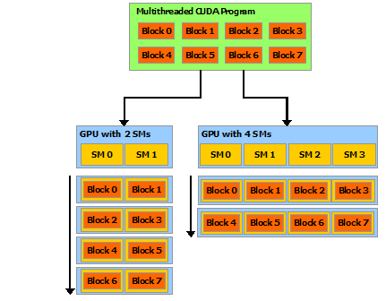
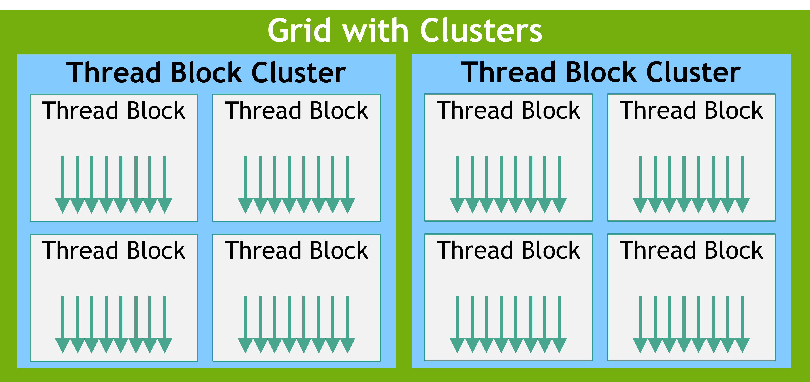
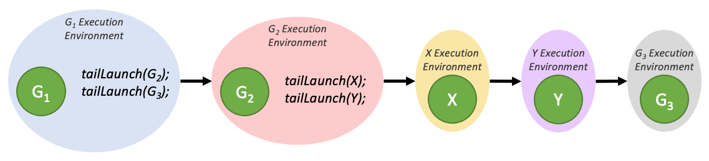
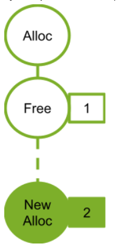
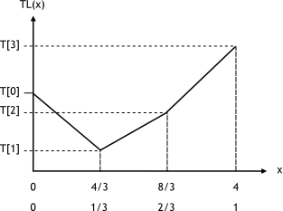
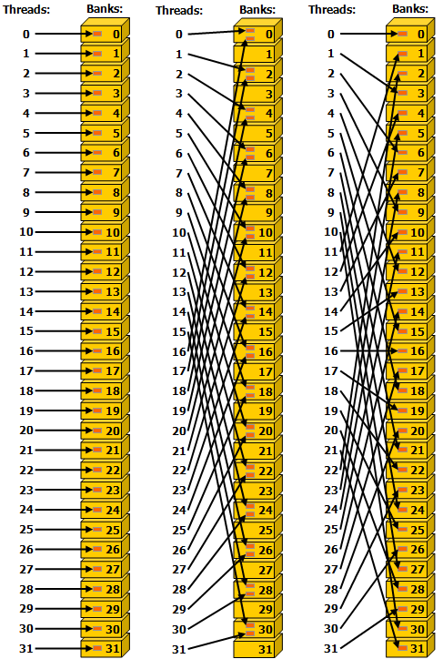

NVIDIA Developer Documentation · 官方版译注
从官方原文 docs.nvidia.com/cuda/cuda-c-programming-guide 严格按官方章节顺序逐节翻译。 全 27 章 + 全部附录均已翻译完成，原文图片、代码示例、表格、章节锚点一一保留。
CUDA 是由 NVIDIA 开发的并行计算平台和编程模型，它能够通过利用 GPU 的强大算力大幅提升计算性能。CUDA 允许开发者使用 C、C++ 和 Fortran 来加速计算密集型应用，已被广泛应用于深度学习、科学计算和高性能计算（HPC）等领域。
CUDA C 编程指南是官方提供的、全面介绍如何在 CUDA 平台上编写程序的权威资料。它详细记录了 CUDA 的体系结构、编程模型、语言扩展以及性能指南。无论你是刚刚入门，还是正在优化复杂的 GPU kernel（内核），本指南都是你充分发挥 CUDA 全部能力的必备参考。
警告
本文档已被新的 CUDA Programming Guide 取代。本文档中的信息应被视为遗留内容，自 CUDA 13.0 起本文档不再更新。请参考新的 CUDA Programming Guide 获取关于 CUDA 的最新信息。
图形处理器（Graphics Processing Unit, GPU）1 在相似的价格和功耗范围内，比 CPU 提供高得多的指令吞吐量和内存带宽。许多应用利用这些更高的能力，使其在 GPU 上的运行速度比在 CPU 上更快（参见 GPU Applications）。其他计算设备，例如 FPGA，也非常节能，但其编程灵活性远不如 GPU。
GPU 与 CPU 之间能力上的差异源于它们的设计目标不同。CPU 旨在以尽可能快的速度执行一连串称为 thread（线程）的操作，并能并行执行数十个这样的线程；而 GPU 则旨在并行执行数千个线程（通过摊销较慢的单线程性能来获得更大的吞吐量）。
GPU 专门用于高度并行的计算，因此设计上将更多晶体管用于数据处理，而不是数据缓存和流程控制。下面的示意图 Figure 1 展示了 CPU 与 GPU 之间芯片资源分配的一个示例。

将更多晶体管用于数据处理（例如浮点计算），对高度并行的计算是有利的；GPU 可以用计算来隐藏内存访问延迟，而不需要依赖大型数据缓存和复杂的流程控制来规避长时间的内存访问延迟，而这两者在晶体管开销上都是昂贵的。
一般而言，应用程序混合了并行部分和串行部分，因此系统通常会同时配备 GPU 和 CPU，以最大化整体性能。具有高度并行性的应用可以利用 GPU 大规模并行的特性，从而获得比在 CPU 上更高的性能。
名称中的 graphics（图形）一词，源于 GPU 最初在二十多年前被创造时，是作为一种专门加速图形渲染的处理器而设计的。在市场对实时、高清 3D 图形永不满足的需求驱动下，它已演化为一种通用处理器，用于远超图形渲染的多种工作负载。
2006 年 11 月，NVIDIA® 推出了 CUDA®，这是一个通用并行计算平台与编程模型，利用 NVIDIA GPU 中的并行计算引擎，以比 CPU 更高效的方式解决许多复杂的计算问题。
CUDA 提供了一个软件环境，允许开发者使用 C++ 作为高级编程语言。如 Figure 2 所示，它还支持其他语言、应用编程接口或基于编译指示的方法，例如 FORTRAN、DirectCompute、OpenACC。

多核 CPU 和众核 GPU 的出现，意味着主流处理器芯片如今都是并行系统。挑战在于如何开发应用软件，使其并行性能透明地扩展，以充分利用日益增加的处理器核心数，正如 3D 图形应用程序透明地把它们的并行性扩展到具有大量核心数差异的众核 GPU 上一样。
CUDA 并行编程模型旨在克服这一挑战，同时为熟悉诸如 C 等标准编程语言的程序员保持较低的学习曲线。
其核心是三个关键抽象——线程组的层次结构、共享内存以及屏障同步——它们以最小的语言扩展集呈现给程序员。
这些抽象提供了细粒度的数据并行和 thread 并行，并嵌套于粗粒度的数据并行和任务并行之中。它们指引程序员把问题划分为可由 block of threads（线程块）独立并行求解的粗粒度子问题，再把每个子问题细分为可由 block 内所有 thread 协作并行求解的更细粒度部分。
这种分解方式既保留了语言的表达能力——允许 thread 在求解每个子问题时进行协作——同时也实现了自动可扩展性。事实上，每个 block of threads 都可以按任意顺序、并发或顺序地被调度到 GPU 内任意可用的多处理器上，因此一个编译好的 CUDA 程序可以在任意数量的多处理器上执行，如 Figure 3 所示，只有运行时系统需要知道物理多处理器的数量。
这种可扩展的编程模型使 GPU 架构可以通过简单地扩展多处理器和内存分区的数量，覆盖广泛的市场范围：从高端的发烧友级 GeForce GPU 和专业级的 Quadro、Tesla 计算产品，到各种各样价格亲民的主流 GeForce GPU（所有支持 CUDA 的 GPU 列表参见 支持 CUDA 的 GPU）。

备注
GPU 是围绕一组流多处理器（Streaming Multiprocessors, SMs）构建的（详情参见 硬件实现）。一个多线程程序被划分为若干彼此独立执行的 block of threads，因此拥有更多多处理器的 GPU 将自动以比拥有较少多处理器的 GPU 更短的时间执行该程序。
版本 |
变更内容 |
|---|---|
13.0 |
将指令吞吐量表从《CUDA C++ 编程指南》的 性能指南 一节移至《CUDA C++ 最佳实践指南》的 指令优化 一节。删除了不再支持的体系结构，并更正了整数运算和类型转换相关条目。 |
12.9 |
|
12.8 |
新增 TMA Swizzle 一节。 |
警告
本文档已被新的 CUDA Programming Guide 取代。本文档中的信息应被视为遗留内容，自 CUDA 13.0 起本文档不再更新。请参考 CUDA Programming Guide 获取最新的 CUDA 信息。
本章通过描述 CUDA 编程模型的主要概念是如何在 C++ 中暴露出来的，来介绍这些概念。
关于 CUDA C++ 的详尽说明见编程接口。
本章及下一章使用的向量加法示例的完整代码可以在 vectorAdd CUDA sample 中找到。
CUDA C++ 在 C++ 的基础上做了扩展，允许程序员定义被称为 kernel（内核）的 C++ 函数。与普通 C++ 函数只被调用一次不同，kernel 在被调用时会由 N 个不同的 CUDA thread（CUDA 线程）并行执行 N 次。
kernel 使用 __global__ 声明说明符来定义，执行该 kernel 的 CUDA thread 数量则通过一种新的 <<<...>>> 执行配置（execution configuration）语法在每次 kernel 调用时指定（见Execution Configuration）。每个执行该 kernel 的 thread 都会获得一个唯一的 thread ID，在 kernel 内可通过内建变量访问到。
作为示例，下面的代码使用内建变量 threadIdx，将两个大小为 N 的向量 A 和 B 相加，并将结果存入向量 C。
// Kernel definition
__global__ void VecAdd(float* A, float* B, float* C)
{
int i = threadIdx.x;
C[i] = A[i] + B[i];
}
int main()
{
...
// Kernel invocation with N threads
VecAdd<<<1, N>>>(A, B, C);
...
}
在这里，每一个执行 VecAdd() 的 N 个 thread 都完成一次配对加法。
为方便起见，threadIdx 是一个三分量的向量，因而 thread 可以使用一维、二维或三维的 thread index（线程索引）来标识，这些 thread 组成一维、二维或三维的线程块（thread block）。这就提供了一种自然的方式，让计算映射到向量、矩阵或体数据这些定义域的元素上。
thread 的索引和它的 thread ID 之间有直接的对应关系：对于一维 block，二者相同；对于大小为 (Dx, Dy) 的二维 block，索引为 (x, y) 的 thread 的 thread ID 为 (x + y Dx)；对于大小为 (Dx, Dy, Dz) 的三维 block，索引为 (x, y, z) 的 thread 的 thread ID 为 (x + y Dx + z Dx Dy)。
作为示例，下面的代码将两个大小为 NxN 的矩阵 A 和 B 相加，并将结果存入矩阵 C。
// Kernel definition
__global__ void MatAdd(float A[N][N], float B[N][N],
float C[N][N])
{
int i = threadIdx.x;
int j = threadIdx.y;
C[i][j] = A[i][j] + B[i][j];
}
int main()
{
...
// Kernel invocation with one block of N * N * 1 threads
int numBlocks = 1;
dim3 threadsPerBlock(N, N);
MatAdd<<<numBlocks, threadsPerBlock>>>(A, B, C);
...
}
每个 block 内的 thread 数是有上限的，因为一个 block 内的所有 thread 都要驻留在同一个流多处理器核心上，并需要共享该核心有限的内存资源。在当前的 GPU 上，一个 thread block 最多可包含 1024 个 thread。
然而，一个 kernel 可以由多个形状相同的 thread block 来执行，因此 thread 的总数等于每个 block 的 thread 数乘以 block 的数量。
这些 block 被组织成一维、二维或三维的 thread block grid，如图 4 所示。grid 中的 thread block 数量通常由要处理的数据规模决定，往往会超过系统中的处理器数量。

<<<...>>> 语法中指定的每个 block 的 thread 数和每个 grid 的 block 数可以是 int 类型，也可以是 dim3 类型。二维的 block 或 grid 可以像上面的示例那样指定。
grid 中的每个 block 都可以用一个一维、二维或三维的唯一索引来标识，在 kernel 内可通过内建变量 blockIdx 访问。thread block 的维度可在 kernel 内通过内建变量 blockDim 访问。
将之前的 MatAdd() 示例扩展为处理多个 block 的版本，代码如下：
// Kernel definition
__global__ void MatAdd(float A[N][N], float B[N][N],
float C[N][N])
{
int i = blockIdx.x * blockDim.x + threadIdx.x;
int j = blockIdx.y * blockDim.y + threadIdx.y;
if (i < N && j < N)
C[i][j] = A[i][j] + B[i][j];
}
int main()
{
...
// Kernel invocation
dim3 threadsPerBlock(16, 16);
dim3 numBlocks(N / threadsPerBlock.x, N / threadsPerBlock.y);
MatAdd<<<numBlocks, threadsPerBlock>>>(A, B, C);
...
}
这里 16x16（即 256 个 thread）的 thread block 大小虽然带有一定任意性，却是一个常见选择。grid 创建得足够大，使得每个矩阵元素都对应一个 thread，与之前一致。为简化起见，本示例假设每个维度上每个 grid 的 thread 数都能被该维度上每个 block 的 thread 数整除，尽管实际上并不要求如此。
thread block 必须可以独立执行。它们必须可以以任意顺序、并行或串行地执行。这一独立性要求允许 thread block 在任意数量的核心上以任意顺序被调度，如图 3 所示，使得程序员可以编写出能随核心数量扩展的代码。
同一 block 内的 thread 可以通过共享内存共享数据，并通过同步执行来协调内存访问，从而进行协作。更确切地说，可以通过调用 __syncthreads() 内建函数在 kernel 中指定同步点；__syncthreads() 起到屏障的作用——block 内的所有 thread 都必须等待，所有 thread 到达此处后才允许任何一个继续执行。共享内存给出了使用共享内存的示例。除了 __syncthreads() 之外，Cooperative Groups API 还提供了一整套丰富的 thread 同步原语。
为了能够高效协作，共享内存被期望是位于每个处理器核心附近的低延迟内存（很像 L1 缓存），__syncthreads() 也被期望是轻量级的。
随着 NVIDIA 计算能力 9.0 的引入，CUDA 编程模型新增了一个可选的层次，称为 Thread Block Cluster（线程块簇），由 thread block 组成。与同一 thread block 内的 thread 保证被共同调度到同一个流多处理器上类似，一个 cluster 中的 thread block 也保证被共同调度到 GPU 中的同一个 GPU Processing Cluster（GPC）上。
与 thread block 类似，cluster 也被组织成一维、二维或三维的 thread block cluster grid，如图 5 所示。一个 cluster 中的 thread block 数量可由用户自行指定，作为 CUDA 中可移植的 cluster 大小，最多支持 8 个 thread block。
注意，在 GPU 硬件或 MIG 配置过小、无法支持 8 个多处理器的情况下，最大 cluster 大小会相应减小。识别这些较小配置以及支持大于 8 的 thread block cluster 大小的较大配置是与架构相关的，可以通过 cudaOccupancyMaxPotentialClusterSize API 查询。

备注
在使用 cluster 支持启动的 kernel 中，出于兼容性目的，gridDim 变量仍然表示以 thread block 数量计的 grid 大小。block 在 cluster 中的 rank（编号）可使用 Cluster Group API 获取。
在 kernel 中可以通过编译期 kernel 属性 __cluster_dims__(X,Y,Z)，或通过 CUDA kernel 启动 API cudaLaunchKernelEx 来启用 thread block cluster。下面的示例展示了如何使用编译期 kernel 属性启动 cluster。使用 kernel 属性时 cluster 大小在编译时被固定下来，然后 kernel 可以使用经典的 <<< , >>> 语法启动。如果一个 kernel 使用了编译期的 cluster 大小，那么在启动 kernel 时就不能再修改 cluster 大小。
// Kernel definition
// Compile time cluster size 2 in X-dimension and 1 in Y and Z dimension
__global__ void __cluster_dims__(2, 1, 1) cluster_kernel(float *input, float* output)
{
}
int main()
{
float *input, *output;
// Kernel invocation with compile time cluster size
dim3 threadsPerBlock(16, 16);
dim3 numBlocks(N / threadsPerBlock.x, N / threadsPerBlock.y);
// The grid dimension is not affected by cluster launch, and is still enumerated
// using number of blocks.
// The grid dimension must be a multiple of cluster size.
cluster_kernel<<<numBlocks, threadsPerBlock>>>(input, output);
}
thread block cluster 大小也可以在运行时设置，然后通过 CUDA kernel 启动 API cudaLaunchKernelEx 启动 kernel。下面的代码示例展示了如何使用可扩展 API 来启动一个 cluster kernel。
// Kernel definition
// No compile time attribute attached to the kernel
__global__ void cluster_kernel(float *input, float* output)
{
}
int main()
{
float *input, *output;
dim3 threadsPerBlock(16, 16);
dim3 numBlocks(N / threadsPerBlock.x, N / threadsPerBlock.y);
// Kernel invocation with runtime cluster size
{
cudaLaunchConfig_t config = {0};
// The grid dimension is not affected by cluster launch, and is still enumerated
// using number of blocks.
// The grid dimension should be a multiple of cluster size.
config.gridDim = numBlocks;
config.blockDim = threadsPerBlock;
cudaLaunchAttribute attribute[1];
attribute[0].id = cudaLaunchAttributeClusterDimension;
attribute[0].val.clusterDim.x = 2; // Cluster size in X-dimension
attribute[0].val.clusterDim.y = 1;
attribute[0].val.clusterDim.z = 1;
config.attrs = attribute;
config.numAttrs = 1;
cudaLaunchKernelEx(&config, cluster_kernel, input, output);
}
}
在计算能力 9.0 的 GPU 上，cluster 中的所有 thread block 都保证被共同调度到同一个 GPU Processing Cluster（GPC）上，并允许 cluster 中的 thread block 使用 Cluster Group API 中的 cluster.sync() 进行硬件支持的同步。Cluster group 还提供成员函数，可分别通过 num_threads() 和 num_blocks() API 以 thread 数或 block 数的形式查询 cluster group 的大小。cluster group 中 thread 或 block 的 rank 可分别使用 dim_threads() 和 dim_blocks() API 查询。
属于同一个 cluster 的 thread block 可以访问分布式共享内存（Distributed Shared Memory）。cluster 中的 thread block 能够对分布式共享内存中的任意地址进行读、写和原子操作。分布式共享内存给出了一个在分布式共享内存中进行直方图统计的示例。
使用 __cluster_dims__ 时，启动的 cluster 数量是隐式的，只能手动计算得出。
__cluster_dims__((2, 2, 2)) __global__ void foo();
// 8x8x8 clusters each with 2x2x2 thread blocks.
foo<<<dim3(16, 16, 16), dim3(1024, 1, 1)>>>();
在上面的示例中，kernel 以 16x16x16 个 thread block 的 grid 启动，实际上也就是一个 8x8x8 个 cluster 的 grid。另一种做法是，借助另一个编译期 kernel 属性 __block_size__，可以显式地按 thread block cluster 的数量来配置启动的 grid。
// Implementation detail of how many threads per block and blocks per cluster
// is handled as an attribute of the kernel.
__block_size__((1024, 1, 1), (2, 2, 2)) __global__ void foo();
// 8x8x8 clusters.
foo<<<dim3(8, 8, 8)>>>();
__block_size__ 需要两个字段，每个字段都是一个 3 元组。第一个元组表示 block 维度，第二个表示 cluster 大小。如果未传入第二个元组，则默认为 (1,1,1)。要指定流（stream），必须在 <<<>>> 中第二个和第三个参数分别传入 1 和 0，最后再传入流。传入其它值会导致未定义行为。
注意，__block_size__ 的第二个元组和 __cluster_dims__ 同时被指定是非法的。同时，__block_size__ 与一个空的 __cluster_dims__ 一起使用也是非法的。当 __block_size__ 的第二个元组被指定时，意味着启用了"把 block 当作 cluster"，编译器会把 <<<>>> 中的第一个参数识别为 cluster 的数量，而不是 thread block 的数量。
CUDA thread 在执行期间可以访问来自多个内存空间的数据，如图 6 所示。每个 thread 拥有自己的私有本地内存。每个 thread block 拥有对该 block 内所有 thread 可见的共享内存，其生命周期与 block 相同。同一个 thread block cluster 中的 thread block 可以对彼此的共享内存执行读、写和原子操作。所有 thread 都可以访问同一个全局内存。
此外还有两个对所有 thread 都可见的只读内存空间：常量内存和纹理内存空间。全局内存、常量内存和纹理内存空间都针对不同的内存使用方式做了优化（参见Device 内存访问）。对于某些特定的数据格式，纹理内存还提供不同的寻址模式以及数据过滤功能（参见纹理和表面内存）。
全局内存、常量内存和纹理内存空间在同一个应用程序的多次 kernel 启动之间是持久的。

如图 7 所示，CUDA 编程模型假定 CUDA thread 在一个物理上独立的 device（设备）上执行，该设备作为运行 C++ 程序的 host（主机）的协处理器。例如，当 kernel 在 GPU 上执行而 C++ 程序的其余部分在 CPU 上执行时，就是这种情况。
CUDA 编程模型还假定 host 和 device 在 DRAM 中各自维护独立的内存空间，分别称为 host 内存（host memory）和 device 内存（device memory）。因此，程序通过调用 CUDA runtime（在编程接口中描述）来管理 kernel 可见的全局、常量和纹理内存空间。这包括 device 内存的分配与释放，以及 host 与 device 内存之间的数据传输。
统一内存（Unified Memory）提供了受管内存（managed memory），用以桥接 host 与 device 的内存空间。受管内存可以被系统中所有的 CPU 和 GPU 作为一个单一、一致的内存映像访问，并具有统一的地址空间。这一能力支持对 device 内存的超额订阅（oversubscription），并且通过免去在 host 与 device 间显式镜像数据的需要，可以极大简化应用程序的移植工作。统一内存的入门介绍参见统一内存编程。

备注
串行代码在 host 上执行，并行代码在 device 上执行。
在 CUDA 编程模型中，thread 是进行计算或内存操作的最低抽象层级。从基于 NVIDIA Ampere GPU 架构的 device 开始，CUDA 编程模型通过异步编程模型为内存操作提供了加速。异步编程模型定义了异步操作相对于 CUDA thread 的行为。
异步编程模型定义了 异步屏障在 CUDA thread 之间进行同步的行为。该模型还解释和定义了如何使用 cuda::memcpy_async 在 GPU 进行计算的同时，从全局内存异步搬运数据。
异步操作定义为：由某个 CUDA thread 发起，并被另一个"假想 thread"异步执行的操作。在格式正确的程序中，会有一个或多个 CUDA thread 与该异步操作进行同步。发起异步操作的 CUDA thread 不一定要在参与同步的 thread 之中。
这样一个异步 thread（假想 thread）始终与发起该异步操作的 CUDA thread 相关联。异步操作使用一个同步对象来同步操作的完成。这种同步对象可以由用户显式管理（例如 cuda::memcpy_async），也可以由库隐式管理（例如 cooperative_groups::memcpy_async）。
同步对象可以是 cuda::barrier 或 cuda::pipeline。这些对象在异步屏障和使用 cuda::pipeline 进行异步数据拷贝中有详细说明。这些同步对象可以在不同的 thread scope（线程作用域）下使用。一个 scope 定义了一组 thread，这些 thread 可以使用该同步对象与异步操作进行同步。下表定义了 CUDA C++ 中可用的 thread scope，以及每个 scope 下可以参与同步的 thread。
Thread Scope |
说明 |
|---|---|
|
只有发起该异步操作的 CUDA thread 参与同步。 |
|
与发起 thread 同属一个 thread block 的全部或任意 CUDA thread 参与同步。 |
|
与发起 thread 在同一个 GPU device 上的全部或任意 CUDA thread 参与同步。 |
|
与发起 thread 在同一个系统上的全部或任意 CUDA 或 CPU thread 参与同步。 |
这些 thread scope 作为标准 C++ 的扩展实现在 CUDA Standard C++ 库中。
一个 device 的计算能力（compute capability）由一个版本号表示，有时也称为该 device 的"SM 版本"。该版本号标识 GPU 硬件所支持的特性，应用程序在运行时使用它来判定当前 GPU 上有哪些硬件特性和/或指令可用。
计算能力由一个主修订号 X 和一个次修订号 Y 组成，记作 X.Y。
主修订号表示一个 device 的核心 GPU 架构。主修订号相同的 device 共享相同的基础架构。下表列出了每个 NVIDIA GPU 架构对应的主修订号。
主修订号 |
NVIDIA GPU 架构 |
|---|---|
9 |
NVIDIA Hopper GPU 架构 |
8 |
NVIDIA Ampere GPU 架构 |
7 |
NVIDIA Volta GPU 架构 |
6 |
NVIDIA Pascal GPU 架构 |
5 |
NVIDIA Maxwell GPU 架构 |
3 |
NVIDIA Kepler GPU 架构 |
次修订号对应核心架构上的渐进式改进，可能包含新的特性。
计算能力 |
NVIDIA GPU 架构 |
基于 |
|---|---|---|
7.5 |
NVIDIA Turing GPU 架构 |
NVIDIA Volta GPU 架构 |
支持 CUDA 的 GPU列出了所有支持 CUDA 的 device 及其计算能力。计算能力给出了每个计算能力对应的技术规格。
备注
某个 GPU 的计算能力版本不应与 CUDA 版本（例如 CUDA 7.5、CUDA 8、CUDA 9）相混淆，后者是 CUDA 软件平台的版本。应用程序开发者利用 CUDA 平台来构建能在多代 GPU 架构（包括尚未发明的未来 GPU 架构）上运行的应用程序。虽然 CUDA 平台的新版本通常会通过支持新 GPU 架构对应的计算能力版本来为该架构提供原生支持，但 CUDA 平台的新版本通常也会包含一些与硬件代次无关的软件特性。
从 CUDA 7.0 和 CUDA 9.0 开始，Tesla 和 Fermi 架构分别不再受支持。
CUDA C++ 为熟悉 C++ 编程语言的用户提供了一条简洁直接的路径来为 device 编写程序。它由 C++ 语言的一组最小化扩展以及一个 runtime 库组成。
核心语言扩展已在 编程模型 中介绍。它们允许程序员将一个 kernel 定义为一个 C++ 函数，并使用一种新的语法来指定每次调用该 kernel 的 grid 与 block 维度。C++ 语言扩展 中给出了所有扩展的完整描述。任何包含这些扩展的源文件都必须使用 nvcc 编译，如 使用 NVCC 编译 中所述。
CUDA runtime 在 CUDA Runtime 中介绍。它提供在 host 上执行的 C 与 C++ 函数，用于分配和回收 device 内存、在 host 内存与 device 内存之间传输数据、管理具有多个 device 的系统等。一份 runtime 的完整描述可在 CUDA 参考手册中找到。
runtime 构建于一个更底层的 C API（CUDA Driver API）之上，应用程序也可直接访问该 API。Driver API 通过暴露诸如 CUDA contexts（device 的 host 进程类比）和 CUDA modules（device 的动态加载库类比）这样的底层概念，提供了更精细的控制能力。大多数应用程序不使用 Driver API，因为它们不需要这种额外控制；另外，使用 runtime 时，context 与 module 管理是隐式的，代码更为简洁。由于 runtime 与 Driver API 可互操作，大多数需要某些 Driver API 特性的应用程序可以在使用 runtime API 的同时调用 Driver API。Driver API 在 Driver API 中介绍，并在参考手册中给出完整描述。
kernel（内核）可以使用 CUDA 指令集架构 PTX 编写，PTX 在 PTX 参考手册中有详细说明。然而，使用诸如 C++ 这样的高级编程语言通常更高效。在这两种情况下，kernel 都必须通过 nvcc 编译为二进制代码，才能在 device（设备）上执行。
nvcc 是一个编译器驱动器，它简化了编译 C++ 或 PTX 代码的过程：它提供简单而熟悉的命令行选项，并通过调用实现各个编译阶段的工具集来执行这些选项。本节概述 nvcc 的工作流程和命令选项，完整说明可参考 nvcc 用户手册。
用 nvcc 编译的源文件可以包含 host 代码（即在 host 上执行的代码）和 device 代码（即在 device 上执行的代码）的混合。nvcc 的基本工作流程是先将 device 代码与 host 代码分离，然后：
将 device 代码编译为汇编形式（PTX 代码）和/或二进制形式（cubin 对象），
并修改 host 代码，将 Kernels（在执行配置中有更详细描述）中引入的 <<<...>>> 语法替换为必要的 CUDA Runtime 函数调用，以便从 PTX 代码和/或 cubin 对象中加载并启动每个编译好的 kernel。
修改后的 host 代码要么作为 C++ 代码输出，以便由其他工具编译；要么由 nvcc 在最后一个编译阶段调用 host 编译器直接生成目标代码。
随后，应用程序可以：
要么链接到编译后的 host 代码（这是最常见的情况），
要么忽略修改后的 host 代码（如果有），转而使用 CUDA Driver API（见Driver API）来加载并执行 PTX 代码或 cubin 对象。
应用程序在运行时加载的任何 PTX 代码都会被 device 驱动进一步编译为二进制代码。这称为即时编译（just-in-time compilation）。即时编译会增加应用程序的加载时间，但允许应用程序受益于每个新 device 驱动带来的编译器改进。它也是应用程序能在编译时尚不存在的 device 上运行的唯一方法，详见应用兼容性。
当 device 驱动为某个应用程序即时编译 PTX 代码时，它会自动缓存所生成的二进制代码的副本，以便后续运行该应用程序时无需重复编译。这个缓存——称为计算缓存（compute cache）——在 device 驱动升级时会自动失效，这样应用程序就能受益于新驱动中内置的即时编译器的改进。
有一些环境变量可以用来控制即时编译，详见 CUDA 环境变量
除了使用 nvcc 来编译 CUDA C++ device 代码之外，还可以使用 NVRTC 在运行时将 CUDA C++ device 代码编译为 PTX。NVRTC 是 CUDA C++ 的运行时编译库；更多信息可参见 NVRTC 用户指南。
二进制代码是架构相关的。cubin 对象通过编译器选项 -code 来指定目标架构生成：例如，使用 -code=sm_80 编译会为计算能力 8.0 的 device 生成二进制代码。二进制兼容性仅保证从一个小版本到下一个小版本，而不保证向前兼容旧的小版本或跨大版本。换句话说，为计算能力 X.y 生成的 cubin 对象只能在计算能力为 X.z（z≥y）的 device 上执行。
备注
二进制兼容性仅在桌面平台上支持。Tegra 上不支持。此外，桌面与 Tegra 之间的二进制兼容性也不支持。
某些 PTX 指令仅在更高计算能力的 device 上才被支持。例如，Warp Shuffle 函数仅在计算能力 5.0 及以上的 device 上支持。-arch 编译器选项用于指定在将 C++ 编译为 PTX 代码时所假设的计算能力。因此，例如包含 warp shuffle 的代码必须使用 -arch=compute_50（或更高）编译。
为某个特定计算能力生成的 PTX 代码总是可以被编译为该计算能力或更高计算能力的二进制代码。注意，由较早 PTX 版本编译出的二进制可能无法利用某些硬件特性。例如，从为计算能力 6.0（Pascal）生成的 PTX 编译出的、目标是计算能力 7.0（Volta）device 的二进制，将无法使用 Tensor Core 指令，因为这些指令在 Pascal 上不可用。结果是，最终二进制的性能可能比用最新版 PTX 生成的二进制更差。
针对架构专属特性（Architecture-Specific Features）编译的 PTX 代码只能在完全相同的物理架构上运行，其他地方都不能运行。架构专属的 PTX 代码不前向也不后向兼容。
例如，使用 sm_90a 或 compute_90a 编译的代码只能在计算能力 9.0 的 device 上运行，并且不向后或向前兼容。
针对家族专属特性（Family-Specific Features）编译的 PTX 代码只能在完全相同的物理架构以及同家族的其他架构上运行。家族专属的 PTX 代码与同家族的其他 device 向前兼容，但不向后兼容。
例如，使用 sm_100f 或 compute_100f 编译的代码只能在计算能力 10.0 和 10.3 的 device 上运行。表 25 展示了家族专属目标与计算能力之间的兼容性。
要在特定计算能力的 device 上执行代码，应用程序必须加载与该计算能力兼容的二进制或 PTX 代码，如二进制兼容性和 PTX 兼容性中所述。特别地，为了在未来更高计算能力的架构（目前还无法为其生成二进制代码）上执行代码，应用程序必须加载将被即时编译到这些 device 上的 PTX 代码（见即时编译）。
CUDA C++ 应用程序中嵌入哪些 PTX 和二进制代码，由 -arch 和 -code 编译器选项或 -gencode 编译器选项控制，详见 nvcc 用户手册。例如，
nvcc x.cu
-gencode arch=compute_50,code=sm_50
-gencode arch=compute_60,code=sm_60
-gencode arch=compute_70,code=\"compute_70,sm_70\"
会嵌入兼容计算能力 5.0 和 6.0 的二进制代码（第一和第二个 -gencode 选项），以及兼容计算能力 7.0 的 PTX 和二进制代码（第三个 -gencode 选项）。
会生成 host 代码以便在运行时自动选择最合适的代码进行加载和执行，在上面的例子中会是：
5.0 的二进制代码，用于计算能力 5.0 和 5.2 的 device，
6.0 的二进制代码，用于计算能力 6.0 和 6.1 的 device，
7.0 的二进制代码，用于计算能力 7.0 和 7.5 的 device，
PTX 代码，在运行时被编译为二进制代码，用于计算能力高于 7.5 的 device
例如，x.cu 可以包含一条使用 warp 归约操作的优化代码路径，而这种操作仅在计算能力 8.0 及以上的 device 上支持。__CUDA_ARCH__ 宏可用于根据计算能力区分不同的代码路径。它仅在 device 代码中被定义。例如，使用 -arch=compute_80 编译时，__CUDA_ARCH__ 等于 800。
如果 x.cu 用 sm_100f 或 compute_100f 针对家族专属特性编译，那么代码只能在该特定家族的 device（即计算能力 10.0 和 10.3 的 device）上运行。对于家族专属代码目标，还会额外定义一个宏 __CUDA_ARCH_FAMILY_SPECIFIC__。在这个例子中，__CUDA_ARCH_FAMILY_SPECIFIC__ 等于 1000。
如果 x.cu 用 sm_100a 或 compute_100a 针对架构专属特性编译，那么代码只能在计算能力 10.0 的 device 上运行。对于架构专属代码目标，还会额外定义一个宏 __CUDA_ARCH_SPECIFIC__。在这个例子中，__CUDA_ARCH_SPECIFIC__ 等于 1000。由于架构专属特性是家族专属特性的超集，家族专属宏 __CUDA_ARCH_FAMILY_SPECIFIC__ 也会被定义，且等于 1000。
使用 Driver API 的应用程序必须将代码编译为单独的文件，并在运行时显式加载并执行最合适的文件。
Volta 架构引入了独立线程调度（Independent Thread Scheduling），改变了 thread 在 GPU 上的调度方式。对于依赖之前架构中特定 SIMT 调度行为的代码，独立线程调度可能会改变参与执行的线程集，导致结果不正确。为了在按独立线程调度所述的修正措施进行迁移期间提供帮助，Volta 开发者可以通过编译器选项组合 -arch=compute_60 -code=sm_70 显式选用 Pascal 的线程调度方式。
nvcc 用户手册列出了 -arch、-code 和 -gencode 编译器选项的多种简写形式。例如，-arch=sm_70 是 -arch=compute_70 -code=compute_70,sm_70 的简写（也等同于 -gencode arch=compute_70,code=\"compute_70,sm_70\"）。
编译器前端按 C++ 语法规则处理 CUDA 源文件。host 代码完整支持 C++。然而，对于 device 代码只完整支持 C++ 的一个子集，详见 C++ 语言支持。
64 位版本的 nvcc 以 64 位模式编译 device 代码（即指针为 64 位）。在 64 位模式下编译的 device 代码仅支持与 64 位模式下编译的 host 代码搭配使用。
runtime 在 cudart 库中实现，该库通过 cudart.lib 或 libcudart.a 以静态方式链接到应用程序，或通过 cudart.dll 或 libcudart.so 以动态方式链接。需要 cudart.dll 和/或 cudart.so 进行动态链接的应用程序，通常将这些库作为应用程序安装包的一部分一起分发。在同一个 CUDA runtime 实例之间传递地址才是安全的，仅当两个组件链接到同一个 CUDA runtime 实例时才允许相互传递这些引用。
它的所有入口点均带有 cuda 前缀。
如 异构编程 中所述，CUDA 编程模型假定系统由一个 host 和一个 device 组成，二者各自拥有独立的内存。Device 内存 概述用于管理 device 内存的 runtime 函数。
共享内存 演示了如何使用 线程层次 中介绍的共享内存来最大化性能。
页锁定主机内存 介绍了 page-locked host 内存，需要用它来重叠 kernel 执行与 host-device 之间的数据传输。
异步并发执行 描述了在系统的不同层级上启用异步并发执行所使用的概念与 API。
多 device 系统 展示了编程模型如何扩展到一个系统中连接了多个 device 的情况。
错误检查 描述了如何正确检查 runtime 产生的错误。
调用栈 提到了用于管理 CUDA C++ 调用栈的 runtime 函数。
纹理与表面内存 介绍 texture 与 surface 内存空间，它们提供了访问 device 内存的另一种方式；它们还公开了 GPU 纹理硬件的一个子集。
图形互操作 介绍了 runtime 提供的与两大主要图形 API（OpenGL 与 Direct3D）互操作的各种函数。
外部资源互操作 介绍了 runtime 提供的用于与外部 API 互操作的各种函数。
从 CUDA 12.0 开始，cudaInitDevice() 和 cudaSetDevice() 调用会初始化运行时以及与指定 device 关联的主上下文（primary context）。如果不调用它们，运行时将隐式使用 device 0，并按需自我初始化以处理其他 Runtime API 请求。在对运行时函数调用进行计时以及解析对运行时的第一次调用所返回的错误码时，需要牢记这一点。在 12.0 之前，cudaSetDevice() 并不会初始化运行时，应用程序通常会使用空操作运行时调用 cudaFree(0) 来将运行时初始化与其他 API 活动隔离开（既为了计时也为了错误处理）。
运行时会为系统中的每个 device 创建一个 CUDA 上下文（CUDA 上下文的更多细节见上下文）。这个上下文是该 device 的主上下文（primary context），并在第一次需要该 device 上活动上下文的 Runtime 函数调用时被初始化。它在应用程序的所有 host 线程之间共享。作为创建该上下文的一部分，如有必要 device 代码会被即时编译（见即时编译）并加载到 device 内存。这一切都是透明发生的。如有需要，例如出于 Driver API 互操作目的，device 的主上下文可以从 Driver API 访问，详见Runtime 与 Driver API 之间的互操作性。
当 host 线程调用 cudaDeviceReset() 时，将销毁该 host 线程当前所操作 device（即Device 选择中定义的当前 device）的主上下文。下一次任何以该 device 为当前 device 的 host 线程发起的 Runtime 函数调用，将为该 device 创建新的主上下文。
备注
CUDA 接口使用在 host 程序启动时初始化、在 host 程序终止时销毁的全局状态。CUDA 运行时和驱动无法检测该状态是否无效，因此在程序启动或在 main 之后的终止期间（隐式或显式地）使用这些接口将导致未定义行为。
从 CUDA 12.0 开始，cudaSetDevice() 现在会在切换 host 线程的当前 device 之后显式地初始化运行时。先前版本的 CUDA 会将新 device 上的运行时初始化延迟到 cudaSetDevice() 之后的第一次 Runtime 调用。这一变化意味着现在检查 cudaSetDevice() 的返回值以发现初始化错误变得非常重要。
参考手册中错误处理和版本管理章节的 Runtime 函数不会初始化运行时。
正如异构编程中所述，CUDA 编程模型假设系统由 host 和 device 组成，且各自拥有独立的内存。kernel 在 device 内存之外运行，因此运行时提供了分配、释放和拷贝 device 内存的函数，以及在 host 内存和 device 内存之间传输数据的函数。
Device 内存可以分配为线性内存（linear memory）或 CUDA 数组。
CUDA 数组是为纹理读取优化的不透明内存布局。它们在 纹理与表面内存中有详细介绍。
线性内存分配在统一的单一地址空间中，这意味着分别分配的实体可以通过指针相互引用，例如在二叉树或链表中。地址空间的大小取决于 host 系统（CPU）和所用 GPU 的计算能力：
x86_64 (AMD64) |
POWER (ppc64le) |
ARM64 |
|
|---|---|---|---|
计算能力 5.3（Maxwell）及以下 |
40bit |
40bit |
40bit |
计算能力 6.0（Pascal）或更高 |
最多 47bit |
最多 49bit |
最多 48bit |
备注
在计算能力 5.3（Maxwell）及更早的 device 上，CUDA 驱动会创建一个未提交的 40 位虚拟地址保留区，以确保内存分配（指针）落在受支持的范围内。这种保留显示为已保留的虚拟内存，但在程序实际分配内存之前并不占用任何物理内存。
线性内存通常使用 cudaMalloc() 分配、使用 cudaFree() 释放，host 内存与 device 内存之间的数据传输通常使用 cudaMemcpy() 完成。在 Kernels 一节的向量加法代码示例中，向量需要从 host 内存拷贝到 device 内存：
// Device code
__global__ void VecAdd(float* A, float* B, float* C, int N)
{
int i = blockDim.x * blockIdx.x + threadIdx.x;
if (i < N)
C[i] = A[i] + B[i];
}
// Host code
int main()
{
int N = ...;
size_t size = N * sizeof(float);
// Allocate input vectors h_A and h_B in host memory
float* h_A = (float*)malloc(size);
float* h_B = (float*)malloc(size);
float* h_C = (float*)malloc(size);
// Initialize input vectors
...
// Allocate vectors in device memory
float* d_A;
cudaMalloc(&d_A, size);
float* d_B;
cudaMalloc(&d_B, size);
float* d_C;
cudaMalloc(&d_C, size);
// Copy vectors from host memory to device memory
cudaMemcpy(d_A, h_A, size, cudaMemcpyHostToDevice);
cudaMemcpy(d_B, h_B, size, cudaMemcpyHostToDevice);
// Invoke kernel
int threadsPerBlock = 256;
int blocksPerGrid =
(N + threadsPerBlock - 1) / threadsPerBlock;
VecAdd<<<blocksPerGrid, threadsPerBlock>>>(d_A, d_B, d_C, N);
// Copy result from device memory to host memory
// h_C contains the result in host memory
cudaMemcpy(h_C, d_C, size, cudaMemcpyDeviceToHost);
// Free device memory
cudaFree(d_A);
cudaFree(d_B);
cudaFree(d_C);
// Free host memory
...
}
线性内存也可以通过 cudaMallocPitch() 和 cudaMalloc3D() 分配。对于 2D 或 3D 数组的分配，推荐使用这些函数，因为它们能确保分配被适当地填充以满足 Device 内存访问中描述的对齐要求，从而在访问行地址或在 2D 数组与 device 内存的其他区域之间执行拷贝（使用 cudaMemcpy2D() 和 cudaMemcpy3D() 函数）时获得最佳性能。访问数组元素时必须使用返回的 pitch（即步长）。下面的代码示例分配了一个 width x height 的二维浮点数数组，并展示了如何在 device 代码中遍历数组元素：
// Host code
int width = 64, height = 64;
float* devPtr;
size_t pitch;
cudaMallocPitch(&devPtr, &pitch,
width * sizeof(float), height);
MyKernel<<<100, 512>>>(devPtr, pitch, width, height);
// Device code
__global__ void MyKernel(float* devPtr,
size_t pitch, int width, int height)
{
for (int r = 0; r < height; ++r) {
float* row = (float*)((char*)devPtr + r * pitch);
for (int c = 0; c < width; ++c) {
float element = row[c];
}
}
}
下面的代码示例分配了一个 width x height x depth 的三维浮点数数组，并展示了如何在 device 代码中遍历数组元素：
// Host code
int width = 64, height = 64, depth = 64;
cudaExtent extent = make_cudaExtent(width * sizeof(float),
height, depth);
cudaPitchedPtr devPitchedPtr;
cudaMalloc3D(&devPitchedPtr, extent);
MyKernel<<<100, 512>>>(devPitchedPtr, width, height, depth);
// Device code
__global__ void MyKernel(cudaPitchedPtr devPitchedPtr,
int width, int height, int depth)
{
char* devPtr = devPitchedPtr.ptr;
size_t pitch = devPitchedPtr.pitch;
size_t slicePitch = pitch * height;
for (int z = 0; z < depth; ++z) {
char* slice = devPtr + z * slicePitch;
for (int y = 0; y < height; ++y) {
float* row = (float*)(slice + y * pitch);
for (int x = 0; x < width; ++x) {
float element = row[x];
}
}
}
}
备注
为了避免分配过多内存从而影响整个系统性能，请根据问题规模向用户索取分配参数。如果分配失败，可以回退到其他较慢的内存类型（cudaMallocHost()、cudaHostRegister() 等），或者返回错误告诉用户被拒绝分配了多少内存。如果应用程序因某种原因无法请求分配参数，我们建议在支持的平台上使用 cudaMallocManaged()。
参考手册列出了用于在 cudaMalloc() 分配的线性内存、cudaMallocPitch() 或 cudaMalloc3D() 分配的线性内存、CUDA 数组、以及为声明在全局或常量内存空间中的变量分配的内存之间进行内存拷贝的各种函数。
下面的代码示例演示了通过 Runtime API 访问全局变量的几种方式：
__constant__ float constData[256];
float data[256];
cudaMemcpyToSymbol(constData, data, sizeof(data));
cudaMemcpyFromSymbol(data, constData, sizeof(data));
__device__ float devData;
float value = 3.14f;
cudaMemcpyToSymbol(devData, &value, sizeof(float));
__device__ float* devPointer;
float* ptr;
cudaMalloc(&ptr, 256 * sizeof(float));
cudaMemcpyToSymbol(devPointer, &ptr, sizeof(ptr));
cudaGetSymbolAddress() 用于获取指向为某个声明在全局内存空间中的变量所分配内存的地址。该分配内存的大小通过 cudaGetSymbolSize() 获取。
当 CUDA kernel 反复访问全局内存中的某个数据区域时，可以认为这种数据访问是持续的（persisting）。反之，如果数据只被访问一次，则可以认为这种访问是流式的（streaming）。
从 CUDA 11.0 开始，计算能力 8.0 及以上的 device 具备影响 L2 缓存中数据驻留性（persistence）的能力，从而有可能为对全局内存的访问提供更高的带宽和更低的延迟。
L2 缓存的一部分可以被预留出来用于对全局内存的持续数据访问。持续访问对这部分预留的 L2 缓存拥有优先使用权，而对全局内存的普通或流式访问只有在该部分未被持续访问占用时才能使用。
用于持续访问的 L2 缓存预留大小可以在限制范围内调整：
cudaGetDeviceProperties(&prop, device_id);
size_t size = min(int(prop.l2CacheSize * 0.75), prop.persistingL2CacheMaxSize);
cudaDeviceSetLimit(cudaLimitPersistingL2CacheSize, size); /* set-aside 3/4 of L2 cache for persisting accesses or the max allowed*/
当 GPU 配置为 Multi-Instance GPU（MIG）模式时，L2 缓存预留功能被禁用。
当使用 Multi-Process Service（MPS）时，L2 缓存预留大小不能通过 cudaDeviceSetLimit 修改。预留大小只能在启动 MPS server 时通过环境变量 CUDA_DEVICE_DEFAULT_PERSISTING_L2_CACHE_PERCENTAGE_LIMIT 指定。
访问策略窗口指定全局内存中一段连续区域以及该区域内访问在 L2 缓存中的驻留属性。
下面的代码示例展示了如何通过 CUDA Stream 设置 L2 持续访问窗口。
CUDA Stream 示例
cudaStreamAttrValue stream_attribute; // Stream level attributes data structure
stream_attribute.accessPolicyWindow.base_ptr = reinterpret_cast<void*>(ptr); // Global Memory data pointer
stream_attribute.accessPolicyWindow.num_bytes = num_bytes; // Number of bytes for persistence access.
// (Must be less than cudaDeviceProp::accessPolicyMaxWindowSize)
stream_attribute.accessPolicyWindow.hitRatio = 0.6; // Hint for cache hit ratio
stream_attribute.accessPolicyWindow.hitProp = cudaAccessPropertyPersisting; // Type of access property on cache hit
stream_attribute.accessPolicyWindow.missProp = cudaAccessPropertyStreaming; // Type of access property on cache miss.
//Set the attributes to a CUDA stream of type cudaStream_t
cudaStreamSetAttribute(stream, cudaStreamAttributeAccessPolicyWindow, &stream_attribute);
当 kernel 随后在 CUDA stream 中执行时，对全局内存区间 [ptr..ptr+num_bytes) 内的内存访问比对全局内存其他位置的访问更有可能驻留在 L2 缓存中。
L2 驻留也可以为 CUDA Graph Kernel Node 设置，如下例所示：
CUDA GraphKernelNode 示例
cudaKernelNodeAttrValue node_attribute; // Kernel level attributes data structure
node_attribute.accessPolicyWindow.base_ptr = reinterpret_cast<void*>(ptr); // Global Memory data pointer
node_attribute.accessPolicyWindow.num_bytes = num_bytes; // Number of bytes for persistence access.
// (Must be less than cudaDeviceProp::accessPolicyMaxWindowSize)
node_attribute.accessPolicyWindow.hitRatio = 0.6; // Hint for cache hit ratio
node_attribute.accessPolicyWindow.hitProp = cudaAccessPropertyPersisting; // Type of access property on cache hit
node_attribute.accessPolicyWindow.missProp = cudaAccessPropertyStreaming; // Type of access property on cache miss.
//Set the attributes to a CUDA Graph Kernel node of type cudaGraphNode_t
cudaGraphKernelNodeSetAttribute(node, cudaKernelNodeAttributeAccessPolicyWindow, &node_attribute);
hitRatio 参数可用于指定有多大比例的访问会获得 hitProp 属性。在上述两个示例中，对全局内存区间 [ptr..ptr+num_bytes) 的 60% 的访问具有持续属性，40% 具有流式属性。具体哪些内存访问会被归类为持续访问（即获得 hitProp）是随机的，概率大约为 hitRatio；该概率分布取决于硬件架构和内存范围。
例如，如果 L2 预留缓存大小为 16KB，而 accessPolicyWindow 中的 num_bytes 为 32KB：
当 hitRatio 为 0.5 时，硬件会从 32KB 窗口中随机选择 16KB 标记为持续，并缓存到 L2 预留区域。
当 hitRatio 为 1.0 时，硬件会尝试将整个 32KB 窗口缓存到 L2 预留区域。由于预留区域比窗口小，缓存行会被淘汰，以便在 L2 缓存的预留部分中保留 32KB 数据中最近使用的 16KB。
因此，hitRatio 可用于避免缓存行抖动（thrashing），并整体减少进出 L2 缓存的数据量。
低于 1.0 的 hitRatio 值可用于手动控制来自并发 CUDA 流的不同 accessPolicyWindow 在 L2 中能缓存多少数据。例如，设 L2 预留缓存大小为 16KB；两个并发 kernel 分别位于两个不同的 CUDA 流中，每个 kernel 的 accessPolicyWindow 均为 16KB 且 hitRatio 均为 1.0，那么在争用共享 L2 资源时它们可能会互相驱逐缓存行。然而，如果两个 accessPolicyWindows 的 hitRatio 值都为 0.5，它们就不太可能驱逐自己的或对方的持续缓存行。
针对不同的全局内存数据访问定义了三种访问属性：
cudaAccessPropertyStreaming：以流式属性发生的内存访问较不容易驻留在 L2 缓存中，因为它们会被优先淘汰。
cudaAccessPropertyPersisting：以持续属性发生的内存访问更容易驻留在 L2 缓存中，因为它们会被优先保留在 L2 缓存的预留部分。
cudaAccessPropertyNormal：该访问属性会强制将先前应用的持续访问属性重置为正常状态。来自先前 CUDA kernel 的具有持续属性的内存访问可能在其预期用途之后仍长时间驻留在 L2 缓存中。这种使用后仍驻留的情况会减少后续不使用持续属性的 kernel 所能用的 L2 缓存量。用 cudaAccessPropertyNormal 属性重置一个访问策略窗口，会移除先前访问的持续（优先保留）状态，就如同先前访问没有访问属性一样。
下面的示例展示了如何预留 L2 缓存用于持续访问、在 CUDA kernel 中通过 CUDA Stream 使用预留的 L2 缓存，然后再重置 L2 缓存。
cudaStream_t stream;
cudaStreamCreate(&stream); // Create CUDA stream
cudaDeviceProp prop; // CUDA device properties variable
cudaGetDeviceProperties( &prop, device_id); // Query GPU properties
size_t size = min( int(prop.l2CacheSize * 0.75) , prop.persistingL2CacheMaxSize );
cudaDeviceSetLimit( cudaLimitPersistingL2CacheSize, size); // set-aside 3/4 of L2 cache for persisting accesses or the max allowed
size_t window_size = min(prop.accessPolicyMaxWindowSize, num_bytes); // Select minimum of user defined num_bytes and max window size.
cudaStreamAttrValue stream_attribute; // Stream level attributes data structure
stream_attribute.accessPolicyWindow.base_ptr = reinterpret_cast<void*>(data1); // Global Memory data pointer
stream_attribute.accessPolicyWindow.num_bytes = window_size; // Number of bytes for persistence access
stream_attribute.accessPolicyWindow.hitRatio = 0.6; // Hint for cache hit ratio
stream_attribute.accessPolicyWindow.hitProp = cudaAccessPropertyPersisting; // Persistence Property
stream_attribute.accessPolicyWindow.missProp = cudaAccessPropertyStreaming; // Type of access property on cache miss
cudaStreamSetAttribute(stream, cudaStreamAttributeAccessPolicyWindow, &stream_attribute); // Set the attributes to a CUDA Stream
for(int i = 0; i < 10; i++) {
cuda_kernelA<<<grid_size,block_size,0,stream>>>(data1); // This data1 is used by a kernel multiple times
} // [data1 + num_bytes) benefits from L2 persistence
cuda_kernelB<<<grid_size,block_size,0,stream>>>(data1); // A different kernel in the same stream can also benefit
// from the persistence of data1
stream_attribute.accessPolicyWindow.num_bytes = 0; // Setting the window size to 0 disable it
cudaStreamSetAttribute(stream, cudaStreamAttributeAccessPolicyWindow, &stream_attribute); // Overwrite the access policy attribute to a CUDA Stream
cudaCtxResetPersistingL2Cache(); // Remove any persistent lines in L2
cuda_kernelC<<<grid_size,block_size,0,stream>>>(data2); // data2 can now benefit from full L2 in normal mode
来自先前 CUDA kernel 的持续 L2 缓存行可能在使用之后仍长时间驻留在 L2 中。因此，将 L2 缓存重置为正常对于让流式或正常内存访问以正常优先级使用 L2 缓存非常重要。有三种方法可以将持续访问重置为正常状态。
使用访问属性 cudaAccessPropertyNormal 重置先前的持续内存区域。
通过调用 cudaCtxResetPersistingL2Cache() 将所有持续 L2 缓存行重置为正常。
最终，未被触及的行会被自动重置为正常。强烈不建议依赖自动重置，因为自动重置发生所需的时间长度不确定。
同时在不同 CUDA 流中执行的多个 CUDA kernel 可能为其所在流分配了不同的访问策略窗口。然而，L2 预留缓存部分是被所有这些并发 CUDA kernel 共享的。因此，该预留缓存部分的总利用率等于所有并发 kernel 各自使用之和。当持续访问的体量超过 L2 预留缓存容量时，将内存访问指定为持续所带来的收益会下降。
为管理预留 L2 缓存部分的利用，应用程序必须考虑以下因素：
L2 预留缓存的大小。
可能并发执行的 CUDA kernel。
所有可能并发执行的 CUDA kernel 的访问策略窗口。
何时以及如何进行 L2 重置，使正常或流式访问能以同等优先级使用先前预留的 L2 缓存。
与 L2 缓存相关的属性是 cudaDeviceProp 结构体的一部分，可通过 CUDA Runtime API cudaGetDeviceProperties 查询。
CUDA Device 属性包括：
l2CacheSize：GPU 上可用的 L2 缓存数量。
persistingL2CacheMaxSize：能为持续内存访问预留的 L2 缓存的最大数量。
accessPolicyMaxWindowSize：访问策略窗口的最大尺寸。
用于持续内存访问的 L2 预留缓存大小，可通过 CUDA Runtime API cudaDeviceGetLimit 查询，并通过 CUDA Runtime API cudaDeviceSetLimit 作为一个 cudaLimit 设置。该限制的最大值为 cudaDeviceProp::persistingL2CacheMaxSize。
enum cudaLimit {
/* other fields not shown */
cudaLimitPersistingL2CacheSize
};
正如变量内存空间限定符中所述，共享内存使用 __shared__ 内存空间限定符进行分配。
正如线程层次中提到、共享内存中详细描述的那样，共享内存预期会比全局内存快得多。它可以用作便签存储器（scratchpad memory，也即软件管理的缓存），以最小化 CUDA block 对全局内存的访问。下面的矩阵乘法示例对此进行了说明。
下面的代码示例是一个简单直接的矩阵乘法实现，没有利用共享内存。每个 thread 读取 A 的一行和 B 的一列，并计算 C 中对应的元素，如图 8所示。因此，A 从全局内存中被读取了 B.width 次，B 被读取了 A.height 次。
// Matrices are stored in row-major order:
// M(row, col) = *(M.elements + row * M.width + col)
typedef struct {
int width;
int height;
float* elements;
} Matrix;
// Thread block size
#define BLOCK_SIZE 16
// Forward declaration of the matrix multiplication kernel
__global__ void MatMulKernel(const Matrix, const Matrix, Matrix);
// Matrix multiplication - Host code
// Matrix dimensions are assumed to be multiples of BLOCK_SIZE
void MatMul(const Matrix A, const Matrix B, Matrix C)
{
// Load A and B to device memory
Matrix d_A;
d_A.width = A.width; d_A.height = A.height;
size_t size = A.width * A.height * sizeof(float);
cudaMalloc(&d_A.elements, size);
cudaMemcpy(d_A.elements, A.elements, size,
cudaMemcpyHostToDevice);
Matrix d_B;
d_B.width = B.width; d_B.height = B.height;
size = B.width * B.height * sizeof(float);
cudaMalloc(&d_B.elements, size);
cudaMemcpy(d_B.elements, B.elements, size,
cudaMemcpyHostToDevice);
// Allocate C in device memory
Matrix d_C;
d_C.width = C.width; d_C.height = C.height;
size = C.width * C.height * sizeof(float);
cudaMalloc(&d_C.elements, size);
// Invoke kernel
dim3 dimBlock(BLOCK_SIZE, BLOCK_SIZE);
dim3 dimGrid(B.width / dimBlock.x, A.height / dimBlock.y);
MatMulKernel<<<dimGrid, dimBlock>>>(d_A, d_B, d_C);
// Read C from device memory
cudaMemcpy(C.elements, d_C.elements, size,
cudaMemcpyDeviceToHost);
// Free device memory
cudaFree(d_A.elements);
cudaFree(d_B.elements);
cudaFree(d_C.elements);
}
// Matrix multiplication kernel called by MatMul()
__global__ void MatMulKernel(Matrix A, Matrix B, Matrix C)
{
// Each thread computes one element of C
// by accumulating results into Cvalue
float Cvalue = 0;
int row = blockIdx.y * blockDim.y + threadIdx.y;
int col = blockIdx.x * blockDim.x + threadIdx.x;
for (int e = 0; e < A.width; ++e)
Cvalue += A.elements[row * A.width + e]
* B.elements[e * B.width + col];
C.elements[row * C.width + col] = Cvalue;
}

下面的代码示例是一个利用了共享内存的矩阵乘法实现。在这个实现中，每个 thread block 负责计算 C 的一个方阵子矩阵 Csub，block 中的每个 thread 负责计算 Csub 的一个元素。如图 9所示，Csub 等于两个矩形矩阵的乘积：A 中维度为（A.width, block_size）、与 Csub 行索引相同的子矩阵，以及 B 中维度为（block_size, A.width）、与 Csub 列索引相同的子矩阵。为了适配 device 的资源，这两个矩形矩阵会被划分为尽可能多的、维度为 block_size 的方阵，Csub 被计算为这些方阵乘积之和。每个乘积的计算方法是：先把对应的两个方阵从全局内存加载到共享内存，每个 thread 加载每个矩阵的一个元素；然后让每个 thread 计算乘积的一个元素。每个 thread 将每次乘积的结果累加到一个寄存器中，完成后将结果写回全局内存。
通过这样分块计算，我们利用了快速的共享内存，并节省了大量的全局内存带宽，因为 A 只被从全局内存读取（B.width / block_size）次，B 被读取（A.height / block_size）次。
前一个代码示例中的 Matrix 类型增加了 stride 字段，以便子矩阵可以用同一类型高效表示。使用 __device__ 函数来读取和设置元素，并从矩阵构造任意子矩阵。
// Matrices are stored in row-major order:
// M(row, col) = *(M.elements + row * M.stride + col)
typedef struct {
int width;
int height;
int stride;
float* elements;
} Matrix;
// Get a matrix element
__device__ float GetElement(const Matrix A, int row, int col)
{
return A.elements[row * A.stride + col];
}
// Set a matrix element
__device__ void SetElement(Matrix A, int row, int col,
float value)
{
A.elements[row * A.stride + col] = value;
}
// Get the BLOCK_SIZExBLOCK_SIZE sub-matrix Asub of A that is
// located col sub-matrices to the right and row sub-matrices down
// from the upper-left corner of A
__device__ Matrix GetSubMatrix(Matrix A, int row, int col)
{
Matrix Asub;
Asub.width = BLOCK_SIZE;
Asub.height = BLOCK_SIZE;
Asub.stride = A.stride;
Asub.elements = &A.elements[A.stride * BLOCK_SIZE * row
+ BLOCK_SIZE * col];
return Asub;
}
// Thread block size
#define BLOCK_SIZE 16
// Forward declaration of the matrix multiplication kernel
__global__ void MatMulKernel(const Matrix, const Matrix, Matrix);
// Matrix multiplication - Host code
// Matrix dimensions are assumed to be multiples of BLOCK_SIZE
void MatMul(const Matrix A, const Matrix B, Matrix C)
{
// Load A and B to device memory
Matrix d_A;
d_A.width = d_A.stride = A.width; d_A.height = A.height;
size_t size = A.width * A.height * sizeof(float);
cudaMalloc(&d_A.elements, size);
cudaMemcpy(d_A.elements, A.elements, size,
cudaMemcpyHostToDevice);
Matrix d_B;
d_B.width = d_B.stride = B.width; d_B.height = B.height;
size = B.width * B.height * sizeof(float);
cudaMalloc(&d_B.elements, size);
cudaMemcpy(d_B.elements, B.elements, size,
cudaMemcpyHostToDevice);
// Allocate C in device memory
Matrix d_C;
d_C.width = d_C.stride = C.width; d_C.height = C.height;
size = C.width * C.height * sizeof(float);
cudaMalloc(&d_C.elements, size);
// Invoke kernel
dim3 dimBlock(BLOCK_SIZE, BLOCK_SIZE);
dim3 dimGrid(B.width / dimBlock.x, A.height / dimBlock.y);
MatMulKernel<<<dimGrid, dimBlock>>>(d_A, d_B, d_C);
// Read C from device memory
cudaMemcpy(C.elements, d_C.elements, size,
cudaMemcpyDeviceToHost);
// Free device memory
cudaFree(d_A.elements);
cudaFree(d_B.elements);
cudaFree(d_C.elements);
}
// Matrix multiplication kernel called by MatMul()
__global__ void MatMulKernel(Matrix A, Matrix B, Matrix C)
{
// Block row and column
int blockRow = blockIdx.y;
int blockCol = blockIdx.x;
// Each thread block computes one sub-matrix Csub of C
Matrix Csub = GetSubMatrix(C, blockRow, blockCol);
// Each thread computes one element of Csub
// by accumulating results into Cvalue
float Cvalue = 0;
// Thread row and column within Csub
int row = threadIdx.y;
int col = threadIdx.x;
// Loop over all the sub-matrices of A and B that are
// required to compute Csub
// Multiply each pair of sub-matrices together
// and accumulate the results
for (int m = 0; m < (A.width / BLOCK_SIZE); ++m) {
// Get sub-matrix Asub of A
Matrix Asub = GetSubMatrix(A, blockRow, m);
// Get sub-matrix Bsub of B
Matrix Bsub = GetSubMatrix(B, m, blockCol);
// Shared memory used to store Asub and Bsub respectively
__shared__ float As[BLOCK_SIZE][BLOCK_SIZE];
__shared__ float Bs[BLOCK_SIZE][BLOCK_SIZE];
// Load Asub and Bsub from device memory to shared memory
// Each thread loads one element of each sub-matrix
As[row][col] = GetElement(Asub, row, col);
Bs[row][col] = GetElement(Bsub, row, col);
// Synchronize to make sure the sub-matrices are loaded
// before starting the computation
__syncthreads();
// Multiply Asub and Bsub together
for (int e = 0; e < BLOCK_SIZE; ++e)
Cvalue += As[row][e] * Bs[e][col];
// Synchronize to make sure that the preceding
// computation is done before loading two new
// sub-matrices of A and B in the next iteration
__syncthreads();
}
// Write Csub to device memory
// Each thread writes one element
SetElement(Csub, row, col, Cvalue);
}

运行时提供了一些函数，允许使用页锁定（page-locked，也称 pinned）host 内存（相对于由 malloc() 分配的普通可分页 host 内存）：
cudaHostAlloc() 和 cudaFreeHost() 用于分配和释放页锁定 host 内存；
cudaHostRegister() 将由 malloc() 分配的一段内存页锁定（详见参考手册中的限制条件）。
使用页锁定 host 内存有几个好处：
在某些 device 上，页锁定 host 内存与 device 内存之间的拷贝可以与 kernel 执行并发进行，如异步并发执行中所述。
在某些 device 上，页锁定 host 内存可以被映射到 device 的地址空间，从而省去与 device 内存之间的拷贝，详见 映射内存。
在带有前端总线（front-side bus）的系统上，如果 host 内存以页锁定方式分配，则 host 内存与 device 内存之间的带宽会更高；如果同时以写合并（write-combining）方式分配，带宽则更高，详见写合并内存。
备注
在非 I/O 一致性的 Tegra device 上，页锁定 host 内存不会被缓存。此外，在非 I/O 一致性的 Tegra device 上不支持 cudaHostRegister()。
简单的 zero-copy CUDA 示例附带了一份关于页锁定内存 API 的详细文档。
一块页锁定内存可以与系统中的任何 device 一起使用（关于多 device 系统的更多细节见多 Device 系统），但默认情况下，上面所述使用页锁定内存的好处只在与分配该内存块时当前 device（以及如果存在的话，所有共享同一统一地址空间的 device，如统一虚拟地址空间所述）一起使用时才可用。要让所有 device 都享受到这些优势，需要在分配时给 cudaHostAlloc() 传入标志 cudaHostAllocPortable，或在页锁定时给 cudaHostRegister() 传入标志 cudaHostRegisterPortable。
默认情况下，页锁定 host 内存被分配为可缓存（cacheable）。也可以通过将标志 cudaHostAllocWriteCombined 传给 cudaHostAlloc() 把它分配为写合并（write-combining）。写合并内存可释放 host 的 L1 和 L2 缓存资源，让应用程序的其余部分获得更多缓存。此外，写合并内存在通过 PCI Express 总线传输时不会被探听（snoop），这可以将传输性能提升多达 40%。
从 host 读取写合并内存极慢，因此写合并内存通常只应用于 host 仅向其写入的内存。
应避免在 WC 内存上使用 CPU 原子指令，因为并非所有 CPU 实现都保证该功能可用。
一块页锁定 host 内存也可以通过将标志 cudaHostAllocMapped 传给 cudaHostAlloc() 或将标志 cudaHostRegisterMapped 传给 cudaHostRegister() 而被映射到 device 的地址空间。因此，这样的内存块通常有两个地址：一个在 host 内存中，由 cudaHostAlloc() 或 malloc() 返回；另一个在 device 内存中，可通过 cudaHostGetDevicePointer() 获取，并随后用于在 kernel 中访问该内存块。唯一的例外是：当指针由 cudaHostAlloc() 分配，并且 host 与 device 使用统一地址空间时，详见统一虚拟地址空间。
从 kernel 内部直接访问 host 内存的带宽不如 device 内存，但有一些优点：
无需在 device 内存中分配一块内存并在 host 内存的对应块之间进行数据拷贝；数据传输会根据 kernel 的需要隐式完成；
无需使用流（见并发数据传输）将数据传输与 kernel 执行重叠；由 kernel 发起的数据传输会自动与 kernel 执行重叠。
然而，由于映射的页锁定内存是 host 和 device 共享的，应用程序必须使用流或事件（见异步并发执行）来同步内存访问，以避免任何潜在的读后写、写后读或写后写冒险。
为了能够获取任意映射的页锁定内存的 device 指针，必须在进行任何其他 CUDA 调用之前先调用 cudaSetDeviceFlags() 并传入 cudaDeviceMapHost 标志，以启用页锁定内存映射。否则，cudaHostGetDevicePointer() 将返回错误。
如果 device 不支持映射的页锁定 host 内存，cudaHostGetDevicePointer() 也会返回错误。应用程序可以通过检查 canMapHostMemory device 属性（见 Device 枚举）来查询此能力，对于支持映射页锁定 host 内存的 device，该属性等于 1。
注意，作用在映射的页锁定内存上的原子函数（见原子函数），从 host 或其他 device 的角度来看并非原子的。
另请注意，CUDA 运行时要求从 device 发起的对 host 内存的 1 字节、2 字节、4 字节、8 字节和 16 字节自然对齐的加载和存储，从 host 和其他 device 的角度看必须作为单次访问被保留。 在某些平台上，对内存的原子操作可能会被硬件拆分为独立的 load 和 store 操作。 这些拆分出来的 load 和 store 组件操作对自然对齐访问的保留也有相同的要求。 CUDA 运行时不支持 PCI Express 桥会拆分 8 字节自然对齐操作的 PCI Express 总线拓扑，NVIDIA 也不知道有任何拓扑会拆分 16 字节自然对齐操作。
某些 CUDA 应用程序可能由于内存屏障/刷新（fence/flush）操作等待的事务数量超过了 CUDA 内存一致性模型所要求的事务数量，而出现性能下降。
__managed__ int x = 0;
__device__ cuda::atomic<int, cuda::thread_scope_device> a(0);
__managed__ cuda::atomic<int, cuda::thread_scope_system> b(0);
|
||
|
Thread 1（SM） x = 1;
a = 1;
|
Thread 2（SM） while (a != 1) ;
assert(x == 1);
b = 1;
|
Thread 3（CPU） while (b != 1) ;
assert(x == 1);
|
考虑上面的示例。CUDA 内存一致性模型保证断言的条件会为真，因此 thread 1 对 x 的写入必须在 thread 2 对 b 的写入之前，对 thread 3 可见。
a 的 release 和 acquire 所提供的内存顺序只足以让 x 对 thread 2 可见，而不能让其对 thread 3 可见，因为它是 device 范围的操作。b 的 release 和 acquire 提供的系统范围顺序，因此不仅要确保 thread 2 自身发出的写入对 thread 3 可见，还要确保其他对 thread 2 可见的写入也对 thread 3 可见。这被称为累积性（cumulativity）。由于 GPU 在执行时无法知道哪些写入是在源代码层面被保证可见的、哪些只是因为时机巧合才可见，它必须为正在进行中的内存操作撒下一张相当宽的网。
这有时会导致干扰：由于 GPU 在等待源代码层面并不要求的内存操作完成，屏障/刷新可能耗时超过必要。
注意，屏障可能在代码中作为内建函数（intrinsics）或原子操作显式出现（如上例所示），也可能在任务边界处隐式发生以实现 synchronizes-with 关系。
一个常见的例子是：当一个 kernel 在本地 GPU 内存中执行计算，而另一个并行 kernel（例如来自 NCCL）正在与对端进行通信。完成时，本地 kernel 会隐式刷新其写入，以满足与下游工作的任何 synchronizes-with 关系。这可能会不必要地（完全或部分地）等待通信 kernel 较慢的 nvlink 或 PCIe 写入。
从 Hopper 架构 GPU 和 CUDA 12.0 开始，内存同步域特性提供了一种缓解此类干扰的方法。在代码提供显式协助的前提下，GPU 可以减小屏障操作所撒的网。每次 kernel 启动都会被分配一个域 ID。写入和屏障都会被打上该 ID，而屏障只会对与其域匹配的写入排序。在并发计算 vs 通信的示例中，可以把通信 kernel 放到不同的域。
使用域时，代码必须遵守如下规则：同一 GPU 上不同域之间的排序或同步需要系统范围（system-scope）的屏障。在同一个域内，device 范围（device-scope）的屏障仍然足够。这对于累积性是必要的，因为某个 kernel 的写入不会被另一个域中 kernel 发出的屏障所覆盖。本质上，累积性是通过确保跨域流量提前被刷新到系统范围来满足的。
注意，这修改了 thread_scope_device 的定义。然而，由于 kernel 默认会落到域 0（如下文所述），向后兼容性得以保持。
域可以通过新的启动属性 cudaLaunchAttributeMemSyncDomain 和 cudaLaunchAttributeMemSyncDomainMap 访问。前者用于在逻辑域 cudaLaunchMemSyncDomainDefault 和 cudaLaunchMemSyncDomainRemote 之间选择，后者则提供从逻辑域到物理域的映射。remote 域用于执行远端内存访问的 kernel，以便将其内存流量与本地 kernel 隔离。但请注意，选择特定的域并不影响 kernel 在合法范围内可以执行什么样的内存访问。
域的数量可以通过 device 属性 cudaDevAttrMemSyncDomainCount 查询。Hopper 有 4 个域。为了便于编写可移植代码，域功能在所有 device 上都可使用，CUDA 在 Hopper 之前的硬件上会报告数量为 1。
逻辑域让应用程序的组合变得容易。一个位于调用栈较低层级的单个 kernel 启动（例如来自 NCCL）可以选择一个语义化的逻辑域，而无需考虑周围的应用程序架构。更高层可以通过映射来引导逻辑域。如果未设置，逻辑域的默认值是默认域，默认映射是把 default 域映射到 0、把 remote 域映射到 1（在域数大于 1 的 GPU 上）。某些库可能在 CUDA 12.0 及以后用 remote 域标记其启动；例如，NCCL 2.16 就会这样做。结合起来，这为常见应用提供了开箱即用的有益使用模式，无需在其他组件、框架或应用层面做任何代码修改。另一种使用模式，例如在使用 nvshmem 的应用中或在 kernel 类型没有明确划分的应用中，可以是对并行流进行分区。例如，流 A 可以将两个逻辑域都映射到物理域 0，流 B 映射到 1，依此类推。
// Example of launching a kernel with the remote logical domain
cudaLaunchAttribute domainAttr;
domainAttr.id = cudaLaunchAttrMemSyncDomain;
domainAttr.val = cudaLaunchMemSyncDomainRemote;
cudaLaunchConfig_t config;
// Fill out other config fields
config.attrs = &domainAttr;
config.numAttrs = 1;
cudaLaunchKernelEx(&config, myKernel, kernelArg1, kernelArg2...);
// Example of setting a mapping for a stream
// (This mapping is the default for streams starting on Hopper if not
// explicitly set, and provided for illustration)
cudaLaunchAttributeValue mapAttr;
mapAttr.memSyncDomainMap.default_ = 0;
mapAttr.memSyncDomainMap.remote = 1;
cudaStreamSetAttribute(stream, cudaLaunchAttributeMemSyncDomainMap, &mapAttr);
// Example of mapping different streams to different physical domains, ignoring
// logical domain settings
cudaLaunchAttributeValue mapAttr;
mapAttr.memSyncDomainMap.default_ = 0;
mapAttr.memSyncDomainMap.remote = 0;
cudaStreamSetAttribute(streamA, cudaLaunchAttributeMemSyncDomainMap, &mapAttr);
mapAttr.memSyncDomainMap.default_ = 1;
mapAttr.memSyncDomainMap.remote = 1;
cudaStreamSetAttribute(streamB, cudaLaunchAttributeMemSyncDomainMap, &mapAttr);
与其他启动属性一样，这些属性在 CUDA 流、使用 cudaLaunchKernelEx 的单次启动以及 CUDA Graph 中的 kernel 节点上以统一方式暴露。典型用法是按上文所述在流级别设置映射，并在启动级别（或包围一段流使用范围）设置逻辑域。
在流捕获期间，这两个属性都会被复制到 graph 节点。Graph 从节点本身获取这两个属性，本质上是一种指定物理域的间接方式。设置在用于启动 graph 的流上的域相关属性，在 graph 执行时不会被使用。
CUDA 将以下操作暴露为可以彼此并发执行的独立任务：
host 上的计算；
device 上的计算；
从 host 到 device 的内存传输；
从 device 到 host 的内存传输；
同一 device 内的内存传输；
不同 device 之间的内存传输。
这些操作之间能达到的并发程度取决于 device 的特性集和计算能力，详见下文。
Host 的并发执行是通过异步库函数实现的：这些函数在 device 完成所请求任务之前就把控制权返回给 host 线程。利用异步调用，许多 device 操作可以一起排队，由 CUDA 驱动在合适的 device 资源可用时执行。这样 host 线程就不必把大量精力花在管理 device 上，可以腾出来去做其他工作。以下 device 操作相对于 host 是异步的：
kernel 启动；
同一 device 内存内的内存拷贝；
大小不超过 64 KB 的 host 到 device 内存块拷贝；
由带 Async 后缀的函数执行的内存拷贝；
memory set 函数调用。
程序员可以通过把环境变量 CUDA_LAUNCH_BLOCKING 设为 1，全局禁用系统上所有 CUDA 应用的 kernel 启动异步性。该功能仅供调试使用，不应作为让生产软件可靠运行的手段。
如果通过 profiler（Nsight Compute）采集硬件计数器，那么 kernel 启动会变为同步执行，除非启用了并发 kernel profiling。Async 内存拷贝在涉及未页锁定的 host 内存时也可能变为同步执行。
计算能力 2.x 及以上的某些 device 可以并发执行多个 kernel。应用可通过检查 concurrentKernels device 属性（见Device Enumeration）来查询此能力，对于支持的 device 该值为 1。
一个 device 可以并发执行的最大 kernel 启动数取决于其计算能力，列于表 27。
来自一个 CUDA 上下文的 kernel 不能与来自另一个 CUDA 上下文的 kernel 并发执行。GPU 可以通过时间片切换来保证每个上下文都有前向进展。如果用户想在 SM 上同时运行来自多个进程的 kernel，则必须启用 MPS。
使用大量纹理或大量本地内存的 kernel 与其他 kernel 并发执行的可能性较低。
某些 device 可以与 kernel 执行并发地执行异步内存拷贝（拷入或拷出 GPU）。应用可通过检查 asyncEngineCount device 属性（见Device Enumeration）来查询此能力，对于支持的 device 该值大于零。若拷贝涉及 host 内存，则该内存必须是页锁定的。
也可以在 kernel 执行的同时进行 device 内拷贝（对于支持 concurrentKernels device 属性的 device），并且/或与拷入/拷出 device 的传输同时进行（对于支持 asyncEngineCount 属性的 device）。device 内拷贝通过使用源地址和目标地址都位于同一 device 上的标准内存拷贝函数发起。
计算能力 2.x 及以上的某些 device 可以让拷入与拷出 device 的传输重叠。应用可通过检查 asyncEngineCount device 属性（见Device Enumeration）来查询此能力，对于支持的 device 该值等于 2。要实现重叠，传输中涉及的任何 host 内存都必须是页锁定的。
应用通过 stream（流）来管理上文描述的并发操作。一个 stream 是一组按顺序执行的命令序列（可能由不同 host 线程发起）。另一方面，不同的 stream 之间可以乱序或并发地执行各自的命令；这种行为不被保证，因此不应依赖它来保证正确性（例如，kernel 间通信是未定义的）。当某条命令的所有依赖都满足时，该命令就可以在 stream 上执行。这些依赖可以是同一 stream 上先前启动的命令，也可以是来自其他 stream 的依赖。同步调用成功返回保证了所有已启动命令都已完成。
定义一个 stream 的方式是创建一个 stream 对象，并将其作为 stream 参数传给一系列 kernel 启动以及 host <-> device 内存拷贝调用。下面的代码示例创建两个 stream，并在页锁定内存中分配一个 float 数组 hostPtr。
cudaStream_t stream[2];
for (int i = 0; i < 2; ++i)
cudaStreamCreate(&stream[i]);
float* hostPtr;
cudaMallocHost(&hostPtr, 2 * size);
下面的代码示例把每个 stream 定义为一系列操作：一次 host 到 device 的内存拷贝、一次 kernel 启动、一次 device 到 host 的内存拷贝：
for (int i = 0; i < 2; ++i) {
cudaMemcpyAsync(inputDevPtr + i * size, hostPtr + i * size,
size, cudaMemcpyHostToDevice, stream[i]);
MyKernel <<<100, 512, 0, stream[i]>>>
(outputDevPtr + i * size, inputDevPtr + i * size, size);
cudaMemcpyAsync(hostPtr + i * size, outputDevPtr + i * size,
size, cudaMemcpyDeviceToHost, stream[i]);
}
每个 stream 把它那一部分输入数组 hostPtr 拷贝到 device 内存中的 inputDevPtr，通过调用 MyKernel() 在 device 上处理 inputDevPtr，再把结果 outputDevPtr 拷回 hostPtr 中相同的部分。Overlapping Behavior 描述了在该示例中 stream 如何根据 device 能力进行重叠。注意 hostPtr 必须指向页锁定 host 内存才会发生任何重叠。
Stream 通过调用 cudaStreamDestroy() 释放。
for (int i = 0; i < 2; ++i)
cudaStreamDestroy(stream[i]);
如果 cudaStreamDestroy() 被调用时 device 仍在该 stream 上有未完成的工作，函数会立即返回，与该 stream 关联的资源将在 device 完成该 stream 上所有工作后自动释放。
未指定任何 stream 参数（或等价地将 stream 参数设为零）的 kernel 启动和 host <-> device 内存拷贝都会发往默认 stream，因此会按顺序执行。
对于使用 --default-stream per-thread 编译标志编译的代码（或者在包含 CUDA 头文件 cuda.h 和 cuda_runtime.h 之前定义了 CUDA_API_PER_THREAD_DEFAULT_STREAM 宏的代码），默认 stream 是一个普通 stream，并且每个 host 线程都有自己的默认 stream。
注意
当代码由 nvcc 编译时，不能使用 #define CUDA_API_PER_THREAD_DEFAULT_STREAM 1 来启用此行为，因为 nvcc 会在翻译单元顶部隐式包含 cuda_runtime.h。在此情况下需要使用 --default-stream per-thread 编译标志，或者通过 -DCUDA_API_PER_THREAD_DEFAULT_STREAM=1 编译标志来定义 CUDA_API_PER_THREAD_DEFAULT_STREAM 宏。
对于使用 --default-stream legacy 编译标志编译的代码，默认 stream 是一个名为 NULL stream 的特殊 stream，且每个 device 只有一个供所有 host 线程共用的 NULL stream。NULL stream 之所以特殊，是因为它会引发隐式同步，详见 Implicit Synchronization。
对于编译时未指定 --default-stream 编译标志的代码，默认假设为 --default-stream legacy。
有多种方式可以让 stream 之间显式同步。
cudaDeviceSynchronize() 等待所有 host 线程的所有 stream 中所有先前提交的命令完成。
cudaStreamSynchronize() 接受一个 stream 作为参数，等待该 stream 中所有先前提交的命令完成。可用它将 host 与某个特定 stream 同步，同时允许其他 stream 在 device 上继续执行。
cudaStreamWaitEvent() 接受一个 stream 和一个 event 作为参数（event 的描述见 Events），它使得调用 cudaStreamWaitEvent() 之后加入该 stream 的所有命令都延迟到给定 event 完成后才执行。
cudaStreamQuery() 为应用提供了一种查询 stream 中所有先前命令是否已完成的方法。
如果在两个不同 stream 的操作之间提交了任何对 NULL stream 的 CUDA 操作，则这两个操作无法并发运行，除非这些 stream 是非阻塞 stream（使用 cudaStreamNonBlocking 标志创建）。
应用应遵循以下准则以提高其并发 kernel 执行的潜力：
所有独立操作应在依赖操作之前发起；
任何形式的同步都应尽可能延后。
两个 stream 之间的执行重叠程度取决于命令发往每个 stream 的顺序，以及 device 是否支持数据传输与 kernel 执行重叠（见数据传输与 Kernel 执行的重叠）、并发 kernel 执行（见并发 Kernel 执行）以及/或并发数据传输（见并发数据传输）。
例如，在不支持并发数据传输的 device 上，Stream 的创建与销毁中代码示例的两个 stream 完全不会重叠，因为发往 stream[1] 的 host 到 device 内存拷贝是在发往 stream[0] 的 device 到 host 内存拷贝之后才发起的，所以它必须等到发往 stream[0] 的 device 到 host 拷贝完成后才能开始。如果将代码改写为如下形式（并假设 device 支持数据传输与 kernel 执行重叠）：
for (int i = 0; i < 2; ++i)
cudaMemcpyAsync(inputDevPtr + i * size, hostPtr + i * size,
size, cudaMemcpyHostToDevice, stream[i]);
for (int i = 0; i < 2; ++i)
MyKernel<<<100, 512, 0, stream[i]>>>
(outputDevPtr + i * size, inputDevPtr + i * size, size);
for (int i = 0; i < 2; ++i)
cudaMemcpyAsync(hostPtr + i * size, outputDevPtr + i * size,
size, cudaMemcpyDeviceToHost, stream[i]);
那么发往 stream[1] 的 host 到 device 内存拷贝就会与发往 stream[0] 的 kernel 启动重叠。
在支持并发数据传输的 device 上，Stream 的创建与销毁中代码示例的两个 stream 确实会发生重叠：发往 stream[1] 的 host 到 device 内存拷贝会与发往 stream[0] 的 device 到 host 内存拷贝重叠，甚至会与发往 stream[0] 的 kernel 启动重叠（前提是 device 支持数据传输与 kernel 执行重叠）。
运行时通过 cudaLaunchHostFunc() 提供了一种方式，可以在 stream 中的任意位置插入一次 CPU 函数调用。提供的函数会在该回调之前提交到 stream 的所有命令都完成之后，于 host 上执行。
下面的代码示例在向每个 stream 发起一次 host 到 device 内存拷贝、一次 kernel 启动、一次 device 到 host 内存拷贝之后，把 host 函数 MyCallback 加入到两个 stream 各自的末尾。该函数会在每个 stream 的 device 到 host 内存拷贝完成后，于 host 上开始执行。
void CUDART_CB MyCallback(void *data){
printf("Inside callback %d\n", (size_t)data);
}
...
for (size_t i = 0; i < 2; ++i) {
cudaMemcpyAsync(devPtrIn[i], hostPtr[i], size, cudaMemcpyHostToDevice, stream[i]);
MyKernel<<<100, 512, 0, stream[i]>>>(devPtrOut[i], devPtrIn[i], size);
cudaMemcpyAsync(hostPtr[i], devPtrOut[i], size, cudaMemcpyDeviceToHost, stream[i]);
cudaLaunchHostFunc(stream[i], MyCallback, (void*)i);
}
在 host 函数之后提交到 stream 的命令，必须等到该函数完成后才会开始执行。
排队到 stream 中的 host 函数不能（直接或间接地）调用 CUDA API，否则该调用可能会让它等待自身，导致死锁。
Stream 的相对优先级可以在创建时通过 cudaStreamCreateWithPriority() 指定。允许的优先级范围按 [最高优先级, 最低优先级] 排序，可通过 cudaDeviceGetStreamPriorityRange() 函数获取。运行时，GPU 调度器会利用 stream 优先级来决定任务执行顺序，但这些优先级只是提示，不是保证。在选择要启动的工作时，高优先级 stream 中待处理的任务会优先于低优先级 stream 中的任务。高优先级任务不会抢占已经在运行的低优先级任务。GPU 在任务执行期间不会重新评估工作队列，提升一个 stream 的优先级不会中断正在进行的工作。Stream 优先级影响任务执行而不强制严格顺序，因此用户可以利用 stream 优先级来影响任务执行，而不依赖于严格的顺序保证。
下面的代码示例获取当前 device 允许的优先级范围，并以最高和最低可用优先级创建 stream。
// get the range of stream priorities for this device
int leastPriority, greatestPriority;
cudaDeviceGetStreamPriorityRange(&leastPriority, &greatestPriority);
// create streams with highest and lowest available priorities
cudaStream_t st_high, st_low;
cudaStreamCreateWithPriority(&st_high, cudaStreamNonBlocking, greatestPriority));
cudaStreamCreateWithPriority(&st_low, cudaStreamNonBlocking, leastPriority);
警告
本文档已被新的 CUDA Programming Guide 取代。本文档中的信息应视为遗留内容，自 CUDA 13.0 起不再更新。关于 CUDA 的最新信息请参阅 CUDA Programming Guide。
程序化依赖启动（Programmatic Dependent Launch）机制允许一个有依赖的从属（secondary） kernel 在同一 CUDA stream 中它所依赖的主（primary） kernel 还未执行完之前就启动。从计算能力 9.0 的 device 开始可用，当从属 kernel 能完成大量不依赖于主 kernel 结果的工作时，该技术可带来性能收益。
CUDA 应用通过启动并执行多个 kernel 来利用 GPU。典型的 GPU 活动时间线如图 10所示。

这里，secondary_kernel 在 primary_kernel 执行完成之后才启动。串行执行通常是必要的，因为 secondary_kernel 依赖于 primary_kernel 产生的结果数据。如果 secondary_kernel 不依赖于 primary_kernel，那么二者可以使用 Streams 并发启动。即使 secondary_kernel 依赖于 primary_kernel，仍然存在一定的并发执行潜力。例如，几乎所有 kernel 都有一段所谓的前导段（preamble），在此期间会执行诸如清零缓冲区或加载常量值等任务。

图 11 展示了 secondary_kernel 中可以在不影响应用的情况下并发执行的部分。注意，并发启动还使我们能够把 secondary_kernel 的启动延迟隐藏在 primary_kernel 的执行之内。

图 12 中展示的 secondary_kernel 的并发启动与执行可以使用程序化依赖启动（Programmatic Dependent Launch）实现。
程序化依赖启动引入了对 CUDA kernel 启动 API 的修改，详见下一节。这些 API 需要至少计算能力 9.0 才能提供重叠执行。
在程序化依赖启动中，主 kernel 和从属 kernel 在同一个 CUDA stream 中启动。当主 kernel 准备好让从属 kernel 启动时，应在所有 thread block 中调用 cudaTriggerProgrammaticLaunchCompletion。从属 kernel 必须使用可扩展启动 API 启动，如下所示。
__global__ void primary_kernel() {
// Initial work that should finish before starting secondary kernel
// Trigger the secondary kernel
cudaTriggerProgrammaticLaunchCompletion();
// Work that can coincide with the secondary kernel
}
__global__ void secondary_kernel()
{
// Independent work
// Will block until all primary kernels the secondary kernel is dependent on have completed and flushed results to global memory
cudaGridDependencySynchronize();
// Dependent work
}
cudaLaunchAttribute attribute[1];
attribute[0].id = cudaLaunchAttributeProgrammaticStreamSerialization;
attribute[0].val.programmaticStreamSerializationAllowed = 1;
configSecondary.attrs = attribute;
configSecondary.numAttrs = 1;
primary_kernel<<<grid_dim, block_dim, 0, stream>>>();
cudaLaunchKernelEx(&configSecondary, secondary_kernel);
当从属 kernel 使用 cudaLaunchAttributeProgrammaticStreamSerialization 属性启动时，CUDA 驱动可以提前启动从属 kernel，而无需等待主 kernel 完成和内存刷新。
当所有主 thread block 都已启动并执行了 cudaTriggerProgrammaticLaunchCompletion 后，CUDA 驱动便可启动从属 kernel。如果主 kernel 没有执行该触发，则该触发会在主 kernel 的所有 thread block 退出后隐式发生。
无论哪种情况，从属的 thread block 都可能在主 kernel 写入的数据可见之前就启动。因此，当从属 kernel 配置为程序化依赖启动时，必须始终使用 cudaGridDependencySynchronize 或其他手段来验证主 kernel 的结果数据已可用。
请注意，这些方法为主 kernel 与从属 kernel 提供了并发执行的机会，但这种行为是机会性的，不保证一定会导致并发 kernel 执行。以这种方式依赖并发执行是不安全的，且可能导致死锁。
程序化依赖启动可以通过 stream capture 或直接通过 边（edge）数据 在 CUDA Graphs 中使用。要在带边数据的 CUDA Graph 中编程使用该特性，可在连接两个 kernel 节点的边上使用 cudaGraphDependencyType 的值 cudaGraphDependencyTypeProgrammatic。该边类型让上游 kernel 对下游 kernel 中的 cudaGridDependencySynchronize() 可见。此类型必须与出端口 cudaGraphKernelNodePortLaunchCompletion 或 cudaGraphKernelNodePortProgrammatic 配合使用。
由 stream capture 得到的等价 graph 如下：
Stream 代码（简略） |
对应的 graph 边 |
|---|---|
cudaLaunchAttribute attribute;
attribute.id = cudaLaunchAttributeProgrammaticStreamSerialization;
attribute.val.programmaticStreamSerializationAllowed = 1;
|
cudaGraphEdgeData edgeData;
edgeData.type = cudaGraphDependencyTypeProgrammatic;
edgeData.from_port = cudaGraphKernelNodePortProgrammatic;
|
cudaLaunchAttribute attribute;
attribute.id = cudaLaunchAttributeProgrammaticEvent;
attribute.val.programmaticEvent.triggerAtBlockStart = 0;
|
cudaGraphEdgeData edgeData;
edgeData.type = cudaGraphDependencyTypeProgrammatic;
edgeData.from_port = cudaGraphKernelNodePortProgrammatic;
|
cudaLaunchAttribute attribute;
attribute.id = cudaLaunchAttributeProgrammaticEvent;
attribute.val.programmaticEvent.triggerAtBlockStart = 1;
|
cudaGraphEdgeData edgeData;
edgeData.type = cudaGraphDependencyTypeProgrammatic;
edgeData.from_port = cudaGraphKernelNodePortLaunchCompletion;
|
CUDA Graphs 为 CUDA 中的工作提交呈现了一种新模型。一个 graph 是由依赖关系连接起来的一系列操作（例如 kernel 启动），其定义与执行分离。这使得 graph 可以定义一次后被反复启动。把 graph 的定义与执行分离开来，可以带来许多优化：第一，相比 stream，CPU 启动开销大幅降低，因为大部分准备工作都已提前完成；第二，把整个工作流呈现给 CUDA 后，可以做一些通过 stream 这种分段式工作提交机制无法做到的优化。
要理解 graph 能带来的优化，可以想想 stream 中发生的事情：当你把一个 kernel 放入 stream 时，host 驱动会执行一系列操作来为 GPU 上 kernel 的执行做准备。这些为设置和启动 kernel 所必需的操作是一种开销，每提交一个 kernel 都要付一次。对于执行时间很短的 GPU kernel，这部分开销可能占整个端到端执行时间相当大的比例。
使用 graph 提交工作分为三个不同的阶段：定义、实例化和执行。
在定义阶段，程序创建对 graph 中操作以及它们之间依赖关系的描述。
实例化阶段会对 graph 模板取一份快照，对其进行校验，并尽可能多地完成设置和初始化，以便启动时所需做的工作最少。生成的实例称为可执行 graph（executable graph）。
可执行 graph 可以像任何其他 CUDA 工作一样被启动到某个 stream 中。它可以被启动任意多次，而不必重新实例化。
一个操作构成 graph 中的一个节点。操作之间的依赖关系即为边。这些依赖关系约束了操作的执行顺序。
当某个操作所依赖的节点全部完成后，该操作就可以在任意时刻被调度。调度由 CUDA 系统决定。
graph 节点可以是以下任意一种：
kernel
CPU 函数调用
内存拷贝（memory copy）
memset
空节点（empty node）
等待一个 event
记录一个 event
子图（child graph）：用于执行一个独立的嵌套 graph，如下图所示。

CUDA 12.3 在 CUDA Graphs 中引入了边数据。边数据修改一条边所指定的依赖关系，由三部分组成：出端口（outgoing port）、入端口（incoming port）和类型（type）。出端口指定关联边何时被触发，入端口指定节点的哪一部分依赖于关联边，类型修改两端之间的关系。
端口值与节点类型和方向相关，且某些边类型可能仅适用于特定节点类型。在所有情况下，零初始化的边数据代表默认行为。出端口 0 等待整个任务，入端口 0 阻塞整个任务，边类型 0 对应带内存同步行为的完整依赖。
边数据可在多种 graph API 中通过与关联节点并行的数组可选地指定。如果作为输入参数被省略，则使用零初始化的数据。如果作为输出（查询）参数被省略，则当被忽略的边数据全部为零初始化时 API 接受；否则若调用会丢弃信息，则返回 cudaErrorLossyQuery。
边数据在某些 stream capture API 中也可用：cudaStreamBeginCaptureToGraph()、cudaStreamGetCaptureInfo() 和 cudaStreamUpdateCaptureDependencies()。在这些情况下，下游节点还不存在。该数据关联到一条悬空边（half edge），它要么会连接到将来捕获的节点上，要么会在 stream capture 终止时被丢弃。注意，某些边类型不会等待上游节点完整完成。在判断一个 stream capture 是否已经完全归并回源 stream 时，这些边会被忽略，且不能在 capture 结束时被丢弃。参见 使用 Stream Capture 创建 Graph。
目前，没有任何节点类型定义额外的入端口，只有 kernel 节点定义了额外的出端口。只有一种非默认依赖类型 cudaGraphDependencyTypeProgrammatic，它在两个 kernel 节点之间启用程序化依赖启动（Programmatic Dependent Launch）。
Graph 可以通过两种机制创建：显式 API 和 stream capture。下面是创建并执行下面这张 graph 的示例。

// Create the graph - it starts out empty
cudaGraphCreate(&graph, 0);
// For the purpose of this example, we'll create
// the nodes separately from the dependencies to
// demonstrate that it can be done in two stages.
// Note that dependencies can also be specified
// at node creation.
cudaGraphAddKernelNode(&a, graph, NULL, 0, &nodeParams);
cudaGraphAddKernelNode(&b, graph, NULL, 0, &nodeParams);
cudaGraphAddKernelNode(&c, graph, NULL, 0, &nodeParams);
cudaGraphAddKernelNode(&d, graph, NULL, 0, &nodeParams);
// Now set up dependencies on each node
cudaGraphAddDependencies(graph, &a, &b, NULL, 1); // A->B
cudaGraphAddDependencies(graph, &a, &c, NULL, 1); // A->C
cudaGraphAddDependencies(graph, &b, &d, NULL, 1); // B->D
cudaGraphAddDependencies(graph, &c, &d, NULL, 1); // C->D
Stream capture（流捕获）提供了一种从已有的基于 stream 的 API 创建 graph 的机制。一段将工作启动到 stream 中的代码（包括已有代码）可以由 cudaStreamBeginCapture() 和 cudaStreamEndCapture() 包裹起来。如下所示：
cudaGraph_t graph;
cudaStreamBeginCapture(stream);
kernel_A<<< ..., stream >>>(...);
kernel_B<<< ..., stream >>>(...);
libraryCall(stream);
kernel_C<<< ..., stream >>>(...);
cudaStreamEndCapture(stream, &graph);
调用 cudaStreamBeginCapture() 会让 stream 进入捕获模式（capture mode）。当 stream 处于捕获模式时，提交到 stream 的工作不会被排入执行队列，而是被追加到一个正在逐步构建的内部 graph 中。调用 cudaStreamEndCapture() 即返回该 graph，同时结束该 stream 的捕获模式。正由 stream capture 正在构建的 graph 称为捕获 graph（capture graph）。
除 cudaStreamLegacy（即"NULL stream"）以外，stream capture 可用于任何 CUDA stream。注意它可以用于 cudaStreamPerThread。如果程序正在使用 legacy stream，可以把 stream 0 重新定义为 per-thread stream，通常不会引起功能变化。参见 默认 Stream。
可以使用 cudaStreamIsCapturing() 查询 stream 是否正在被捕获。
可以使用 cudaStreamBeginCaptureToGraph() 把工作捕获到已有 graph 中。此时不再捕获到内部 graph，而是捕获到用户提供的 graph 中。
Stream capture 能处理使用 cudaEventRecord() 和 cudaStreamWaitEvent() 表达的跨 stream 依赖，前提是被等待的 event 是记录到同一捕获 graph 中的。
当 event 被记录在处于捕获模式的 stream 中时，会产生一个捕获 event（captured event）。捕获 event 代表捕获 graph 中的一组节点。
当某个 stream 等待一个捕获 event 时，如果该 stream 还未处于捕获模式，则该等待会让它进入捕获模式，并且 stream 中的下一个项目将会对捕获 event 中的节点增加额外的依赖。然后这两个 stream 就会被捕获到同一个捕获 graph 中。
当 stream capture 中存在跨 stream 依赖时，cudaStreamEndCapture() 仍必须在与 cudaStreamBeginCapture() 相同的 stream 中调用；该 stream 称为源 stream（origin stream）。任何由于基于 event 的依赖被捕获到同一捕获 graph 的其他 stream，也必须重新归并回源 stream。如下面所示。所有被捕获到同一捕获 graph 中的 stream 在调用 cudaStreamEndCapture() 后都会脱离捕获模式。未能重新归并回源 stream 将导致整个捕获操作失败。
// stream1 is the origin stream
cudaStreamBeginCapture(stream1);
kernel_A<<< ..., stream1 >>>(...);
// Fork into stream2
cudaEventRecord(event1, stream1);
cudaStreamWaitEvent(stream2, event1);
kernel_B<<< ..., stream1 >>>(...);
kernel_C<<< ..., stream2 >>>(...);
// Join stream2 back to origin stream (stream1)
cudaEventRecord(event2, stream2);
cudaStreamWaitEvent(stream1, event2);
kernel_D<<< ..., stream1 >>>(...);
// End capture in the origin stream
cudaStreamEndCapture(stream1, &graph);
// stream1 and stream2 no longer in capture mode
上述代码返回的 graph 如图 14所示。
注意
当一个 stream 脱离捕获模式时，stream 中下一个未被捕获的项目（如果有）仍会依赖于最近一个未被捕获的项目，即便中间的项目已被移除。
对正在被捕获的 stream 或捕获 event 进行同步或查询其执行状态都是无效的，因为它们并不代表已调度执行的项目。同样无效的是查询或同步一个包含了活动 stream capture 的更大句柄的执行状态，例如当任何相关 stream 处于捕获模式时查询或同步该 device 或上下文句柄。
当同一上下文中任何 stream 正在被捕获，并且它不是使用 cudaStreamNonBlocking 创建的，那么任何对 legacy stream 的使用尝试都是无效的。这是因为 legacy stream 句柄始终包含了这些其他 stream；向 legacy stream 入队会对正在被捕获的 stream 产生依赖，对其查询或同步会查询或同步正在被捕获的 stream。
因此在这种情况下调用同步 API 也是无效的。诸如 cudaMemcpy() 这样的同步 API 会把工作入队到 legacy stream 并在返回前对其进行同步。
注意
作为一般规则，当某个依赖关系会把一个被捕获的项目和一个未被捕获、已入队执行的项目连接起来时，CUDA 倾向于返回错误，而不是忽略该依赖。但有一个例外：让 stream 进入或脱离捕获模式时，此操作会切断添加到 stream 中、紧邻该模式切换的前后两个项目之间的依赖关系。
通过从一个正在被捕获、且关联到与该 event 不同的另一个捕获 graph 的 stream 中等待一个捕获 event，从而合并两个独立的捕获 graph，这是无效的。从一个正在被捕获的 stream 中等待一个未被捕获的 event 而未指定 cudaEventWaitExternal 标志，同样无效。
少数把异步操作入队到 stream 的 API 当前在 graph 中不被支持，若以正在被捕获的 stream 调用它们会返回错误，例如 cudaStreamAttachMemAsync()。
当 stream capture 过程中尝试进行无效操作时，任何相关的捕获 graph 都会被失效。当捕获 graph 失效后，对任何正在被捕获的 stream 或与该 graph 关联的捕获 event 的进一步使用都会失败并返回错误，直到通过 cudaStreamEndCapture() 结束 stream capture。该调用会让相关 stream 脱离捕获模式，但也会返回错误值和一个 NULL graph。
CUDA User Objects 可以帮助管理 CUDA 中异步工作所使用资源的生命周期。该功能尤其适用于 CUDA Graphs 和 stream capture。
许多资源管理方案与 CUDA graph 并不兼容。例如考虑基于 event 的池，或同步创建、异步销毁的方案。
// Library API with pool allocation
void libraryWork(cudaStream_t stream) {
auto &resource = pool.claimTemporaryResource();
resource.waitOnReadyEventInStream(stream);
launchWork(stream, resource);
resource.recordReadyEvent(stream);
}
// Library API with asynchronous resource deletion
void libraryWork(cudaStream_t stream) {
Resource *resource = new Resource(...);
launchWork(stream, resource);
cudaLaunchHostFunc(
stream,
[](void *resource) {
delete static_cast<Resource *>(resource);
},
resource,
0);
// Error handling considerations not shown
}
这些方案在 CUDA graph 中难以使用，因为资源的指针或句柄并不固定，需要间接引用或 graph 更新，而且每次提交工作时都需要同步的 CPU 代码。如果库的调用者看不到这些细节，它们与 stream capture 也不兼容，并且会在捕获期间使用不允许的 API。可以采用多种方案，例如把资源暴露给调用者。CUDA user object 提供了另一种思路。
一个 CUDA user object 把用户指定的析构回调与内部引用计数关联起来，类似于 C++ 的 shared_ptr。引用可由 CPU 上的用户代码持有，也可由 CUDA graph 持有。注意，对于用户持有的引用，不像 C++ 智能指针那样存在表示该引用的对象；用户必须手动跟踪自己持有的引用。一种典型用法是在创建 user object 后立刻把唯一的用户引用转移给某个 CUDA graph。
当某个引用被关联到 CUDA graph 时，CUDA 会自动管理 graph 上的操作。克隆得到的 cudaGraph_t 会保留来源 cudaGraph_t 中每一个引用的副本，且重数相同。实例化得到的 cudaGraphExec_t 会保留来源 cudaGraph_t 中每个引用的副本。当一个 cudaGraphExec_t 在未被同步的情况下被销毁时，这些引用会被保留直到执行完成。
下面是一个用法示例：
cudaGraph_t graph; // Preexisting graph
Object *object = new Object; // C++ object with possibly nontrivial destructor
cudaUserObject_t cuObject;
cudaUserObjectCreate(
&cuObject,
object, // Here we use a CUDA-provided template wrapper for this API,
// which supplies a callback to delete the C++ object pointer
1, // Initial refcount
cudaUserObjectNoDestructorSync // Acknowledge that the callback cannot be
// waited on via CUDA
);
cudaGraphRetainUserObject(
graph,
cuObject,
1, // Number of references
cudaGraphUserObjectMove // Transfer a reference owned by the caller (do
// not modify the total reference count)
);
// No more references owned by this thread; no need to call release API
cudaGraphExec_t graphExec;
cudaGraphInstantiate(&graphExec, graph, nullptr, nullptr, 0); // Will retain a
// new reference
cudaGraphDestroy(graph); // graphExec still owns a reference
cudaGraphLaunch(graphExec, 0); // Async launch has access to the user objects
cudaGraphExecDestroy(graphExec); // Launch is not synchronized; the release
// will be deferred if needed
cudaStreamSynchronize(0); // After the launch is synchronized, the remaining
// reference is released and the destructor will
// execute. Note this happens asynchronously.
// If the destructor callback had signaled a synchronization object, it would
// be safe to wait on it at this point.
子图节点中由 graph 持有的引用关联到子图，而不是父图。如果一个子图被更新或删除，相应的引用也会随之改变。如果某个可执行 graph 或子图被 cudaGraphExecUpdate 或 cudaGraphExecChildGraphNodeSetParams 更新，则新源 graph 中的引用会被克隆并替换目标 graph 中的引用。无论哪种情况，如果先前的启动尚未同步，任何本应被释放的引用都会被保留，直到这些启动执行完成。
目前还没有通过 CUDA API 等待 user object 析构函数的机制。用户可以在析构代码中手动触发某个同步对象。此外，从析构函数中调用 CUDA API 是非法的，这与 cudaLaunchHostFunc 的限制类似。这样做是为了避免阻塞 CUDA 的内部共享线程从而妨碍前向进展。从析构函数中通知另一线程去执行 API 调用是合法的，前提是依赖关系是单向的，且执行该调用的线程不会阻塞 CUDA 工作的前向进展。
User object 通过 cudaUserObjectCreate 创建，它是浏览相关 API 的一个良好起点。
使用 graph 提交工作分为三个不同阶段：定义、实例化、执行。在工作流不改变的情况下，定义和实例化的开销可以分摊到多次执行中，使得 graph 相对 stream 具有显著优势。
一个 graph 是工作流的一个快照，包含 kernel、参数和依赖关系，以便尽可能快速高效地回放它。当工作流发生变化时，graph 就会过时并必须修改。对 graph 结构的重大改动（如拓扑或节点类型变化）需要重新实例化源 graph，因为许多与拓扑相关的优化技术必须重新应用。
反复实例化的开销可能抵消掉 graph 执行带来的整体性能收益，但更常见的情况是只有节点参数（例如 kernel 参数和 cudaMemcpy 地址）会变化，而 graph 拓扑保持不变。针对这种情况，CUDA 提供了一种称为"Graph Update"的轻量级机制，允许就地修改某些节点参数，而不需要重建整个 graph。这比重新实例化要高效得多。
更新会在 graph 下次启动时生效，因此不会影响之前的 graph 启动，即便它们在更新发生时仍在运行。一个 graph 可以被反复更新和重新启动，因此可以在一个 stream 上排队多次更新/启动。
CUDA 提供两种机制来更新已实例化 graph 的参数：整图更新和单节点更新。整图更新允许用户提供一个拓扑相同的 cudaGraph_t 对象，其节点包含更新后的参数。单节点更新允许用户显式地更新单个节点的参数。当需要更新的节点数较多，或调用者不知道 graph 拓扑（例如 graph 是从一个库调用的 stream capture 得到的）时，使用更新后的 cudaGraph_t 更方便。当变更数较少且用户持有需要更新节点的句柄时，更推荐使用单节点更新。单节点更新会跳过未变更节点的拓扑检查和比较，因此在许多情况下效率更高。
CUDA 还提供了一种机制，可以启用或禁用单个节点，而不影响其当前参数。
以下各节将更详细地解释每种方法。
Kernel 节点：
函数所属的上下文不能改变。
一个最初其函数不使用 CUDA 动态并行的节点，不能被更新为使用 CUDA 动态并行的函数。
cudaMemset 和 cudaMemcpy 节点：
操作数被分配/映射到的 CUDA device 不能改变。
源/目标内存必须从与原源/目标内存相同的上下文中分配。
只有 1D 的 cudaMemset/cudaMemcpy 节点可被更改。
额外的 memcpy 节点限制：
不支持改变源或目标内存的类型（如 cudaPitchedPtr、cudaArray_t 等）或传输类型（即 cudaMemcpyKind）。
外部信号量等待节点和记录节点：
不支持改变信号量数量。
条件节点：
句柄创建和分配的顺序必须在多张 graph 之间一致。
不支持改变节点参数（如条件中 graph 的数量、节点上下文等）。
对条件体 graph 内节点参数的改变受上述规则的约束。
内存节点：
如果 cudaGraph_t 当前已作为另一个 cudaGraphExec_t 被实例化，则不能用它来更新某个 cudaGraphExec_t。
对 host 节点、event 记录节点或 event 等待节点的更新没有限制。
cudaGraphExecUpdate() 允许使用一个拓扑相同的 graph（即"更新方"graph）来更新已实例化的 graph（即"原始 graph"）。更新方 graph 的拓扑必须与最初实例化 cudaGraphExec_t 时所用的原始 graph 完全相同。此外，依赖关系的指定顺序也必须一致。最后，CUDA 需要对汇点节点（sink node，即没有依赖关系的节点）进行一致的排序。CUDA 依赖特定 API 调用的顺序来达到一致的汇点节点排序。
更具体地，遵守以下规则会使 cudaGraphExecUpdate() 在原始 graph 和更新方 graph 之间确定性地配对节点：
对于任何捕获 stream，作用于该 stream 的 API 调用必须按相同顺序进行，包括 event 等待以及其他不直接对应节点创建的 API 调用。
直接操作给定 graph 节点入边的 API 调用（包括捕获 stream API、节点添加 API 以及边的添加/移除 API）必须按相同顺序进行。此外，当依赖在这些 API 中以数组方式指定时，数组内依赖的顺序也必须一致。
汇点节点必须有一致的顺序。汇点节点指在 cudaGraphExecUpdate() 调用时，最终 graph 中没有依赖节点/出边的节点。下列操作会影响汇点节点排序（如有），并必须（作为一组合并的操作）按相同顺序进行：
使节点成为汇点节点的 add-node API。
使某节点变为汇点节点的边移除操作。
cudaStreamUpdateCaptureDependencies()，如果它从某个捕获 stream 的依赖集合中移除了汇点节点。
cudaStreamEndCapture()。
下面的示例展示了如何使用该 API 更新一个已实例化的 graph：
cudaGraphExec_t graphExec = NULL;
for (int i = 0; i < 10; i++) {
cudaGraph_t graph;
cudaGraphExecUpdateResult updateResult;
cudaGraphNode_t errorNode;
// In this example we use stream capture to create the graph.
// You can also use the Graph API to produce a graph.
cudaStreamBeginCapture(stream, cudaStreamCaptureModeGlobal);
// Call a user-defined, stream based workload, for example
do_cuda_work(stream);
cudaStreamEndCapture(stream, &graph);
// If we've already instantiated the graph, try to update it directly
// and avoid the instantiation overhead
if (graphExec != NULL) {
// If the graph fails to update, errorNode will be set to the
// node causing the failure and updateResult will be set to a
// reason code.
cudaGraphExecUpdate(graphExec, graph, &errorNode, &updateResult);
}
// Instantiate during the first iteration or whenever the update
// fails for any reason
if (graphExec == NULL || updateResult != cudaGraphExecUpdateSuccess) {
// If a previous update failed, destroy the cudaGraphExec_t
// before re-instantiating it
if (graphExec != NULL) {
cudaGraphExecDestroy(graphExec);
}
// Instantiate graphExec from graph. The error node and
// error message parameters are unused here.
cudaGraphInstantiate(&graphExec, graph, NULL, NULL, 0);
}
cudaGraphDestroy(graph);
cudaGraphLaunch(graphExec, stream);
cudaStreamSynchronize(stream);
}
典型工作流是：先用 stream capture 或 graph API 创建初始 cudaGraph_t，然后正常实例化和启动。在首次启动后，使用与初始 graph 相同的方式创建一个新的 cudaGraph_t 并调用 cudaGraphExecUpdate()。如果 graph 更新成功（如上例中 updateResult 参数所指示的），则启动更新后的 cudaGraphExec_t。若更新因任何原因失败，则调用 cudaGraphExecDestroy() 和 cudaGraphInstantiate() 销毁原 cudaGraphExec_t 并实例化一个新的。
也可以直接更新 cudaGraph_t 的节点（例如使用 cudaGraphKernelNodeSetParams()），随后再更新 cudaGraphExec_t，但使用下一节介绍的显式节点更新 API 效率更高。
条件句柄的标志和默认值会作为 graph 更新的一部分被更新。
用法和当前限制的更多信息请参阅 Graph API。
已实例化 graph 的节点参数可以直接更新。这既省去了实例化的开销，也省去了创建新 cudaGraph_t 的开销。如果相对 graph 中节点总数而言需要更新的节点数较少，则最好单独更新这些节点。可用于更新 cudaGraphExec_t 节点的方法包括：
cudaGraphExecKernelNodeSetParams()
cudaGraphExecMemcpyNodeSetParams()
cudaGraphExecMemsetNodeSetParams()
cudaGraphExecHostNodeSetParams()
cudaGraphExecChildGraphNodeSetParams()
cudaGraphExecEventRecordNodeSetEvent()
cudaGraphExecEventWaitNodeSetEvent()
cudaGraphExecExternalSemaphoresSignalNodeSetParams()
cudaGraphExecExternalSemaphoresWaitNodeSetParams()
用法和当前限制的更多信息请参阅 Graph API。
已实例化 graph 中的 kernel、memset 和 memcpy 节点可以通过 cudaGraphNodeSetEnabled() API 启用或禁用。这允许创建一个包含所需功能超集的 graph，并在每次启动时进行定制。节点的启用状态可通过 cudaGraphNodeGetEnabled() API 查询。
禁用的节点在功能上等同于空节点，直到被重新启用为止。启用/禁用节点不会影响节点参数。单节点更新或通过 cudaGraphExecUpdate() 进行的整图更新不会影响启用状态。在节点被禁用期间的参数更新会在节点重新启用时生效。
下列方法可用于启用/禁用 cudaGraphExec_t 节点以及查询其状态：
cudaGraphNodeSetEnabled()
cudaGraphNodeGetEnabled()
用法和当前限制的更多信息请参阅 Graph API。
cudaGraph_t 对象不是线程安全的。用户有责任确保多个线程不会并发访问同一个 cudaGraph_t。
一个 cudaGraphExec_t 不能与自身并发运行。对同一可执行 graph 的某次启动将排在该可执行 graph 之前启动之后。
Graph 的执行在 stream 中进行，以便与其他异步工作排序。但这个 stream 仅用于排序；它不约束 graph 的内部并行性，也不影响 graph 节点的执行位置。
参见 Graph API。
许多工作流需要在运行时根据数据做出决策，并根据决策执行不同的操作。与其把这种决策过程交给 host（这可能需要一次往返 device），用户可能更希望在 device 上完成它。为此，CUDA 提供了一种从 device 启动 graph 的机制。
device 端 graph 启动提供了一种便捷的方式来在 device 上执行动态控制流，无论是简单的循环还是复杂的 device 侧工作调度器。该功能仅在支持统一寻址的系统上可用。
能从 device 启动的 graph 以下统称 device graph，而不能从 device 启动的 graph 则称为 host graph。
Device graph 可以从 host 和 device 两端启动，而 host graph 只能从 host 启动。与 host 启动不同，从 device 启动 device graph 时如果该 graph 的上一次启动仍在运行，会返回 cudaErrorInvalidValue 错误；因此一个 device graph 不能同时被从 device 启动两次。从 host 和 device 同时启动同一个 device graph 会导致未定义行为。
要能从 device 启动 graph，必须显式地以"device launch"方式实例化。这通过把 cudaGraphInstantiateFlagDeviceLaunch 标志传给 cudaGraphInstantiate() 调用来实现。与 host graph 类似，device graph 的结构在实例化时已固定，不重新实例化就无法更新，且实例化只能在 host 上进行。要能为 device launch 实例化，graph 必须满足若干要求。
通用要求：
graph 的所有节点必须位于同一 device 上。
graph 只能包含 kernel 节点、memcpy 节点、memset 节点和子图节点。
Kernel 节点：
graph 中的 kernel 不允许使用 CUDA 动态并行。
只要未使用 MPS，就允许协作启动（cooperative launch）。
Memcpy 节点：
只允许涉及 device 内存和/或 pinned 的 device-mapped host 内存的拷贝。
不允许涉及 CUDA array 的拷贝。
两个操作数必须在实例化时从当前 device 可访问。注意，即便目标是其他 device 上的内存，拷贝操作也会从 graph 所在的 device 执行。
要在 device 上启动 graph，必须先把它上传到 device，以分配所需的 device 资源。可通过以下两种方式之一来实现。
第一种，显式上传，可通过 cudaGraphUpload()，或者作为实例化的一部分通过 cudaGraphInstantiateWithParams() 请求上传。
第二种，先从 host 启动 graph，启动过程会作为其一部分隐式完成上传。
三种方法的示例如下：
// Explicit upload after instantiation
cudaGraphInstantiate(&deviceGraphExec1, deviceGraph1, cudaGraphInstantiateFlagDeviceLaunch);
cudaGraphUpload(deviceGraphExec1, stream);
// Explicit upload as part of instantiation
cudaGraphInstantiateParams instantiateParams = {0};
instantiateParams.flags = cudaGraphInstantiateFlagDeviceLaunch | cudaGraphInstantiateFlagUpload;
instantiateParams.uploadStream = stream;
cudaGraphInstantiateWithParams(&deviceGraphExec2, deviceGraph2, &instantiateParams);
// Implicit upload via host launch
cudaGraphInstantiate(&deviceGraphExec3, deviceGraph3, cudaGraphInstantiateFlagDeviceLaunch);
cudaGraphLaunch(deviceGraphExec3, stream);
Device graph 只能从 host 更新，并且必须在可执行 graph 更新后重新上传到 device，更改才能生效。这可以使用上一节描述的方法来完成。与 host graph 不同，在更新被应用的同时从 device 启动 device graph 会导致未定义行为。
Device graph 可以通过 cudaGraphLaunch() 从 host 和 device 两端启动，它在 device 上的签名与 host 上相同。Device graph 在 host 和 device 上通过相同的句柄启动。当从 device 启动时，device graph 必须从另一个 graph 中启动。
Device 端的 graph 启动是按线程进行的，多次启动可能同时发生在不同线程中，因此用户需要选择一个线程来启动给定的 graph。
与 host 启动不同，device graph 不能启动到普通的 CUDA stream 中，只能启动到不同的命名 stream 中，每种 stream 表示一种特定的启动模式：
Stream |
启动模式 |
|---|---|
|
Fire and forget 启动 |
|
Tail launch（尾启动） |
|
Sibling launch（兄弟启动） |
顾名思义，fire-and-forget（"发射后不管"）启动会立即提交给 GPU，并独立于启动它的 graph 运行。在 fire-and-forget 场景中，启动方 graph 是父，被启动的 graph 是子。

上面的图可以由下面的示例代码生成：
__global__ void launchFireAndForgetGraph(cudaGraphExec_t graph) {
cudaGraphLaunch(graph, cudaStreamGraphFireAndForget);
}
void graphSetup() {
cudaGraphExec_t gExec1, gExec2;
cudaGraph_t g1, g2;
// Create, instantiate, and upload the device graph.
create_graph(&g2);
cudaGraphInstantiate(&gExec2, g2, cudaGraphInstantiateFlagDeviceLaunch);
cudaGraphUpload(gExec2, stream);
// Create and instantiate the launching graph.
cudaStreamBeginCapture(stream, cudaStreamCaptureModeGlobal);
launchFireAndForgetGraph<<<1, 1, 0, stream>>>(gExec2);
cudaStreamEndCapture(stream, &g1);
cudaGraphInstantiate(&gExec1, g1);
// Launch the host graph, which will in turn launch the device graph.
cudaGraphLaunch(gExec1, stream);
}
一个 graph 在其执行过程中最多可以拥有 120 个 fire-and-forget graph。该总数在父 graph 的不同启动之间会重置。
要充分理解 device 端同步模型，首先必须理解执行环境（execution environment）的概念。
当一个 graph 从 device 启动时，它会被启动到自己的执行环境中。某个 graph 的执行环境封装了该 graph 中的所有工作以及所有生成的 fire-and-forget 工作。只有当 graph 执行完成且所有生成的子工作也完成时，该 graph 才算完成。
下图展示了上一节中 fire-and-forget 示例代码所生成的环境封装关系。

这些环境是分层的，因此一个 graph 环境可以包含多层来自 fire-and-forget 启动的子环境。

当 graph 从 host 启动时，会存在一个 stream 环境作为被启动 graph 执行环境的父。Stream 环境封装了作为整个启动一部分而产生的所有工作。当整个 stream 环境被标记为完成时，stream 启动也就完成（即下游依赖工作可以运行）。

与 host 端不同，无法从 GPU 通过 cudaDeviceSynchronize() 或 cudaStreamSynchronize() 等传统方法与 device graph 同步。为此提供了另一种启动模式——tail launch（尾启动）——来提供类似功能以支持串行工作依赖。
当一个 graph 的环境被视为完成时（即 graph 及其所有子节点均已完成），tail launch 会被执行。当 graph 完成时，tail launch 列表中的下一个 graph 的环境会替换已完成的环境，成为父环境的子环境。与 fire-and-forget 启动一样，一个 graph 可以排队多个用于 tail launch 的 graph。

上述执行流可由以下代码生成：
__global__ void launchTailGraph(cudaGraphExec_t graph) {
cudaGraphLaunch(graph, cudaStreamGraphTailLaunch);
}
void graphSetup() {
cudaGraphExec_t gExec1, gExec2;
cudaGraph_t g1, g2;
// Create, instantiate, and upload the device graph.
create_graph(&g2);
cudaGraphInstantiate(&gExec2, g2, cudaGraphInstantiateFlagDeviceLaunch);
cudaGraphUpload(gExec2, stream);
// Create and instantiate the launching graph.
cudaStreamBeginCapture(stream, cudaStreamCaptureModeGlobal);
launchTailGraph<<<1, 1, 0, stream>>>(gExec2);
cudaStreamEndCapture(stream, &g1);
cudaGraphInstantiate(&gExec1, g1);
// Launch the host graph, which will in turn launch the device graph.
cudaGraphLaunch(gExec1, stream);
}
由给定 graph 排队的 tail launch 会一次一个、按照入队顺序执行。所以最先入队的 graph 先运行，然后是第二个，依此类推。

由某个 tail graph 排队的 tail launch 会先于前面 graph 排队的 tail launch 执行。这些新的 tail launch 会按它们的入队顺序执行。

一个 graph 最多可以有 255 个待处理的 tail launch。
一个 device graph 可以为 tail launch 把自己入队，不过同一时刻只能排队一个自启动。为查询当前正在运行的 device graph 以便重启，新增了一个 device 端函数：
cudaGraphExec_t cudaGetCurrentGraphExec();
如果当前正在运行的 graph 是 device graph，则该函数返回它的句柄。如果当前执行的 kernel 不是 device graph 中的节点，则该函数返回 NULL。
下面是使用该函数实现重启循环的示例代码：
__device__ int relaunchCount = 0;
__global__ void relaunchSelf() {
int relaunchMax = 100;
if (threadIdx.x == 0) {
if (relaunchCount < relaunchMax) {
cudaGraphLaunch(cudaGetCurrentGraphExec(), cudaStreamGraphTailLaunch);
}
relaunchCount++;
}
}
Sibling launch 是 fire-and-forget 启动的一种变体，其中 graph 不是作为启动方 graph 执行环境的子，而是作为启动方 graph 父环境的子被启动。Sibling launch 等价于从启动方 graph 的父环境中发起一次 fire-and-forget 启动。

上面的图可以由下面的示例代码生成：
__global__ void launchSiblingGraph(cudaGraphExec_t graph) {
cudaGraphLaunch(graph, cudaStreamGraphFireAndForgetAsSibling);
}
void graphSetup() {
cudaGraphExec_t gExec1, gExec2;
cudaGraph_t g1, g2;
// Create, instantiate, and upload the device graph.
create_graph(&g2);
cudaGraphInstantiate(&gExec2, g2, cudaGraphInstantiateFlagDeviceLaunch);
cudaGraphUpload(gExec2, stream);
// Create and instantiate the launching graph.
cudaStreamBeginCapture(stream, cudaStreamCaptureModeGlobal);
launchSiblingGraph<<<1, 1, 0, stream>>>(gExec2);
cudaStreamEndCapture(stream, &g1);
cudaGraphInstantiate(&gExec1, g1);
// Launch the host graph, which will in turn launch the device graph.
cudaGraphLaunch(gExec1, stream);
}
由于 sibling launch 并不会启动到启动方 graph 的执行环境中，因此它们不会阻挡由启动方 graph 排队的 tail launch。
条件节点允许对条件节点中包含的 graph 进行条件执行和循环。这使得动态和迭代工作流可以完全在 graph 中表示，并把 host CPU 解放出来去并行做其他工作。
当条件节点的依赖被满足后，会在 device 上对条件值进行求值。条件节点可以是以下类型之一：
条件 IF 节点：当节点执行时条件值非零，则其体 graph 执行一次。还可以提供可选的第二个体 graph，当节点执行时条件值为零，则它会执行一次。
条件 WHILE 节点：当节点执行时条件值非零，则执行其体 graph，并持续执行直到条件值变为零。
条件 SWITCH 节点：如果条件值等于 n，则执行第 n 个体 graph 一次。如果条件值不对应任何体 graph，则不启动任何体 graph。
条件值通过条件句柄（conditional handle）访问，且必须在创建节点之前创建该句柄。条件值可由 device 代码通过 cudaGraphSetConditional() 设置。创建句柄时也可以指定一个默认值，会在每次 graph 启动时被应用。
创建条件节点时，会创建一个空 graph，并把它的句柄返回给用户以便填充。该条件体 graph 可以使用 graph API 或 cudaStreamBeginCaptureToGraph() 来填充。
条件节点可以嵌套。
条件值由 cudaGraphConditionalHandle 表示，通过 cudaGraphConditionalHandleCreate() 创建。
句柄必须关联到一个单独的条件节点。句柄不能被销毁。
如果创建句柄时指定了 cudaGraphCondAssignDefault，则条件值会在每次 graph 执行开始时初始化为指定的默认值。若未提供该标志，则在每次 graph 执行开始时条件值未定义，代码不应假设条件值在多次执行之间保留。
句柄相关的默认值和标志会在整图更新期间被更新。
通用要求：
graph 的所有节点必须位于同一 device 上。
graph 只能包含 kernel 节点、空节点、memcpy 节点、memset 节点、子图节点和条件节点。
Kernel 节点：
graph 中的 kernel 不允许使用 CUDA 动态并行或 Device Graph Launch。
只要未使用 MPS，就允许协作启动。
Memcpy/Memset 节点：
只允许涉及 device 内存和/或 pinned 的 device-mapped host 内存的拷贝/memset。
不允许涉及 CUDA array 的拷贝/memset。
两个操作数必须在实例化时从当前 device 可访问。注意，即便目标是其他 device 上的内存，拷贝操作也会从 graph 所在的 device 执行。
IF 节点的体 graph 会在节点执行时条件非零的情况下执行一次。下图描绘了一个 3 节点 graph，其中中间的节点 B 是一个条件节点：

下面的代码演示了如何创建一个包含 IF 条件节点的 graph。条件的默认值由一个上游 kernel 设置。条件的体使用 graph API 填充。
__global__ void setHandle(cudaGraphConditionalHandle handle)
{
...
cudaGraphSetConditional(handle, value);
...
}
void graphSetup() {
cudaGraph_t graph;
cudaGraphExec_t graphExec;
cudaGraphNode_t node;
void *kernelArgs[1];
int value = 1;
cudaGraphCreate(&graph, 0);
cudaGraphConditionalHandle handle;
cudaGraphConditionalHandleCreate(&handle, graph);
// Use a kernel upstream of the conditional to set the handle value
cudaGraphNodeParams params = { cudaGraphNodeTypeKernel };
params.kernel.func = (void *)setHandle;
params.kernel.gridDim.x = params.kernel.gridDim.y = params.kernel.gridDim.z = 1;
params.kernel.blockDim.x = params.kernel.blockDim.y = params.kernel.blockDim.z = 1;
params.kernel.kernelParams = kernelArgs;
kernelArgs[0] = &handle;
cudaGraphAddNode(&node, graph, NULL, NULL, 0, ¶ms);
cudaGraphNodeParams cParams = { cudaGraphNodeTypeConditional };
cParams.conditional.handle = handle;
cParams.conditional.type = cudaGraphCondTypeIf;
cParams.conditional.size = 1;
cudaGraphAddNode(&node, graph, &node, NULL, 1, &cParams);
cudaGraph_t bodyGraph = cParams.conditional.phGraph_out[0];
// Populate the body of the conditional node
...
cudaGraphAddNode(&node, bodyGraph, NULL, NULL, 0, ¶ms);
cudaGraphInstantiate(&graphExec, graph, NULL, NULL, 0);
cudaGraphLaunch(graphExec, 0);
cudaDeviceSynchronize();
cudaGraphExecDestroy(graphExec);
cudaGraphDestroy(graph);
}
从 CUDA 12.8 开始，IF 节点还可以有一个可选的第二个体 graph，当节点执行时条件值为零，它会被执行一次。
void graphSetup() {
cudaGraph_t graph;
cudaGraphExec_t graphExec;
cudaGraphNode_t node;
void *kernelArgs[1];
int value = 1;
cudaGraphCreate(&graph, 0);
cudaGraphConditionalHandle handle;
cudaGraphConditionalHandleCreate(&handle, graph);
// Use a kernel upstream of the conditional to set the handle value
cudaGraphNodeParams params = { cudaGraphNodeTypeKernel };
params.kernel.func = (void *)setHandle;
params.kernel.gridDim.x = params.kernel.gridDim.y = params.kernel.gridDim.z = 1;
params.kernel.blockDim.x = params.kernel.blockDim.y = params.kernel.blockDim.z = 1;
params.kernel.kernelParams = kernelArgs;
kernelArgs[0] = &handle;
cudaGraphAddNode(&node, graph, NULL, NULL, 0, ¶ms);
cudaGraphNodeParams cParams = { cudaGraphNodeTypeConditional };
cParams.conditional.handle = handle;
cParams.conditional.type = cudaGraphCondTypeIf;
cParams.conditional.size = 2; // Note that size is now set to '2'
cudaGraphAddNode(&node, graph, &node, NULL, 1, &cParams);
cudaGraph_t ifBodyGraph = cParams.conditional.phGraph_out[0];
cudaGraph_t elseBodyGraph = cParams.conditional.phGraph_out[1];
// Populate the body graphs of the conditional node
...
cudaGraphAddNode(&node, ifBodyGraph, NULL, NULL, 0, ¶ms);
...
cudaGraphAddNode(&node, elseBodyGraph, NULL, NULL, 0, ¶ms);
cudaGraphInstantiate(&graphExec, graph, NULL, NULL, 0);
cudaGraphLaunch(graphExec, 0);
cudaDeviceSynchronize();
cudaGraphExecDestroy(graphExec);
cudaGraphDestroy(graph);
}
只要条件非零，WHILE 节点的体 graph 就会执行。条件会在节点执行时以及体 graph 完成后进行求值。下图描绘了一个 3 节点 graph，其中中间的节点 B 是一个条件节点：

下面的代码演示了如何创建包含 WHILE 条件节点的 graph。使用 cudaGraphCondAssignDefault 创建句柄，从而不需要一个上游 kernel。条件的体使用 graph API 填充。
__global__ void loopKernel(cudaGraphConditionalHandle handle)
{
static int count = 10;
cudaGraphSetConditional(handle, --count ? 1 : 0);
}
void graphSetup() {
cudaGraph_t graph;
cudaGraphExec_t graphExec;
cudaGraphNode_t node;
void *kernelArgs[1];
cuGraphCreate(&graph, 0);
cudaGraphConditionalHandle handle;
cudaGraphConditionalHandleCreate(&handle, graph, 1, cudaGraphCondAssignDefault);
cudaGraphNodeParams cParams = { cudaGraphNodeTypeConditional };
cParams.conditional.handle = handle;
cParams.conditional.type = cudaGraphCondTypeWhile;
cParams.conditional.size = 1;
cudaGraphAddNode(&node, graph, NULL, NULL, 0, &cParams);
cudaGraph_t bodyGraph = cParams.conditional.phGraph_out[0];
cudaGraphNodeParams params = { cudaGraphNodeTypeKernel };
params.kernel.func = (void *)loopKernel;
params.kernel.gridDim.x = params.kernel.gridDim.y = params.kernel.gridDim.z = 1;
params.kernel.blockDim.x = params.kernel.blockDim.y = params.kernel.blockDim.z = 1;
params.kernel.kernelParams = kernelArgs;
kernelArgs[0] = &handle;
cudaGraphAddNode(&node, bodyGraph, NULL, NULL, 0, ¶ms);
cudaGraphInstantiate(&graphExec, graph, NULL, NULL, 0);
cudaGraphLaunch(graphExec, 0);
cudaDeviceSynchronize();
cudaGraphExecDestroy(graphExec);
cudaGraphDestroy(graph);
}
SWITCH 节点是 CUDA 12.8 中新增的，会在条件节点中的 n 个不同 graph 中执行 1 个。当 SWITCH 节点求值时，如果条件值等于 n，则执行第 n 个 graph。如果条件值大于或等于 n，则不执行任何 graph。下图描绘了一个 3 节点 graph，其中中间的节点 B 是一个条件节点：

下面的代码演示了如何创建包含 SWITCH 条件节点的 graph。条件值由一个上游 kernel 设置。条件的体使用 graph API 填充。
__global__ void setHandle(cudaGraphConditionalHandle handle)
{
...
cudaGraphSetConditional(handle, value);
...
}
void graphSetup() {
cudaGraph_t graph;
cudaGraphExec_t graphExec;
cudaGraphNode_t node;
void *kernelArgs[1];
int value = 1;
cudaGraphCreate(&graph, 0);
cudaGraphConditionalHandle handle;
cudaGraphConditionalHandleCreate(&handle, graph);
// Use a kernel upstream of the conditional to set the handle value
cudaGraphNodeParams params = { cudaGraphNodeTypeKernel };
params.kernel.func = (void *)setHandle;
params.kernel.gridDim.x = params.kernel.gridDim.y = params.kernel.gridDim.z = 1;
params.kernel.blockDim.x = params.kernel.blockDim.y = params.kernel.blockDim.z = 1;
params.kernel.kernelParams = kernelArgs;
kernelArgs[0] = &handle;
cudaGraphAddNode(&node, graph, NULL, NULL, 0, ¶ms);
cudaGraphNodeParams cParams = { cudaGraphNodeTypeConditional };
cParams.conditional.handle = handle;
cParams.conditional.type = cudaGraphCondTypeSwitch;
cParams.conditional.size = 5;
cudaGraphAddNode(&node, graph, &node, NULL, 1, &cParams);
cudaGraph_t *bodyGraphs = cParams.conditional.phGraph_out;
// Populate the first body of the conditional node
...
cudaGraphAddNode(&node, bodyGraphs[0], NULL, NULL, 0, ¶ms);
...
// Populate the last body of the conditional node
cudaGraphAddNode(&node, bodyGraphs[4], NULL, NULL, 0, ¶ms);
cudaGraphInstantiate(&graphExec, graph, NULL, NULL, 0);
cudaGraphLaunch(graphExec, 0);
cudaDeviceSynchronize();
cudaGraphExecDestroy(graphExec);
cudaGraphDestroy(graph);
}
运行时还提供了一种方法，可让应用密切监控 device 的进度，并进行精确的计时，方式是允许应用在程序中任意位置异步地记录 event，并查询这些 event 是否完成。当 event 之前的所有任务——或者可选地，给定 stream 中所有先前的命令——都完成时，event 才算完成。stream 0 中的 event 在所有 stream 中的所有先前任务和命令完成后才算完成。
下面的代码示例创建两个 event：
cudaEvent_t start, stop;
cudaEventCreate(&start);
cudaEventCreate(&stop);
它们以如下方式销毁：
cudaEventDestroy(start);
cudaEventDestroy(stop);
在Event 的创建与销毁中创建的 event 可以用于对Stream 的创建与销毁中的代码示例进行如下计时：
cudaEventRecord(start, 0);
for (int i = 0; i < 2; ++i) {
cudaMemcpyAsync(inputDev + i * size, inputHost + i * size,
size, cudaMemcpyHostToDevice, stream[i]);
MyKernel<<<100, 512, 0, stream[i]>>>
(outputDev + i * size, inputDev + i * size, size);
cudaMemcpyAsync(outputHost + i * size, outputDev + i * size,
size, cudaMemcpyDeviceToHost, stream[i]);
}
cudaEventRecord(stop, 0);
cudaEventSynchronize(stop);
float elapsedTime;
cudaEventElapsedTime(&elapsedTime, start, stop);
当调用一个同步函数时，控制权要等到 device 完成所请求任务后才会返回 host 线程。可以通过在 host 线程进行任何其他 CUDA 调用之前，使用某些特定标志调用 cudaSetDeviceFlags()（详见参考手册），来指定 host 线程随后是让出（yield）、阻塞（block）还是自旋（spin）。
一个 host 系统可以拥有多个 device。下面的代码示例演示了如何枚举这些 device、查询其属性，并确定支持 CUDA 的 device 数量。
int deviceCount;
cudaGetDeviceCount(&deviceCount);
int device;
for (device = 0; device < deviceCount; ++device) {
cudaDeviceProp deviceProp;
cudaGetDeviceProperties(&deviceProp, device);
printf("Device %d has compute capability %d.%d.\n",
device, deviceProp.major, deviceProp.minor);
}
host 线程可以在任何时候通过调用 cudaSetDevice() 来设置自己所操作的 device。device 内存分配与 kernel 启动都在当前所设置的 device 上进行；stream 和 event 也是关联到当前所设置的 device 创建的。如果没有调用 cudaSetDevice()，则当前 device 默认为 device 0。
下面的代码示例展示了设置当前 device 是如何影响内存分配与 kernel 执行的。
size_t size = 1024 * sizeof(float);
cudaSetDevice(0); // Set device 0 as current
float* p0;
cudaMalloc(&p0, size); // Allocate memory on device 0
MyKernel<<<1000, 128>>>(p0); // Launch kernel on device 0
cudaSetDevice(1); // Set device 1 as current
float* p1;
cudaMalloc(&p1, size); // Allocate memory on device 1
MyKernel<<<1000, 128>>>(p1); // Launch kernel on device 1
如下面的代码示例所示，如果 kernel 启动到一个未关联到当前 device 的 stream 上，启动将失败。
cudaSetDevice(0); // Set device 0 as current
cudaStream_t s0;
cudaStreamCreate(&s0); // Create stream s0 on device 0
MyKernel<<<100, 64, 0, s0>>>(); // Launch kernel on device 0 in s0
cudaSetDevice(1); // Set device 1 as current
cudaStream_t s1;
cudaStreamCreate(&s1); // Create stream s1 on device 1
MyKernel<<<100, 64, 0, s1>>>(); // Launch kernel on device 1 in s1
// This kernel launch will fail:
MyKernel<<<100, 64, 0, s0>>>(); // Launch kernel on device 1 in s0
即使内存拷贝被发起到一个未关联到当前 device 的 stream 上，它仍然会成功。
如果输入的 event 和输入的 stream 关联到不同的 device，cudaEventRecord() 将失败。
如果两个输入 event 关联到不同的 device，cudaEventElapsedTime() 将失败。
即使输入 event 关联的 device 与当前 device 不同，cudaEventSynchronize() 和 cudaEventQuery() 仍然会成功。
即使输入的 stream 与输入的 event 关联到不同的 device，cudaStreamWaitEvent() 仍然会成功。因此可以使用 cudaStreamWaitEvent() 在多个 device 之间相互同步。
每个 device 都有自己的默认 stream（参见 默认流（Default Stream）），因此发到某个 device 默认 stream 上的命令，相对于发到任何其他 device 默认 stream 上的命令，可能会乱序执行或并发执行。
根据系统属性（特别是 PCIe 和/或 NVLINK 拓扑）的不同，device 之间可以相互访问对方的内存（即在一个 device 上执行的 kernel 可以解引用指向另一个 device 内存的指针）。如果对两个 device 调用 cudaDeviceCanAccessPeer() 返回 true，则这两个 device 之间支持该 Peer-to-Peer（对等）内存访问特性。
Peer-to-Peer 内存访问仅在 64 位应用中受支持，且必须如下面代码示例那样通过调用 cudaDeviceEnablePeerAccess() 在两个 device 之间显式启用。在未启用 NVSwitch 的系统上，每个 device 在整个系统范围内最多支持 8 个对等连接。
两个 device 共用一个统一地址空间（参见 统一虚拟地址空间（Unified Virtual Address Space）），因此如下面的代码示例所示，同一个指针可以用来寻址两个 device 上的内存。
cudaSetDevice(0); // Set device 0 as current
float* p0;
size_t size = 1024 * sizeof(float);
cudaMalloc(&p0, size); // Allocate memory on device 0
MyKernel<<<1000, 128>>>(p0); // Launch kernel on device 0
cudaSetDevice(1); // Set device 1 as current
cudaDeviceEnablePeerAccess(0, 0); // Enable peer-to-peer access
// with device 0
// Launch kernel on device 1
// This kernel launch can access memory on device 0 at address p0
MyKernel<<<1000, 128>>>(p0);
仅在 Linux 上，CUDA 与显示驱动不支持在启用 IOMMU 的裸机环境下进行 PCIe 对等内存拷贝。但 CUDA 与显示驱动支持以 VM 直通方式使用 IOMMU。因此，Linux 上的用户在原生裸机系统运行时，应禁用 IOMMU；在虚拟机场景下则应启用 IOMMU，并把 VFIO 驱动用作 PCIe 直通。
在 Windows 上不存在上述限制。
另请参见 在 64 位平台上分配 DMA 缓冲区。
可以在两个不同 device 的内存之间进行内存拷贝。
当两个 device 共用统一地址空间时（参见 统一虚拟地址空间（Unified Virtual Address Space）），这通过 Device 内存 中提到的常规内存拷贝函数完成。
否则，则要使用 cudaMemcpyPeer()、cudaMemcpyPeerAsync()、cudaMemcpy3DPeer() 或 cudaMemcpy3DPeerAsync() 来完成，如下面的代码示例所示。
cudaSetDevice(0); // Set device 0 as current
float* p0;
size_t size = 1024 * sizeof(float);
cudaMalloc(&p0, size); // Allocate memory on device 0
cudaSetDevice(1); // Set device 1 as current
float* p1;
cudaMalloc(&p1, size); // Allocate memory on device 1
cudaSetDevice(0); // Set device 0 as current
MyKernel<<<1000, 128>>>(p0); // Launch kernel on device 0
cudaSetDevice(1); // Set device 1 as current
cudaMemcpyPeer(p1, 1, p0, 0, size); // Copy p0 to p1
MyKernel<<<1000, 128>>>(p1); // Launch kernel on device 1
在两个不同 device 内存之间的一次拷贝（处于隐式 NULL stream 中）：
必须等到此前发到任一 device 上的所有命令都已完成才会开始；并且
在该拷贝之后再发到任一 device 上的任何命令（参见 异步并发执行）必须等到这次拷贝完整运行结束后才能开始。
与 stream 的正常行为一致，在两个 device 内存之间的异步拷贝可以与另一条 stream 中的拷贝或 kernel 重叠执行。
注意：如果按照 Peer-to-Peer 内存访问 中所述，已通过 cudaDeviceEnablePeerAccess() 在两个 device 之间启用了对等访问，则这两个 device 之间的 Peer-to-Peer 内存拷贝就不再需要经过 host 中转，因此速度更快。
当应用以 64 位进程运行时，host 与所有计算能力 2.0 及更高的 device 共用单个地址空间。所有通过 CUDA API 调用产生的 host 内存分配，以及在支持该特性的 device 上的所有 device 内存分配，都位于这个虚拟地址区间内。其结果是：
通过 CUDA 在 host 上分配的任何内存，或位于任何使用统一地址空间的 device 上的内存，其位置都可以根据指针值通过 cudaPointerGetAttributes() 来判定。
在向使用统一地址空间的任何 device 的内存进行拷贝时，cudaMemcpy*() 的 cudaMemcpyKind 参数可以设为 cudaMemcpyDefault，让系统根据指针确定位置。只要当前 device 使用统一寻址，这对那些并非通过 CUDA 分配的 host 指针同样适用。
通过 cudaHostAlloc() 进行的分配在所有使用统一地址空间的 device 之间自动具有可移植性（参见 可移植内存（Portable Memory）），并且 cudaHostAlloc() 返回的指针可以直接在运行于这些 device 上的 kernel 中使用（即不再需要按 映射内存（Mapped Memory） 所述通过 cudaHostGetDevicePointer() 获取 device 指针）。
应用程序可以通过检查 unifiedAddressing device 属性（参见 设备枚举）是否等于 1，来查询特定 device 是否使用统一地址空间。
由 host 线程创建的任何 device 内存指针或 event 句柄，可以在同一进程内被任意其他线程直接引用。但它在该进程之外无效，因此无法被属于其他进程的线程直接引用。
要在进程之间共享 device 内存指针和 event，应用必须使用 IPC（进程间通信）API，其详细说明见参考手册。IPC API 仅在 Linux 上的 64 位进程以及计算能力 2.0 及更高的 device 上受支持。注意：IPC API 不支持 cudaMallocManaged 分配。
使用该 API 时，应用可以通过 cudaIpcGetMemHandle() 为给定 device 内存指针获取一个 IPC 句柄，通过标准 IPC 机制（例如进程间共享内存或文件）将其传递到另一个进程，然后使用 cudaIpcOpenMemHandle() 从该 IPC 句柄中取得一个在该目标进程内有效的 device 指针。event 句柄也可以通过类似的入口函数共享。
注意：出于性能考虑，cudaMalloc() 的分配可能是从一块更大的内存中子分配出来的。这种情况下，CUDA IPC API 将共享整个底层内存块，可能导致其他子分配也被共享，从而潜在地在进程之间造成信息泄露。为防止这种行为，建议只共享 2MiB 对齐大小的分配。
IPC API 的一个典型用法是：一个主进程生成一批输入数据，并将这些数据提供给多个次级进程使用，而无需重复生成或拷贝。
使用 CUDA IPC 相互通信的应用程序，应当使用相同的 CUDA 驱动和 runtime 进行编译、链接和运行。
注意
自 CUDA 11.5 起，在 L4T 和嵌入式 Linux Tegra device（计算能力 7.x 及更高）上仅支持 event 共享相关的 IPC API。在 Tegra 平台上仍然不支持内存共享类的 IPC API。
所有 runtime 函数都会返回一个错误码，但对于异步函数（参见 异步并发执行）而言，这个错误码不可能报告 device 上可能发生的任何异步错误，因为函数在 device 完成任务之前就已经返回；它只能报告执行任务之前在 host 上发生的错误，通常与参数校验有关；如果发生了异步错误，它会被随后某次不相关的 runtime 函数调用所报告。
因此，在某次异步函数调用之后立即检查异步错误的唯一方法，是在该调用之后立即调用 cudaDeviceSynchronize()（或使用 异步并发执行 中描述的任何其他同步机制）进行同步，并检查 cudaDeviceSynchronize() 返回的错误码。
runtime 为每个 host 线程维护一个错误变量，该变量初始化为 cudaSuccess，并且每当发生错误时（不论是参数校验错误还是异步错误）就会被错误码覆盖。cudaPeekAtLastError() 返回该变量。cudaGetLastError() 返回该变量并将其重置为 cudaSuccess。
kernel 启动本身不返回任何错误码，因此必须在 kernel 启动之后立即调用 cudaPeekAtLastError() 或 cudaGetLastError() 来获取启动前的错误。为确保 cudaPeekAtLastError() 或 cudaGetLastError() 返回的错误并非来自 kernel 启动之前的调用，必须确保在 kernel 启动之前 runtime 错误变量已被置为 cudaSuccess，例如在 kernel 启动之前调用一次 cudaGetLastError()。kernel 启动是异步的，所以要检查异步错误，应用必须在 kernel 启动与调用 cudaPeekAtLastError() 或 cudaGetLastError() 之间进行同步。
注意：cudaStreamQuery() 和 cudaEventQuery() 可能返回的 cudaErrorNotReady 不被视为错误，因此不会被 cudaPeekAtLastError() 或 cudaGetLastError() 报告。
在计算能力 2.x 及更高的 device 上，调用栈大小可以通过 cudaDeviceGetLimit() 查询，并通过 cudaDeviceSetLimit() 设置。
当调用栈溢出时，如果应用是通过 CUDA 调试器（CUDA-GDB、Nsight）运行的，kernel 调用会以 stack overflow 错误失败；否则会失败为一个 unspecified launch error。 当编译器无法确定栈大小时，会发出 "Stack size cannot be statically determined" 警告。这通常出现在递归函数中。 一旦出现该警告，如果默认栈大小不够用，用户就需要手动设置栈大小。
CUDA 支持 GPU 在图形场景中所使用的纹理硬件的一个子集，用以访问纹理内存和 surface 内存。如 Device 内存访问 所述，从纹理内存或 surface 内存中读取数据相比从全局内存读取，可以带来若干性能上的好处。
kernel 通过 纹理函数 中描述的 device 函数读取纹理内存。调用这些函数读取纹理的过程称为 纹理拾取（texture fetch）。对于 texture object API，每次纹理拾取都要指定一个称为 texture object（纹理对象） 的参数。
texture object 指定了：
纹理（texture），即被拾取的那块纹理内存。texture object 是在 runtime 创建的，纹理在创建 texture object 时指定，详见 Texture Object API。
其 维度（dimensionality），指定该纹理是按一维数组（使用一个纹理坐标）寻址、按二维数组（使用两个纹理坐标）寻址，还是按三维数组（使用三个纹理坐标）寻址。数组元素称为 texel，是 texture element 的缩写。纹理宽度、高度 和 深度 分别表示数组在各个维度上的尺寸。Table 27 列出了不同计算能力下纹理的最大宽度、高度与深度。
texel 的类型，仅限于基本整型和单精度浮点类型，以及 内建向量类型（Built-in Vector Types） 中由这些基本整型和单精度浮点派生出的任意 1、2、4 分量向量类型。
读取模式（read mode），取值为 cudaReadModeNormalizedFloat 或 cudaReadModeElementType。若为 cudaReadModeNormalizedFloat 且 texel 类型为 16 位或 8 位整型，则纹理拾取返回的值实际上以浮点类型返回，并将整数类型的完整取值范围映射到无符号类型的 [0.0, 1.0] 或有符号类型的 [-1.0, 1.0]；例如，值为 0xff 的无符号 8 位纹理元素被读取为 1。若为 cudaReadModeElementType，则不进行任何转换。
纹理坐标是否归一化。默认情况下，纹理（通过 纹理函数 中的函数）使用范围在 [0, N-1] 之间的浮点坐标引用，其中 N 是该坐标对应维度上的纹理尺寸。例如，一个尺寸为 64x32 的纹理在 x 和 y 方向上分别用 [0, 63] 和 [0, 31] 范围的坐标引用。归一化纹理坐标会让坐标改在 [0.0, 1.0-1/N] 范围而非 [0, N-1]，因此同样的 64x32 纹理在 x 和 y 两个方向上都用归一化坐标 [0, 1-1/N] 寻址。若希望纹理坐标与纹理大小无关，归一化纹理坐标非常自然地契合某些应用的需求。
寻址模式（addressing mode）。允许用越界坐标调用 B.8 节中的 device 函数，寻址模式定义这种情况下的行为。默认寻址模式是将坐标钳制（clamp）到有效范围：非归一化坐标为 [0, N)，归一化坐标为 [0.0, 1.0)。如果改用 border 模式，则越界纹理坐标的纹理拾取返回零。对归一化坐标还可使用 wrap 模式和 mirror 模式。在 wrap 模式下，每个坐标 x 被转换为 frac(x)=x - floor(x)，其中 floor(x) 是不大于 x 的最大整数。在 mirror 模式下，若 floor(x) 为偶数则将 x 转换为 frac(x)，若 floor(x) 为奇数则转换为 1-frac(x)。寻址模式以一个大小为 3 的数组指定，其第一、第二、第三个元素分别指定第一、第二、第三个纹理坐标的寻址模式；可选寻址模式包括 cudaAddressModeBorder、cudaAddressModeClamp、cudaAddressModeWrap 和 cudaAddressModeMirror；其中 cudaAddressModeWrap 和 cudaAddressModeMirror 仅支持归一化纹理坐标。
过滤（filtering）模式，规定根据输入纹理坐标如何计算纹理拾取的返回值。线性纹理过滤仅可用于配置为返回浮点数据的纹理。它会在邻近 texel 之间进行低精度插值。开启线性过滤后，会读取纹理拾取位置周围的 texel，并根据纹理坐标落在哪些 texel 之间对返回值进行插值。一维纹理执行简单的线性插值，二维纹理执行双线性插值，三维纹理执行三线性插值。纹理拾取 给出了纹理拾取的更多细节。过滤模式取值为 cudaFilterModePoint 或 cudaFilterModeLinear。若为 cudaFilterModePoint，返回值即为纹理坐标最接近输入纹理坐标的那个 texel。若为 cudaFilterModeLinear，返回值是纹理坐标最接近输入坐标的两个（一维纹理）、四个（二维纹理）或八个（三维纹理）texel 的线性插值。cudaFilterModeLinear 仅对返回值为浮点类型时有效。
Texture Object API 介绍 texture object API。
16 位浮点纹理 解释如何处理 16 位浮点纹理。
纹理还可以分层，详见 分层纹理（Layered Textures）。
立方体贴图纹理（Cubemap Textures） 和 立方体贴图分层纹理（Cubemap Layered Textures） 介绍了一种特殊的纹理类型：cubemap 纹理。
Texture Gather 介绍了一种特殊的纹理拾取：texture gather。
texture object 通过 cudaCreateTextureObject() 从一个类型为 struct cudaResourceDesc 的资源描述（用于指定纹理）以及如下所定义的纹理描述创建：
struct cudaTextureDesc
{
enum cudaTextureAddressMode addressMode[3];
enum cudaTextureFilterMode filterMode;
enum cudaTextureReadMode readMode;
int sRGB;
int normalizedCoords;
unsigned int maxAnisotropy;
enum cudaTextureFilterMode mipmapFilterMode;
float mipmapLevelBias;
float minMipmapLevelClamp;
float maxMipmapLevelClamp;
};
addressMode 指定寻址模式；
filterMode 指定过滤模式；
readMode 指定读取模式；
normalizedCoords 指定纹理坐标是否归一化；
关于 sRGB、maxAnisotropy、mipmapFilterMode、mipmapLevelBias、minMipmapLevelClamp 和 maxMipmapLevelClamp，请参见参考手册。
下面的代码示例对一个纹理应用了某个简单的变换 kernel。
// Simple transformation kernel
__global__ void transformKernel(float* output,
cudaTextureObject_t texObj,
int width, int height,
float theta)
{
// Calculate normalized texture coordinates
unsigned int x = blockIdx.x * blockDim.x + threadIdx.x;
unsigned int y = blockIdx.y * blockDim.y + threadIdx.y;
float u = x / (float)width;
float v = y / (float)height;
// Transform coordinates
u -= 0.5f;
v -= 0.5f;
float tu = u * cosf(theta) - v * sinf(theta) + 0.5f;
float tv = v * cosf(theta) + u * sinf(theta) + 0.5f;
// Read from texture and write to global memory
output[y * width + x] = tex2D<float>(texObj, tu, tv);
}
// Host code
int main()
{
const int height = 1024;
const int width = 1024;
float angle = 0.5;
// Allocate and set some host data
float *h_data = (float *)std::malloc(sizeof(float) * width * height);
for (int i = 0; i < height * width; ++i)
h_data[i] = i;
// Allocate CUDA array in device memory
cudaChannelFormatDesc channelDesc =
cudaCreateChannelDesc(32, 0, 0, 0, cudaChannelFormatKindFloat);
cudaArray_t cuArray;
cudaMallocArray(&cuArray, &channelDesc, width, height);
// Set pitch of the source (the width in memory in bytes of the 2D array pointed
// to by src, including padding), we dont have any padding
const size_t spitch = width * sizeof(float);
// Copy data located at address h_data in host memory to device memory
cudaMemcpy2DToArray(cuArray, 0, 0, h_data, spitch, width * sizeof(float),
height, cudaMemcpyHostToDevice);
// Specify texture
struct cudaResourceDesc resDesc;
memset(&resDesc, 0, sizeof(resDesc));
resDesc.resType = cudaResourceTypeArray;
resDesc.res.array.array = cuArray;
// Specify texture object parameters
struct cudaTextureDesc texDesc;
memset(&texDesc, 0, sizeof(texDesc));
texDesc.addressMode[0] = cudaAddressModeWrap;
texDesc.addressMode[1] = cudaAddressModeWrap;
texDesc.filterMode = cudaFilterModeLinear;
texDesc.readMode = cudaReadModeElementType;
texDesc.normalizedCoords = 1;
// Create texture object
cudaTextureObject_t texObj = 0;
cudaCreateTextureObject(&texObj, &resDesc, &texDesc, NULL);
// Allocate result of transformation in device memory
float *output;
cudaMalloc(&output, width * height * sizeof(float));
// Invoke kernel
dim3 threadsperBlock(16, 16);
dim3 numBlocks((width + threadsperBlock.x - 1) / threadsperBlock.x,
(height + threadsperBlock.y - 1) / threadsperBlock.y);
transformKernel<<<numBlocks, threadsperBlock>>>(output, texObj, width, height,
angle);
// Copy data from device back to host
cudaMemcpy(h_data, output, width * height * sizeof(float),
cudaMemcpyDeviceToHost);
// Destroy texture object
cudaDestroyTextureObject(texObj);
// Free device memory
cudaFreeArray(cuArray);
cudaFree(output);
// Free host memory
free(h_data);
return 0;
}
CUDA 数组所支持的 16 位浮点格式（即 half）与 IEEE 754-2008 binary2 格式相同。
CUDA C++ 本身不提供匹配的数据类型，但通过 unsigned short 类型提供了内建函数用于与 32 位浮点格式相互转换：__float2half_rn(float) 和 __half2float(unsigned short)。这些函数仅在 device 代码中可用。host 代码上的等价函数可以在例如 OpenEXR 库中找到。
在纹理拾取过程中，16 位浮点分量会在执行任何过滤之前被提升为 32 位 float。
16 位浮点格式的 channel 描述可以通过调用 cudaCreateChannelDescHalf*() 系列函数之一来创建。
一维或二维的 layered texture（分层纹理，在 Direct3D 中称为 texture array，在 OpenGL 中称为 array texture）由一组层（layer）构成，所有层都是维度、尺寸和数据类型相同的常规纹理。
一维分层纹理使用一个整型索引和一个浮点纹理坐标寻址；索引表示序列中的某一层，坐标在该层内寻址一个 texel。二维分层纹理使用一个整型索引和两个浮点纹理坐标寻址；索引表示序列中的某一层，坐标在该层内寻址一个 texel。
分层纹理只能是 CUDA 数组，需要通过调用 cudaMalloc3DArray() 并传入 cudaArrayLayered 标志来创建（一维分层纹理的 height 应为 0）。
分层纹理通过 tex1DLayered() 和 tex2DLayered() 中描述的 device 函数拾取。纹理过滤（参见 纹理拾取）只在层内进行，不跨层。
分层纹理仅在计算能力 2.0 及更高的 device 上受支持。
cubemap（立方体贴图）纹理是一种特殊的二维分层纹理，共有 6 层，表示一个立方体的 6 个面：
每一层的宽度等于其高度。
cubemap 使用三个纹理坐标 x、y、z 寻址，这三个坐标被解释为从立方体中心发出、指向立方体某一面的方向向量，以及位于该面所对应那一层中的一个 texel。更具体地说，由数值绝对值最大的那个坐标 m 选定面，对应的那一层使用坐标 (s/m+1)/2 和 (t/m+1)/2 进行寻址，其中 s 和 t 的定义见 Table 6。
face |
m |
s |
t |
||
|---|---|---|---|---|---|
|
x ≥ 0 |
0 |
x |
-z |
-y |
x < 0 |
1 |
-x |
z |
-y |
|
|
y ≥ 0 |
2 |
y |
x |
z |
y < 0 |
3 |
-y |
x |
-z |
|
|
z ≥ 0 |
4 |
z |
x |
-y |
z < 0 |
5 |
-z |
-x |
-y |
|
cubemap 纹理只能是 CUDA 数组，需要通过调用 cudaMalloc3DArray() 并传入 cudaArrayCubemap 标志来创建。
cubemap 纹理通过 texCubemap() 中描述的 device 函数拾取。
cubemap 纹理仅在计算能力 2.0 及更高的 device 上受支持。
cubemap layered（立方体贴图分层）纹理是一种分层纹理，其每一层都是相同维度的 cubemap。
cubemap 分层纹理使用一个整型索引和三个浮点纹理坐标寻址；索引表示序列中的某一个 cubemap，坐标在该 cubemap 内寻址一个 texel。
cubemap 分层纹理只能是 CUDA 数组，需要通过调用 cudaMalloc3DArray() 并同时传入 cudaArrayLayered 和 cudaArrayCubemap 标志来创建。
cubemap 分层纹理通过 texCubemapLayered() 中描述的 device 函数拾取。纹理过滤（参见 纹理拾取）只在层内进行，不跨层。
cubemap 分层纹理仅在计算能力 2.0 及更高的 device 上受支持。
texture gather 是一种特殊的纹理拾取，仅适用于二维纹理。它通过 tex2Dgather() 函数完成，该函数的参数与 tex2D() 相同，外加一个值为 0、1、2 或 3 的 comp 参数（参见 tex2Dgather()）。它返回四个 32 位数值，分别对应于常规纹理拾取时本应用于双线性过滤的那四个 texel 的第 comp 分量的值。例如，若这四个 texel 的值分别为 (253, 20, 31, 255)、(250, 25, 29, 254)、(249, 16, 37, 253)、(251, 22, 30, 250)，且 comp 为 2，则 tex2Dgather() 返回 (31, 29, 37, 30)。
注意：纹理坐标的小数部分只以 8 位精度计算。因此，对于 tex2D() 本会将其中一个权重（α 或 β，参见 线性过滤）取为 1.0 的情形，tex2Dgather() 可能会返回与预期不同的结果。例如，对于 x 纹理坐标 2.49805：xB=x-0.5=1.99805，但 xB 的小数部分以 8 位定点格式存储。由于 0.99805 比起 255.f/256.f 更接近 256.f/256.f，xB 的值为 2。此时 tex2Dgather() 在 x 方向上将返回索引 2 和 3，而不是索引 1 和 2。
texture gather 仅支持通过 cudaArrayTextureGather 标志创建的 CUDA 数组，并且其宽度和高度必须小于 Table 27 中为 texture gather 给出的最大值（该上限小于常规纹理拾取的上限）。
texture gather 仅在计算能力 2.0 及更高的 device 上受支持。
在计算能力 2.0 及更高的 device 上，使用 cudaArraySurfaceLoadStore 标志创建的 CUDA 数组（见 Cubemap Surfaces）可以通过 surface object（表面对象） 使用 Surface Functions 中描述的函数进行读写。
Table 27 列出了不同计算能力下 surface 的最大宽度、高度和深度。
surface object 通过 cudaCreateSurfaceObject() 从一个类型为 struct cudaResourceDesc 的资源描述创建。与
纹理内存不同，surface 内存采用字节寻址。这意味着通过纹理函数访问纹理元素时使用的 x 坐标，
要乘上该元素的字节大小，才能通过 surface 函数访问到同一元素。例如，对于一个绑定到
texture object texObj 和 surface object surfObj 的一维浮点 CUDA 数组，位于纹理坐标 x 的元素
通过 texObj 用 tex1d(texObj, x) 读取，而通过 surfObj 则要用 surf1Dread(surfObj, 4*x) 读取。类似地，对于一个绑定到
texture object texObj 和 surface object surfObj 的二维浮点 CUDA 数组，位于纹理坐标 x、y 的元素
通过 texObj 用 tex2d(texObj, x, y) 访问，而通过 surObj 则要用 surf2Dread(surfObj, 4*x, y)（y 坐标的字节偏移
会根据底层 CUDA 数组的 line pitch 在内部计算）。
下面的代码示例对一个 surface 应用一个简单的变换 kernel。
// Simple copy kernel
__global__ void copyKernel(cudaSurfaceObject_t inputSurfObj,
cudaSurfaceObject_t outputSurfObj,
int width, int height)
{
// Calculate surface coordinates
unsigned int x = blockIdx.x * blockDim.x + threadIdx.x;
unsigned int y = blockIdx.y * blockDim.y + threadIdx.y;
if (x < width && y < height) {
uchar4 data;
// Read from input surface
surf2Dread(&data, inputSurfObj, x * 4, y);
// Write to output surface
surf2Dwrite(data, outputSurfObj, x * 4, y);
}
}
// Host code
int main()
{
const int height = 1024;
const int width = 1024;
// Allocate and set some host data
unsigned char *h_data =
(unsigned char *)std::malloc(sizeof(unsigned char) * width * height * 4);
for (int i = 0; i < height * width * 4; ++i)
h_data[i] = i;
// Allocate CUDA arrays in device memory
cudaChannelFormatDesc channelDesc =
cudaCreateChannelDesc(8, 8, 8, 8, cudaChannelFormatKindUnsigned);
cudaArray_t cuInputArray;
cudaMallocArray(&cuInputArray, &channelDesc, width, height,
cudaArraySurfaceLoadStore);
cudaArray_t cuOutputArray;
cudaMallocArray(&cuOutputArray, &channelDesc, width, height,
cudaArraySurfaceLoadStore);
// Set pitch of the source (the width in memory in bytes of the 2D array
// pointed to by src, including padding), we dont have any padding
const size_t spitch = 4 * width * sizeof(unsigned char);
// Copy data located at address h_data in host memory to device memory
cudaMemcpy2DToArray(cuInputArray, 0, 0, h_data, spitch,
4 * width * sizeof(unsigned char), height,
cudaMemcpyHostToDevice);
// Specify surface
struct cudaResourceDesc resDesc;
memset(&resDesc, 0, sizeof(resDesc));
resDesc.resType = cudaResourceTypeArray;
// Create the surface objects
resDesc.res.array.array = cuInputArray;
cudaSurfaceObject_t inputSurfObj = 0;
cudaCreateSurfaceObject(&inputSurfObj, &resDesc);
resDesc.res.array.array = cuOutputArray;
cudaSurfaceObject_t outputSurfObj = 0;
cudaCreateSurfaceObject(&outputSurfObj, &resDesc);
// Invoke kernel
dim3 threadsperBlock(16, 16);
dim3 numBlocks((width + threadsperBlock.x - 1) / threadsperBlock.x,
(height + threadsperBlock.y - 1) / threadsperBlock.y);
copyKernel<<<numBlocks, threadsperBlock>>>(inputSurfObj, outputSurfObj, width,
height);
// Copy data from device back to host
cudaMemcpy2DFromArray(h_data, spitch, cuOutputArray, 0, 0,
4 * width * sizeof(unsigned char), height,
cudaMemcpyDeviceToHost);
// Destroy surface objects
cudaDestroySurfaceObject(inputSurfObj);
cudaDestroySurfaceObject(outputSurfObj);
// Free device memory
cudaFreeArray(cuInputArray);
cudaFreeArray(cuOutputArray);
// Free host memory
free(h_data);
return 0;
}
cubemap surface 通过 surfCubemapread() 和 surfCubemapwrite()（surfCubemapread() 与 surfCubemapwrite()）作为二维分层 surface 访问，即使用一个整型索引表示某个面，以及两个浮点纹理坐标在该面对应的那一层内寻址某个 texel。各面的顺序如 Table 6 所示。
cubemap 分层 surface 通过 surfCubemapLayeredread() 和 surfCubemapLayeredwrite()（surfCubemapLayeredread() 与 surfCubemapLayeredwrite()）作为二维分层 surface 访问，即使用一个整型索引表示某个 cubemap 的某个面，以及两个浮点纹理坐标在该面对应的那一层内寻址某个 texel。各面的顺序如 Table 6 所示，因此例如索引 ((2 * 6) + 3) 表示访问第三个 cubemap 的第四个面。
CUDA 数组是为纹理拾取优化的不透明内存布局。它们可以是一维、二维或三维的，由元素组成，每个元素包含 1、2 或 4 个分量，分量可以是有符号或无符号的 8、16 或 32 位整型，也可以是 16 位浮点或 32 位浮点。CUDA 数组只能由 kernel 通过 纹理内存 中描述的纹理拾取，或通过 Surface 内存 中描述的 surface 读写来访问。
纹理内存与 surface 内存是带缓存的（参见 Device 内存访问），并且在同一次 kernel 调用内，该缓存相对全局内存写和 surface 内存写不保持一致。因此，在同一次 kernel 调用中，如果某个地址被全局写或 surface 写写入过，那么对该地址的任何纹理拾取或 surface 读取都会返回未定义的数据。换言之，线程只有在某个纹理或 surface 内存位置已经由先前某次 kernel 调用或内存拷贝更新的情况下，才能安全地读取它；如果该位置是被同一个线程或同一次 kernel 调用中的另一个线程更新过的，则读取不安全。
来自 OpenGL 和 Direct3D 的某些资源可以被映射到 CUDA 的地址空间，从而让 CUDA 能够读取由 OpenGL 或 Direct3D 写入的数据，或者让 CUDA 能够写出供 OpenGL 或 Direct3D 使用的数据。
资源必须先注册到 CUDA，然后才能用 OpenGL 互操作 和 Direct3D 互操作 中提到的函数进行映射。这些函数返回一个指向类型为 struct cudaGraphicsResource 的 CUDA 图形资源的指针。注册资源可能开销较高，因此通常每个资源只调用一次。可以使用 cudaGraphicsUnregisterResource() 注销 CUDA 图形资源。每个打算使用该资源的 CUDA context 都需要分别注册它。
一旦资源注册到了 CUDA，就可以根据需要多次使用 cudaGraphicsMapResources() 和 cudaGraphicsUnmapResources() 进行映射和解映射。可以调用 cudaGraphicsResourceSetMapFlags() 指定使用提示（只写、只读），CUDA 驱动可以据此优化资源管理。
被映射的资源可以由 kernel 通过 cudaGraphicsResourceGetMappedPointer()（用于 buffer）和 cudaGraphicsSubResourceGetMappedArray()（用于 CUDA 数组）返回的 device 内存地址进行读写。
在资源被映射期间，通过 OpenGL、Direct3D 或另一个 CUDA context 去访问该资源会产生未定义结果。OpenGL 互操作 与 Direct3D 互操作 分别给出了每种图形 API 的细节和一些代码示例。SLI 互操作 给出了系统处于 SLI 模式下的细节。
可以映射到 CUDA 地址空间的 OpenGL 资源包括 OpenGL 的 buffer、texture 和 renderbuffer 对象。
buffer 对象通过 cudaGraphicsGLRegisterBuffer() 注册。在 CUDA 中它表现为一个 device 指针，因此可以由 kernel 或 cudaMemcpy() 调用读取和写入。
texture 或 renderbuffer 对象通过 cudaGraphicsGLRegisterImage() 注册。在 CUDA 中它表现为一个 CUDA 数组。kernel 可以将其绑定到 texture 或 surface reference 后再读取；如果资源是用 cudaGraphicsRegisterFlagsSurfaceLoadStore 标志注册的，也可以通过 surface 写函数写入。该数组也可以通过 cudaMemcpy2D() 调用读写。cudaGraphicsGLRegisterImage() 支持所有具有 1、2 或 4 个分量、且内部类型为 float（例如 GL_RGBA_FLOAT32）、归一化整数（例如 GL_RGBA8, GL_INTENSITY16）和未归一化整数（例如 GL_RGBA8UI）的纹理格式（请注意，由于未归一化整数格式需要 OpenGL 3.0，它们只能由 shader 写入，而不能由固定功能管线写入）。
所共享资源所属的 OpenGL context 必须是发起任何 OpenGL 互操作 API 调用的 host 线程的当前 context。
请注意：当 OpenGL 纹理被改为 bindless（例如通过 glGetTextureHandle*/glGetImageHandle* API 请求 image 或 texture 句柄）时，它就无法再被注册到 CUDA。应用必须在请求 image 或 texture 句柄之前先为互操作注册该纹理。
下面的代码示例使用一个 kernel 动态修改存储在 vertex buffer object 中的一个 2D width x height 顶点网格：
GLuint positionsVBO;
struct cudaGraphicsResource* positionsVBO_CUDA;
int main()
{
// Initialize OpenGL and GLUT for device 0
// and make the OpenGL context current
...
glutDisplayFunc(display);
// Explicitly set device 0
cudaSetDevice(0);
// Create buffer object and register it with CUDA
glGenBuffers(1, &positionsVBO);
glBindBuffer(GL_ARRAY_BUFFER, positionsVBO);
unsigned int size = width * height * 4 * sizeof(float);
glBufferData(GL_ARRAY_BUFFER, size, 0, GL_DYNAMIC_DRAW);
glBindBuffer(GL_ARRAY_BUFFER, 0);
cudaGraphicsGLRegisterBuffer(&positionsVBO_CUDA,
positionsVBO,
cudaGraphicsMapFlagsWriteDiscard);
// Launch rendering loop
glutMainLoop();
...
}
void display()
{
// Map buffer object for writing from CUDA
float4* positions;
cudaGraphicsMapResources(1, &positionsVBO_CUDA, 0);
size_t num_bytes;
cudaGraphicsResourceGetMappedPointer((void**)&positions,
&num_bytes,
positionsVBO_CUDA));
// Execute kernel
dim3 dimBlock(16, 16, 1);
dim3 dimGrid(width / dimBlock.x, height / dimBlock.y, 1);
createVertices<<<dimGrid, dimBlock>>>(positions, time,
width, height);
// Unmap buffer object
cudaGraphicsUnmapResources(1, &positionsVBO_CUDA, 0);
// Render from buffer object
glClear(GL_COLOR_BUFFER_BIT | GL_DEPTH_BUFFER_BIT);
glBindBuffer(GL_ARRAY_BUFFER, positionsVBO);
glVertexPointer(4, GL_FLOAT, 0, 0);
glEnableClientState(GL_VERTEX_ARRAY);
glDrawArrays(GL_POINTS, 0, width * height);
glDisableClientState(GL_VERTEX_ARRAY);
// Swap buffers
glutSwapBuffers();
glutPostRedisplay();
}
void deleteVBO()
{
cudaGraphicsUnregisterResource(positionsVBO_CUDA);
glDeleteBuffers(1, &positionsVBO);
}
__global__ void createVertices(float4* positions, float time,
unsigned int width, unsigned int height)
{
unsigned int x = blockIdx.x * blockDim.x + threadIdx.x;
unsigned int y = blockIdx.y * blockDim.y + threadIdx.y;
// Calculate uv coordinates
float u = x / (float)width;
float v = y / (float)height;
u = u * 2.0f - 1.0f;
v = v * 2.0f - 1.0f;
// calculate simple sine wave pattern
float freq = 4.0f;
float w = sinf(u * freq + time)
* cosf(v * freq + time) * 0.5f;
// Write positions
positions[y * width + x] = make_float4(u, w, v, 1.0f);
}
在 Windows 上且使用 Quadro GPU 时，可以用 cudaWGLGetDevice() 取得与 wglEnumGpusNV() 返回的句柄相对应的 CUDA device。在多 GPU 配置中，如果由 Quadro GPU 执行 OpenGL 渲染、由系统中其他 GPU 执行 CUDA 计算，Quadro GPU 相比 GeForce 和 Tesla GPU 能提供更高性能的 OpenGL 互操作。
Direct3D 互操作支持 Direct3D 9Ex、Direct3D 10 和 Direct3D 11。
CUDA context 只能与满足以下条件的 Direct3D device 互操作：Direct3D 9Ex device 必须创建时将 DeviceType 设为 D3DDEVTYPE_HAL，并在 BehaviorFlags 中包含 D3DCREATE_HARDWARE_VERTEXPROCESSING 标志；Direct3D 10 和 Direct3D 11 device 必须创建时将 DriverType 设为 D3D_DRIVER_TYPE_HARDWARE。
可以映射到 CUDA 地址空间的 Direct3D 资源包括 Direct3D 的 buffer、texture 和 surface。这些资源分别通过 cudaGraphicsD3D9RegisterResource()、cudaGraphicsD3D10RegisterResource() 和 cudaGraphicsD3D11RegisterResource() 注册。
下面的代码示例使用一个 kernel 动态修改存储在 vertex buffer object 中的一个 2D width x height 顶点网格。
IDirect3D9* D3D;
IDirect3DDevice9* device;
struct CUSTOMVERTEX {
FLOAT x, y, z;
DWORD color;
};
IDirect3DVertexBuffer9* positionsVB;
struct cudaGraphicsResource* positionsVB_CUDA;
int main()
{
int dev;
// Initialize Direct3D
D3D = Direct3DCreate9Ex(D3D_SDK_VERSION);
// Get a CUDA-enabled adapter
unsigned int adapter = 0;
for (; adapter < g_pD3D->GetAdapterCount(); adapter++) {
D3DADAPTER_IDENTIFIER9 adapterId;
g_pD3D->GetAdapterIdentifier(adapter, 0, &adapterId);
if (cudaD3D9GetDevice(&dev, adapterId.DeviceName)
== cudaSuccess)
break;
}
// Create device
...
D3D->CreateDeviceEx(adapter, D3DDEVTYPE_HAL, hWnd,
D3DCREATE_HARDWARE_VERTEXPROCESSING,
¶ms, NULL, &device);
// Use the same device
cudaSetDevice(dev);
// Create vertex buffer and register it with CUDA
unsigned int size = width * height * sizeof(CUSTOMVERTEX);
device->CreateVertexBuffer(size, 0, D3DFVF_CUSTOMVERTEX,
D3DPOOL_DEFAULT, &positionsVB, 0);
cudaGraphicsD3D9RegisterResource(&positionsVB_CUDA,
positionsVB,
cudaGraphicsRegisterFlagsNone);
cudaGraphicsResourceSetMapFlags(positionsVB_CUDA,
cudaGraphicsMapFlagsWriteDiscard);
// Launch rendering loop
while (...) {
...
Render();
...
}
...
}
void Render()
{
// Map vertex buffer for writing from CUDA
float4* positions;
cudaGraphicsMapResources(1, &positionsVB_CUDA, 0);
size_t num_bytes;
cudaGraphicsResourceGetMappedPointer((void**)&positions,
&num_bytes,
positionsVB_CUDA));
// Execute kernel
dim3 dimBlock(16, 16, 1);
dim3 dimGrid(width / dimBlock.x, height / dimBlock.y, 1);
createVertices<<<dimGrid, dimBlock>>>(positions, time,
width, height);
// Unmap vertex buffer
cudaGraphicsUnmapResources(1, &positionsVB_CUDA, 0);
// Draw and present
...
}
void releaseVB()
{
cudaGraphicsUnregisterResource(positionsVB_CUDA);
positionsVB->Release();
}
__global__ void createVertices(float4* positions, float time,
unsigned int width, unsigned int height)
{
unsigned int x = blockIdx.x * blockDim.x + threadIdx.x;
unsigned int y = blockIdx.y * blockDim.y + threadIdx.y;
// Calculate uv coordinates
float u = x / (float)width;
float v = y / (float)height;
u = u * 2.0f - 1.0f;
v = v * 2.0f - 1.0f;
// Calculate simple sine wave pattern
float freq = 4.0f;
float w = sinf(u * freq + time)
* cosf(v * freq + time) * 0.5f;
// Write positions
positions[y * width + x] =
make_float4(u, w, v, __int_as_float(0xff00ff00));
}
ID3D10Device* device;
struct CUSTOMVERTEX {
FLOAT x, y, z;
DWORD color;
};
ID3D10Buffer* positionsVB;
struct cudaGraphicsResource* positionsVB_CUDA;
int main()
{
int dev;
// Get a CUDA-enabled adapter
IDXGIFactory* factory;
CreateDXGIFactory(__uuidof(IDXGIFactory), (void**)&factory);
IDXGIAdapter* adapter = 0;
for (unsigned int i = 0; !adapter; ++i) {
if (FAILED(factory->EnumAdapters(i, &adapter))
break;
if (cudaD3D10GetDevice(&dev, adapter) == cudaSuccess)
break;
adapter->Release();
}
factory->Release();
// Create swap chain and device
...
D3D10CreateDeviceAndSwapChain(adapter,
D3D10_DRIVER_TYPE_HARDWARE, 0,
D3D10_CREATE_DEVICE_DEBUG,
D3D10_SDK_VERSION,
&swapChainDesc, &swapChain,
&device);
adapter->Release();
// Use the same device
cudaSetDevice(dev);
// Create vertex buffer and register it with CUDA
unsigned int size = width * height * sizeof(CUSTOMVERTEX);
D3D10_BUFFER_DESC bufferDesc;
bufferDesc.Usage = D3D10_USAGE_DEFAULT;
bufferDesc.ByteWidth = size;
bufferDesc.BindFlags = D3D10_BIND_VERTEX_BUFFER;
bufferDesc.CPUAccessFlags = 0;
bufferDesc.MiscFlags = 0;
device->CreateBuffer(&bufferDesc, 0, &positionsVB);
cudaGraphicsD3D10RegisterResource(&positionsVB_CUDA,
positionsVB,
cudaGraphicsRegisterFlagsNone);
cudaGraphicsResourceSetMapFlags(positionsVB_CUDA,
cudaGraphicsMapFlagsWriteDiscard);
// Launch rendering loop
while (...) {
...
Render();
...
}
...
}
void Render()
{
// Map vertex buffer for writing from CUDA
float4* positions;
cudaGraphicsMapResources(1, &positionsVB_CUDA, 0);
size_t num_bytes;
cudaGraphicsResourceGetMappedPointer((void**)&positions,
&num_bytes,
positionsVB_CUDA));
// Execute kernel
dim3 dimBlock(16, 16, 1);
dim3 dimGrid(width / dimBlock.x, height / dimBlock.y, 1);
createVertices<<<dimGrid, dimBlock>>>(positions, time,
width, height);
// Unmap vertex buffer
cudaGraphicsUnmapResources(1, &positionsVB_CUDA, 0);
// Draw and present
...
}
void releaseVB()
{
cudaGraphicsUnregisterResource(positionsVB_CUDA);
positionsVB->Release();
}
__global__ void createVertices(float4* positions, float time,
unsigned int width, unsigned int height)
{
unsigned int x = blockIdx.x * blockDim.x + threadIdx.x;
unsigned int y = blockIdx.y * blockDim.y + threadIdx.y;
// Calculate uv coordinates
float u = x / (float)width;
float v = y / (float)height;
u = u * 2.0f - 1.0f;
v = v * 2.0f - 1.0f;
// Calculate simple sine wave pattern
float freq = 4.0f;
float w = sinf(u * freq + time)
* cosf(v * freq + time) * 0.5f;
// Write positions
positions[y * width + x] =
make_float4(u, w, v, __int_as_float(0xff00ff00));
}
ID3D11Device* device;
struct CUSTOMVERTEX {
FLOAT x, y, z;
DWORD color;
};
ID3D11Buffer* positionsVB;
struct cudaGraphicsResource* positionsVB_CUDA;
int main()
{
int dev;
// Get a CUDA-enabled adapter
IDXGIFactory* factory;
CreateDXGIFactory(__uuidof(IDXGIFactory), (void**)&factory);
IDXGIAdapter* adapter = 0;
for (unsigned int i = 0; !adapter; ++i) {
if (FAILED(factory->EnumAdapters(i, &adapter))
break;
if (cudaD3D11GetDevice(&dev, adapter) == cudaSuccess)
break;
adapter->Release();
}
factory->Release();
// Create swap chain and device
...
sFnPtr_D3D11CreateDeviceAndSwapChain(adapter,
D3D11_DRIVER_TYPE_HARDWARE,
0,
D3D11_CREATE_DEVICE_DEBUG,
featureLevels, 3,
D3D11_SDK_VERSION,
&swapChainDesc, &swapChain,
&device,
&featureLevel,
&deviceContext);
adapter->Release();
// Use the same device
cudaSetDevice(dev);
// Create vertex buffer and register it with CUDA
unsigned int size = width * height * sizeof(CUSTOMVERTEX);
D3D11_BUFFER_DESC bufferDesc;
bufferDesc.Usage = D3D11_USAGE_DEFAULT;
bufferDesc.ByteWidth = size;
bufferDesc.BindFlags = D3D11_BIND_VERTEX_BUFFER;
bufferDesc.CPUAccessFlags = 0;
bufferDesc.MiscFlags = 0;
device->CreateBuffer(&bufferDesc, 0, &positionsVB);
cudaGraphicsD3D11RegisterResource(&positionsVB_CUDA,
positionsVB,
cudaGraphicsRegisterFlagsNone);
cudaGraphicsResourceSetMapFlags(positionsVB_CUDA,
cudaGraphicsMapFlagsWriteDiscard);
// Launch rendering loop
while (...) {
...
Render();
...
}
...
}
void Render()
{
// Map vertex buffer for writing from CUDA
float4* positions;
cudaGraphicsMapResources(1, &positionsVB_CUDA, 0);
size_t num_bytes;
cudaGraphicsResourceGetMappedPointer((void**)&positions,
&num_bytes,
positionsVB_CUDA));
// Execute kernel
dim3 dimBlock(16, 16, 1);
dim3 dimGrid(width / dimBlock.x, height / dimBlock.y, 1);
createVertices<<<dimGrid, dimBlock>>>(positions, time,
width, height);
// Unmap vertex buffer
cudaGraphicsUnmapResources(1, &positionsVB_CUDA, 0);
// Draw and present
...
}
void releaseVB()
{
cudaGraphicsUnregisterResource(positionsVB_CUDA);
positionsVB->Release();
}
__global__ void createVertices(float4* positions, float time,
unsigned int width, unsigned int height)
{
unsigned int x = blockIdx.x * blockDim.x + threadIdx.x;
unsigned int y = blockIdx.y * blockDim.y + threadIdx.y;
// Calculate uv coordinates
float u = x / (float)width;
float v = y / (float)height;
u = u * 2.0f - 1.0f;
v = v * 2.0f - 1.0f;
// Calculate simple sine wave pattern
float freq = 4.0f;
float w = sinf(u * freq + time)
* cosf(v * freq + time) * 0.5f;
// Write positions
positions[y * width + x] =
make_float4(u, w, v, __int_as_float(0xff00ff00));
}
在多 GPU 系统中，所有支持 CUDA 的 GPU 都可以被 CUDA 驱动和 runtime 作为各自独立的 device 访问。然而当系统处于 SLI 模式时，需要做一些如下所述的特殊考虑。
首先，在某个 GPU 的一个 CUDA device 上进行分配会消耗属于该 Direct3D 或 OpenGL device 的 SLI 配置中的其他 GPU 的内存。因此，分配可能会比预期更早地失败。
其次，应用程序应当为 SLI 配置中的每一个 GPU 创建一个 CUDA context。虽然这并非严格要求，但这样可以避免 device 之间不必要的数据传输。应用可以使用 cudaD3D[9|10|11]GetDevices()（用于 Direct3D）或 cudaGLGetDevices()（用于 OpenGL）这一系列调用，识别出在当前帧和下一帧中进行渲染的 device 所对应的 CUDA device 句柄。基于此信息，应用通常会选择合适的 device，并将 Direct3D 或 OpenGL 资源映射到当 deviceList 参数设为 cudaD3D[9|10|11]DeviceListCurrentFrame 或 cudaGLDeviceListCurrentFrame 时由 cudaD3D[9|10|11]GetDevices() 或 cudaGLGetDevices() 返回的 CUDA device。
请注意：从 cudaGraphicsD9D[9|10|11]RegisterResource 和 cudaGraphicsGLRegister[Buffer|Image] 返回的资源只能在它被注册的那个 device 上使用。因此，在 SLI 配置中，当不同帧的数据由不同的 CUDA device 计算时，需要为每个 device 分别注册资源。
有关 CUDA runtime 分别如何与 Direct3D 和 OpenGL 互操作的细节，请参见 Direct3D 互操作 与 OpenGL 互操作。
外部资源互操作（External resource interoperability）允许 CUDA 导入由其他 API 显式导出的某些资源。这类对象通常通过其他 API 以操作系统原生的句柄形式导出，例如 Linux 上的文件描述符或 Windows 上的 NT 句柄。它们也可以通过 NVIDIA Software Communication Interface 等统一接口导出。可导入的资源有两种：内存对象和同步对象。
使用 cudaImportExternalMemory() 可以将内存对象导入到 CUDA 中。kernel 内部可以通过 cudaExternalMemoryGetMappedBuffer() 在内存对象上映射出 device 指针，或通过 cudaExternalMemoryGetMappedMipmappedArray() 映射出 CUDA mipmapped 数组来访问已导入的内存对象。根据内存对象类型的不同，单个内存对象上有可能建立多个映射。这些映射必须与导出方 API 中建立的映射保持一致，任何不匹配的映射都会导致未定义行为。导入的内存对象必须使用 cudaDestroyExternalMemory() 释放。释放内存对象不会释放对该对象的任何映射；因此，映射到该对象的所有 device 指针必须显式地用 cudaFree() 释放，所有映射到该对象的 CUDA mipmapped 数组必须显式地用 cudaFreeMipmappedArray() 释放。对象被销毁后再访问其映射是非法的。
同步对象可以通过 cudaImportExternalSemaphore() 导入 CUDA。导入后的同步对象可以用 cudaSignalExternalSemaphoresAsync() 触发 signal，用 cudaWaitExternalSemaphoresAsync() 进行 wait。在对应的 signal 未发出之前发出 wait 是非法的。此外，根据导入的同步对象类型的不同，对它们如何进行 signal 与 wait 还可能有附加约束，后续小节会说明。导入的 semaphore 对象必须用 cudaDestroyExternalSemaphore() 释放，且销毁 semaphore 对象之前所有未完成的 signal 和 wait 都必须已完成。
导入由 Vulkan 导出的内存对象和同步对象时，必须在创建这些对象的同一设备上导入并映射它们。可以通过比较 CUDA device 与 Vulkan physical device 的 UUID 来确定与创建对象所在 Vulkan physical device 对应的 CUDA device，下面的示例代码演示了这一过程。注意：该 Vulkan physical device 不应属于包含多个 Vulkan physical device 的设备组——也就是说，vkEnumeratePhysicalDeviceGroups 返回的、包含该 Vulkan physical device 的设备组的物理设备数必须为 1。
int getCudaDeviceForVulkanPhysicalDevice(VkPhysicalDevice vkPhysicalDevice) {
VkPhysicalDeviceIDProperties vkPhysicalDeviceIDProperties = {};
vkPhysicalDeviceIDProperties.sType = VK_STRUCTURE_TYPE_PHYSICAL_DEVICE_ID_PROPERTIES;
vkPhysicalDeviceIDProperties.pNext = NULL;
VkPhysicalDeviceProperties2 vkPhysicalDeviceProperties2 = {};
vkPhysicalDeviceProperties2.sType = VK_STRUCTURE_TYPE_PHYSICAL_DEVICE_PROPERTIES_2;
vkPhysicalDeviceProperties2.pNext = &vkPhysicalDeviceIDProperties;
vkGetPhysicalDeviceProperties2(vkPhysicalDevice, &vkPhysicalDeviceProperties2);
int cudaDeviceCount;
cudaGetDeviceCount(&cudaDeviceCount);
for (int cudaDevice = 0; cudaDevice < cudaDeviceCount; cudaDevice++) {
cudaDeviceProp deviceProp;
cudaGetDeviceProperties(&deviceProp, cudaDevice);
if (!memcmp(&deviceProp.uuid, vkPhysicalDeviceIDProperties.deviceUUID, VK_UUID_SIZE)) {
return cudaDevice;
}
}
return cudaInvalidDeviceId;
}
在 Linux 与 Windows 10 上，Vulkan 导出的专用（dedicated）和非专用内存对象都可以导入 CUDA；在 Windows 7 上则只能导入专用内存对象。导入 Vulkan 专用内存对象时必须设置 cudaExternalMemoryDedicated 标志。
使用 VK_EXTERNAL_MEMORY_HANDLE_TYPE_OPAQUE_FD_BIT 导出的 Vulkan 内存对象可以通过其关联的文件描述符导入 CUDA，如下所示。注意：一旦文件描述符被导入，CUDA 即接管其所有权；成功导入后再使用该文件描述符将导致未定义行为。
cudaExternalMemory_t importVulkanMemoryObjectFromFileDescriptor(int fd, unsigned long long size, bool isDedicated) {
cudaExternalMemory_t extMem = NULL;
cudaExternalMemoryHandleDesc desc = {};
memset(&desc, 0, sizeof(desc));
desc.type = cudaExternalMemoryHandleTypeOpaqueFd;
desc.handle.fd = fd;
desc.size = size;
if (isDedicated) {
desc.flags |= cudaExternalMemoryDedicated;
}
cudaImportExternalMemory(&extMem, &desc);
// Input parameter 'fd' should not be used beyond this point as CUDA has assumed ownership of it
return extMem;
}
使用 VK_EXTERNAL_MEMORY_HANDLE_TYPE_OPAQUE_WIN32_BIT 导出的 Vulkan 内存对象可以通过其关联的 NT 句柄导入 CUDA，如下所示。注意：CUDA 不接管该 NT 句柄的所有权，应用程序需要在不再需要时自行关闭句柄。由于 NT 句柄持有对资源的一个引用，必须先显式释放该句柄，底层内存才能被释放。
cudaExternalMemory_t importVulkanMemoryObjectFromNTHandle(HANDLE handle, unsigned long long size, bool isDedicated) {
cudaExternalMemory_t extMem = NULL;
cudaExternalMemoryHandleDesc desc = {};
memset(&desc, 0, sizeof(desc));
desc.type = cudaExternalMemoryHandleTypeOpaqueWin32;
desc.handle.win32.handle = handle;
desc.size = size;
if (isDedicated) {
desc.flags |= cudaExternalMemoryDedicated;
}
cudaImportExternalMemory(&extMem, &desc);
// Input parameter 'handle' should be closed if it's not needed anymore
CloseHandle(handle);
return extMem;
}
使用 VK_EXTERNAL_MEMORY_HANDLE_TYPE_OPAQUE_WIN32_BIT 导出的 Vulkan 内存对象，如果存在命名句柄，也可以通过命名句柄导入，如下所示。
cudaExternalMemory_t importVulkanMemoryObjectFromNamedNTHandle(LPCWSTR name, unsigned long long size, bool isDedicated) {
cudaExternalMemory_t extMem = NULL;
cudaExternalMemoryHandleDesc desc = {};
memset(&desc, 0, sizeof(desc));
desc.type = cudaExternalMemoryHandleTypeOpaqueWin32;
desc.handle.win32.name = (void *)name;
desc.size = size;
if (isDedicated) {
desc.flags |= cudaExternalMemoryDedicated;
}
cudaImportExternalMemory(&extMem, &desc);
return extMem;
}
使用 VK_EXTERNAL_MEMORY_HANDLE_TYPE_OPAQUE_WIN32_KMT_BIT 导出的 Vulkan 内存对象，可以通过其关联的全局共享 D3DKMT 句柄导入 CUDA，如下所示。由于全局共享的 D3DKMT 句柄不持有对底层内存的引用，因此当资源的所有其他引用都被销毁时，它会被自动销毁。
cudaExternalMemory_t importVulkanMemoryObjectFromKMTHandle(HANDLE handle, unsigned long long size, bool isDedicated) {
cudaExternalMemory_t extMem = NULL;
cudaExternalMemoryHandleDesc desc = {};
memset(&desc, 0, sizeof(desc));
desc.type = cudaExternalMemoryHandleTypeOpaqueWin32Kmt;
desc.handle.win32.handle = (void *)handle;
desc.size = size;
if (isDedicated) {
desc.flags |= cudaExternalMemoryDedicated;
}
cudaImportExternalMemory(&extMem, &desc);
return extMem;
}
可以按以下方式在已导入的内存对象上映射出一个 device 指针。映射的 offset 和 size 必须与使用相应 Vulkan API 创建该映射时所指定的值一致。所有映射出的 device 指针都必须用 cudaFree() 释放。
void * mapBufferOntoExternalMemory(cudaExternalMemory_t extMem, unsigned long long offset, unsigned long long size) {
void *ptr = NULL;
cudaExternalMemoryBufferDesc desc = {};
memset(&desc, 0, sizeof(desc));
desc.offset = offset;
desc.size = size;
cudaExternalMemoryGetMappedBuffer(&ptr, extMem, &desc);
// Note: ‘ptr’ must eventually be freed using cudaFree()
return ptr;
}
CUDA mipmapped 数组可以按以下方式映射到已导入的内存对象上。offset、维度、格式和 mip 等级数必须与使用相应 Vulkan API 创建该映射时所指定的值一致。此外，如果该 mipmapped 数组在 Vulkan 中被绑定为 color target，则必须设置 cudaArrayColorAttachment 标志。所有映射出的 mipmapped 数组都必须用 cudaFreeMipmappedArray() 释放。下面的示例代码展示了在将 mipmapped 数组映射到已导入的内存对象时，如何把 Vulkan 参数转换为对应的 CUDA 参数。
cudaMipmappedArray_t mapMipmappedArrayOntoExternalMemory(cudaExternalMemory_t extMem, unsigned long long offset, cudaChannelFormatDesc *formatDesc, cudaExtent *extent, unsigned int flags, unsigned int numLevels) {
cudaMipmappedArray_t mipmap = NULL;
cudaExternalMemoryMipmappedArrayDesc desc = {};
memset(&desc, 0, sizeof(desc));
desc.offset = offset;
desc.formatDesc = *formatDesc;
desc.extent = *extent;
desc.flags = flags;
desc.numLevels = numLevels;
// Note: 'mipmap' must eventually be freed using cudaFreeMipmappedArray()
cudaExternalMemoryGetMappedMipmappedArray(&mipmap, extMem, &desc);
return mipmap;
}
cudaChannelFormatDesc getCudaChannelFormatDescForVulkanFormat(VkFormat format)
{
cudaChannelFormatDesc d;
memset(&d, 0, sizeof(d));
switch (format) {
case VK_FORMAT_R8_UINT: d.x = 8; d.y = 0; d.z = 0; d.w = 0; d.f = cudaChannelFormatKindUnsigned; break;
case VK_FORMAT_R8_SINT: d.x = 8; d.y = 0; d.z = 0; d.w = 0; d.f = cudaChannelFormatKindSigned; break;
case VK_FORMAT_R8G8_UINT: d.x = 8; d.y = 8; d.z = 0; d.w = 0; d.f = cudaChannelFormatKindUnsigned; break;
case VK_FORMAT_R8G8_SINT: d.x = 8; d.y = 8; d.z = 0; d.w = 0; d.f = cudaChannelFormatKindSigned; break;
case VK_FORMAT_R8G8B8A8_UINT: d.x = 8; d.y = 8; d.z = 8; d.w = 8; d.f = cudaChannelFormatKindUnsigned; break;
case VK_FORMAT_R8G8B8A8_SINT: d.x = 8; d.y = 8; d.z = 8; d.w = 8; d.f = cudaChannelFormatKindSigned; break;
case VK_FORMAT_R16_UINT: d.x = 16; d.y = 0; d.z = 0; d.w = 0; d.f = cudaChannelFormatKindUnsigned; break;
case VK_FORMAT_R16_SINT: d.x = 16; d.y = 0; d.z = 0; d.w = 0; d.f = cudaChannelFormatKindSigned; break;
case VK_FORMAT_R16G16_UINT: d.x = 16; d.y = 16; d.z = 0; d.w = 0; d.f = cudaChannelFormatKindUnsigned; break;
case VK_FORMAT_R16G16_SINT: d.x = 16; d.y = 16; d.z = 0; d.w = 0; d.f = cudaChannelFormatKindSigned; break;
case VK_FORMAT_R16G16B16A16_UINT: d.x = 16; d.y = 16; d.z = 16; d.w = 16; d.f = cudaChannelFormatKindUnsigned; break;
case VK_FORMAT_R16G16B16A16_SINT: d.x = 16; d.y = 16; d.z = 16; d.w = 16; d.f = cudaChannelFormatKindSigned; break;
case VK_FORMAT_R32_UINT: d.x = 32; d.y = 0; d.z = 0; d.w = 0; d.f = cudaChannelFormatKindUnsigned; break;
case VK_FORMAT_R32_SINT: d.x = 32; d.y = 0; d.z = 0; d.w = 0; d.f = cudaChannelFormatKindSigned; break;
case VK_FORMAT_R32_SFLOAT: d.x = 32; d.y = 0; d.z = 0; d.w = 0; d.f = cudaChannelFormatKindFloat; break;
case VK_FORMAT_R32G32_UINT: d.x = 32; d.y = 32; d.z = 0; d.w = 0; d.f = cudaChannelFormatKindUnsigned; break;
case VK_FORMAT_R32G32_SINT: d.x = 32; d.y = 32; d.z = 0; d.w = 0; d.f = cudaChannelFormatKindSigned; break;
case VK_FORMAT_R32G32_SFLOAT: d.x = 32; d.y = 32; d.z = 0; d.w = 0; d.f = cudaChannelFormatKindFloat; break;
case VK_FORMAT_R32G32B32A32_UINT: d.x = 32; d.y = 32; d.z = 32; d.w = 32; d.f = cudaChannelFormatKindUnsigned; break;
case VK_FORMAT_R32G32B32A32_SINT: d.x = 32; d.y = 32; d.z = 32; d.w = 32; d.f = cudaChannelFormatKindSigned; break;
case VK_FORMAT_R32G32B32A32_SFLOAT: d.x = 32; d.y = 32; d.z = 32; d.w = 32; d.f = cudaChannelFormatKindFloat; break;
default: assert(0);
}
return d;
}
cudaExtent getCudaExtentForVulkanExtent(VkExtent3D vkExt, uint32_t arrayLayers, VkImageViewType vkImageViewType) {
cudaExtent e = { 0, 0, 0 };
switch (vkImageViewType) {
case VK_IMAGE_VIEW_TYPE_1D: e.width = vkExt.width; e.height = 0; e.depth = 0; break;
case VK_IMAGE_VIEW_TYPE_2D: e.width = vkExt.width; e.height = vkExt.height; e.depth = 0; break;
case VK_IMAGE_VIEW_TYPE_3D: e.width = vkExt.width; e.height = vkExt.height; e.depth = vkExt.depth; break;
case VK_IMAGE_VIEW_TYPE_CUBE: e.width = vkExt.width; e.height = vkExt.height; e.depth = arrayLayers; break;
case VK_IMAGE_VIEW_TYPE_1D_ARRAY: e.width = vkExt.width; e.height = 0; e.depth = arrayLayers; break;
case VK_IMAGE_VIEW_TYPE_2D_ARRAY: e.width = vkExt.width; e.height = vkExt.height; e.depth = arrayLayers; break;
case VK_IMAGE_VIEW_TYPE_CUBE_ARRAY: e.width = vkExt.width; e.height = vkExt.height; e.depth = arrayLayers; break;
default: assert(0);
}
return e;
}
unsigned int getCudaMipmappedArrayFlagsForVulkanImage(VkImageViewType vkImageViewType, VkImageUsageFlags vkImageUsageFlags, bool allowSurfaceLoadStore) {
unsigned int flags = 0;
switch (vkImageViewType) {
case VK_IMAGE_VIEW_TYPE_CUBE: flags |= cudaArrayCubemap; break;
case VK_IMAGE_VIEW_TYPE_CUBE_ARRAY: flags |= cudaArrayCubemap | cudaArrayLayered; break;
case VK_IMAGE_VIEW_TYPE_1D_ARRAY: flags |= cudaArrayLayered; break;
case VK_IMAGE_VIEW_TYPE_2D_ARRAY: flags |= cudaArrayLayered; break;
default: break;
}
if (vkImageUsageFlags & VK_IMAGE_USAGE_COLOR_ATTACHMENT_BIT) {
flags |= cudaArrayColorAttachment;
}
if (allowSurfaceLoadStore) {
flags |= cudaArraySurfaceLoadStore;
}
return flags;
}
使用 VK_EXTERNAL_SEMAPHORE_HANDLE_TYPE_OPAQUE_FD_BIT 导出的 Vulkan semaphore 对象可以通过其关联的文件描述符导入 CUDA，如下所示。注意：一旦文件描述符被导入，CUDA 即接管其所有权；成功导入后再使用该文件描述符将导致未定义行为。
cudaExternalSemaphore_t importVulkanSemaphoreObjectFromFileDescriptor(int fd) {
cudaExternalSemaphore_t extSem = NULL;
cudaExternalSemaphoreHandleDesc desc = {};
memset(&desc, 0, sizeof(desc));
desc.type = cudaExternalSemaphoreHandleTypeOpaqueFd;
desc.handle.fd = fd;
cudaImportExternalSemaphore(&extSem, &desc);
// Input parameter 'fd' should not be used beyond this point as CUDA has assumed ownership of it
return extSem;
}
使用 VK_EXTERNAL_SEMAPHORE_HANDLE_TYPE_OPAQUE_WIN32_BIT 导出的 Vulkan semaphore 对象可以通过其关联的 NT 句柄导入 CUDA，如下所示。注意：CUDA 不接管该 NT 句柄的所有权，应用程序需要在不再需要时自行关闭句柄。由于 NT 句柄持有对资源的一个引用，必须先显式释放该句柄，底层 semaphore 才能被释放。
cudaExternalSemaphore_t importVulkanSemaphoreObjectFromNTHandle(HANDLE handle) {
cudaExternalSemaphore_t extSem = NULL;
cudaExternalSemaphoreHandleDesc desc = {};
memset(&desc, 0, sizeof(desc));
desc.type = cudaExternalSemaphoreHandleTypeOpaqueWin32;
desc.handle.win32.handle = handle;
cudaImportExternalSemaphore(&extSem, &desc);
// Input parameter 'handle' should be closed if it's not needed anymore
CloseHandle(handle);
return extSem;
}
使用 VK_EXTERNAL_SEMAPHORE_HANDLE_TYPE_OPAQUE_WIN32_BIT 导出的 Vulkan semaphore 对象，如果存在命名句柄，也可以通过命名句柄导入，如下所示。
cudaExternalSemaphore_t importVulkanSemaphoreObjectFromNamedNTHandle(LPCWSTR name) {
cudaExternalSemaphore_t extSem = NULL;
cudaExternalSemaphoreHandleDesc desc = {};
memset(&desc, 0, sizeof(desc));
desc.type = cudaExternalSemaphoreHandleTypeOpaqueWin32;
desc.handle.win32.name = (void *)name;
cudaImportExternalSemaphore(&extSem, &desc);
return extSem;
}
使用 VK_EXTERNAL_SEMAPHORE_HANDLE_TYPE_OPAQUE_WIN32_KMT_BIT 导出的 Vulkan semaphore 对象，可以通过其关联的全局共享 D3DKMT 句柄导入 CUDA，如下所示。由于全局共享的 D3DKMT 句柄不持有对底层 semaphore 的引用，因此当资源的所有其他引用都被销毁时，它会被自动销毁。
cudaExternalSemaphore_t importVulkanSemaphoreObjectFromKMTHandle(HANDLE handle) {
cudaExternalSemaphore_t extSem = NULL;
cudaExternalSemaphoreHandleDesc desc = {};
memset(&desc, 0, sizeof(desc));
desc.type = cudaExternalSemaphoreHandleTypeOpaqueWin32Kmt;
desc.handle.win32.handle = (void *)handle;
cudaImportExternalSemaphore(&extSem, &desc);
return extSem;
}
已导入的 Vulkan semaphore 对象可以按以下方式被 signal。对这样的 semaphore 对象进行 signal 会将其置为已 signal 状态。等待该 signal 的对应 wait 必须在 Vulkan 一侧发出；此外，等待该 signal 的 wait 必须在该 signal 已经发出之后才能发出。
void signalExternalSemaphore(cudaExternalSemaphore_t extSem, cudaStream_t stream) {
cudaExternalSemaphoreSignalParams params = {};
memset(¶ms, 0, sizeof(params));
cudaSignalExternalSemaphoresAsync(&extSem, ¶ms, 1, stream);
}
已导入的 Vulkan semaphore 对象可以按以下方式被 wait。对这样的 semaphore 对象进行 wait 会一直阻塞到它进入已 signal 状态，然后将其重置回未 signal 状态。该 wait 等待的对应 signal 必须在 Vulkan 一侧发出；此外，必须先发出该 signal，之后才能发出此 wait。
void waitExternalSemaphore(cudaExternalSemaphore_t extSem, cudaStream_t stream) {
cudaExternalSemaphoreWaitParams params = {};
memset(¶ms, 0, sizeof(params));
cudaWaitExternalSemaphoresAsync(&extSem, ¶ms, 1, stream);
}
传统的 OpenGL–CUDA 互操作（如 OpenGL Interoperability 中所述）通过 CUDA 直接消费在 OpenGL 中创建的句柄来工作。然而，由于 OpenGL 也可以消费在 Vulkan 中创建的内存对象和同步对象，因此还存在另一种实现 OpenGL–CUDA 互操作的方式：将 Vulkan 导出的内存对象与同步对象同时导入 OpenGL 和 CUDA，然后用它们协调 OpenGL 与 CUDA 之间的内存访问。关于如何导入 Vulkan 导出的内存对象与同步对象，详见下列 OpenGL 扩展：
GL_EXT_memory_object
GL_EXT_memory_object_fd
GL_EXT_memory_object_win32
GL_EXT_semaphore
GL_EXT_semaphore_fd
GL_EXT_semaphore_win32
导入由 Direct3D 12 导出的内存对象和同步对象时，必须在创建这些对象的同一设备上导入并映射它们。可以通过比较 CUDA device 与 Direct3D 12 device 的 LUID 来确定与创建对象所在 Direct3D 12 device 对应的 CUDA device，下面的示例代码演示了这一过程。注意：Direct3D 12 device 不能创建在 linked node adapter 上，也就是说，ID3D12Device::GetNodeCount 返回的 node 数必须为 1。
int getCudaDeviceForD3D12Device(ID3D12Device *d3d12Device) {
LUID d3d12Luid = d3d12Device->GetAdapterLuid();
int cudaDeviceCount;
cudaGetDeviceCount(&cudaDeviceCount);
for (int cudaDevice = 0; cudaDevice < cudaDeviceCount; cudaDevice++) {
cudaDeviceProp deviceProp;
cudaGetDeviceProperties(&deviceProp, cudaDevice);
char *cudaLuid = deviceProp.luid;
if (!memcmp(&d3d12Luid.LowPart, cudaLuid, sizeof(d3d12Luid.LowPart)) &&
!memcmp(&d3d12Luid.HighPart, cudaLuid + sizeof(d3d12Luid.LowPart), sizeof(d3d12Luid.HighPart))) {
return cudaDevice;
}
}
return cudaInvalidDeviceId;
}
在调用 ID3D12Device::CreateHeap 时设置 D3D12_HEAP_FLAG_SHARED 标志创建的可共享 Direct3D 12 heap 内存对象，可以通过其关联的 NT 句柄导入 CUDA，如下所示。注意：应用程序需要在不再需要时自行关闭 NT 句柄。由于 NT 句柄持有对资源的一个引用，必须先显式释放该句柄，底层内存才能被释放。
cudaExternalMemory_t importD3D12HeapFromNTHandle(HANDLE handle, unsigned long long size) {
cudaExternalMemory_t extMem = NULL;
cudaExternalMemoryHandleDesc desc = {};
memset(&desc, 0, sizeof(desc));
desc.type = cudaExternalMemoryHandleTypeD3D12Heap;
desc.handle.win32.handle = (void *)handle;
desc.size = size;
cudaImportExternalMemory(&extMem, &desc);
// Input parameter 'handle' should be closed if it's not needed anymore
CloseHandle(handle);
return extMem;
}
可共享的 Direct3D 12 heap 内存对象，如果存在命名句柄，也可以通过命名句柄导入，如下所示。
cudaExternalMemory_t importD3D12HeapFromNamedNTHandle(LPCWSTR name, unsigned long long size) {
cudaExternalMemory_t extMem = NULL;
cudaExternalMemoryHandleDesc desc = {};
memset(&desc, 0, sizeof(desc));
desc.type = cudaExternalMemoryHandleTypeD3D12Heap;
desc.handle.win32.name = (void *)name;
desc.size = size;
cudaImportExternalMemory(&extMem, &desc);
return extMem;
}
在调用 D3D12Device::CreateCommittedResource 时设置 D3D12_HEAP_FLAG_SHARED 标志创建的可共享 Direct3D 12 committed resource，可以通过其关联的 NT 句柄导入 CUDA，如下所示。导入 Direct3D 12 committed resource 时必须设置 cudaExternalMemoryDedicated 标志。注意：应用程序需要在不再需要时自行关闭 NT 句柄。由于 NT 句柄持有对资源的一个引用，必须先显式释放该句柄，底层内存才能被释放。
cudaExternalMemory_t importD3D12CommittedResourceFromNTHandle(HANDLE handle, unsigned long long size) {
cudaExternalMemory_t extMem = NULL;
cudaExternalMemoryHandleDesc desc = {};
memset(&desc, 0, sizeof(desc));
desc.type = cudaExternalMemoryHandleTypeD3D12Resource;
desc.handle.win32.handle = (void *)handle;
desc.size = size;
desc.flags |= cudaExternalMemoryDedicated;
cudaImportExternalMemory(&extMem, &desc);
// Input parameter 'handle' should be closed if it's not needed anymore
CloseHandle(handle);
return extMem;
}
可共享的 Direct3D 12 committed resource，如果存在命名句柄，也可以通过命名句柄导入，如下所示。
cudaExternalMemory_t importD3D12CommittedResourceFromNamedNTHandle(LPCWSTR name, unsigned long long size) {
cudaExternalMemory_t extMem = NULL;
cudaExternalMemoryHandleDesc desc = {};
memset(&desc, 0, sizeof(desc));
desc.type = cudaExternalMemoryHandleTypeD3D12Resource;
desc.handle.win32.name = (void *)name;
desc.size = size;
desc.flags |= cudaExternalMemoryDedicated;
cudaImportExternalMemory(&extMem, &desc);
return extMem;
}
可以按以下方式在已导入的内存对象上映射出一个 device 指针。映射的 offset 和 size 必须与使用相应 Direct3D 12 API 创建该映射时所指定的值一致。所有映射出的 device 指针都必须用 cudaFree() 释放。
void * mapBufferOntoExternalMemory(cudaExternalMemory_t extMem, unsigned long long offset, unsigned long long size) {
void *ptr = NULL;
cudaExternalMemoryBufferDesc desc = {};
memset(&desc, 0, sizeof(desc));
desc.offset = offset;
desc.size = size;
cudaExternalMemoryGetMappedBuffer(&ptr, extMem, &desc);
// Note: 'ptr' must eventually be freed using cudaFree()
return ptr;
}
CUDA mipmapped 数组可以按以下方式映射到已导入的内存对象上。offset、维度、格式和 mip 等级数必须与使用相应 Direct3D 12 API 创建该映射时所指定的值一致。此外，如果该 mipmapped 数组在 Direct3D 12 中可以绑定为 render target，则必须设置 cudaArrayColorAttachment 标志。所有映射出的 mipmapped 数组都必须用 cudaFreeMipmappedArray() 释放。下面的示例代码展示了在将 mipmapped 数组映射到已导入的内存对象时，如何把 Vulkan 参数转换为对应的 CUDA 参数。
cudaMipmappedArray_t mapMipmappedArrayOntoExternalMemory(cudaExternalMemory_t extMem, unsigned long long offset, cudaChannelFormatDesc *formatDesc, cudaExtent *extent, unsigned int flags, unsigned int numLevels) {
cudaMipmappedArray_t mipmap = NULL;
cudaExternalMemoryMipmappedArrayDesc desc = {};
memset(&desc, 0, sizeof(desc));
desc.offset = offset;
desc.formatDesc = *formatDesc;
desc.extent = *extent;
desc.flags = flags;
desc.numLevels = numLevels;
// Note: 'mipmap' must eventually be freed using cudaFreeMipmappedArray()
cudaExternalMemoryGetMappedMipmappedArray(&mipmap, extMem, &desc);
return mipmap;
}
cudaChannelFormatDesc getCudaChannelFormatDescForDxgiFormat(DXGI_FORMAT dxgiFormat)
{
cudaChannelFormatDesc d;
memset(&d, 0, sizeof(d));
switch (dxgiFormat) {
case DXGI_FORMAT_R8_UINT: d.x = 8; d.y = 0; d.z = 0; d.w = 0; d.f = cudaChannelFormatKindUnsigned; break;
case DXGI_FORMAT_R8_SINT: d.x = 8; d.y = 0; d.z = 0; d.w = 0; d.f = cudaChannelFormatKindSigned; break;
case DXGI_FORMAT_R8G8_UINT: d.x = 8; d.y = 8; d.z = 0; d.w = 0; d.f = cudaChannelFormatKindUnsigned; break;
case DXGI_FORMAT_R8G8_SINT: d.x = 8; d.y = 8; d.z = 0; d.w = 0; d.f = cudaChannelFormatKindSigned; break;
case DXGI_FORMAT_R8G8B8A8_UINT: d.x = 8; d.y = 8; d.z = 8; d.w = 8; d.f = cudaChannelFormatKindUnsigned; break;
case DXGI_FORMAT_R8G8B8A8_SINT: d.x = 8; d.y = 8; d.z = 8; d.w = 8; d.f = cudaChannelFormatKindSigned; break;
case DXGI_FORMAT_R16_UINT: d.x = 16; d.y = 0; d.z = 0; d.w = 0; d.f = cudaChannelFormatKindUnsigned; break;
case DXGI_FORMAT_R16_SINT: d.x = 16; d.y = 0; d.z = 0; d.w = 0; d.f = cudaChannelFormatKindSigned; break;
case DXGI_FORMAT_R16G16_UINT: d.x = 16; d.y = 16; d.z = 0; d.w = 0; d.f = cudaChannelFormatKindUnsigned; break;
case DXGI_FORMAT_R16G16_SINT: d.x = 16; d.y = 16; d.z = 0; d.w = 0; d.f = cudaChannelFormatKindSigned; break;
case DXGI_FORMAT_R16G16B16A16_UINT: d.x = 16; d.y = 16; d.z = 16; d.w = 16; d.f = cudaChannelFormatKindUnsigned; break;
case DXGI_FORMAT_R16G16B16A16_SINT: d.x = 16; d.y = 16; d.z = 16; d.w = 16; d.f = cudaChannelFormatKindSigned; break;
case DXGI_FORMAT_R32_UINT: d.x = 32; d.y = 0; d.z = 0; d.w = 0; d.f = cudaChannelFormatKindUnsigned; break;
case DXGI_FORMAT_R32_SINT: d.x = 32; d.y = 0; d.z = 0; d.w = 0; d.f = cudaChannelFormatKindSigned; break;
case DXGI_FORMAT_R32_FLOAT: d.x = 32; d.y = 0; d.z = 0; d.w = 0; d.f = cudaChannelFormatKindFloat; break;
case DXGI_FORMAT_R32G32_UINT: d.x = 32; d.y = 32; d.z = 0; d.w = 0; d.f = cudaChannelFormatKindUnsigned; break;
case DXGI_FORMAT_R32G32_SINT: d.x = 32; d.y = 32; d.z = 0; d.w = 0; d.f = cudaChannelFormatKindSigned; break;
case DXGI_FORMAT_R32G32_FLOAT: d.x = 32; d.y = 32; d.z = 0; d.w = 0; d.f = cudaChannelFormatKindFloat; break;
case DXGI_FORMAT_R32G32B32A32_UINT: d.x = 32; d.y = 32; d.z = 32; d.w = 32; d.f = cudaChannelFormatKindUnsigned; break;
case DXGI_FORMAT_R32G32B32A32_SINT: d.x = 32; d.y = 32; d.z = 32; d.w = 32; d.f = cudaChannelFormatKindSigned; break;
case DXGI_FORMAT_R32G32B32A32_FLOAT: d.x = 32; d.y = 32; d.z = 32; d.w = 32; d.f = cudaChannelFormatKindFloat; break;
default: assert(0);
}
return d;
}
cudaExtent getCudaExtentForD3D12Extent(UINT64 width, UINT height, UINT16 depthOrArraySize, D3D12_SRV_DIMENSION d3d12SRVDimension) {
cudaExtent e = { 0, 0, 0 };
switch (d3d12SRVDimension) {
case D3D12_SRV_DIMENSION_TEXTURE1D: e.width = width; e.height = 0; e.depth = 0; break;
case D3D12_SRV_DIMENSION_TEXTURE2D: e.width = width; e.height = height; e.depth = 0; break;
case D3D12_SRV_DIMENSION_TEXTURE3D: e.width = width; e.height = height; e.depth = depthOrArraySize; break;
case D3D12_SRV_DIMENSION_TEXTURECUBE: e.width = width; e.height = height; e.depth = depthOrArraySize; break;
case D3D12_SRV_DIMENSION_TEXTURE1DARRAY: e.width = width; e.height = 0; e.depth = depthOrArraySize; break;
case D3D12_SRV_DIMENSION_TEXTURE2DARRAY: e.width = width; e.height = height; e.depth = depthOrArraySize; break;
case D3D12_SRV_DIMENSION_TEXTURECUBEARRAY: e.width = width; e.height = height; e.depth = depthOrArraySize; break;
default: assert(0);
}
return e;
}
unsigned int getCudaMipmappedArrayFlagsForD3D12Resource(D3D12_SRV_DIMENSION d3d12SRVDimension, D3D12_RESOURCE_FLAGS d3d12ResourceFlags, bool allowSurfaceLoadStore) {
unsigned int flags = 0;
switch (d3d12SRVDimension) {
case D3D12_SRV_DIMENSION_TEXTURECUBE: flags |= cudaArrayCubemap; break;
case D3D12_SRV_DIMENSION_TEXTURECUBEARRAY: flags |= cudaArrayCubemap | cudaArrayLayered; break;
case D3D12_SRV_DIMENSION_TEXTURE1DARRAY: flags |= cudaArrayLayered; break;
case D3D12_SRV_DIMENSION_TEXTURE2DARRAY: flags |= cudaArrayLayered; break;
default: break;
}
if (d3d12ResourceFlags & D3D12_RESOURCE_FLAG_ALLOW_RENDER_TARGET) {
flags |= cudaArrayColorAttachment;
}
if (allowSurfaceLoadStore) {
flags |= cudaArraySurfaceLoadStore;
}
return flags;
}
在调用 ID3D12Device::CreateFence 时设置 D3D12_FENCE_FLAG_SHARED 标志创建的可共享 Direct3D 12 fence 对象，可以通过其关联的 NT 句柄导入 CUDA，如下所示。注意：应用程序需要在不再需要时自行关闭句柄。由于 NT 句柄持有对资源的一个引用，必须先显式释放该句柄，底层 semaphore 才能被释放。
cudaExternalSemaphore_t importD3D12FenceFromNTHandle(HANDLE handle) {
cudaExternalSemaphore_t extSem = NULL;
cudaExternalSemaphoreHandleDesc desc = {};
memset(&desc, 0, sizeof(desc));
desc.type = cudaExternalSemaphoreHandleTypeD3D12Fence;
desc.handle.win32.handle = handle;
cudaImportExternalSemaphore(&extSem, &desc);
// Input parameter 'handle' should be closed if it's not needed anymore
CloseHandle(handle);
return extSem;
}
可共享的 Direct3D 12 fence 对象，如果存在命名句柄，也可以通过命名句柄导入，如下所示。
cudaExternalSemaphore_t importD3D12FenceFromNamedNTHandle(LPCWSTR name) {
cudaExternalSemaphore_t extSem = NULL;
cudaExternalSemaphoreHandleDesc desc = {};
memset(&desc, 0, sizeof(desc));
desc.type = cudaExternalSemaphoreHandleTypeD3D12Fence;
desc.handle.win32.name = (void *)name;
cudaImportExternalSemaphore(&extSem, &desc);
return extSem;
}
已导入的 Direct3D 12 fence 对象可以按以下方式被 signal。对这样的 fence 对象进行 signal 会把它的 value 设为指定值。等待该 signal 的对应 wait 必须在 Direct3D 12 一侧发出；此外，等待该 signal 的 wait 必须在该 signal 已经发出之后才能发出。
void signalExternalSemaphore(cudaExternalSemaphore_t extSem, unsigned long long value, cudaStream_t stream) {
cudaExternalSemaphoreSignalParams params = {};
memset(¶ms, 0, sizeof(params));
params.params.fence.value = value;
cudaSignalExternalSemaphoresAsync(&extSem, ¶ms, 1, stream);
}
已导入的 Direct3D 12 fence 对象可以按以下方式被 wait。对这样的 fence 对象进行 wait 会一直阻塞到其 value 大于或等于指定值。该 wait 等待的对应 signal 必须在 Direct3D 12 一侧发出；此外，必须先发出该 signal，之后才能发出此 wait。
void waitExternalSemaphore(cudaExternalSemaphore_t extSem, unsigned long long value, cudaStream_t stream) {
cudaExternalSemaphoreWaitParams params = {};
memset(¶ms, 0, sizeof(params));
params.params.fence.value = value;
cudaWaitExternalSemaphoresAsync(&extSem, ¶ms, 1, stream);
}
导入由 Direct3D 11 导出的内存对象和同步对象时，必须在创建这些对象的同一设备上导入并映射它们。可以通过比较 CUDA device 与 Direct3D 11 device 的 LUID 来确定与创建对象所在 Direct3D 11 device 对应的 CUDA device，下面的示例代码演示了这一过程。
int getCudaDeviceForD3D11Device(ID3D11Device *d3d11Device) {
IDXGIDevice *dxgiDevice;
d3d11Device->QueryInterface(__uuidof(IDXGIDevice), (void **)&dxgiDevice);
IDXGIAdapter *dxgiAdapter;
dxgiDevice->GetAdapter(&dxgiAdapter);
DXGI_ADAPTER_DESC dxgiAdapterDesc;
dxgiAdapter->GetDesc(&dxgiAdapterDesc);
LUID d3d11Luid = dxgiAdapterDesc.AdapterLuid;
int cudaDeviceCount;
cudaGetDeviceCount(&cudaDeviceCount);
for (int cudaDevice = 0; cudaDevice < cudaDeviceCount; cudaDevice++) {
cudaDeviceProp deviceProp;
cudaGetDeviceProperties(&deviceProp, cudaDevice);
char *cudaLuid = deviceProp.luid;
if (!memcmp(&d3d11Luid.LowPart, cudaLuid, sizeof(d3d11Luid.LowPart)) &&
!memcmp(&d3d11Luid.HighPart, cudaLuid + sizeof(d3d11Luid.LowPart), sizeof(d3d11Luid.HighPart))) {
return cudaDevice;
}
}
return cudaInvalidDeviceId;
}
可共享的 Direct3D 11 纹理资源，即 ID3D11Texture1D、ID3D11Texture2D 或 ID3D11Texture3D，可以通过在调用 ID3D11Device:CreateTexture1D、ID3D11Device:CreateTexture2D 或 ID3D11Device:CreateTexture3D 时设置 D3D11_RESOURCE_MISC_SHARED 或 D3D11_RESOURCE_MISC_SHARED_KEYEDMUTEX（Windows 7 上），或 D3D11_RESOURCE_MISC_SHARED_NTHANDLE（Windows 10 上）来创建。可共享的 Direct3D 11 buffer 资源 ID3D11Buffer，则可以在调用 ID3D11Device::CreateBuffer 时设置上述任一标志来创建。通过指定 D3D11_RESOURCE_MISC_SHARED_NTHANDLE 创建的可共享资源，可以通过其关联的 NT 句柄导入 CUDA，如下所示。注意：应用程序需要在不再需要时自行关闭 NT 句柄。由于 NT 句柄持有对资源的一个引用，必须先显式释放该句柄，底层内存才能被释放。导入 Direct3D 11 资源时必须设置 cudaExternalMemoryDedicated 标志。
cudaExternalMemory_t importD3D11ResourceFromNTHandle(HANDLE handle, unsigned long long size) {
cudaExternalMemory_t extMem = NULL;
cudaExternalMemoryHandleDesc desc = {};
memset(&desc, 0, sizeof(desc));
desc.type = cudaExternalMemoryHandleTypeD3D11Resource;
desc.handle.win32.handle = (void *)handle;
desc.size = size;
desc.flags |= cudaExternalMemoryDedicated;
cudaImportExternalMemory(&extMem, &desc);
// Input parameter 'handle' should be closed if it's not needed anymore
CloseHandle(handle);
return extMem;
}
可共享的 Direct3D 11 资源，如果存在命名句柄，也可以通过命名句柄导入，如下所示。
cudaExternalMemory_t importD3D11ResourceFromNamedNTHandle(LPCWSTR name, unsigned long long size) {
cudaExternalMemory_t extMem = NULL;
cudaExternalMemoryHandleDesc desc = {};
memset(&desc, 0, sizeof(desc));
desc.type = cudaExternalMemoryHandleTypeD3D11Resource;
desc.handle.win32.name = (void *)name;
desc.size = size;
desc.flags |= cudaExternalMemoryDedicated;
cudaImportExternalMemory(&extMem, &desc);
return extMem;
}
通过指定 D3D11_RESOURCE_MISC_SHARED 或 D3D11_RESOURCE_MISC_SHARED_KEYEDMUTEX 创建的可共享 Direct3D 11 资源，可以通过其关联的全局共享 D3DKMT 句柄导入 CUDA，如下所示。由于全局共享的 D3DKMT 句柄不持有对底层内存的引用，因此当资源的所有其他引用都被销毁时，它会被自动销毁。
cudaExternalMemory_t importD3D11ResourceFromKMTHandle(HANDLE handle, unsigned long long size) {
cudaExternalMemory_t extMem = NULL;
cudaExternalMemoryHandleDesc desc = {};
memset(&desc, 0, sizeof(desc));
desc.type = cudaExternalMemoryHandleTypeD3D11ResourceKmt;
desc.handle.win32.handle = (void *)handle;
desc.size = size;
desc.flags |= cudaExternalMemoryDedicated;
cudaImportExternalMemory(&extMem, &desc);
return extMem;
}
可以按以下方式在已导入的内存对象上映射出一个 device 指针。映射的 offset 和 size 必须与使用相应 Direct3D 11 API 创建该映射时所指定的值一致。所有映射出的 device 指针都必须用 cudaFree() 释放。
void * mapBufferOntoExternalMemory(cudaExternalMemory_t extMem, unsigned long long offset, unsigned long long size) {
void *ptr = NULL;
cudaExternalMemoryBufferDesc desc = {};
memset(&desc, 0, sizeof(desc));
desc.offset = offset;
desc.size = size;
cudaExternalMemoryGetMappedBuffer(&ptr, extMem, &desc);
// Note: ‘ptr’ must eventually be freed using cudaFree()
return ptr;
}
CUDA mipmapped 数组可以按以下方式映射到已导入的内存对象上。offset、维度、格式和 mip 等级数必须与使用相应 Direct3D 11 API 创建该映射时所指定的值一致。此外，如果该 mipmapped 数组在 Direct3D 12 中可以绑定为 render target，则必须设置 cudaArrayColorAttachment 标志。所有映射出的 mipmapped 数组都必须用 cudaFreeMipmappedArray() 释放。下面的示例代码展示了在将 mipmapped 数组映射到已导入的内存对象时，如何把 Direct3D 11 参数转换为对应的 CUDA 参数。
cudaMipmappedArray_t mapMipmappedArrayOntoExternalMemory(cudaExternalMemory_t extMem, unsigned long long offset, cudaChannelFormatDesc *formatDesc, cudaExtent *extent, unsigned int flags, unsigned int numLevels) {
cudaMipmappedArray_t mipmap = NULL;
cudaExternalMemoryMipmappedArrayDesc desc = {};
memset(&desc, 0, sizeof(desc));
desc.offset = offset;
desc.formatDesc = *formatDesc;
desc.extent = *extent;
desc.flags = flags;
desc.numLevels = numLevels;
// Note: 'mipmap' must eventually be freed using cudaFreeMipmappedArray()
cudaExternalMemoryGetMappedMipmappedArray(&mipmap, extMem, &desc);
return mipmap;
}
cudaChannelFormatDesc getCudaChannelFormatDescForDxgiFormat(DXGI_FORMAT dxgiFormat)
{
cudaChannelFormatDesc d;
memset(&d, 0, sizeof(d));
switch (dxgiFormat) {
case DXGI_FORMAT_R8_UINT: d.x = 8; d.y = 0; d.z = 0; d.w = 0; d.f = cudaChannelFormatKindUnsigned; break;
case DXGI_FORMAT_R8_SINT: d.x = 8; d.y = 0; d.z = 0; d.w = 0; d.f = cudaChannelFormatKindSigned; break;
case DXGI_FORMAT_R8G8_UINT: d.x = 8; d.y = 8; d.z = 0; d.w = 0; d.f = cudaChannelFormatKindUnsigned; break;
case DXGI_FORMAT_R8G8_SINT: d.x = 8; d.y = 8; d.z = 0; d.w = 0; d.f = cudaChannelFormatKindSigned; break;
case DXGI_FORMAT_R8G8B8A8_UINT: d.x = 8; d.y = 8; d.z = 8; d.w = 8; d.f = cudaChannelFormatKindUnsigned; break;
case DXGI_FORMAT_R8G8B8A8_SINT: d.x = 8; d.y = 8; d.z = 8; d.w = 8; d.f = cudaChannelFormatKindSigned; break;
case DXGI_FORMAT_R16_UINT: d.x = 16; d.y = 0; d.z = 0; d.w = 0; d.f = cudaChannelFormatKindUnsigned; break;
case DXGI_FORMAT_R16_SINT: d.x = 16; d.y = 0; d.z = 0; d.w = 0; d.f = cudaChannelFormatKindSigned; break;
case DXGI_FORMAT_R16G16_UINT: d.x = 16; d.y = 16; d.z = 0; d.w = 0; d.f = cudaChannelFormatKindUnsigned; break;
case DXGI_FORMAT_R16G16_SINT: d.x = 16; d.y = 16; d.z = 0; d.w = 0; d.f = cudaChannelFormatKindSigned; break;
case DXGI_FORMAT_R16G16B16A16_UINT: d.x = 16; d.y = 16; d.z = 16; d.w = 16; d.f = cudaChannelFormatKindUnsigned; break;
case DXGI_FORMAT_R16G16B16A16_SINT: d.x = 16; d.y = 16; d.z = 16; d.w = 16; d.f = cudaChannelFormatKindSigned; break;
case DXGI_FORMAT_R32_UINT: d.x = 32; d.y = 0; d.z = 0; d.w = 0; d.f = cudaChannelFormatKindUnsigned; break;
case DXGI_FORMAT_R32_SINT: d.x = 32; d.y = 0; d.z = 0; d.w = 0; d.f = cudaChannelFormatKindSigned; break;
case DXGI_FORMAT_R32_FLOAT: d.x = 32; d.y = 0; d.z = 0; d.w = 0; d.f = cudaChannelFormatKindFloat; break;
case DXGI_FORMAT_R32G32_UINT: d.x = 32; d.y = 32; d.z = 0; d.w = 0; d.f = cudaChannelFormatKindUnsigned; break;
case DXGI_FORMAT_R32G32_SINT: d.x = 32; d.y = 32; d.z = 0; d.w = 0; d.f = cudaChannelFormatKindSigned; break;
case DXGI_FORMAT_R32G32_FLOAT: d.x = 32; d.y = 32; d.z = 0; d.w = 0; d.f = cudaChannelFormatKindFloat; break;
case DXGI_FORMAT_R32G32B32A32_UINT: d.x = 32; d.y = 32; d.z = 32; d.w = 32; d.f = cudaChannelFormatKindUnsigned; break;
case DXGI_FORMAT_R32G32B32A32_SINT: d.x = 32; d.y = 32; d.z = 32; d.w = 32; d.f = cudaChannelFormatKindSigned; break;
case DXGI_FORMAT_R32G32B32A32_FLOAT: d.x = 32; d.y = 32; d.z = 32; d.w = 32; d.f = cudaChannelFormatKindFloat; break;
default: assert(0);
}
return d;
}
cudaExtent getCudaExtentForD3D11Extent(UINT64 width, UINT height, UINT16 depthOrArraySize, D3D12_SRV_DIMENSION d3d11SRVDimension) {
cudaExtent e = { 0, 0, 0 };
switch (d3d11SRVDimension) {
case D3D11_SRV_DIMENSION_TEXTURE1D: e.width = width; e.height = 0; e.depth = 0; break;
case D3D11_SRV_DIMENSION_TEXTURE2D: e.width = width; e.height = height; e.depth = 0; break;
case D3D11_SRV_DIMENSION_TEXTURE3D: e.width = width; e.height = height; e.depth = depthOrArraySize; break;
case D3D11_SRV_DIMENSION_TEXTURECUBE: e.width = width; e.height = height; e.depth = depthOrArraySize; break;
case D3D11_SRV_DIMENSION_TEXTURE1DARRAY: e.width = width; e.height = 0; e.depth = depthOrArraySize; break;
case D3D11_SRV_DIMENSION_TEXTURE2DARRAY: e.width = width; e.height = height; e.depth = depthOrArraySize; break;
case D3D11_SRV_DIMENSION_TEXTURECUBEARRAY: e.width = width; e.height = height; e.depth = depthOrArraySize; break;
default: assert(0);
}
return e;
}
unsigned int getCudaMipmappedArrayFlagsForD3D12Resource(D3D11_SRV_DIMENSION d3d11SRVDimension, D3D11_BIND_FLAG d3d11BindFlags, bool allowSurfaceLoadStore) {
unsigned int flags = 0;
switch (d3d11SRVDimension) {
case D3D11_SRV_DIMENSION_TEXTURECUBE: flags |= cudaArrayCubemap; break;
case D3D11_SRV_DIMENSION_TEXTURECUBEARRAY: flags |= cudaArrayCubemap | cudaArrayLayered; break;
case D3D11_SRV_DIMENSION_TEXTURE1DARRAY: flags |= cudaArrayLayered; break;
case D3D11_SRV_DIMENSION_TEXTURE2DARRAY: flags |= cudaArrayLayered; break;
default: break;
}
if (d3d11BindFlags & D3D11_BIND_RENDER_TARGET) {
flags |= cudaArrayColorAttachment;
}
if (allowSurfaceLoadStore) {
flags |= cudaArraySurfaceLoadStore;
}
return flags;
}
在调用 ID3D11Device5::CreateFence 时设置 D3D11_FENCE_FLAG_SHARED 标志创建的可共享 Direct3D 11 fence 对象，可以通过其关联的 NT 句柄导入 CUDA，如下所示。注意：应用程序需要在不再需要时自行关闭句柄。由于 NT 句柄持有对资源的一个引用，必须先显式释放该句柄，底层 semaphore 才能被释放。
cudaExternalSemaphore_t importD3D11FenceFromNTHandle(HANDLE handle) {
cudaExternalSemaphore_t extSem = NULL;
cudaExternalSemaphoreHandleDesc desc = {};
memset(&desc, 0, sizeof(desc));
desc.type = cudaExternalSemaphoreHandleTypeD3D11Fence;
desc.handle.win32.handle = handle;
cudaImportExternalSemaphore(&extSem, &desc);
// Input parameter 'handle' should be closed if it's not needed anymore
CloseHandle(handle);
return extSem;
}
可共享的 Direct3D 11 fence 对象，如果存在命名句柄，也可以通过命名句柄导入，如下所示。
cudaExternalSemaphore_t importD3D11FenceFromNamedNTHandle(LPCWSTR name) {
cudaExternalSemaphore_t extSem = NULL;
cudaExternalSemaphoreHandleDesc desc = {};
memset(&desc, 0, sizeof(desc));
desc.type = cudaExternalSemaphoreHandleTypeD3D11Fence;
desc.handle.win32.name = (void *)name;
cudaImportExternalSemaphore(&extSem, &desc);
return extSem;
}
与可共享 Direct3D 11 资源关联、通过设置 D3D11_RESOURCE_MISC_SHARED_KEYEDMUTEX 标志创建的可共享 Direct3D 11 keyed mutex 对象（即 IDXGIKeyedMutex），可以通过其关联的 NT 句柄导入 CUDA，如下所示。注意：应用程序需要在不再需要时自行关闭句柄。由于 NT 句柄持有对资源的一个引用，必须先显式释放该句柄，底层 semaphore 才能被释放。
cudaExternalSemaphore_t importD3D11KeyedMutexFromNTHandle(HANDLE handle) {
cudaExternalSemaphore_t extSem = NULL;
cudaExternalSemaphoreHandleDesc desc = {};
memset(&desc, 0, sizeof(desc));
desc.type = cudaExternalSemaphoreHandleTypeKeyedMutex;
desc.handle.win32.handle = handle;
cudaImportExternalSemaphore(&extSem, &desc);
// Input parameter 'handle' should be closed if it's not needed anymore
CloseHandle(handle);
return extSem;
}
可共享的 Direct3D 11 keyed mutex 对象，如果存在命名句柄，也可以通过命名句柄导入，如下所示。
cudaExternalSemaphore_t importD3D11KeyedMutexFromNamedNTHandle(LPCWSTR name) {
cudaExternalSemaphore_t extSem = NULL;
cudaExternalSemaphoreHandleDesc desc = {};
memset(&desc, 0, sizeof(desc));
desc.type = cudaExternalSemaphoreHandleTypeKeyedMutex;
desc.handle.win32.name = (void *)name;
cudaImportExternalSemaphore(&extSem, &desc);
return extSem;
}
可共享的 Direct3D 11 keyed mutex 对象可以通过其关联的全局共享 D3DKMT 句柄导入 CUDA，如下所示。由于全局共享的 D3DKMT 句柄不持有对底层内存的引用，因此当资源的所有其他引用都被销毁时，它会被自动销毁。
cudaExternalSemaphore_t importD3D11FenceFromKMTHandle(HANDLE handle) {
cudaExternalSemaphore_t extSem = NULL;
cudaExternalSemaphoreHandleDesc desc = {};
memset(&desc, 0, sizeof(desc));
desc.type = cudaExternalSemaphoreHandleTypeKeyedMutexKmt;
desc.handle.win32.handle = handle;
cudaImportExternalSemaphore(&extSem, &desc);
// Input parameter 'handle' should be closed if it's not needed anymore
CloseHandle(handle);
return extSem;
}
已导入的 Direct3D 11 fence 对象可以按以下方式被 signal。对这样的 fence 对象进行 signal 会把它的 value 设为指定值。等待该 signal 的对应 wait 必须在 Direct3D 11 一侧发出；此外，等待该 signal 的 wait 必须在该 signal 已经发出之后才能发出。
void signalExternalSemaphore(cudaExternalSemaphore_t extSem, unsigned long long value, cudaStream_t stream) {
cudaExternalSemaphoreSignalParams params = {};
memset(¶ms, 0, sizeof(params));
params.params.fence.value = value;
cudaSignalExternalSemaphoresAsync(&extSem, ¶ms, 1, stream);
}
已导入的 Direct3D 11 fence 对象可以按以下方式被 wait。对这样的 fence 对象进行 wait 会一直阻塞到其 value 大于或等于指定值。该 wait 等待的对应 signal 必须在 Direct3D 11 一侧发出；此外，必须先发出该 signal，之后才能发出此 wait。
void waitExternalSemaphore(cudaExternalSemaphore_t extSem, unsigned long long value, cudaStream_t stream) {
cudaExternalSemaphoreWaitParams params = {};
memset(¶ms, 0, sizeof(params));
params.params.fence.value = value;
cudaWaitExternalSemaphoresAsync(&extSem, ¶ms, 1, stream);
}
已导入的 Direct3D 11 keyed mutex 对象可以按以下方式被 signal。通过指定一个 key 值对这样的 keyed mutex 对象进行 signal，会按该 key 值释放该 keyed mutex。等待该 signal 的对应 wait 必须在 Direct3D 11 一侧用相同的 key 值发出；此外，对应的 Direct3D 11 wait 必须在该 signal 已经发出之后才能发出。
void signalExternalSemaphore(cudaExternalSemaphore_t extSem, unsigned long long key, cudaStream_t stream) {
cudaExternalSemaphoreSignalParams params = {};
memset(¶ms, 0, sizeof(params));
params.params.keyedmutex.key = key;
cudaSignalExternalSemaphoresAsync(&extSem, ¶ms, 1, stream);
}
已导入的 Direct3D 11 keyed mutex 对象可以按以下方式被 wait。对这样的 keyed mutex 进行 wait 时，需要提供一个以毫秒为单位的 timeout 值。wait 操作会一直阻塞，直到该 keyed mutex 的值等于指定的 key 值，或者超过 timeout。timeout 也可以设为无限值——这种情况下永远不会超时；表示无限 timeout 时必须使用 Windows 的 INFINITE 宏。该 wait 等待的对应 signal 必须在 Direct3D 11 一侧发出；此外，对应的 Direct3D 11 signal 必须在该 wait 发出之前先发出。
void waitExternalSemaphore(cudaExternalSemaphore_t extSem, unsigned long long key, unsigned int timeoutMs, cudaStream_t stream) {
cudaExternalSemaphoreWaitParams params = {};
memset(¶ms, 0, sizeof(params));
params.params.keyedmutex.key = key;
params.params.keyedmutex.timeoutMs = timeoutMs;
cudaWaitExternalSemaphoresAsync(&extSem, ¶ms, 1, stream);
}
NvSciBuf 与 NvSciSync 是为以下用途而设计的接口：
NvSciBuf：允许应用程序在内存中分配和交换缓冲区
NvSciSync：允许应用程序在操作边界上管理同步对象
关于这些接口的更多细节，请参见：https://docs.nvidia.com/drive。
为给定 CUDA device 分配兼容的 NvSciBuf 对象时，必须在 NvSciBuf 属性列表中通过 NvSciBufGeneralAttrKey_GpuId 设置对应的 GPU id，如下所示。应用程序还可以可选地指定以下属性：
NvSciBufGeneralAttrKey_NeedCpuAccess：指明该缓冲区是否需要 CPU 访问
NvSciBufRawBufferAttrKey_Align：指定 NvSciBufType_RawBuffer 的对齐要求
NvSciBufGeneralAttrKey_RequiredPerm：每个 NvSciBuf 内存对象实例可以为不同的 UMD 配置不同的访问权限。例如，要赋予 GPU 对该缓冲区的只读访问权限，可以以 NvSciBufAccessPerm_Readonly 作为入参，使用 NvSciBufObjDupWithReducePerm() 创建一个 NvSciBuf 对象的副本，然后将这个权限降级后的新副本对象按下面所示导入 CUDA。
NvSciBufGeneralAttrKey_EnableGpuCache：控制 GPU L2 缓存能力（cacheability）
NvSciBufGeneralAttrKey_EnableGpuCompression：指定 GPU 压缩
备注
关于这些属性及其有效取值的更多细节，请参阅 NvSciBuf 文档。
下面的代码片段演示了它们的示例用法。
NvSciBufObj createNvSciBufObject() {
// Raw Buffer Attributes for CUDA
NvSciBufType bufType = NvSciBufType_RawBuffer;
uint64_t rawsize = SIZE;
uint64_t align = 0;
bool cpuaccess_flag = true;
NvSciBufAttrValAccessPerm perm = NvSciBufAccessPerm_ReadWrite;
NvSciRmGpuId gpuid[] ={};
CUuuid uuid;
cuDeviceGetUuid(&uuid, dev));
memcpy(&gpuid[0].bytes, &uuid.bytes, sizeof(uuid.bytes));
// Disable cache on dev
NvSciBufAttrValGpuCache gpuCache[] = {{gpuid[0], false}};
NvSciBufAttrValGpuCompression gpuCompression[] = {{gpuid[0], NvSciBufCompressionType_GenericCompressible}};
// Fill in values
NvSciBufAttrKeyValuePair rawbuffattrs[] = {
{ NvSciBufGeneralAttrKey_Types, &bufType, sizeof(bufType) },
{ NvSciBufRawBufferAttrKey_Size, &rawsize, sizeof(rawsize) },
{ NvSciBufRawBufferAttrKey_Align, &align, sizeof(align) },
{ NvSciBufGeneralAttrKey_NeedCpuAccess, &cpuaccess_flag, sizeof(cpuaccess_flag) },
{ NvSciBufGeneralAttrKey_RequiredPerm, &perm, sizeof(perm) },
{ NvSciBufGeneralAttrKey_GpuId, &gpuid, sizeof(gpuid) },
{ NvSciBufGeneralAttrKey_EnableGpuCache &gpuCache, sizeof(gpuCache) },
{ NvSciBufGeneralAttrKey_EnableGpuCompression &gpuCompression, sizeof(gpuCompression) }
};
// Create list by setting attributes
err = NvSciBufAttrListSetAttrs(attrListBuffer, rawbuffattrs,
sizeof(rawbuffattrs)/sizeof(NvSciBufAttrKeyValuePair));
NvSciBufAttrListCreate(NvSciBufModule, &attrListBuffer);
// Reconcile And Allocate
NvSciBufAttrListReconcile(&attrListBuffer, 1, &attrListReconciledBuffer,
&attrListConflictBuffer)
NvSciBufObjAlloc(attrListReconciledBuffer, &bufferObjRaw);
return bufferObjRaw;
}
NvSciBufObj bufferObjRo; // Readonly NvSciBuf memory obj
// Create a duplicate handle to the same memory buffer with reduced permissions
NvSciBufObjDupWithReducePerm(bufferObjRaw, NvSciBufAccessPerm_Readonly, &bufferObjRo);
return bufferObjRo;
分配出的 NvSciBuf 内存对象可以通过 NvSciBufObj 句柄导入 CUDA，如下所示。应用程序应当查询所分配的 NvSciBufObj 中填充 CUDA External Memory Descriptor 所需的属性。注意：属性列表和 NvSciBuf 对象应由应用程序自行维护。如果导入 CUDA 的 NvSciBuf 对象同时被其他驱动映射，应用程序必须根据输出属性 NvSciBufGeneralAttrKey_GpuSwNeedCacheCoherency 的取值，使用 NvSciSync 对象（参见 Importing Synchronization Objects）作为适当的屏障，以在 CUDA 与其他驱动之间维持一致性。
备注
关于如何分配和维护 NvSciBuf 对象的更多细节，请参阅 NvSciBuf API 文档。
cudaExternalMemory_t importNvSciBufObject (NvSciBufObj bufferObjRaw) {
/*************** Query NvSciBuf Object **************/
NvSciBufAttrKeyValuePair bufattrs[] = {
{ NvSciBufRawBufferAttrKey_Size, NULL, 0 },
{ NvSciBufGeneralAttrKey_GpuSwNeedCacheCoherency, NULL, 0 },
{ NvSciBufGeneralAttrKey_EnableGpuCompression, NULL, 0 }
};
NvSciBufAttrListGetAttrs(retList, bufattrs,
sizeof(bufattrs)/sizeof(NvSciBufAttrKeyValuePair)));
ret_size = *(static_cast<const uint64_t*>(bufattrs[0].value));
// Note cache and compression are per GPU attributes, so read values for specific gpu by comparing UUID
// Read cacheability granted by NvSciBuf
int numGpus = bufattrs[1].len / sizeof(NvSciBufAttrValGpuCache);
NvSciBufAttrValGpuCache[] cacheVal = (NvSciBufAttrValGpuCache *)bufattrs[1].value;
bool ret_cacheVal;
for (int i = 0; i < numGpus; i++) {
if (memcmp(gpuid[0].bytes, cacheVal[i].gpuId.bytes, sizeof(CUuuid)) == 0) {
ret_cacheVal = cacheVal[i].cacheability);
}
}
// Read compression granted by NvSciBuf
numGpus = bufattrs[2].len / sizeof(NvSciBufAttrValGpuCompression);
NvSciBufAttrValGpuCompression[] compVal = (NvSciBufAttrValGpuCompression *)bufattrs[2].value;
NvSciBufCompressionType ret_compVal;
for (int i = 0; i < numGpus; i++) {
if (memcmp(gpuid[0].bytes, compVal[i].gpuId.bytes, sizeof(CUuuid)) == 0) {
ret_compVal = compVal[i].compressionType);
}
}
/*************** NvSciBuf Registration With CUDA **************/
// Fill up CUDA_EXTERNAL_MEMORY_HANDLE_DESC
cudaExternalMemoryHandleDesc memHandleDesc;
memset(&memHandleDesc, 0, sizeof(memHandleDesc));
memHandleDesc.type = cudaExternalMemoryHandleTypeNvSciBuf;
memHandleDesc.handle.nvSciBufObject = bufferObjRaw;
// Set the NvSciBuf object with required access permissions in this step
memHandleDesc.handle.nvSciBufObject = bufferObjRo;
memHandleDesc.size = ret_size;
cudaImportExternalMemory(&extMemBuffer, &memHandleDesc);
return extMemBuffer;
}
可以按以下方式在已导入的内存对象上映射出一个 device 指针。映射的 offset 和 size 可以按所分配的 NvSciBufObj 的属性填写。所有映射出的 device 指针都必须用 cudaFree() 释放。
void * mapBufferOntoExternalMemory(cudaExternalMemory_t extMem, unsigned long long offset, unsigned long long size) {
void *ptr = NULL;
cudaExternalMemoryBufferDesc desc = {};
memset(&desc, 0, sizeof(desc));
desc.offset = offset;
desc.size = size;
cudaExternalMemoryGetMappedBuffer(&ptr, extMem, &desc);
// Note: 'ptr' must eventually be freed using cudaFree()
return ptr;
}
CUDA mipmapped 数组可以按以下方式映射到已导入的内存对象上。offset、维度和格式可以按所分配的 NvSciBufObj 的属性填写。所有映射出的 mipmapped 数组都必须用 cudaFreeMipmappedArray() 释放。下面的示例代码展示了在将 mipmapped 数组映射到已导入的内存对象时，如何把 NvSciBuf 属性转换为对应的 CUDA 参数。
备注
mip 等级数必须为 1。
cudaMipmappedArray_t mapMipmappedArrayOntoExternalMemory(cudaExternalMemory_t extMem, unsigned long long offset, cudaChannelFormatDesc *formatDesc, cudaExtent *extent, unsigned int flags, unsigned int numLevels) {
cudaMipmappedArray_t mipmap = NULL;
cudaExternalMemoryMipmappedArrayDesc desc = {};
memset(&desc, 0, sizeof(desc));
desc.offset = offset;
desc.formatDesc = *formatDesc;
desc.extent = *extent;
desc.flags = flags;
desc.numLevels = numLevels;
// Note: 'mipmap' must eventually be freed using cudaFreeMipmappedArray()
cudaExternalMemoryGetMappedMipmappedArray(&mipmap, extMem, &desc);
return mipmap;
}
可以使用 cudaDeviceGetNvSciSyncAttributes() 生成与给定 CUDA device 兼容的 NvSciSync 属性。返回的属性列表可用于创建一个 NvSciSyncObj，该对象保证与给定 CUDA device 兼容。
NvSciSyncObj createNvSciSyncObject() {
NvSciSyncObj nvSciSyncObj
int cudaDev0 = 0;
int cudaDev1 = 1;
NvSciSyncAttrList signalerAttrList = NULL;
NvSciSyncAttrList waiterAttrList = NULL;
NvSciSyncAttrList reconciledList = NULL;
NvSciSyncAttrList newConflictList = NULL;
NvSciSyncAttrListCreate(module, &signalerAttrList);
NvSciSyncAttrListCreate(module, &waiterAttrList);
NvSciSyncAttrList unreconciledList[2] = {NULL, NULL};
unreconciledList[0] = signalerAttrList;
unreconciledList[1] = waiterAttrList;
cudaDeviceGetNvSciSyncAttributes(signalerAttrList, cudaDev0, CUDA_NVSCISYNC_ATTR_SIGNAL);
cudaDeviceGetNvSciSyncAttributes(waiterAttrList, cudaDev1, CUDA_NVSCISYNC_ATTR_WAIT);
NvSciSyncAttrListReconcile(unreconciledList, 2, &reconciledList, &newConflictList);
NvSciSyncObjAlloc(reconciledList, &nvSciSyncObj);
return nvSciSyncObj;
}
按上述方式创建的 NvSciSync 对象可以通过 NvSciSyncObj 句柄导入 CUDA，如下所示。注意：即使导入之后，NvSciSyncObj 句柄的所有权仍归应用程序所有。
cudaExternalSemaphore_t importNvSciSyncObject(void* nvSciSyncObj) {
cudaExternalSemaphore_t extSem = NULL;
cudaExternalSemaphoreHandleDesc desc = {};
memset(&desc, 0, sizeof(desc));
desc.type = cudaExternalSemaphoreHandleTypeNvSciSync;
desc.handle.nvSciSyncObj = nvSciSyncObj;
cudaImportExternalSemaphore(&extSem, &desc);
// Deleting/Freeing the nvSciSyncObj beyond this point will lead to undefined behavior in CUDA
return extSem;
}
已导入的 NvSciSyncObj 对象可以按以下方式被 signal。对由 NvSciSync 支撑的 semaphore 对象进行 signal 会初始化作为入参传入的 fence 参数。该 fence 参数将被与上述 signal 对应的 wait 操作等待。此外，等待该 signal 的 wait 必须在该 signal 已经发出之后才能发出。如果将 flags 设为 cudaExternalSemaphoreSignalSkipNvSciBufMemSync，则默认作为 signal 操作一部分执行的内存同步操作（针对本进程中所有已导入的 NvSciBuf）会被跳过。当 NvsciBufGeneralAttrKey_GpuSwNeedCacheCoherency 为 FALSE 时，应当设置此标志。
void signalExternalSemaphore(cudaExternalSemaphore_t extSem, cudaStream_t stream, void *fence) {
cudaExternalSemaphoreSignalParams signalParams = {};
memset(&signalParams, 0, sizeof(signalParams));
signalParams.params.nvSciSync.fence = (void*)fence;
signalParams.flags = 0; //OR cudaExternalSemaphoreSignalSkipNvSciBufMemSync
cudaSignalExternalSemaphoresAsync(&extSem, &signalParams, 1, stream);
}
已导入的 NvSciSyncObj 对象可以按以下方式被 wait。对由 NvSciSync 支撑的 semaphore 对象进行 wait 会一直阻塞，直到入参 fence 参数被对应的 signaler signal。此外，必须先发出该 signal，之后才能发出该 wait。如果将 flags 设为 cudaExternalSemaphoreWaitSkipNvSciBufMemSync，则默认作为 signal 操作一部分执行的内存同步操作（针对本进程中所有已导入的 NvSciBuf）会被跳过。当 NvsciBufGeneralAttrKey_GpuSwNeedCacheCoherency 为 FALSE 时，应当设置此标志。
void waitExternalSemaphore(cudaExternalSemaphore_t extSem, cudaStream_t stream, void *fence) {
cudaExternalSemaphoreWaitParams waitParams = {};
memset(&waitParams, 0, sizeof(waitParams));
waitParams.params.nvSciSync.fence = (void*)fence;
waitParams.flags = 0; //OR cudaExternalSemaphoreWaitSkipNvSciBufMemSync
cudaWaitExternalSemaphoresAsync(&extSem, &waitParams, 1, stream);
}
开发 CUDA 应用时，开发者需要关注两个版本号：描述计算设备一般规格和特性的计算能力（compute capability，参见 计算能力），以及描述 Driver API 与运行时所支持特性的 CUDA Driver API 版本。
Driver API 的版本在驱动头文件中以 CUDA_VERSION 定义。它让开发者可以检查自己的应用是否需要比当前安装更新的设备驱动。这一点很重要，因为 Driver API 是向后兼容（backward compatible）的——也就是说，针对某个 Driver API 版本编译的应用、插件和库（包括 CUDA Runtime）在后续设备驱动版本上仍然可以工作，如 Figure 26 所示。但 Driver API 不是向前兼容（forward compatible）的：针对某个 Driver API 版本编译的应用、插件和库（包括 CUDA Runtime）无法在更旧的设备驱动版本上工作。
需要特别注意，对受支持的版本混搭存在一些限制：
由于一个系统上同一时刻只能安装一个版本的 CUDA Driver，所安装的驱动版本必须不低于该系统上需要运行的任何应用、插件或库在构建时所对应的最高 Driver API 版本。
应用程序使用的所有插件和库必须使用相同版本的 CUDA Runtime，除非它们以静态链接的方式链接 Runtime——这种情况下，同一进程空间内可以共存多个版本的 Runtime。注意：如果使用 nvcc 来链接应用，默认会使用 CUDA Runtime 库的静态版本，而所有 CUDA Toolkit 库都静态链接 CUDA Runtime。
应用程序使用的所有插件和库，对使用 Runtime 的任何库（如 cuFFT、cuBLAS……）也必须使用相同版本，除非以静态链接的方式链接这些库。

Figure 26 The Driver API Is Backward but Not Forward Compatible
对于 Tesla GPU 产品，CUDA 10 为 CUDA Driver 的用户态组件引入了一条新的向前兼容升级路径。该特性在 CUDA Compatibility 中有详细说明。本节中描述的 CUDA Driver 版本要求适用于用户态组件的版本。
在运行 Windows Server 2008 及更新版本或 Linux 的 Tesla 平台上，可以使用作为驱动一部分发布的工具 NVIDIA System Management Interface（nvidia-smi）将系统中的任意设备设置为以下三种模式之一：
Default（默认）计算模式：多个 host 线程可以同时使用该设备（使用 Runtime API 时调用 cudaSetDevice()，或使用 Driver API 时将与该设备关联的 context 设为当前 context）。
Exclusive-process（进程独占）计算模式：在系统的所有进程中，该设备上最多只能创建一个 CUDA context。该 context 可以在创建它的进程内被任意多的线程设为当前 context。
Prohibited（禁止）计算模式：不允许在该设备上创建任何 CUDA context。
特别地，这意味着：如果一个使用 Runtime API 的 host 线程没有显式调用 cudaSetDevice()，而 device 0 恰好处于 prohibited 模式或处于 exclusive-process 模式并已被另一进程使用，那么该线程可能会被绑定到 device 0 以外的设备上。cudaSetValidDevices() 可以用来按优先级列表选择设备。
另外要注意，对于 Pascal 架构及更新（计算能力主版本号 6 及以上）的设备，支持 Compute Preemption（计算抢占）。它允许以指令级粒度抢占计算任务，而不是像之前 Maxwell 和 Kepler GPU 架构那样以 thread block 粒度抢占；好处是可以避免具有长时间运行 kernel 的应用独占系统或超时。但 Compute Preemption 会带来 context switch 开销，并且在支持该特性的设备上是自动开启的。可以用属性查询函数 cudaDeviceGetAttribute() 配合属性 cudaDevAttrComputePreemptionSupported 来判断当前设备是否支持 Compute Preemption。希望避免不同进程之间 context switch 开销的用户，可以选择 exclusive-process 模式，以保证 GPU 上同一时刻只有一个活跃进程。
应用程序可以通过查询属性 cudaDevAttrComputeMode 来获得设备的计算模式。
带有显示输出的 GPU 会将一部分 DRAM 划给所谓的主表面（primary surface），用来刷新用户所观看的显示设备。当用户通过更改显示分辨率或位深（在 Windows 上使用 NVIDIA 控制面板或显示控制面板）触发一次模式切换（mode switch）时，主表面所需的内存量会随之改变。例如，如果用户将分辨率从 1280x1024x32 位改为 1600x1200x32 位，系统就必须为主表面划出 7.68 MB 而不是 5.24 MB。（开启了抗锯齿的全屏图形应用可能需要更多显存作为主表面。）在 Windows 上，其他可能触发显示模式切换的事件还包括：启动全屏 DirectX 应用、按 Alt+Tab 从全屏 DirectX 应用切走，或按 Ctrl+Alt+Del 锁屏。
如果一次模式切换增加了主表面所需的内存量，系统可能不得不挪用分配给 CUDA 应用的显存。因此，模式切换会导致 CUDA Runtime 的任何调用失败并返回 invalid context 错误。
使用 NVIDIA 的 System Management Interface（nvidia-smi），可以将 Tesla 和 Quadro 系列设备上的 Windows 驱动切换到 TCC（Tesla Compute Cluster）模式。
TCC 模式会去除对任何图形功能的支持。
警告
本文档已被新版 CUDA Programming Guide 取代。本文档中的内容应视为遗留信息，自 CUDA 13.0 起不再更新。关于 CUDA 的最新信息，请参阅 CUDA Programming Guide。
NVIDIA GPU 架构构建于一个可扩展的多线程流多处理器（SM）阵列之上。当 host CPU 上的 CUDA 程序调用一个 kernel grid 时，grid 中的 block 会被编号并分发到具有可用执行能力的多处理器上。同一个 thread block 内的 thread 在同一个多处理器上并发执行，多个 thread block 也可以在同一个多处理器上并发执行。当某个 thread block 结束后，新的 block 会被启动到空出来的多处理器上。
多处理器被设计为可以并发执行数百个 thread。为了管理如此庞大数量的 thread，它采用了一种独特的称为 SIMT（Single-Instruction, Multiple-Thread，单指令多线程）的架构，详见 SIMT Architecture。指令以流水线方式执行，既利用了单个 thread 内的指令级并行，也通过同时硬件多线程实现了广泛的线程级并行，详细介绍见 Hardware Multithreading。与 CPU 核心不同，这些指令按顺序发射，且不存在分支预测或推测执行。
SIMT Architecture 与 Hardware Multithreading 描述了所有 device 通用的流多处理器架构特性。Compute Capability 5.x、Compute Capability 6.x 与 Compute Capability 7.x 分别针对 5.x、6.x 和 7.x 计算能力的 device 给出了具体说明。
NVIDIA GPU 架构采用小端（little-endian）字节序表示。
多处理器以 32 个并行 thread 为一组创建、管理、调度并执行 thread，这一组被称为 warp。组成一个 warp 的各 thread 从相同的程序地址同时启动，但它们各自拥有独立的指令地址计数器和寄存器状态，因此可以自由地各自分支并独立执行。术语 warp 来源于织布，那是最早的并行线程技术。half-warp 指 warp 的前半部分或后半部分；quarter-warp 指 warp 的第一、第二、第三或第四个四分之一。
当一个多处理器被分配了一个或多个 thread block 来执行时，它会将这些 block 划分为 warp，每个 warp 由一个 warp 调度器调度执行。block 被划分为 warp 的方式始终是固定的：每个 warp 包含一组连续递增 thread ID 的 thread，第一个 warp 包含 thread 0。Thread Hierarchy 描述了 thread ID 与 block 中 thread 索引之间的关系。
一个 warp 每次执行一条公共指令，因此当 warp 中全部 32 个 thread 走同一执行路径时才能达到最高效率。如果 warp 中的 thread 因数据相关的条件分支而发生分歧，warp 会依次执行每条被选中的分支路径，并禁用不在该路径上的 thread。分支分歧只发生在 warp 内部，不同 warp 之间的执行是相互独立的，无论它们走的是相同还是不同的代码路径。
SIMT 架构与 SIMD（Single Instruction, Multiple Data，单指令多数据）向量组织在"一条指令控制多个处理元件"这一点上很相似。一个关键的差异在于：SIMD 向量组织将 SIMD 宽度暴露给软件，而 SIMT 指令则是指定单个 thread 的执行与分支行为。与 SIMD 向量机相比，SIMT 允许程序员既为相互独立的标量 thread 编写线程级并行代码，也为协同工作的 thread 编写数据并行代码。从正确性角度看，程序员基本上可以忽略 SIMT 行为；但通过细心避免让 warp 中的 thread 频繁分歧，可以获得显著的性能提升。这在实践中类似传统代码中 cache line 的角色：从正确性角度可以放心忽略 cache line 的大小，但若要追求峰值性能，则必须在代码结构上加以考虑。相比之下，向量架构要求软件自己将 load 合并为向量并手动管理分歧。
在 NVIDIA Volta 之前，warp 中的全部 32 个 thread 共享一个程序计数器，并配合一个活动掩码来指定当前活跃的 thread。这导致同一 warp 中处于不同分歧区域或不同执行状态的 thread 之间无法相互通知或交换数据；任何需要锁或互斥量保护的细粒度共享算法都很容易因争用 thread 来自哪个 warp 而陷入死锁。
从 NVIDIA Volta 架构开始，独立线程调度（Independent Thread Scheduling）允许 thread 之间实现完全并发，与所在的 warp 无关。在独立线程调度下，GPU 为每个 thread 维护其独立的执行状态（包括程序计数器和调用栈），并可以按 thread 粒度让出执行权，从而更高效地利用执行资源，或让一个 thread 等待另一个 thread 产生数据。一个调度优化器决定如何把同一 warp 中的活跃 thread 重新组成 SIMT 单元。这保留了与之前 NVIDIA GPU 一致的 SIMT 执行高吞吐特性，但具备了更高的灵活性：thread 现在可以在 sub-warp 粒度上分歧并重新汇合。
如果开发者依赖了以往硬件架构所谓的 warp 同步性（warp-synchronicity）2，独立线程调度可能导致实际参与执行代码的 thread 集合与原本预期大相径庭。特别地，任何 warp 同步代码（例如无显式同步的 warp 内归约）都应重新审视，以确保在 NVIDIA Volta 及更新架构上仍能正确运行。详情参见 Compute Capability 7.x。
备注
参与当前指令执行的 warp 中的 thread 被称为活跃（active）thread，而不在当前指令路径上的 thread 则是非活跃（inactive，已禁用）thread。thread 可能因多种原因而处于非活跃状态，包括：早于本 warp 中其他 thread 已退出；走了与本 warp 当前正在执行的分支不同的另一条分支；或属于一个其 thread 数不是 warp size 整数倍的 block 的末尾几个 thread。
如果一个 warp 执行的非原子（non-atomic）指令中，多个 thread 写入全局内存或共享内存中的同一位置，则发生在该位置的串行化写入次数取决于 device 的计算能力（参见 Compute Capability 5.x、Compute Capability 6.x 以及 Compute Capability 7.x），而最终由哪个 thread 完成写入则是未定义的。
如果一个 warp 执行的原子操作指令中，多个 thread 对全局内存中同一位置进行读—修改—写，则对该位置的每次 read/modify/write 都会发生且全部被串行化，但它们发生的先后顺序是未定义的。
多处理器为它所处理的每个 warp 维护一份执行上下文（程序计数器、寄存器等），并在 warp 的整个生命周期内将其驻留在片上。因此，从一个执行上下文切换到另一个不产生任何开销；在每个指令发射时刻，warp 调度器会选取一个其 thread 已准备好执行下一条指令的 warp（即该 warp 的活跃 thread），并将该指令发射给这些 thread。
具体来说，每个多处理器都拥有一组 32 位寄存器，这些寄存器在各 warp 之间划分；同时还配有一块并行数据缓存（parallel data cache）或共享内存，在各 thread block 之间划分。
对于给定的 kernel，多处理器上能够同时驻留并被处理的 block 数与 warp 数，取决于该 kernel 所使用的寄存器与共享内存量，以及多处理器上可用的寄存器与共享内存量。此外，每个多处理器还存在最大驻留 block 数与最大驻留 warp 数的硬性上限。这些上限以及多处理器上可用的寄存器与共享内存量，都是 device 计算能力的函数，详见 Compute Capabilities。如果多处理器上可用的寄存器或共享内存不足以处理哪怕一个 block，则 kernel 启动将失败。
一个 block 中 warp 的总数计算如下：
\(\text{ceil}\left( \frac{T}{W_{size}},1 \right)\)
T 是每个 block 的 thread 数；
Wsize 是 warp size，等于 32；
ceil(x, y) 表示将 x 向上取整到 y 的最近整数倍。
为一个 block 分配的寄存器总数和共享内存总量记录在 CUDA Toolkit 提供的 CUDA Occupancy Calculator 中。
术语 warp 同步（warp-synchronous）指那些隐含假设同一 warp 中的 thread 在每条指令处都已同步的代码。
警告
本文档已被新版 CUDA Programming Guide 取代。本文档中的信息应视为遗留内容，自 CUDA 13.0 起不再更新。请参阅 CUDA Programming Guide 以获取 CUDA 的最新信息。
性能优化围绕四个基本策略展开：
最大化并行执行，以获得最大利用率；
优化内存使用，以获得最大内存吞吐量；
优化指令使用，以获得最大指令吞吐量；
最小化内存抖动（memory thrashing）。
对于应用中某一部分而言，哪些策略能带来最大的性能收益，取决于该部分的性能瓶颈。例如，对于一个主要受限于内存访问的 kernel，优化其指令使用并不会带来明显的性能提升。因此，优化工作应当持续地以测量和监控性能瓶颈为导向，例如使用 CUDA profiler。此外，将某个 kernel 的浮点运算吞吐量或内存吞吐量（视哪一个更有意义而定）与 device 的相应理论峰值吞吐量进行比较，可以看出该 kernel 还有多少优化空间。
为最大化利用率，应用程序的组织方式应当尽可能多地暴露并行性，并把这些并行性高效地映射到系统的各个组件，使它们在绝大多数时间内保持忙碌。
在高层上，应用应使用异步函数调用和流（stream）来最大化 host、device，以及连接 host 与 device 的总线之间的并行执行，如 异步并发执行 一节所述。应当根据每种处理器最擅长的工作类型分配任务：串行负载交给 host，并行负载交给 device。
对于并行负载，在算法中某些线程需要彼此同步以共享数据、从而打破并行性的位置，有两种情况：要么这些线程属于同一个 block，此时应使用 __syncthreads() 并在同一次 kernel 调用内通过共享内存共享数据；要么它们属于不同的 block，此时必须通过全局内存共享数据，并使用两次独立的 kernel 调用——一次写入全局内存，一次从全局内存读取。第二种情况要差得多，因为它增加了额外的 kernel 调用开销和全局内存通信流量。因此，应当尽可能把需要线程间通信的计算映射到单个 thread block 内，以最大限度减少这种情况的出现。
在更低一层上，应用应最大化一个 device 上多个多处理器之间的并行执行。
多个 kernel 可以在一个 device 上并发执行，因此也可以像 异步并发执行 所描述的那样，通过使用流让足够多的 kernel 并发执行，从而进一步最大化利用率。
在更低一层上，应用应最大化一个多处理器内部各个功能单元之间的并行执行。
如 硬件多线程 所述，GPU 多处理器主要依赖线程级并行来最大化其功能单元的利用率。因此，利用率与驻留 warp 的数量直接相关。在每个指令发射时间点，warp 调度器会选择一条已准备好执行的指令。这条指令可以是同一 warp 中的另一条独立指令（利用指令级并行），更常见的是另一个 warp 的指令（利用线程级并行）。如果选中了一条可执行指令，它会被发射给 warp 中 活跃 的线程。一个 warp 准备好执行下一条指令所需的时钟周期数称为 延迟，当所有 warp 调度器在该延迟期间的每个时钟周期都总能为某个 warp 找到一条指令发射时，就实现了完全利用，换句话说，此时延迟被完全"隐藏"。隐藏 L 个时钟周期延迟所需的指令数取决于这些指令各自的吞吐量（各种算术指令的吞吐量见 CUDA C++ Best Practices Guide）。如果假设所用指令具有最大吞吐量，那么该数量等于：
对于计算能力 5.x、6.1、6.2、7.x 和 8.x 的 device 为 4L，因为如 计算能力 所述，这些 device 上一个多处理器在一个时钟周期内会同时为 4 个 warp 各发射一条指令。
对于计算能力 6.0 的 device 为 2L，因为这些 device 上每个周期发射的两条指令分别属于两个不同的 warp。
一个 warp 未能准备好执行下一条指令的最常见原因，是该指令的输入操作数尚未就绪。
如果所有输入操作数都来自寄存器，延迟由寄存器依赖造成——即某些输入操作数由之前一条尚未执行完成的指令写入。此时延迟等于前一条指令的执行时间，warp 调度器必须在此期间调度其它 warp 的指令。执行时间因指令而异。在计算能力 7.x 的 device 上，大多数算术指令通常需要 4 个时钟周期。这意味着要隐藏算术指令延迟，每个多处理器需要 16 个活跃 warp（4 周期 × 4 个 warp 调度器）（这里假设 warp 以最大吞吐量执行指令，否则需要的 warp 更少）。如果各个 warp 具有指令级并行性——即指令流中有多条独立指令——所需的 warp 数会更少，因为同一 warp 中的多条独立指令可以背靠背发射。
如果某些输入操作数位于片外内存，延迟会高得多：通常达到数百个时钟周期。在如此长的高延迟期间保持 warp 调度器忙碌所需的 warp 数取决于 kernel 代码及其指令级并行度。一般来说，如果不带片外内存操作数的指令数（大多数情况下是算术指令）与带片外内存操作数的指令数之比较低（该比值通常称为程序的算术强度），就需要更多的 warp。
warp 没准备好执行下一条指令的另一个原因是它在某个内存栅栏（内存栅栏函数）或同步点（同步函数）上等待。同步点会迫使多处理器空转，因为越来越多的 warp 在等待同一 block 中的其它 warp 完成同步点之前的指令。让每个多处理器有多个驻留 block 可以减少这种空转，因为不同 block 的 warp 不需要在同步点彼此等待。
对某次 kernel 调用而言，每个多处理器上能驻留多少个 block 和 warp，取决于该调用的执行配置（执行配置）、多处理器的内存资源，以及 硬件多线程 中描述的 kernel 资源需求。使用 --ptxas-options=-v 选项编译时，编译器会报告寄存器和共享内存的使用情况。
一个 block 所需的共享内存总量等于静态分配的共享内存量与动态分配的共享内存量之和。
kernel 所使用的寄存器数对驻留 warp 数有显著影响。例如，对于计算能力 6.x 的 device，若某个 kernel 使用 64 个寄存器，每个 block 有 512 个线程，且只需要很少的共享内存，则两个 block（即 32 个 warp）可以驻留在同一多处理器上，因为它们需要 2×512×64 个寄存器，恰好匹配多处理器上可用的寄存器数。但只要 kernel 再多用一个寄存器，就只能驻留一个 block（即 16 个 warp）了，因为两个 block 需要 2×512×65 个寄存器，超过了多处理器上可用的寄存器数。因此编译器会在尽量减少寄存器溢出（参见 Device 内存访问）和指令数的前提下，尽量减少寄存器使用。可以通过 maxrregcount 编译选项、 Launch Bounds 中描述的 __launch_bounds__() 限定符，或 每线程最大寄存器数 中描述的 __maxnreg__() 限定符来控制寄存器使用。
寄存器文件按 32 位寄存器组织。因此，存储在寄存器中的每个变量至少需要一个 32 位寄存器，例如一个 double 变量会占用两个 32 位寄存器。
对某次 kernel 调用而言，执行配置对性能的影响通常依赖于 kernel 代码本身。因此推荐通过实验来确定。应用程序也可以根据 device 的计算能力（寄存器文件大小、共享内存大小）以及 device 的多处理器数量和内存带宽来参数化执行配置——这些信息都可以通过 runtime 查询（参见参考手册）。
每个 block 的线程数应当选为 warp 大小的整数倍，以尽可能避免因未填满的 warp 而浪费计算资源。
CUDA 提供了多个 API 函数来帮助程序员根据寄存器和共享内存需求选择 thread block 大小和 cluster 大小。
占用率计算 API cudaOccupancyMaxActiveBlocksPerMultiprocessor 可根据 kernel 的 block 大小和共享内存使用情况，预测占用率。该函数报告的占用率以"每个多处理器上的并发 thread block 数"为单位。
注意该值可以转换为其它指标。乘以每个 block 的 warp 数可得每个多处理器上的并发 warp 数；进一步用并发 warp 数除以多处理器上的最大 warp 数，则得到以百分比表示的占用率。
基于占用率的启动配置 API cudaOccupancyMaxPotentialBlockSize 和 cudaOccupancyMaxPotentialBlockSizeVariableSMem 会启发式地计算出一个能达到多处理器级最大占用率的执行配置。
占用率计算 API cudaOccupancyMaxActiveClusters 可根据 kernel 的 cluster 大小、block 大小和共享内存使用情况预测占用率。该函数报告的占用率为系统中 GPU 上给定大小的最大活跃 cluster 数。
下面的代码示例计算了 MyKernel 的占用率，并以并发 warp 数与每个多处理器最大 warp 数之比的形式报告占用率水平。
// Device code
__global__ void MyKernel(int *d, int *a, int *b)
{
int idx = threadIdx.x + blockIdx.x * blockDim.x;
d[idx] = a[idx] * b[idx];
}
// Host code
int main()
{
int numBlocks; // Occupancy in terms of active blocks
int blockSize = 32;
// These variables are used to convert occupancy to warps
int device;
cudaDeviceProp prop;
int activeWarps;
int maxWarps;
cudaGetDevice(&device);
cudaGetDeviceProperties(&prop, device);
cudaOccupancyMaxActiveBlocksPerMultiprocessor(
&numBlocks,
MyKernel,
blockSize,
0);
activeWarps = numBlocks * blockSize / prop.warpSize;
maxWarps = prop.maxThreadsPerMultiProcessor / prop.warpSize;
std::cout << "Occupancy: " << (double)activeWarps / maxWarps * 100 << "%" << std::endl;
return 0;
}
下面的代码示例根据用户输入，配置一次基于占用率的 MyKernel 启动。
// Device code
__global__ void MyKernel(int *array, int arrayCount)
{
int idx = threadIdx.x + blockIdx.x * blockDim.x;
if (idx < arrayCount) {
array[idx] *= array[idx];
}
}
// Host code
int launchMyKernel(int *array, int arrayCount)
{
int blockSize; // The launch configurator returned block size
int minGridSize; // The minimum grid size needed to achieve the
// maximum occupancy for a full device
// launch
int gridSize; // The actual grid size needed, based on input
// size
cudaOccupancyMaxPotentialBlockSize(
&minGridSize,
&blockSize,
(void*)MyKernel,
0,
arrayCount);
// Round up according to array size
gridSize = (arrayCount + blockSize - 1) / blockSize;
MyKernel<<<gridSize, blockSize>>>(array, arrayCount);
cudaDeviceSynchronize();
// If interested, the occupancy can be calculated with
// cudaOccupancyMaxActiveBlocksPerMultiprocessor
return 0;
}
下面的代码示例演示了如何使用 cluster 占用率 API 来查找给定大小下的最大活跃 cluster 数。下面的示例代码计算了 cluster 大小为 2、每个 block 128 个线程的占用率。
cluster 大小 8 自计算能力 9.0 起前向兼容，除非 GPU 硬件或 MIG 配置太小，无法支撑 8 个多处理器，此时最大 cluster 大小会被相应减小。但仍建议用户在启动 cluster kernel 之前查询最大 cluster 大小。可以使用 cudaOccupancyMaxPotentialClusterSize API 查询最大 cluster 大小。
{
cudaLaunchConfig_t config = {0};
config.gridDim = number_of_blocks;
config.blockDim = 128; // threads_per_block = 128
config.dynamicSmemBytes = dynamic_shared_memory_size;
cudaLaunchAttribute attribute[1];
attribute[0].id = cudaLaunchAttributeClusterDimension;
attribute[0].val.clusterDim.x = 2; // cluster_size = 2
attribute[0].val.clusterDim.y = 1;
attribute[0].val.clusterDim.z = 1;
config.attrs = attribute;
config.numAttrs = 1;
int max_cluster_size = 0;
cudaOccupancyMaxPotentialClusterSize(&max_cluster_size, (void *)kernel, &config);
int max_active_clusters = 0;
cudaOccupancyMaxActiveClusters(&max_active_clusters, (void *)kernel, &config);
std::cout << "Max Active Clusters of size 2: " << max_active_clusters << std::endl;
}
CUDA Nsight Compute 用户界面在 <CUDA_Toolkit_Path>/include/cuda_occupancy.h 中还提供了一个独立的占用率计算器和启动配置器实现，可用于无法依赖 CUDA 软件栈的使用场景。Nsight Compute 版本的占用率计算器作为一种学习工具尤其有用，可以可视化各种参数（block 大小、每线程寄存器数、每线程共享内存）改动对占用率的影响。
最大化整体内存吞吐量的第一步是尽量减少低带宽的数据传输。
这意味着要尽量减少 host 与 device 之间的数据传输（详见 Host 与 Device 之间的数据传输），因为这种传输的带宽远低于全局内存与 device 之间的数据传输。
这同样意味着要通过最大化使用片上内存——共享内存和缓存（即计算能力 2.x 及以上 device 上的 L1 缓存和 L2 缓存，以及所有 device 上的纹理缓存和常量缓存）——来尽量减少全局内存与 device 之间的数据传输。
共享内存等价于一种由用户管理的缓存：应用显式地分配和访问它。如 CUDA Runtime 所示，一种典型的编程模式是把来自 device 内存的数据先暂存到共享内存；换言之，让 block 中的每个线程：
将数据从 device 内存加载到共享内存，
与 block 中所有其它线程同步，使每个线程都能安全地读取由不同线程填充的共享内存位置，
在共享内存中处理数据，
如有必要再同步一次，以确保共享内存已被结果更新，
将结果写回 device 内存。
对于某些应用（例如全局内存访问模式依赖于数据的应用），传统的硬件管理缓存更适合用于利用数据局部性。如 计算能力 7.x、计算能力 8.x 和 计算能力 9.0 所述，在计算能力 7.x、8.x 和 9.0 的 device 上，L1 缓存与共享内存共用同一块片上内存，其中多少用于 L1、多少用于共享内存可在每次 kernel 调用时配置。
kernel 对内存的访问吞吐量可能因内存类型不同的访问模式而相差一个数量级。因此，最大化内存吞吐量的下一步是根据 Device 内存访问 中描述的最优访问模式，尽可能优化内存访问的组织方式。该优化对全局内存访问尤其重要，因为全局内存带宽相比可用的片上带宽和算术指令吞吐量都偏低，所以非最优的全局内存访问通常会对性能造成很大影响。
应用应努力减少 host 与 device 之间的数据传输。一种方式是把更多代码从 host 搬到 device 上执行，即使这意味着要运行一些并行度不足、无法在 device 上以最高效率执行的 kernel。可以在 device 内存中创建中间数据结构，由 device 操作并销毁，整个过程都不需要被 host 映射或拷贝到 host 内存。
此外，由于每次传输都有相关开销，把许多小传输打包成一次大传输总是比单独执行每次小传输要好。
在带前端总线（front-side bus）的系统上，通过使用页锁定（pinned）host 内存可以获得更高的 host 与 device 之间数据传输性能，详见 页锁定 Host 内存。
此外，在使用映射页锁定内存（映射内存）时，无需分配任何 device 内存，也无需在 device 与 host 内存之间显式拷贝数据。数据传输会在 kernel 每次访问映射内存时隐式发生。要获得最大性能，这些内存访问必须像访问全局内存一样合并（参见 Device 内存访问）。假设访问能合并，且映射内存只读或只写一次，则相比在 device 与 host 内存之间显式拷贝，使用映射页锁定内存能带来性能收益。
在集成系统（device 内存与 host 内存物理上是同一块）上，任何 host 与 device 内存之间的拷贝都是多余的，应使用映射页锁定内存。应用可以通过检查 device 的 integrated 属性（参见 Device 枚举）是否等于 1 来判断 device 是否为集成式。
一条访问可寻址内存（即全局、本地、共享、常量或纹理内存）的指令，可能需要根据 warp 内各线程的内存地址分布而被重新发射多次。这种分布如何影响指令吞吐量，对每种内存类型都不一样，将在后续各节中分别描述。例如对于全局内存，一般规律是地址越分散，吞吐量下降越严重。
全局内存
全局内存位于 device 内存中，device 内存通过 32 字节、64 字节或 128 字节的内存事务进行访问。这些内存事务必须自然对齐：只有起始地址是其大小的整数倍的 32 字节、64 字节或 128 字节 device 内存段才能被内存事务读写。
当一个 warp 执行一条访问全局内存的指令时，它会把 warp 中线程的内存访问合并为一个或多个上述内存事务，具体数量取决于每个线程访问的字大小以及线程间的内存地址分布。一般来说，所需事务越多，除线程实际访问的字之外被一并传输的无用字也越多，从而相应降低指令吞吐量。例如，如果为每个线程的 4 字节访问都生成了一个 32 字节内存事务，则吞吐量会被除以 8。
究竟需要多少事务、最终对吞吐量的影响有多大，会随 device 的计算能力变化。计算能力 5.x、计算能力 6.x、计算能力 7.x、计算能力 8.x、计算能力 9.0、计算能力 10.0 和 计算能力 12.0 详细说明了不同计算能力下全局内存访问的处理方式。
因此，要最大化全局内存吞吐量，关键是通过以下方式最大化合并：
遵循 计算能力 5.x、计算能力 6.x、计算能力 7.x、计算能力 8.x、计算能力 9.0、计算能力 10.0 和 计算能力 12.0 中描述的最优访问模式。
使用满足下方"大小与对齐要求"一节中所述要求的数据类型。
在某些情况下对数据进行填充，例如按下文"二维数组"一节描述的那样访问二维数组时。
大小与对齐要求
全局内存指令支持读写大小为 1、2、4、8 或 16 字节的字。当且仅当数据类型大小为 1、2、4、8 或 16 字节，且数据自然对齐（即地址是其大小的整数倍）时，对位于全局内存中数据的任何访问（通过变量或指针）才会被编译为单条全局内存指令。
如果不满足这种大小与对齐要求，访问会被编译为多条带交错访问模式的指令，使这些指令无法完全合并。因此，建议位于全局内存中的数据使用满足该要求的类型。
对 内建向量类型，对齐要求会自动得到满足。
对于结构体，可以通过对齐说明符 __align__(8) 或 __align__(16) 让编译器强制满足大小与对齐要求，例如：
struct __align__(8) {
float x;
float y;
};
或
struct __align__(16) {
float x;
float y;
float z;
};
位于全局内存中、或由 driver 或 runtime API 的内存分配例程返回的任何变量的地址，总是至少对齐到 256 字节。
读取未自然对齐的 8 字节或 16 字节字会产生错误结果（偏移几个字），因此必须特别小心地保持这些类型的任何值或值数组起始地址的对齐。一个容易被忽略的典型场景是使用自定义的全局内存分配方案，把多次 cudaMalloc() 或 cuMemAlloc() 分配多个数组的方式替换为分配一大块内存再切分给多个数组，这种情况下每个数组的起始地址都会相对大块的起始地址有偏移。
二维数组
一种常见的全局内存访问模式是：索引为 (tx,ty) 的每个线程使用以下地址访问位于地址 BaseAddress、类型为 type*、宽度为 width（其中 type 满足 最大化利用率 中所述的要求）的 2D 数组中的一个元素：
BaseAddress + width * ty + tx
要让这些访问完全合并，thread block 的宽度和数组的宽度都必须是 warp 大小的整数倍。
特别地，这意味着如果一个数组的宽度不是 warp 大小的整数倍，把它的宽度向上取整到最接近的 warp 大小整数倍并对每行进行相应填充后再分配，会被访问得高效得多。参考手册中描述的 cudaMallocPitch() 和 cuMemAllocPitch() 函数及相关的内存拷贝函数可帮助程序员编写不依赖硬件的代码来分配满足这些约束的数组。
本地内存
正如 变量内存空间限定符 所述，本地内存访问仅在某些自动变量上发生。编译器可能放入本地内存的自动变量包括：
无法确定是用常量索引访问的数组；
会占用太多寄存器空间的大结构体或大数组；
当 kernel 所用寄存器数超过可用寄存器数时的任何变量（这也称为 寄存器溢出）。
查看 PTX 汇编代码（通过 -ptx 或 -keep 选项编译得到）可以判断某个变量在编译的前几个阶段是否被放入本地内存：放入本地内存时会用 .local 助记符声明，并用 ld.local 和 st.local 助记符访问。即使前几个阶段没把它放入本地内存，后续编译阶段如果发现它在目标架构上占用过多寄存器空间，仍可能决定把它移到本地内存：用 cuobjdump 查看 cubin 对象就能知道是否发生了这种情况。此外，使用 --ptxas-options=-v 选项编译时，编译器会报告每个 kernel 的本地内存总使用量（lmem）。注意，某些数学函数的实现路径也可能访问本地内存。
本地内存空间位于 device 内存中，因此本地内存访问与全局内存访问一样具有高延迟和低带宽，且同样适用 Device 内存访问 中描述的合并要求。不过，本地内存的组织方式使得连续的 32 位字会被连续线程 ID 访问。因此，只要 warp 中的所有线程访问相同的相对地址（例如数组变量的相同索引、结构体变量的相同成员），访问就能完全合并。
在计算能力 5.x 及以上的 device 上，本地内存访问会像全局内存访问一样始终被缓存在 L2 中（参见 计算能力 5.x 和 计算能力 6.x）。
共享内存
由于位于片上，共享内存的带宽远高于本地内存或全局内存，延迟也远低于它们。
为获得高带宽，共享内存被划分为大小相等、可同时访问的内存模块，称为 bank。任何由 n 个落在 n 个不同内存 bank 中的地址组成的内存读写请求，都可以被同时服务，整体带宽达到单个模块带宽的 n 倍。
然而，如果一个内存请求中的两个地址落在同一个内存 bank 中，就会发生 bank 冲突，访问必须被串行化。硬件会把存在 bank 冲突的请求拆分为若干无冲突的独立请求，吞吐量按拆分后的请求数成比例下降。如果拆分后请求数为 n，则原始内存请求被称为引发 n 路 bank 冲突。
因此，要获得最高性能，理解内存地址如何映射到内存 bank 至关重要，从而调度内存请求以最小化 bank 冲突。计算能力 5.x、计算能力 6.x、计算能力 7.x、计算能力 8.x、计算能力 9.0、计算能力 10.0 和 计算能力 12.0 分别给出了相应计算能力下的映射规则。
常量内存
常量内存空间位于 device 内存中，并被常量缓存所缓存。
请求会被按初始请求中不同内存地址的数量拆分为相应数量的独立请求，吞吐量按拆分后的请求数成比例下降。
拆分出的请求随后在命中时以常量缓存的吞吐量服务，未命中时以 device 内存的吞吐量服务。
纹理与表面内存
纹理与表面内存空间位于 device 内存中，并被纹理缓存所缓存，因此一次纹理拉取（fetch）或表面读取只在缓存未命中时才需要从 device 内存读取一次，命中时只需从纹理缓存读取一次。纹理缓存针对 2D 空间局部性进行了优化，因此同一 warp 中读取在 2D 上相互靠近的纹理或表面地址的线程会获得最佳性能。它也是为延迟恒定的流式拉取而设计的：缓存命中能降低 DRAM 带宽需求，但不会降低拉取延迟。
通过纹理或表面拉取读取 device 内存相比从全局或常量内存读取有一些好处，使其成为有吸引力的替代方案：
如果内存读取不遵循全局或常量内存读取必须满足的访问模式，只要纹理拉取或表面读取存在局部性，仍可获得更高带宽；
寻址计算由专门的硬件单元在 kernel 之外完成；
打包数据可以在一次操作中被广播到不同的变量；
8 位和 16 位整型输入数据可以选择性地被转换为 [0.0, 1.0] 或 [-1.0, 1.0] 范围内的 32 位浮点值（参见 纹理内存）。
关于优化指令吞吐量的更多细节，请参见 CUDA C++ Best Practices Guide。
频繁分配和释放内存的应用程序可能会发现，分配调用会逐渐变慢，直到达到某个限度。这通常是因为内存被释放回操作系统供其自己使用，这一过程的本质决定了上述现象是预期之内的。在这方面要获得最佳性能，我们建议如下：
尝试按实际问题规模合理设置分配大小。不要用 cudaMalloc、 cudaMallocHost 或 cuMemCreate 试图把所有可用内存都分配下来，因为这会迫使内存立即驻留，并阻止其它应用使用这些内存。这会给操作系统调度器带来更大压力，甚至直接导致使用同一 GPU 的其它应用无法运行。
尽量在应用启动早期就以适当大小做好分配，只在应用确实不再需要时才释放。减少应用中 cudaMalloc+cudaFree 调用的次数，尤其是在性能关键区域。
如果应用无法分配足够的 device 内存，可考虑回退到其它内存类型，如 cudaMallocHost 或 cudaMallocManaged，其性能可能不及 cudaMalloc，但能让应用继续推进。
在支持该特性的平台上，cudaMallocManaged 允许超额订阅（oversubscription），配合正确的 cudaMemAdvise 策略后，应用基本可以保持与 cudaMalloc 相当的性能。cudaMallocManaged 也不会在分配被使用或预取之前强制其驻留，从而降低对操作系统调度器的总体压力，更好地支持多租户使用场景。
https://developer.nvidia.com/cuda-gpus 列出了所有支持 CUDA 的设备及其计算能力。
计算能力、多处理器数量、时钟频率、device 内存总量以及其他属性都可以通过运行时进行查询（参见参考手册）。
函数执行空间限定符用于指定函数是在 host 还是 device 上执行，以及它是可以从 host 调用还是从 device 调用。
__global__ 执行空间限定符将函数声明为 kernel（内核）。这样的函数：
在 device 上执行；
可以从 host 调用；
对于计算能力 5.0 或更高的 device，可以从 device 调用（详见 CUDA 动态并行）。
__global__ 函数必须具有 void 返回类型，并且不能是类的成员。
对 __global__ 函数的任何调用都必须按照 执行配置 中描述的方式指定其执行配置。
对 __global__ 函数的调用是异步的，这意味着调用会在 device 完成执行之前就返回。
__device__ 执行空间限定符声明的函数：
在 device 上执行；
仅可以从 device 调用。
__global__ 和 __device__ 执行空间限定符不能同时使用。
__host__ 执行空间限定符声明的函数：
在 host 上执行；
仅可以从 host 调用。
仅使用 __host__ 执行空间限定符声明函数，或者不使用 __host__、__device__ 或 __global__ 中的任何一个执行空间限定符声明函数，二者是等价的；两种情况下函数都只会为 host 编译。
__global__ 和 __host__ 执行空间限定符不能同时使用。
不过 __device__ 和 __host__ 执行空间限定符可以一起使用，这种情况下函数将同时为 host 和 device 编译。在 应用兼容性 中引入的 __CUDA_ARCH__ 宏可用于区分 host 和 device 的代码路径：
__host__ __device__ func()
{
#if __CUDA_ARCH__ >= 800
// Device code path for compute capability 8.x
#elif __CUDA_ARCH__ >= 700
// Device code path for compute capability 7.x
#elif __CUDA_ARCH__ >= 600
// Device code path for compute capability 6.x
#elif __CUDA_ARCH__ >= 500
// Device code path for compute capability 5.x
#elif !defined(__CUDA_ARCH__)
// Host code path
#endif
}
下列"跨执行空间"调用具有未定义行为：
当 __CUDA_ARCH__ 已定义时，从 __global__、__device__ 或 __host__ __device__ 函数内部调用 __host__ 函数。
当 __CUDA_ARCH__ 未定义时，从 __host__ 函数内部调用 __device__ 函数。4
编译器会在它认为合适时内联任何 __device__ 函数。
__noinline__ 函数限定符可用作提示，告知编译器在可能的情况下不要内联该函数。
__forceinline__ 函数限定符可用于强制编译器内联该函数。
__noinline__ 和 __forceinline__ 函数限定符不能同时使用，且任何一个函数限定符都不能应用于 inline 函数。
__inline_hint__ 限定符会在编译器中启用更激进的内联。与 __forceinline__ 不同，它并不意味着该函数是 inline 函数。当使用 LTO 时，它可用于改善跨模块的内联。
__noinline__ 和 __forceinline__ 函数限定符都不能与 __inline_hint__ 函数限定符一起使用。
变量内存空间限定符用于指定变量在 device 上的内存位置。
在 device 代码中声明的自动变量，如果未使用本节描述的 __device__、__shared__ 和 __constant__ 内存空间限定符中的任何一个，通常会驻留在寄存器中。但在某些情况下，编译器可能会选择将其放入本地内存，这可能带来不利的性能影响，详见 Device 内存访问。
__device__ 内存空间限定符声明一个驻留在 device 上的变量。
在接下来的三个小节中定义的其他内存空间限定符中，最多可以有一个与 __device__ 一起使用，以进一步指定变量所属的内存空间。如果都没有出现，则该变量：
驻留在全局内存空间中；
具有与创建它的 CUDA 上下文相同的生命周期；
每个 device 上拥有不同的对象；
可以被 grid 内的所有线程访问，也可以通过运行时库（cudaGetSymbolAddress() / cudaGetSymbolSize() / cudaMemcpyToSymbol() / cudaMemcpyFromSymbol()）从 host 访问。
__constant__ 内存空间限定符（可选地与 __device__ 一起使用）声明的变量：
驻留在常量内存空间中；
具有与创建它的 CUDA 上下文相同的生命周期；
每个 device 上拥有不同的对象；
可以被 grid 内的所有线程访问，也可以通过运行时库（cudaGetSymbolAddress() / cudaGetSymbolSize() / cudaMemcpyToSymbol() / cudaMemcpyFromSymbol()）从 host 访问。
当某个并发 grid 在其生命周期的任意时刻正在访问某个常量时，从 host 修改该常量的行为是未定义的。
对于计算能力大于或等于 7.0 的架构，__grid_constant__ 注解用于标注一个非引用类型、const 限定的 __global__ 函数参数，该参数：
具有与 grid 相同的生命周期；
对 grid 是私有的，即该对象对 host 线程以及其他 grid（包括子 grid）的线程不可访问；
每个 grid 有不同的对象，即 grid 中所有线程看到的是同一个地址；
是只读的，即修改 __grid_constant__ 对象或其任何子对象都是未定义行为，包括 mutable 成员。
要求：
用 __grid_constant__ 注解的 kernel 参数必须具有 const 限定的非引用类型。
所有函数声明在任何 __grid_constant_ 参数方面都必须匹配。
函数模板特化在任何 __grid_constant__ 参数方面都必须与主模板声明匹配。
函数模板实例化指令在任何 __grid_constant__ 参数方面都必须与主模板声明匹配。
如果取了 __global__ 函数参数的地址，编译器通常会在线程本地内存中创建一个 kernel 参数的副本，并使用该副本的地址，以部分支持 C++ 语义（C++ 允许每个线程修改自己函数参数的本地副本）。用 __grid_constant__ 注解 __global__ 函数参数可以确保编译器不会在线程本地内存中创建该 kernel 参数的副本，而是直接使用参数本身的通用地址。避免本地副本可能会带来性能提升。
__device__ void unknown_function(S const&);
__global__ void kernel(const __grid_constant__ S s) {
s.x += threadIdx.x; // Undefined Behavior: tried to modify read-only memory
// Compiler will _not_ create a per-thread thread local copy of "s":
unknown_function(s);
}
__managed__ 内存空间限定符（可选地与 __device__ 一起使用）声明的变量：
可以从 device 和 host 代码中引用，例如，可以取其地址，或者直接从 device 或 host 函数中读写。
具有与应用相同的生命周期。
nvcc 通过 __restrict__ 关键字支持受限指针。
受限指针是在 C99 中引入的，用于缓解 C 类语言中存在的别名问题，该问题会阻止从代码重排到公共子表达式消除等各种优化。
下面是一个受别名问题影响的示例，使用受限指针可以帮助编译器减少指令数量：
void foo(const float* a,
const float* b,
float* c)
{
c[0] = a[0] * b[0];
c[1] = a[0] * b[0];
c[2] = a[0] * b[0] * a[1];
c[3] = a[0] * a[1];
c[4] = a[0] * b[0];
c[5] = b[0];
...
}
在 C 类语言中，指针 a、b 和 c 可能存在别名，因此通过 c 进行的任何写操作都可能修改 a 或 b 的元素。这意味着为了保证功能正确性，编译器不能将 a[0] 和 b[0] 加载到寄存器、相乘后将结果同时存储到 c[0] 和 c[1]，因为如果 a[0] 实际上与 c[0] 是同一位置，结果将与抽象执行模型不同。因此编译器无法利用公共子表达式。同样，编译器也不能将 c[4] 的计算重排到 c[0] 和 c[1] 的计算附近，因为之前对 c[3] 的写入可能会改变 c[4] 计算的输入。
通过将 a、b 和 c 设为受限指针，程序员向编译器断言这些指针实际上没有别名，在本例中意味着通过 c 的写操作永远不会覆盖 a 或 b 的元素。这会将函数原型修改为如下形式：
void foo(const float* __restrict__ a,
const float* __restrict__ b,
float* __restrict__ c);
注意，所有指针参数都需要设为 restricted，编译器优化器才能从中获益。添加 __restrict__ 关键字后，编译器现在可以随意进行重排和公共子表达式消除，同时保留与抽象执行模型一致的功能：
void foo(const float* __restrict__ a,
const float* __restrict__ b,
float* __restrict__ c)
{
float t0 = a[0];
float t1 = b[0];
float t2 = t0 * t1;
float t3 = a[1];
c[0] = t2;
c[1] = t2;
c[4] = t2;
c[2] = t2 * t3;
c[3] = t0 * t3;
c[5] = t1;
...
}
这里的效果是内存访问次数和计算次数都减少了。与之相对的代价是由于"缓存"的加载和公共子表达式而增加的寄存器压力。
由于寄存器压力在许多 CUDA 代码中是一个关键问题，使用受限指针可能会因占用率下降而对 CUDA 代码性能产生负面影响。
这些是从基本的整型和浮点类型派生而来的向量类型。它们是结构体，第 1、2、3、4 个分量分别可以通过字段 x、y、z 和 w 访问。它们都附带一个形如 make_<type name> 的构造函数；例如：
int2 make_int2(int x, int y);
它创建一个值为 (x, y) 的 int2 类型向量。
向量类型的对齐要求详见 Table 7。
类型 |
对齐 |
|---|---|
char1, uchar1 |
1 |
char2, uchar2 |
2 |
char3, uchar3 |
1 |
char4, uchar4 |
4 |
short1, ushort1 |
2 |
short2, ushort2 |
4 |
short3, ushort3 |
2 |
short4, ushort4 |
8 |
int1, uint1 |
4 |
int2, uint2 |
8 |
int3, uint3 |
4 |
int4, uint4 |
16 |
long1, ulong1 |
若 sizeof(long) 等于 sizeof(int) 则为 4，否则为 8 |
long2, ulong2 |
若 sizeof(long) 等于 sizeof(int) 则为 8，否则为 16 |
long3, ulong3 |
若 sizeof(long) 等于 sizeof(int) 则为 4，否则为 8 |
long4 3 |
16 |
long4_16a |
|
long4_32a |
32 |
ulong4 3 |
16 |
ulong4_16a |
|
ulong4_32a |
32 |
longlong1, ulonglong1 |
8 |
longlong2, ulonglong2 |
16 |
longlong3, ulonglong3 |
8 |
longlong4 3 |
16 |
longlong4_16a |
|
longlong4_32a |
32 |
ulonglong4 3 |
16 |
ulonglong4_16a |
|
ulonglong4_32a |
32 |
float1 |
4 |
float2 |
8 |
float3 |
4 |
float4 |
16 |
double1 |
8 |
double2 |
16 |
double3 |
8 |
double4 3 |
16 |
double4_16a |
|
double4_32a |
32 |
这是一个基于 uint3 的整型向量类型，用于指定维度。在定义 dim3 类型的变量时，任何未指定的分量都被初始化为 1。
内置变量用于指定 grid 和 block 的维度，以及 block 和线程的索引。它们仅在 device 上执行的函数内有效。
此变量的类型为 dim3（参见 dim3），包含 grid 的维度。
此变量的类型为 uint3（参见 char, short, int, long, longlong, float, double），包含 block 在 grid 内的索引。
此变量的类型为 dim3（参见 dim3），包含 block 的维度。
此变量的类型为 uint3（参见 char, short, int, long, longlong, float, double），包含线程在 block 内的索引。
此变量的类型为 int，包含以线程数表示的 warp 大小（warp 的定义参见 SIMT 架构）。
CUDA 编程模型假定 device 具有弱序内存模型，也就是说，一个 CUDA 线程将数据写入共享内存、全局内存、页锁定 host 内存或对端 device 的内存的顺序，不一定就是另一个 CUDA 或 host 线程观察到这些数据被写入的顺序。两个线程在没有同步的情况下读取或写入同一内存位置是未定义行为。
在下面的示例中，线程 1 执行 writeXY()，而线程 2 执行 readXY()。
__device__ int X = 1, Y = 2;
__device__ void writeXY()
{
X = 10;
Y = 20;
}
__device__ void readXY()
{
int B = Y;
int A = X;
}
两个线程同时从同一内存位置 X 和 Y 读取和写入。任何数据竞争都是未定义行为，不具有任何定义良好的语义。A 和 B 的结果值可以是任何值。
内存栅栏函数可用于在内存访问上强制实施一种顺序一致的排序。各内存栅栏函数的区别在于强制实施排序的作用域不同，但它们与所访问的内存空间（共享内存、全局内存、页锁定 host 内存和对端 device 的内存）无关。
void __threadfence_block();
等价于 cuda::atomic_thread_fence(cuda::memory_order_seq_cst, cuda::thread_scope_block)，并确保：
调用线程在调用 __threadfence_block() 之前对所有内存所做的所有写入，会被调用线程所在 block 中的所有线程观察到为发生在调用线程在调用 __threadfence_block() 之后对所有内存所做的所有写入之前；
调用线程在调用 __threadfence_block() 之前对所有内存所做的所有读取，在顺序上位于调用线程在调用 __threadfence_block() 之后对所有内存所做的所有读取之前。
void __threadfence();
等价于 cuda::atomic_thread_fence(cuda::memory_order_seq_cst, cuda::thread_scope_device)，并确保：调用线程在调用 __threadfence() 之后对所有内存所做的任何写入，都不会被 device 内的任何线程观察到为发生在调用线程在调用 __threadfence() 之前对所有内存所做的任何写入之前。
void __threadfence_system();
等价于 cuda::atomic_thread_fence(cuda::memory_order_seq_cst, cuda::thread_scope_system)，并确保：调用线程在调用 __threadfence_system() 之前对所有内存所做的所有写入，会被 device 内的所有线程、host 线程以及对端 device 内的所有线程观察到为发生在调用线程在调用 __threadfence_system() 之后对所有内存所做的所有写入之前。
__threadfence_system() 仅在计算能力 2.x 及更高的 device 上受支持。
在前面的代码示例中，我们可以按如下方式在代码中插入栅栏：
__device__ int X = 1, Y = 2;
__device__ void writeXY()
{
X = 10;
__threadfence();
Y = 20;
}
__device__ void readXY()
{
int B = Y;
__threadfence();
int A = X;
}
对于这段代码，可以观察到以下结果：
A 等于 1 且 B 等于 2；
A 等于 10 且 B 等于 2；
A 等于 10 且 B 等于 20。
第四种结果不可能出现，因为第一次写入必须在第二次写入之前可见。如果线程 1 和线程 2 属于同一个 block，使用 __threadfence_block() 就足够了。如果线程 1 和线程 2 不属于同一个 block，那么当它们是来自同一 device 的 CUDA 线程时必须使用 __threadfence()；当它们是来自两个不同 device 的 CUDA 线程时必须使用 __threadfence_system()。
一种常见的用例是某些线程消费其他线程生成的数据，下面的代码示例展示了一个 kernel，它在一次调用中计算 N 个数字组成的数组的和。每个 block 首先对数组的一个子集求和，并将结果存储到全局内存。当所有 block 都完成后，最后完成的那个 block 从全局内存中读取每个部分和，再将它们相加得到最终结果。为了确定哪个 block 是最后完成的，每个 block 通过原子操作递增一个计数器，以表明它已完成对其部分和的计算和存储（关于原子函数参见 原子函数）。最后一个 block 就是接收到计数器值等于 gridDim.x-1 的那个。如果在存储部分和与递增计数器之间没有插入栅栏，计数器可能在部分和被存储之前就被递增，从而可能达到 gridDim.x-1，让最后一个 block 在部分和实际更新到内存之前就开始读取它们。
内存栅栏函数仅影响一个线程内存操作的顺序；它们本身并不能确保这些内存操作对其他线程可见（不像 __syncthreads() 对同一 block 中的线程所做的那样；参见 同步函数）。在下面的代码示例中，result 变量上内存操作的可见性是通过将其声明为 volatile 来确保的（参见 Volatile 限定符）。
__device__ unsigned int count = 0;
__shared__ bool isLastBlockDone;
__global__ void sum(const float* array, unsigned int N,
volatile float* result)
{
// Each block sums a subset of the input array.
float partialSum = calculatePartialSum(array, N);
if (threadIdx.x == 0) {
// Thread 0 of each block stores the partial sum
// to global memory. The compiler will use
// a store operation that bypasses the L1 cache
// since the "result" variable is declared as
// volatile. This ensures that the threads of
// the last block will read the correct partial
// sums computed by all other blocks.
result[blockIdx.x] = partialSum;
// Thread 0 makes sure that the incrementing
// of the "count" variable is only performed after
// the partial sum has been written to global memory.
__threadfence();
// Thread 0 signals that it is done.
unsigned int value = atomicInc(&count, gridDim.x);
// Thread 0 determines if its block is the last
// block to be done.
isLastBlockDone = (value == (gridDim.x - 1));
}
// Synchronize to make sure that each thread reads
// the correct value of isLastBlockDone.
__syncthreads();
if (isLastBlockDone) {
// The last block sums the partial sums
// stored in result[0 .. gridDim.x-1]
float totalSum = calculateTotalSum(result);
if (threadIdx.x == 0) {
// Thread 0 of last block stores the total sum
// to global memory and resets the count
// variable, so that the next kernel call
// works properly.
result[0] = totalSum;
count = 0;
}
}
}
void __syncthreads();
它会等待直到 thread block 中所有线程都到达此点，且这些线程在 __syncthreads() 之前所做的所有全局内存和共享内存访问对 block 内的所有线程都可见。
__syncthreads() 用于协调同一 block 内线程之间的通信。当一个 block 内的某些线程访问共享内存或全局内存中的同一地址时，这些内存访问中的某些可能存在潜在的写后读、读后写或写后写冲突。这些数据冲突可以通过在这些访问之间同步线程来避免。
__syncthreads() 允许出现在条件代码中，但只能在条件在整个 thread block 中求值结果相同时使用，否则代码执行很可能挂起或产生意外的副作用。
计算能力 2.x 及以上的 device 支持下面描述的 __syncthreads() 的三种变体。
int __syncthreads_count(int predicate);
与 __syncthreads() 完全相同，但附加功能是它会为 block 中的所有线程对 predicate 求值，并返回 predicate 求值为非零的线程数量。
int __syncthreads_and(int predicate);
与 __syncthreads() 完全相同，但附加功能是它会为 block 中的所有线程对 predicate 求值，且仅当 predicate 对所有线程求值为非零时才返回非零。
int __syncthreads_or(int predicate);
与 __syncthreads() 完全相同，但附加功能是它会为 block 中的所有线程对 predicate 求值，且仅当 predicate 对任一线程求值为非零时才返回非零。
void __syncwarp(unsigned mask=0xffffffff);
会让执行线程等待，直到 mask 中指定的所有 warp lane 都执行了 __syncwarp()（使用相同的 mask）后再恢复执行。每个调用线程必须在 mask 中设置自己对应的位，且 mask 中指定的所有未退出线程都必须执行带有相同 mask 的相应 __syncwarp()，否则结果未定义。
执行 __syncwarp() 可保证参与该屏障的线程之间的内存顺序。因此，warp 内希望通过内存进行通信的线程可以先将数据存储到内存，再执行 __syncwarp()，然后就可以安全地读取 warp 内其他线程存储的值。
注意
对于 .target sm_6x 或更低的目标，mask 中的所有线程必须在汇聚状态下执行同一个 __syncwarp()，且所有 mask 值的并集必须等于活跃 mask。否则行为未定义。
参考手册列出了 device 代码中支持的所有 C/C++ 标准库数学函数，以及仅在 device 代码中支持的所有 intrinsic 函数。
数学函数 在相关情况下提供了其中部分函数的精度信息。
纹理对象在 Texture Object API 中描述。
纹理取值在 纹理取值 中描述。
template<class T>
T tex1Dfetch(cudaTextureObject_t texObj, int x);
使用整型纹理坐标 x 从一维纹理对象 texObj 所指定的线性内存区域中取值。tex1Dfetch() 仅支持非归一化坐标，因此只支持 border 和 clamp 寻址模式。它不进行任何纹理过滤。对于整型，它可以选择性地将整型提升为单精度浮点。
template<class T>
T tex1D(cudaTextureObject_t texObj, float x);
使用纹理坐标 x 从一维纹理对象 texObj 所指定的 CUDA array 中取值。
template<class T>
T tex1DLod(cudaTextureObject_t texObj, float x, float level);
使用纹理坐标 x 在细节级别 level 下从一维纹理对象 texObj 所指定的 CUDA array 中取值。
template<class T>
T tex1DGrad(cudaTextureObject_t texObj, float x, float dx, float dy);
使用纹理坐标 x 从一维纹理对象 texObj 所指定的 CUDA array 中取值。细节级别根据 X 方向梯度 dx 和 Y 方向梯度 dy 推导得到。
template<class T>
T tex2D(cudaTextureObject_t texObj, float x, float y);
使用纹理坐标 (x,y) 从二维纹理对象 texObj 所指定的 CUDA array 或线性内存区域中取值。
template<class T>
T tex2D(cudaTextureObject_t texObj, float x, float y, bool* isResident);
使用纹理坐标 (x,y) 从二维纹理对象 texObj 所指定的 CUDA array 中取值。同时通过 isResident 指针返回该 texel 是否驻留在内存中。如果不驻留，取到的值将为零。
template<class T>
T tex2Dgather(cudaTextureObject_t texObj,
float x, float y, int comp = 0);
使用纹理坐标 x 和 y 以及 comp 参数从 2D 纹理对象 texObj 所指定的 CUDA array 中取值，详见 Texture Gather。
template<class T>
T tex2Dgather(cudaTextureObject_t texObj,
float x, float y, bool* isResident, int comp = 0);
使用纹理坐标 x 和 y 以及 comp 参数从 2D 纹理对象 texObj 所指定的 CUDA array 中取值，详见 Texture Gather。同时通过 isResident 指针返回该 texel 是否驻留在内存中。如果不驻留，取到的值将为零。
template<class T>
T tex2DGrad(cudaTextureObject_t texObj, float x, float y,
float2 dx, float2 dy);
使用纹理坐标 (x,y) 从二维纹理对象 texObj 所指定的 CUDA array 中取值。细节级别根据 dx 和 dy 梯度推导得到。
template<class T>
T tex2DGrad(cudaTextureObject_t texObj, float x, float y,
float2 dx, float2 dy, bool* isResident);
使用纹理坐标 (x,y) 从二维纹理对象 texObj 所指定的 CUDA array 中取值。细节级别根据 dx 和 dy 梯度推导得到。同时通过 isResident 指针返回该 texel 是否驻留在内存中。如果不驻留，取到的值将为零。
template<class T>
tex2DLod(cudaTextureObject_t texObj, float x, float y, float level);
使用纹理坐标 (x,y) 在细节级别 level 下从二维纹理对象 texObj 所指定的 CUDA array 或线性内存区域中取值。
template<class T>
tex2DLod(cudaTextureObject_t texObj, float x, float y, float level, bool* isResident);
使用纹理坐标 (x,y) 在细节级别 level 下从二维纹理对象 texObj 所指定的 CUDA array 中取值。同时通过 isResident 指针返回该 texel 是否驻留在内存中。如果不驻留，取到的值将为零。
template<class T>
T tex3D(cudaTextureObject_t texObj, float x, float y, float z);
使用纹理坐标 (x,y,z) 从三维纹理对象 texObj 所指定的 CUDA array 中取值。
template<class T>
T tex3D(cudaTextureObject_t texObj, float x, float y, float z, bool* isResident);
使用纹理坐标 (x,y,z) 从三维纹理对象 texObj 所指定的 CUDA array 中取值。同时通过 isResident 指针返回该 texel 是否驻留在内存中。如果不驻留，取到的值将为零。
template<class T>
T tex3DLod(cudaTextureObject_t texObj, float x, float y, float z, float level);
使用纹理坐标 (x,y,z) 在细节级别 level 下从三维纹理对象 texObj 所指定的 CUDA array 或线性内存区域中取值。
template<class T>
T tex3DLod(cudaTextureObject_t texObj, float x, float y, float z, float level, bool* isResident);
使用纹理坐标 (x,y,z) 在细节级别 level 下从三维纹理对象 texObj 所指定的 CUDA array 或线性内存区域中取值。同时通过 isResident 指针返回该 texel 是否驻留在内存中。如果不驻留，取到的值将为零。
template<class T>
T tex3DGrad(cudaTextureObject_t texObj, float x, float y, float z,
float4 dx, float4 dy);
使用纹理坐标 (x,y,z) 在根据 X 和 Y 梯度 dx 和 dy 推导出的细节级别下从三维纹理对象 texObj 所指定的 CUDA array 中取值。
template<class T>
T tex3DGrad(cudaTextureObject_t texObj, float x, float y, float z,
float4 dx, float4 dy, bool* isResident);
使用纹理坐标 (x,y,z) 在根据 X 和 Y 梯度 dx 和 dy 推导出的细节级别下从三维纹理对象 texObj 所指定的 CUDA array 中取值。同时通过 isResident 指针返回该 texel 是否驻留在内存中。如果不驻留，取到的值将为零。
template<class T>
T tex1DLayered(cudaTextureObject_t texObj, float x, int layer);
使用纹理坐标 x 和索引 layer 从一维纹理对象 texObj 所指定的 CUDA array 中取值，详见 Layered Textures。
template<class T>
T tex1DLayeredLod(cudaTextureObject_t texObj, float x, int layer, float level);
使用纹理坐标 x 和细节级别 level，在层 layer 处从一维 Layered Textures 所指定的 CUDA array 中取值。
template<class T>
T tex1DLayeredGrad(cudaTextureObject_t texObj, float x, int layer,
float dx, float dy);
使用纹理坐标 x 以及由 dx 和 dy 梯度推导出的细节级别，在层 layer 处从一维 layered texture 所指定的 CUDA array 中取值。
template<class T>
T tex2DLayered(cudaTextureObject_t texObj,
float x, float y, int layer);
使用纹理坐标 (x,y) 和索引 layer 从二维纹理对象 texObj 所指定的 CUDA array 中取值，详见 Layered Textures。
template<class T>
T tex2DLayered(cudaTextureObject_t texObj,
float x, float y, int layer, bool* isResident);
使用纹理坐标 (x,y) 和索引 layer 从二维纹理对象 texObj 所指定的 CUDA array 中取值，详见 Layered Textures。同时通过 isResident 指针返回该 texel 是否驻留在内存中。如果不驻留，取到的值将为零。
template<class T>
T tex2DLayeredLod(cudaTextureObject_t texObj, float x, float y, int layer,
float level);
使用纹理坐标 (x,y)，在层 layer 处从二维 layered texture 所指定的 CUDA array 中取值。
template<class T>
T tex2DLayeredLod(cudaTextureObject_t texObj, float x, float y, int layer,
float level, bool* isResident);
使用纹理坐标 (x,y)，在层 layer 处从二维 layered texture 所指定的 CUDA array 中取值。同时通过 isResident 指针返回该 texel 是否驻留在内存中。如果不驻留，取到的值将为零。
template<class T>
T tex2DLayeredGrad(cudaTextureObject_t texObj, float x, float y, int layer,
float2 dx, float2 dy);
使用纹理坐标 (x,y) 以及由 dx 和 dy 梯度推导出的细节级别，在层 layer 处从二维 layered texture 所指定的 CUDA array 中取值。
template<class T>
T tex2DLayeredGrad(cudaTextureObject_t texObj, float x, float y, int layer,
float2 dx, float2 dy, bool* isResident);
使用纹理坐标 (x,y) 以及由 dx 和 dy 梯度推导出的细节级别，在层 layer 处从二维 layered texture 所指定的 CUDA array 中取值。同时通过 isResident 指针返回该 texel 是否驻留在内存中。如果不驻留，取到的值将为零。
template<class T>
T texCubemap(cudaTextureObject_t texObj, float x, float y, float z);
使用纹理坐标 (x,y,z) 从 cubemap 纹理对象 texObj 所指定的 CUDA array 中取值，详见 Cubemap Textures。
template<class T>
T texCubemapGrad(cudaTextureObject_t texObj, float x, float, y, float z,
float4 dx, float4 dy);
使用纹理坐标 (x,y,z) 从 cubemap 纹理对象 texObj 所指定的 CUDA array 中取值，详见 Cubemap Textures。所使用的细节级别根据 dx 和 dy 梯度推导得到。
template<class T>
T texCubemapLod(cudaTextureObject_t texObj, float x, float, y, float z,
float level);
使用纹理坐标 (x,y,z) 从 cubemap 纹理对象 texObj 所指定的 CUDA array 中取值，详见 Cubemap Textures。所使用的细节级别由 level 给出。
template<class T>
T texCubemapLayered(cudaTextureObject_t texObj,
float x, float y, float z, int layer);
使用纹理坐标 (x,y,z) 和索引 layer 从 cubemap layered 纹理对象 texObj 所指定的 CUDA array 中取值，详见 Cubemap Layered Textures。
template<class T>
T texCubemapLayeredGrad(cudaTextureObject_t texObj, float x, float y, float z,
int layer, float4 dx, float4 dy);
使用纹理坐标 (x,y,z) 和索引 layer 从 cubemap layered 纹理对象 texObj 所指定的 CUDA array 中取值，详见 Cubemap Layered Textures，所使用的细节级别根据 dx 和 dy 梯度推导得到。
template<class T>
T texCubemapLayeredLod(cudaTextureObject_t texObj, float x, float y, float z,
int layer, float level);
使用纹理坐标 (x,y,z) 和索引 layer 从 cubemap layered 纹理对象 texObj 所指定的 CUDA array 中取值，详见 Cubemap Layered Textures，所使用的细节级别为 level。
表面函数仅在计算能力 2.0 及以上的 device 上受支持。
表面对象在 Surface Object API 中描述。
在以下各小节中，boundaryMode 用于指定边界模式，即如何处理越界的表面坐标；它的取值可以为：cudaBoundaryModeClamp，此时越界坐标会被截断到有效范围；cudaBoundaryModeZero，此时越界读取返回零，越界写入被忽略；或 cudaBoundaryModeTrap，此时越界访问会导致 kernel 执行失败。
template<class T>
T surf1Dread(cudaSurfaceObject_t surfObj, int x,
boundaryMode = cudaBoundaryModeTrap);
使用字节坐标 x 从一维表面对象 surfObj 所指定的 CUDA array 中读取数据。
template<class T>
void surf1Dwrite(T data,
cudaSurfaceObject_t surfObj,
int x,
boundaryMode = cudaBoundaryModeTrap);
在字节坐标 x 处将值 data 写入一维表面对象 surfObj 所指定的 CUDA array。
template<class T>
T surf2Dread(cudaSurfaceObject_t surfObj,
int x, int y,
boundaryMode = cudaBoundaryModeTrap);
template<class T>
void surf2Dread(T* data,
cudaSurfaceObject_t surfObj,
int x, int y,
boundaryMode = cudaBoundaryModeTrap);
使用字节坐标 x 和 y 从二维表面对象 surfObj 所指定的 CUDA array 中读取数据。
template<class T>
void surf2Dwrite(T data,
cudaSurfaceObject_t surfObj,
int x, int y,
boundaryMode = cudaBoundaryModeTrap);
在字节坐标 x 和 y 处将值 data 写入二维表面对象 surfObj 所指定的 CUDA array。
template<class T>
T surf3Dread(cudaSurfaceObject_t surfObj,
int x, int y, int z,
boundaryMode = cudaBoundaryModeTrap);
template<class T>
void surf3Dread(T* data,
cudaSurfaceObject_t surfObj,
int x, int y, int z,
boundaryMode = cudaBoundaryModeTrap);
使用字节坐标 x、y 和 z 从三维表面对象 surfObj 所指定的 CUDA array 中读取数据。
template<class T>
void surf3Dwrite(T data,
cudaSurfaceObject_t surfObj,
int x, int y, int z,
boundaryMode = cudaBoundaryModeTrap);
在字节坐标 x、y 和 z 处将值 data 写入三维对象 surfObj 所指定的 CUDA array。
template<class T>
T surf1DLayeredread(
cudaSurfaceObject_t surfObj,
int x, int layer,
boundaryMode = cudaBoundaryModeTrap);
template<class T>
void surf1DLayeredread(T data,
cudaSurfaceObject_t surfObj,
int x, int layer,
boundaryMode = cudaBoundaryModeTrap);
使用字节坐标 x 和索引 layer 从一维 layered 表面对象 surfObj 所指定的 CUDA array 中读取数据。
template<class Type>
void surf1DLayeredwrite(T data,
cudaSurfaceObject_t surfObj,
int x, int layer,
boundaryMode = cudaBoundaryModeTrap);
在字节坐标 x 和 y 以及索引 layer 处将值 data 写入二维 layered 表面对象 surfObj 所指定的 CUDA array。
template<class T>
T surf2DLayeredread(
cudaSurfaceObject_t surfObj,
int x, int y, int layer,
boundaryMode = cudaBoundaryModeTrap);
template<class T>
void surf2DLayeredread(T data,
cudaSurfaceObject_t surfObj,
int x, int y, int layer,
boundaryMode = cudaBoundaryModeTrap);
使用字节坐标 x 和 y 以及索引 layer 从二维 layered 表面对象 surfObj 所指定的 CUDA array 中读取数据。
template<class T>
void surf2DLayeredwrite(T data,
cudaSurfaceObject_t surfObj,
int x, int y, int layer,
boundaryMode = cudaBoundaryModeTrap);
在字节坐标 x 和 y 以及索引 layer 处将值 data 写入一维 layered 表面对象 surfObj 所指定的 CUDA array。
template<class T>
T surfCubemapread(
cudaSurfaceObject_t surfObj,
int x, int y, int face,
boundaryMode = cudaBoundaryModeTrap);
template<class T>
void surfCubemapread(T data,
cudaSurfaceObject_t surfObj,
int x, int y, int face,
boundaryMode = cudaBoundaryModeTrap);
使用字节坐标 x 和 y 以及面索引 face 从 cubemap 表面对象 surfObj 所指定的 CUDA array 中读取数据。
template<class T>
void surfCubemapwrite(T data,
cudaSurfaceObject_t surfObj,
int x, int y, int face,
boundaryMode = cudaBoundaryModeTrap);
在字节坐标 x 和 y 以及面索引 face 处将值 data 写入 cubemap 对象 surfObj 所指定的 CUDA array。
template<class T>
T surfCubemapLayeredread(
cudaSurfaceObject_t surfObj,
int x, int y, int layerFace,
boundaryMode = cudaBoundaryModeTrap);
template<class T>
void surfCubemapLayeredread(T data,
cudaSurfaceObject_t surfObj,
int x, int y, int layerFace,
boundaryMode = cudaBoundaryModeTrap);
使用字节坐标 x 和 y 以及索引 layerFace. 从 cubemap layered 表面对象 surfObj 所指定的 CUDA array 中读取数据。
template<class T>
void surfCubemapLayeredwrite(T data,
cudaSurfaceObject_t surfObj,
int x, int y, int layerFace,
boundaryMode = cudaBoundaryModeTrap);
在字节坐标 x 和 y 以及索引 layerFace 处将值 data 写入 cubemap layered 对象 surfObj 所指定的 CUDA array。
只读数据缓存加载函数仅在计算能力 5.0 及以上的 device 上受支持。
T __ldg(const T* address);
返回位于地址 address 处的类型为 T 的数据，其中 T 可以是 char、signed char、short、int、long、long longunsigned char、unsigned short、unsigned int、unsigned long、unsigned long long、char2、char4、short2、short4、int2、int4、longlong2uchar2、uchar4、ushort2、ushort4、uint2、uint4、ulonglong2float、float2、float4、double 或 double2。包含 cuda_fp16.h 头文件后，T 还可以是 __half 或 __half2。同样，包含 cuda_bf16.h 头文件后，T 还可以是 __nv_bfloat16 或 __nv_bfloat162。该操作会被缓存到只读数据缓存中（参见 全局内存）。
这些加载函数仅在计算能力 5.0 及以上的 device 上受支持。
T __ldcg(const T* address);
T __ldca(const T* address);
T __ldcs(const T* address);
T __ldlu(const T* address);
T __ldcv(const T* address);
返回位于地址 address 处的类型为 T 的数据，其中 T 可以是 char、signed char、short、int、long、long longunsigned char、unsigned short、unsigned int、unsigned long、unsigned long long、char2、char4、short2、short4、int2、int4、longlong2uchar2、uchar4、ushort2、ushort4、uint2、uint4、ulonglong2float、float2、float4、double 或 double2。包含 cuda_fp16.h 头文件后，T 还可以是 __half 或 __half2。同样，包含 cuda_bf16.h 头文件后，T 还可以是 __nv_bfloat16 或 __nv_bfloat162。该操作使用相应的缓存运算符（参见 PTX ISA）
这些存储函数仅在计算能力 5.0 及以上的 device 上受支持。
void __stwb(T* address, T value);
void __stcg(T* address, T value);
void __stcs(T* address, T value);
void __stwt(T* address, T value);
将类型为 T 的 value 参数存储到地址 address 处，其中 T 可以是 char、signed char、short、int、long、long longunsigned char、unsigned short、unsigned int、unsigned long、unsigned long long、char2、char4、short2、short4、int2、int4、longlong2uchar2、uchar4、ushort2、ushort4、uint2、uint4、ulonglong2float、float2、float4、double 或 double2。包含 cuda_fp16.h 头文件后，T 还可以是 __half 或 __half2。同样，包含 cuda_bf16.h 头文件后，T 还可以是 __nv_bfloat16 或 __nv_bfloat162。该操作使用相应的缓存运算符（参见 PTX ISA ）
clock_t clock();
long long int clock64();
当在 device 代码中执行时，返回每个 SM 上的一个计数器的值，该计数器每个时钟周期递增一次。在 kernel 开始和结束时分别采样该计数器，取两次采样的差值并按线程记录结果，可以为每个线程提供一个度量值：device 完整执行该线程所用的时钟周期数（注意，这并不是 device 实际花费在执行线程指令上的时钟周期数）。前一个数字大于后一个，因为线程是被时间片轮转的。
原子函数（atomic function）对位于全局内存或共享内存中的一个 32 位、64 位或 128 位字执行读-改-写原子操作。当类型为 float2 或 float4 时，读-改-写操作会对驻留在全局内存中的向量的每个元素分别执行。例如，atomicAdd() 会读取全局或共享内存中某地址处的一个字，将一个数加到它上面，再把结果写回同一地址。原子函数只能在 device 函数中使用。
本节所述的原子函数其顺序为 cuda::memory_order_relaxed，并且仅在特定 scope 下保证原子性：
带 _system 后缀的原子 API（例如 atomicAdd_system）若满足特定条件，则在 cuda::thread_scope_system 范围下保证原子性。
无后缀的原子 API（例如 atomicAdd）在 cuda::thread_scope_device 范围下保证原子性。
带 _block 后缀的原子 API（例如 atomicAdd_block）在 cuda::thread_scope_block 范围下保证原子性。
下例中，CPU 与 GPU 都对地址 addr 处的一个整型值进行原子更新：
__global__ void mykernel(int *addr) {
atomicAdd_system(addr, 10); // only available on devices with compute capability 6.x
}
void foo() {
int *addr;
cudaMallocManaged(&addr, 4);
*addr = 0;
mykernel<<<...>>>(addr);
__sync_fetch_and_add(addr, 10); // CPU atomic operation
}
注意，任何原子操作都可以基于 atomicCAS()（Compare And Swap，比较并交换）实现。例如，针对双精度浮点数的 atomicAdd() 在计算能力低于 6.0 的设备上并不可用，但可以按如下方式实现：
#if __CUDA_ARCH__ < 600
__device__ double atomicAdd(double* address, double val)
{
unsigned long long int* address_as_ull =
(unsigned long long int*)address;
unsigned long long int old = *address_as_ull, assumed;
do {
assumed = old;
old = atomicCAS(address_as_ull, assumed,
__double_as_longlong(val +
__longlong_as_double(assumed)));
// Note: uses integer comparison to avoid hang in case of NaN (since NaN != NaN)
} while (assumed != old);
return __longlong_as_double(old);
}
#endif
下列 device 范围内的原子 API 都存在 system 范围与 block 范围的变体，但有以下例外：
计算能力低于 6.0 的设备仅支持 device 范围的原子操作；
计算能力低于 7.2 的 Tegra 设备不支持 system 范围的原子操作。
CUDA 12.8 及以后版本支持带内存序与线程作用域的 CUDA 编译器内建原子操作函数。我们沿用 GNU 原子内建函数签名，并额外增加一个表示线程作用域的参数。 所用的原子操作内存序与线程作用域定义如下：
enum {
__NV_ATOMIC_RELAXED,
__NV_ATOMIC_CONSUME,
__NV_ATOMIC_ACQUIRE,
__NV_ATOMIC_RELEASE,
__NV_ATOMIC_ACQ_REL,
__NV_ATOMIC_SEQ_CST
};
enum {
__NV_THREAD_SCOPE_THREAD,
__NV_THREAD_SCOPE_BLOCK,
__NV_THREAD_SCOPE_CLUSTER,
__NV_THREAD_SCOPE_DEVICE,
__NV_THREAD_SCOPE_SYSTEM
};
示例：
__device__ T __nv_atomic_load_n(T* ptr, int order, int scope = __NV_THREAD_SCOPE_SYSTEM);
T 可以是大小为 1、2、4、8 或 16 字节的任意整型类型。
这些原子函数不能作用于本地内存。例如：
__device__ void foo() {
int a = 1; // defined in local memory
int b;
__nv_atomic_load(&a, &b, __NV_ATOMIC_RELAXED, __NV_THREAD_SCOPE_SYSTEM);
}
这些函数必须仅在 __device__ 函数的块作用域内使用。例如：
__device__ void foo() {
__shared__ unsigned int u1 = 1;
__shared__ unsigned int u2 = 2;
__nv_atomic_load(&u1, &u2, __NV_ATOMIC_RELAXED, __NV_THREAD_SCOPE_SYSTEM);
}
而且不能取这些函数的地址。下面三个用法均不受支持：
// Not permitted to be used in a host function
__host__ void bar() {
__shared__ unsigned int u1 = 1;
__shared__ unsigned int u2 = 2;
__nv_atomic_load(&u1, &u2, __NV_ATOMIC_RELAXED, __NV_THREAD_SCOPE_SYSTEM);
}
// Not permitted to be used as a template default argument.
// The function address cannot be taken.
template<void *F = __nv_atomic_load_n>
class X {
void *f = F;
};
// Not permitted to be called in a constructor initialization list.
class Y {
int a;
public:
__device__ Y(int *b): a(__nv_atomic_load_n(b, __NV_ATOMIC_RELAXED)) {}
};
这里的内存序对应 C++ 标准原子操作的内存序；线程作用域则沿用 cuda::thread_scope 的定义。
__NV_ATOMIC_CONSUME 内存序目前由更强的 __NV_ATOMIC_ACQUIRE 内存序实现。
__NV_THREAD_SCOPE_THREAD 线程作用域目前由更宽的 __NV_THREAD_SCOPE_BLOCK 线程作用域实现。
关于各原子操作所支持的数据类型，请参见对应原子操作的相应小节。
int atomicAdd(int* address, int val);
unsigned int atomicAdd(unsigned int* address,
unsigned int val);
unsigned long long int atomicAdd(unsigned long long int* address,
unsigned long long int val);
float atomicAdd(float* address, float val);
double atomicAdd(double* address, double val);
__half2 atomicAdd(__half2 *address, __half2 val);
__half atomicAdd(__half *address, __half val);
__nv_bfloat162 atomicAdd(__nv_bfloat162 *address, __nv_bfloat162 val);
__nv_bfloat16 atomicAdd(__nv_bfloat16 *address, __nv_bfloat16 val);
float2 atomicAdd(float2* address, float2 val);
float4 atomicAdd(float4* address, float4 val);
读取位于全局或共享内存地址 address 处的 16 位、32 位或 64 位的 old，计算 (old + val)，再把结果写回同一地址。这三个操作在一次原子事务中完成。函数返回 old。
32 位浮点版本的 atomicAdd() 仅在计算能力 2.x 及以上的设备上受支持。
64 位浮点版本的 atomicAdd() 仅在计算能力 6.x 及以上的设备上受支持。
32 位 __half2 浮点版本的 atomicAdd() 仅在计算能力 6.x 及以上的设备上受支持。__half2 或 __nv_bfloat162 加法的原子性是对其中两个 __half 或 __nv_bfloat16 元素分别保证的；整个 __half2 或 __nv_bfloat162 并不保证作为一次 32 位访问的整体而原子。
float2 和 float4 浮点向量版本的 atomicAdd() 仅在计算能力 9.x 及以上的设备上受支持。float2 或 float4 加法的原子性是对其中两个或四个 float 元素分别保证的；整个 float2 或 float4 并不保证作为一次 64 位或 128 位访问的整体而原子。
16 位 __half 浮点版本的 atomicAdd() 仅在计算能力 7.x 及以上的设备上受支持。
16 位 __nv_bfloat16 浮点版本的 atomicAdd() 仅在计算能力 8.x 及以上的设备上受支持。
float2 和 float4 浮点向量版本的 atomicAdd() 仅在计算能力 9.x 及以上的设备上受支持。
float2 和 float4 浮点向量版本的 atomicAdd() 仅支持全局内存地址。
int atomicSub(int* address, int val);
unsigned int atomicSub(unsigned int* address,
unsigned int val);
读取位于全局或共享内存地址 address 处的 32 位字 old，计算 (old - val)，再把结果写回同一地址。这三个操作在一次原子事务中完成。函数返回 old。
int atomicExch(int* address, int val);
unsigned int atomicExch(unsigned int* address,
unsigned int val);
unsigned long long int atomicExch(unsigned long long int* address,
unsigned long long int val);
float atomicExch(float* address, float val);
读取位于全局或共享内存地址 address 处的 32 位或 64 位字 old，并把 val 写回同一地址。这两个操作在一次原子事务中完成。函数返回 old。
template<typename T> T atomicExch(T* address, T val);
读取位于全局或共享内存地址 address 处的 128 位字 old，并把 val 写回同一地址。这两个操作在一次原子事务中完成。函数返回 old。类型 T 必须满足以下要求：
sizeof(T) == 16
alignof(T) >= 16
std::is_trivially_copyable<T>::value == true
// for C++03 and older
std::is_default_constructible<T>::value == true
也就是说，T 必须是 128 位且对齐合适、可平凡复制（trivially copyable），并且在 C++03 或更旧版本下还必须可默认构造。
128 位的 atomicExch() 仅在计算能力 9.x 及以上的设备上受支持。
int atomicMin(int* address, int val);
unsigned int atomicMin(unsigned int* address,
unsigned int val);
unsigned long long int atomicMin(unsigned long long int* address,
unsigned long long int val);
long long int atomicMin(long long int* address,
long long int val);
读取位于全局或共享内存地址 address 处的 32 位或 64 位字 old，计算 old 与 val 的最小值，再把结果写回同一地址。这三个操作在一次原子事务中完成。函数返回 old。
64 位版本的 atomicMin() 仅在计算能力 5.0 及以上的设备上受支持。
int atomicMax(int* address, int val);
unsigned int atomicMax(unsigned int* address,
unsigned int val);
unsigned long long int atomicMax(unsigned long long int* address,
unsigned long long int val);
long long int atomicMax(long long int* address,
long long int val);
读取位于全局或共享内存地址 address 处的 32 位或 64 位字 old，计算 old 与 val 的最大值，再把结果写回同一地址。这三个操作在一次原子事务中完成。函数返回 old。
64 位版本的 atomicMax() 仅在计算能力 5.0 及以上的设备上受支持。
unsigned int atomicInc(unsigned int* address,
unsigned int val);
读取位于全局或共享内存地址 address 处的 32 位字 old，计算 ((old >= val) ? 0 : (old+1))，再把结果写回同一地址。这三个操作在一次原子事务中完成。函数返回 old。
unsigned int atomicDec(unsigned int* address,
unsigned int val);
读取位于全局或共享内存地址 address 处的 32 位字 old，计算 (((old == 0) || (old > val)) ? val : (old-1)），再把结果写回同一地址。这三个操作在一次原子事务中完成。函数返回 old。
int atomicCAS(int* address, int compare, int val);
unsigned int atomicCAS(unsigned int* address,
unsigned int compare,
unsigned int val);
unsigned long long int atomicCAS(unsigned long long int* address,
unsigned long long int compare,
unsigned long long int val);
unsigned short int atomicCAS(unsigned short int *address,
unsigned short int compare,
unsigned short int val);
读取位于全局或共享内存地址 address 处的 16 位、32 位或 64 位字 old，计算 (old == compare ? val : old)，再把结果写回同一地址。这三个操作在一次原子事务中完成。函数返回 old（即比较并交换，Compare And Swap）。
template<typename T> T atomicCAS(T* address, T compare, T val);
读取位于全局或共享内存地址 address 处的 128 位字 old，计算 (old == compare ? val : old)，再把结果写回同一地址。这三个操作在一次原子事务中完成。函数返回 old（即比较并交换，Compare And Swap）。类型 T 必须满足以下要求：
sizeof(T) == 16
alignof(T) >= 16
std::is_trivially_copyable<T>::value == true
// for C++03 and older
std::is_default_constructible<T>::value == true
也就是说，T 必须是 128 位且对齐合适、可平凡复制（trivially copyable），并且在 C++03 或更旧版本下还必须可默认构造。
128 位的 atomicCAS() 仅在计算能力 9.x 及以上的设备上受支持。
__device__ void __nv_atomic_exchange(T* ptr, T* val, T *ret, int order, int scope = __NV_THREAD_SCOPE_SYSTEM);
该原子函数在 CUDA 12.8 引入。它读取 ptr 所指向的值并存入 ret 所指向的位置；同时读取 val 所指向的值并存入 ptr 所指向的位置。
这是一个泛型原子交换，也就是说 T 可以是大小为 4、8 或 16 字节的任意数据类型。
带内存序与线程作用域的原子操作在架构 sm_60 及以上受支持。
16 字节数据类型在架构 sm_90 及以上受支持。
cluster 线程作用域在架构 sm_90 及以上受支持。
参数 order 和 scope 必须是整型字面量，即不能是变量。
__device__ T __nv_atomic_exchange_n(T* ptr, T val, int order, int scope = __NV_THREAD_SCOPE_SYSTEM);
该原子函数在 CUDA 12.8 引入。它读取 ptr 所指向的值并将其作为返回值，同时把 val 存入 ptr 所指向的位置。
这是一个非泛型原子交换，也就是说 T 只能是大小为 4、8 或 16 字节的整型类型。
带内存序与线程作用域的原子操作在架构 sm_60 及以上受支持。
16 字节数据类型在架构 sm_90 及以上受支持。
cluster 线程作用域在架构 sm_90 及以上受支持。
参数 order 和 scope 必须是整型字面量，即不能是变量。
__device__ bool __nv_atomic_compare_exchange (T* ptr, T* expected, T* desired, bool weak, int success_order, int failure_order, int scope = __NV_THREAD_SCOPE_SYSTEM);
该原子函数在 CUDA 12.8 引入。它读取 ptr 所指向的值并与 expected 所指向的值进行比较。如果相等，返回值为 true，并将 desired 所指向的值存入 ptr 所指向的位置；否则返回 false，并将 ptr 所指向的值存入 expected 所指向的位置。参数 weak 被忽略，函数在 success_order 和 failure_order 中选择较强的内存序来执行比较并交换操作。
这是一个泛型原子比较并交换，也就是说 T 可以是大小为 2、4、8 或 16 字节的任意数据类型。
带内存序与线程作用域的原子操作在架构 sm_60 及以上受支持。
16 字节数据类型在架构 sm_90 及以上受支持。
2 字节数据类型在架构 sm_70 及以上受支持。
cluster 线程作用域在架构 sm_90 及以上受支持。
参数 order 和 scope 必须是整型字面量，即不能是变量。
__device__ bool __nv_atomic_compare_exchange_n (T* ptr, T* expected, T desired, bool weak, int success_order, int failure_order, int scope = __NV_THREAD_SCOPE_SYSTEM);
该原子函数在 CUDA 12.8 引入。它读取 ptr 所指向的值并与 expected 所指向的值进行比较。如果相等，返回值为 true，并将 desired 存入 ptr 所指向的位置；否则返回 false，并将 ptr 所指向的值存入 expected 所指向的位置。参数 weak 被忽略，函数在 success_order 和 failure_order 中选择较强的内存序来执行比较并交换操作。
这是一个非泛型原子比较并交换，也就是说 T 只能是大小为 2、4、8 或 16 字节的整型类型。
带内存序与线程作用域的原子操作在架构 sm_60 及以上受支持。
16 字节数据类型在架构 sm_90 及以上受支持。
2 字节数据类型在架构 sm_70 及以上受支持。
cluster 线程作用域在架构 sm_90 及以上受支持。
参数 order 和 scope 必须是整型字面量，即不能是变量。
__device__ T __nv_atomic_fetch_add (T* ptr, T val, int order, int scope = __NV_THREAD_SCOPE_SYSTEM);
__device__ void __nv_atomic_add (T* ptr, T val, int order, int scope = __NV_THREAD_SCOPE_SYSTEM);
这两个原子函数在 CUDA 12.8 引入。它读取 ptr 所指向的值，与 val 相加，再把结果存回 ptr 所指向的位置。__nv_atomic_fetch_add 返回 ptr 所指向的旧值；__nv_atomic_add 没有返回值。
T 只能是 unsigned int、int、unsigned long long、float 或 double。
带内存序与线程作用域的原子操作在架构 sm_60 及以上受支持。
cluster 线程作用域在架构 sm_90 及以上受支持。
参数 order 和 scope 必须是整型字面量，即不能是变量。
__device__ T __nv_atomic_fetch_sub (T* ptr, T val, int order, int scope = __NV_THREAD_SCOPE_SYSTEM);
__device__ void __nv_atomic_sub (T* ptr, T val, int order, int scope = __NV_THREAD_SCOPE_SYSTEM);
这两个原子函数在 CUDA 12.8 引入。它读取 ptr 所指向的值，减去 val，再把结果存回 ptr 所指向的位置。__nv_atomic_fetch_sub 返回 ptr 所指向的旧值；__nv_atomic_sub 没有返回值。
T 只能是 unsigned int、int、unsigned long long、float 或 double。
带内存序与线程作用域的原子操作在架构 sm_60 及以上受支持。
cluster 线程作用域在架构 sm_90 及以上受支持。
参数 order 和 scope 必须是整型字面量，即不能是变量。
__device__ T __nv_atomic_fetch_min (T* ptr, T val, int order, int scope = __NV_THREAD_SCOPE_SYSTEM);
__device__ void __nv_atomic_min (T* ptr, T val, int order, int scope = __NV_THREAD_SCOPE_SYSTEM);
这两个原子函数在 CUDA 12.8 引入。它读取 ptr 所指向的值，与 val 比较，再把较小的值存回 ptr 所指向的位置。__nv_atomic_fetch_min 返回 ptr 所指向的旧值；__nv_atomic_min 没有返回值。
T 只能是 unsigned int、int、unsigned long long 或 long long。
带内存序与线程作用域的原子操作在架构 sm_60 及以上受支持。
cluster 线程作用域在架构 sm_90 及以上受支持。
参数 order 和 scope 必须是整型字面量，即不能是变量。
__device__ T __nv_atomic_fetch_max (T* ptr, T val, int order, int scope = __NV_THREAD_SCOPE_SYSTEM);
__device__ void __nv_atomic_max (T* ptr, T val, int order, int scope = __NV_THREAD_SCOPE_SYSTEM);
这两个原子函数在 CUDA 12.8 引入。它读取 ptr 所指向的值，与 val 比较，再把较大的值存回 ptr 所指向的位置。__nv_atomic_fetch_max 返回 ptr 所指向的旧值；__nv_atomic_max 没有返回值。
T 只能是 unsigned int、int、unsigned long long 或 long long。
带内存序与线程作用域的原子操作在架构 sm_60 及以上受支持。
cluster 线程作用域在架构 sm_90 及以上受支持。
参数 order 和 scope 必须是整型字面量，即不能是变量。
int atomicAnd(int* address, int val);
unsigned int atomicAnd(unsigned int* address,
unsigned int val);
unsigned long long int atomicAnd(unsigned long long int* address,
unsigned long long int val);
读取位于全局或共享内存地址 address 处的 32 位或 64 位字 old，计算 (old & val)，再把结果写回同一地址。这三个操作在一次原子事务中完成。函数返回 old。
64 位版本的 atomicAnd() 仅在计算能力 5.0 及以上的设备上受支持。
int atomicOr(int* address, int val);
unsigned int atomicOr(unsigned int* address,
unsigned int val);
unsigned long long int atomicOr(unsigned long long int* address,
unsigned long long int val);
读取位于全局或共享内存地址 address 处的 32 位或 64 位字 old，计算 (old | val)，再把结果写回同一地址。这三个操作在一次原子事务中完成。函数返回 old。
64 位版本的 atomicOr() 仅在计算能力 5.0 及以上的设备上受支持。
int atomicXor(int* address, int val);
unsigned int atomicXor(unsigned int* address,
unsigned int val);
unsigned long long int atomicXor(unsigned long long int* address,
unsigned long long int val);
读取位于全局或共享内存地址 address 处的 32 位或 64 位字 old，计算 (old ^ val)，再把结果写回同一地址。这三个操作在一次原子事务中完成。函数返回 old。
64 位版本的 atomicXor() 仅在计算能力 5.0 及以上的设备上受支持。
__device__ T __nv_atomic_fetch_or (T* ptr, T val, int order, int scope = __NV_THREAD_SCOPE_SYSTEM);
__device__ void __nv_atomic_or (T* ptr, T val, int order, int scope = __NV_THREAD_SCOPE_SYSTEM);
这两个原子函数在 CUDA 12.8 引入。它读取 ptr 所指向的值，与 val 按位 or，再把结果存回 ptr 所指向的位置。__nv_atomic_fetch_or 返回 ptr 所指向的旧值；__nv_atomic_or 没有返回值。
T 只能是大小为 4 或 8 字节的整型类型。
带内存序与线程作用域的原子操作在架构 sm_60 及以上受支持。
cluster 线程作用域在架构 sm_90 及以上受支持。
参数 order 和 scope 必须是整型字面量，即不能是变量。
__device__ T __nv_atomic_fetch_xor (T* ptr, T val, int order, int scope = __NV_THREAD_SCOPE_SYSTEM);
__device__ void __nv_atomic_xor (T* ptr, T val, int order, int scope = __NV_THREAD_SCOPE_SYSTEM);
这两个原子函数在 CUDA 12.8 引入。它读取 ptr 所指向的值，与 val 按位 xor，再把结果存回 ptr 所指向的位置。__nv_atomic_fetch_xor 返回 ptr 所指向的旧值；__nv_atomic_xor 没有返回值。
T 只能是大小为 4 或 8 字节的整型类型。
带内存序与线程作用域的原子操作在架构 sm_60 及以上受支持。
cluster 线程作用域在架构 sm_90 及以上受支持。
参数 order 和 scope 必须是整型字面量，即不能是变量。
__device__ T __nv_atomic_fetch_and (T* ptr, T val, int order, int scope = __NV_THREAD_SCOPE_SYSTEM);
__device__ void __nv_atomic_and (T* ptr, T val, int order, int scope = __NV_THREAD_SCOPE_SYSTEM);
这两个原子函数在 CUDA 12.8 引入。它读取 ptr 所指向的值，与 val 按位 and，再把结果存回 ptr 所指向的位置。__nv_atomic_fetch_and 返回 ptr 所指向的旧值；__nv_atomic_and 没有返回值。
T 只能是大小为 4 或 8 字节的整型类型。
带内存序与线程作用域的原子操作在架构 sm_60 及以上受支持。
cluster 线程作用域在架构 sm_90 及以上受支持。
参数 order 和 scope 必须是整型字面量，即不能是变量。
__device__ void __nv_atomic_load(T* ptr, T* ret, int order, int scope = __NV_THREAD_SCOPE_SYSTEM);
该原子函数在 CUDA 12.8 引入。它加载 ptr 所指向的值，并将该值写入 ret 所指向的位置。
这是一个泛型原子加载，也就是说 T 可以是大小为 1、2、4、8 或 16 字节的任意数据类型。
带内存序与线程作用域的原子操作在架构 sm_60 及以上受支持。
16 字节数据类型在架构 sm_70 及以上受支持。
cluster 线程作用域在架构 sm_90 及以上受支持。
参数 order 和 scope 必须是整型字面量，即不能是变量。order 不能为 __NV_ATOMIC_RELEASE 或 __NV_ATOMIC_ACQ_REL。
__device__ T __nv_atomic_load_n(T* ptr, int order, int scope = __NV_THREAD_SCOPE_SYSTEM);
该原子函数在 CUDA 12.8 引入。它加载 ptr 所指向的值并将其返回。
这是一个非泛型原子加载，也就是说 T 只能是大小为 1、2、4、8 或 16 字节的整型类型。
带内存序与线程作用域的原子操作在架构 sm_60 及以上受支持。
16 字节数据类型在架构 sm_70 及以上受支持。
cluster 线程作用域在架构 sm_90 及以上受支持。
参数 order 和 scope 必须是整型字面量，即不能是变量。order 不能为 __NV_ATOMIC_RELEASE 或 __NV_ATOMIC_ACQ_REL。
__device__ void __nv_atomic_store(T* ptr, T* val, int order, int scope = __NV_THREAD_SCOPE_SYSTEM);
该原子函数在 CUDA 12.8 引入。它读取 val 所指向的值，并存入 ptr 所指向的位置。
这是一个泛型原子加载，也就是说 T 可以是大小为 1、2、4、8 或 16 字节的任意数据类型。
带内存序与线程作用域的原子操作在架构 sm_60 及以上受支持。
16 字节数据类型在架构 sm_70 及以上受支持。
cluster 线程作用域在架构 sm_90 及以上受支持。
参数 order 和 scope 必须是整型字面量，即不能是变量。order 不能为 __NV_ATOMIC_CONSUME、__NV_ATOMIC_ACQUIRE 或 __NV_ATOMIC_ACQ_REL。
__device__ void __nv_atomic_store_n(T* ptr, T val, int order, int scope = __NV_THREAD_SCOPE_SYSTEM);
该原子函数在 CUDA 12.8 引入。它将 val 存入 ptr 所指向的位置。
这是一个非泛型原子加载，也就是说 T 只能是大小为 1、2、4、8 或 16 字节的整型类型。
带内存序与线程作用域的原子操作在架构 sm_60 及以上受支持。
16 字节数据类型在架构 sm_70 及以上受支持。
cluster 线程作用域在架构 sm_90 及以上受支持。
参数 order 和 scope 必须是整型字面量，即不能是变量。order 不能为 __NV_ATOMIC_CONSUME、__NV_ATOMIC_ACQUIRE 或 __NV_ATOMIC_ACQ_REL。
__device__ void __nv_atomic_thread_fence (int order, int scope = __NV_THREAD_SCOPE_SYSTEM);
此原子函数依据指定的内存序在本线程发起的内存访问之间建立顺序关系。线程作用域参数则指定哪些线程可观察到该操作的顺序效果。
cluster 线程作用域在架构 sm_90 及以上受支持。
参数 order 和 scope 必须是整型字面量，即不能是变量。
当参数是空指针时，本节所述函数的行为未定义。
__device__ unsigned int __isGlobal(const void *ptr);
若 ptr 是位于全局内存空间中某对象的泛型地址（generic address），则返回 1，否则返回 0。
__device__ unsigned int __isConstant(const void *ptr);
若 ptr 是位于常量内存空间中某对象的泛型地址，则返回 1，否则返回 0。
__device__ unsigned int __isGridConstant(const void *ptr);
若 ptr 是带有 __grid_constant__ 注解的 kernel 参数的泛型地址，则返回 1，否则返回 0。仅在计算能力大于等于 7.x 的计算架构上受支持。
__device__ unsigned int __isLocal(const void *ptr);
若 ptr 是位于本地内存空间中某对象的泛型地址，则返回 1，否则返回 0。
CUDA C++ 指针（T*）能够访问 CUDA C++ 对象，而不依赖这些对象具体存放在何处。
例如，int* 既可访问存放在全局内存中的 int 对象，也可访问存放在共享内存中的 int 对象。
下面的地址空间转换函数支持将 CUDA C++ 指针在不同表示形式之间互相转换。 这在与某些 PTX 指令互操作、或利用这些其他表示形式的特性进行性能优化时尤为必要。
关于与某些 PTX 指令互操作的示例：ld.shared.u32 r0, [addr]; 这条 PTX 指令要求 addr 指向 shared 空间。
若一个 CUDA C++ 程序持有一个指向 __shared__ 内存中对象的 CUDA C++ uint32_t* 指针，则需要先调用 __cvta_generic_to_shared 把该指针转换到 shared 空间，再传给此类 PTX 指令，如下所示：
__shared__ uint32_t x;
x = 42;
void* p = &x;
size_t sp = __cvta_generic_to_shared(p);
uint32_t o;
asm volatile("ld.shared.u32 %0, [%1];" : "=r"(o) : "l"(sp) : "memory");
assert(o == 42);
一种利用这些其他地址表示形式来优化程序的常见手法，是借助 shared、local、const 空间的地址范围小于 32 位这一事实来缩减数据结构大小：程序可以存 32 位地址而非 64 位指针。 要获得这些地址的 32 位整数表示，只需通过一次无符号 64 位整数到无符号 32 位整数的强制转换将其截断即可：
__shared__ int x;
void* p = &x;
uint32_t smem32 = __cvta_generic_to_shared(p);
若要从此类 32 位整数表示再换回泛型地址，只需先把它零扩展回无符号 64 位整数，再调用相应的地址空间转换函数：
size_t smem64 = smem32;
void* q = __cvta_shared_to_generic(smem64);
assert(p == q);
对上述列出的几种空间而言，从一个输入泛型空间指针到其 32 位整数表示再回到一个输出泛型空间指针的来回转换，保证返回与输入指针等价的输出指针。
__device__ size_t __cvta_generic_to_global(const void *ptr);
对 ptr 所表示的泛型地址执行 PTXcvta.to.global 指令，并返回其结果。
__device__ size_t __cvta_generic_to_constant(const void *ptr);
对 ptr 所表示的泛型地址执行 PTXcvta.to.const 指令，并返回其结果。
__device__ size_t __cvta_generic_to_local(const void *ptr);
对 ptr 所表示的泛型地址执行 PTXcvta.to.local 指令，并返回其结果。
__device__ void * __cvta_global_to_generic(size_t rawbits);
对 rawbits 所提供的值执行 PTXcvta.global 指令，并返回得到的泛型指针。
__device__ void * __cvta_constant_to_generic(size_t rawbits);
对 rawbits 所提供的值执行 PTXcvta.const 指令，并返回得到的泛型指针。
__device__ void * __cvta_local_to_generic(size_t rawbits);
对 rawbits 所提供的值执行 PTXcvta.local 指令，并返回得到的泛型指针。
__host__ __device__ void * alloca(size_t size);
alloca() 函数在调用者的栈帧上分配 size 字节内存。返回值指向所分配的内存；当从 device 代码中调用时，内存起始位置按 16 字节对齐。当调用 alloca() 的函数返回时，所分配的内存会自动释放。
注意
在 Windows 平台上，使用 alloca() 前必须包含 <malloc.h>。使用 alloca() 可能导致栈溢出，用户需相应调整栈大小。
该函数在计算能力 5.2 及以上受支持。
__device__ void foo(unsigned int num) {
int4 *ptr = (int4 *)alloca(num * sizeof(int4));
// use of ptr
...
}
本节所述函数可用于向编译器优化器提供额外信息。
void * __builtin_assume_aligned (const void *exp, size_t align)
允许编译器假设传入的指针至少按 align 字节对齐，并返回该指针本身。
示例：
void *res = __builtin_assume_aligned(ptr, 32); // compiler can assume 'res' is
// at least 32-byte aligned
三参数版本：
void * __builtin_assume_aligned (const void *exp, size_t align,
<integral type> offset)
允许编译器假设 (char *)exp - offset 至少按 align 字节对齐，并返回该指针本身。
示例：
void *res = __builtin_assume_aligned(ptr, 32, 8); // compiler can assume
// '(char *)res - 8' is
// at least 32-byte aligned.
void __builtin_assume(bool exp)
允许编译器假设布尔参数为真。若该参数在运行时不为真，则行为未定义。注意，如果参数带有副作用，则行为未指定。
示例：
__device__ int get(int *ptr, int idx) {
__builtin_assume(idx <= 2);
return ptr[idx];
}
void __assume(bool exp)
允许编译器假设布尔参数为真。若该参数在运行时不为真，则行为未定义。注意，如果参数带有副作用，则行为未指定。
示例：
__device__ int get(int *ptr, int idx) {
__assume(idx <= 2);
return ptr[idx];
}
long __builtin_expect (long exp, long c)
向编译器指示预期 exp == c，并返回 exp 的值。通常用于向编译器提供分支预测信息。
示例：
// indicate to the compiler that likely "var == 0",
// so the body of the if-block is unlikely to be
// executed at run time.
if (__builtin_expect (var, 0))
doit ();
void __builtin_unreachable(void)
向编译器指示控制流绝不会到达此函数被调用的位置。若运行时控制流实际到达该位置，则程序行为未定义。
示例：
// indicates to the compiler that the default case label is never reached.
switch (in) {
case 1: return 4;
case 2: return 10;
default: __builtin_unreachable();
}
__assume() 仅在使用 cl.exe 作为 host 编译器时受支持。其他函数在所有平台上均可使用，但需遵循以下限制：
若 host 编译器支持该函数，则可以在翻译单元的任意位置调用。
否则，该函数必须在 __device__ / __global__ 函数体内调用，或仅在定义了 __CUDA_ARCH__ 宏时调用5。
int __all_sync(unsigned mask, int predicate);
int __any_sync(unsigned mask, int predicate);
unsigned __ballot_sync(unsigned mask, int predicate);
unsigned __activemask();
弃用提示：__any、__all 与 __ballot 自 CUDA 9.0 起对所有设备均已弃用。
移除提示：在面向计算能力 7.x 及以上的设备时，__any、__all 与 __ballot 已不再可用，应改用它们的 sync 变体。
warp 投票函数允许给定 warp 中的线程执行一次归约-广播操作。这些函数以每个 warp 内线程提供的整数 predicate 作为输入，并将其与零比较。比较结果会以下列方式之一在 warp 中的活跃线程间被合并（归约），并把单一返回值广播给每个参与线程：
__all_sync(unsigned mask, predicate)：对 mask 中所有未退出的线程求 predicate 的值，当且仅当所有这些线程的 predicate 都非零时返回非零。
__any_sync(unsigned mask, predicate)：对 mask 中所有未退出的线程求 predicate 的值，当且仅当其中任一线程的 predicate 非零时返回非零。
__ballot_sync(unsigned mask, predicate)：对 mask 中所有未退出的线程求 predicate 的值，返回一个整数，当且仅当 warp 中第 N 个线程的 predicate 非零且该线程处于活跃状态时，其第 N 位被置 1。
__activemask()：返回一个 32 位整数掩码，表示当前调用 warp 中所有处于活跃状态的线程。当调用 __activemask() 时，若 warp 中第 N 个 lane 处于活跃状态，则掩码中第 N 位被置 1。非活跃线程在返回掩码中对应位为 0。已退出程序的线程始终被标记为非活跃。注意，在 __activemask() 调用点处于收敛状态的线程并不能保证在后续指令处仍然收敛，除非这些后续指令是同步性的 warp 内建函数。
对于 __all_sync、__any_sync 和 __ballot_sync，必须传入一个掩码以指定参与调用的线程。掩码中每个参与线程对应自己 lane ID 的位必须置 1，从而确保在硬件执行该 intrinsic 之前这些线程已正确收敛。每个调用线程必须把自己在掩码中的位置 1，并且 mask 中所列出的全部未退出线程都必须以相同的 mask 执行同一 intrinsic，否则结果未定义。
这些 intrinsic 不隐含内存屏障，也不保证任何内存顺序。
__match_any_sync 与 __match_all_sync 对 warp 内线程间的变量执行广播-比较操作。
计算能力 7.x 及以上的设备支持。
unsigned int __match_any_sync(unsigned mask, T value);
unsigned int __match_all_sync(unsigned mask, T value, int *pred);
T 可以是 int、unsigned int、long、unsigned long、long long、unsigned long long、float 或 double。
__match_sync() 内建函数在同步 mask 中所指定的线程之后，对一个值 value 在 warp 中的线程间执行广播-比较。
__match_any_sync返回 mask 中与本线程 value 相同的线程的掩码。
__match_all_sync若 mask 中所有线程的 value 相同，则返回 mask，否则返回 0。如果 mask 中所有线程的 value 相同，断言（predicate）pred 置为真，否则置为假。
新的 *_sync 匹配 intrinsic 接受一个掩码以指明参与调用的线程。掩码中每个参与线程对应自己 lane id 的位必须置 1，从而确保在硬件执行该 intrinsic 之前这些线程已正确收敛。每个调用线程必须把自己在掩码中的位置 1，并且 mask 中所列出的全部未退出线程都必须以相同的 mask 执行同一 intrinsic，否则结果未定义。
这些 intrinsic 不隐含内存屏障，也不保证任何内存顺序。
__reduce_sync(unsigned mask, T value) 内建函数在同步 mask 中所指定的线程之后，对 value 中提供的数据执行归约操作。对 {add, min, max}，T 可为有符号或无符号整数；对 {and, or, xor}，T 只能为无符号整数。
计算能力 8.x 及以上的设备支持。
// add/min/max
unsigned __reduce_add_sync(unsigned mask, unsigned value);
unsigned __reduce_min_sync(unsigned mask, unsigned value);
unsigned __reduce_max_sync(unsigned mask, unsigned value);
int __reduce_add_sync(unsigned mask, int value);
int __reduce_min_sync(unsigned mask, int value);
int __reduce_max_sync(unsigned mask, int value);
// and/or/xor
unsigned __reduce_and_sync(unsigned mask, unsigned value);
unsigned __reduce_or_sync(unsigned mask, unsigned value);
unsigned __reduce_xor_sync(unsigned mask, unsigned value);
__reduce_add_sync、__reduce_min_sync、__reduce_max_sync
返回对 mask 中所列每个线程提供的 value 执行算术加、求最小或求最大归约操作后的结果。
__reduce_and_sync、__reduce_or_sync、__reduce_xor_sync
返回对 mask 中所列每个线程提供的 value 执行逻辑 AND、OR 或 XOR 归约操作后的结果。
mask 指明参与调用的线程。掩码中每个参与线程对应自己 lane id 的位必须置 1，从而确保在硬件执行该 intrinsic 之前这些线程已正确收敛。每个调用线程必须把自己在掩码中的位置 1，并且 mask 中所列出的全部未退出线程都必须以相同的 mask 执行同一 intrinsic，否则结果未定义。
这些 intrinsic 不隐含内存屏障，也不保证任何内存顺序。
__shfl_sync、__shfl_up_sync、__shfl_down_sync 和 __shfl_xor_sync 在 warp 内的线程间交换变量。
计算能力 5.0 及以上的设备支持。
弃用提示：__shfl、__shfl_up、__shfl_down 与 __shfl_xor 自 CUDA 9.0 起对所有设备均已弃用。
移除提示：在面向计算能力 7.x 及以上的设备时，__shfl、__shfl_up、__shfl_down 与 __shfl_xor 已不再可用，应改用它们的 sync 变体。
T __shfl_sync(unsigned mask, T var, int srcLane, int width=warpSize);
T __shfl_up_sync(unsigned mask, T var, unsigned int delta, int width=warpSize);
T __shfl_down_sync(unsigned mask, T var, unsigned int delta, int width=warpSize);
T __shfl_xor_sync(unsigned mask, T var, int laneMask, int width=warpSize);
T 可以是 int、unsigned int、long、unsigned long、long long、unsigned long long、float 或 double。当包含 cuda_fp16.h 头文件时，T 还可以是 __half 或 __half2。类似地，包含 cuda_bf16.h 头文件后，T 还可以是 __nv_bfloat16 或 __nv_bfloat162。
__shfl_sync() 内建函数允许在 warp 内的线程间交换变量而无需借助共享内存。交换对 warp 中所有活跃线程（并在 mask 中列出）同时进行，每个线程根据类型移动 4 或 8 字节数据。
warp 内的线程被称为 lane，其索引在 0 到 warpSize-1（含）之间。共支持四种源 lane 寻址模式：
__shfl_sync()从指定索引的 lane 直接拷贝
__shfl_up_sync()从相对于调用者 ID 更低的 lane 拷贝
__shfl_down_sync()从相对于调用者 ID 更高的 lane 拷贝
__shfl_xor_sync()从自身 lane ID 与给定值按位 XOR 后所得的 lane 拷贝
线程只能从另一个正在主动参与 __shfl_sync() 命令的线程读取数据。如果目标线程处于非活跃状态，读取到的值未定义。
所有 __shfl_sync() 内建函数都接受一个可选的 width 参数，用以改变其行为。width 必须是 [1, warpSize] 范围内的 2 的幂（即 1、2、4、8、16 或 32）。其他取值下结果未定义。
__shfl_sync() 返回 ID 为 srcLane 的线程所持有的 var 值。若 width 小于 warpSize，则 warp 的每一个子分区都被视为一个独立单元，逻辑起始 lane ID 为 0。若 srcLane 超出 [0:width-1] 范围，所返回的值对应于 srcLane modulo width（即同一子分区内的某 lane）所持有的 var 值。
__shfl_up_sync() 通过用调用者 lane ID 减去 delta 计算源 lane ID，并返回该 lane 所持有的 var 值：效果是把 var 沿 warp 向上移动 delta 个 lane。若 width 小于 warpSize，则 warp 的每一个子分区都被视为一个独立单元，逻辑起始 lane ID 为 0。源 lane 索引不会按 width 回绕，因此最低的 delta 个 lane 实际上保持不变。
__shfl_down_sync() 通过用调用者 lane ID 加上 delta 计算源 lane ID，并返回该 lane 所持有的 var 值：这具有把 var 沿 warp 向下移动 delta 个 lane 的效果。若 width 小于 warpSize，则 warp 的每一个子分区都被视为一个独立单元，逻辑起始 lane ID 为 0。与 __shfl_up_sync() 类似，源 lane 的 ID 不会按 width 回绕，因此最高的 delta 个 lane 保持不变。
__shfl_xor_sync() 通过将调用者 lane ID 与 laneMask 按位 XOR 计算出源 lane ID：返回该 lane 所持有的 var 值。若 width 小于 warpSize，则每 width 个相邻线程组成的小组可以访问较早组的元素；但若试图访问较晚组的元素，则返回它们自己的 var 值。该模式实现了一种蝶形（butterfly）寻址模式，可用于树形归约与广播。
新的 *_sync shfl intrinsic 接受一个掩码以指明参与调用的线程。掩码中每个参与线程对应自己 lane id 的位必须置 1，从而确保在硬件执行该 intrinsic 之前这些线程已正确收敛。每个调用线程必须把自己在掩码中的位置 1，并且 mask 中所列出的全部未退出线程都必须以相同的 mask 执行同一 intrinsic，否则结果未定义。
线程只能从另一个正在主动参与 __shfl_sync() 命令的线程读取数据。如果目标线程非活跃，读取到的值未定义。
这些 intrinsic 不隐含内存屏障，也不保证任何内存顺序。
#include <stdio.h>
__global__ void bcast(int arg) {
int laneId = threadIdx.x & 0x1f;
int value;
if (laneId == 0) // Note unused variable for
value = arg; // all threads except lane 0
value = __shfl_sync(0xffffffff, value, 0); // Synchronize all threads in warp, and get "value" from lane 0
if (value != arg)
printf("Thread %d failed.\n", threadIdx.x);
}
int main() {
bcast<<< 1, 32 >>>(1234);
cudaDeviceSynchronize();
return 0;
}
#include <stdio.h>
__global__ void scan4() {
int laneId = threadIdx.x & 0x1f;
// Seed sample starting value (inverse of lane ID)
int value = 31 - laneId;
// Loop to accumulate scan within my partition.
// Scan requires log2(n) == 3 steps for 8 threads
// It works by an accumulated sum up the warp
// by 1, 2, 4, 8 etc. steps.
for (int i=1; i<=4; i*=2) {
// We do the __shfl_sync unconditionally so that we
// can read even from threads which won't do a
// sum, and then conditionally assign the result.
int n = __shfl_up_sync(0xffffffff, value, i, 8);
if ((laneId & 7) >= i)
value += n;
}
printf("Thread %d final value = %d\n", threadIdx.x, value);
}
int main() {
scan4<<< 1, 32 >>>();
cudaDeviceSynchronize();
return 0;
}
#include <stdio.h>
__global__ void warpReduce() {
int laneId = threadIdx.x & 0x1f;
// Seed starting value as inverse lane ID
int value = 31 - laneId;
// Use XOR mode to perform butterfly reduction
for (int i=16; i>=1; i/=2)
value += __shfl_xor_sync(0xffffffff, value, i, 32);
// "value" now contains the sum across all threads
printf("Thread %d final value = %d\n", threadIdx.x, value);
}
int main() {
warpReduce<<< 1, 32 >>>();
cudaDeviceSynchronize();
return 0;
}
void __nanosleep(unsigned ns);
__nanosleep(ns) 将线程挂起大约 ns 纳秒的睡眠时长。最大睡眠时长约为 1 毫秒。
该函数在计算能力 7.0 及以上受支持。
下列代码实现了一个带指数退避（exponential back-off）的互斥锁。
__device__ void mutex_lock(unsigned int *mutex) {
unsigned int ns = 8;
while (atomicCAS(mutex, 0, 1) == 1) {
__nanosleep(ns);
if (ns < 256) {
ns *= 2;
}
}
}
__device__ void mutex_unlock(unsigned int *mutex) {
atomicExch(mutex, 0);
}
C++ warp 矩阵函数利用 Tensor Core 来加速形如 D=A*B+C 的矩阵问题。在计算能力 7.0 及以上的设备上支持这些操作（针对混合精度浮点数据）。此操作要求 warp 中所有 thread 协同参与。此外，仅当条件在整个 warp 中评估结果一致时，这些操作才能在条件代码中使用，否则代码执行很可能挂起。
以下所有函数和类型都定义在命名空间 nvcuda::wmma 中。子字节（sub-byte）操作被视为预览特性，即其数据结构和 API 可能变化，且可能与未来的发布版本不兼容。该额外功能定义在 nvcuda::wmma::experimental 命名空间中。
template<typename Use, int m, int n, int k, typename T, typename Layout=void> class fragment;
void load_matrix_sync(fragment<...> &a, const T* mptr, unsigned ldm);
void load_matrix_sync(fragment<...> &a, const T* mptr, unsigned ldm, layout_t layout);
void store_matrix_sync(T* mptr, const fragment<...> &a, unsigned ldm, layout_t layout);
void fill_fragment(fragment<...> &a, const T& v);
void mma_sync(fragment<...> &d, const fragment<...> &a, const fragment<...> &b, const fragment<...> &c, bool satf=false);
fragment一个重载类，包含分布在 warp 中所有 thread 上的一段矩阵。矩阵元素到 fragment 内部存储的映射未作规定，且可能在未来的体系结构中变化。
仅允许特定的模板参数组合。第一个模板参数指定 fragment / 片段如何参与矩阵运算。Use 的可接受值为：
当 fragment 用作第一个被乘数 A 时使用 matrix_a，
当 fragment 用作第二个被乘数 B 时使用 matrix_b，或
当 fragment 用作源累加器或目的累加器（分别为 C 或 D）时使用 accumulator。
m、n 和 k 描述参与乘加运算的 warp 级矩阵 tile / 块的形状。每个 tile 的维度取决于其角色：matrix_a 的 tile 取维度 m x k；matrix_b 的维度为 k x n；accumulator 的 tile 为 m x n。
数据类型 T 对于被乘数可以是 double、float、__half、__nv_bfloat16、char 或 unsigned char，对于累加器可以是 double、float、int 或 __half。如 元素类型与矩阵尺寸 中所述，累加器与被乘数类型仅支持有限的组合。Layout 参数必须为 matrix_a 和 matrix_b fragment 指定。row_major 或 col_major 分别表示矩阵某一行或某一列内的元素在内存中是连续存储的。accumulator 矩阵的 Layout 参数应保持默认值 void。仅在按下文所述加载或存储累加器时才指定行布局或列布局。
load_matrix_sync等待所有 warp lane 都到达 load_matrix_sync，然后从内存加载矩阵 fragment a。mptr 必须是 256 位对齐的指针，指向矩阵在内存中的第一个元素。ldm 描述相邻行（行主序时）或列（列主序时）之间以元素为单位的跨距，对于 __half 元素类型必须是 8 的倍数，对于 float 元素类型必须是 4 的倍数（即两种情形下都是 16 字节的倍数）。如果 fragment 是 accumulator，则 layout 参数必须指定为 mem_row_major 或 mem_col_major。对于 matrix_a 和 matrix_b fragment，布局从 fragment 的 layout 参数推断。mptr、ldm、layout 以及 a 的所有模板参数对于 warp 中所有 thread 必须相同。此函数必须由 warp 中所有 thread 调用，否则结果未定义。
store_matrix_sync等待所有 warp lane 都到达 store_matrix_sync，然后将矩阵 fragment a 存储到内存。mptr 必须是 256 位对齐的指针，指向矩阵在内存中的第一个元素。ldm 描述相邻行（行主序时）或列（列主序时）之间以元素为单位的跨距，对于 __half 元素类型必须是 8 的倍数，对于 float 元素类型必须是 4 的倍数（即两种情形下都是 16 字节的倍数）。输出矩阵的布局必须指定为 mem_row_major 或 mem_col_major。mptr、ldm、layout 以及 a 的所有模板参数对于 warp 中所有 thread 必须相同。
fill_fragment用常量值 v 填充矩阵 fragment。由于矩阵元素到每个 fragment 的映射未作规定，此函数通常由 warp 中所有 thread 以相同的 v 值调用。
mma_sync等待所有 warp lane 都到达 mma_sync，然后执行 warp 同步的矩阵乘加运算 D=A*B+C。原地操作 C=A*B+C 也受支持。satf 的值及每个矩阵 fragment 的模板参数对于 warp 中所有 thread 必须相同。此外，A、B、C 和 D fragment 之间的模板参数 m、n 和 k 必须匹配。此函数必须由 warp 中所有 thread 调用，否则结果未定义。
如果 satf（饱和到有限值）模式为 true，则对目的累加器应用以下额外的数值属性：
如果某个元素的结果为 +Infinity，对应的累加器将包含 +MAX_NORM
如果某个元素的结果为 -Infinity，对应的累加器将包含 -MAX_NORM
如果某个元素的结果为 NaN，对应的累加器将包含 +0
由于矩阵元素到每个 thread 的 fragment 的映射未作规定，因此在调用 store_matrix_sync 之后，必须从内存（共享内存或全局内存）中访问单个矩阵元素。在特殊情况下，如果 warp 中所有 thread 都将对所有 fragment 元素均匀地应用按元素的操作，则可以使用以下 fragment 类成员实现直接的元素访问。
enum fragment<Use, m, n, k, T, Layout>::num_elements;
T fragment<Use, m, n, k, T, Layout>::x[num_elements];
举个例子，以下代码将一个 accumulator 矩阵 tile 缩放一半。
wmma::fragment<wmma::accumulator, 16, 16, 16, float> frag;
float alpha = 0.5f; // Same value for all threads in warp
/*...*/
for(int t=0; t<frag.num_elements; t++)
frag.x[t] *= alpha;
Tensor Core 在计算能力 8.0 及以上的设备上支持替代类型的浮点运算。
__nv_bfloat16该数据格式是一种替代的 fp16 格式，具有与 f32 相同的数值范围但精度更低（7 位）。可以直接使用 cuda_bf16.h 中提供的 __nv_bfloat16 类型。使用 __nv_bfloat16 数据类型的矩阵 fragment 必须搭配 float 类型的累加器使用。支持的形状和操作与 __half 相同。
tf32该数据格式是 Tensor Core 支持的一种特殊浮点格式，具有与 f32 相同的数值范围但精度更低（>=10 位）。该格式的内部布局由实现定义。为了在 WMMA 操作中使用该浮点格式，输入矩阵必须手动转换为 tf32 精度。
为便于转换，新提供了内置函数 __float_to_tf32。虽然该内置函数的输入和输出参数都是 float 类型，但数值上输出将为 tf32。该新精度仅适用于 Tensor Core，如果与其他 float 类型操作混合使用，结果的精度和范围将未定义。
一旦输入矩阵（matrix_a 或 matrix_b）被转换为 tf32 精度，使用 precision::tf32 精度的 fragment 与数据类型为 float 的 load_matrix_sync 组合时即可利用该新能力。两个累加器 fragment 必须均为 float 数据类型。唯一支持的矩阵尺寸为 16x16x8（m-n-k）。
fragment 的元素以 float 表示，因此从 element_type<T> 到 storage_element_type<T> 的映射为：
precision::tf32 -> float
Tensor Core 在计算能力 8.0 及以上的设备上支持双精度浮点运算。要使用该新功能，必须使用具有 double 类型的 fragment。mma_sync 操作将以 .rn（舍入到最近偶数）舍入修饰符执行。
子字节 WMMA 操作提供了一种访问 Tensor Core 低精度能力的方式。它们被视为预览特性，即其数据结构和 API 可能变化，且可能与未来的发布版本不兼容。该功能通过 nvcuda::wmma::experimental 命名空间提供：
namespace experimental {
namespace precision {
struct u4; // 4-bit unsigned
struct s4; // 4-bit signed
struct b1; // 1-bit
}
enum bmmaBitOp {
bmmaBitOpXOR = 1, // compute_75 minimum
bmmaBitOpAND = 2 // compute_80 minimum
};
enum bmmaAccumulateOp { bmmaAccumulateOpPOPC = 1 };
}
对于 4 位精度，可用的 API 保持不变，但必须将 experimental::precision::u4 或 experimental::precision::s4 指定为 fragment 数据类型。由于 fragment 的元素被打包在一起，num_storage_elements 将小于该 fragment 的 num_elements。因此，子字节 fragment 的 num_elements 变量返回子字节类型 element_type<T> 的元素个数。这对于单比特精度也成立，此时从 element_type<T> 到 storage_element_type<T> 的映射如下：
experimental::precision::u4 -> unsigned (8 elements in 1 storage element)
experimental::precision::s4 -> int (8 elements in 1 storage element)
experimental::precision::b1 -> unsigned (32 elements in 1 storage element)
T -> T //all other types
对于子字节 fragment，允许的布局始终为：matrix_a 使用 row_major，matrix_b 使用 col_major。
对于子字节操作，load_matrix_sync 中的 ldm 值对于元素类型 experimental::precision::u4 和 experimental::precision::s4 应为 32 的倍数，对于元素类型 experimental::precision::b1 应为 128 的倍数（即两种情形下都是 16 字节的倍数）。
注意
对 MMA 指令的以下变体的支持已被弃用，并将在 sm_90 中移除：
experimental::precision::u4
experimental::precision::s4
experimental::precision::b1且bmmaBitOp设置为bmmaBitOpXOR
bmma_sync等待所有 warp lane 都执行 bmma_sync，然后执行 warp 同步的比特矩阵乘加运算 D = (A op B) + C，其中 op 由逻辑操作 bmmaBitOp 加上由 bmmaAccumulateOp 定义的累加构成。可用的操作包括：
bmmaBitOpXOR：matrix_a 中一行与 matrix_b 的 128 位列之间的 128 位 XOR。
bmmaBitOpAND：matrix_a 中一行与 matrix_b 的 128 位列之间的 128 位 AND，可在计算能力 8.0 及以上的设备上使用。
累加操作始终为 bmmaAccumulateOpPOPC，即统计置位的比特数。
Tensor Core 所要求的特殊格式在每个主、次设备体系结构上可能不同。这又因为 thread 只持有整体矩阵的一个 fragment（一种与体系结构相关的不透明 ABI 数据结构）而变得更加复杂，开发者不允许对各个参数如何映射到参与矩阵乘加运算的寄存器作任何假设。
由于 fragment 与体系结构相关，如果两个链接兼容但分别为不同体系结构编译的函数被链接到同一个 device 可执行文件中，从函数 A 向函数 B 传递 fragment 是不安全的。在这种情况下，fragment 的大小和布局将仅适用于某一个体系结构，在另一个体系结构中使用 WMMA API 将导致错误结果，甚至可能造成数据破坏。
两种链接兼容但 fragment 布局不同的体系结构的例子是 sm_70 和 sm_75。
fragA.cu: void foo() { wmma::fragment<...> mat_a; bar(&mat_a); }
fragB.cu: void bar(wmma::fragment<...> *mat_a) { // operate on mat_a }
// sm_70 fragment layout
$> nvcc -dc -arch=compute_70 -code=sm_70 fragA.cu -o fragA.o
// sm_75 fragment layout
$> nvcc -dc -arch=compute_75 -code=sm_75 fragB.cu -o fragB.o
// Linking the two together
$> nvcc -dlink -arch=sm_75 fragA.o fragB.o -o frag.o
这种未定义行为在编译时以及运行时工具中可能均无法检测到，因此需要格外小心，确保 fragment 的布局一致。这种链接风险最有可能出现在与一个为不同链接兼容体系结构构建、并且期望接收 WMMA fragment 的旧库进行链接时。
请注意，在弱链接的情况下（例如，CUDA C++ inline 函数），链接器可能选择任意一个可用的函数定义，这可能导致编译单元之间的隐式传递。
为避免此类问题，矩阵应始终先存储到内存中以通过外部接口传输（例如 wmma::store_matrix_sync(dst, …);），然后可以作为指针类型（例如 float *dst）安全地传递给 bar()。
请注意，由于 sm_70 可以在 sm_75 上运行，上述示例中的 sm_75 代码可以改为 sm_70 并在 sm_75 上正确工作。但在与其他单独编译的 sm_75 二进制文件链接时，建议在应用程序中保留 sm_75 原生代码。
Tensor Core 支持多种元素类型和矩阵尺寸。下表给出了支持的 matrix_a、matrix_b 和 accumulator 矩阵的各种组合：
Matrix A |
Matrix B |
Accumulator |
矩阵尺寸（m-n-k） |
|---|---|---|---|
__half |
__half |
float |
16x16x16 |
__half |
__half |
float |
32x8x16 |
__half |
__half |
float |
8x32x16 |
__half |
__half |
__half |
16x16x16 |
__half |
__half |
__half |
32x8x16 |
__half |
__half |
__half |
8x32x16 |
unsigned char |
unsigned char |
int |
16x16x16 |
unsigned char |
unsigned char |
int |
32x8x16 |
unsigned char |
unsigned char |
int |
8x32x16 |
signed char |
signed char |
int |
16x16x16 |
signed char |
signed char |
int |
32x8x16 |
signed char |
signed char |
int |
8x32x16 |
替代浮点格式支持：
Matrix A |
Matrix B |
Accumulator |
矩阵尺寸（m-n-k） |
|---|---|---|---|
__nv_bfloat16 |
__nv_bfloat16 |
float |
16x16x16 |
__nv_bfloat16 |
__nv_bfloat16 |
float |
32x8x16 |
__nv_bfloat16 |
__nv_bfloat16 |
float |
8x32x16 |
precision::tf32 |
precision::tf32 |
float |
16x16x8 |
双精度支持：
Matrix A |
Matrix B |
Accumulator |
矩阵尺寸（m-n-k） |
|---|---|---|---|
double |
double |
double |
8x8x4 |
子字节操作的实验性支持：
Matrix A |
Matrix B |
Accumulator |
矩阵尺寸（m-n-k） |
|---|---|---|---|
precision::u4 |
precision::u4 |
int |
8x8x32 |
precision::s4 |
precision::s4 |
int |
8x8x32 |
precision::b1 |
precision::b1 |
int |
8x8x128 |
以下代码在单个 warp 中实现了一个 16x16x16 的矩阵乘法。
#include <mma.h>
using namespace nvcuda;
__global__ void wmma_ker(half *a, half *b, float *c) {
// Declare the fragments
wmma::fragment<wmma::matrix_a, 16, 16, 16, half, wmma::col_major> a_frag;
wmma::fragment<wmma::matrix_b, 16, 16, 16, half, wmma::row_major> b_frag;
wmma::fragment<wmma::accumulator, 16, 16, 16, float> c_frag;
// Initialize the output to zero
wmma::fill_fragment(c_frag, 0.0f);
// Load the inputs
wmma::load_matrix_sync(a_frag, a, 16);
wmma::load_matrix_sync(b_frag, b, 16);
// Perform the matrix multiplication
wmma::mma_sync(c_frag, a_frag, b_frag, c_frag);
// Store the output
wmma::store_matrix_sync(c, c_frag, 16, wmma::mem_row_major);
}
DPX 是一组函数，可用于查找最多三个 16 位和 32 位有符号或无符号整数参数的最小值和最大值，以及融合加法与最小/最大值，并可选地结合 ReLU（将负值钳位为零）：
三个参数：__vimax3_s32、__vimax3_s16x2、__vimax3_u32、__vimax3_u16x2、__vimin3_s32、__vimin3_s16x2、__vimin3_u32、__vimin3_u16x2
两个参数，带 ReLU：__vimax_s32_relu、__vimax_s16x2_relu、__vimin_s32_relu、__vimin_s16x2_relu
三个参数，带 ReLU：__vimax3_s32_relu、__vimax3_s16x2_relu、__vimin3_s32_relu、__vimin3_s16x2_relu
两个参数，同时返回哪个参数更小/更大：__vibmax_s32、__vibmax_u32、__vibmin_s32、__vibmin_u32、__vibmax_s16x2、__vibmax_u16x2、__vibmin_s16x2、__vibmin_u16x2
三个参数，将（第一个 + 第二个）与第三个进行比较：__viaddmax_s32、__viaddmax_s16x2、__viaddmax_u32、__viaddmax_u16x2、__viaddmin_s32、__viaddmin_s16x2、__viaddmin_u32、__viaddmin_u16x2
三个参数，带 ReLU，将（第一个 + 第二个）与第三个以及零进行比较：__viaddmax_s32_relu、__viaddmax_s16x2_relu、__viaddmin_s32_relu、__viaddmin_s16x2_relu
这些指令在计算能力 9 及以上的设备上由硬件加速，在更早的设备上则通过软件模拟。
完整 API 可在 CUDA Math API 文档 中找到。
DPX 在实现动态规划算法时极为有用，例如基因组学中的 Smith-Waterman 或 Needleman-Wunsch 算法，以及路径优化中的 Floyd-Warshall 算法。
三个有符号 32 位整数的最大值，带 ReLU
const int a = -15;
const int b = 8;
const int c = 5;
int max_value_0 = __vimax3_s32_relu(a, b, c); // max(-15, 8, 5, 0) = 8
const int d = -2;
const int e = -4;
int max_value_1 = __vimax3_s32_relu(a, d, e); // max(-15, -2, -4, 0) = 0
两个 32 位有符号整数之和、另一个 32 位有符号整数和零（ReLU）的最小值
const int a = -5;
const int b = 6;
const int c = -2;
int max_value_0 = __viaddmax_s32_relu(a, b, c); // max(-5 + 6, -2, 0) = max(1, -2, 0) = 1
const int d = 4;
int max_value_1 = __viaddmax_s32_relu(a, d, c); // max(-5 + 4, -2, 0) = max(-1, -2, 0) = 0
两个无符号 32 位整数的最小值，并确定哪一个值更小
const unsigned int a = 9;
const unsigned int b = 6;
bool smaller_value;
unsigned int min_value = __vibmin_u32(a, b, &smaller_value); // min_value is 6, smaller_value is true
三对无符号 16 位整数的最大值
const unsigned a = 0x00050002;
const unsigned b = 0x00070004;
const unsigned c = 0x00020006;
unsigned int max_value = __vimax3_u16x2(a, b, c); // max(5, 7, 2) and max(2, 4, 6), so max_value is 0x00070006
NVIDIA C++ 标准库引入了 std::barrier 的 GPU 实现。除了 std::barrier 的实现之外，该库还提供了允许用户指定屏障对象作用域的扩展。屏障 API 的作用域见 Thread Scopes。计算能力 8.0 及以上的设备为屏障操作提供硬件加速，并将这些屏障与 memcpy_async 特性集成。在计算能力低于 8.0 但从 7.0 起的设备上，这些屏障可用但没有硬件加速。
nvcuda::experimental::awbarrier 已弃用，推荐使用 cuda::barrier。
不使用 arrive/wait 屏障时，同步通过 __syncthreads()（同步 block 中所有 thread）或在使用 Cooperative Groups（协作组） 时使用 group.sync() 来实现。
#include <cooperative_groups.h>
__global__ void simple_sync(int iteration_count) {
auto block = cooperative_groups::this_thread_block();
for (int i = 0; i < iteration_count; ++i) {
/* code before arrive */
block.sync(); /* wait for all threads to arrive here */
/* code after wait */
}
}
thread 在同步点（block.sync()）阻塞，直到所有 thread 都到达该同步点。此外，同步点之前发生的内存更新在同步点之后保证对 block 中所有 thread 可见，即等价于 atomic_thread_fence(memory_order_seq_cst, thread_scope_block) 加上 sync。
该模式包含三个阶段：
sync 之前 的代码执行内存更新，这些更新将在 sync 之后 被读取。
同步点
sync 点 之后 的代码，可以看见 sync 点 之前 发生的内存更新。
使用 std::barrier 的时间拆分同步模式如下：
#include <cuda/barrier>
#include <cooperative_groups.h>
__device__ void compute(float* data, int curr_iteration);
__global__ void split_arrive_wait(int iteration_count, float *data) {
using barrier = cuda::barrier<cuda::thread_scope_block>;
__shared__ barrier bar;
auto block = cooperative_groups::this_thread_block();
if (block.thread_rank() == 0) {
init(&bar, block.size()); // Initialize the barrier with expected arrival count
}
block.sync();
for (int curr_iter = 0; curr_iter < iteration_count; ++curr_iter) {
/* code before arrive */
barrier::arrival_token token = bar.arrive(); /* this thread arrives. Arrival does not block a thread */
compute(data, curr_iter);
bar.wait(std::move(token)); /* wait for all threads participating in the barrier to complete bar.arrive()*/
/* code after wait */
}
}
在这种模式下，同步点（block.sync()）被拆分为一个 arrive 点（bar.arrive()）和一个 wait 点（bar.wait(std::move(token))）。thread 通过首次调用 bar.arrive() 开始参与一个 cuda::barrier。当 thread 调用 bar.wait(std::move(token)) 时，它将被阻塞，直到参与的 thread 完成 bar.arrive() 的次数达到传给 init() 的预期到达计数所指定的次数。在参与 thread 调用 bar.arrive() 之前发生的内存更新，保证在它们调用 bar.wait(std::move(token)) 之后对参与的 thread 可见。请注意，调用 bar.arrive() 不会阻塞 thread，thread 可以继续执行不依赖其他参与 thread 在 bar.arrive() 调用之前所做内存更新的其他工作。
arrive 然后 wait 模式有五个阶段，可以迭代地反复执行：
arrive 之前 的代码执行内存更新，这些更新将在 wait 之后 被读取。
arrive 点带有隐式内存屏障（即等价于 atomic_thread_fence(memory_order_seq_cst, thread_scope_block)）。
arrive 与 wait 之间 的代码。
wait 点。
wait 之后 的代码，可以看到 arrive 之前 所执行的更新。
初始化必须发生在任何 thread 开始参与 cuda::barrier 之前。
#include <cuda/barrier>
#include <cooperative_groups.h>
__global__ void init_barrier() {
__shared__ cuda::barrier<cuda::thread_scope_block> bar;
auto block = cooperative_groups::this_thread_block();
if (block.thread_rank() == 0) {
init(&bar, block.size()); // Single thread initializes the total expected arrival count.
}
block.sync();
}
任何 thread 参与 cuda::barrier 之前，必须使用带有 预期到达计数 的 init() 对屏障进行初始化，本例中为 block.size()。初始化必须在任何 thread 调用 bar.arrive() 之前完成。这带来一个引导难题：thread 在参与 cuda::barrier 之前必须先同步，而 thread 创建 cuda::barrier 又正是为了同步。在这个示例中，将参与的 thread 属于一个 cooperative group，并使用 block.sync() 来引导初始化。本例中整个 thread block 都参与初始化，因此也可以使用 __syncthreads()。
init() 的第二个参数是 预期到达计数，即在某个参与的 thread 解除其对 bar.wait(std::move(token)) 的阻塞之前，参与的 thread 调用 bar.arrive() 的次数。在前面的示例中，cuda::barrier 用 thread block 中的 thread 数量进行初始化，即 cooperative_groups::this_thread_block().size()，并且 thread block 中的所有 thread 均参与该屏障。
cuda::barrier 在指定 thread 如何参与（拆分的 arrive/wait）以及哪些 thread 参与方面是灵活的。相比之下，Cooperative Groups 中的 this_thread_block.sync() 或 __syncthreads() 适用于整个 thread block，而 __syncwarp(mask) 适用于 warp 中指定的子集。如果用户的意图是同步整个 thread block 或整个 warp，出于性能考虑，我们建议分别使用 __syncthreads() 和 __syncwarp(mask)。
当参与的 thread 调用 bar.arrive() 时，cuda::barrier 从预期到达计数倒数到零。当倒计数达到零时，cuda::barrier 在当前阶段完成。当最后一次 bar.arrive() 调用使倒计数达到零时，倒计数会被自动且原子地重置。重置将倒计数赋值为预期到达计数，并使 cuda::barrier 进入下一阶段。
由 token=bar.arrive() 返回的 cuda::barrier::arrival_token 类的 token 对象与屏障的当前阶段关联。调用 bar.wait(std::move(token)) 会在 cuda::barrier 处于当前阶段时阻塞调用 thread，即当与 token 关联的阶段与 cuda::barrier 的阶段匹配时。如果在调用 bar.wait(std::move(token)) 之前阶段已经推进（因为倒计数达到零），那么 thread 不会阻塞；如果 thread 在 bar.wait(std::move(token)) 中阻塞期间阶段推进，则 thread 会被解除阻塞。
了解何时可能或不可能发生重置至关重要，尤其是在非平凡的 arrive/wait 同步模式中。
thread 对 token=bar.arrive() 和 bar.wait(std::move(token)) 的调用必须按顺序进行，使 token=bar.arrive() 发生在 cuda::barrier 的当前阶段，而 bar.wait(std::move(token)) 发生在同一阶段或下一阶段。
thread 对 bar.arrive() 的调用必须在屏障计数器非零时发生。屏障初始化后，如果 thread 对 bar.arrive() 的调用使倒计数达到零，那么必须先调用 bar.wait(std::move(token))，屏障才能被复用以供后续的 bar.arrive() 调用。
bar.wait() 必须只能使用当前阶段或紧邻前一阶段的 token 对象调用。对于 token 对象的任何其他值，行为是未定义的。
对于简单的 arrive/wait 同步模式，遵守这些使用规则非常直观。
thread block 可以在空间上被划分，使不同的 warp 专门执行独立的计算。空间划分用于生产者/消费者模式，其中一部分 thread 产生数据，由另一组（互不相交的）thread 同时消费。
生产者/消费者空间划分模式需要两个单边同步来管理生产者与消费者之间的数据缓冲区。
生产者 |
消费者 |
|---|---|
等待缓冲区准备好被填充 |
发出缓冲区准备好被填充的信号 |
产生数据并填充缓冲区 |
|
发出缓冲区已填满的信号 |
等待缓冲区被填满 |
消费已填满缓冲区中的数据 |
生产者 thread 等待消费者 thread 发出"缓冲区已准备好被填充"的信号；而消费者 thread 不会等待该信号。消费者 thread 等待生产者 thread 发出"缓冲区已填满"的信号；而生产者 thread 不会等待该信号。要实现完全的生产者/消费者并发，该模式（至少）使用双缓冲，每个缓冲区需要两个 cuda::barrier。
#include <cuda/barrier>
#include <cooperative_groups.h>
using barrier = cuda::barrier<cuda::thread_scope_block>;
__device__ void producer(barrier ready[], barrier filled[], float* buffer, float* in, int N, int buffer_len)
{
for (int i = 0; i < (N/buffer_len); ++i) {
ready[i%2].arrive_and_wait(); /* wait for buffer_(i%2) to be ready to be filled */
/* produce, i.e., fill in, buffer_(i%2) */
barrier::arrival_token token = filled[i%2].arrive(); /* buffer_(i%2) is filled */
}
}
__device__ void consumer(barrier ready[], barrier filled[], float* buffer, float* out, int N, int buffer_len)
{
barrier::arrival_token token1 = ready[0].arrive(); /* buffer_0 is ready for initial fill */
barrier::arrival_token token2 = ready[1].arrive(); /* buffer_1 is ready for initial fill */
for (int i = 0; i < (N/buffer_len); ++i) {
filled[i%2].arrive_and_wait(); /* wait for buffer_(i%2) to be filled */
/* consume buffer_(i%2) */
barrier::arrival_token token = ready[i%2].arrive(); /* buffer_(i%2) is ready to be re-filled */
}
}
//N is the total number of float elements in arrays in and out
__global__ void producer_consumer_pattern(int N, int buffer_len, float* in, float* out) {
// Shared memory buffer declared below is of size 2 * buffer_len
// so that we can alternatively work between two buffers.
// buffer_0 = buffer and buffer_1 = buffer + buffer_len
__shared__ extern float buffer[];
// bar[0] and bar[1] track if buffers buffer_0 and buffer_1 are ready to be filled,
// while bar[2] and bar[3] track if buffers buffer_0 and buffer_1 are filled-in respectively
__shared__ barrier bar[4];
auto block = cooperative_groups::this_thread_block();
if (block.thread_rank() < 4)
init(bar + block.thread_rank(), block.size());
block.sync();
if (block.thread_rank() < warpSize)
producer(bar, bar+2, buffer, in, N, buffer_len);
else
consumer(bar, bar+2, buffer, out, N, buffer_len);
}
在本例中，第一个 warp 被专门化为生产者，其余 warp 被专门化为消费者。所有生产者和消费者 thread 都参与（调用 bar.arrive() 或 bar.arrive_and_wait()）四个 cuda::barrier 中的每一个，因此预期到达计数都等于 block.size()。
生产者 thread 等待消费者 thread 发出共享内存缓冲区可被填充的信号。要等待 cuda::barrier，生产者 thread 必须先在该屏障上 arrive，调用 ready[i%2].arrive() 取得一个 token，然后调用 ready[i%2].wait(token)。为了简化，ready[i%2].arrive_and_wait() 将这两个操作合二为一。
bar.arrive_and_wait();
/* is equivalent to */
bar.wait(bar.arrive());
生产者 thread 计算并填充就绪的缓冲区，然后通过在 filled 屏障上 arrive（filled[i%2].arrive()）发出"缓冲区已填满"的信号。生产者 thread 此时不等待，而是等待下一次迭代的缓冲区（双缓冲）准备好被填充。
消费者 thread 开始时先发出"两个缓冲区都准备好被填充"的信号。消费者 thread 此时不等待，而是等待本次迭代的缓冲区被填满，即 filled[i%2].arrive_and_wait()。消费者 thread 消费完缓冲区后，发出"缓冲区已准备好被再次填充"的信号（ready[i%2].arrive()），然后等待下一次迭代的缓冲区被填满。
当一个参与同步序列的 thread 必须从该序列中提前退出时，该 thread 必须在退出之前显式地退出参与。其余参与的 thread 可以正常继续后续的 cuda::barrier arrive 和 wait 操作。
#include <cuda/barrier>
#include <cooperative_groups.h>
__device__ bool condition_check();
__global__ void early_exit_kernel(int N) {
using barrier = cuda::barrier<cuda::thread_scope_block>;
__shared__ barrier bar;
auto block = cooperative_groups::this_thread_block();
if (block.thread_rank() == 0)
init(&bar , block.size());
block.sync();
for (int i = 0; i < N; ++i) {
if (condition_check()) {
bar.arrive_and_drop();
return;
}
/* other threads can proceed normally */
barrier::arrival_token token = bar.arrive();
/* code between arrive and wait */
bar.wait(std::move(token)); /* wait for all threads to arrive */
/* code after wait */
}
}
该操作在 cuda::barrier 上 arrive，以履行参与 thread 在 当前 阶段到达的义务，然后递减 下一 阶段的预期到达计数，使得该 thread 之后不再被期望在屏障上到达。
cuda::barrier<Scope, CompletionFunction> 的 CompletionFunction 在每个阶段执行一次，发生在最后一个 thread arrive 之后、任何 thread 从 wait 解除阻塞之前。在该阶段中到达 barrier 的 thread 所执行的内存操作，对执行 CompletionFunction 的 thread 可见；而 CompletionFunction 内执行的所有内存操作，在所有等待 barrier 的 thread 从 wait 解除阻塞之后对它们可见。
#include <cuda/barrier>
#include <cooperative_groups.h>
#include <functional>
namespace cg = cooperative_groups;
__device__ int divergent_compute(int*, int);
__device__ int independent_computation(int*, int);
__global__ void psum(int* data, int n, int* acc) {
auto block = cg::this_thread_block();
constexpr int BlockSize = 128;
__shared__ int smem[BlockSize];
assert(BlockSize == block.size());
assert(n % 128 == 0);
auto completion_fn = [&] {
int sum = 0;
for (int i = 0; i < 128; ++i) sum += smem[i];
*acc += sum;
};
// Barrier storage
// Note: the barrier is not default-constructible because
// completion_fn is not default-constructible due
// to the capture.
using completion_fn_t = decltype(completion_fn);
using barrier_t = cuda::barrier<cuda::thread_scope_block,
completion_fn_t>;
__shared__ std::aligned_storage<sizeof(barrier_t),
alignof(barrier_t)> bar_storage;
// Initialize barrier:
barrier_t* bar = (barrier_t*)&bar_storage;
if (block.thread_rank() == 0) {
assert(*acc == 0);
assert(blockDim.x == blockDim.y == blockDim.y == 1);
new (bar) barrier_t{block.size(), completion_fn};
// equivalent to: init(bar, block.size(), completion_fn);
}
block.sync();
// Main loop
for (int i = 0; i < n; i += block.size()) {
smem[block.thread_rank()] = data[i] + *acc;
auto t = bar->arrive();
// We can do independent computation here
bar->wait(std::move(t));
// shared-memory is safe to re-use in the next iteration
// since all threads are done with it, including the one
// that did the reduction
}
}
内存屏障原语是 cuda::barrier 功能的类 C 接口。这些原语通过包含 <cuda_awbarrier_primitives.h> 头文件来使用。
typedef /* implementation defined */ __mbarrier_t;
typedef /* implementation defined */ __mbarrier_token_t;
uint32_t __mbarrier_maximum_count();
void __mbarrier_init(__mbarrier_t* bar, uint32_t expected_count);
bar 必须是指向 __shared__ 内存的指针。
expected_count <= __mbarrier_maximum_count()
将 *bar 当前阶段及下一阶段的预期到达计数初始化为 expected_count。
void __mbarrier_inval(__mbarrier_t* bar);
bar 必须是指向位于共享内存中的 mbarrier 对象的指针。
在对应的共享内存可被复用之前，必须使 *bar 失效。
__mbarrier_token_t __mbarrier_arrive(__mbarrier_t* bar);
*bar 的初始化必须在此调用之前完成。
待处理计数不得为零。
原子地递减屏障当前阶段的待处理计数。
返回与递减之前的屏障状态相关联的到达 token。
__mbarrier_token_t __mbarrier_arrive_and_drop(__mbarrier_t* bar);
*bar 的初始化必须在此调用之前完成。
待处理计数不得为零。
原子地递减屏障当前阶段的待处理计数以及下一阶段的预期计数。
返回与递减之前的屏障状态相关联的到达 token。
bool __mbarrier_test_wait(__mbarrier_t* bar, __mbarrier_token_t token);
token 必须与 *this 的紧邻前一阶段或当前阶段关联。
如果 token 与 *bar 的紧邻前一阶段关联，则返回 true，否则返回 false。
//Note: This API has been deprecated in CUDA 11.1
uint32_t __mbarrier_pending_count(__mbarrier_token_t token);
CUDA 11 引入了带有 memcpy_async API 的异步数据操作，允许 device 代码显式管理异步的数据拷贝。memcpy_async 特性使 CUDA kernel 能够将计算与数据搬运重叠。
memcpy_async API
memcpy_async API 在 cuda/barrier、cuda/pipeline 和 cooperative_groups/memcpy_async.h 头文件中提供。
cuda::memcpy_async API 与 cuda::barrier 和 cuda::pipeline 同步原语配合使用，而 cooperative_groups::memcpy_async 则通过 cooperative_groups::wait 进行同步。
这些 API 具有非常相似的语义：将对象从 src 拷贝到 dst，如同由另一个 thread 执行；当拷贝完成时，可通过 cuda::pipeline、cuda::barrier 或 cooperative_groups::wait 进行同步。
面向 cuda::barrier 和 cuda::pipeline 的 cuda::memcpy_async 重载的完整 API 文档及一些示例可在 libcudacxx API 文档中找到。
cooperative_groups::memcpy_async 的 API 文档见 Cooperative Groups（协作组） 一节。
使用 cuda::barrier 和 cuda::pipeline 的 memcpy_async API 要求计算能力 7.0 及以上。在计算能力 8.0 及以上的设备上，从全局内存到共享内存的 memcpy_async 操作可以利用硬件加速。
memcpy_async
不使用 memcpy_async 时，拷贝-计算 模式的 拷贝 阶段表示为 shared[local_idx] = global[global_idx]。该全局到共享内存的拷贝会展开为：先从全局内存读到寄存器，再从寄存器写到共享内存。
当这种模式出现在迭代算法中时，每个 thread block 都需要在 shared[local_idx] = global[global_idx] 赋值之后进行同步，以确保所有共享内存写入在计算阶段开始之前完成。thread block 还需要在计算阶段之后再次同步，以防在所有 thread 完成计算之前覆盖共享内存。该模式如下代码片段所示。
#include <cooperative_groups.h>
__device__ void compute(int* global_out, int const* shared_in) {
// Computes using all values of current batch from shared memory.
// Stores this thread's result back to global memory.
}
__global__ void without_memcpy_async(int* global_out, int const* global_in, size_t size, size_t batch_sz) {
auto grid = cooperative_groups::this_grid();
auto block = cooperative_groups::this_thread_block();
assert(size == batch_sz * grid.size()); // Exposition: input size fits batch_sz * grid_size
extern __shared__ int shared[]; // block.size() * sizeof(int) bytes
size_t local_idx = block.thread_rank();
for (size_t batch = 0; batch < batch_sz; ++batch) {
// Compute the index of the current batch for this block in global memory:
size_t block_batch_idx = block.group_index().x * block.size() + grid.size() * batch;
size_t global_idx = block_batch_idx + threadIdx.x;
shared[local_idx] = global_in[global_idx];
block.sync(); // Wait for all copies to complete
compute(global_out + block_batch_idx, shared); // Compute and write result to global memory
block.sync(); // Wait for compute using shared memory to finish
}
}
memcpy_async
使用 memcpy_async 时，从全局内存到共享内存的赋值
shared[local_idx] = global_in[global_idx];
被替换为来自 Cooperative Groups（协作组） 的异步拷贝操作
cooperative_groups::memcpy_async(group, shared, global_in + batch_idx, sizeof(int) * block.size());
cooperative_groups::memcpy_async API 从全局内存的 global_in + batch_idx 起始位置拷贝 sizeof(int) * block.size() 字节到 shared 数据。该操作如同由另一个 thread 执行，并在拷贝完成后与当前 thread 对 cooperative_groups::wait 的调用同步。在拷贝操作完成之前，修改全局数据或读写共享数据会引入数据竞争。
在计算能力 8.0 及以上的设备上，从全局内存到共享内存的 memcpy_async 传输可以利用硬件加速，避免数据经由中间寄存器中转。
#include <cooperative_groups.h>
#include <cooperative_groups/memcpy_async.h>
__device__ void compute(int* global_out, int const* shared_in);
__global__ void with_memcpy_async(int* global_out, int const* global_in, size_t size, size_t batch_sz) {
auto grid = cooperative_groups::this_grid();
auto block = cooperative_groups::this_thread_block();
assert(size == batch_sz * grid.size()); // Exposition: input size fits batch_sz * grid_size
extern __shared__ int shared[]; // block.size() * sizeof(int) bytes
for (size_t batch = 0; batch < batch_sz; ++batch) {
size_t block_batch_idx = block.group_index().x * block.size() + grid.size() * batch;
// Whole thread-group cooperatively copies whole batch to shared memory:
cooperative_groups::memcpy_async(block, shared, global_in + block_batch_idx, sizeof(int) * block.size());
cooperative_groups::wait(block); // Joins all threads, waits for all copies to complete
compute(global_out + block_batch_idx, shared);
block.sync();
}
}}
cuda::barrier 的异步数据拷贝
面向 cuda::barrier 的 cuda::memcpy_async 重载支持使用 barrier 同步异步数据传输。该重载将拷贝操作视作由绑定到屏障的另一个 thread 执行：创建时递增当前阶段的预期计数，拷贝操作完成时再递减该计数，从而只有当参与屏障的所有 thread 都已到达，并且绑定到当前阶段的所有 memcpy_async 都已完成时，barrier 的阶段才会推进。下面的示例使用一个 block 级 barrier，所有 block thread 都参与，并将 wait 操作替换为屏障的 arrive_and_wait，提供与前一示例相同的功能：
#include <cooperative_groups.h>
#include <cuda/barrier>
__device__ void compute(int* global_out, int const* shared_in);
__global__ void with_barrier(int* global_out, int const* global_in, size_t size, size_t batch_sz) {
auto grid = cooperative_groups::this_grid();
auto block = cooperative_groups::this_thread_block();
assert(size == batch_sz * grid.size()); // Assume input size fits batch_sz * grid_size
extern __shared__ int shared[]; // block.size() * sizeof(int) bytes
// Create a synchronization object (C++20 barrier)
__shared__ cuda::barrier<cuda::thread_scope::thread_scope_block> barrier;
if (block.thread_rank() == 0) {
init(&barrier, block.size()); // Friend function initializes barrier
}
block.sync();
for (size_t batch = 0; batch < batch_sz; ++batch) {
size_t block_batch_idx = block.group_index().x * block.size() + grid.size() * batch;
cuda::memcpy_async(block, shared, global_in + block_batch_idx, sizeof(int) * block.size(), barrier);
barrier.arrive_and_wait(); // Waits for all copies to complete
compute(global_out + block_batch_idx, shared);
block.sync();
}
}
memcpy_async 性能指南
对于计算能力 8.x，流水线机制在同一 CUDA warp 中的 CUDA thread 之间共享。这种共享导致 memcpy_async 的批次（batch）在 warp 内发生纠缠，在某些情况下会影响性能。
本节重点说明 warp 纠缠对 commit、wait 和 arrive 操作的影响。各个操作的概述请参见 流水线接口 和 流水线原语接口。
在计算能力 8.0 的设备上，cp.async 系列指令 允许异步地从全局内存向共享内存拷贝数据。这些指令支持一次拷贝 4、8 或 16 字节。如果传给 memcpy_async 的大小是 4、8 或 16 的倍数，并且传给 memcpy_async 的两个指针都按 4、8 或 16 字节边界对齐，那么 memcpy_async 可以完全使用异步内存操作来实现。
此外，要使用 memcpy_async API 取得最佳性能，共享内存和全局内存均要求 128 字节对齐。
对于对齐要求为 1 或 2 字节的类型的指针，通常无法证明这些指针总是按更高的对齐边界对齐。是否可以使用 cp.async 指令的判断必须推迟到运行时进行。执行这种运行时对齐检查会增加代码体积并带来运行时开销。
cuda::aligned_size_t<size_t Align>(size_t size)Shape 可用于向 memcpy_async 提供一个证明：传给 memcpy_async 的两个指针都按 Align 对齐边界对齐，并且 size 是 Align 的倍数；将其作为 memcpy_async API 期望 Shape 的参数传入即可：
cuda::memcpy_async(group, dst, src, cuda::aligned_size_t<16>(N * block.size()), pipeline);
如果证明不正确，行为是未定义的。
在计算能力 8.0 的设备上，cp.async 系列指令 允许异步地从全局内存向共享内存拷贝数据。如果传给 memcpy_async 的指针类型并不指向 TriviallyCopyable 类型，则需要为每个输出元素调用拷贝构造函数，此时无法使用这些指令来加速 memcpy_async。
memcpy_async 批次序列在 warp 内共享。commit 操作会被合并，使得调用 commit 操作的所有收敛 thread 共同将序列递增一次。如果 warp 完全收敛，序列递增 1；如果 warp 完全发散，序列递增 32。
设 PB 为 warp 共享流水线的 实际 批次序列。
PB = {BP0, BP1, BP2, …, BPL}
设 TB 为某个 thread 感知 的批次序列，仿佛该序列只因该 thread 调用 commit 操作而递增。
TB = {BT0, BT1, BT2, …, BTL}
pipeline::producer_commit() 的返回值取自该 thread 感知 的批次序列。
thread 感知序列中的某个索引始终对齐到 warp 共享实际序列中等于或更大的索引。仅当所有 commit 操作都由收敛 thread 调用时，两个序列才相等。
BTn ≡ BPm，其中 n <= m
例如，当一个 warp 完全发散时：
warp 共享流水线的实际序列为：PB = {0, 1, 2, 3, ..., 31}（PL=31）。
该 warp 中每个 thread 感知的序列为：
Thread 0：TB = {0}（TL=0）
Thread 1：TB = {0}（TL=0）
…
Thread 31：TB = {0}（TL=0）
CUDA thread 调用 pipeline_consumer_wait_prior<N>() 或 pipeline::consumer_wait() 来等待 感知 序列 TB 中的批次完成。注意，pipeline::consumer_wait() 等价于 pipeline_consumer_wait_prior<N>()，其中 N = PL。
pipeline_consumer_wait_prior<N>() 函数等待 实际 序列中至少到 PL-N（含）的批次完成。由于 TL <= PL，等待到 PL-N（含）的批次包括了等待批次 TL-N。因此，当 TL < PL 时，thread 会无意中等待更多、更近的批次。
在上面完全发散 warp 的极端示例中，每个 thread 都可能等待全部 32 个批次。
warp 发散会影响一次 arrive_on(bar) 操作更新屏障的次数。如果调用 warp 完全收敛，则屏障被更新一次。如果调用 warp 完全发散，则对屏障执行 32 次独立更新。
建议由收敛 thread 调用 commit 和 arrive-on 操作：
通过使 thread 感知的批次序列与实际序列对齐，避免过度等待，以及
尽量减少对屏障对象的更新。
当这些操作之前的代码导致 thread 发散时，在调用 commit 或 arrive-on 操作之前，应通过 __syncwarp 重新使 warp 收敛。
cuda::pipeline 的异步数据拷贝
CUDA 提供了 cuda::pipeline 同步对象，用于管理异步数据移动并使其与计算重叠。
cuda::pipeline 的 API 文档请参见 libcudacxx API。pipeline 对象是一个具有头部（head）和尾部（tail）的双端 N 阶段队列，按先进先出（FIFO）顺序处理工作。pipeline 对象提供了以下成员函数来管理流水线的各个 stage。
Pipeline 类成员函数 |
描述 |
|---|---|
|
在 pipeline 内部队列中获取一个可用的 stage。 |
|
在当前已获取的 pipeline stage 上提交在 |
|
等待 pipeline 中最旧 stage 上的所有异步操作完成。 |
|
将 pipeline 最旧的 stage 释放回 pipeline 对象以供复用。被释放的 stage 之后可由 producer 重新获取。 |
cuda::pipeline 的单阶段流水线异步数据拷贝
在前面的示例中，我们演示了如何使用 cooperative_groups 和 cuda::barrier 来完成异步数据传输。本节中，我们将使用单阶段的 cuda::pipeline API 来调度异步拷贝。随后我们会扩展这个示例，演示多阶段、重叠的计算与拷贝。
#include <cooperative_groups/memcpy_async.h>
#include <cuda/pipeline>
__device__ void compute(int* global_out, int const* shared_in);
__global__ void with_single_stage(int* global_out, int const* global_in, size_t size, size_t batch_sz) {
auto grid = cooperative_groups::this_grid();
auto block = cooperative_groups::this_thread_block();
assert(size == batch_sz * grid.size()); // Assume input size fits batch_sz * grid_size
constexpr size_t stages_count = 1; // Pipeline with one stage
// One batch must fit in shared memory:
extern __shared__ int shared[]; // block.size() * sizeof(int) bytes
// Allocate shared storage for a single stage cuda::pipeline:
__shared__ cuda::pipeline_shared_state<
cuda::thread_scope::thread_scope_block,
stages_count
> shared_state;
auto pipeline = cuda::make_pipeline(block, &shared_state);
// Each thread processes `batch_sz` elements.
// Compute offset of the batch `batch` of this thread block in global memory:
auto block_batch = [&](size_t batch) -> int {
return block.group_index().x * block.size() + grid.size() * batch;
};
for (size_t batch = 0; batch < batch_sz; ++batch) {
size_t global_idx = block_batch(batch);
// Collectively acquire the pipeline head stage from all producer threads:
pipeline.producer_acquire();
// Submit async copies to the pipeline's head stage to be
// computed in the next loop iteration
cuda::memcpy_async(block, shared, global_in + global_idx, sizeof(int) * block.size(), pipeline);
// Collectively commit (advance) the pipeline's head stage
pipeline.producer_commit();
// Collectively wait for the operations committed to the
// previous `compute` stage to complete:
pipeline.consumer_wait();
// Computation overlapped with the memcpy_async of the "copy" stage:
compute(global_out + global_idx, shared);
// Collectively release the stage resources
pipeline.consumer_release();
}
}
cuda::pipeline 的多阶段流水线异步数据拷贝
在前面使用 cooperative_groups::wait 和 cuda::barrier 的示例中，kernel 线程会立即等待数据传输到共享内存完成。这样可以避免从全局内存到寄存器的数据传输，但并不能通过与计算重叠来隐藏 memcpy_async 操作的延迟。
为此我们在下面的示例中使用 CUDA pipeline 特性。它提供了一种管理一系列 memcpy_async 批次的机制，使 CUDA kernel 能够让内存传输与计算相互重叠。下面的示例实现了一个两阶段的流水线，使数据传输与计算相互重叠。其步骤包括：
初始化 pipeline 的共享状态（详见下文）
通过为第一个批次调度一次 memcpy_async 来启动流水线。
遍历所有批次：为下一个批次调度 memcpy_async，让所有线程阻塞等待前一个批次的 memcpy_async 完成，然后让前一个批次的计算与下一个批次内存的异步拷贝相互重叠。
最后，对最后一个批次执行计算以排空流水线。
注意，为了与 cuda::pipeline 互操作，这里使用的是 cuda/pipeline 头文件中的 cuda::memcpy_async。
#include <cooperative_groups/memcpy_async.h>
#include <cuda/pipeline>
__device__ void compute(int* global_out, int const* shared_in);
__global__ void with_staging(int* global_out, int const* global_in, size_t size, size_t batch_sz) {
auto grid = cooperative_groups::this_grid();
auto block = cooperative_groups::this_thread_block();
assert(size == batch_sz * grid.size()); // Assume input size fits batch_sz * grid_size
constexpr size_t stages_count = 2; // Pipeline with two stages
// Two batches must fit in shared memory:
extern __shared__ int shared[]; // stages_count * block.size() * sizeof(int) bytes
size_t shared_offset[stages_count] = { 0, block.size() }; // Offsets to each batch
// Allocate shared storage for a two-stage cuda::pipeline:
__shared__ cuda::pipeline_shared_state<
cuda::thread_scope::thread_scope_block,
stages_count
> shared_state;
auto pipeline = cuda::make_pipeline(block, &shared_state);
// Each thread processes `batch_sz` elements.
// Compute offset of the batch `batch` of this thread block in global memory:
auto block_batch = [&](size_t batch) -> int {
return block.group_index().x * block.size() + grid.size() * batch;
};
// Initialize first pipeline stage by submitting a `memcpy_async` to fetch a whole batch for the block:
if (batch_sz == 0) return;
pipeline.producer_acquire();
cuda::memcpy_async(block, shared + shared_offset[0], global_in + block_batch(0), sizeof(int) * block.size(), pipeline);
pipeline.producer_commit();
// Pipelined copy/compute:
for (size_t batch = 1; batch < batch_sz; ++batch) {
// Stage indices for the compute and copy stages:
size_t compute_stage_idx = (batch - 1) % 2;
size_t copy_stage_idx = batch % 2;
size_t global_idx = block_batch(batch);
// Collectively acquire the pipeline head stage from all producer threads:
pipeline.producer_acquire();
// Submit async copies to the pipeline's head stage to be
// computed in the next loop iteration
cuda::memcpy_async(block, shared + shared_offset[copy_stage_idx], global_in + global_idx, sizeof(int) * block.size(), pipeline);
// Collectively commit (advance) the pipeline's head stage
pipeline.producer_commit();
// Collectively wait for the operations committed to the
// previous `compute` stage to complete:
pipeline.consumer_wait();
// Computation overlapped with the memcpy_async of the "copy" stage:
compute(global_out + global_idx, shared + shared_offset[compute_stage_idx]);
// Collectively release the stage resources
pipeline.consumer_release();
}
// Compute the data fetch by the last iteration
pipeline.consumer_wait();
compute(global_out + block_batch(batch_sz-1), shared + shared_offset[(batch_sz - 1) % 2]);
pipeline.consumer_release();
}
pipeline 对象是一个具有头部（head）和尾部（tail）的双端队列，按先进先出（FIFO）顺序处理工作。Producer 线程将工作提交到 pipeline 的头部，而 consumer 线程则从 pipeline 的尾部取出工作。在上面的示例中，所有线程同时是 producer 与 consumer 线程。线程会先提交 memcpy_async 操作以取下一个批次，同时等待上一个批次的 memcpy_async 操作完成。
向 pipeline stage 提交工作包括：
使用 pipeline.producer_acquire() 由一组 producer 线程集体获取 pipeline 头部。
向 pipeline 头部提交 memcpy_async 操作。
使用 pipeline.producer_commit() 集体提交（推进）pipeline 头部。
使用已提交的 stage 包括：
集体等待该 stage 完成，例如使用 pipeline.consumer_wait() 等待尾部（最旧）stage。
使用 pipeline.consumer_release() 集体释放该 stage。
cuda::pipeline_shared_state<scope, count> 封装了允许 pipeline 同时处理最多 count 个并发 stage 的有限资源。如果所有资源都在使用中，pipeline.producer_acquire() 会阻塞 producer 线程，直到下一个 pipeline stage 的资源被 consumer 线程释放。
通过将循环的前导与后处理与循环本身合并，这个示例可以写得更为简洁，如下所示：
template <size_t stages_count = 2 /* Pipeline with stages_count stages */>
__global__ void with_staging_unified(int* global_out, int const* global_in, size_t size, size_t batch_sz) {
auto grid = cooperative_groups::this_grid();
auto block = cooperative_groups::this_thread_block();
assert(size == batch_sz * grid.size()); // Assume input size fits batch_sz * grid_size
extern __shared__ int shared[]; // stages_count * block.size() * sizeof(int) bytes
size_t shared_offset[stages_count];
for (int s = 0; s < stages_count; ++s) shared_offset[s] = s * block.size();
__shared__ cuda::pipeline_shared_state<
cuda::thread_scope::thread_scope_block,
stages_count
> shared_state;
auto pipeline = cuda::make_pipeline(block, &shared_state);
auto block_batch = [&](size_t batch) -> int {
return block.group_index().x * block.size() + grid.size() * batch;
};
// compute_batch: next batch to process
// fetch_batch: next batch to fetch from global memory
for (size_t compute_batch = 0, fetch_batch = 0; compute_batch < batch_sz; ++compute_batch) {
// The outer loop iterates over the computation of the batches
for (; fetch_batch < batch_sz && fetch_batch < (compute_batch + stages_count); ++fetch_batch) {
// This inner loop iterates over the memory transfers, making sure that the pipeline is always full
pipeline.producer_acquire();
size_t shared_idx = fetch_batch % stages_count;
size_t batch_idx = fetch_batch;
size_t block_batch_idx = block_batch(batch_idx);
cuda::memcpy_async(block, shared + shared_offset[shared_idx], global_in + block_batch_idx, sizeof(int) * block.size(), pipeline);
pipeline.producer_commit();
}
pipeline.consumer_wait();
int shared_idx = compute_batch % stages_count;
int batch_idx = compute_batch;
compute(global_out + block_batch(batch_idx), shared + shared_offset[shared_idx]);
pipeline.consumer_release();
}
}
上面使用的 pipeline<thread_scope_block> 原语非常灵活，支持上面示例没有用到的两个特性：block 中任意一个线程子集都可以参与 pipeline，而且在这些参与线程中，任意子集都可以是 producer、consumer 或同时担任两者。在下面的示例中，"偶数"线程序号的线程是 producer，其它线程是 consumer：
__device__ void compute(int* global_out, int shared_in);
template <size_t stages_count = 2>
__global__ void with_specialized_staging_unified(int* global_out, int const* global_in, size_t size, size_t batch_sz) {
auto grid = cooperative_groups::this_grid();
auto block = cooperative_groups::this_thread_block();
// In this example, threads with "even" thread rank are producers, while threads with "odd" thread rank are consumers:
const cuda::pipeline_role thread_role
= block.thread_rank() % 2 == 0? cuda::pipeline_role::producer : cuda::pipeline_role::consumer;
// Each thread block only has half of its threads as producers:
auto producer_threads = block.size() / 2;
// Map adjacent even and odd threads to the same id:
const int thread_idx = block.thread_rank() / 2;
auto elements_per_batch = size / batch_sz;
auto elements_per_batch_per_block = elements_per_batch / grid.group_dim().x;
extern __shared__ int shared[]; // stages_count * elements_per_batch_per_block * sizeof(int) bytes
size_t shared_offset[stages_count];
for (int s = 0; s < stages_count; ++s) shared_offset[s] = s * elements_per_batch_per_block;
__shared__ cuda::pipeline_shared_state<
cuda::thread_scope::thread_scope_block,
stages_count
> shared_state;
cuda::pipeline pipeline = cuda::make_pipeline(block, &shared_state, thread_role);
// Each thread block processes `batch_sz` batches.
// Compute offset of the batch `batch` of this thread block in global memory:
auto block_batch = [&](size_t batch) -> int {
return elements_per_batch * batch + elements_per_batch_per_block * blockIdx.x;
};
for (size_t compute_batch = 0, fetch_batch = 0; compute_batch < batch_sz; ++compute_batch) {
// The outer loop iterates over the computation of the batches
for (; fetch_batch < batch_sz && fetch_batch < (compute_batch + stages_count); ++fetch_batch) {
// This inner loop iterates over the memory transfers, making sure that the pipeline is always full
if (thread_role == cuda::pipeline_role::producer) {
// Only the producer threads schedule asynchronous memcpys:
pipeline.producer_acquire();
size_t shared_idx = fetch_batch % stages_count;
size_t batch_idx = fetch_batch;
size_t global_batch_idx = block_batch(batch_idx) + thread_idx;
size_t shared_batch_idx = shared_offset[shared_idx] + thread_idx;
cuda::memcpy_async(shared + shared_batch_idx, global_in + global_batch_idx, sizeof(int), pipeline);
pipeline.producer_commit();
}
}
if (thread_role == cuda::pipeline_role::consumer) {
// Only the consumer threads compute:
pipeline.consumer_wait();
size_t shared_idx = compute_batch % stages_count;
size_t global_batch_idx = block_batch(compute_batch) + thread_idx;
size_t shared_batch_idx = shared_offset[shared_idx] + thread_idx;
compute(global_out + global_batch_idx, *(shared + shared_batch_idx));
pipeline.consumer_release();
}
}
}
pipeline 进行了一些优化，例如当所有线程同时是 producer 和 consumer 时，但总的来说，支持上述所有特性的开销无法完全消除。例如，pipeline 会在共享内存中存储并使用一组屏障用于同步，如果 block 中所有线程都参与流水线，这其实并不必要。
对于 block 中所有线程都参与 pipeline 的特殊情形，我们可以做得比 pipeline<thread_scope_block> 更好——使用 pipeline<thread_scope_thread> 并结合 __syncthreads()：
template<size_t stages_count>
__global__ void with_staging_scope_thread(int* global_out, int const* global_in, size_t size, size_t batch_sz) {
auto grid = cooperative_groups::this_grid();
auto block = cooperative_groups::this_thread_block();
auto thread = cooperative_groups::this_thread();
assert(size == batch_sz * grid.size()); // Assume input size fits batch_sz * grid_size
extern __shared__ int shared[]; // stages_count * block.size() * sizeof(int) bytes
size_t shared_offset[stages_count];
for (int s = 0; s < stages_count; ++s) shared_offset[s] = s * block.size();
// No pipeline::shared_state needed
cuda::pipeline<cuda::thread_scope_thread> pipeline = cuda::make_pipeline();
auto block_batch = [&](size_t batch) -> int {
return block.group_index().x * block.size() + grid.size() * batch;
};
for (size_t compute_batch = 0, fetch_batch = 0; compute_batch < batch_sz; ++compute_batch) {
for (; fetch_batch < batch_sz && fetch_batch < (compute_batch + stages_count); ++fetch_batch) {
pipeline.producer_acquire();
size_t shared_idx = fetch_batch % stages_count;
size_t batch_idx = fetch_batch;
// Each thread fetches its own data:
size_t thread_batch_idx = block_batch(batch_idx) + threadIdx.x;
// The copy is performed by a single `thread` and the size of the batch is now that of a single element:
cuda::memcpy_async(thread, shared + shared_offset[shared_idx] + threadIdx.x, global_in + thread_batch_idx, sizeof(int), pipeline);
pipeline.producer_commit();
}
pipeline.consumer_wait();
block.sync(); // __syncthreads: All memcpy_async of all threads in the block for this stage have completed here
int shared_idx = compute_batch % stages_count;
int batch_idx = compute_batch;
compute(global_out + block_batch(batch_idx), shared + shared_offset[shared_idx]);
pipeline.consumer_release();
}
}
如果 compute 操作只读取由同一 warp 中其他线程写入的共享内存，那么 __syncwarp() 就足够了。
cuda::memcpy_async 的完整 API 文档以及一些示例请参见 libcudacxx API 文档。
pipeline 接口要求：
至少 CUDA 11.0；
至少兼容 ISO C++ 2011，例如使用 -std=c++11 编译；
#include <cuda/pipeline>。
对于不兼容 ISO C++ 2011 时使用的类 C 接口，请参见 Pipeline 原语接口。
Pipeline 原语是用于 memcpy_async 功能的类 C 接口。包含 <cuda_pipeline.h> 头文件即可使用 pipeline 原语接口。当编译时不兼容 ISO C++ 2011 时，应包含 <cuda_pipeline_primitives.h> 头文件。
memcpy_async 原语
void __pipeline_memcpy_async(void* __restrict__ dst_shared,
const void* __restrict__ src_global,
size_t size_and_align,
size_t zfill=0);
请求将以下操作提交以进行异步计算：
size_t i = 0;
for (; i < size_and_align - zfill; ++i) ((char*)dst_shared)[i] = ((char*)src_global)[i]; /* copy */
for (; i < size_and_align; ++i) ((char*)dst_shared)[i] = 0; /* zero-fill */
要求：
dst_shared 必须是指向 memcpy_async 共享内存目的地的指针。
src_global 必须是指向 memcpy_async 全局内存源地址的指针。
size_and_align 必须为 4、8 或 16。
zfill <= size_and_align。
size_and_align 必须是 dst_shared 与 src_global 的对齐量。
在等待 memcpy_async 操作完成之前，任何线程修改源内存或观察目的内存都会构成竞态条件。在提交一次 memcpy_async 操作与等待其完成之间，以下任一操作都会引入竞态：
从 dst_shared 读取。
写入 dst_shared 或 src_global。
对 dst_shared 或 src_global 应用原子更新。
void __pipeline_commit();
将已提交的 memcpy_async 作为当前批次提交到 pipeline。
void __pipeline_wait_prior(size_t N);
令 {0, 1, 2, ..., L} 为给定线程调用 __pipeline_commit() 所关联的索引序列。
等待至少包括 L-N 在内的所有批次完成。
void __pipeline_arrive_on(__mbarrier_t* bar);
bar 指向共享内存中的一个屏障。
将该屏障的到达计数加一；当此调用之前发出的所有 memcpy_async 操作都完成时，到达计数会减一，因此对到达计数的净影响为零。用户有责任确保对到达计数的递增不会超过 __mbarrier_maximum_count()。
许多应用需要在全局内存之间搬运大量数据。这些数据在全局内存中通常以多维数组的形式布局，且数据访问模式非顺序。为减少全局内存使用，往往会在用于计算之前先把这些数组的子 tile 拷贝到共享内存中。加载与存储涉及容易出错且重复的地址计算。为将这些计算卸载到硬件，计算能力 9.0 引入了 Tensor Memory Accelerator（TMA）。TMA 的主要目标是为多维数组提供一种从全局内存到共享内存的高效数据传输机制。
命名说明。Tensor memory accelerator（TMA）是一个宽泛的术语，用于指代本节描述的各项特性。为了向前兼容并减少与 PTX ISA 描述的差异，本节文本根据所用拷贝的具体类型，将 TMA 操作称为 bulk-asynchronous copies（批量异步拷贝）或 bulk tensor asynchronous copies（批量张量异步拷贝）。"bulk"（批量）一词用于将这些操作与前面各节描述的异步内存操作区分开。
维度。TMA 同时支持一维和多维数组的拷贝（最高至 5 维）。bulk-asynchronous copies（一维连续数组）的编程模型与多维数组的 bulk tensor asynchronous copies 的编程模型不同。要对多维数组执行 bulk tensor asynchronous copy，硬件需要一个 tensor map。该对象描述了多维数组在全局内存和共享内存中的布局。tensor map 通常通过 cuTensorMapEncode API 在 host 上创建，然后作为带 __grid_constant__ 注解的 const kernel 参数从 host 传到 device。tensor map 作为带 __grid_constant__ 注解的 const kernel 参数从 host 传到 device，可在 device 上用于在共享内存与全局内存之间拷贝数据 tile。相比之下，对一维连续数组执行 bulk-asynchronous copy 不需要 tensor map：在 device 上仅用一个指针和大小参数即可完成。
源与目的。bulk-asynchronous copy 操作的源地址和目的地址可以位于共享内存或全局内存。这些操作可以从全局内存读到共享内存、把共享内存写到全局内存，也可以将共享内存拷贝到同一 cluster 中另一 block 的 分布式共享内存。此外，当处于 cluster 中时，bulk-asynchronous 操作可以被指定为 multicast。这种情况下，数据可以从全局内存传输到 cluster 内多个 block 的共享内存中。multicast 特性针对目标架构 sm_90a 做了优化，在其它目标上可能会有 显著降低的性能。因此建议在 计算架构 sm_90a 上使用。
异步性。使用 TMA 的数据传输是异步的。这允许发起线程在硬件异步拷贝数据时继续计算。数据传输实际上是否异步取决于硬件实现，且未来可能发生变化。bulk-asynchronous 操作可以使用多种 完成机制 来发出已完成的信号。当操作从全局内存读到共享内存时，block 中任意线程都可以通过等待共享内存屏障来等到数据在共享内存中可读。当 bulk-asynchronous 操作把数据从共享内存写到全局内存或分布式共享内存时，只有发起线程能等待操作完成。这是通过一种基于 bulk async-group 的完成机制实现的。下表以及 PTX ISA 中给出了完成机制的描述。
本节演示如何编写一个使用 TMA 对一维数组执行 read-modify-write 的简单 kernel。它展示了如何使用 bulk-asynchronous copy 加载和存储数据，以及如何将执行线程与这些拷贝进行同步。
下面给出该 kernel 的代码。某些功能需要内联 PTX 汇编，目前这些封装通过 libcu++ 提供。可以用下面的代码检查这些封装的可用性：
#if defined(__CUDA_MINIMUM_ARCH__) && __CUDA_MINIMUM_ARCH__ < 900
static_assert(false, "Device code is being compiled with older architectures that are incompatible with TMA.");
#endif // __CUDA_MINIMUM_ARCH__
该 kernel 经历以下阶段：
初始化共享内存屏障。
发起从全局到共享内存的内存块 bulk-asynchronous copy。
到达并等待共享内存屏障。
递增共享内存缓冲区中的值。
等待共享内存写入对后续 bulk-asynchronous copy 可见，即在 async proxy 中将共享内存写入排在下一步之前。
发起从共享内存到全局内存的缓冲区 bulk-asynchronous copy。
在 kernel 结束处等待 bulk-asynchronous copy 完成对共享内存的读取。
#include <cuda/barrier>
#include <cuda/ptx>
using barrier = cuda::barrier<cuda::thread_scope_block>;
namespace ptx = cuda::ptx;
static constexpr size_t buf_len = 1024;
__global__ void add_one_kernel(int* data, size_t offset)
{
// Shared memory buffer. The destination shared memory buffer of
// a bulk operations should be 16 byte aligned.
__shared__ alignas(16) int smem_data[buf_len];
// 1. a) Initialize shared memory barrier with the number of threads participating in the barrier.
// b) Make initialized barrier visible in async proxy.
#pragma nv_diag_suppress static_var_with_dynamic_init
__shared__ barrier bar;
if (threadIdx.x == 0) {
init(&bar, blockDim.x); // a)
ptx::fence_proxy_async(ptx::space_shared); // b)
}
__syncthreads();
// 2. Initiate TMA transfer to copy global to shared memory.
if (threadIdx.x == 0) {
// 3a. cuda::memcpy_async arrives on the barrier and communicates
// how many bytes are expected to come in (the transaction count)
cuda::memcpy_async(
smem_data,
data + offset,
cuda::aligned_size_t<16>(sizeof(smem_data)),
bar
);
}
// 3b. All threads arrive on the barrier
barrier::arrival_token token = bar.arrive();
// 3c. Wait for the data to have arrived.
bar.wait(std::move(token));
// 4. Compute saxpy and write back to shared memory
for (int i = threadIdx.x; i < buf_len; i += blockDim.x) {
smem_data[i] += 1;
}
// 5. Wait for shared memory writes to be visible to TMA engine.
ptx::fence_proxy_async(ptx::space_shared); // b)
__syncthreads();
// After syncthreads, writes by all threads are visible to TMA engine.
// 6. Initiate TMA transfer to copy shared memory to global memory
if (threadIdx.x == 0) {
ptx::cp_async_bulk(
ptx::space_global,
ptx::space_shared,
data + offset, smem_data, sizeof(smem_data));
// 7. Wait for TMA transfer to have finished reading shared memory.
// Create a "bulk async-group" out of the previous bulk copy operation.
ptx::cp_async_bulk_commit_group();
// Wait for the group to have completed reading from shared memory.
ptx::cp_async_bulk_wait_group_read(ptx::n32_t<0>());
}
}
屏障初始化。屏障以参与该 block 的线程数进行初始化。因此只有所有线程都到达该屏障时，屏障才会翻转。共享内存屏障在 使用 cuda::barrier 的异步数据拷贝 中有更详细的描述。为使初始化的屏障对后续 bulk-asynchronous copy 可见，需要使用 fence.proxy.async.shared::cta 指令。该指令保证后续 bulk-asynchronous copy 操作在已初始化的屏障上工作。
TMA 读取。bulk-asynchronous copy 指令指示硬件将一大块数据拷贝到共享内存，并在完成读取后更新共享内存屏障的事务计数。一般来说，发起尽可能少但尺寸尽可能大的 bulk copy 性能最好。由于拷贝可以由硬件异步完成，因此没有必要把拷贝拆成更小的块。
发起 bulk-asynchronous copy 操作的线程使用 mbarrier.expect_tx 到达屏障。这一步由 cuda::memcpy_async 自动完成。它告诉屏障该线程已经到达，以及预计会有多少字节（tx / transactions）到达。只需要一个线程更新预期事务计数。如果多个线程都更新了事务计数，预期事务数将是各更新值之和。屏障只有在所有线程都已到达且所有字节都已到达后才会翻转。一旦屏障翻转，这些字节就可以被线程以及后续 bulk-asynchronous copy 安全地从共享内存读取。关于屏障事务记账的更多信息请参见 PTX ISA。
屏障等待。等待屏障翻转使用 mbarrier.try_wait。它要么返回 true，表示等待结束；要么返回 false，可能意味着等待超时。while 循环用于等待完成，并在超时时重试。
SMEM 写入与同步。对缓冲区值的递增会读写共享内存。为使这些写入对后续 bulk-asynchronous copy 可见，使用 fence.proxy.async.shared::cta 指令。该指令将共享内存写入排在后续 bulk-asynchronous copy 操作的读取之前，后者通过 async proxy 进行读取。因此每个线程先通过 fence.proxy.async.shared::cta 在 async proxy 中将共享内存对象的写入排序，然后所有线程的这些操作通过 __syncthreads() 排在线程 0 中执行的异步操作之前。
TMA 写入与同步。从共享内存到全局内存的写入同样由单个线程发起。写入的完成不通过共享内存屏障跟踪，而是采用线程局部机制。多次写入可以打包成一个所谓的 bulk async-group。之后，该线程可以等待该 group 中的所有操作完成对共享内存的读取（如上面的代码所示），或者完成对全局内存的写入，使写入对发起线程可见。更多信息请参见 cp.async.bulk.wait_group 的 PTX ISA 文档。注意，bulk-asynchronous 与非 bulk 的异步拷贝指令使用不同的 async-group：同时存在 cp.async.wait_group 和 cp.async.bulk.wait_group 指令。
bulk-asynchronous 指令对其源地址和目的地址有特定的对齐要求。详见下表。
地址 / 大小 |
对齐 |
|---|---|
全局内存地址 |
必须按 16 字节对齐。 |
共享内存地址 |
必须按 16 字节对齐。 |
共享内存屏障地址 |
必须按 8 字节对齐（由 |
传输大小 |
必须是 16 字节的倍数。 |
一维与多维情形的主要区别在于：必须在 host 上创建一个 tensor map，并将其传递给 CUDA kernel。本节描述如何使用 CUDA Driver API 创建 tensor map、如何将其传递给 device，以及如何在 device 上使用它。
Driver API。tensor map 使用 cuTensorMapEncodeTiled 驱动 API 创建。该 API 既可以通过直接链接驱动（-lcuda）访问，也可以通过 cudaGetDriverEntryPointByVersion API 访问。下面演示如何获取指向 cuTensorMapEncodeTiled API 的指针。更多信息请参见 Driver Entry Point Access。
#include <cudaTypedefs.h> // PFN_cuTensorMapEncodeTiled, CUtensorMap
PFN_cuTensorMapEncodeTiled_v12000 get_cuTensorMapEncodeTiled() {
// Get pointer to cuTensorMapEncodeTiled
cudaDriverEntryPointQueryResult driver_status;
void* cuTensorMapEncodeTiled_ptr = nullptr;
CUDA_CHECK(cudaGetDriverEntryPointByVersion("cuTensorMapEncodeTiled", &cuTensorMapEncodeTiled_ptr, 12000, cudaEnableDefault, &driver_status));
assert(driver_status == cudaDriverEntryPointSuccess);
return reinterpret_cast<PFN_cuTensorMapEncodeTiled_v12000>(cuTensorMapEncodeTiled_ptr);
}
创建。创建 tensor map 需要许多参数，其中包括：指向全局内存中数组的基指针、数组的大小（以元素数量计）、相邻行之间的步长（以字节计）、共享内存缓冲区的大小（以元素数量计）。下面的代码创建了一个 tensor map，用以描述一个尺寸为 GMEM_HEIGHT x GMEM_WIDTH 的二维行优先（row-major）数组。注意参数顺序：变化最快的维度排在前面。
CUtensorMap tensor_map{};
// rank is the number of dimensions of the array.
constexpr uint32_t rank = 2;
uint64_t size[rank] = {GMEM_WIDTH, GMEM_HEIGHT};
// The stride is the number of bytes to traverse from the first element of one row to the next.
// It must be a multiple of 16.
uint64_t stride[rank - 1] = {GMEM_WIDTH * sizeof(int)};
// The box_size is the size of the shared memory buffer that is used as the
// destination of a TMA transfer.
uint32_t box_size[rank] = {SMEM_WIDTH, SMEM_HEIGHT};
// The distance between elements in units of sizeof(element). A stride of 2
// can be used to load only the real component of a complex-valued tensor, for instance.
uint32_t elem_stride[rank] = {1, 1};
// Get a function pointer to the cuTensorMapEncodeTiled driver API.
auto cuTensorMapEncodeTiled = get_cuTensorMapEncodeTiled();
// Create the tensor descriptor.
CUresult res = cuTensorMapEncodeTiled(
&tensor_map, // CUtensorMap *tensorMap,
CUtensorMapDataType::CU_TENSOR_MAP_DATA_TYPE_INT32,
rank, // cuuint32_t tensorRank,
tensor_ptr, // void *globalAddress,
size, // const cuuint64_t *globalDim,
stride, // const cuuint64_t *globalStrides,
box_size, // const cuuint32_t *boxDim,
elem_stride, // const cuuint32_t *elementStrides,
// Interleave patterns can be used to accelerate loading of values that
// are less than 4 bytes long.
CUtensorMapInterleave::CU_TENSOR_MAP_INTERLEAVE_NONE,
// Swizzling can be used to avoid shared memory bank conflicts.
CUtensorMapSwizzle::CU_TENSOR_MAP_SWIZZLE_NONE,
// L2 Promotion can be used to widen the effect of a cache-policy to a wider
// set of L2 cache lines.
CUtensorMapL2promotion::CU_TENSOR_MAP_L2_PROMOTION_NONE,
// Any element that is outside of bounds will be set to zero by the TMA transfer.
CUtensorMapFloatOOBfill::CU_TENSOR_MAP_FLOAT_OOB_FILL_NONE
);
Host 到 device 传输。有三种方式可以让 device 代码访问 tensor map。推荐的方式是将 tensor map 作为 const __grid_constant__ 参数传入 kernel。其他两种方式是使用 cudaMemcpyToSymbol 将 tensor map 拷贝到 device __constant__ 内存中，或通过全局内存访问。在将 tensor map 作为参数传递时，某些版本的 GCC C++ 编译器会发出警告 "the ABI for passing parameters with 64-byte alignment has changed in GCC 4.6"。该警告可以忽略。
#include <cuda.h>
__global__ void kernel(const __grid_constant__ CUtensorMap tensor_map)
{
// Use tensor_map here.
}
int main() {
CUtensorMap map;
// [ ..Initialize map.. ]
kernel<<<1, 1>>>(map);
}
作为 __grid_constant__ kernel 参数的替代方案，也可以使用一个全局 constant 变量。下面给出一个示例。
#include <cuda.h>
__constant__ CUtensorMap global_tensor_map;
__global__ void kernel()
{
// Use global_tensor_map here.
}
int main() {
CUtensorMap local_tensor_map;
// [ ..Initialize map.. ]
cudaMemcpyToSymbol(global_tensor_map, &local_tensor_map, sizeof(CUtensorMap));
kernel<<<1, 1>>>();
}
最后，也可以将 tensor map 拷贝到全局内存中。如果通过指向 device 全局内存中 tensor map 的指针使用它，则在 block 中任何线程使用更新后的 tensor map 之前，都需要在每个 thread block 中执行一次 fence。该 thread block 之后对该 tensor map 的进一步使用无需再加 fence，除非 tensor map 又被修改。注意，这种机制可能比上面描述的两种方式更慢。
#include <cuda.h>
#include <cuda/ptx>
namespace ptx = cuda::ptx;
__device__ CUtensorMap global_tensor_map;
__global__ void kernel(CUtensorMap *tensor_map)
{
// Fence acquire tensor map:
ptx::n32_t<128> size_bytes;
// Since the tensor map was modified from the host using cudaMemcpy,
// the scope should be .sys.
ptx::fence_proxy_tensormap_generic(
ptx::sem_acquire, ptx::scope_sys, tensor_map, size_bytes
);
// Safe to use tensor_map after fence inside this thread..
}
int main() {
CUtensorMap local_tensor_map;
// [ ..Initialize map.. ]
cudaMemcpy(&global_tensor_map, &local_tensor_map, sizeof(CUtensorMap), cudaMemcpyHostToDevice);
kernel<<<1, 1>>>(global_tensor_map);
}
使用。下面的 kernel 从一个更大的二维数组中加载一个尺寸为 SMEM_HEIGHT x SMEM_WIDTH 的二维 tile。tile 的左上角由索引 x 和 y 指定。该 tile 被加载到共享内存，被修改后再写回全局内存。
#include <cuda.h> // CUtensormap
#include <cuda/barrier>
using barrier = cuda::barrier<cuda::thread_scope_block>;
namespace cde = cuda::device::experimental;
__global__ void kernel(const __grid_constant__ CUtensorMap tensor_map, int x, int y) {
// The destination shared memory buffer of a bulk tensor operation should be
// 128 byte aligned.
__shared__ alignas(128) int smem_buffer[SMEM_HEIGHT][SMEM_WIDTH];
// Initialize shared memory barrier with the number of threads participating in the barrier.
#pragma nv_diag_suppress static_var_with_dynamic_init
__shared__ barrier bar;
if (threadIdx.x == 0) {
// Initialize barrier. All `blockDim.x` threads in block participate.
init(&bar, blockDim.x);
// Make initialized barrier visible in async proxy.
cde::fence_proxy_async_shared_cta();
}
// Syncthreads so initialized barrier is visible to all threads.
__syncthreads();
barrier::arrival_token token;
if (threadIdx.x == 0) {
// Initiate bulk tensor copy.
cde::cp_async_bulk_tensor_2d_global_to_shared(&smem_buffer, &tensor_map, x, y, bar);
// Arrive on the barrier and tell how many bytes are expected to come in.
token = cuda::device::barrier_arrive_tx(bar, 1, sizeof(smem_buffer));
} else {
// Other threads just arrive.
token = bar.arrive();
}
// Wait for the data to have arrived.
bar.wait(std::move(token));
// Symbolically modify a value in shared memory.
smem_buffer[0][threadIdx.x] += threadIdx.x;
// Wait for shared memory writes to be visible to TMA engine.
cde::fence_proxy_async_shared_cta();
__syncthreads();
// After syncthreads, writes by all threads are visible to TMA engine.
// Initiate TMA transfer to copy shared memory to global memory
if (threadIdx.x == 0) {
cde::cp_async_bulk_tensor_2d_shared_to_global(&tensor_map, x, y, &smem_buffer);
// Wait for TMA transfer to have finished reading shared memory.
// Create a "bulk async-group" out of the previous bulk copy operation.
cde::cp_async_bulk_commit_group();
// Wait for the group to have completed reading from shared memory.
cde::cp_async_bulk_wait_group_read<0>();
}
// Destroy barrier. This invalidates the memory region of the barrier. If
// further computations were to take place in the kernel, this allows the
// memory location of the shared memory barrier to be reused.
if (threadIdx.x == 0) {
(&bar)->~barrier();
}
}
负索引与越界。当从全局内存读到共享内存的 tile 中有一部分越界时，越界区域对应的共享内存会被填零。tile 的左上角索引也可以为负。当从共享内存写到全局内存时，tile 的某些部分可以越界，但左上角索引不能为负。
大小与步长。张量在某一维上的大小是该维上的元素个数。所有大小必须大于 1。步长是同一维上相邻元素之间相距的字节数。例如，一个整数类型的 4 x 4 矩阵在两个维度上的大小都是 4。由于每个元素 4 字节，因此步长分别为 4 和 16 字节。出于对齐要求，整数类型的 4 x 3 行优先矩阵的步长也必须是 4 和 16 字节。每行额外填充 4 字节，以确保下一行的起始按 16 字节对齐。关于对齐的更多信息请参见 表 10。
下面按其在前述示例代码中出现的顺序列出 PTX 指令。
cp.async.bulk.tensor 指令用于在全局内存和共享内存之间发起 bulk tensor asynchronous copy。下面的封装分别从全局读到共享内存，以及从共享内存写到全局。
// https://docs.nvidia.com/cuda/parallel-thread-execution/index.html#data-movement-and-conversion-instructions-cp-async-bulk-tensor
inline __device__
void cuda::device::experimental::cp_async_bulk_tensor_1d_global_to_shared(
void *dest, const CUtensorMap *tensor_map , int c0, cuda::barrier<cuda::thread_scope_block> &bar
);
// https://docs.nvidia.com/cuda/parallel-thread-execution/index.html#data-movement-and-conversion-instructions-cp-async-bulk-tensor
inline __device__
void cuda::device::experimental::cp_async_bulk_tensor_2d_global_to_shared(
void *dest, const CUtensorMap *tensor_map , int c0, int c1, cuda::barrier<cuda::thread_scope_block> &bar
);
// https://docs.nvidia.com/cuda/parallel-thread-execution/index.html#data-movement-and-conversion-instructions-cp-async-bulk-tensor
inline __device__
void cuda::device::experimental::cp_async_bulk_tensor_3d_global_to_shared(
void *dest, const CUtensorMap *tensor_map, int c0, int c1, int c2, cuda::barrier<cuda::thread_scope_block> &bar
);
// https://docs.nvidia.com/cuda/parallel-thread-execution/index.html#data-movement-and-conversion-instructions-cp-async-bulk-tensor
inline __device__
void cuda::device::experimental::cp_async_bulk_tensor_4d_global_to_shared(
void *dest, const CUtensorMap *tensor_map , int c0, int c1, int c2, int c3, cuda::barrier<cuda::thread_scope_block> &bar
);
// https://docs.nvidia.com/cuda/parallel-thread-execution/index.html#data-movement-and-conversion-instructions-cp-async-bulk-tensor
inline __device__
void cuda::device::experimental::cp_async_bulk_tensor_5d_global_to_shared(
void *dest, const CUtensorMap *tensor_map , int c0, int c1, int c2, int c3, int c4, cuda::barrier<cuda::thread_scope_block> &bar
);
// https://docs.nvidia.com/cuda/parallel-thread-execution/index.html#data-movement-and-conversion-instructions-cp-async-bulk-tensor
inline __device__
void cuda::device::experimental::cp_async_bulk_tensor_1d_shared_to_global(
const CUtensorMap *tensor_map, int c0, const void *src
);
// https://docs.nvidia.com/cuda/parallel-thread-execution/index.html#data-movement-and-conversion-instructions-cp-async-bulk-tensor
inline __device__
void cuda::device::experimental::cp_async_bulk_tensor_2d_shared_to_global(
const CUtensorMap *tensor_map, int c0, int c1, const void *src
);
// https://docs.nvidia.com/cuda/parallel-thread-execution/index.html#data-movement-and-conversion-instructions-cp-async-bulk-tensor
inline __device__
void cuda::device::experimental::cp_async_bulk_tensor_3d_shared_to_global(
const CUtensorMap *tensor_map, int c0, int c1, int c2, const void *src
);
// https://docs.nvidia.com/cuda/parallel-thread-execution/index.html#data-movement-and-conversion-instructions-cp-async-bulk-tensor
inline __device__
void cuda::device::experimental::cp_async_bulk_tensor_4d_shared_to_global(
const CUtensorMap *tensor_map, int c0, int c1, int c2, int c3, const void *src
);
// https://docs.nvidia.com/cuda/parallel-thread-execution/index.html#data-movement-and-conversion-instructions-cp-async-bulk-tensor
inline __device__
void cuda::device::experimental::cp_async_bulk_tensor_5d_shared_to_global(
const CUtensorMap *tensor_map, int c0, int c1, int c2, int c3, int c4, const void *src
);
默认情况下，TMA 引擎按数据在全局内存中的布局顺序将其加载到共享内存。然而，这种布局对于某些共享内存访问模式可能并不是最优的，可能会导致共享内存 bank 冲突。为了提升性能并减少 bank 冲突，可以通过应用一种 'swizzle pattern' 来改变共享内存的布局。
共享内存有 32 个 bank，其组织方式使得连续的 32 位字映射到连续的 bank。每个 bank 的带宽为每时钟周期 32 位。在加载和存储共享内存时，如果在一次事务中多次使用同一个 bank，就会产生 bank 冲突，从而降低带宽。参见 共享内存中关于 bank 冲突的内容。
为了使共享内存中的数据布局让用户代码能够避免 bank 冲突，可以让 TMA 引擎在将数据写入共享内存之前对其进行 'swizzle'，并在把数据从共享内存拷回全局内存时进行 'unswizzle'。tensor map 中编码了 'swizzle mode'，用于指示所使用的 swizzle pattern。
一个典型示例是矩阵转置：数据由先按行访问映射为先按列访问。数据在全局内存中按行优先存储，但我们还想在共享内存中按列访问，这就会导致 bank 冲突。然而，使用 128 字节 'swizzle' 模式以及新的共享内存索引即可消除这些冲突。
在该示例中，我们将一个 int4 类型、在全局内存中按行优先存储的 8x8 矩阵加载到共享内存。然后每 8 个线程为一组，从共享内存缓冲区中加载一行，并将其存储到另一个转置共享内存缓冲区的一列中。这会在存储时产生 8 路 bank 冲突。最后，将转置缓冲区写回全局内存。
为避免 bank 冲突，可以使用 CU_TENSOR_MAP_SWIZZLE_128B 布局。该布局与 128 字节的行长度匹配，并改变共享内存的布局，使按列访问和按行访问都不会在同一次事务中占用相同的 bank。
下面的两个图——图 27 与 图 28——展示了 int4 类型 8x8 矩阵及其转置矩阵在普通布局与 swizzle 布局下的共享内存布局。颜色表示该矩阵元素被映射到了 8 组 4 个 bank 中的哪一组，边缘行与边缘列列出了全局内存的行和列索引。表格中的条目表示 16 字节矩阵元素的共享内存索引。

图 27 在不使用 swizzle 的共享内存数据布局中，共享内存索引与全局内存索引相同。每条加载指令读取一行，并将其存入转置缓冲区的一列。由于转置中该列的所有矩阵元素都落在同一个 bank 上，存储必须串行化，结果产生 8 次存储事务，即每存储一列就出现一次 8 路 bank 冲突。

图 28 使用 CU_TENSOR_MAP_SWIZZLE_128B swizzle 的共享内存数据布局。一行被存入一列，每个矩阵元素无论按行还是按列都来自不同的 bank，因此没有任何 bank 冲突。
__global__ void kernel_tma(const __grid_constant__ CUtensorMap tensor_map) {
// The destination shared memory buffer of a bulk tensor operation
// with the 128-byte swizzle mode, it should be 1024 bytes aligned.
__shared__ alignas(1024) int4 smem_buffer[8][8];
__shared__ alignas(1024) int4 smem_buffer_tr[8][8];
// Initialize shared memory barrier
#pragma nv_diag_suppress static_var_with_dynamic_init
__shared__ barrier bar;
if (threadIdx.x == 0) {
init(&bar, blockDim.x);
cde::fence_proxy_async_shared_cta();
}
__syncthreads();
barrier::arrival_token token;
if (threadIdx.x == 0) {
// Initiate bulk tensor copy from global to shared memory,
// in the same way as without swizzle.
cde::cp_async_bulk_tensor_2d_global_to_shared(&smem_buffer, &tensor_map, 0, 0, bar);
token = cuda::device::barrier_arrive_tx(bar, 1, sizeof(smem_buffer));
} else {
token = bar.arrive();
}
bar.wait(std::move(token));
/* Matrix transpose
* When using the normal shared memory layout, there are eight
* 8-way shared memory bank conflict when storing to the transpose.
* When enabling the 128-byte swizzle pattern and using the according access pattern,
* they are eliminated both for load and store. */
for(int sidx_j =threadIdx.x; sidx_j < 8; sidx_j+= blockDim.x){
for(int sidx_i = 0; sidx_i < 8; ++sidx_i){
const int swiz_j_idx = (sidx_i % 8) ^ sidx_j;
const int swiz_i_idx_tr = (sidx_j % 8) ^ sidx_i;
smem_buffer_tr[sidx_j][swiz_i_idx_tr] = smem_buffer[sidx_i][swiz_j_idx];
}
}
// Wait for shared memory writes to be visible to TMA engine.
cde::fence_proxy_async_shared_cta();
__syncthreads();
/* Initiate TMA transfer to copy the transposed shared memory buffer back to global memory,
* it will 'unswizzle' the data. */
if (threadIdx.x == 0) {
cde::cp_async_bulk_tensor_2d_shared_to_global(&tensor_map, 0, 0, &smem_buffer_tr);
cde::cp_async_bulk_commit_group();
cde::cp_async_bulk_wait_group_read<0>();
}
// Destroy barrier
if (threadIdx.x == 0) {
(&bar)->~barrier();
}
}
// --------------------------------- main ----------------------------------------
int main(){
...
void* tensor_ptr = d_data;
CUtensorMap tensor_map{};
// rank is the number of dimensions of the array.
constexpr uint32_t rank = 2;
// global memory size
uint64_t size[rank] = {4*8, 8};
// global memory stride, must be a multiple of 16.
uint64_t stride[rank - 1] = {8 * sizeof(int4)};
// The inner shared memory box dimension in bytes, equal to the swizzle span.
uint32_t box_size[rank] = {4*8, 8};
uint32_t elem_stride[rank] = {1, 1};
// Create the tensor descriptor.
CUresult res = cuTensorMapEncodeTiled(
&tensor_map, // CUtensorMap *tensorMap,
CUtensorMapDataType::CU_TENSOR_MAP_DATA_TYPE_INT32,
rank, // cuuint32_t tensorRank,
tensor_ptr, // void *globalAddress,
size, // const cuuint64_t *globalDim,
stride, // const cuuint64_t *globalStrides,
box_size, // const cuuint32_t *boxDim,
elem_stride, // const cuuint32_t *elementStrides,
CUtensorMapInterleave::CU_TENSOR_MAP_INTERLEAVE_NONE,
// Using a swizzle pattern of 128 bytes.
CUtensorMapSwizzle::CU_TENSOR_MAP_SWIZZLE_128B,
CUtensorMapL2promotion::CU_TENSOR_MAP_L2_PROMOTION_NONE,
CUtensorMapFloatOOBfill::CU_TENSOR_MAP_FLOAT_OOB_FILL_NONE
);
kernel_tma<<<1, 8>>>(tensor_map);
...
}
说明。 该示例旨在演示 swizzle 的使用，"按现状"它并不具备性能优势，也无法扩展到给定维度之外。
解释。 在数据传输过程中，TMA 引擎按 swizzle pattern 对数据进行 shuffle，如下表所述。这些 swizzle pattern 定义了沿 swizzle 宽度方向的 16 字节块到 4 个 bank 一组的子组的映射关系。它的类型为 CUtensorMapSwizzle，有四个选项：none、32 字节、64 字节和 128 字节。注意，共享内存 box 的内部维度必须小于或等于 swizzle pattern 的跨度。
如前所述，共有四种 swizzle 模式。下面的表格展示了不同的 swizzle pattern，包括新的共享内存索引之间的关系。这些表格定义了沿 128 字节方向的 16 字节块到 8 个由 4 个 bank 构成的子组的映射关系。

注意事项。 应用 TMA swizzle pattern 时，需要遵循一些特定的内存要求：
全局内存对齐： 全局内存必须按 128 字节对齐。
共享内存对齐： 为简化使用，共享内存最好按 swizzle pattern 重复周期对应的字节数对齐。当共享内存缓冲区没有按 swizzle pattern 重复字节数对齐时，swizzle pattern 与共享内存之间会存在一个偏移量。详见下面的说明。
内部维度： 共享内存块的内部维度必须满足 表 12 中规定的大小要求。如果不满足这些要求，该指令视为非法。此外，如果 swizzle 宽度超过内部维度，应确保共享内存的分配能够容纳完整的 swizzle 宽度。
粒度： swizzle 映射的粒度固定为 16 字节。这意味着数据是以 16 字节为单位组织和访问的，在规划内存布局和访问模式时必须考虑到这一点。
Swizzle Pattern 指针偏移计算。这里描述如何在共享内存缓冲区未按 swizzle pattern 重复字节数对齐时，确定 swizzle pattern 与共享内存之间的偏移量。在使用 TMA 时，共享内存要求按 128 字节对齐。要计算共享内存缓冲区相对于 swizzle pattern 偏移了多少次，请应用相应的偏移公式。
在 图 29 中，该偏移量表示初始行偏移，因此在 swizzle 索引计算中会将其加到行索引 y 上。下面的代码片段展示了在 CU_TENSOR_MAP_SWIZZLE_128B 模式下如何访问已 swizzle 的共享内存。
data_t* smem_ptr = &smem[0][0];
int offset = (reinterpret_cast<uintptr_t>(smem_ptr)/128)%8;
smem[y][((y+offset)%8)^x] = ...
小结。 下面的 表 12 总结了计算能力 9 中不同 swizzle pattern 的要求与属性。
前面的章节描述了如何使用 CUDA Driver API 在 host 上创建 tensor map。
本节介绍如何在 device 上编码 tiled 类型的 tensor map。这在以下情形中非常有用：当典型的传递 tensor map 的方式（使用 const __grid_constant__ kernel 参数）不可取时，例如，需要在单次 kernel 启动中处理一批尺寸各异的 tensor。
推荐的模式如下：
在 host 上使用 Driver API 创建一个 tensor map "模板" template_tensor_map。
在 device kernel 中拷贝 template_tensor_map、修改副本、存入全局内存，并进行适当的 fence。
在 kernel 中使用该 tensor map，并配合适当的 fence。
高层代码结构如下：
// Initialize device context:
CUDA_CHECK(cudaDeviceSynchronize());
// Create a tensor map template using the cuTensorMapEncodeTiled driver function
CUtensorMap template_tensor_map = make_tensormap_template();
// Allocate tensor map and tensor in global memory
CUtensorMap* global_tensor_map;
CUDA_CHECK(cudaMalloc(&global_tensor_map, sizeof(CUtensorMap)));
char* global_buf;
CUDA_CHECK(cudaMalloc(&global_buf, 8 * 256));
// Fill global buffer with data.
fill_global_buf<<<1, 1>>>(global_buf);
// Define the parameters of the tensor map that will be created on device.
tensormap_params p{};
p.global_address = global_buf;
p.rank = 2;
p.box_dim[0] = 128; // The box in shared memory has half the width of the full buffer
p.box_dim[1] = 4; // The box in shared memory has half the height of the full buffer
p.global_dim[0] = 256; //
p.global_dim[1] = 8; //
p.global_stride[0] = 256; //
p.element_stride[0] = 1; //
p.element_stride[1] = 1; //
// Encode global_tensor_map on device:
encode_tensor_map<<<1, 32>>>(template_tensor_map, p, global_tensor_map);
// Use it from another kernel:
consume_tensor_map<<<1, 1>>>(global_tensor_map);
// Check for errors:
CUDA_CHECK(cudaDeviceSynchronize());
以下各小节描述这些高层步骤。在所有示例中均会用到下述 tensormap_params 结构体，它包含要更新字段的新值，列在此处以便阅读示例时参考。
struct tensormap_params {
void* global_address;
int rank;
uint32_t box_dim[5];
uint64_t global_dim[5];
size_t global_stride[4];
uint32_t element_stride[5];
};
在全局内存中编码 tensor map 的推荐流程如下。
将已有的 tensor map（即 template_tensor_map）传递给 kernel。与在 cp.async.bulk.tensor 指令中使用 tensor map 的 kernel 不同，这里可以采用任意方式：全局内存指针、kernel 参数、__const___ 变量等。
在共享内存中拷贝初始化一个 tensor map，初值为 template_tensor_map。
使用 cuda::ptx::tensormap_replace 系列函数修改共享内存中的 tensor map。这些函数封装了 tensormap.replace PTX 指令，可用于修改 tiled 类型 tensor map 的任意字段，包括基地址、大小、步长等。
使用 cuda::ptx::tensormap_copy_fenceproxy 函数将修改后的 tensor map 从共享内存拷贝到全局内存，并执行必要的 fence。
下面的代码包含了一个遵循上述步骤的 kernel。为了完整性，它修改了 tensor map 的所有字段。通常 kernel 只会修改其中几个字段。
在该 kernel 中，template_tensor_map 作为 kernel 参数传入。这是将 template_tensor_map 从 host 移动到 device 的首选方式。如果该 kernel 旨在更新 device 内存中已有的 tensor map，则可以传入一个指向已有 tensor map 的指针进行修改。
备注
tensor map 的格式可能随时间发生变化。因此，cuda::ptx::tensormap_replace 系列函数以及对应的 tensormap.replace.tile PTX 指令被标记为 sm_90a 专用。要使用它们，请用 nvcc -arch sm_90a .... 编译。
提示
在 sm_90a 上，也可以使用共享内存中清零初始化的缓冲区作为初始 tensor map 值。这样就能完全在 device 上编码 tensor map，无需通过 Driver API 来编码 template_tensor_map value。
备注
仅 tiled 类型的 tensor map 支持在 device 上修改；其他类型的 tensor map 不能在 device 上修改。有关 tensor map 类型的更多信息，请参考 Driver API 参考。
#include <cuda/ptx>
namespace ptx = cuda::ptx;
// launch with 1 warp.
__launch_bounds__(32)
__global__ void encode_tensor_map(const __grid_constant__ CUtensorMap template_tensor_map, tensormap_params p, CUtensorMap* out) {
__shared__ alignas(128) CUtensorMap smem_tmap;
if (threadIdx.x == 0) {
// Copy template to shared memory:
smem_tmap = template_tensor_map;
const auto space_shared = ptx::space_shared;
ptx::tensormap_replace_global_address(space_shared, &smem_tmap, p.global_address);
// For field .rank, the operand new_val must be ones less than the desired
// tensor rank as this field uses zero-based numbering.
ptx::tensormap_replace_rank(space_shared, &smem_tmap, p.rank - 1);
// Set box dimensions:
if (0 < p.rank) { ptx::tensormap_replace_box_dim(space_shared, &smem_tmap, ptx::n32_t<0>{}, p.box_dim[0]); }
if (1 < p.rank) { ptx::tensormap_replace_box_dim(space_shared, &smem_tmap, ptx::n32_t<1>{}, p.box_dim[1]); }
if (2 < p.rank) { ptx::tensormap_replace_box_dim(space_shared, &smem_tmap, ptx::n32_t<2>{}, p.box_dim[2]); }
if (3 < p.rank) { ptx::tensormap_replace_box_dim(space_shared, &smem_tmap, ptx::n32_t<3>{}, p.box_dim[3]); }
if (4 < p.rank) { ptx::tensormap_replace_box_dim(space_shared, &smem_tmap, ptx::n32_t<4>{}, p.box_dim[4]); }
// Set global dimensions:
if (0 < p.rank) { ptx::tensormap_replace_global_dim(space_shared, &smem_tmap, ptx::n32_t<0>{}, (uint32_t) p.global_dim[0]); }
if (1 < p.rank) { ptx::tensormap_replace_global_dim(space_shared, &smem_tmap, ptx::n32_t<1>{}, (uint32_t) p.global_dim[1]); }
if (2 < p.rank) { ptx::tensormap_replace_global_dim(space_shared, &smem_tmap, ptx::n32_t<2>{}, (uint32_t) p.global_dim[2]); }
if (3 < p.rank) { ptx::tensormap_replace_global_dim(space_shared, &smem_tmap, ptx::n32_t<3>{}, (uint32_t) p.global_dim[3]); }
if (4 < p.rank) { ptx::tensormap_replace_global_dim(space_shared, &smem_tmap, ptx::n32_t<4>{}, (uint32_t) p.global_dim[4]); }
// Set global stride:
if (1 < p.rank) { ptx::tensormap_replace_global_stride(space_shared, &smem_tmap, ptx::n32_t<0>{}, p.global_stride[0]); }
if (2 < p.rank) { ptx::tensormap_replace_global_stride(space_shared, &smem_tmap, ptx::n32_t<1>{}, p.global_stride[1]); }
if (3 < p.rank) { ptx::tensormap_replace_global_stride(space_shared, &smem_tmap, ptx::n32_t<2>{}, p.global_stride[2]); }
if (4 < p.rank) { ptx::tensormap_replace_global_stride(space_shared, &smem_tmap, ptx::n32_t<3>{}, p.global_stride[3]); }
// Set element stride:
if (0 < p.rank) { ptx::tensormap_replace_element_size(space_shared, &smem_tmap, ptx::n32_t<0>{}, p.element_stride[0]); }
if (1 < p.rank) { ptx::tensormap_replace_element_size(space_shared, &smem_tmap, ptx::n32_t<1>{}, p.element_stride[1]); }
if (2 < p.rank) { ptx::tensormap_replace_element_size(space_shared, &smem_tmap, ptx::n32_t<2>{}, p.element_stride[2]); }
if (3 < p.rank) { ptx::tensormap_replace_element_size(space_shared, &smem_tmap, ptx::n32_t<3>{}, p.element_stride[3]); }
if (4 < p.rank) { ptx::tensormap_replace_element_size(space_shared, &smem_tmap, ptx::n32_t<4>{}, p.element_stride[4]); }
// These constants are documented in this table:
// https://docs.nvidia.com/cuda/parallel-thread-execution/index.html#tensormap-new-val-validity
auto u8_elem_type = ptx::n32_t<0>{};
ptx::tensormap_replace_elemtype(space_shared, &smem_tmap, u8_elem_type);
auto no_interleave = ptx::n32_t<0>{};
ptx::tensormap_replace_interleave_layout(space_shared, &smem_tmap, no_interleave);
auto no_swizzle = ptx::n32_t<0>{};
ptx::tensormap_replace_swizzle_mode(space_shared, &smem_tmap, no_swizzle);
auto zero_fill = ptx::n32_t<0>{};
ptx::tensormap_replace_fill_mode(space_shared, &smem_tmap, zero_fill);
}
// Synchronize the modifications with other threads in warp
__syncwarp();
// Copy the tensor map to global memory collectively with threads in the warp.
// In addition: make the updated tensor map visible to other threads on device that
// for use with cp.async.bulk.
ptx::n32_t<128> bytes_128;
ptx::tensormap_cp_fenceproxy(ptx::sem_release, ptx::scope_gpu, out, &smem_tmap, bytes_128);
}
与使用通过 const __grid_constant__ kernel 参数传递的 tensor map 不同，使用全局内存中的 tensor map 需要在修改 tensor map 的线程和使用它的线程之间，在 tensor map proxy 中显式建立 release-acquire 模式。
该模式的 release 部分已在前一节展示，通过 cuda::ptx::tensormap.cp_fenceproxy 函数完成。
acquire 部分通过 cuda::ptx::fence_proxy_tensormap_generic 函数完成，该函数封装了 fence.proxy.tensormap::generic.acquire 指令。如果参与 release-acquire 模式的两个线程在同一 device 上，.gpu 作用域就足够了。如果线程位于不同的 device 上，则必须使用 .sys 作用域。一旦某个线程已经 acquire 了一个 tensor map，在适当的同步（例如 __syncthreads()）之后，block 中的其他线程也可以使用它。使用 tensor map 的线程与执行 fence 的线程必须在同一个 block 中。也就是说，如果线程分别处于同一个 cluster 的两个不同 thread block 中、同一个 grid 中，或者在不同的 kernel 中，那么诸如 cooperative_groups::cluster、grid_group::sync() 或流序同步等同步 API 都不足以为 tensor map 的更新建立顺序——这些其他 thread block 中的线程仍需要在使用更新后的 tensor map 之前，以正确的作用域 acquire tensor map proxy。如果没有中间修改，则无需在每条 cp.async.bulk.tensor 指令之前重复执行 fence。
下面的示例展示了 fence 以及随后对 tensor map 的使用。
// Consumer of tensor map in global memory:
__global__ void consume_tensor_map(CUtensorMap* tensor_map) {
// Fence acquire tensor map:
ptx::n32_t<128> size_bytes;
ptx::fence_proxy_tensormap_generic(ptx::sem_acquire, ptx::scope_sys, tensor_map, size_bytes);
// Safe to use tensor_map after fence..
__shared__ uint64_t bar;
__shared__ alignas(128) char smem_buf[4][128];
if (threadIdx.x == 0) {
// Initialize barrier
ptx::mbarrier_init(&bar, 1);
// Make barrier init visible in async proxy, i.e., to TMA engine
ptx::fence_proxy_async(ptx::space_shared);
// Issue TMA request
ptx::cp_async_bulk_tensor(ptx::space_cluster, ptx::space_global, smem_buf, tensor_map, {0, 0}, &bar);
// Arrive on barrier. Expect 4 * 128 bytes.
ptx::mbarrier_arrive_expect_tx(ptx::sem_release, ptx::scope_cta, ptx::space_shared, &bar, sizeof(smem_buf));
}
const int parity = 0;
// Wait for load to have completed
while (!ptx::mbarrier_try_wait_parity(&bar, parity)) {}
// print items:
printf("Got:\n\n");
for (int j = 0; j < 4; ++j) {
for (int i = 0; i < 128; ++i) {
printf("%3d ", smem_buf[j][i]);
if (i % 32 == 31) { printf("\n"); };
}
printf("\n");
}
}
下面的代码创建了一个最小的 tiled 类型 tensor map，可以随后在 device 上修改。
CUtensorMap make_tensormap_template() {
CUtensorMap template_tensor_map{};
auto cuTensorMapEncodeTiled = get_cuTensorMapEncodeTiled();
uint32_t dims_32 = 16;
uint64_t dims_strides_64 = 16;
uint32_t elem_strides = 1;
// Create the tensor descriptor.
CUresult res = cuTensorMapEncodeTiled(
&template_tensor_map, // CUtensorMap *tensorMap,
CUtensorMapDataType::CU_TENSOR_MAP_DATA_TYPE_UINT8,
1, // cuuint32_t tensorRank,
nullptr, // void *globalAddress,
&dims_strides_64, // const cuuint64_t *globalDim,
&dims_strides_64, // const cuuint64_t *globalStrides,
&dims_32, // const cuuint32_t *boxDim,
&elem_strides, // const cuuint32_t *elementStrides,
CUtensorMapInterleave::CU_TENSOR_MAP_INTERLEAVE_NONE,
CUtensorMapSwizzle::CU_TENSOR_MAP_SWIZZLE_NONE,
CUtensorMapL2promotion::CU_TENSOR_MAP_L2_PROMOTION_NONE,
CUtensorMapFloatOOBfill::CU_TENSOR_MAP_FLOAT_OOB_FILL_NONE);
CU_CHECK(res);
return template_tensor_map;
}
每个 multiprocessor 都有一组 16 个硬件计数器，应用程序可以通过调用 __prof_trigger() 函数，用一条指令将其加一。
void __prof_trigger(int counter);
每个 warp 将索引为 counter 的 per-multiprocessor 硬件计数器加一。计数器 8 到 15 是保留的，应用程序不应使用。
计数器 0、1、…、7 的值可通过 nvprof 以 nvprof --events prof_trigger_0x 的形式获取，其中 x 为 0、1、…、7。每次 kernel 启动前所有计数器都会被重置（注意，收集计数器时，kernel 启动是同步的，如 Host 与 Device 之间的并发执行 中所述）。
断言仅在计算能力 2.x 及以上的 device 上受支持。
void assert(int expression);
如果 expression 等于零，则停止 kernel 执行。如果程序在调试器中运行，这会触发一个断点，调试器可用于检查 device 的当前状态。否则，每个 expression 等于零的线程会在通过 cudaDeviceSynchronize()、cudaStreamSynchronize() 或 cudaEventSynchronize() 与 host 同步后，向 stderr 打印一条消息。该消息格式如下：
<filename>:<line number>:<function>:
block: [blockId.x,blockId.x,blockIdx.z],
thread: [threadIdx.x,threadIdx.y,threadIdx.z]
Assertion `<expression>` failed.
之后针对同一 device 的任何 host 端同步调用都会返回 cudaErrorAssert。在调用 cudaDeviceReset() 重新初始化 device 之前，该 device 不能再接收任何命令。
如果 expression 不为零，则 kernel 执行不受影响。
例如，源文件 test.cu 中的下列程序：
#include <assert.h>
__global__ void testAssert(void)
{
int is_one = 1;
int should_be_one = 0;
// This will have no effect
assert(is_one);
// This will halt kernel execution
assert(should_be_one);
}
int main(int argc, char* argv[])
{
testAssert<<<1,1>>>();
cudaDeviceSynchronize();
return 0;
}
将输出：
test.cu:19: void testAssert(): block: [0,0,0], thread: [0,0,0] Assertion `should_be_one` failed.
断言用于调试目的，会影响性能，因此建议在生产代码中禁用。可以在编译时通过在包含 assert.h 之前定义 NDEBUG 预处理宏来禁用。注意，expression 不应是带副作用的表达式（例如 (++i > 0)），否则禁用断言将影响代码的功能。
可以在任意 device 线程中调用 __trap() 函数来发起一次 trap 操作。
void __trap();
kernel 的执行会被中止，并向 host 程序抛出一个中断。
在任意 device 线程中调用 __brkpt() 函数可挂起 kernel 函数的执行。
void __brkpt();
格式化输出仅在计算能力 2.x 及以上的 device 上受支持。
int printf(const char *format[, arg, ...]);
从 kernel 向 host 侧输出流打印格式化输出。
kernel 内的 printf() 函数与标准 C 库的 printf() 函数行为类似，printf() 行为的完整描述请参考 host 系统的手册页。其本质是：将传入的 format 字符串输出到 host 上的某个流，每遇到一个格式说明符就用参数列表中的对应值替换。下面列出支持的格式说明符。
与其他 device 侧函数一样，printf() 命令按每个线程、在调用线程的上下文中执行。在多线程 kernel 中，这意味着对 printf() 的简单调用会被每个线程执行，使用各自线程的数据。随后会在 host 流中出现多份输出字符串，每个遇到 printf() 的线程一份。
如果只想得到单一输出字符串，程序员需要自行将输出限制到单个线程（参见 示例 的说明性示例）。
与返回已打印字符数的 C 标准 printf() 不同，CUDA 的 printf() 返回解析的参数个数。如果格式字符串后没有任何参数，则返回 0；如果格式字符串为 NULL，返回 -1；如果发生内部错误，返回 -2。
与标准 printf() 相同，格式说明符的形式为：%[flags][width][.precision][size]type
支持以下字段（所有行为的完整描述请参见广泛可得的相关文档）：
Flags：'#' ' ' '0' '+' '-'
Width：'*' '0-9'
Precision：'0-9'
Size：'h' 'l' 'll'
Type："%cdiouxXpeEfgGaAs"
注意，CUDA 的 printf() 会接受任意 flag、width、precision、size 和 type 的组合，无论整体是否构成有效的格式说明符。也就是说，"%hd" 会被接受，并且 printf 会期望参数列表的对应位置上是一个双精度变量。
printf() 输出的最终格式化在 host 系统上进行。这意味着格式字符串必须能被 host 系统的编译器和 C 库理解。我们已尽力确保 CUDA printf 函数支持的格式说明符是最常见 host 编译器的通用子集，但具体行为依赖于 host 操作系统。
如 格式说明符 所述，printf() 会接受 所有 有效的 flags 与 types 组合。这是因为它无法判断在最终进行格式化输出的 host 系统上哪些组合是有效的、哪些是无效的。其影响是：如果程序发出包含无效组合的格式字符串，输出可能未定义。
除格式字符串外，printf() 命令最多接受 32 个参数。超出的参数会被忽略，格式说明符将按原样输出。
由于 64 位 Windows 平台上 long 类型大小不同（64 位 Windows 平台为 4 字节，其他 64 位平台为 8 字节），在非 Windows 64 位机器上编译、在 win64 机器上运行的 kernel，对所有包含 "%ld" 的格式字符串会看到错乱的输出。为安全起见，建议编译平台与执行平台保持一致。
printf() 的输出缓冲区在 kernel 启动前被设为固定大小（参见 关联的 host 端 API）。它是循环缓冲区，如果 kernel 执行期间产生的输出超过缓冲区容量，较旧的输出会被覆盖。仅在执行下列动作之一时才会刷新：
通过 <<<>>> 或 cuLaunchKernel() 进行 kernel 启动（在启动开始时，如果 CUDA_LAUNCH_BLOCKING 环境变量设置为 1，则启动结束时也会刷新）；
通过 cudaDeviceSynchronize()、cuCtxSynchronize()、cudaStreamSynchronize()、cuStreamSynchronize()、cudaEventSynchronize() 或 cuEventSynchronize() 同步；
通过任意阻塞版本的 cudaMemcpy*() 或 cuMemcpy*() 进行内存拷贝；
通过 cuModuleLoad() 或 cuModuleUnload() 加载/卸载 module；
通过 cudaDeviceReset() 或 cuCtxDestroy() 销毁上下文；
在执行由 cudaLaunchHostFunc 或 cuLaunchHostFunc 添加的流回调之前。
注意，程序退出时缓冲区不会自动刷新。用户必须显式调用 cudaDeviceReset() 或 cuCtxDestroy()，如下面示例所示。
printf() 内部使用共享数据结构，因此调用 printf() 可能改变线程的执行顺序。特别地，调用 printf() 的线程的执行路径可能比未调用 printf() 的线程更长，且该路径长度取决于 printf() 的参数。不过，CUDA 仅在显式 __syncthreads() 屏障处保证线程执行顺序，因此无法判断执行顺序到底是被 printf() 修改还是被硬件的其他调度行为修改。
下列 API 函数用于获取和设置传输 printf() 参数及内部元数据到 host 时所用缓冲区的大小（默认 1 MB）：
cudaDeviceGetLimit(size_t* size,cudaLimitPrintfFifoSize)
cudaDeviceSetLimit(cudaLimitPrintfFifoSize, size_t size)
下面的代码示例：
#include <stdio.h>
__global__ void helloCUDA(float f)
{
printf("Hello thread %d, f=%f\n", threadIdx.x, f);
}
int main()
{
helloCUDA<<<1, 5>>>(1.2345f);
cudaDeviceSynchronize();
return 0;
}
将输出：
Hello thread 2, f=1.2345
Hello thread 1, f=1.2345
Hello thread 4, f=1.2345
Hello thread 0, f=1.2345
Hello thread 3, f=1.2345
注意每个线程都执行 printf() 命令，因此输出行数与 grid 中启动的线程数一致。如预期所示，全局值（即 float f）在所有线程间是相同的，而局部值（即 threadIdx.x）则每个线程不同。
下面的代码示例：
#include <stdio.h>
__global__ void helloCUDA(float f)
{
if (threadIdx.x == 0)
printf("Hello thread %d, f=%f\n", threadIdx.x, f) ;
}
int main()
{
helloCUDA<<<1, 5>>>(1.2345f);
cudaDeviceSynchronize();
return 0;
}
将输出：
Hello thread 0, f=1.2345
显而易见，if() 语句限定了哪些线程会调用 printf，所以只看到一行输出。
动态全局内存分配与操作仅在计算能力 2.x 及以上的 device 上受支持。
__host__ __device__ void* malloc(size_t size);
__device__ void *__nv_aligned_device_malloc(size_t size, size_t align);
__host__ __device__ void free(void* ptr);
从全局内存中固定大小的堆动态分配和释放内存。
__host__ __device__ void* memcpy(void* dest, const void* src, size_t size);
将 src 指向的内存位置的 size 字节拷贝到 dest 指向的内存位置。
__host__ __device__ void* memset(void* ptr, int value, size_t size);
将 ptr 指向的内存块的 size 字节设为 value（按无符号字符解释）。
CUDA kernel 内的 malloc() 函数从 device 堆中分配至少 size 字节，并返回指向所分配内存的指针；如果内存不足以满足请求，则返回 NULL。返回的指针保证按 16 字节边界对齐。
CUDA kernel 内的 __nv_aligned_device_malloc() 函数从 device 堆中分配至少 size 字节，并返回指向所分配内存的指针；如果内存不足以满足所请求的大小或对齐，则返回 NULL。所分配内存的地址将是 align 的倍数。align 必须是非零的 2 的幂。
CUDA kernel 内的 free() 函数释放 ptr 所指的内存，该指针必须是先前由 malloc() 或 __nv_aligned_device_malloc() 调用返回的。如果 ptr 为 NULL，则 free() 调用会被忽略。对同一 ptr 重复调用 free() 行为未定义。
由某个 CUDA 线程通过 malloc() 或 __nv_aligned_device_malloc() 分配的内存在整个 CUDA 上下文生命周期内保持已分配状态，直到通过调用 free() 显式释放。它可被任意其他 CUDA 线程使用，甚至可跨后续的 kernel 启动使用。任意 CUDA 线程都可以释放由其他线程分配的内存，但要注意确保同一指针不被释放多次。
device 内存堆的大小是固定的，必须在使用 malloc()、__nv_aligned_device_malloc() 或 free() 的程序被加载到上下文之前指定。如果任何程序使用了 malloc() 或 __nv_aligned_device_malloc() 但未显式指定堆大小，则会分配默认的 8 MB 堆。
下列 API 函数用于获取和设置堆大小：
cudaDeviceGetLimit(size_t* size, cudaLimitMallocHeapSize)
cudaDeviceSetLimit(cudaLimitMallocHeapSize, size_t size)
获批的堆大小至少为 size 字节。cuCtxGetLimit() 和 cudaDeviceGetLimit() 返回当前请求的堆大小。
堆的实际内存分配发生在 module 被加载到上下文时，无论是通过 CUDA Driver API 显式加载（参见 Module），还是通过 CUDA Runtime API 隐式加载（参见 CUDA Runtime）。如果内存分配失败，module 加载将产生 CUDA_ERROR_SHARED_OBJECT_INIT_FAILED 错误。
一旦 module 加载发生，堆大小就不能再更改，也不会按需动态调整。
为 device 堆保留的内存是在通过 host 端 CUDA API 调用（如 cudaMalloc()）分配的内存之外另行分配的。
通过 device 端 malloc() 或 __nv_aligned_device_malloc() 分配的内存不能使用运行时释放（即不能通过调用 Device 内存 中的任何释放内存函数来释放）。
类似地，通过运行时分配的内存（即通过调用 Device 内存 中任何内存分配函数分配的内存）也不能用 free() 释放。
此外，在 device 代码中通过 malloc() 或 __nv_aligned_device_malloc() 分配的内存不能用于任何 Runtime 或 Driver API 调用（即 cudaMemcpy、cudaMemset 等）。
下面的代码示例：
#include <stdlib.h>
#include <stdio.h>
__global__ void mallocTest()
{
size_t size = 123;
char* ptr = (char*)malloc(size);
memset(ptr, 0, size);
printf("Thread %d got pointer: %p\n", threadIdx.x, ptr);
free(ptr);
}
int main()
{
// Set a heap size of 128 megabytes. Note that this must
// be done before any kernel is launched.
cudaDeviceSetLimit(cudaLimitMallocHeapSize, 128*1024*1024);
mallocTest<<<1, 5>>>();
cudaDeviceSynchronize();
return 0;
}
将输出：
Thread 0 got pointer: 00057020
Thread 1 got pointer: 0005708c
Thread 2 got pointer: 000570f8
Thread 3 got pointer: 00057164
Thread 4 got pointer: 000571d0
注意每个线程都执行 malloc() 和 memset() 命令，因此每个线程获得并初始化自己的内存分配。（具体的指针值会不同：此处仅供说明。）
#include <stdlib.h>
__global__ void mallocTest()
{
__shared__ int* data;
// The first thread in the block does the allocation and then
// shares the pointer with all other threads through shared memory,
// so that access can easily be coalesced.
// 64 bytes per thread are allocated.
if (threadIdx.x == 0) {
size_t size = blockDim.x * 64;
data = (int*)malloc(size);
}
__syncthreads();
// Check for failure
if (data == NULL)
return;
// Threads index into the memory, ensuring coalescence
int* ptr = data;
for (int i = 0; i < 64; ++i)
ptr[i * blockDim.x + threadIdx.x] = threadIdx.x;
// Ensure all threads complete before freeing
__syncthreads();
// Only one thread may free the memory!
if (threadIdx.x == 0)
free(data);
}
int main()
{
cudaDeviceSetLimit(cudaLimitMallocHeapSize, 128*1024*1024);
mallocTest<<<10, 128>>>();
cudaDeviceSynchronize();
return 0;
}
#include <stdlib.h>
#include <stdio.h>
#define NUM_BLOCKS 20
__device__ int* dataptr[NUM_BLOCKS]; // Per-block pointer
__global__ void allocmem()
{
// Only the first thread in the block does the allocation
// since we want only one allocation per block.
if (threadIdx.x == 0)
dataptr[blockIdx.x] = (int*)malloc(blockDim.x * 4);
__syncthreads();
// Check for failure
if (dataptr[blockIdx.x] == NULL)
return;
// Zero the data with all threads in parallel
dataptr[blockIdx.x][threadIdx.x] = 0;
}
// Simple example: store thread ID into each element
__global__ void usemem()
{
int* ptr = dataptr[blockIdx.x];
if (ptr != NULL)
ptr[threadIdx.x] += threadIdx.x;
}
// Print the content of the buffer before freeing it
__global__ void freemem()
{
int* ptr = dataptr[blockIdx.x];
if (ptr != NULL)
printf("Block %d, Thread %d: final value = %d\n",
blockIdx.x, threadIdx.x, ptr[threadIdx.x]);
// Only free from one thread!
if (threadIdx.x == 0)
free(ptr);
}
int main()
{
cudaDeviceSetLimit(cudaLimitMallocHeapSize, 128*1024*1024);
// Allocate memory
allocmem<<< NUM_BLOCKS, 10 >>>();
// Use memory
usemem<<< NUM_BLOCKS, 10 >>>();
usemem<<< NUM_BLOCKS, 10 >>>();
usemem<<< NUM_BLOCKS, 10 >>>();
// Free memory
freemem<<< NUM_BLOCKS, 10 >>>();
cudaDeviceSynchronize();
return 0;
}
任何对 __global__ 函数的调用都必须为该调用指定 执行配置。执行配置定义了将在 device 上执行该函数所使用的 grid 与 block 的维度，以及相关联的 stream（流的描述参见 CUDA Runtime）。
执行配置通过在函数名与带括号的参数列表之间插入一个形如 <<< Dg, Db, Ns, S >>> 的表达式来指定，其中：
Dg 的类型为 dim3（参见 dim3），指定 grid 的维度和大小，使得 Dg.x * Dg.y * Dg.z 等于启动的 block 数；
Db 的类型为 dim3（参见 dim3），指定每个 block 的维度和大小，使得 Db.x * Db.y * Db.z 等于每个 block 的线程数；
Ns 的类型为 size_t，指定本次调用每个 block 在静态分配内存之外，需要为该调用动态分配的共享内存字节数；该动态分配的内存供任何按 __shared__ 中所述声明为外部数组的变量使用；Ns 是可选参数，默认为 0；
S 的类型为 cudaStream_t，指定关联的 stream；S 是可选参数，默认为 0。
例如，下面这样声明的函数
__global__ void Func(float* parameter);
必须这样调用：
Func<<< Dg, Db, Ns >>>(parameter);
执行配置的参数在实际函数参数之前求值。
如果 Dg 或 Db 超出 计算能力 中规定的 device 允许的最大尺寸，或者 Ns 超出 device 上可用共享内存减去静态分配所需共享内存的总量，函数调用将失败。
计算能力 9.0 及以上允许用户指定编译期 thread block cluster 维度，以便 kernel 使用 CUDA 中的 cluster 层次。编译期 cluster 维度可使用 __cluster_dims__([x, [y, [z]]]) 指定。下面的示例展示了编译期 cluster 大小：X 维为 2，Y 与 Z 维均为 1。
__global__ void __cluster_dims__(2, 1, 1) Func(float* parameter);
__cluster_dims__() 的默认形式表示该 kernel 将以 cluster grid 形式启动。若不指定 cluster 维度，用户可自由地在启动时指定维度。如果在启动时也未指定维度，则会产生启动时错误。
thread block cluster 维度也可以在运行时指定，并使用 cudaLaunchKernelEx API 启动带 cluster 的 kernel。该 API 接收一个类型为 cudaLaunchConfig_t 的配置参数、kernel 函数指针和 kernel 参数。运行时 kernel 配置如下例所示。
__global__ void Func(float* parameter);
// Kernel invocation with runtime cluster size
{
cudaLaunchConfig_t config = {0};
// The grid dimension is not affected by cluster launch, and is still enumerated
// using number of blocks.
// The grid dimension should be a multiple of cluster size.
config.gridDim = Dg;
config.blockDim = Db;
config.dynamicSmemBytes = Ns;
cudaLaunchAttribute attribute[1];
attribute[0].id = cudaLaunchAttributeClusterDimension;
attribute[0].val.clusterDim.x = 2; // Cluster size in X-dimension
attribute[0].val.clusterDim.y = 1;
attribute[0].val.clusterDim.z = 1;
config.attrs = attribute;
config.numAttrs = 1;
float* parameter;
cudaLaunchKernelEx(&config, Func, parameter);
}
正如 Multiprocessor Level 中详细讨论的那样，kernel 使用的寄存器越少，越多的线程和 thread block 就有可能驻留在一个 multiprocessor 上，从而提升性能。
因此，编译器使用启发式方法在最小化寄存器使用的同时保持寄存器溢出（参见 Device 内存访问）和指令数尽可能少。应用程序可以选择以 launch bounds (启动边界) 的形式向编译器提供额外信息，从而辅助这些启发式策略；这些边界使用 __launch_bounds__() 限定符在 __global__ 函数的定义中指定：
__global__ void
__launch_bounds__(maxThreadsPerBlock, minBlocksPerMultiprocessor, maxBlocksPerCluster)
MyKernel(...)
{
...
}
maxThreadsPerBlock 指定应用程序启动 MyKernel() 时每个 block 的最大线程数；它被编译为 .maxntidPTX 指令。
minBlocksPerMultiprocessor 是可选的，指定每个 multiprocessor 上期望的最少驻留 block 数；它被编译为 .minnctapersmPTX 指令。
maxBlocksPerCluster 是可选的，指定应用程序启动 MyKernel() 时每个 cluster 的最大 thread block 数；它被编译为 .maxclusterrankPTX 指令。
如果指定了 launch bounds，编译器首先根据它们推导出 kernel 应使用的寄存器数上限 L，以确保 maxThreadsPerBlock 个线程的 minBlocksPerMultiprocessor 个 block（若未指定 minBlocksPerMultiprocessor，则为 1 个 block）可以驻留在 multiprocessor 上（kernel 所用寄存器数与每个 block 所分配寄存器数之间的关系参见 硬件多线程）。然后编译器按以下方式优化寄存器使用：
如果初始寄存器使用高于 L，编译器会进一步减少寄存器使用直到小于等于 L，代价通常是更多的本地内存使用和/或更多指令；
如果初始寄存器使用低于 L
如果指定了 maxThreadsPerBlock 而未指定 minBlocksPerMultiprocessor，则编译器使用 maxThreadsPerBlock 来确定 n 与 n+1 个驻留 block 之间过渡的寄存器使用阈值（即当少用一个寄存器就能腾出空间多容纳一个驻留 block，如 Multiprocessor Level 的例子），然后应用与未指定 launch bounds 时类似的启发式策略；
如果同时指定了 minBlocksPerMultiprocessor 和 maxThreadsPerBlock，编译器可能将寄存器使用提高到 L，以减少指令数并更好地隐藏单线程指令延迟。
如果 kernel 在每个 block 上启动的线程数超过其 launch bound maxThreadsPerBlock，启动将失败。
如果 kernel 每个 cluster 上启动的 thread block 数超过其 launch bound maxBlocksPerCluster，启动也会失败。
CUDA kernel 所需的每线程资源可能以不希望的方式限制最大 block 大小。为了保持对未来硬件和工具包的前向兼容性，并确保至少有一个 thread block 能够在一个 SM 上运行，开发者应当包含单参数形式的 __launch_bounds__(maxThreadsPerBlock)，指定 kernel 将以的最大 block 大小启动。否则可能导致 "too many resources requested for launch" 错误。提供双参数形式的 __launch_bounds__(maxThreadsPerBlock,minBlocksPerMultiprocessor) 在某些情形下可以改善性能。minBlocksPerMultiprocessor 的合适值应通过对每个 kernel 进行详细分析后确定。
给定 kernel 的最优 launch bounds 通常会随主架构版本不同而不同。下面的示例代码展示了在 device 代码中通常如何使用 应用兼容性 中介绍的 __CUDA_ARCH__ 宏来处理这一情况。
#define THREADS_PER_BLOCK 256
#if __CUDA_ARCH__ >= 200
#define MY_KERNEL_MAX_THREADS (2 * THREADS_PER_BLOCK)
#define MY_KERNEL_MIN_BLOCKS 3
#else
#define MY_KERNEL_MAX_THREADS THREADS_PER_BLOCK
#define MY_KERNEL_MIN_BLOCKS 2
#endif
// Device code
__global__ void
__launch_bounds__(MY_KERNEL_MAX_THREADS, MY_KERNEL_MIN_BLOCKS)
MyKernel(...)
{
...
}
常见情形下 MyKernel 会按每个 block 最大线程数启动（即 __launch_bounds__() 的第一个参数），此时容易想到在执行配置中使用 MY_KERNEL_MAX_THREADS 作为每个 block 的线程数：
// Host code
MyKernel<<<blocksPerGrid, MY_KERNEL_MAX_THREADS>>>(...);
然而这并不可行，因为如 应用兼容性 中所述，__CUDA_ARCH__ 在 host 代码中是未定义的，所以即使 __CUDA_ARCH__ 大于等于 200，MyKernel 也会以每个 block 256 个线程启动。正确的做法是按如下方式确定每个 block 的线程数：
要么在编译期使用不依赖 __CUDA_ARCH__ 的宏，例如
// Host code
MyKernel<<<blocksPerGrid, THREADS_PER_BLOCK>>>(...);
要么在运行时根据计算能力来决定
// Host code
cudaGetDeviceProperties(&deviceProp, device);
int threadsPerBlock =
(deviceProp.major >= 2 ?
2 * THREADS_PER_BLOCK : THREADS_PER_BLOCK);
MyKernel<<<blocksPerGrid, threadsPerBlock>>>(...);
寄存器使用情况由编译器选项 --ptxas-options=-v 报告。驻留 block 数可以根据 CUDA profiler 报告的占用率推算（占用率定义参见 Device 内存访问）。
为提供一种底层性能调优机制，CUDA C++ 提供了 __maxnreg__() 函数限定符，将性能调优信息传递给后端优化编译器。__maxnreg__() 限定符指定 thread block 中单个线程可分配的最大寄存器数。在 __global__ 函数的定义中：
__global__ void
__maxnreg__(maxNumberRegistersPerThread)
MyKernel(...)
{
...
}
maxNumberRegistersPerThread 指定 kernel MyKernel() 的 thread block 中单个线程可分配的最大寄存器数；它被编译为 .maxnregPTX 指令。
__launch_bounds__() 与 __maxnreg__() 限定符不能同时应用于同一 kernel。
也可以使用 maxrregcount 编译器选项对一个文件中所有 __global__ 函数的寄存器使用进行控制。对于带有 __maxnreg__ 限定符的函数，maxrregcount 的值会被忽略。
默认情况下，编译器会对已知循环次数的小循环进行展开。#pragma unroll 指令则可用于控制任意给定循环的展开。它必须紧放在循环前，且仅作用于该循环。其后可选地跟一个整型常量表达式（ICE）6。如果没有 ICE，则当循环次数为常量时，循环将被完全展开。如果 ICE 计算结果为 1，编译器将不展开循环。如果 ICE 计算结果为非正整数，或大于 int 数据类型可表示的最大值，该 pragma 将被忽略。
示例：
struct S1_t { static const int value = 4; };
template <int X, typename T2>
__device__ void foo(int *p1, int *p2) {
// no argument specified, loop will be completely unrolled
#pragma unroll
for (int i = 0; i < 12; ++i)
p1[i] += p2[i]*2;
// unroll value = 8
#pragma unroll (X+1)
for (int i = 0; i < 12; ++i)
p1[i] += p2[i]*4;
// unroll value = 1, loop unrolling disabled
#pragma unroll 1
for (int i = 0; i < 12; ++i)
p1[i] += p2[i]*8;
// unroll value = 4
#pragma unroll (T2::value)
for (int i = 0; i < 12; ++i)
p1[i] += p2[i]*16;
}
__global__ void bar(int *p1, int *p2) {
foo<7, S1_t>(p1, p2);
}
PTX ISA 3.0 版包含 SIMD（单指令多数据）视频指令，对成对的 16 位值和四个一组的 8 位值进行操作。这些指令可用于计算能力 3.0 的 device。
SIMD 视频指令包括：
vadd2, vadd4
vsub2, vsub4
vavrg2, vavrg4
vabsdiff2, vabsdiff4
vmin2, vmin4
vmax2, vmax4
vset2, vset4
SIMD 视频指令等 PTX 指令可以通过汇编语句 asm() 嵌入到 CUDA 程序中。
asm() 语句的基本语法是：
asm("template-string" : "constraint"(output) : "constraint"(input)"));
使用 vabsdiff4 PTX 指令的示例如下：
asm("vabsdiff4.u32.u32.u32.add" " %0, %1, %2, %3;": "=r" (result):"r" (A), "r" (B), "r" (C));
该示例使用 vabsdiff4 指令计算四字节整数的 SIMD 绝对差之和。无符号整数 A 与 B 的每个字节都按 SIMD 方式计算绝对差。可选的累加操作（.add）用于对这些差求和。
有关在代码中使用汇编语句的细节，请参考文档 "Using Inline PTX Assembly in CUDA"。有关所用 PTX 版本相应 PTX 指令的细节，请参考 PTX ISA 文档（例如 "Parallel Thread Execution ISA Version 3.0"）。
下列 pragma 可用于控制发出某个诊断消息时所使用的错误严重级别。
#pragma nv_diag_suppress
#pragma nv_diag_warning
#pragma nv_diag_error
#pragma nv_diag_default
#pragma nv_diag_once
这些 pragma 的使用形式为：
#pragma nv_diag_xxx error_number, error_number ...
受影响的诊断由警告消息中显示的错误编号指定。任意诊断都可以被覆盖为错误，但只有警告才能被抑制其严重级别，或在被提升为错误后恢复为警告。nv_diag_default pragma 用于将诊断的严重级别恢复为在任何 pragma 发出之前生效的级别（即由命令行选项修改后的消息的正常严重级别）。下面的示例抑制了对 foo 声明上的 "declared but never referenced" 警告：
#pragma nv_diag_suppress 177
void foo()
{
int i=0;
}
#pragma nv_diag_default 177
void bar()
{
int i=0;
}
下列 pragma 可用于保存和恢复当前的诊断 pragma 状态：
#pragma nv_diagnostic push
#pragma nv_diagnostic pop
示例：
#pragma nv_diagnostic push
#pragma nv_diag_suppress 177
void foo()
{
int i=0;
}
#pragma nv_diagnostic pop
void bar()
{
int i=0;
}
注意，这些 pragma 仅影响 nvcc CUDA 前端编译器；它们对 host 编译器没有影响。
移除通知：从 CUDA 12.0 起，不带 nv_ 前缀的诊断 pragma 支持已被移除——如果这些 pragma 出现在 device 代码内，将发出 unrecognized #pragma in device code 警告；否则它们将被传递给 host 编译器。如果意图用于 CUDA 代码，请改用带 nv_ 前缀的 pragma。
#pragma nv_abi 指令使以分离编译模式编译的应用能够获得与整程序编译相近的性能。
该 pragma 的使用语法如下，其中 ICE 指任意整型常量表达式（ICE）：6。
#pragma nv_abi preserve_n_data(ICE) preserve_n_control(ICE)
注意，#pragma nv_abi 后面的参数是可选的，可以按任意顺序提供；但至少需要一个参数。
preserve_n 参数限制函数调用期间保留的寄存器数量：
preserve_n_data(ICE) 限制数据寄存器的数量，
preserve_n_control(ICE) 限制控制寄存器的数量。
#pragma nv_abi 可以紧放在 device 函数声明或定义之前。也可以放在 device 函数内某个 C++ 表达式语句中的间接函数调用之前。注意，支持对自由函数的间接调用，但不支持通过函数参数引用或类成员函数进行的间接调用。
当该 pragma 应用于 device 函数声明或定义时，它会修改对该函数所有调用的自定义 ABI 属性。当放在间接函数调用点时，该 pragma 会影响该间接函数调用的 ABI 属性。关键在于：与直接函数调用不同——直接调用可在函数声明或定义之前放置该 pragma——而 #pragma nv_abi 仅在放置于调用点之前时才会影响间接函数调用。
下例中有两个 device 函数 foo() 和 bar()。在该示例中，该 pragma 放在函数指针 fptr 的调用点之前，用于修改间接函数调用的 ABI 属性。注意，将 pragma 放在直接调用之前并不会影响该调用的 ABI 属性。要改变直接函数调用的 ABI 属性，必须把 pragma 放在函数声明或定义之前。
__device__ int foo()
{
int value{0};
...
return value;
}
__device__ int bar()
{
int value{0};
...
return value;
}
__device__ void baz()
{
int result{0};
int (*fptr)() = foo; // function pointer
#pragma nv_abi preserve_n_data(16) preserve_n_control(8)
result = fptr(); // The pragma affects the indirect call to foo() via fptr
#pragma nv_abi preserve_n_data(16) preserve_n_control(8)
result = (*fptr)(); // Alternate syntax for the indirect call to foo()
#pragma nv_abi preserve_n_data(16) preserve_n_control(8)
result += bar(); // The pragma does NOT affect the direct call to bar()
}
如下例所示，要修改直接函数调用，必须将该 pragma 应用到函数声明或定义。
#pragma nv_abi preserve_n_data(16)
__device__ void foo();
注意，如果函数声明和对应定义中的 pragma 参数不匹配，则程序是非良构的。
CUDA C++ 内存模型对 ISO C++ 内存模型进行了扩展，详见 CUDA C++ Memory Model 文档。
CUDA C++ 执行模型对 ISO C++ 执行模型进行了扩展，详见 CUDA C++ Execution Model 文档。
警告
本文档已被新的 CUDA Programming Guide 取代。本文档中的信息应视为遗留内容，自 CUDA 13.0 起不再更新。请参考 CUDA Programming Guide 获取关于 CUDA 的最新信息。
Cooperative Groups 是 CUDA 编程模型的扩展，在 CUDA 9 中引入，用于组织彼此通信的线程组。Cooperative Groups 允许开发者表达线程进行通信的粒度，帮助他们写出更丰富、更高效的并行分解方案。
从历史上看，CUDA 编程模型只为协作的线程提供了一种简单的同步原语：覆盖整个 thread block 所有线程的屏障，通过 __syncthreads() 内建函数实现。然而，开发者希望能够在其他粒度上定义并同步线程组，以获得更高的性能、更灵活的设计，以及通过"集合"式（collective）的组级函数接口实现软件复用。为了表达更广泛的并行交互模式，许多注重性能的开发者不得不自行编写各种 ad hoc 且不安全的原语，用于在单个 warp 内同步线程，或在单个 GPU 上跨多个 thread block 同步。虽然这些做法带来的性能提升通常是有价值的，但其结果是不断累积出一堆脆弱的代码，编写、调优以及在不同 GPU 代际之间维护的成本越来越高。Cooperative Groups 通过提供一种安全、面向未来的机制来生成高性能代码，解决了这一问题。
移除了 multi_grid_group。
为 grid_group 和 thread_block 新增了 barrier_arrive 和 barrier_wait 成员函数。API 描述见此处。
新增了 invoke_one 与 invoke_one_broadcast API。
以下实验性 API 现已迁移到主命名空间：
CUDA 11.7 引入的异步 reduce 和 scan update
CUDA 11.1 引入的大于 32 的 thread_block_tile
在 Compute Capability 8.0 或更高的硬件上创建这些大尺寸 tile 时，不再要求使用 block_tile_memory 对象提供内存。
Cooperative Groups 编程模型描述了 CUDA thread block 内部以及跨 thread block 的同步模式。它既提供了应用程序定义自己线程组的手段，也提供了用于同步它们的接口。它还提供了新的启动 API，这些 API 会强制执行某些限制，从而能够保证同步正常工作。这些原语在 CUDA 中带来了新的协作式并行模式，包括生产者-消费者并行、机会式并行（opportunistic parallelism）以及整个 grid 的全局同步。
Cooperative Groups 编程模型包含以下元素：
用于表示协作线程组的数据类型；
获取由 CUDA 启动 API 定义的隐式组的操作（例如 thread block）；
将已有组划分为新组的集合操作；
用于数据搬运和数据操纵的集合算法（例如 memcpy_async、reduce、scan）；
同步组内所有线程的操作；
查询组属性的操作；
暴露底层、组特定且通常由硬件加速的集合操作。
Cooperative Groups 中的核心概念是用对象来命名组成它的线程集合。将组表达为一等程序对象（first-class program object）改善了软件的可组合性，因为集合函数可以接收一个显式表示参与线程组的对象。该对象还使开发者意图变得明确，从而消除那些会导致代码脆弱的、不合理的体系结构假设，避免对编译器优化的不必要限制，并提升与新一代 GPU 的兼容性。
为了写出高效代码，最好使用专用组（使用通用组会丢失大量编译期优化），并以引用方式将这些组对象传给那些要以某种协作方式使用这些线程的函数。
Cooperative Groups 需要 CUDA 9.0 或更高版本。要使用 Cooperative Groups，请包含头文件：
// Primary header is compatible with pre-C++11, collective algorithm headers require C++11
#include <cooperative_groups.h>
// Optionally include for memcpy_async() collective
#include <cooperative_groups/memcpy_async.h>
// Optionally include for reduce() collective
#include <cooperative_groups/reduce.h>
// Optionally include for inclusive_scan() and exclusive_scan() collectives
#include <cooperative_groups/scan.h>
并使用 Cooperative Groups 命名空间：
using namespace cooperative_groups;
// Alternatively use an alias to avoid polluting the namespace with collective algorithms
namespace cg = cooperative_groups;
代码可以按通常方式用 nvcc 编译。但如果你希望使用 memcpy_async、reduce 或 scan 功能，且你的 host 编译器默认方言不是 C++11 或更高版本，则必须在命令行中添加 --std=c++11。
为了说明组（group）的概念，下面的示例尝试执行一个 block 范围的求和归约。以往在编写这种代码时，实现上存在一些隐藏的约束：
__device__ int sum(int *x, int n) {
// ...
__syncthreads();
return total;
}
__global__ void parallel_kernel(float *x) {
// ...
// Entire thread block must call sum
sum(x, n);
}
thread block 中的所有线程都必须到达 __syncthreads() 屏障，但这个约束对想使用 sum(…) 的开发者来说是隐藏的。借助 Cooperative Groups，更好的写法是：
__device__ int sum(const thread_block& g, int *x, int n) {
// ...
g.sync()
return total;
}
__global__ void parallel_kernel(...) {
// ...
// Entire thread block must call sum
thread_block tb = this_thread_block();
sum(tb, x, n);
// ...
}
隐式组表示 kernel 的启动配置。无论 kernel 是怎样写的，它总是有一个固定数量的线程、block 和 block 维度，以及单个 grid 和 grid 维度。此外，如果使用了多设备 cooperative 启动 API，它还可以有多个 grid（每个设备一个 grid）。这些组为分解为更细粒度的组提供了起点，那些更细粒度的组通常由硬件加速，并且更专门针对开发者要解决的问题。
尽管你可以在代码中的任何位置创建隐式组，但这样做是危险的。为隐式组创建句柄是一个集合操作——组内所有线程必须都参与。如果该组是在并非所有线程都会到达的条件分支中创建的，可能会导致死锁或数据损坏。因此，建议你尽早（在任何分支发生之前）就为隐式组创建句柄，并在整个 kernel 中使用该句柄。出于同样的原因，组句柄必须在声明时初始化（没有默认构造函数），并且不建议对其进行拷贝构造。
任何 CUDA 开发者都已经熟悉某种线程组：thread block。Cooperative Groups 扩展引入了一个新的数据类型 thread_block，用于在 kernel 中显式表示这一概念。
class thread_block;
构造方式：
thread_block g = this_thread_block();
公有成员函数：
static void sync()：同步组内所命名的线程，等价于 g.barrier_wait(g.barrier_arrive())
thread_block::arrival_token barrier_arrive()：在 thread_block 屏障上到达（arrive），返回一个需要传给 barrier_wait() 的 token。更多细节见此处
void barrier_wait(thread_block::arrival_token&& t)：在 thread_block 屏障上等待，接收 barrier_arrive() 返回的到达 token（作为右值引用）。更多细节见此处
static unsigned int thread_rank()：调用线程在 [0, num_threads) 范围内的 rank
static dim3 group_index()：当前 block 在所启动 grid 中的三维索引
static dim3 thread_index()：当前线程在所启动 block 中的三维索引
static dim3 dim_threads()：所启动 block 的维度，以线程为单位
static unsigned int num_threads()：组中线程总数
旧成员函数（别名）：
static unsigned int size()：组中线程总数（num_threads() 的别名）
static dim3 group_dim()：所启动 block 的维度（dim_threads() 的别名）
示例：
/// Loading an integer from global into shared memory
__global__ void kernel(int *globalInput) {
__shared__ int x;
thread_block g = this_thread_block();
// Choose a leader in the thread block
if (g.thread_rank() == 0) {
// load from global into shared for all threads to work with
x = (*globalInput);
}
// After loading data into shared memory, you want to synchronize
// if all threads in your thread block need to see it
g.sync(); // equivalent to __syncthreads();
}
注意：组内所有线程都必须参与集合操作，否则行为未定义。
相关：thread_block 数据类型派生自更通用的 thread_group 数据类型，后者可以用来表示更广泛的一类组。
该组对象表示在单个 cluster 中启动的所有线程。请参考 Thread Block Clusters。这些 API 在所有 Compute Capability 9.0+ 的硬件上可用。当启动的不是 cluster 形式的 grid 时，这些 API 会假定为一个 1x1x1 的 cluster。
class cluster_group;
构造方式：
cluster_group g = this_cluster();
公有成员函数：
static void sync()：同步组内所命名的线程，等价于 g.barrier_wait(g.barrier_arrive())
static cluster_group::arrival_token barrier_arrive()：在 cluster 屏障上到达，返回一个需要传给 barrier_wait() 的 token。更多细节见此处
static void barrier_wait(cluster_group::arrival_token&& t)：在 cluster 屏障上等待，接收 barrier_arrive() 返回的到达 token（作为右值引用）。更多细节见此处
static unsigned int thread_rank()：调用线程在 [0, num_threads) 范围内的 rank
static unsigned int block_rank()：调用 block 在 [0, num_blocks) 范围内的 rank
static unsigned int num_threads()：组中线程总数
static unsigned int num_blocks()：组中 block 总数
static dim3 dim_threads()：所启动 cluster 的维度，以线程为单位
static dim3 dim_blocks()：所启动 cluster 的维度，以 block 为单位
static dim3 block_index()：调用 block 在所启动 cluster 中的三维索引
static unsigned int query_shared_rank(const void *addr)：获取某个共享内存地址所属的 block rank
static T* map_shared_rank(T *addr, int rank)：获取 cluster 中另一个 block 共享内存变量的地址
旧成员函数（别名）：
static unsigned int size()：组中线程总数（num_threads() 的别名）
该组对象表示在单个 grid 中启动的所有线程。除 sync() 外的 API 始终可用，但要能够在整个 grid 上同步，则需要使用 cooperative 启动 API。
class grid_group;
构造方式：
grid_group g = this_grid();
公有成员函数：
bool is_valid() const：返回该 grid_group 是否可以进行同步
void sync() const：同步组内所命名的线程，等价于 g.barrier_wait(g.barrier_arrive())
grid_group::arrival_token barrier_arrive()：在 grid 屏障上到达，返回一个需要传给 barrier_wait() 的 token。更多细节见此处
void barrier_wait(grid_group::arrival_token&& t)：在 grid 屏障上等待，接收 barrier_arrive() 返回的到达 token（作为右值引用）。更多细节见此处
static unsigned long long thread_rank()：调用线程在 [0, num_threads) 范围内的 rank
static unsigned long long block_rank()：调用 block 在 [0, num_blocks) 范围内的 rank
static unsigned long long cluster_rank()：调用 cluster 在 [0, num_clusters) 范围内的 rank
static unsigned long long num_threads()：组中线程总数
static unsigned long long num_blocks()：组中 block 总数
static unsigned long long num_clusters()：组中 cluster 总数
static dim3 dim_blocks()：所启动 grid 的维度，以 block 为单位
static dim3 dim_clusters()：所启动 grid 的维度，以 cluster 为单位
static dim3 block_index()：当前 block 在所启动 grid 中的三维索引
static dim3 cluster_index()：当前 cluster 在所启动 grid 中的三维索引
旧成员函数（别名）：
static unsigned long long size()：组中线程总数（num_threads() 的别名）
static dim3 group_dim()：所启动 grid 的维度（dim_blocks() 的别名）
这是 tile 组的模板版本，其中一个模板参数用于指定 tile 的大小——由于该大小在编译期已知，因此有可能获得更优的执行性能。
template <unsigned int Size, typename ParentT = void>
class thread_block_tile;
构造方式：
template <unsigned int Size, typename ParentT>
_CG_QUALIFIER thread_block_tile<Size, ParentT> tiled_partition(const ParentT& g)
Size 必须是 2 的幂且小于等于 1024。备注部分说明了在 Compute Capability 7.5 或更低的硬件上创建大于 32 的 tile 时所需的额外步骤。
ParentT 是该组划分自的父类型。它会被自动推断；若取值为 void，则会将这一信息存储在组句柄中而非类型中。
公有成员函数：
void sync() const：同步组内所命名的线程
unsigned long long num_threads() const：组中线程总数
unsigned long long thread_rank() const：调用线程在 [0, num_threads) 范围内的 rank
unsigned long long meta_group_size() const：返回父组被划分时产生的组的数量。
unsigned long long meta_group_rank() const：该组在从父组划分出的 tile 集合中的线性 rank（上界为 meta_group_size）
T shfl(T var, unsigned int src_rank) const：参见 Warp Shuffle 函数，注意：对于大于 32 的尺寸，组中所有线程必须指定相同的 src_rank，否则行为未定义。
T shfl_up(T var, int delta) const：参见 Warp Shuffle 函数，仅在尺寸小于等于 32 时可用。
T shfl_down(T var, int delta) const：参见 Warp Shuffle 函数，仅在尺寸小于等于 32 时可用。
T shfl_xor(T var, int delta) const：参见 Warp Shuffle 函数，仅在尺寸小于等于 32 时可用。
int any(int predicate) const：参见 Warp Vote 函数
int all(int predicate) const：参见 Warp Vote 函数
unsigned int ballot(int predicate) const：参见 Warp Vote 函数，仅在尺寸小于等于 32 时可用。
unsigned int match_any(T val) const：参见 Warp Match 函数，仅在尺寸小于等于 32 时可用。
unsigned int match_all(T val, int &pred) const：参见 Warp Match 函数，仅在尺寸小于等于 32 时可用。
旧成员函数（别名）：
unsigned long long size() const：组中线程总数（num_threads() 的别名）
备注：
这里使用的是 thread_block_tile 模板化数据结构，组的大小作为模板参数而非函数参数传入 tiled_partition 调用。
使用 C++11 或更高版本编译时，shfl, shfl_up, shfl_down, and shfl_xor 函数接受任意类型的对象。这意味着只要满足下列约束，就可以对非整型类型进行 shuffle：
满足平凡可拷贝（trivially copyable），即 is_trivially_copyable<T>::value == true
对于尺寸小于等于 32 的 tile 要求 sizeof(T) <= 32，对于更大的 tile 要求 sizeof(T) <= 8
在 Compute Capability 7.5 或更低的硬件上，大于 32 的 tile 需要为其预留少量内存。可以使用 cooperative_groups::block_tile_memory 结构模板来实现，该结构必须位于共享内存或全局内存中。
template <unsigned int MaxBlockSize = 1024>
struct block_tile_memory;
MaxBlockSize 指定当前 thread block 的最大线程数。该参数可用于在仅以较少线程数启动的 kernel 中最小化 block_tile_memory 的共享内存使用。
之后需要将该 block_tile_memory 传入 cooperative_groups::this_thread_block，从而使得到的 thread_block 可以被划分成大于 32 的 tile。接受 block_tile_memory 参数的 this_thread_block 重载是一个集合操作，必须由 thread_block 中的所有线程一起调用。
block_tile_memory 在 Compute Capability 8.0 或更高的硬件上也可以使用，以便编写一份源代码同时面向多个不同的 Compute Capability。在不需要它的情况下，将其实例化到共享内存中时应当不占用任何内存。
示例：
/// The following code will create two sets of tiled groups, of size 32 and 4 respectively:
/// The latter has the provenance encoded in the type, while the first stores it in the handle
thread_block block = this_thread_block();
thread_block_tile<32> tile32 = tiled_partition<32>(block);
thread_block_tile<4, thread_block> tile4 = tiled_partition<4>(block);
/// The following code will create tiles of size 128 on all Compute Capabilities.
/// block_tile_memory can be omitted on Compute Capability 8.0 or higher.
__global__ void kernel(...) {
// reserve shared memory for thread_block_tile usage,
// specify that block size will be at most 256 threads.
__shared__ block_tile_memory<256> shared;
thread_block thb = this_thread_block(shared);
// Create tiles with 128 threads.
auto tile = tiled_partition<128>(thb);
// ...
}
开发者可能编写过 warp 同步代码，过去他们对 warp 大小做了隐式假设并据此编程。现在这一信息需要显式指定。
__global__ void cooperative_kernel(...) {
// obtain default "current thread block" group
thread_block my_block = this_thread_block();
// subdivide into 32-thread, tiled subgroups
// Tiled subgroups evenly partition a parent group into
// adjacent sets of threads - in this case each one warp in size
auto my_tile = tiled_partition<32>(my_block);
// This operation will be performed by only the
// first 32-thread tile of each block
if (my_tile.meta_group_rank() == 0) {
// ...
my_tile.sync();
}
}
表示当前线程的组可以通过 this_thread 函数获得：
thread_block_tile<1> this_thread();
下面的 memcpy_async API 使用一个 thread_group 将一个 int 元素从源拷贝到目的：
#include <cooperative_groups.h>
#include <cooperative_groups/memcpy_async.h>
cooperative_groups::memcpy_async(cooperative_groups::this_thread(), dest, src, sizeof(int));
关于使用 this_thread 执行异步拷贝的更详细示例，可见 使用 cuda::pipeline 的单阶段异步数据拷贝 和 使用 cuda::pipeline 的多阶段异步数据拷贝 这两节。
在 CUDA 的 SIMT 架构中，硬件层面 multiprocessor 以 32 个线程为一组的方式执行线程，这种组称为 warp。如果应用代码中存在依赖数据的条件分支，使得 warp 内的线程发生发散（diverge），那么 warp 会串行执行各分支，并禁用不在该路径上的线程。仍在该路径上保持活跃的线程被称为 coalesced。Cooperative Groups 提供了发现并创建一个包含所有 coalesced 线程的组的功能。
通过 coalesced_threads() 来构造组句柄是机会式的。它返回当时活跃的线程集合，但不保证返回的是哪些线程（只要它们活跃），也不保证它们在整个执行过程中始终保持 coalesced（它们会在执行集合操作时重新聚合，但之后可能再次发散）。
class coalesced_group;
构造方式：
coalesced_group active = coalesced_threads();
公有成员函数：
void sync() const：同步组内所命名的线程
unsigned long long num_threads() const：组中线程总数
unsigned long long thread_rank() const：调用线程在 [0, num_threads) 范围内的 rank
unsigned long long meta_group_size() const：返回父组被划分时产生的组的数量。如果该组是通过查询活跃线程集合（例如 coalesced_threads()）创建的，meta_group_size() 的值将为 1。
unsigned long long meta_group_rank() const：该组在从父组划分出的 tile 集合中的线性 rank（上界为 meta_group_size）。如果该组是通过查询活跃线程集合创建的（例如 coalesced_threads()），meta_group_rank() 的值将始终为 0。
T shfl(T var, unsigned int src_rank) const：参见 Warp Shuffle 函数
T shfl_up(T var, int delta) const：参见 Warp Shuffle 函数
T shfl_down(T var, int delta) const：参见 Warp Shuffle 函数
int any(int predicate) const：参见 Warp Vote 函数
int all(int predicate) const：参见 Warp Vote 函数
unsigned int ballot(int predicate) const：参见 Warp Vote 函数
unsigned int match_any(T val) const：参见 Warp Match 函数
unsigned int match_all(T val, int &pred) const：参见 Warp Match 函数
旧成员函数（别名）：
unsigned long long size() const：组中线程总数（num_threads() 的别名）
备注：
使用 C++11 或更高版本编译时，shfl, shfl_up, and shfl_down 函数接受任意类型的对象。这意味着只要满足下列约束，就可以对非整型类型进行 shuffle：
满足平凡可拷贝（trivially copyable），即 is_trivially_copyable<T>::value == true
sizeof(T) <= 32
示例：
/// Consider a situation whereby there is a branch in the
/// code in which only the 2nd, 4th and 8th threads in each warp are
/// active. The coalesced_threads() call, placed in that branch, will create (for each
/// warp) a group, active, that has three threads (with
/// ranks 0-2 inclusive).
__global__ void kernel(int *globalInput) {
// Lets say globalInput says that threads 2, 4, 8 should handle the data
if (threadIdx.x == *globalInput) {
coalesced_group active = coalesced_threads();
// active contains 0-2 inclusive
active.sync();
}
}
开发者通常需要处理"当前活跃线程集合"。这里不对存在哪些线程做任何假设，而是直接处理恰好出现的那些线程。下面这个"在 warp 内线程间聚合的原子自增"示例（使用正确的 CUDA 9.0 内建集合）展示了这种用法：
{
unsigned int writemask = __activemask();
unsigned int total = __popc(writemask);
unsigned int prefix = __popc(writemask & __lanemask_lt());
// Find the lowest-numbered active lane
int elected_lane = __ffs(writemask) - 1;
int base_offset = 0;
if (prefix == 0) {
base_offset = atomicAdd(p, total);
}
base_offset = __shfl_sync(writemask, base_offset, elected_lane);
int thread_offset = prefix + base_offset;
return thread_offset;
}
用 Cooperative Groups 可以将其改写为：
{
cg::coalesced_group g = cg::coalesced_threads();
int prev;
if (g.thread_rank() == 0) {
prev = atomicAdd(p, g.num_threads());
}
prev = g.thread_rank() + g.shfl(prev, 0);
return prev;
}
tiled_partition
template <unsigned int Size, typename ParentT>
thread_block_tile<Size, ParentT> tiled_partition(const ParentT& g);
thread_group tiled_partition(const thread_group& parent, unsigned int tilesz);
tiled_partition 方法是一个集合操作，它将父组按一维、行主序方式划分为一组 tile 子组。总共会创建 ((size(parent)/tilesz)) 个子组，因此父组大小必须能被 Size 整除。允许的父组类型为 thread_block 或 thread_block_tile。
该实现可能会使调用线程等待，直到父组的所有成员都已调用了该操作后才继续执行。功能上限于原生硬件尺寸 1/2/4/8/16/32，并且 cg::size(parent) 必须大于 Size 参数。tiled_partition 的模板版本还支持 64/128/256/512 大小，但在 Compute Capability 7.5 或更低时需要一些额外步骤，详情参考 Thread Block Tile。
代码生成要求：至少 Compute Capability 5.0；大于 32 的尺寸需要 C++11
示例：
/// The following code will create a 32-thread tile
thread_block block = this_thread_block();
thread_block_tile<32> tile32 = tiled_partition<32>(block);
我们可以将这些组进一步划分为更小的组，每个组包含 4 个线程：
auto tile4 = tiled_partition<4>(tile32);
// or using a general group
// thread_group tile4 = tiled_partition(tile32, 4);
例如，如果我们再加入下面这行代码：
if (tile4.thread_rank()==0) printf("Hello from tile4 rank 0\n");
那么该语句会由 block 中每隔四个线程的那个线程打印一次：即每个 tile4 组中 rank 为 0 的线程，对应于 block 组中 rank 为 0、4、8、12 等的那些线程。
labeled_partition
template <typename Label>
coalesced_group labeled_partition(const coalesced_group& g, Label label);
template <unsigned int Size, typename Label>
coalesced_group labeled_partition(const thread_block_tile<Size>& g, Label label);
labeled_partition 方法是一个集合操作，它将父组划分为一维子组，子组内的线程是 coalesced 的。实现会对一个条件 label 求值，并将具有相同 label 值的线程划入同一个组。
Label 可以是任意整型类型。
该实现可能会使调用线程等待，直到父组的所有成员都已调用了该操作后才继续执行。
注意：该功能仍在评估中，未来可能略有变化。
代码生成要求：至少 Compute Capability 7.0，C++11
binary_partition
coalesced_group binary_partition(const coalesced_group& g, bool pred);
template <unsigned int Size>
coalesced_group binary_partition(const thread_block_tile<Size>& g, bool pred);
binary_partition() 方法是一个集合操作，它将父组划分为一维子组，子组内的线程是 coalesced 的。实现会对一个谓词求值，并将具有相同值的线程划入同一个组。这是 labeled_partition() 的一种特化形式，其中 label 只能是 0 或 1。
该实现可能会使调用线程等待，直到父组的所有成员都已调用了该操作后才继续执行。
注意：该功能仍在评估中，未来可能略有变化。
代码生成要求：至少 Compute Capability 7.0，C++11
示例：
/// This example divides a 32-sized tile into a group with odd
/// numbers and a group with even numbers
_global__ void oddEven(int *inputArr) {
auto block = cg::this_thread_block();
auto tile32 = cg::tiled_partition<32>(block);
// inputArr contains random integers
int elem = inputArr[block.thread_rank()];
// after this, tile32 is split into 2 groups,
// a subtile where elem&1 is true and one where its false
auto subtile = cg::binary_partition(tile32, (elem & 1));
}
Cooperative Groups 库提供了一组可以由一组线程共同执行的集合操作。 这些操作需要指定组内所有线程都参与才能完成。 组内所有线程必须为每个对应参数传入相同的值，除非参数描述中明确允许传入不同值。否则该调用的行为未定义。
barrier_arrive 与 barrier_wait
T::arrival_token T::barrier_arrive();
void T::barrier_wait(T::arrival_token&&);
barrier_arrive 和 barrier_wait 成员函数提供了与 cuda::barrier 类似的同步 API（详见）。Cooperative Groups 会自动初始化组屏障，但 arrive 和 wait 操作由于其集合本质而存在额外限制：组内所有线程在每个阶段都必须各自到达并等待屏障一次。
当对某个组调用 barrier_arrive 后，在通过 barrier_wait 调用观察到屏障阶段完成之前，对该组调用任何集合操作或另一次 barrier_arrive 的结果都是未定义的。在 barrier_wait 上阻塞的线程可能在其他线程还没有调用 barrier_wait 之前就被从同步中释放，但仅在组内所有线程都已调用 barrier_arrive 之后才会发生。
组类型 T 可以是任意隐式组。这允许线程在到达屏障之后、等待同步解除之前先做一些独立工作，从而隐藏部分同步延迟。
barrier_arrive 返回一个 arrival_token 对象，必须传入对应的 barrier_wait。Token 以这种方式被消费，无法再用于另一次 barrier_wait 调用。
使用 barrier_arrive 与 barrier_wait 在 cluster 范围内同步共享内存初始化的示例：
#include <cooperative_groups.h>
using namespace cooperative_groups;
void __device__ init_shared_data(const thread_block& block, int *data);
void __device__ local_processing(const thread_block& block);
void __device__ process_shared_data(const thread_block& block, int *data);
__global__ void cluster_kernel() {
extern __shared__ int array[];
auto cluster = this_cluster();
auto block = this_thread_block();
// Use this thread block to initialize some shared state
init_shared_data(block, &array[0]);
auto token = cluster.barrier_arrive(); // Let other blocks know this block is running and data was initialized
// Do some local processing to hide the synchronization latency
local_processing(block);
// Map data in shared memory from the next block in the cluster
int *dsmem = cluster.map_shared_rank(&array[0], (cluster.block_rank() + 1) % cluster.num_blocks());
// Make sure all other blocks in the cluster are running and initialized shared data before accessing dsmem
cluster.barrier_wait(std::move(token));
// Consume data in distributed shared memory
process_shared_data(block, dsmem);
cluster.sync();
}
sync
static void T::sync();
template <typename T>
void sync(T& group);
sync 同步组内所命名的线程。组类型 T 可以是任意现有的组类型，因为它们都支持同步。它既以成员函数形式存在于每个组类型中，也可作为接受组参数的自由函数使用。
如果组是 grid_group，那么 kernel 必须使用相应的 cooperative 启动 API 来启动。等价于 T.barrier_wait(T.barrier_arrive())。
memcpy_async
memcpy_async 是一个组范围的集合 memcpy，利用硬件加速支持从全局内存到共享内存的非阻塞内存事务。给定组内命名的一组线程，memcpy_async 会通过单个流水线阶段搬运指定数量的字节或输入类型元素。此外，为了在使用 memcpy_async API 时获得最佳性能，要求共享内存和全局内存都按 16 字节对齐。需要特别注意的是，虽然在一般情况下它就是一次 memcpy，但只有当源是全局内存、目的是共享内存且两者都能按 16、8 或 4 字节对齐时，它才是异步的。异步拷贝的数据只能在调用 wait 或 wait_prior 之后再读取，该调用表示相应的阶段已经完成数据搬运到共享内存的工作。
不得不等待所有未完成的请求会失去一些灵活性（但获得了简洁性）。为了高效地重叠数据传输和计算，重要的是能够在等待并处理请求 N 的同时启动第 N+1 个 memcpy_async 请求。要做到这一点，可以使用 memcpy_async，并通过集合的、基于阶段的 wait_prior API 等待它。详情参见 wait 与 wait_prior。
用法 1
template <typename TyGroup, typename TyElem, typename TyShape>
void memcpy_async(
const TyGroup &group,
TyElem *__restrict__ _dst,
const TyElem *__restrict__ _src,
const TyShape &shape
);
执行 shape 字节的拷贝。
用法 2
template <typename TyGroup, typename TyElem, typename TyDstLayout, typename TySrcLayout>
void memcpy_async(
const TyGroup &group,
TyElem *__restrict__ dst,
const TyDstLayout &dstLayout,
const TyElem *__restrict__ src,
const TySrcLayout &srcLayout
);
执行 min(dstLayout, srcLayout) 个元素的拷贝。如果 layout 是 cuda::aligned_size_t<N> 类型，两者必须指定相同的对齐值。
勘误
CUDA 11.1 中引入的同时接受源和目的输入 layout 的 memcpy_async API，期望 layout 以元素数而非字节数给出。元素类型由 TyElem 推断，其大小为 sizeof(TyElem)。如果使用 cuda::aligned_size_t<N> 类型作为 layout，则指定的元素数乘以 sizeof(TyElem) 必须是 N 的倍数，建议使用 std::byte 或 char 作为元素类型。
如果指定的拷贝 shape 或 layout 是 cuda::aligned_size_t<N> 类型，对齐至少会保证为 min(16, N)。在这种情况下，dst 和 src 指针都必须按 N 字节对齐，拷贝的字节数也必须是 N 的倍数。
代码生成要求：至少 Compute Capability 5.0；异步性需要 Compute Capability 8.0；C++11
需要包含 cooperative_groups/memcpy_async.h 头文件。
示例：
/// This example streams elementsPerThreadBlock worth of data from global memory
/// into a limited sized shared memory (elementsInShared) block to operate on.
#include <cooperative_groups.h>
#include <cooperative_groups/memcpy_async.h>
namespace cg = cooperative_groups;
__global__ void kernel(int* global_data) {
cg::thread_block tb = cg::this_thread_block();
const size_t elementsPerThreadBlock = 16 * 1024;
const size_t elementsInShared = 128;
__shared__ int local_smem[elementsInShared];
size_t copy_count;
size_t index = 0;
while (index < elementsPerThreadBlock) {
cg::memcpy_async(tb, local_smem, elementsInShared, global_data + index, elementsPerThreadBlock - index);
copy_count = min(elementsInShared, elementsPerThreadBlock - index);
cg::wait(tb);
// Work with local_smem
index += copy_count;
}
}
wait and wait_prior
template <typename TyGroup>
void wait(TyGroup & group);
template <unsigned int NumStages, typename TyGroup>
void wait_prior(TyGroup & group);
wait 与 wait_prior 集合操作允许等待 memcpy_async 拷贝完成。wait 会阻塞调用线程，直到所有先前的拷贝完成。wait_prior 允许最近 NumStages 个拷贝尚未完成，并等待此前所有请求完成。因此对于总共 N 个请求，它会等待前 N-NumStages 个完成，最后 NumStages 个可能仍在进行中。wait 和 wait_prior 都会同步所命名的组。
代码生成要求：至少 Compute Capability 5.0；异步性需要 Compute Capability 8.0；C++11
需要包含 cooperative_groups/memcpy_async.h 头文件。
示例：
/// This example streams elementsPerThreadBlock worth of data from global memory
/// into a limited sized shared memory (elementsInShared) block to operate on in
/// multiple (two) stages. As stage N is kicked off, we can wait on and operate on stage N-1.
#include <cooperative_groups.h>
#include <cooperative_groups/memcpy_async.h>
namespace cg = cooperative_groups;
__global__ void kernel(int* global_data) {
cg::thread_block tb = cg::this_thread_block();
const size_t elementsPerThreadBlock = 16 * 1024 + 64;
const size_t elementsInShared = 128;
__align__(16) __shared__ int local_smem[2][elementsInShared];
int stage = 0;
// First kick off an extra request
size_t copy_count = elementsInShared;
size_t index = copy_count;
cg::memcpy_async(tb, local_smem[stage], elementsInShared, global_data, elementsPerThreadBlock - index);
while (index < elementsPerThreadBlock) {
// Now we kick off the next request...
cg::memcpy_async(tb, local_smem[stage ^ 1], elementsInShared, global_data + index, elementsPerThreadBlock - index);
// ... but we wait on the one before it
cg::wait_prior<1>(tb);
// Its now available and we can work with local_smem[stage] here
// (...)
//
// Calculate the amount fo data that was actually copied, for the next iteration.
copy_count = min(elementsInShared, elementsPerThreadBlock - index);
index += copy_count;
// A cg::sync(tb) might be needed here depending on whether
// the work done with local_smem[stage] can release threads to race ahead or not
// Wrap to the next stage
stage ^= 1;
}
cg::wait(tb);
// The last local_smem[stage] can be handled here
}
reduce
template <typename TyGroup, typename TyArg, typename TyOp>
auto reduce(const TyGroup& group, TyArg&& val, TyOp&& op) -> decltype(op(val, val));
reduce 对传入组中每个线程所提供的数据执行一次归约操作。它会利用硬件加速（在 Compute Capability 8.0 及以上设备上）执行算术加法、min 或 max 操作，以及逻辑 AND、OR、XOR 操作，并在更老的硬件上提供软件后备实现。只有 4 字节类型才会被硬件加速。
group：合法的组类型为 coalesced_group 和 thread_block_tile。
val：满足以下要求的任意类型：
满足平凡可拷贝（trivially copyable），即 is_trivially_copyable<TyArg>::value == true
对于 coalesced_group 和尺寸小于等于 32 的 tile 要求 sizeof(T) <= 32，对更大的 tile 要求 sizeof(T) <= 8
对所给的函数对象具有合适的算术或比较运算符。
注意：组中不同线程可以为此参数传入不同的值。
op：在整数类型上能够获得硬件加速的合法函数对象有 plus(), less(), greater(), bit_and(), bit_xor(), bit_or()。这些函数对象必须被构造出来，因此需要 TyVal 模板参数，例如 plus<int>()。reduce 也支持 lambda 和其他可通过 operator() 调用的函数对象。
异步 reduce
template <typename TyGroup, typename TyArg, typename TyAtomic, typename TyOp>
void reduce_update_async(const TyGroup& group, TyAtomic& atomic, TyArg&& val, TyOp&& op);
template <typename TyGroup, typename TyArg, typename TyAtomic, typename TyOp>
void reduce_store_async(const TyGroup& group, TyAtomic& atomic, TyArg&& val, TyOp&& op);
template <typename TyGroup, typename TyArg, typename TyOp>
void reduce_store_async(const TyGroup& group, TyArg* ptr, TyArg&& val, TyOp&& op);
API 的 *_async 变体异步地计算结果，并由其中一个参与线程将结果存入或更新到指定目的地，而不是由每个线程返回结果。要观察这些异步调用的效果，调用的线程组或包含它们的更大组必须被同步。
对于原子 store 或 update 变体，atomic 参数可以是 CUDA C++ Standard Library 中的 cuda::atomic 或 cuda::atomic_ref。该 API 变体仅在 CUDA C++ Standard Library 支持这些类型的平台和设备上可用。归约的结果会按照指定的 op 原子地更新到 atomic 上，例如使用 cg::plus() 时，结果会原子地加到 atomic 上。atomic 所持有的类型必须与 TyArg 的类型一致。atomic 的作用域必须包含组内所有线程；如果多个组并发使用同一个 atomic，则其作用域必须包含使用它的所有组中的所有线程。原子更新以 relaxed 内存顺序执行。
对于指针 store 变体，归约结果会以 weak 方式存储到 dst 指针。
代码生成要求：至少 Compute Capability 5.0；硬件加速需要 Compute Capability 8.0；C++11。
需要包含 cooperative_groups/reduce.h 头文件。
整数向量近似标准差示例：
#include <cooperative_groups.h>
#include <cooperative_groups/reduce.h>
namespace cg = cooperative_groups;
/// Calculate approximate standard deviation of integers in vec
__device__ int std_dev(const cg::thread_block_tile<32>& tile, int *vec, int length) {
int thread_sum = 0;
// calculate average first
for (int i = tile.thread_rank(); i < length; i += tile.num_threads()) {
thread_sum += vec[i];
}
// cg::plus<int> allows cg::reduce() to know it can use hardware acceleration for addition
int avg = cg::reduce(tile, thread_sum, cg::plus<int>()) / length;
int thread_diffs_sum = 0;
for (int i = tile.thread_rank(); i < length; i += tile.num_threads()) {
int diff = vec[i] - avg;
thread_diffs_sum += diff * diff;
}
// temporarily use floats to calculate the square root
float diff_sum = static_cast<float>(cg::reduce(tile, thread_diffs_sum, cg::plus<int>())) / length;
return static_cast<int>(sqrtf(diff_sum));
}
block 范围归约示例：
#include <cooperative_groups.h>
#include <cooperative_groups/reduce.h>
namespace cg=cooperative_groups;
/// The following example accepts input in *A and outputs a result into *sum
/// It spreads the data equally within the block
__device__ void block_reduce(const int* A, int count, cuda::atomic<int, cuda::thread_scope_block>& total_sum) {
auto block = cg::this_thread_block();
auto tile = cg::tiled_partition<32>(block);
int thread_sum = 0;
// Stride loop over all values, each thread accumulates its part of the array.
for (int i = block.thread_rank(); i < count; i += block.size()) {
thread_sum += A[i];
}
// reduce thread sums across the tile, add the result to the atomic
// cg::plus<int> allows cg::reduce() to know it can use hardware acceleration for addition
cg::reduce_update_async(tile, total_sum, thread_sum, cg::plus<int>());
// synchronize the block, to ensure all async reductions are ready
block.sync();
}
Reduce 运算符
下面列出可以与 reduce 配合使用的一些基本运算所对应的函数对象原型：
namespace cooperative_groups {
template <typename Ty>
struct cg::plus;
template <typename Ty>
struct cg::less;
template <typename Ty>
struct cg::greater;
template <typename Ty>
struct cg::bit_and;
template <typename Ty>
struct cg::bit_xor;
template <typename Ty>
struct cg::bit_or;
}
reduce 只能利用编译期能够获取到的信息。因此，为了使用 CC 8.0 中引入的内建函数，cg:: 命名空间暴露了若干与硬件对应的函数对象。这些对象看起来类似 C++ STL 中的同名对象，但 less/greater 有所不同。与 STL 不同之处的原因在于：这些函数对象设计上是用来真实反映硬件内建函数行为的。
功能说明：
cg::plus: 接受两个值，使用 operator+ 返回两者的和。
cg::less: 接受两个值，使用 operator< 返回较小的那个。不同之处在于返回的是较小的值而不是布尔值。
cg::greater: 接受两个值，使用 operator< 返回较大的那个。不同之处在于返回的是较大的值而不是布尔值。
cg::bit_and: 接受两个值，返回 operator& 的结果。
cg::bit_xor: 接受两个值，返回 operator^ 的结果。
cg::bit_or: 接受两个值，返回 operator| 的结果。
示例：
{
// cg::plus<int> is specialized within cg::reduce and calls __reduce_add_sync(...) on CC 8.0+
cg::reduce(tile, (int)val, cg::plus<int>());
// cg::plus<float> fails to match with an accelerator and instead performs a standard shuffle based reduction
cg::reduce(tile, (float)val, cg::plus<float>());
// While individual components of a vector are supported, reduce will not use hardware intrinsics for the following
// It will also be necessary to define a corresponding operator for vector and any custom types that may be used
int4 vec = {...};
cg::reduce(tile, vec, cg::plus<int4>())
// Finally lambdas and other function objects cannot be inspected for dispatch
// and will instead perform shuffle based reductions using the provided function object.
cg::reduce(tile, (int)val, [](int l, int r) -> int {return l + r;});
}
inclusive_scan 与 exclusive_scan
template <typename TyGroup, typename TyVal, typename TyFn>
auto inclusive_scan(const TyGroup& group, TyVal&& val, TyFn&& op) -> decltype(op(val, val));
template <typename TyGroup, typename TyVal>
TyVal inclusive_scan(const TyGroup& group, TyVal&& val);
template <typename TyGroup, typename TyVal, typename TyFn>
auto exclusive_scan(const TyGroup& group, TyVal&& val, TyFn&& op) -> decltype(op(val, val));
template <typename TyGroup, typename TyVal>
TyVal exclusive_scan(const TyGroup& group, TyVal&& val);
inclusive_scan 与 exclusive_scan 对传入组中每个线程所提供的数据执行扫描操作。对 exclusive_scan 而言，每个线程得到的结果是对那些 thread_rank 比该线程更小的线程数据所做的归约。inclusive_scan 的结果还包含调用线程自身的数据。
group：合法的组类型为 coalesced_group 和 thread_block_tile。
val：满足以下要求的任意类型：
满足平凡可拷贝（trivially copyable），即 is_trivially_copyable<TyArg>::value == true
对于 coalesced_group 和尺寸小于等于 32 的 tile 要求 sizeof(T) <= 32，对更大的 tile 要求 sizeof(T) <= 8
对所给的函数对象具有合适的算术或比较运算符。
注意：组中不同线程可以为此参数传入不同的值。
op：为方便使用而定义的函数对象有 plus(), less(), greater(), bit_and(), bit_xor(), bit_or()，详见 Reduce 运算符。这些函数对象必须被构造出来，因此需要 TyVal 模板参数，例如 plus<int>()。inclusive_scan 和 exclusive_scan 同样支持 lambda 和其他可通过 operator() 调用的函数对象。不带该参数的重载使用 cg::plus<TyVal>()。
Scan update
template <typename TyGroup, typename TyAtomic, typename TyVal, typename TyFn>
auto inclusive_scan_update(const TyGroup& group, TyAtomic& atomic, TyVal&& val, TyFn&& op) -> decltype(op(val, val));
template <typename TyGroup, typename TyAtomic, typename TyVal>
TyVal inclusive_scan_update(const TyGroup& group, TyAtomic& atomic, TyVal&& val);
template <typename TyGroup, typename TyAtomic, typename TyVal, typename TyFn>
auto exclusive_scan_update(const TyGroup& group, TyAtomic& atomic, TyVal&& val, TyFn&& op) -> decltype(op(val, val));
template <typename TyGroup, typename TyAtomic, typename TyVal>
TyVal exclusive_scan_update(const TyGroup& group, TyAtomic& atomic, TyVal&& val);
*_scan_update 集合操作额外接受一个 atomic 参数，它可以是 CUDA C++ Standard Library 中的 cuda::atomic 或 cuda::atomic_ref。这些 API 变体仅在 CUDA C++ Standard Library 支持这些类型的平台和设备上可用。这些变体会按照 op 用组内所有线程输入值之和对 atomic 进行更新。atomic 此前的值会与每个线程的扫描结果合并并返回。atomic 所持有的类型必须与 TyVal 一致。atomic 的作用域必须包含组内所有线程；如果多个组并发使用同一个 atomic，则其作用域必须包含使用它的所有组中的所有线程。原子更新以 relaxed 内存顺序执行。
下面的伪代码说明 scan 的 update 变体如何工作：
/*
inclusive_scan_update behaves as the following block,
except both reduce and inclusive_scan is calculated simultaneously.
auto total = reduce(group, val, op);
TyVal old;
if (group.thread_rank() == selected_thread) {
atomically {
old = atomic.load();
atomic.store(op(old, total));
}
}
old = group.shfl(old, selected_thread);
return op(inclusive_scan(group, val, op), old);
*/
代码生成要求：至少 Compute Capability 5.0；C++11。
需要包含 cooperative_groups/scan.h 头文件。
示例：
#include <stdio.h>
#include <cooperative_groups.h>
#include <cooperative_groups/scan.h>
namespace cg = cooperative_groups;
__global__ void kernel() {
auto thread_block = cg::this_thread_block();
auto tile = cg::tiled_partition<8>(thread_block);
unsigned int val = cg::inclusive_scan(tile, tile.thread_rank());
printf("%u: %u\n", tile.thread_rank(), val);
}
/* prints for each group:
0: 0
1: 1
2: 3
3: 6
4: 10
5: 15
6: 21
7: 28
*/
使用 exclusive_scan 进行流压缩（stream compaction）的示例：
#include <cooperative_groups.h>
#include <cooperative_groups/scan.h>
namespace cg = cooperative_groups;
// put data from input into output only if it passes test_fn predicate
template<typename Group, typename Data, typename TyFn>
__device__ int stream_compaction(Group &g, Data *input, int count, TyFn&& test_fn, Data *output) {
int per_thread = count / g.num_threads();
int thread_start = min(g.thread_rank() * per_thread, count);
int my_count = min(per_thread, count - thread_start);
// get all passing items from my part of the input
// into a contagious part of the array and count them.
int i = thread_start;
while (i < my_count + thread_start) {
if (test_fn(input[i])) {
i++;
}
else {
my_count--;
input[i] = input[my_count + thread_start];
}
}
// scan over counts from each thread to calculate my starting
// index in the output
int my_idx = cg::exclusive_scan(g, my_count);
for (i = 0; i < my_count; ++i) {
output[my_idx + i] = input[thread_start + i];
}
// return the total number of items in the output
return g.shfl(my_idx + my_count, g.num_threads() - 1);
}
使用 exclusive_scan_update 进行动态缓冲区空间分配的示例：
#include <cooperative_groups.h>
#include <cooperative_groups/scan.h>
namespace cg = cooperative_groups;
// Buffer partitioning is static to make the example easier to follow,
// but any arbitrary dynamic allocation scheme can be implemented by replacing this function.
__device__ int calculate_buffer_space_needed(cg::thread_block_tile<32>& tile) {
return tile.thread_rank() % 2 + 1;
}
__device__ int my_thread_data(int i) {
return i;
}
__global__ void kernel() {
__shared__ extern int buffer[];
__shared__ cuda::atomic<int, cuda::thread_scope_block> buffer_used;
auto block = cg::this_thread_block();
auto tile = cg::tiled_partition<32>(block);
buffer_used = 0;
block.sync();
// each thread calculates buffer size it needs
int buf_needed = calculate_buffer_space_needed(tile);
// scan over the needs of each thread, result for each thread is an offset
// of that thread’s part of the buffer. buffer_used is atomically updated with
// the sum of all thread's inputs, to correctly offset other tile’s allocations
int buf_offset =
cg::exclusive_scan_update(tile, buffer_used, buf_needed);
// each thread fills its own part of the buffer with thread specific data
for (int i = 0 ; i < buf_needed ; ++i) {
buffer[buf_offset + i] = my_thread_data(i);
}
block.sync();
// buffer_used now holds total amount of memory allocated
// buffer is {0, 0, 1, 0, 0, 1 ...};
}
invoke_one 与 invoke_one_broadcast
template<typename Group, typename Fn, typename... Args>
void invoke_one(const Group& group, Fn&& fn, Args&&... args);
template<typename Group, typename Fn, typename... Args>
auto invoke_one_broadcast(const Group& group, Fn&& fn, Args&&... args) -> decltype(fn(args...));
invoke_one 从调用方 group 中任意选择一个线程，并由该线程使用所提供的参数 args 调用所提供的可调用对象 fn。
对于 invoke_one_broadcast，调用结果还会被分发到组内所有线程，并由该集合操作返回。
调用方组在所选线程调用可调用对象之前和/或之后可能会与该线程进行同步。这意味着在所提供的可调用对象体内不允许在调用方组内部进行通信，否则无法保证前向进度。可在所提供的可调用对象体内与调用方组之外的线程通信。线程选择机制不保证是确定性的。
在 Compute Capability 9.0 或更高的设备上，当与显式组类型一起使用时，可能会使用硬件加速来完成线程选择。
group：所有组类型都可用于 invoke_one，而 coalesced_group 和 thread_block_tile 可用于 invoke_one_broadcast。
fn：可通过 operator() 调用的函数或对象。
args：类型与所提供可调用对象 fn 的参数类型相匹配的参数包。
对于 invoke_one_broadcast，所提供可调用对象 fn 的返回类型必须满足以下要求：
满足平凡可拷贝（trivially copyable），即 is_trivially_copyable<T>::value == true
对于 coalesced_group 和尺寸小于等于 32 的 tile 要求 sizeof(T) <= 32，对更大的 tile 要求 sizeof(T) <= 8
代码生成要求：至少 Compute Capability 5.0；硬件加速需要 Compute Capability 9.0；C++11。
来自 发现模式一节的聚合原子示例，改写为使用 invoke_one_broadcast：
#include <cooperative_groups.h>
#include <cuda/atomic>
namespace cg = cooperative_groups;
template<cuda::thread_scope Scope>
__device__ unsigned int atomicAddOneRelaxed(cuda::atomic<unsigned int, Scope>& atomic) {
auto g = cg::coalesced_threads();
auto prev = cg::invoke_one_broadcast(g, [&] () {
return atomic.fetch_add(g.num_threads(), cuda::memory_order_relaxed);
});
return prev + g.thread_rank();
}
在 Cooperative Groups 引入之前，CUDA 编程模型只允许在 kernel 完成的边界上进行 thread block 之间的同步。kernel 边界会带来对状态的隐式失效，并由此带来潜在的性能影响。
例如，在某些用例中，应用程序会有大量小 kernel，每个 kernel 代表处理流水线中的一个阶段。当前 CUDA 编程模型需要这些 kernel 的存在来确保：在下一阶段的 thread block 准备消费数据之前，上一阶段的 thread block 已经产生了数据。在这种情况下，提供全局的 thread block 间同步能力将允许应用程序被重构为使用持久化的 thread block，并能在某个阶段完成时在设备上进行同步。
要从 kernel 内部跨整个 grid 进行同步，只需使用 grid.sync() 函数：
grid_group grid = this_grid();
grid.sync();
而启动 kernel 时，必须使用 cudaLaunchCooperativeKernel 这个 CUDA Runtime API 或对应的 CUDA Driver API，而不是 <<<...>>> 执行配置语法。
示例：
为了保证 thread block 在 GPU 上共驻（co-residency），必须仔细考虑所启动的 block 数量。例如，可以按 SM 数量启动相应数量的 block：
int dev = 0;
cudaDeviceProp deviceProp;
cudaGetDeviceProperties(&deviceProp, dev);
// initialize, then launch
cudaLaunchCooperativeKernel((void*)my_kernel, deviceProp.multiProcessorCount, numThreads, args);
或者，可以使用 occupancy 计算器算出每个 SM 上可以同时容纳多少个 block，从而最大化暴露出的并行度：
/// This will launch a grid that can maximally fill the GPU, on the default stream with kernel arguments
int numBlocksPerSm = 0;
// Number of threads my_kernel will be launched with
int numThreads = 128;
cudaDeviceProp deviceProp;
cudaGetDeviceProperties(&deviceProp, dev);
cudaOccupancyMaxActiveBlocksPerMultiprocessor(&numBlocksPerSm, my_kernel, numThreads, 0);
// launch
void *kernelArgs[] = { /* add kernel args */ };
dim3 dimBlock(numThreads, 1, 1);
dim3 dimGrid(deviceProp.multiProcessorCount*numBlocksPerSm, 1, 1);
cudaLaunchCooperativeKernel((void*)my_kernel, dimGrid, dimBlock, kernelArgs);
较好的做法是先通过查询设备属性 cudaDevAttrCooperativeLaunch 确认设备是否支持 cooperative 启动：
int dev = 0;
int supportsCoopLaunch = 0;
cudaDeviceGetAttribute(&supportsCoopLaunch, cudaDevAttrCooperativeLaunch, dev);
如果属性在 device 0 上受支持，这将把 supportsCoopLaunch 设为 1。仅支持计算能力 6.0 及以上的设备。此外，你需要在以下其中一种平台上运行：
无 MPS 的 Linux 平台
启用 MPS 的 Linux 平台，且设备计算能力为 7.0 或更高
最新版本的 Windows 平台
警告
本文档已被新版 CUDA Programming Guide 取代。本文档中的信息应视为遗留内容，自 CUDA 13.0 起不再更新。请参阅 CUDA Programming Guide 以获取 CUDA 的最新信息。
计算能力 10.0 引入了簇启动控制（Cluster Launch Control），这是一项新特性，允许开发者通过取消 thread block 或 thread block cluster 来更精细地控制 thread block 调度。
在处理规模可变的问题时，确定 kernel thread block 数量主要有两种思路。
方法 1：每个 thread block 固定工作量
在该方法中，thread block 的数量由问题规模决定，而每个 thread block 完成的工作量保持恒定或受限。
该方法的主要优点：
SM 间负载均衡。
特别是当 thread block 的运行时间存在差异、并且/或者 thread block 数量远多于 GPU 能同时执行的数量时（会产生 low-tail 效应），该方法允许 GPU 调度器在某些 SM 上运行比其它 SM 更多的 thread block。
抢占（Preemption）。
即使一个 高优先级 kernel 在低优先级 kernel 已经开始执行之后才被启动，GPU 调度器也可以在当前正在运行的低优先级 kernel 的 thread block 完成时，开始调度高优先级 kernel 的 thread block 执行。等高优先级 kernel 执行完后，再回到低优先级 kernel 继续运行。
方法 2：固定数量的 thread block
在该方法中（通常实现为 block-stride 或 grid-stride 循环），thread block 数量并不直接依赖于问题规模。每个 thread block 完成的工作量才是问题规模的函数。一般来说，thread block 数量基于 kernel 执行所在 GPU 的 SM 数量以及期望的占用率（occupancy）来确定。
该方法的主要优点：
降低 thread block 相关开销。
这种方法不仅减少了均摊到每个 thread block 的启动延迟，还最小化了所有 thread block 共享操作的计算开销。这些开销可能远高于启动延迟本身。
例如，在卷积 kernel 中，与 thread block 索引无关的、用于计算卷积系数的前导（prologue）阶段，由于 thread block 数量固定，可以少计算一些次，从而减少冗余计算。
簇启动控制方法：
簇启动控制允许 kernel 请求（cancel）一个尚未开始执行的 block 的 thread block 索引。
这一机制使 thread block 之间得以进行工作窃取（work-stealing）：一个 thread block 尝试取消另一个尚未开始运行的 thread block 的启动。如果取消成功，它就用被取消的 block 索引执行任务，相当于“窃取”了对方的工作。
取消会在没有更多可用 thread block 索引时失败，也可能因其它原因失败，例如有更高优先级的 kernel 被调度上来。在后一种情况下，如果某个 thread block 在取消失败后退出，调度器可以开始执行更高优先级的 kernel，之后再继续调度当前 kernel 余下的 thread block 执行。
下表概括了上述三种方法的优缺点：
每个 thread block 固定工作量 |
固定数量的 thread block |
簇启动控制 |
|
|---|---|---|---|
降低开销 |
\(\textcolor{red}{\textbf{X}}\) |
\(\textcolor{lime}{\textbf{V}}\) |
\(\textcolor{lime}{\textbf{V}}\) |
抢占 |
\(\textcolor{lime}{\textbf{V}}\) |
\(\textcolor{red}{\textbf{X}}\) |
\(\textcolor{lime}{\textbf{V}}\) |
负载均衡 |
\(\textcolor{lime}{\textbf{V}}\) |
\(\textcolor{red}{\textbf{X}}\) |
\(\textcolor{lime}{\textbf{V}}\) |
通过簇启动控制 API 取消一个 thread block 是异步进行的，并通过内存屏障来同步，编程模式与 异步数据拷贝 类似。
该 API 目前通过 libcu++ 提供，包括一条请求指令——将编码后的取消结果写入一个 __shared__ 变量，以及一些指令用于把结果解码为 Success/Fail 标志，并在 Success 时给出被取消的 thread block 索引。
使用簇启动控制的推荐方式是在单个线程中操作，即一次只发起一个请求。
下面是 thread block 取消过程的五个步骤。前两步是声明并初始化取消结果与同步变量，在工作窃取之前完成。后三步通常在以 thread block 索引为单位的工作窃取循环中执行。
为 thread block 取消声明变量：
__shared__ uint4 result; // Request result.
__shared__ uint64_t bar; // Synchronization barrier.
int phase = 0; // Synchronization barrier phase.
用单个到达计数初始化共享内存屏障：
if (cg::thread_block::thread_rank() == 0)
ptx::mbarrier_init(&bar, 1);
__syncthreads();
由单个线程提交异步取消请求并设置事务计数：
if (cg::thread_block::thread_rank() == 0) {
cg::invoke_one(cg::coalesced_threads(), ptx::clusterlaunchcontrol_try_cancel, &result, &bar);
ptx::mbarrier_arrive_expect_tx(ptx::sem_relaxed, ptx::scope_cta, ptx::space_shared, &bar, sizeof(uint4));
}
备注
由于 thread block 取消是一条统一（uniform）指令，建议在 invoke_one 线程选择器内提交。这样编译器可以把外层的剥离（peeling）循环优化掉。
同步（完成）异步取消请求：
while (!ptx::mbarrier_try_wait_parity(&bar, phase))
{}
phase ^= 1;
取回取消状态以及被取消的 thread block 索引：
bool success = ptx::clusterlaunchcontrol_query_cancel_is_canceled(result);
if (success) {
// Don't need all three for 1D/2D thread blocks:
int bx = ptx::clusterlaunchcontrol_query_cancel_get_first_ctaid_x(result);
int by = ptx::clusterlaunchcontrol_query_cancel_get_first_ctaid_y(result);
int bz = ptx::clusterlaunchcontrol_query_cancel_get_first_ctaid_z(result);
}
确保异步代理（async proxy）与通用代理（generic proxies）之间共享内存操作的可见性，并防止工作窃取循环各次迭代之间的数据竞争。
这些约束与失败的取消请求有关：
在 观察 到先前的请求失败之后再提交另一个取消请求属于未定义行为（Undefined Behavior）。
在下面的两段代码示例中，假设第一个取消请求失败，则只有第一个示例存在未定义行为。第二个示例是正确的，因为两次取消请求之间没有观察行为：
无效代码：
// First request:
ptx::clusterlaunchcontrol_try_cancel(&result0, &bar0);
// First request query:
[Synchronize bar0 code here.]
bool success0 = ptx::clusterlaunchcontrol_query_cancel_is_canceled(result0);
assert(!success0); // Observed failure; second cacellation will be invalid.
// Second request - next line is Undefined Behavior:
ptx::clusterlaunchcontrol_try_cancel(&result1, &bar1);
有效代码：
// First request:
ptx::clusterlaunchcontrol_try_cancel(&result0, &bar0);
// Second request:
ptx::clusterlaunchcontrol_try_cancel(&result1, &bar1);
// First request query:
[Synchronize bar0 code here.]
bool success0 = ptx::clusterlaunchcontrol_query_cancel_is_canceled(result0);
assert(!success0); // Observed failure; second cacellation was valid.
取回失败的取消请求对应的 thread block 索引属于未定义行为。
不建议从多个线程提交取消请求。这样做会导致取消多个 thread block，需要谨慎处理，例如：
每个提交线程必须提供一个独立的 __shared__ 结果指针，以避免数据竞争。
如果共用同一个屏障进行同步，则必须相应地调整到达计数和事务计数。
下面三个 kernel 分别展示了"每个 thread block 固定工作量"、"固定数量的 thread block" 以及 "簇启动控制" 三种方法，用于实现向量-标量乘法 \(\overline{v} := \alpha \overline{v}\)。
每个 thread block 固定工作量：
__global__
void kernel_fixed_work (float* data, int n)
{
// Prologue:
float alpha = compute_scalar();
// Computation:
int i = blockIdx.x * blockDim.x + threadIdx.x;
if (i < n)
data[i] *= alpha;
}
// Launch: kernel_fixed_work<<<1024, (n + 1023) / 1024>>>(data, n);
固定数量的 thread block：
__global__
void kernel_fixed_blocks (float* data, int n)
{
// Prologue:
float alpha = compute_scalar();
// Computation:
int i = blockIdx.x * blockDim.x + threadIdx.x;
while (i < n) {
data[i] *= alpha;
i += gridDim.x * blockDim.x;
}
}
// Launch: kernel_fixed_blocks<<<1024, SM_COUNT>>>(data, n);
簇启动控制：
#include <cooperative_groups.h>
#include <cuda/ptx>
namespace cg = cooperative_groups;
namespace ptx = cuda::ptx;
__global__
void kernel_cluster_launch_control (float* data, int n)
{
// Cluster launch control initialization:
__shared__ uint4 result;
__shared__ uint64_t bar;
int phase = 0;
if (cg::thread_block::thread_rank() == 0)
ptx::mbarrier_init(&bar, 1);
// Prologue:
float alpha = compute_scalar(); // Device function not shown in this code snippet.
// Work-stealing loop:
int bx = blockIdx.x; // Assuming 1D x-axis thread blocks.
while (true) {
// Protect result from overwrite in the next iteration,
// (also ensure barrier initialization at 1st iteration):
__syncthreads();
// Cancellation request:
if (cg::thread_block::thread_rank() == 0) {
// Acquire write of result in the async proxy:
ptx::fence_proxy_async_generic_sync_restrict(ptx::sem_acquire, ptx::space_cluster, ptx::scope_cluster);
cg::invoke_one(cg::coalesced_threads(), [&](){ptx::clusterlaunchcontrol_try_cancel(&result, &bar);});
ptx::mbarrier_arrive_expect_tx(ptx::sem_relaxed, ptx::scope_cta, ptx::space_shared, &bar, sizeof(uint4));
}
// Computation:
int i = bx * blockDim.x + threadIdx.x;
if (i < n)
data[i] *= alpha;
// Cancellation request synchronization:
while (!ptx::mbarrier_try_wait_parity(ptx::sem_acquire, ptx::scope_cta, &bar, phase))
{}
phase ^= 1;
// Cancellation request decoding:
bool success = ptx::clusterlaunchcontrol_query_cancel_is_canceled(result);
if (!success)
break;
bx = ptx::clusterlaunchcontrol_query_cancel_get_first_ctaid_x<int>(result);
// Release read of result to the async proxy:
ptx::fence_proxy_async_generic_sync_restrict(ptx::sem_release, ptx::space_shared, ptx::scope_cluster);
}
}
// Launch: kernel_cluster_launch_control<<<1024, (n + 1023) / 1024>>>(data, n);
对于 thread block cluster 而言，thread block 取消的步骤与非 cluster 场景基本相同，只需做少量调整。和非 cluster 情形一样，不建议从 同一 cluster 内 的多个线程提交取消请求，否则会尝试取消多个 cluster。
取消请求由 cluster 中的单个线程提交。
cluster 中每个 thread block 的共享内存结果都会收到相同的、被取消的 thread block 索引（编码后的值），即结果是多播（multicast）的。所有 thread block 收到的结果对应于 cluster 内 local block 索引 {0, 0, 0}。因此 cluster 内的每个 thread block 需要再加上自己的 local block 索引偏移。
同步由 cluster 中每个 thread block 使用本地 __shared__ 内存屏障来完成。屏障操作必须使用 ptx::scope_cluster 作用域。
cluster 场景下的取消要求所有 thread block 都已存在。用户可以通过 Cluster Group API 的 cg::cluster_group::sync() 来确保所有 thread block 都已开始运行。
下面的 kernel 展示了在 thread block cluster 场景下的簇启动控制写法：
#include <cooperative_groups.h>
#include <cuda/ptx>
namespace cg = cooperative_groups;
namespace ptx = cuda::ptx;
__global__ __cluster_dims__(2, 1, 1)
void kernel_cluster_launch_control (float* data, int n)
{
// Cluster launch control initialization:
__shared__ uint4 result;
__shared__ uint64_t bar;
int phase = 0;
if (cg::thread_block::thread_rank() == 0) {
ptx::mbarrier_init(&bar, 1);
ptx::fence_mbarrier_init(ptx::sem_release, ptx::scope_cluster); // CGA-level fence.
}
// Prologue:
float alpha = compute_scalar(); // Device function not shown in this code snippet.
// Work-stealing loop:
int bx = blockIdx.x; // Assuming 1D x-axis thread blocks.
while (true) {
// Protect result from overwrite in the next iteration,
// (also ensure all thread blocks have started at 1st iteration):
cg::cluster_group::sync();
// Cancellation request by a single cluster thread:
if (cg::cluster_group::thread_rank() == 0) {
// Acquire write of result in the async proxy:
ptx::fence_proxy_async_generic_sync_restrict(ptx::sem_acquire, ptx::space_cluster, ptx::scope_cluster);
cg::invoke_one(cg::coalesced_threads(), [&](){ptx::clusterlaunchcontrol_try_cancel_multicast(&result, &bar);});
}
// Cancellation completion tracked by each thread block:
if (cg::thread_block::thread_rank() == 0)
ptx::mbarrier_arrive_expect_tx(ptx::sem_relaxed, ptx::scope_cluster, ptx::space_shared, &bar, sizeof(uint4));
// Computation:
int i = bx * blockDim.x + threadIdx.x;
if (i < n)
data[i] *= alpha;
// Cancellation request synchronization:
while (!ptx::mbarrier_try_wait_parity(ptx::sem_acquire, ptx::scope_cluster, &bar, phase))
{}
phase ^= 1;
// Cancellation request decoding:
bool success = ptx::clusterlaunchcontrol_query_cancel_is_canceled(result);
if (!success)
break;
bx = ptx::clusterlaunchcontrol_query_cancel_get_first_ctaid_x<int>(result);
bx += cg::cluster_group::block_index().x; // Add local offset.
// Release read of result to the async proxy:
ptx::fence_proxy_async_generic_sync_restrict(ptx::sem_release, ptx::space_shared, ptx::scope_cluster);
}
}
// Launch: kernel_cluster_launch_control<<<1024, (n + 1023) / 1024>>>(data, n);
警告
本文档已被新的 CUDA Programming Guide 取代。本文档中的信息应视为遗留内容，自 CUDA 13.0 起本文档不再更新。请参阅 CUDA Programming Guide 以获取关于 CUDA 的最新信息。
动态并行（Dynamic Parallelism）是对 CUDA 编程模型的一项扩展，使得 CUDA kernel（内核）能够直接在 GPU 上创建新工作并与之同步。在程序需要的任意位置动态地创建并行，提供了令人激动的新能力。
直接从 GPU 创建工作的能力可以减少 host（主机）与 device（设备）之间转移执行控制权和数据的需求，因为启动配置决策现在可以由运行在 device 上的线程在运行时做出。此外，数据相关的并行工作可以在 kernel 内部于运行时内联生成，从而充分利用 GPU 的硬件调度器与负载均衡器，动态响应数据驱动的决策或工作负载。此前需要进行修改以消除递归、不规则循环结构或其他不适合扁平、单层并行结构的算法和编程模式，现在可以更直接地表达出来。
本文档介绍 CUDA 中支持动态并行的扩展能力，包括为利用这些能力而对 CUDA 编程模型所作的修改与新增内容，以及利用这一新增能力的指南与最佳实践。
动态并行仅由计算能力 3.5 及以上的设备支持。
本指南中所用术语的定义。
Grid 是线程（Thread）的集合。Grid 中的线程执行同一个核函数（Kernel Function），并被划分到若干线程块（Thread Block）中。
Thread Block 是一组在同一个 multiprocessor（即 SM）上执行的线程。Thread Block 内的线程可以访问共享内存并可以显式同步。
核函数（Kernel Function）是一种隐式并行的子例程，在 CUDA 执行和内存模型下，针对 Grid 中的每一个线程执行。
Host 指最初调用 CUDA 的执行环境，通常是运行在系统 CPU 处理器上的线程。
父（Parent）线程、线程块或 Grid 是指启动了新 Grid（即子（Child）Grid）的那一个。在其所有已启动的子 Grid 也完成之前，父 Grid 不被视为完成。
子线程、子线程块或子 Grid 是指由父 Grid 启动的那一个。子 Grid 必须完成，父线程、父线程块或父 Grid 才被视为完成。
具有 Thread Block 作用域的对象其生命周期为单个 Thread Block。只有当其由创建该对象的 Thread Block 中的线程操作时才有定义良好的行为；当创建它们的 Thread Block 结束时，这些对象会被销毁。
Device 运行时（Device Runtime）是指为支持核函数使用动态并行而提供的运行时系统及 API。
CUDA 执行模型建立在 thread、thread block 和 grid 这些原语之上，由核函数定义 thread block 与 grid 中每个线程要执行的程序。当一个核函数被调用时，grid 的属性由执行配置描述，CUDA 中为此设有特殊语法。CUDA 中对动态并行的支持，将配置、启动以及隐式同步新 grid 的能力扩展到了运行在 device 上的线程。
配置并启动一个新 grid 的 device 线程属于父 grid，而由此调用所创建的 grid 即为子 grid。
子 grid 的调用与完成是正确嵌套的，也就是说，在其线程所创建的所有子 grid 全部完成之前，父 grid 不被视为完成，并且运行时保证父 grid 与子 grid 之间存在隐式同步。

在 host 与 device 两侧，CUDA 运行时都提供了用于启动 kernel 以及通过流（stream）和事件（event）跟踪启动间依赖关系的 API。在 host 系统上，启动的状态以及引用流和事件的 CUDA 原语由进程内的所有线程共享；但不同进程独立执行，无法共享 CUDA 对象。
在 device 上，已启动的 kernel 和 CUDA 对象对 grid 内所有线程可见。例如，这意味着可以由一个线程创建流，并由 grid 内任意其他线程使用。
警告
从父 block 显式同步子 kernel（即在 device 代码中使用 cudaDeviceSynchronize()）已在 CUDA 11.6 中弃用，并在 compute_90+ 编译中被移除。对于计算能力 < 9.0，必须通过指定 -DCUDA_FORCE_CDP1_IF_SUPPORTED 在编译时显式选择，才能继续在 device 代码中使用 cudaDeviceSynchronize()。请注意，该功能计划在未来某个 CUDA 版本中被完全移除。
来自任意线程的 CUDA 运行时操作（包括 kernel 启动）对 grid 中所有线程都是可见的。这意味着父 grid 中的调用线程可以执行同步，以控制由 grid 中任意线程在 grid 中任意线程所创建的流上启动的 grid 的启动顺序。在 grid 中所有线程的所有启动都完成之前，该 grid 的执行不被视为完成。如果在所有子启动完成之前 grid 中的所有线程都退出了，则会自动触发一次隐式同步操作。
CUDA 流（Stream）与事件（Event）允许控制 grid 启动之间的依赖关系：进入同一流的 grid 按序执行，而事件可用于在不同流之间创建依赖关系。在 device 上创建的流与事件用途完全相同。
在 grid 内创建的流与事件位于 grid 作用域内，但在创建它们的 grid 之外使用则行为未定义。如前所述，grid 在退出时会对其启动的所有工作进行隐式同步；进入流中的工作也包括在内，所有依赖都会得到适当解析。在 grid 作用域之外对流进行修改后再对该流执行操作，其行为未定义。
在 host 上创建的流与事件如果在任何 kernel 中使用，其行为未定义；同理，由父 grid 创建的流与事件如果在子 grid 中使用，其行为也未定义。
device 运行时中 kernel 启动的顺序遵循 CUDA 流的顺序语义。在一个 grid 内，进入同一流的所有 kernel 启动（除了后文讨论的 fire-and-forget 流）按序执行。当同一 grid 内多个线程向同一流提交启动时，流内的顺序取决于 grid 中线程的调度顺序，这可通过诸如 __syncthreads() 之类的同步原语加以控制。
注意，虽然命名流由 grid 内所有线程共享，但隐式 NULL 流仅在同一个 thread block 内的所有线程之间共享。如果一个 thread block 内的多个线程都向隐式流提交启动，则这些启动会按序执行。如果分别位于不同 thread block 的多个线程向隐式流提交启动，则这些启动可能并发执行。如果希望同一 thread block 中多个线程的启动也能并发，应使用显式的命名流。
动态并行（Dynamic Parallelism）使得在程序中表达并发更加容易；然而，device 运行时并未在 CUDA 执行模型中引入新的并发保证。在 device 上，任意数量的不同 thread block 之间均不保证并发执行。
这种缺乏并发保证的情况同样适用于父 grid 与其子 grid。当父 grid 启动子 grid 时，一旦流依赖被满足且硬件资源可用，子 grid 可能开始执行，但不保证在父 grid 到达隐式同步点之前一定开始执行。
尽管并发通常很容易实现，但其具体表现可能随 device 配置、应用工作负载以及运行时调度而变化。因此，依赖不同 thread block 之间的任何并发关系都是不安全的。
device 运行时不支持多 GPU；device 运行时只能在其当前所运行的 device 上操作。不过，可以查询系统中任意支持 CUDA 的 device 的属性。
父 grid 与子 grid 共享同一全局内存和常量内存存储，但拥有各自独立的本地内存和共享内存。
父 grid 与子 grid 对全局内存的访问是连贯的，子 grid 与父 grid 之间具有较弱的一致性保证。在子 grid 的执行过程中，只有一个时间点其内存视图与父线程完全一致：即子 grid 被父 grid 调用的那一刻。
父线程中在子 grid 调用之前对全局内存所做的所有操作对子 grid 可见。随着 cudaDeviceSynchronize() 的移除，从父 grid 中已无法访问子 grid 内线程所做的修改。要在父 grid 退出之前访问子 grid 内线程所做的修改，唯一办法是通过提交到 cudaStreamTailLaunch 流的 kernel。
在下面的示例中，执行 child_launch 的子 grid 只能保证看到子 grid 启动之前对 data 所做的修改。由于父 grid 中由线程 0 执行启动，因此子 grid 看到的内存与父 grid 中线程 0 看到的内存一致。由于第一次 __syncthreads() 调用，子 grid 将看到 data[0]=0、data[1]=1、……、data[255]=255（若没有该 __syncthreads() 调用，则只能保证子 grid 看到 data[0]=0）。子 grid 只保证在隐式同步处返回。这意味着子 grid 中线程所做的修改永远不能保证对父 grid 可见。要访问 child_launch 所做的修改，需要将一个 tail_launch kernel 提交到 cudaStreamTailLaunch 流中。
__global__ void tail_launch(int *data) {
data[threadIdx.x] = data[threadIdx.x]+1;
}
__global__ void child_launch(int *data) {
data[threadIdx.x] = data[threadIdx.x]+1;
}
__global__ void parent_launch(int *data) {
data[threadIdx.x] = threadIdx.x;
__syncthreads();
if (threadIdx.x == 0) {
child_launch<<< 1, 256 >>>(data);
tail_launch<<< 1, 256, 0, cudaStreamTailLaunch >>>(data);
}
}
void host_launch(int *data) {
parent_launch<<< 1, 256 >>>(data);
}
零拷贝（zero-copy）系统内存与全局内存具有完全相同的一致性与连贯性保证，并遵循上文所述语义。kernel 不能分配或释放 zero-copy 内存，但可以使用从 host 程序传入的 zero-copy 指针。
常量不能从 device 端修改。只能从 host 端修改；但是，如果在其生命周期内的任意时间点有并发 grid 访问该常量，同时又从 host 端修改它，其行为未定义。
本地内存是执行线程的私有存储，对该线程之外不可见。将指向本地内存的指针作为启动参数传给子 kernel 是非法的，从子 kernel 中解引用这样的本地内存指针的结果未定义。
例如，下面的代码是非法的，如果 x_array 被 child_launch 访问，行为未定义：
int x_array[10]; // Creates x_array in parent's local memory
child_launch<<< 1, 1 >>>(x_array);
程序员有时很难意识到某个变量何时会被编译器放入本地内存。作为一般原则，所有传给子 kernel 的存储都应当显式地从全局内存堆中分配，可以使用 cudaMalloc()、new()，或在全局作用域中声明 __device__ 存储。例如：
// Correct - "value" is global storage
__device__ int value;
__device__ void x() {
value = 5;
child<<< 1, 1 >>>(&value);
}
// Invalid - "value" is local storage
__device__ void y() {
int value = 5;
child<<< 1, 1 >>>(&value);
}
对纹理所映射的全局内存区域的写入，与对该纹理的访问之间是不连贯的。纹理内存的连贯性在子 grid 调用时以及子 grid 完成时被强制刷新。这意味着子 kernel 启动之前对内存的写入会反映在子 kernel 的纹理内存访问中。与上述全局内存类似，子 grid 对内存的写入永远不能保证反映到父 grid 的纹理内存访问中。要在父 grid 退出之前访问子 grid 内线程所做的修改，唯一办法是通过提交到 cudaStreamTailLaunch 流的 kernel。父子之间的并发访问可能导致数据不一致。
本节介绍 CUDA C++ 语言扩展中为支持动态并行（Dynamic Parallelism）所做的更改与新增。
使用 CUDA C++ 在 kernel 中进行动态并行所能使用的语言接口和 API，被称作 Device 运行时（Device Runtime），其与 host 上的 CUDA Runtime API 大致相同。在可能的情况下，保留了 CUDA Runtime API 的语法与语义，以便于那些可能在 host 或 device 环境中均会运行的例程进行代码复用。
与所有 CUDA C++ 代码一样，本文中所列的 API 与代码都是每线程（per-thread）的代码。这使得每个线程可以独立地、动态地决定下一步要执行哪个 kernel 或操作。block 内线程之间不需要任何同步即可调用 device 运行时所提供的 API，这使得 device 运行时 API 函数可以在任意发散的 kernel 代码中被调用而不会死锁。
kernel 可以使用标准的 CUDA <<< >>> 语法从 device 端启动：
kernel_name<<< Dg, Db, Ns, S >>>([kernel arguments]);
Dg 的类型为 dim3，指定 grid 的维度和大小
Db 的类型为 dim3，指定每个 thread block 的维度和大小
Ns 的类型为 size_t，指定本次调用中除静态分配的共享内存外，每个 thread block 额外动态分配的共享内存字节数。Ns 是可选参数，默认为 0。
S 的类型为 cudaStream_t，指定与本次调用关联的流。该流必须是在本次调用所在的同一 grid 中分配的。S 是可选参数，默认为 NULL 流。
与 host 端启动相同，所有 device 端 kernel 启动相对于发起启动的线程都是异步的。也就是说，<<<>>> 启动命令会立即返回，发起启动的线程将继续执行，直到遇到一个隐式的启动同步点（例如某个提交到 cudaStreamTailLaunch 流的 kernel）。
子 grid 启动被提交到 device，并将独立于父线程执行。子 grid 在启动后任意时间都可能开始执行，但不保证在发起启动的线程到达隐式启动同步点之前开始执行。
所有全局 device 配置（例如通过 cudaDeviceGetCacheConfig() 返回的共享内存和 L1 缓存大小，以及通过 cudaDeviceGetLimit() 返回的 device 各项限制）都将从父 grid 继承。同样地，诸如堆栈大小之类的 device 限制也保持已配置的值。
对于 host 启动的 kernel，从 host 端为每个 kernel 设置的配置将优先于全局设置。这些配置在该 kernel 从 device 端启动时也将被使用。无法从 device 端重新配置 kernel 的环境。
device 运行时既可使用命名流，也可使用未命名（NULL）流。命名流可由 grid 内的任意线程使用，但流句柄不可传给其他 child/parent kernel。换言之，流应被视为创建它的 grid 私有。
与 host 端启动类似，提交到不同流中的工作可能并发执行，但实际的并发性并不保证。依赖于子 kernel 之间并发性的程序不为 CUDA 编程模型所支持，其行为未定义。
host 端 NULL 流的跨流屏障语义在 device 上不支持（详见下文）。为了与 host 运行时保持语义兼容性，所有 device 流都必须通过 cudaStreamCreateWithFlags() API 创建，并传入 cudaStreamNonBlocking 标志。cudaStreamCreate() 调用仅是 host 运行时的 API，在 device 编译时会失败。
由于 device 运行时不支持 cudaStreamSynchronize() 和 cudaStreamQuery()，当应用程序需要知道提交到流中的子 kernel 是否已完成时，应改为使用提交到 cudaStreamTailLaunch 流的 kernel。
在 host 程序中，未命名（NULL）流与其他流之间具有额外的屏障同步语义（详见默认流（Default Stream））。device 运行时为 thread block 内所有线程提供一个隐式的、未命名的共享流，但因为所有命名流都必须以 cudaStreamNonBlocking 标志创建，所以提交到 NULL 流中的工作不会对任何其他流（包括其他 thread block 的 NULL 流）中尚未完成的工作插入隐式依赖。
fire-and-forget 命名流（cudaStreamFireAndForget）允许用户以更少的样板代码、且无流跟踪开销地启动 fire-and-forget 工作。其功能上等同于每次启动都新建一个流并向该流提交工作，但更快。
fire-and-forget 启动会立即被调度执行，不依赖于任何先前已启动的 grid 的完成。除了通过父 grid 末尾的隐式同步之外，其他任何 grid 启动都不能依赖某个 fire-and-forget 启动的完成。因此，tail launch 或父 grid 所在流中的下一个 grid，必须等到父 grid 的 fire-and-forget 工作完成之后才会启动。
// In this example, C2's launch will not wait for C1's completion
__global__ void P( ... ) {
C1<<< ... , cudaStreamFireAndForget >>>( ... );
C2<<< ... , cudaStreamFireAndForget >>>( ... );
}
fire-and-forget 流不能用于记录或等待事件，否则会返回 cudaErrorInvalidValue。在以 CUDA_FORCE_CDP1_IF_SUPPORTED 编译时不支持 fire-and-forget 流。fire-and-forget 流的使用要求以 64 位模式编译。
tail launch 命名流（cudaStreamTailLaunch）允许一个 grid 在其完成之后调度一个新 grid 进行启动。在大多数情况下，应该可以使用 tail launch 达到与 cudaDeviceSynchronize() 相同的效果。
每个 grid 都有自己的 tail launch 流。一个 grid 启动的所有非 tail launch 工作，在其 tail 流被启动之前都会被隐式同步。也就是说，父 grid 的 tail launch 必须等到父 grid 自身、以及父 grid 提交到普通流、per-thread 流或 fire-and-forget 流中的所有工作都完成之后才会启动。如果向同一个 grid 的 tail launch 流提交了两个 grid，则后一个 grid 必须等到前一个 grid 及其所有后裔工作都完成之后才会启动。
// In this example, C2 will only launch after C1 completes.
__global__ void P( ... ) {
C1<<< ... , cudaStreamTailLaunch >>>( ... );
C2<<< ... , cudaStreamTailLaunch >>>( ... );
}
提交到 tail launch 流中的 grid，必须等到父 grid 的所有工作都完成（包括父 grid 在所有非 tail launch 流中启动的其他 grid 及其后裔，以及在 tail launch 之后才执行或启动的工作）之后才会启动。
// In this example, C will only launch after all X, F and P complete.
__global__ void P( ... ) {
C<<< ... , cudaStreamTailLaunch >>>( ... );
X<<< ... , cudaStreamPerThread >>>( ... );
F<<< ... , cudaStreamFireAndForget >>>( ... )
}
父 grid 所在流中的下一个 grid 必须等到父 grid 的 tail launch 工作完成之后才会启动。换言之，tail launch 流的行为就像被插入在其父 grid 和其父 grid 所在流中下一个 grid 之间一样。
// In this example, P2 will only launch after C completes.
__global__ void P1( ... ) {
C<<< ... , cudaStreamTailLaunch >>>( ... );
}
__global__ void P2( ... ) {
}
int main ( ... ) {
...
P1<<< ... >>>( ... );
P2<<< ... >>>( ... );
...
}
每个 grid 只有一条 tail launch 流。要 tail launch 出多个并发的 grid，可以参考下面的例子。
// In this example, C1 and C2 will launch concurrently after P's completion
__global__ void T( ... ) {
C1<<< ... , cudaStreamFireAndForget >>>( ... );
C2<<< ... , cudaStreamFireAndForget >>>( ... );
}
__global__ void P( ... ) {
...
T<<< ... , cudaStreamTailLaunch >>>( ... );
}
tail launch 流不能用于记录或等待事件，否则会返回 cudaErrorInvalidValue。在以 CUDA_FORCE_CDP1_IF_SUPPORTED 编译时不支持 tail launch 流。tail launch 流的使用要求以 64 位模式编译。
仅支持 CUDA 事件的跨流同步能力。也就是说，支持 cudaStreamWaitEvent()，但不支持 cudaEventSynchronize()、cudaEventElapsedTime() 和 cudaEventQuery()。由于不支持 cudaEventElapsedTime()，cudaEvent 必须通过 cudaEventCreateWithFlags() 创建，并传入 cudaEventDisableTiming 标志。
与命名流一样，事件对象可以在创建它们的 grid 内所有线程之间共享，但其作用域仅限于该 grid，且不可传给其他 kernel。事件句柄在不同 grid 间不保证唯一，因此在并非创建它的 grid 中使用某个事件句柄会导致未定义行为。
如果某个调用线程希望与其他线程发起的子 grid 同步，程序需要自行执行足够的线程间同步，例如通过 CUDA Event。
由于无法从父线程显式同步子工作，无法保证子 grid 中发生的修改对父 grid 中的线程可见。
kernel 只能控制其当前运行所在的 device。这意味着诸如 cudaSetDevice() 之类的 device API 不被 device 运行时支持。从 GPU 视角（即通过 cudaGetDevice() 返回）看到的活跃 device 编号与从 host 系统看到的相同。cudaDeviceGetAttribute() 调用可以请求其他 device 的信息，因为该 API 允许将 device ID 作为参数传入。请注意，device 运行时不提供包揽全部信息的 cudaGetDeviceProperties() API——必须逐项查询属性。
在文件作用域中以 __device__ 或 __constant__ 内存空间限定符声明的内存，在使用 device 运行时时的行为完全一致。所有 kernel 都可以读写 device 变量，无论该 kernel 最初是由 host 还是由 device 运行时启动的。同样地，所有 kernel 对模块作用域中所声明的 __constant__ 都有相同的视图。
CUDA 支持动态创建的纹理与表面对象7，纹理对象可以在 host 上创建、传给 kernel、由该 kernel 使用，然后从 host 销毁。device 运行时不允许在 device 代码中创建或销毁纹理/表面对象，但从 host 创建的纹理与表面对象可以在 device 上自由使用与传递。无论在何处创建，动态创建的纹理对象始终有效，并且可以从父 kernel 传给子 kernel。
备注
device 运行时不支持在从 device 启动的 kernel 中使用遗留的模块作用域（即 Fermi 风格）纹理与表面。模块作用域（遗留）纹理可以从 host 端创建，并像其他任何 kernel 一样在 device 代码中使用，但只能由顶层 kernel（即从 host 启动的那个）使用。
device 端符号（即标记为 __device__ 的符号）可以在 kernel 内直接通过 & 运算符引用，因为所有全局作用域的 device 变量都在 kernel 可见的地址空间中。这同样适用于 __constant__ 符号，只不过此时指针指向的是只读数据。
既然 device 端符号可以直接引用，那些引用符号的 CUDA 运行时 API（例如 cudaMemcpyToSymbol() 或 cudaGetSymbolAddress()）就是多余的，因此 device 运行时不支持它们。注意这意味着即使是在子 kernel 启动之前，也不能从运行中的 kernel 修改常量数据，因为对 __constant__ 空间的引用是只读的。
与 CUDA 运行时一样，任何函数都可能返回一个错误码。最近一次返回的错误码会被记录下来，可以通过 cudaGetLastError() 调用来获取。错误是按线程记录的，因此每个线程都可以识别出它自身最近产生的错误。错误码的类型为 cudaError_t。
与 host 端启动类似，device 端启动可能因多种原因失败（无效参数等）。用户必须调用 cudaGetLastError() 来确认某次启动是否产生了错误；但启动后没有错误并不意味着子 kernel 已成功完成。
对于 device 端异常（例如，访问无效地址），子 grid 中产生的错误会被返回到 host。
kernel 启动是通过 device 运行时库暴露的系统级机制，因此可以通过底层的 cudaGetParameterBuffer() 和 cudaLaunchDevice() API 在 PTX 层直接访问。CUDA 应用程序自身也可以调用这些 API，要求与从 PTX 中调用相同。在这两种情况下，用户都需要按照规范正确地填充所有必要的数据结构。这些数据结构保证向后兼容。
与 host 端启动一样，device 端的 <<<>>> 操作符映射到底层的 kernel 启动 API。这样设计是为了让面向 PTX 的用户能够发起启动，也使编译器前端可以将 <<<>>> 翻译为这些调用。
运行时 API 启动函数 |
与 host 运行时行为的差异说明（若无说明则行为一致） |
|---|---|
|
由 |
|
由 |
这些启动函数的 API 与 CUDA Runtime API 不同，其定义如下：
extern device cudaError_t cudaGetParameterBuffer(void **params);
extern __device__ cudaError_t cudaLaunchDevice(void *kernel,
void *params, dim3 gridDim,
dim3 blockDim,
unsigned int sharedMemSize = 0,
cudaStream_t stream = 0);
本节详细说明 device 运行时所支持的 CUDA Runtime API 子集。host 与 device 运行时 API 具有相同的语法；除非另有说明，语义也相同。下表概览了相对于 host 端可用版本的 API。
本节面向以 Parallel Thread Execution（PTX）为目标且计划在其语言中支持动态并行（Dynamic Parallelism）的语言与编译器实现者。这里提供与 PTX 层 kernel 启动支持相关的底层细节。
device 端 kernel 启动可以通过下面这两个 PTX 可访问的 API 实现：cudaLaunchDevice() 和 cudaGetParameterBuffer()。cudaLaunchDevice() 使用通过调用 cudaGetParameterBuffer() 获得并填入了 kernel 参数的参数缓冲区来启动指定的 kernel。如果被启动的 kernel 不带任何参数，则参数缓冲区可以为 NULL，此时无需调用 cudaGetParameterBuffer()。
在 PTX 层，cudaLaunchDevice() 在使用前需要按照下面所示的两种形式之一进行声明。
// PTX-level Declaration of cudaLaunchDevice() when .address_size is 64
.extern .func(.param .b32 func_retval0) cudaLaunchDevice
(
.param .b64 func,
.param .b64 parameterBuffer,
.param .align 4 .b8 gridDimension[12],
.param .align 4 .b8 blockDimension[12],
.param .b32 sharedMemSize,
.param .b64 stream
)
;
下面的 CUDA 层声明会映射到上述 PTX 层声明之一，可在系统头文件 cuda_device_runtime_api.h 中找到。该函数在 cudadevrt 系统库中定义，使用 device 端 kernel 启动功能的程序必须链接该库。
// CUDA-level declaration of cudaLaunchDevice()
extern "C" __device__
cudaError_t cudaLaunchDevice(void *func, void *parameterBuffer,
dim3 gridDimension, dim3 blockDimension,
unsigned int sharedMemSize,
cudaStream_t stream);
第一个参数是指向被启动 kernel 的指针，第二个参数是保存被启动 kernel 实际参数的参数缓冲区。参数缓冲区的布局在下文参数缓冲区布局中说明。其他参数指定启动配置，即 grid 维度、block 维度、共享内存大小以及与启动关联的流（关于启动配置的详细描述请参见执行配置）。
cudaGetParameterBuffer() 在使用前需要在 PTX 层进行声明。PTX 层声明必须根据地址大小采用下面两种形式之一：
// PTX-level Declaration of cudaGetParameterBuffer() when .address_size is 64
.extern .func(.param .b64 func_retval0) cudaGetParameterBuffer
(
.param .b64 alignment,
.param .b64 size
)
;
下面这条 cudaGetParameterBuffer() 的 CUDA 层声明映射到上述 PTX 层声明：
// CUDA-level Declaration of cudaGetParameterBuffer()
extern "C" __device__
void *cudaGetParameterBuffer(size_t alignment, size_t size);
第一个参数指定参数缓冲区的对齐要求，第二个参数指定大小要求（字节）。在当前实现中，cudaGetParameterBuffer() 返回的参数缓冲区始终保证按 64 字节对齐，对齐要求参数会被忽略。不过，仍然建议向 cudaGetParameterBuffer() 传入正确的对齐要求值（即放入参数缓冲区的所有参数中最大的对齐值），以保证未来的可移植性。
禁止对参数缓冲区中的参数重新排序，并且放入参数缓冲区的每一个参数都必须对齐。也就是说，每个参数必须放在参数缓冲区的第 n个字节处，其中 n 是大于前一个参数所占最后一个字节偏移量的、参数大小的最小整数倍。参数缓冲区的最大大小为 4KB。
关于 CUDA 编译器生成的 PTX 代码的更详细描述，请参阅 PTX-3.5 规范。
与 host 端运行时 API 类似，CUDA device 运行时 API 的原型会在程序编译期间自动包含。无需显式 include cuda_device_runtime_api.h。
使用 nvcc 编译和链接使用动态并行的 CUDA 程序时，程序会自动链接到静态 device 运行时库 libcudadevrt。
device 运行时以静态库形式提供（Windows 下为 cudadevrt.lib，Linux 下为 libcudadevrt.a），使用 device 运行时的 GPU 应用程序必须链接它。device 库的链接可以通过 nvcc 和/或 nvlink 完成。下面给出两个简单示例。
如果所有必需的源文件都可以从命令行指定，则可以一步完成 device 运行时程序的编译和链接：
$ nvcc -arch=sm_75 -rdc=true hello_world.cu -o hello -lcudadevrt
也可以先把 CUDA .cu 源文件编译为目标文件，再分两步链接到一起：
$ nvcc -arch=sm_75 -dc hello_world.cu -o hello_world.o
$ nvcc -arch=sm_75 -rdc=true hello_world.o -o hello -lcudadevrt
更多细节请参阅 CUDA Driver Compiler NVCC 指南中的"Using Separate Compilation"一节。
device 运行时是 host 运行时的一个功能子集。device 运行时提供 API 级别的 device 管理、kernel 启动、device memcpy、流管理和事件管理。
对于已经熟悉 CUDA 的人来说，针对 device 运行时的编程应该很容易上手。device 运行时的语法和语义与 host API 基本相同，本文前面已详细说明了所有例外。
下面是一个包含动态并行的简单 Hello World 程序示例：
#include <stdio.h>
__global__ void childKernel()
{
printf("Hello ");
}
__global__ void tailKernel()
{
printf("World!\n");
}
__global__ void parentKernel()
{
// launch child
childKernel<<<1,1>>>();
if (cudaSuccess != cudaGetLastError()) {
return;
}
// launch tail into cudaStreamTailLaunch stream
// implicitly synchronizes: waits for child to complete
tailKernel<<<1,1,0,cudaStreamTailLaunch>>>();
}
int main(int argc, char *argv[])
{
// launch parent
parentKernel<<<1,1>>>();
if (cudaSuccess != cudaGetLastError()) {
return 1;
}
// wait for parent to complete
if (cudaSuccess != cudaDeviceSynchronize()) {
return 2;
}
return 0;
}
该程序可通过下面的命令一步编译出来：
$ nvcc -arch=sm_75 -rdc=true hello_world.cu -o hello -lcudadevrt
在控制动态启动时活跃的系统软件可能给当时正在运行的任何 kernel 带来开销，无论该 kernel 是否自己发起 kernel 启动。这种开销来自 device 运行时的执行跟踪与管理软件，可能导致性能下降。一般来说，链接到 device 运行时库的应用程序都会承担这部分开销。
动态并行（Dynamic Parallelism）保证本文档中描述的所有语义；但是，某些硬件与软件资源是实现相关的，会限制使用 device 运行时的程序在规模、性能及其他方面的表现。
device 运行时系统软件会为各种管理目的预留内存，特别是用于跟踪挂起 grid 启动的预留区。提供了一些配置选项，可以在牺牲一些启动限制的代价下减小该预留区的大小。详见下文配置选项。
当一个 kernel 被启动时，与之关联的全部配置和参数数据会被跟踪记录，直至该 kernel 完成。这些数据存储在系统管理的启动池（launch pool）中。
固定大小的启动池的大小可以通过从 host 调用 cudaDeviceSetLimit() 并指定 cudaLimitDevRuntimePendingLaunchCount 来配置。
device 运行时系统软件的资源分配通过 host 程序中的 cudaDeviceSetLimit() API 控制。这些限制必须在任何 kernel 启动之前设置，并且在 GPU 正在运行程序时不能修改。
可以设置以下命名限制：
限制 |
行为 |
|---|---|
|
控制为缓冲那些因依赖未解决或缺少执行资源而尚未开始执行的 kernel 启动和事件所预留的内存大小。当缓冲区已满时，device 端 kernel 启动尝试分配启动槽位会失败并返回 |
|
控制每个 GPU 线程的堆栈大小（字节）。CUDA 驱动会在每次 kernel 启动时按需自动增加每线程的堆栈大小。该大小在每次启动后不会被重置回原始值。要将每线程堆栈大小设为其他值，可调用 |
cudaMalloc() 和 cudaFree() 在 host 环境与 device 环境下的语义不同。从 host 调用时，cudaMalloc() 从未使用的 device 内存中分配一个新区域。从 device 运行时调用时，这些函数映射到 device 端的 malloc() 和 free()。这意味着在 device 环境下，可分配的总内存被限制在 device malloc() 堆大小内，这可能小于可用的未使用 device 内存。此外，从 host 程序对在 device 上由 cudaMalloc() 分配的指针调用 cudaFree() 是错误的，反之亦然。
Host 端 |
Device 端 |
|
|---|---|---|
Host 端 |
支持 |
不支持 |
Device 端 |
不支持 |
支持 |
分配上限 |
空闲 device 内存 |
|
请注意，PTX 中的 %smid 和 %warpid 被定义为 volatile 值。device 运行时可能将 thread block 重新调度到不同的 SM 上以更高效地管理资源。因此，依赖 %smid 或 %warpid 在线程或 thread block 生命周期内保持不变是不安全的。
CUDA kernel 内的代码无法获得 ECC 错误的通知。ECC 错误在整个启动树完成后才在 host 端报告。嵌套程序执行期间出现的任何 ECC 错误，要么产生异常，要么继续执行（取决于错误类型和配置）。
本节总结新版（CDP2）与遗留版（CDP1）CUDA 动态并行接口之间的差异、兼容性与互操作性，并说明在计算能力低于 9.0 的设备上如何选择不使用 CDP2 接口。
在 CDP2 中、或在计算能力 9.0 及以上的设备上，已无法进行显式的 device 端同步。必须改用隐式同步（如 tail launch）。
在 CDP2 中、或在计算能力 9.0 及以上的设备上，尝试查询或设置 cudaLimitDevRuntimeSyncDepth（或 CU_LIMIT_DEV_RUNTIME_SYNC_DEPTH）会返回 cudaErrorUnsupportedLimit。
CDP2 不再为放不进固定大小池的挂起启动提供虚拟化池。必须将 cudaLimitDevRuntimePendingLaunchCount 设得足够大，以避免启动槽位耗尽。
在 CDP2 中，同时存在的事件总数有上限（注意事件仅在某次启动完成之后才被销毁），等于挂起启动数的两倍。必须将 cudaLimitDevRuntimePendingLaunchCount 设得足够大，以避免事件槽位耗尽。
在 CDP2 中、或在计算能力 9.0 及以上的设备上，流是按 grid 而不是按 thread block 跟踪的。这允许向另一个 thread block 创建的流提交工作。在 CDP1 中这样做会返回 cudaErrorInvalidValue。
CDP2 引入了 tail launch（cudaStreamTailLaunch）和 fire-and-forget（cudaStreamFireAndForget）这两个命名流。
CDP2 仅在 64 位编译模式下受支持。
CDP2 是默认选项。可以在编译函数时使用 -DCUDA_FORCE_CDP1_IF_SUPPORTED 来选择在计算能力低于 9.0 的设备上不使用 CDP2。
使用 CUDA 12.0 及更高版本编译的函数（默认） |
使用 CUDA 12.0 之前的版本编译，或使用 CUDA 12.0 及更高版本并指定 |
|
|---|---|---|
编译 |
如果 device 代码引用了 |
如果代码引用了 |
计算能力 < 9.0 |
使用新接口。 |
使用遗留接口。 |
计算能力 9.0 及更高 |
使用新接口。 |
使用新接口。如果函数在 device 代码中引用了 |
使用 CDP1 与 CDP2 的函数可以同时加载并在同一上下文中运行。CDP1 函数能够使用 CDP1 专属特性（例如 cudaDeviceSynchronize），CDP2 函数能够使用 CDP2 专属特性（例如 tail launch 和 fire-and-forget launch）。
使用 CDP1 的函数不能启动使用 CDP2 的函数，反之亦然。如果一个本应使用 CDP1 的函数其调用图中包含一个本应使用 CDP2 的函数，反之亦然，则在加载函数时会出现 cudaErrorCdpVersionMismatch。
本文档的 CDP2 版本请参见上文 CUDA 动态并行。
本文档的 CDP2 版本请参见上文 执行环境与内存模型。
本文档的 CDP2 版本请参见上文 执行环境。
CUDA 执行模型建立在 thread、thread block 和 grid 这些原语之上，由核函数定义 thread block 与 grid 中每个线程要执行的程序。当一个核函数被调用时，grid 的属性由执行配置描述，CUDA 中为此设有特殊语法。CUDA 中对动态并行的支持，将配置、启动以及同步新 grid 的能力扩展到了运行在 device 上的线程。
警告
从父 block 显式同步子 kernel（即在 device 代码中使用 cudaDeviceSynchronize()）已在 CUDA 11.6 中弃用、在 compute_90+ 编译中被移除，并计划在未来某个 CUDA 版本中被完全移除。
本文档的 CDP2 版本请参见上文 父 grid 与子 grid。
配置并启动一个新 grid 的 device 线程属于父 grid，而由此调用所创建的 grid 即为子 grid。
子 grid 的调用与完成是正确嵌套的，也就是说，在其线程所创建的所有子 grid 全部完成之前，父 grid 不被视为完成。即使发起调用的线程并未显式地在所启动的子 grid 上同步，运行时也保证父子之间存在隐式同步。
警告
从父 block 显式同步子 kernel（即在 device 代码中使用 cudaDeviceSynchronize()）已在 CUDA 11.6 中弃用、在 compute_90+ 编译中被移除，并计划在未来某个 CUDA 版本中被完全移除。
本文档的 CDP2 版本请参见上文 CUDA 原语的作用域。
在 host 与 device 两侧，CUDA 运行时都提供了用于启动 kernel、等待已启动工作完成、以及通过流和事件跟踪启动间依赖关系的 API。在 host 系统上，启动的状态以及引用流和事件的 CUDA 原语由进程内的所有线程共享；但不同进程独立执行，无法共享 CUDA 对象。
device 上存在类似的层次结构：已启动的 kernel 和 CUDA 对象对 thread block 内所有线程可见，但在不同 thread block 之间相互独立。例如，这意味着流可以由一个线程创建并被同一 thread block 内任意其他线程使用，但不能与任何其他 thread block 中的线程共享。
本文档的 CDP2 版本请参见上文 同步。
警告
从父 block 显式同步子 kernel（即在 device 代码中使用 cudaDeviceSynchronize()）已在 CUDA 11.6 中弃用、在 compute_90+ 编译中被移除，并计划在未来某个 CUDA 版本中被完全移除。
来自任意线程的 CUDA 运行时操作（包括 kernel 启动）在 thread block 范围内可见。这意味着父 grid 中的调用线程可以对该线程、同一 thread block 内其他线程所启动的 grid，或同一 thread block 内创建的流执行同步。在 block 内所有线程的所有启动都完成之前，该 thread block 的执行不被视为完成。如果在所有子启动完成之前 block 内的所有线程都退出了，则会自动触发一次同步操作。
本文档的 CDP2 版本请参见上文 流与事件。
CUDA 流（Stream）与事件（Event）允许控制 grid 启动之间的依赖关系：进入同一流的 grid 按序执行，而事件可用于在不同流之间创建依赖关系。在 device 上创建的流与事件用途完全相同。
在 grid 内创建的流与事件位于 thread block 作用域内，但在创建它们的 thread block 之外使用则行为未定义。如前所述，thread block 在退出时会对其启动的所有工作进行隐式同步；提交到流中的工作也包括在内，所有依赖都会得到适当解析。在 thread block 作用域之外对流进行修改后再对该流执行操作，其行为未定义。
在 host 上创建的流与事件如果在任何 kernel 中使用，其行为未定义；同理，由父 grid 创建的流与事件如果在子 grid 中使用，其行为也未定义。
本文档的 CDP2 版本请参见上文 顺序与并发。
device 运行时中 kernel 启动的顺序遵循 CUDA 流的顺序语义。在一个 thread block 内，进入同一流的所有 kernel 启动按序执行。当同一 thread block 内多个线程向同一流提交启动时，流内的顺序取决于 block 中线程的调度顺序，这可通过诸如 __syncthreads() 之类的同步原语加以控制。
注意，由于流由 thread block 内所有线程共享，因此隐式 NULL 流也是共享的。如果一个 thread block 内的多个线程都向隐式流提交启动，则这些启动会按序执行。如果希望并发，应使用显式的命名流。
动态并行（Dynamic Parallelism）使得在程序中表达并发更加容易；然而，device 运行时并未在 CUDA 执行模型中引入新的并发保证。在 device 上，任意数量的不同 thread block 之间均不保证并发执行。
这种缺乏并发保证的情况同样适用于父 thread block 与其子 grid。当父 thread block 启动子 grid 时，不保证子 grid 在父 thread block 到达显式同步点（例如 cudaDeviceSynchronize()）之前就开始执行。
警告
从父 block 显式同步子 kernel（即在 device 代码中使用 cudaDeviceSynchronize()）已在 CUDA 11.6 中弃用、在 compute_90+ 编译中被移除，并计划在未来某个 CUDA 版本中被完全移除。
尽管并发通常很容易实现，但其具体表现可能随 device 配置、应用工作负载以及运行时调度而变化。因此，依赖不同 thread block 之间的任何并发关系都是不安全的。
本文档的 CDP2 版本请参见上文 设备管理。
device 运行时不支持多 GPU；device 运行时只能在其当前所运行的 device 上操作。不过，可以查询系统中任意支持 CUDA 的 device 的属性。
本文档的 CDP2 版本请参见上文 内存模型。
父 grid 与子 grid 共享同一全局内存和常量内存存储，但拥有各自独立的本地内存和共享内存。
本文档的 CDP2 版本请参见上文 一致性与连贯性。
本文档的 CDP2 版本请参见上文 全局内存。
父 grid 与子 grid 对全局内存的访问是连贯的，子 grid 与父 grid 之间具有较弱的一致性保证。在子 grid 的执行过程中，有两个时间点其内存视图与父线程完全一致：一是子 grid 被父 grid 调用时；二是父线程通过同步 API 调用得知子 grid 完成时。
警告
从父 block 显式同步子 kernel（即在 device 代码中使用 cudaDeviceSynchronize()）已在 CUDA 11.6 中弃用、在 compute_90+ 编译中被移除，并计划在未来某个 CUDA 版本中被完全移除。
父线程中在子 grid 调用之前对全局内存所做的所有操作对子 grid 可见。在父线程在子 grid 完成上完成同步之后，子 grid 的所有内存操作对父线程可见。
在下面的示例中，执行 child_launch 的子 grid 只能保证看到子 grid 启动之前对 data 所做的修改。由于父 grid 中由线程 0 执行启动，因此子 grid 看到的内存与父 grid 中线程 0 看到的内存一致。由于第一次 __syncthreads() 调用，子 grid 将看到 data[0]=0、data[1]=1、……、data[255]=255（若没有该 __syncthreads() 调用，则只能保证子 grid 看到 data[0]）。当子 grid 返回时，线程 0 保证看到其子 grid 中线程所做的修改。这些修改只有在第二次 __syncthreads() 调用之后才对父 grid 中的其他线程可见：
__global__ void child_launch(int *data) {
data[threadIdx.x] = data[threadIdx.x]+1;
}
__global__ void parent_launch(int *data) {
data[threadIdx.x] = threadIdx.x;
__syncthreads();
if (threadIdx.x == 0) {
child_launch<<< 1, 256 >>>(data);
cudaDeviceSynchronize();
}
__syncthreads();
}
void host_launch(int *data) {
parent_launch<<< 1, 256 >>>(data);
}
本文档的 CDP2 版本请参见上文 零拷贝内存。
零拷贝（zero-copy）系统内存与全局内存具有完全相同的一致性与连贯性保证，并遵循上文所述语义。kernel 不能分配或释放 zero-copy 内存，但可以使用从 host 程序传入的 zero-copy 指针。
本文档的 CDP2 版本请参见上文 常量内存。
常量是不可变的，不能从 device 端修改，即使在父子启动之间也不行。也就是说，所有 __constant__ 变量的值都必须在启动前从 host 端设置。常量内存会被所有子 kernel 从其父 kernel 自动继承。
在 kernel 线程内取常量内存对象的地址与所有 CUDA 程序的语义相同，将该指针在父子之间相互传递也自然支持。
本文档的 CDP2 版本请参见上文 本地内存。
本地内存是执行线程的私有存储，对该线程之外不可见。将指向本地内存的指针作为启动参数传给子 kernel 是非法的，从子 kernel 中解引用这样的本地内存指针的结果未定义。
例如，下面的代码是非法的，如果 x_array 被 child_launch 访问，行为未定义：
int x_array[10]; // Creates x_array in parent's local memory
child_launch<<< 1, 1 >>>(x_array);
程序员有时很难意识到某个变量何时会被编译器放入本地内存。作为一般原则，所有传给子 kernel 的存储都应当显式地从全局内存堆中分配，可以使用 cudaMalloc()、new()，或在全局作用域中声明 __device__ 存储。例如：
// Correct - "value" is global storage
__device__ int value;
__device__ void x() {
value = 5;
child<<< 1, 1 >>>(&value);
}
// Invalid - "value" is local storage
__device__ void y() {
int value = 5;
child<<< 1, 1 >>>(&value);
}
本文档的 CDP2 版本请参见上文 纹理内存。
对纹理所映射的全局内存区域的写入，与对该纹理的访问之间是不连贯的。纹理内存的连贯性在子 grid 调用时以及子 grid 完成时被强制刷新。这意味着子 kernel 启动之前对内存的写入会反映在子 kernel 的纹理内存访问中。同样地，子 grid 对内存的写入会反映到父 grid 的纹理内存访问中，但只有在父 grid 在子 grid 完成上完成同步之后才会生效。父子之间的并发访问可能导致数据不一致。
警告
从父 block 显式同步子 kernel（即在 device 代码中使用 cudaDeviceSynchronize()）已在 CUDA 11.6 中弃用、在 compute_90+ 编译中被移除，并计划在未来某个 CUDA 版本中被完全移除。
本文档的 CDP2 版本请参见上文 编程接口。
本文档的 CDP2 版本请参见上文 CUDA C++ 参考。
本节介绍 CUDA C++ 语言扩展中为支持动态并行（Dynamic Parallelism）所做的更改与新增。
使用 CUDA C++ 在 kernel 中进行动态并行所能使用的语言接口和 API，被称作 Device 运行时（Device Runtime），其与 host 上的 CUDA Runtime API 大致相同。在可能的情况下，保留了 CUDA Runtime API 的语法与语义，以便于那些可能在 host 或 device 环境中均会运行的例程进行代码复用。
与所有 CUDA C++ 代码一样，本文中所列的 API 与代码都是每线程（per-thread）的代码。这使得每个线程可以独立地、动态地决定下一步要执行哪个 kernel 或操作。block 内线程之间不需要任何同步即可调用 device 运行时所提供的 API，这使得 device 运行时 API 函数可以在任意发散的 kernel 代码中被调用而不会死锁。
本文档的 CDP2 版本请参见上文 Kernel 启动 API。
kernel 可以使用标准的 CUDA <<< >>> 语法从 device 端启动：
kernel_name<<< Dg, Db, Ns, S >>>([kernel arguments]);
Dg 的类型为 dim3，指定 grid 的维度和大小
Db 的类型为 dim3，指定每个 thread block 的维度和大小
Ns 的类型为 size_t，指定本次调用中除静态分配的共享内存外，每个 thread block 额外动态分配的共享内存字节数。Ns 是可选参数，默认为 0。
S 的类型为 cudaStream_t，指定与本次调用关联的流。该流必须是在本次调用所在的同一 thread block 中分配的。S 是可选参数，默认为 0。
本文档的 CDP2 版本请参见上文 启动是异步的。
与 host 端启动相同，所有 device 端 kernel 启动相对于发起启动的线程都是异步的。也就是说，<<<>>> 启动命令会立即返回，发起启动的线程将继续执行，直到遇到一个显式的启动同步点，例如 cudaDeviceSynchronize()。
警告
从父 block 显式同步子 kernel（即在 device 代码中使用 cudaDeviceSynchronize()）已在 CUDA 11.6 中弃用、在 compute_90+ 编译中被移除，并计划在未来某个 CUDA 版本中被完全移除。
grid 启动被提交到 device，并将独立于父线程执行。子 grid 在启动后任意时间都可能开始执行，但不保证在发起启动的线程到达显式启动同步点之前开始执行。
本文档的 CDP2 版本请参见上文 启动环境配置。
所有全局 device 配置（例如通过 cudaDeviceGetCacheConfig() 返回的共享内存和 L1 缓存大小，以及通过 cudaDeviceGetLimit() 返回的 device 各项限制）都将从父 grid 继承。同样地，诸如堆栈大小之类的 device 限制也保持已配置的值。
对于 host 启动的 kernel，从 host 端为每个 kernel 设置的配置将优先于全局设置。这些配置在该 kernel 从 device 端启动时也将被使用。无法从 device 端重新配置 kernel 的环境。
本文档的 CDP2 版本请参见上文 流。
device 运行时既可使用命名流，也可使用未命名（NULL）流。命名流可由 thread block 内的任意线程使用，但流句柄不可传给其他 block 或 child/parent kernel。换言之，流应被视为创建它的 block 私有。流句柄在不同 block 间不保证唯一，因此在并非分配它的 block 中使用某个流句柄会导致未定义行为。
与 host 端启动类似，提交到不同流中的工作可能并发执行，但实际的并发性并不保证。依赖于子 kernel 之间并发性的程序不为 CUDA 编程模型所支持，其行为未定义。
host 端 NULL 流的跨流屏障语义在 device 上不支持（详见下文）。为了与 host 运行时保持语义兼容性，所有 device 流都必须通过 cudaStreamCreateWithFlags() API 创建，并传入 cudaStreamNonBlocking 标志。cudaStreamCreate() 调用仅是 host 运行时的 API，在 device 编译时会失败。
由于 device 运行时不支持 cudaStreamSynchronize() 和 cudaStreamQuery()，当应用程序需要知道提交到流中的子 kernel 是否已完成时，应改为使用 cudaDeviceSynchronize()。
警告
从父 block 显式同步子 kernel（即在 device 代码中使用 cudaDeviceSynchronize()）已在 CUDA 11.6 中弃用、在 compute_90+ 编译中被移除，并计划在未来某个 CUDA 版本中被完全移除。
本文档的 CDP2 版本请参见上文 隐式（NULL）流。
在 host 程序中，未命名（NULL）流与其他流之间具有额外的屏障同步语义（详见默认流（Default Stream））。device 运行时为 block 内所有线程提供一个隐式的、未命名的共享流，但因为所有命名流都必须以 cudaStreamNonBlocking 标志创建，所以提交到 NULL 流中的工作不会对任何其他流（包括其他 thread block 的 NULL 流）中尚未完成的工作插入隐式依赖。
本文档的 CDP2 版本请参见上文 事件。
仅支持 CUDA 事件的跨流同步能力。也就是说，支持 cudaStreamWaitEvent()，但不支持 cudaEventSynchronize()、cudaEventElapsedTime() 和 cudaEventQuery()。由于不支持 cudaEventElapsedTime()，cudaEvent 必须通过 cudaEventCreateWithFlags() 创建，并传入 cudaEventDisableTiming 标志。
与所有 device 运行时对象一样，事件对象可在创建它们的 thread block 内所有线程之间共享，但其作用域仅限于该 block，不能传给其他 kernel，也不能传给同一 kernel 内的其他 block。事件句柄在不同 block 间不保证唯一，因此在并非创建它的 block 中使用某个事件句柄会导致未定义行为。
本文档的 CDP2 版本请参见上文 同步。
警告
从父 block 显式同步子 kernel（即在 device 代码中使用 cudaDeviceSynchronize()）已在 CUDA 11.6 中弃用、在 compute_90+ 编译中被移除，并计划在未来某个 CUDA 版本中被完全移除。
cudaDeviceSynchronize() 函数会在 thread block 内任意线程在调用 cudaDeviceSynchronize() 之前所启动的全部工作上进行同步。注意，cudaDeviceSynchronize() 可以在发散代码中调用（参见Block 范围同步（CDP1））。
如果某个调用线程希望与其他线程发起的子 grid 同步，程序需要自行执行足够的额外线程间同步，例如通过调用 __syncthreads()。
本文档的 CDP2 版本请参见上文 CUDA 动态并行。
cudaDeviceSynchronize() 函数并不隐含 block 内同步。特别是，在没有通过 __syncthreads() 指令显式同步的情况下，调用线程对其自身以外任何线程所启动的工作不能做出任何假设。例如，如果 block 内多个线程各自启动工作，并且希望对所有这些工作同时同步（也许是因为基于事件的依赖关系），那么程序自己有责任保证所有线程都已经提交了这些工作之后再调用 cudaDeviceSynchronize()。
由于实现允许对 block 内任意线程所发起的启动进行同步，因此完全有可能出现这样的情况：多个线程同时调用 cudaDeviceSynchronize()，第一次调用就把所有工作排空，而后续调用则无任何效果。
本文档的 CDP2 版本请参见上文 设备管理。
kernel 只能控制其当前运行所在的 device。这意味着诸如 cudaSetDevice() 之类的 device API 不被 device 运行时支持。从 GPU 视角（即通过 cudaGetDevice() 返回）看到的活跃 device 编号与从 host 系统看到的相同。cudaDeviceGetAttribute() 调用可以请求其他 device 的信息，因为该 API 允许将 device ID 作为参数传入。请注意，device 运行时不提供包揽全部信息的 cudaGetDeviceProperties() API——必须逐项查询属性。
本文档的 CDP2 版本请参见上文 内存声明。
本文档的 CDP2 版本请参见上文 Device 内存与常量内存。
在文件作用域中以 __device__ 或 __constant__ 内存空间限定符声明的内存，在使用 device 运行时时的行为完全一致。所有 kernel 都可以读写 device 变量，无论该 kernel 最初是由 host 还是由 device 运行时启动的。同样地，所有 kernel 对模块作用域中所声明的 __constant__ 都有相同的视图。
本文档的 CDP2 版本请参见上文 纹理与表面。
CUDA 支持动态创建的纹理与表面对象7，纹理对象可以在 host 上创建、传给 kernel、由该 kernel 使用，然后从 host 销毁。device 运行时不允许在 device 代码中创建或销毁纹理/表面对象，但从 host 创建的纹理与表面对象可以在 device 上自由使用与传递。无论在何处创建，动态创建的纹理对象始终有效，并且可以从父 kernel 传给子 kernel。
备注
device 运行时不支持在从 device 启动的 kernel 中使用遗留的模块作用域（即 Fermi 风格）纹理与表面。模块作用域（遗留）纹理可以从 host 端创建，并像其他任何 kernel 一样在 device 代码中使用，但只能由顶层 kernel（即从 host 启动的那个）使用。
本文档的 CDP2 版本请参见上文 符号地址。
device 端符号（即标记为 __device__ 的符号）可以在 kernel 内直接通过 & 运算符引用，因为所有全局作用域的 device 变量都在 kernel 可见的地址空间中。这同样适用于 __constant__ 符号，只不过此时指针指向的是只读数据。
既然 device 端符号可以直接引用，那些引用符号的 CUDA 运行时 API（例如 cudaMemcpyToSymbol() 或 cudaGetSymbolAddress()）就是多余的，因此 device 运行时不支持它们。注意这意味着即使是在子 kernel 启动之前，也不能从运行中的 kernel 修改常量数据，因为对 __constant__ 空间的引用是只读的。
本文档的 CDP2 版本请参见上文 API 错误与启动失败。
与 CUDA 运行时一样，任何函数都可能返回一个错误码。最近一次返回的错误码会被记录下来，可以通过 cudaGetLastError() 调用来获取。错误是按线程记录的，因此每个线程都可以识别出它自身最近产生的错误。错误码的类型为 cudaError_t。
与 host 端启动类似，device 端启动可能因多种原因失败（无效参数等）。用户必须调用 cudaGetLastError() 来确认某次启动是否产生了错误；但启动后没有错误并不意味着子 kernel 已成功完成。
对于 device 端异常（例如，访问无效地址），子 grid 中产生的错误会被返回到 host，而不是通过父 kernel 对 cudaDeviceSynchronize() 的调用返回。
本文档的 CDP2 版本请参见上文 启动设置 API。
kernel 启动是通过 device 运行时库暴露的系统级机制，因此可以通过底层的 cudaGetParameterBuffer() 和 cudaLaunchDevice() API 在 PTX 层直接访问。CUDA 应用程序自身也可以调用这些 API，要求与从 PTX 中调用相同。在这两种情况下，用户都需要按照规范正确地填充所有必要的数据结构。这些数据结构保证向后兼容。
与 host 端启动一样，device 端的 <<<>>> 操作符映射到底层的 kernel 启动 API。这样设计是为了让面向 PTX 的用户能够发起启动，也使编译器前端可以将 <<<>>> 翻译为这些调用。
运行时 API 启动函数 |
与 host 运行时行为的差异说明（若无说明则行为一致） |
|---|---|
|
由 |
|
由 |
这些启动函数的 API 与 CUDA Runtime API 不同，其定义如下：
extern device cudaError_t cudaGetParameterBuffer(void **params);
extern __device__ cudaError_t cudaLaunchDevice(void *kernel,
void *params, dim3 gridDim,
dim3 blockDim,
unsigned int sharedMemSize = 0,
cudaStream_t stream = 0);
本文档的 CDP2 版本请参见上文 API 参考。
本节详细说明 device 运行时所支持的 CUDA Runtime API 子集。host 与 device 运行时 API 具有相同的语法；除非另有说明，语义也相同。下表概览了相对于 host 端可用版本的 API。
本文档的 CDP2 版本请参见上文 从 PTX 进行 Device 端启动。
本节面向以 Parallel Thread Execution（PTX）为目标且计划在其语言中支持动态并行（Dynamic Parallelism）的语言与编译器实现者。这里提供与 PTX 层 kernel 启动支持相关的底层细节。
本文档的 CDP2 版本请参见上文 Kernel 启动 API。
device 端 kernel 启动可以通过下面这两个 PTX 可访问的 API 实现：cudaLaunchDevice() 和 cudaGetParameterBuffer()。cudaLaunchDevice() 使用通过调用 cudaGetParameterBuffer() 获得并填入了 kernel 参数的参数缓冲区来启动指定的 kernel。如果被启动的 kernel 不带任何参数，则参数缓冲区可以为 NULL，此时无需调用 cudaGetParameterBuffer()。
本文档的 CDP2 版本请参见上文 cudaLaunchDevice。
在 PTX 层，cudaLaunchDevice() 在使用前需要按照下面所示的两种形式之一进行声明。
// PTX-level Declaration of cudaLaunchDevice() when .address_size is 64
.extern .func(.param .b32 func_retval0) cudaLaunchDevice
(
.param .b64 func,
.param .b64 parameterBuffer,
.param .align 4 .b8 gridDimension[12],
.param .align 4 .b8 blockDimension[12],
.param .b32 sharedMemSize,
.param .b64 stream
)
;
// PTX-level Declaration of cudaLaunchDevice() when .address_size is 32
.extern .func(.param .b32 func_retval0) cudaLaunchDevice
(
.param .b32 func,
.param .b32 parameterBuffer,
.param .align 4 .b8 gridDimension[12],
.param .align 4 .b8 blockDimension[12],
.param .b32 sharedMemSize,
.param .b32 stream
)
;
下面的 CUDA 层声明会映射到上述 PTX 层声明之一，可在系统头文件 cuda_device_runtime_api.h 中找到。该函数在 cudadevrt 系统库中定义，使用 device 端 kernel 启动功能的程序必须链接该库。
// CUDA-level declaration of cudaLaunchDevice()
extern "C" __device__
cudaError_t cudaLaunchDevice(void *func, void *parameterBuffer,
dim3 gridDimension, dim3 blockDimension,
unsigned int sharedMemSize,
cudaStream_t stream);
第一个参数是指向被启动 kernel 的指针，第二个参数是保存被启动 kernel 实际参数的参数缓冲区。参数缓冲区的布局在下文参数缓冲区布局（CDP1）中说明。其他参数指定启动配置，即 grid 维度、block 维度、共享内存大小以及与启动关联的流（关于启动配置的详细描述请参见执行配置）。
本文档的 CDP2 版本请参见上文 cudaGetParameterBuffer。
cudaGetParameterBuffer() 在使用前需要在 PTX 层进行声明。PTX 层声明必须根据地址大小采用下面两种形式之一：
// PTX-level Declaration of cudaGetParameterBuffer() when .address_size is 64
// When .address_size is 64
.extern .func(.param .b64 func_retval0) cudaGetParameterBuffer
(
.param .b64 alignment,
.param .b64 size
)
;
// PTX-level Declaration of cudaGetParameterBuffer() when .address_size is 32
.extern .func(.param .b32 func_retval0) cudaGetParameterBuffer
(
.param .b32 alignment,
.param .b32 size
)
;
下面这条 cudaGetParameterBuffer() 的 CUDA 层声明映射到上述 PTX 层声明：
// CUDA-level Declaration of cudaGetParameterBuffer()
extern "C" __device__
void *cudaGetParameterBuffer(size_t alignment, size_t size);
第一个参数指定参数缓冲区的对齐要求，第二个参数指定大小要求（字节）。在当前实现中，cudaGetParameterBuffer() 返回的参数缓冲区始终保证按 64 字节对齐，对齐要求参数会被忽略。不过，仍然建议向 cudaGetParameterBuffer() 传入正确的对齐要求值（即放入参数缓冲区的所有参数中最大的对齐值），以保证未来的可移植性。
本文档的 CDP2 版本请参见上文 参数缓冲区布局。
禁止对参数缓冲区中的参数重新排序，并且放入参数缓冲区的每一个参数都必须对齐。也就是说，每个参数必须放在参数缓冲区的第 n个字节处，其中 n 是大于前一个参数所占最后一个字节偏移量的、参数大小的最小整数倍。参数缓冲区的最大大小为 4KB。
关于 CUDA 编译器生成的 PTX 代码的更详细描述，请参阅 PTX-3.5 规范。
本文档的 CDP2 版本请参见上文 动态并行的工具链支持。
本文档的 CDP2 版本请参见上文 在 CUDA 代码中包含 Device 运行时 API。
与 host 端运行时 API 类似，CUDA device 运行时 API 的原型会在程序编译期间自动包含。无需显式 include cuda_device_runtime_api.h。
本文档的 CDP2 版本请参见上文 编译与链接。
使用 nvcc 编译和链接使用动态并行的 CUDA 程序时，程序会自动链接到静态 device 运行时库 libcudadevrt。
device 运行时以静态库形式提供（Windows 下为 cudadevrt.lib，Linux 下为 libcudadevrt.a），使用 device 运行时的 GPU 应用程序必须链接它。device 库的链接可以通过 nvcc 和/或 nvlink 完成。下面给出两个简单示例。
如果所有必需的源文件都可以从命令行指定，则可以一步完成 device 运行时程序的编译和链接：
$ nvcc -arch=sm_75 -rdc=true hello_world.cu -o hello -lcudadevrt
也可以先把 CUDA .cu 源文件编译为目标文件，再分两步链接到一起：
$ nvcc -arch=sm_75 -dc hello_world.cu -o hello_world.o
$ nvcc -arch=sm_75 -rdc=true hello_world.o -o hello -lcudadevrt
更多细节请参阅 CUDA Driver Compiler NVCC 指南中的"Using Separate Compilation"一节。
本文档的 CDP2 版本请参见上文 编程指南。
本文档的 CDP2 版本请参见上文 基础。
device 运行时是 host 运行时的一个功能子集。device 运行时提供 API 级别的 device 管理、kernel 启动、device memcpy、流管理和事件管理。
对于已经熟悉 CUDA 的人来说，针对 device 运行时的编程应该很容易上手。device 运行时的语法和语义与 host API 基本相同，本文前面已详细说明了所有例外。
警告
从父 block 显式同步子 kernel（即在 device 代码中使用 cudaDeviceSynchronize()）已在 CUDA 11.6 中弃用、在 compute_90+ 编译中被移除，并计划在未来某个 CUDA 版本中被完全移除。
下面是一个包含动态并行的简单 Hello World 程序示例：
#include <stdio.h>
__global__ void childKernel()
{
printf("Hello ");
}
__global__ void parentKernel()
{
// launch child
childKernel<<<1,1>>>();
if (cudaSuccess != cudaGetLastError()) {
return;
}
// wait for child to complete
if (cudaSuccess != cudaDeviceSynchronize()) {
return;
}
printf("World!\n");
}
int main(int argc, char *argv[])
{
// launch parent
parentKernel<<<1,1>>>();
if (cudaSuccess != cudaGetLastError()) {
return 1;
}
// wait for parent to complete
if (cudaSuccess != cudaDeviceSynchronize()) {
return 2;
}
return 0;
}
该程序可通过下面的命令一步编译出来：
$ nvcc -arch=sm_75 -rdc=true hello_world.cu -o hello -lcudadevrt
本文档的 CDP2 版本请参见上文 性能。
本文档的 CDP2 版本请参见上文 CUDA 动态并行。
警告
从父 block 显式同步子 kernel（例如在 device 代码中使用 cudaDeviceSynchronize()）已在 CUDA 11.6 中弃用、在 compute_90+ 编译中被移除，并计划在未来某个 CUDA 版本中被完全移除。
一个线程进行同步可能会影响同一 Thread Block 中其他线程的性能，即使其他线程自身并未调用 cudaDeviceSynchronize()。这种影响取决于底层实现。一般来说，相比显式调用 cudaDeviceSynchronize()，thread block 结束时对子 kernel 的隐式同步效率更高。因此，建议仅在需要在 thread block 结束之前与子 kernel 同步时才调用 cudaDeviceSynchronize()。
本文档的 CDP2 版本请参见上文 启用动态并行的 kernel 开销。
在控制动态启动时活跃的系统软件可能给当时正在运行的任何 kernel 带来开销，无论该 kernel 是否自己发起 kernel 启动。这种开销来自 device 运行时的执行跟踪与管理软件，例如可能使从 device 进行的库调用相比 host 端更慢。一般来说，链接到 device 运行时库的应用程序都会承担这部分开销。
本文档的 CDP2 版本请参见上文 实现限制与约束。
动态并行（Dynamic Parallelism）保证本文档中描述的所有语义；但是，某些硬件与软件资源是实现相关的，会限制使用 device 运行时的程序在规模、性能及其他方面的表现。
本文档的 CDP2 版本请参见上文 运行时。
本文档的 CDP2 版本请参见上文 内存占用。
device 运行时系统软件会为各种管理目的预留内存，其中一部分用于在同步期间保存父 grid 状态，另一部分用于跟踪挂起的 grid 启动。提供了一些配置选项，可以在牺牲一些启动限制的代价下减小这些预留区的大小。详见下文配置选项（CDP1）。
大部分预留内存被用作父 kernel 状态的后备存储，以便在某次子启动上同步时使用。保守地讲，该内存必须能够容纳 device 上可能存在的最大活跃线程数的状态。这意味着每一代可调用 cudaDeviceSynchronize() 的父 grid，根据 device 配置不同，可能需要多达 860MB 的 device 内存，而即使这些内存并未全部用满，对程序也是不可用的。
本文档的 CDP2 版本请参见上文 CUDA 动态并行。
使用 device 运行时，一个 kernel 可以启动另一个 kernel，被启动的 kernel 又可以再启动一个，以此类推。每一次下级启动都被视为一个新的嵌套层级（nesting level），所有层级的总数即程序的嵌套深度（nesting depth）。同步深度（synchronization depth）定义为程序在子启动上进行显式同步的最深层级。通常它比程序的嵌套深度小 1；但如果程序并不在所有层级上都调用 cudaDeviceSynchronize()，则同步深度可能与嵌套深度相差较大。
警告
从父 block 显式同步子 kernel（即在 device 代码中使用 cudaDeviceSynchronize()）已在 CUDA 11.6 中弃用、在 compute_90+ 编译中被移除，并计划在未来某个 CUDA 版本中被完全移除。
总体最大嵌套深度上限为 24，但实际上限往往受限于系统为每个新层级所需的内存（参见上文内存占用（CDP1））。任何会导致 kernel 处于超过最大深度的启动都会失败。注意，这也适用于 cudaMemcpyAsync()，因为它本身可能会触发一次 kernel 启动。详见配置选项（CDP1）。
默认情况下，预留有足够支持两层同步的存储。这个最大同步深度（以及相应的预留存储）可通过调用 cudaDeviceSetLimit() 并指定 cudaLimitDevRuntimeSyncDepth 来控制。要支持的层级数必须在从 host 启动顶层 kernel 之前配置好，才能保证嵌套程序成功执行。在超过指定最大同步深度的层级调用 cudaDeviceSynchronize() 将返回错误。
系统可以做一项优化：当检测到父 kernel 从不调用 cudaDeviceSynchronize() 时，无需为父 kernel 的状态预留空间。这种情况下，由于从不发生显式的父子同步，程序所需的内存占用将远小于上述保守的最大值。这样的程序可以指定较浅的最大同步深度，以避免后备存储被过度分配。
本文档的 CDP2 版本请参见上文 挂起的 kernel 启动。
当一个 kernel 被启动时，与之关联的全部配置和参数数据会被跟踪记录，直至该 kernel 完成。这些数据存储在系统管理的启动池中。
启动池分为固定大小的池和性能较低的虚拟化池。device 运行时系统软件会优先在固定大小的池中跟踪启动数据。当固定大小的池满了之后，会使用虚拟化池来跟踪新的启动。
固定大小的启动池的大小可以通过从 host 调用 cudaDeviceSetLimit() 并指定 cudaLimitDevRuntimePendingLaunchCount 来配置。
本文档的 CDP2 版本请参见上文 配置选项。
device 运行时系统软件的资源分配通过 host 程序中的 cudaDeviceSetLimit() API 控制。这些限制必须在任何 kernel 启动之前设置，并且在 GPU 正在运行程序时不能修改。
警告
从父 block 显式同步子 kernel（即在 device 代码中使用 cudaDeviceSynchronize()）已在 CUDA 11.6 中弃用、在 compute_90+ 编译中被移除，并计划在未来某个 CUDA 版本中被完全移除。
可以设置以下命名限制：
限制 |
行为 |
|---|---|
|
设置可调用 |
|
控制为缓冲那些因依赖未解决或缺少执行资源而尚未开始执行的 kernel 启动所预留的内存大小。当缓冲区已满时，device 运行时系统软件会尝试在性能较低的虚拟化缓冲区中跟踪新的挂起启动。如果虚拟化缓冲区也满了，即所有可用堆空间都已耗尽，则不会发起启动，线程的最近错误会被设为 |
|
控制每个 GPU 线程的堆栈大小（字节）。CUDA 驱动会在每次 kernel 启动时按需自动增加每线程的堆栈大小。该大小在每次启动后不会被重置回原始值。要将每线程堆栈大小设为其他值，可调用 |
本文档的 CDP2 版本请参见上文 内存分配与生命周期。
cudaMalloc() 和 cudaFree() 在 host 环境与 device 环境下的语义不同。从 host 调用时，cudaMalloc() 从未使用的 device 内存中分配一个新区域。从 device 运行时调用时，这些函数映射到 device 端的 malloc() 和 free()。这意味着在 device 环境下，可分配的总内存被限制在 device malloc() 堆大小内，这可能小于可用的未使用 device 内存。此外，从 host 程序对在 device 上由 cudaMalloc() 分配的指针调用 cudaFree() 是错误的，反之亦然。
Host 端 |
Device 端 |
|
|---|---|---|
Host 端 |
支持 |
不支持 |
Device 端 |
不支持 |
支持 |
分配上限 |
空闲 device 内存 |
|
本文档的 CDP2 版本请参见上文 SM Id 与 Warp Id。
请注意，PTX 中的 %smid 和 %warpid 被定义为 volatile 值。device 运行时可能将 thread block 重新调度到不同的 SM 上以更高效地管理资源。因此，依赖 %smid 或 %warpid 在线程或 thread block 生命周期内保持不变是不安全的。
本文档的 CDP2 版本请参见上文 ECC 错误。
CUDA kernel 内的代码无法获得 ECC 错误的通知。ECC 错误在整个启动树完成后才在 host 端报告。嵌套程序执行期间出现的任何 ECC 错误，要么产生异常，要么继续执行（取决于错误类型和配置）。
警告
本文档已被新的 CUDA Programming Guide 取代。本文档中的信息应被视为遗留内容，自 CUDA 13.0 起本文档不再更新。请参考新的 CUDA Programming Guide 获取关于 CUDA 的最新信息。
Virtual Memory Management APIs（虚拟内存管理 API）为应用提供了一种方式，可直接管理 CUDA 提供的统一虚拟地址空间，将物理内存映射到 GPU 可访问的虚拟地址。这些 API 在 CUDA 10.2 中引入，此外还提供了一种与其他进程及图形 API（如 OpenGL 和 Vulkan）互操作的新方式，并提供了用户可调整以适配其应用的新内存属性。
在历史上，CUDA 编程模型中的内存分配调用（例如 cudaMalloc()）返回的是一个指向 GPU 内存的内存地址。这样获得的地址既可以用于任意 CUDA API，也可以在 device kernel 内部使用。但所分配的内存大小不能随用户的内存需求而变化。为了扩大分配大小，用户必须显式地分配一个更大的缓冲区，从原分配中拷贝数据，释放原分配，然后继续跟踪新分配的地址。这通常会导致应用性能下降以及更高的峰值内存使用率。本质上，用户只有一个用于分配 GPU 内存的类似 malloc 的接口，却没有相应的 realloc 与之配套。虚拟内存管理 API 将地址与内存这两个概念解耦，允许应用对它们分别处理。这些 API 允许应用按需将内存映射到一段虚拟地址范围内，也可按需取消映射。
在使用 cudaEnablePeerAccess 启用对端 device 对内存分配的访问时，所有过去和未来的用户分配都会被映射到目标对端 device。这导致用户在不知情的情况下，要为把所有 cudaMalloc 分配映射到对端 device 而付出运行时开销。然而，大多数情况下，应用之间的通信只共享少量分配给另一个 device，并不要求所有分配都被映射到所有 device 上。借助虚拟内存管理，应用可以特别选择某些分配，使其能从目标 device 访问。
CUDA 虚拟内存管理 API 向用户暴露了对应用中 GPU 内存进行细粒度控制的能力。它提供的 API 允许用户：
把分配在不同 device 上的内存放入一段连续的 VA 范围。
使用平台特定的机制执行进程间通信以共享内存。
在支持新内存类型的 device 上启用更新的内存类型。
为了进行内存分配，虚拟内存管理编程模型暴露了以下功能：
分配物理内存。
预留一段 VA 范围。
将已分配的内存映射到该 VA 范围。
控制映射范围上的访问权限。
注意：本节描述的 API 套件要求系统支持 UVA。
在尝试使用虚拟内存管理 API 之前，应用必须确保它们想要使用的 device 支持 CUDA 虚拟内存管理。以下代码示例展示了如何查询是否支持虚拟内存管理：
int deviceSupportsVmm;
CUresult result = cuDeviceGetAttribute(&deviceSupportsVmm, CU_DEVICE_ATTRIBUTE_VIRTUAL_MEMORY_MANAGEMENT_SUPPORTED, device);
if (deviceSupportsVmm != 0) {
// `device` supports Virtual Memory Management
}
使用虚拟内存管理 API 进行内存分配的第一步，是创建一块物理内存，用作该分配的支撑。为了分配物理内存，应用必须使用 cuMemCreate API。该函数创建的分配不包含任何 device 或 host 映射。函数参数 CUmemGenericAllocationHandle 描述了要分配内存的属性，例如分配的位置、该分配是否会被共享给另一个进程（或其他图形 API），以及要分配内存的物理属性。用户必须确保所请求的分配大小对齐到合适的粒度。关于分配粒度要求的信息，可以使用 cuMemGetAllocationGranularity 查询。以下代码片段展示了使用 cuMemCreate 分配物理内存：
CUmemGenericAllocationHandle allocatePhysicalMemory(int device, size_t size) {
CUmemAllocationProp prop = {};
prop.type = CU_MEM_ALLOCATION_TYPE_PINNED;
prop.location.type = CU_MEM_LOCATION_TYPE_DEVICE;
prop.location.id = device;
size_t granularity = 0;
cuMemGetAllocationGranularity(&granularity, &prop, CU_MEM_ALLOC_GRANULARITY_MINIMUM);
// Ensure size matches granularity requirements for the allocation
size_t padded_size = ROUND_UP(size, granularity);
// Allocate physical memory
CUmemGenericAllocationHandle allocHandle;
cuMemCreate(&allocHandle, padded_size, &prop, 0);
return allocHandle;
}
由 cuMemCreate 分配的内存通过它返回的 CUmemGenericAllocationHandle 引用。这与 cudaMalloc 风格的分配不同，后者返回的是一个指向 GPU 内存的指针，可以被运行在 device 上的 CUDA kernel 直接访问。这里分配的内存除了通过 cuMemGetAllocationPropertiesFromHandle 查询其属性外，不能用于任何其他操作。为了使这块内存可被访问，应用必须将其映射到由 cuMemAddressReserve 预留的 VA 范围中，并为其提供合适的访问权限。应用必须使用 cuMemRelease API 释放已分配的内存。
在 CUDA 10.2 之前，应用没有用户可控的方式来分配某些 device 可能支持的任何特殊类型的内存。借助 cuMemCreate，应用还可以使用 CUmemAllocationProp::allocFlags 指定内存类型要求，以启用任意特定的内存特性。应用还必须确保所请求的内存类型在分配的目标 device 上被支持。
可压缩内存可用于加速对具有非结构化稀疏性以及其他可压缩数据模式的数据的访问。压缩可以节省 DRAM 带宽、L2 读带宽以及 L2 容量，具体取决于所操作的数据。希望在支持 Compute Data Compression 的 device 上分配可压缩内存的应用，可以通过将 CUmemAllocationProp::allocFlags::compressionType 设置为 CU_MEM_ALLOCATION_COMP_GENERIC 来做到。用户必须使用 CU_DEVICE_ATTRIBUTE_GENERIC_COMPRESSION_SUPPORTED 查询 device 是否支持 Compute Data Compression。以下代码片段展示了通过 cuDeviceGetAttribute 查询对可压缩内存的支持。
int compressionSupported = 0;
cuDeviceGetAttribute(&compressionSupported, CU_DEVICE_ATTRIBUTE_GENERIC_COMPRESSION_SUPPORTED, device);
在支持 Compute Data Compression 的 device 上，用户必须在分配时按如下方式启用它：
prop.allocFlags.compressionType = CU_MEM_ALLOCATION_COMP_GENERIC;
由于硬件资源有限等多种原因，所获得的分配可能并不具备压缩属性，因此用户应使用 cuMemGetAllocationPropertiesFromHandle 反查所分配内存的属性，并检查是否带有压缩属性。
CUmemAllocationProp allocationProp = {};
cuMemGetAllocationPropertiesFromHandle(&allocationProp, allocationHandle);
if (allocationProp.allocFlags.compressionType == CU_MEM_ALLOCATION_COMP_GENERIC)
{
// Obtained compressible memory allocation
}
由于在虚拟内存管理中，地址与内存的概念是相互独立的，应用必须划出一段地址范围，用于容纳由 cuMemCreate 创建的内存分配。所预留的地址范围必须至少与用户计划放入其中的所有物理内存分配大小之和一样大。
应用可以通过向 cuMemAddressReserve 传入适当参数来预留一段虚拟地址范围。所获得的地址范围不会关联任何 device 或 host 物理内存。预留的虚拟地址范围可以被映射到系统中任意 device 所属的内存块上，从而为应用提供一段连续的、由不同 device 内存进行支撑和映射的 VA 范围。应用应使用 cuMemAddressFree 把虚拟地址范围归还给 CUDA。用户必须确保在调用 cuMemAddressFree 之前，整个 VA 范围都已取消映射。这些函数在概念上与（Linux 上的）mmap/munmap 或（Windows 上的）VirtualAlloc/VirtualFree 函数类似。以下代码片段展示了该函数的用法：
CUdeviceptr ptr;
// `ptr` holds the returned start of virtual address range reserved.
CUresult result = cuMemAddressReserve(&ptr, size, 0, 0, 0); // alignment = 0 for default alignment
虚拟内存管理 API 提供了一种方式：通过对同一分配多次调用 cuMemMap 并使用不同的虚拟地址，可创建多个虚拟内存映射或"代理"（proxies），即所谓的虚拟别名（virtual aliasing）。除非 PTX ISA 中另有说明，否则在写入 device 操作（grid launch、memcpy、memset 等）完成之前，对该分配的某个代理的写入相对于同一内存的任何其他代理都被视为不一致和不连贯的。在写入 device 操作之前已存在于 GPU 上、但在写入 device 操作完成之后才进行读取的 grid 同样被视为代理之间不一致和不连贯。
例如，假设 device 指针 A 和 B 是同一个内存分配的虚拟别名，下面的代码片段被视为未定义的：
__global__ void foo(char *A, char *B) {
*A = 0x1;
printf("%d\n", *B); // Undefined behavior! *B can take on either
// the previous value or some value in-between.
}
下面的代码片段则属于已定义行为，前提是这两个 kernel 之间被单调有序地排序（通过 stream 或 event）：
__global__ void foo1(char *A) {
*A = 0x1;
}
__global__ void foo2(char *B) {
printf("%d\n", *B); // *B == *A == 0x1 assuming foo2 waits for foo1
// to complete before launching
}
cudaMemcpyAsync(B, input, size, stream1); // Aliases are allowed at
// operation boundaries
foo1<<<1,1,0,stream1>>>(A); // allowing foo1 to access A.
cudaEventRecord(event, stream1);
cudaStreamWaitEvent(stream2, event);
foo2<<<1,1,0,stream2>>>(B);
cudaStreamWaitEvent(stream3, event);
cudaMemcpyAsync(output, B, size, stream3); // Both launches of foo2 and
// cudaMemcpy (which both
// read) wait for foo1 (which writes)
// to complete before proceeding
如果需要在同一个 kernel 中通过不同的"代理"访问同一个分配，可以在两次访问之间使用 fence.proxy.alias。因此，可以用内联 PTX 汇编将上述示例变为合法：
__global__ void foo(char *A, char *B) {
*A = 0x1;
asm volatile ("fence.proxy.alias;" ::: "memory");
printf("%d\n", *B); // *B == *A == 0x1
}
前两节中分配的物理内存和划出的虚拟地址空间，体现了虚拟内存管理 API 引入的内存与地址的区分。要让所分配的内存可用，用户必须先把内存放入地址空间。从 cuMemAddressReserve 获取的地址范围和从 cuMemCreate 或 cuMemImportFromShareableHandle 获取的物理分配，必须通过 cuMemMap 互相关联起来。
只要划出的地址空间足够，用户可以把来自多个 device 的分配关联到连续的虚拟地址范围上。为了解耦物理分配与地址范围，用户必须使用 cuMemUnmap 取消该映射的地址。用户可以对同一段地址范围反复映射和取消映射任意多次，只要确保不会在已经映射的 VA 范围预留上再次创建映射。以下代码片段展示了该函数的用法：
CUdeviceptr ptr;
// `ptr`: address in the address range previously reserved by cuMemAddressReserve.
// `allocHandle`: CUmemGenericAllocationHandle obtained by a previous call to cuMemCreate.
CUresult result = cuMemMap(ptr, size, 0, allocHandle, 0);
虚拟内存管理 API 允许应用通过访问控制机制显式保护它们的 VA 范围。通过 cuMemMap 将分配映射到地址范围的某个区域并不会使该地址变得可访问，如果 CUDA kernel 试图访问它，将导致程序崩溃。用户必须使用 cuMemSetAccess 函数明确选择访问控制，该函数允许或限制特定 device 对映射地址范围的访问。以下代码片段展示了该函数的用法：
void setAccessOnDevice(int device, CUdeviceptr ptr, size_t size) {
CUmemAccessDesc accessDesc = {};
accessDesc.location.type = CU_MEM_LOCATION_TYPE_DEVICE;
accessDesc.location.id = device;
accessDesc.flags = CU_MEM_ACCESS_FLAGS_PROT_READWRITE;
// Make the address accessible
cuMemSetAccess(ptr, size, &accessDesc, 1);
}
虚拟内存管理所暴露的访问控制机制，允许用户明确指定希望与系统上其他对端 device 共享哪些分配。如前文所述，cudaEnablePeerAccess 会强制将之前和未来所有 cudaMalloc 出的分配都映射到目标对端 device。在许多情况下这是方便的，因为用户不必担心要跟踪每个分配相对系统中每个 device 的映射状态。但对关心应用性能的用户来说，这种方式 在性能上是有代价的。借助分配粒度的访问控制，虚拟内存管理暴露了一种以最小开销建立对端映射的机制。
vectorAddMMAP 示例可作为使用虚拟内存管理 API 的参考。
CUDA 12.4 引入了一种新的 VMM 分配句柄类型 CU_MEM_HANDLE_TYPE_FABRIC。在支持的平台上，并且 NVIDIA IMEX 守护进程正在运行的前提下，这种分配句柄类型不仅能在节点内通过任意通信机制（例如 MPI）共享分配，还能在节点间共享分配。这使得多节点 NVLINK 系统中的 GPU 即使位于不同节点中，也可以映射同一 NVLINK fabric 中所有其他 GPU 的内存，大大扩展了使用 NVLINK 进行多 GPU 编程的规模。
在尝试使用 Fabric Memory 之前，应用必须确保它们想要使用的 device 支持 Fabric Memory。以下代码示例展示了如何查询是否支持 Fabric Memory：
int deviceSupportsFabricMem;
CUresult result = cuDeviceGetAttribute(&deviceSupportsFabricMem, CU_DEVICE_ATTRIBUTE_HANDLE_TYPE_FABRIC_SUPPORTED, device);
if (deviceSupportsFabricMem != 0) {
// `device` supports Fabric Memory
}
除了使用 CU_MEM_HANDLE_TYPE_FABRIC 作为句柄类型，并且不再需要操作系统原生机制来交换可共享句柄外，使用 Fabric Memory 的方式与其他分配句柄类型并没有区别。
Multicast Object Management APIs（多播对象管理 API）为应用提供了一种创建 Multicast Object（多播对象）的方式，与上文描述的 Virtual Memory Management APIs 结合使用，能让应用在通过 NVSWITCH 互联的、支持 NVLINK 的 GPU 上利用 NVLINK SHARP。NVLINK SHARP 让 CUDA 应用得以利用 fabric 内计算来加速通过 NVSWITCH 互联的 GPU 之间的广播和规约等操作。为此，多块通过 NVLINK 互联的 GPU 会组成一个 Multicast Team（多播组），该组中的每块 GPU 都会以物理内存为某个 Multicast Object 提供支撑。因此，一个由 N 块 GPU 组成的 Multicast Team 会有该 Multicast Object 的 N 份物理副本，每份副本对参与的一块 GPU 而言都是本地的。使用 Multicast Object 映射的 multimem PTX 指令 会作用于该 Multicast Object 的所有副本。
要使用 Multicast Object，应用需要：
查询多播支持。
用 cuMulticastCreate 创建一个 Multicast Handle（多播句柄）。
将该 Multicast Handle 共享给所有控制将参与 Multicast Team 的 GPU 的进程。这可以通过上文描述的 cuMemExportToShareableHandle 完成。
用 cuMulticastAddDevice 添加所有应当参与 Multicast Team 的 GPU。
对每块参与的 GPU，用上文描述的方式通过 cuMemCreate 分配物理内存并将其绑定到 Multicast Handle。所有 device 都必须先添加到 Multicast Team 之后，才能开始为任何 device 绑定内存。
预留地址范围、映射 Multicast Handle 并按照上文针对常规单播映射所描述的方式设置访问权限。允许对同一物理内存同时存在单播和多播映射。关于如何保证对同一物理内存的多个映射之间的一致性，参见上文 虚拟别名支持 一节。
在多播映射上使用 multimem PTX 指令。
Multi GPU Programming Models GitHub 仓库中的 multi_node_p2p 示例提供了一个完整的示例，使用 Fabric Memory 以及 Multicast Object 来利用 NVLINK SHARP。请注意该示例面向 NCCL 或 NVSHMEM 等库的开发者，它展示了 NVSHMEM 等更高层编程模型在（多节点）NVLINK 域内部的工作方式。应用开发者通常应使用更高层的 MPI、NCCL 或 NVSHMEM 接口，而不是直接使用此 API。
在尝试使用 Multicast Object 之前，应用必须确保它们想要使用的 device 支持 Multicast Object。以下代码示例展示了如何查询多播对象支持：
int deviceSupportsMultiCast;
CUresult result = cuDeviceGetAttribute(&deviceSupportsMultiCast, CU_DEVICE_ATTRIBUTE_MULTICAST_SUPPORTED, device);
if (deviceSupportsMultiCast != 0) {
// `device` supports Multicast Objects
}
可以使用 cuMulticastCreate 创建 Multicast Object：
CUmemGenericAllocationHandle createMCHandle(int numDevices, size_t size) {
CUmemAllocationProp mcProp = {};
mcProp.numDevices = numDevices;
mcProp.handleTypes = CU_MEM_HANDLE_TYPE_FABRIC; // or on single node CU_MEM_HANDLE_TYPE_POSIX_FILE_DESCRIPTOR
size_t granularity = 0;
cuMulticastGetGranularity(&granularity, &mcProp, CU_MEM_ALLOC_GRANULARITY_MINIMUM);
// Ensure size matches granularity requirements for the allocation
size_t padded_size = ROUND_UP(size, granularity);
mcProp.size = padded_size;
// Create Multicast Object this has no devices and no physical memory associated yet
CUmemGenericAllocationHandle mcHandle;
cuMulticastCreate(&mcHandle, &mcProp);
return mcHandle;
}
可以使用 cuMulticastAddDevice 向 Multicast Team 添加 device：
cuMulticastAddDevice(&mcHandle, device);
在为任何 device 绑定内存到 Multicast Object 之前，必须在所有控制相关 device 的进程上完成这一步，把应当参与 Multicast Team 的 device 添加进来。
在创建 Multicast Object 并将所有参与的 device 添加到其中之后，需要为每块 device 通过 cuMemCreate 分配物理内存并将其绑定，作为 Multicast Object 的支撑：
cuMulticastBindMem(mcHandle, mcOffset, memHandle, memOffset, size, 0 /*flags*/);
要在 CUDA C++ 中使用多播映射，需要通过内联 PTX 汇编使用 multimem PTX 指令：
__global__ void all_reduce_norm_barrier_kernel(float* l2_norm,
float* partial_l2_norm_mc,
unsigned int* arrival_counter_uc, unsigned int* arrival_counter_mc,
const unsigned int expected_count) {
assert( 1 == blockDim.x * blockDim.y * blockDim.z * gridDim.x * gridDim.y * gridDim.z );
float l2_norm_sum = 0.0;
#if __CUDA_ARCH__ >= 900
// atomic reduction to all replicas
// this can be conceptually thought of as __threadfence_system(); atomicAdd_system(arrival_counter_mc, 1);
asm volatile ("multimem.red.release.sys.global.add.u32 [%0], %1;" :: "l"(arrival_counter_mc), "n"(1) : "memory");
// Need a fence between Multicast (mc) and Unicast (uc) access to the same memory `arrival_counter_uc` and `arrival_counter_mc`:
// - fence.proxy instructions establish an ordering between memory accesses that may happen through different proxies
// - Value .alias of the .proxykind qualifier refers to memory accesses performed using virtually aliased addresses to the same memory location.
// from https://docs.nvidia.com/cuda/parallel-thread-execution/#parallel-synchronization-and-communication-instructions-membar
asm volatile ("fence.proxy.alias;" ::: "memory");
// spin wait with acquire ordering on UC mapping till all peers have arrived in this iteration
// Note: all ranks need to reach another barrier after this kernel, such that it is not possible for the barrier to be unblocked by an
// arrival of a rank for the next iteration if some other rank is slow.
cuda::atomic_ref<unsigned int,cuda::thread_scope_system> ac(arrival_counter_uc);
while (expected_count > ac.load(cuda::memory_order_acquire));
// Atomic load reduction from all replicas. It does not provide ordering so it can be relaxed.
asm volatile ("multimem.ld_reduce.relaxed.sys.global.add.f32 %0, [%1];" : "=f"(l2_norm_sum) : "l"(partial_l2_norm_mc) : "memory");
#else
#error "ERROR: multimem instructions require compute capability 9.0 or larger."
#endif
*l2_norm = std::sqrt(l2_norm_sum);
}
警告
本文档已被新版 CUDA Programming Guide 取代。本文档中的内容应视为遗留信息，自 CUDA 13.0 起不再更新。关于 CUDA 的最新信息，请参阅 CUDA Programming Guide。
使用 cudaMalloc 和 cudaFree 管理内存分配会导致 GPU 在所有正在执行的 CUDA 流之间进行同步。流序内存分配器（Stream Order Memory Allocator）使应用程序可以将内存分配与释放与提交到某个 CUDA 流的其他工作（如 kernel 启动和异步拷贝）按流序排列。这通过利用流序（stream-ordering）语义复用内存分配，从而提升应用程序的内存使用效率。该分配器还允许应用程序控制其内存缓存行为：当设定一个合适的释放阈值时，该缓存行为可以让分配器避免昂贵的 OS 调用——前提是应用程序表示能够接受更大的内存占用。该分配器还支持在进程之间便捷且安全地共享分配。
对许多应用而言，流序内存分配器降低了对自定义内存管理抽象的需求，并使有此需求的应用更容易构建高性能的自定义内存管理。对于已经拥有自定义内存分配器的应用与库而言，采用流序内存分配器可以让多个库共享一个由 driver 管理的公共内存池，从而减少多余的内存消耗。此外，driver 还能基于其对分配器与其他流管理 API 的感知进行优化。最后，Nsight Compute 与新一代 CUDA 调试器从 CUDA 11.3 工具包起就已经感知到了该分配器。
用户可通过以 device 属性 cudaDevAttrMemoryPoolsSupported 调用 cudaDeviceGetAttribute() 来判断某个 device 是否支持流序内存分配器。
从 CUDA 11.3 起，可通过 cudaDevAttrMemoryPoolSupportedHandleTypes device 属性查询 IPC 内存池支持情况。更早的 driver 会因不识别该属性枚举值而返回 cudaErrorInvalidValue。
int driverVersion = 0;
int deviceSupportsMemoryPools = 0;
int poolSupportedHandleTypes = 0;
cudaDriverGetVersion(&driverVersion);
if (driverVersion >= 11020) {
cudaDeviceGetAttribute(&deviceSupportsMemoryPools,
cudaDevAttrMemoryPoolsSupported, device);
}
if (deviceSupportsMemoryPools != 0) {
// `device` supports the Stream Ordered Memory Allocator
}
if (driverVersion >= 11030) {
cudaDeviceGetAttribute(&poolSupportedHandleTypes,
cudaDevAttrMemoryPoolSupportedHandleTypes, device);
}
if (poolSupportedHandleTypes & cudaMemHandleTypePosixFileDescriptor) {
// Pools on the specified device can be created with posix file descriptor-based IPC
}
在执行查询前先进行 driver 版本检查，可以避免在该属性尚未定义的 driver 上触发 cudaErrorInvalidValue 错误。也可以使用 cudaGetLastError 在事后清除该错误，而不必预先规避。
该分配器的核心是 cudaMallocAsync 与 cudaFreeAsync 两个 API。cudaMallocAsync 返回一块分配，cudaFreeAsync 释放一块分配。两者都接受一个 stream 参数，用于定义该分配何时可用、何时不再可用。cudaMallocAsync 返回的指针值是同步确定的，可立即用于构造后续工作。需要注意：cudaMallocAsync 在决定该分配位于哪个 device 时，并不参考当前 device/context，而是根据指定的内存池或所提供的 stream 来决定其所在 device。最简单的使用模式是：在同一个 stream 中分配内存、使用内存、再把内存释放回去。
void *ptr;
size_t size = 512;
cudaMallocAsync(&ptr, size, cudaStreamPerThread);
// do work using the allocation
kernel<<<..., cudaStreamPerThread>>>(ptr, ...);
// An asynchronous free can be specified without synchronizing the cpu and GPU
cudaFreeAsync(ptr, cudaStreamPerThread);
当在分配 stream 以外的另一个 stream 中使用某个分配时，用户必须保证访问发生在分配操作之后，否则行为未定义。用户可通过对分配 stream 进行同步，或使用 CUDA 事件来同步生产方与消费方 stream，从而做出这一保证。
cudaFreeAsync() 会向 stream 中插入一个释放操作。用户必须保证释放操作发生在分配操作之后，并且发生在对该分配的所有使用之后。此外，一旦释放操作开始，对该分配的任何后续访问都会导致未定义行为。应使用事件和/或 stream 同步操作来保证：在执行释放的 stream 开始释放操作之前，其他 stream 上对该分配的访问已全部完成。
cudaMallocAsync(&ptr, size, stream1);
cudaEventRecord(event1, stream1);
//stream2 must wait for the allocation to be ready before accessing
cudaStreamWaitEvent(stream2, event1);
kernel<<<..., stream2>>>(ptr, ...);
cudaEventRecord(event2, stream2);
// stream3 must wait for stream2 to finish accessing the allocation before
// freeing the allocation
cudaStreamWaitEvent(stream3, event2);
cudaFreeAsync(ptr, stream3);
用户可以使用 cudaFreeAsync() 释放由 cudaMalloc() 分配的内存。用户必须做出与此前相同的保证，即释放操作开始之前对该分配的访问已全部完成。
cudaMalloc(&ptr, size);
kernel<<<..., stream>>>(ptr, ...);
cudaFreeAsync(ptr, stream);
用户也可以使用 cudaFree() 释放由 cudaMallocAsync 分配的内存。当通过 cudaFree() API 释放此类分配时，driver 假定对该分配的所有访问均已完成，不再进行任何额外的同步。用户可使用 cudaStreamQuery / cudaStreamSynchronize / cudaEventQuery / cudaEventSynchronize / cudaDeviceSynchronize 来确保相关的异步工作已完成、GPU 不会再去访问该分配。
cudaMallocAsync(&ptr, size,stream);
kernel<<<..., stream>>>(ptr, ...);
// synchronize is needed to avoid prematurely freeing the memory
cudaStreamSynchronize(stream);
cudaFree(ptr);
内存池封装了一组虚拟地址与物理内存资源，这些资源按照内存池的属性和性质来分配与管理。一个内存池最核心的方面是它所管理的内存的种类和位置。
所有对 cudaMallocAsync 的调用都使用某个内存池的资源。当没有显式指定内存池时，cudaMallocAsync 使用所提供 stream 所在 device 的当前内存池。某个 device 的当前内存池可通过 cudaDeviceSetMempool 设置，并通过 cudaDeviceGetMempool 查询。默认情况下（即没有调用过 cudaDeviceSetMempool），当前内存池就是该 device 的默认内存池。cudaMallocFromPoolAsync 这一 API 以及 cudaMallocAsync 的 C++ 重载允许用户在不将某个池设为当前池的情况下，指定本次分配所使用的池。cudaDeviceGetDefaultMempool 和 cudaMemPoolCreate 这两个 API 给用户提供内存池句柄。
备注
某个 device 的当前内存池只对该 device 本地有效。因此，不指定内存池进行分配，结果始终是位于 stream 所在 device 上的本地分配。
备注
cudaMemPoolSetAttribute 与 cudaMemPoolGetAttribute 用于控制内存池的属性。
某个 device 的默认内存池可通过 cudaDeviceGetDefaultMempool API 获取。从某个 device 的默认内存池中分配出的内存，是位于该 device 上、不可迁移的 device 分配。这些分配始终可从该 device 访问。默认内存池的可访问性可通过 cudaMemPoolSetAccess 修改、通过 cudaMemPoolGetAccess 查询。由于默认池无需显式创建，它们有时也被称为隐式池。某个 device 的默认内存池不支持 IPC。
API cudaMemPoolCreate 用于创建一个显式池。这允许应用程序在分配时请求一些超出默认/隐式池所提供能力的属性，例如 IPC 能力、池的最大大小，或在支持的平台上将分配驻留在特定 CPU NUMA 节点上等。
// create a pool similar to the implicit pool on device 0
int device = 0;
cudaMemPoolProps poolProps = { };
poolProps.allocType = cudaMemAllocationTypePinned;
poolProps.location.id = device;
poolProps.location.type = cudaMemLocationTypeDevice;
cudaMemPoolCreate(&memPool, &poolProps));
下面的代码片段演示了如何在一个有效的 CPU NUMA 节点上创建一个具备 IPC 能力的内存池。
// create a pool resident on a CPU NUMA node that is capable of IPC sharing (via a file descriptor).
int cpu_numa_id = 0;
cudaMemPoolProps poolProps = { };
poolProps.allocType = cudaMemAllocationTypePinned;
poolProps.location.id = cpu_numa_id;
poolProps.location.type = cudaMemLocationTypeHostNuma;
poolProps.handleType = cudaMemHandleTypePosixFileDescriptor;
cudaMemPoolCreate(&ipcMemPool, &poolProps));
默认情况下，分配器会尽量降低一个池所持有的物理内存量。为了减少向 OS 申请与释放物理内存的次数，应用程序需要为每个池配置内存占用量。这可以通过释放阈值属性（cudaMemPoolAttrReleaseThreshold）来完成。
释放阈值（release threshold）是指一个池在尝试将内存释放回 OS 之前，最多可持有的内存字节数。当内存池持有的内存超过释放阈值时，分配器会在下一次 stream、event 或 device 同步时尝试将内存释放回 OS。将释放阈值设为 UINT64_MAX 可阻止 driver 在每次同步后都试图收缩内存池。
Cuuint64_t setVal = UINT64_MAX;
cudaMemPoolSetAttribute(memPool, cudaMemPoolAttrReleaseThreshold, &setVal);
对于将 cudaMemPoolAttrReleaseThreshold 设置得足够高以致实际禁用了内存池收缩的应用程序，有时也希望显式地缩小某个内存池的内存占用。cudaMemPoolTrimTo 允许这类应用程序进行此操作。在收缩内存池占用时，minBytesToKeep 参数允许应用程序保留它预期在下一阶段执行中所需的内存量。
Cuuint64_t setVal = UINT64_MAX;
cudaMemPoolSetAttribute(memPool, cudaMemPoolAttrReleaseThreshold, &setVal);
// application phase needing a lot of memory from the stream ordered allocator
for (i=0; i<10; i++) {
for (j=0; j<10; j++) {
cudaMallocAsync(&ptrs[j],size[j], stream);
}
kernel<<<...,stream>>>(ptrs,...);
for (j=0; j<10; j++) {
cudaFreeAsync(ptrs[j], stream);
}
}
// Process does not need as much memory for the next phase.
// Synchronize so that the trim operation will know that the allocations are no
// longer in use.
cudaStreamSynchronize(stream);
cudaMemPoolTrimTo(mempool, 0);
// Some other process/allocation mechanism can now use the physical memory
// released by the trimming operation.
在 CUDA 11.3 中，新增了池属性 cudaMemPoolAttrReservedMemCurrent、cudaMemPoolAttrReservedMemHigh、cudaMemPoolAttrUsedMemCurrent 与 cudaMemPoolAttrUsedMemHigh，用于查询某个池的内存使用情况。
查询某个池的 cudaMemPoolAttrReservedMemCurrent 属性，会返回该池当前占用的物理 GPU 内存总量。查询某个池的 cudaMemPoolAttrUsedMemCurrent，会返回从该池分配出去且尚不可复用的全部内存的总大小。
cudaMemPoolAttr*MemHigh 系列属性是水位线，记录自上次重置以来对应的 cudaMemPoolAttr*MemCurrent 属性所达到过的最大值。可通过 cudaMemPoolSetAttribute API 将其重置为当前值。
// sample helper functions for getting the usage statistics in bulk
struct usageStatistics {
cuuint64_t reserved;
cuuint64_t reservedHigh;
cuuint64_t used;
cuuint64_t usedHigh;
};
void getUsageStatistics(cudaMemoryPool_t memPool, struct usageStatistics *statistics)
{
cudaMemPoolGetAttribute(memPool, cudaMemPoolAttrReservedMemCurrent, statistics->reserved);
cudaMemPoolGetAttribute(memPool, cudaMemPoolAttrReservedMemHigh, statistics->reservedHigh);
cudaMemPoolGetAttribute(memPool, cudaMemPoolAttrUsedMemCurrent, statistics->used);
cudaMemPoolGetAttribute(memPool, cudaMemPoolAttrUsedMemHigh, statistics->usedHigh);
}
// resetting the watermarks will make them take on the current value.
void resetStatistics(cudaMemoryPool_t memPool)
{
cuuint64_t value = 0;
cudaMemPoolSetAttribute(memPool, cudaMemPoolAttrReservedMemHigh, &value);
cudaMemPoolSetAttribute(memPool, cudaMemPoolAttrUsedMemHigh, &value);
}
为了响应一次分配请求，driver 会先尝试复用此前通过 cudaFreeAsync() 释放过的内存，然后才会向 OS 申请更多内存。例如，某个 stream 中释放的内存可以立即被同一 stream 中后续的分配请求所复用。同样地，当一个 stream 与 CPU 同步后，先前在该 stream 中释放的内存就可以被任意 stream 上的分配请求复用。
流序分配器具备若干可控的分配策略。池属性 cudaMemPoolReuseFollowEventDependencies、cudaMemPoolReuseAllowOpportunistic 与 cudaMemPoolReuseAllowInternalDependencies 用于控制这些策略。升级到更新版本的 CUDA driver 可能会改变、增强、扩展和/或重新排序这些复用策略。
在向 OS 申请更多物理 GPU 内存之前，分配器会检查由 CUDA 事件建立的依赖关系信息，并尝试从另一个 stream 中已释放的内存中分配。
cudaMallocAsync(&ptr, size, originalStream);
kernel<<<..., originalStream>>>(ptr, ...);
cudaFreeAsync(ptr, originalStream);
cudaEventRecord(event,originalStream);
// waiting on the event that captures the free in another stream
// allows the allocator to reuse the memory to satisfy
// a new allocation request in the other stream when
// cudaMemPoolReuseFollowEventDependencies is enabled.
cudaStreamWaitEvent(otherStream, event);
cudaMallocAsync(&ptr2, size, otherStream);
按照 cudaMemPoolReuseAllowOpportunistic 策略，分配器会检查已释放的分配，看其释放操作的流序语义是否已得到满足（例如，stream 是否已越过释放操作所标记的执行点）。即使该策略被禁用，分配器仍会复用因 stream 与 CPU 同步而变得可用的内存。禁用此策略并不会影响 cudaMemPoolReuseFollowEventDependencies 的生效。
cudaMallocAsync(&ptr, size, originalStream);
kernel<<<..., originalStream>>>(ptr, ...);
cudaFreeAsync(ptr, originalStream);
// after some time, the kernel finishes running
wait(10);
// When cudaMemPoolReuseAllowOpportunistic is enabled this allocation request
// can be fulfilled with the prior allocation based on the progress of originalStream.
cudaMallocAsync(&ptr2, size, otherStream);
如果向 OS 申请并映射更多物理内存失败，driver 会寻找其可用性依赖于另一个 stream 尚未完成进度的内存。一旦找到这样的内存，driver 会将所需的依赖插入到正在分配的 stream 中，并复用该内存。
cudaMallocAsync(&ptr, size, originalStream);
kernel<<<..., originalStream>>>(ptr, ...);
cudaFreeAsync(ptr, originalStream);
// When cudaMemPoolReuseAllowInternalDependencies is enabled
// and the driver fails to allocate more physical memory, the driver may
// effectively perform a cudaStreamWaitEvent in the allocating stream
// to make sure that future work in ‘otherStream’ happens after the work
// in the original stream that would be allowed to access the original allocation.
cudaMallocAsync(&ptr2, size, otherStream);
这些可控的复用策略虽然能改善内存复用情况，但用户有时也希望禁用它们。允许机会式复用（例如 cudaMemPoolReuseAllowOpportunistic）会因 CPU 与 GPU 执行的交错而引入运行间的分配模式差异。内部依赖插入（例如 cudaMemPoolReuseAllowInternalDependencies）可能以出乎意料且可能非确定的方式串行化工作，而用户也许更希望在分配失败时显式同步一个事件或 stream。
与虚拟内存管理 API 控制分配可访问性的方式类似，内存池分配的可访问性不遵循 cudaDeviceEnablePeerAccess 或 cuCtxEnablePeerAccess 的设置。相反，API cudaMemPoolSetAccess 用于修改哪些 device 可以访问某个池中的分配。默认情况下，分配只可从其所在的 device 访问，且这一访问权限不可撤销。要启用其他 device 的访问权限，访问方 device 必须与该内存池所在的 device 之间具备 peer 能力；可使用 cudaDeviceCanAccessPeer 进行检查。如果不预先检查 peer 能力，set access 调用可能会失败并返回 cudaErrorInvalidDevice。如果池中尚无任何分配，即使两个 device 之间没有 peer 能力，cudaMemPoolSetAccess 调用仍可能成功；但这种情况下，下一次从该池中的分配将会失败。
值得指出的是，cudaMemPoolSetAccess 会影响该内存池中的所有分配，而不仅仅是未来的分配。同样，cudaMemPoolGetAccess 返回的可访问性也适用于池中的所有分配，而不仅是未来的分配。建议不要频繁更改一个池针对某个 GPU 的可访问性设置；一旦一个池对某个 GPU 可访问，就应在该池的整个生命周期内对该 GPU 保持可访问。
// snippet showing usage of cudaMemPoolSetAccess:
cudaError_t setAccessOnDevice(cudaMemPool_t memPool, int residentDevice,
int accessingDevice) {
cudaMemAccessDesc accessDesc = {};
accessDesc.location.type = cudaMemLocationTypeDevice;
accessDesc.location.id = accessingDevice;
accessDesc.flags = cudaMemAccessFlagsProtReadWrite;
int canAccess = 0;
cudaError_t error = cudaDeviceCanAccessPeer(&canAccess, accessingDevice,
residentDevice);
if (error != cudaSuccess) {
return error;
} else if (canAccess == 0) {
return cudaErrorPeerAccessUnsupported;
}
// Make the address accessible
return cudaMemPoolSetAccess(memPool, &accessDesc, 1);
}
具备 IPC 能力的内存池允许在进程之间便捷、高效且安全地共享 GPU 内存。CUDA 的 IPC 内存池提供与 CUDA 虚拟内存管理 API 相同的安全保障。
使用内存池在进程间共享内存分为两个阶段：进程首先需要共享对池的访问权限，然后再共享该池中的具体分配。第一阶段负责建立并强制执行安全策略；第二阶段则协调每个进程中使用的虚拟地址以及映射在导入进程中何时需要生效。
共享对一个池的访问，涉及以下几步：通过 cudaMemPoolExportToShareableHandle() API 获取该池的 OS 原生句柄；通过常见的 OS 原生 IPC 机制将该句柄传递给导入进程；通过 cudaMemPoolImportFromShareableHandle() API 创建一个导入的内存池。要使 cudaMemPoolExportToShareableHandle 成功，该内存池在创建时必须在池属性结构体中指定所请求的句柄类型。请参考相关示例了解在进程之间传递 OS 原生句柄的合适 IPC 机制。其余流程见下面的代码片段。
// in exporting process
// create an exportable IPC capable pool on device 0
cudaMemPoolProps poolProps = { };
poolProps.allocType = cudaMemAllocationTypePinned;
poolProps.location.id = 0;
poolProps.location.type = cudaMemLocationTypeDevice;
// Setting handleTypes to a non zero value will make the pool exportable (IPC capable)
poolProps.handleTypes = CU_MEM_HANDLE_TYPE_POSIX_FILE_DESCRIPTOR;
cudaMemPoolCreate(&memPool, &poolProps));
// FD based handles are integer types
int fdHandle = 0;
// Retrieve an OS native handle to the pool.
// Note that a pointer to the handle memory is passed in here.
cudaMemPoolExportToShareableHandle(&fdHandle,
memPool,
CU_MEM_HANDLE_TYPE_POSIX_FILE_DESCRIPTOR,
0);
// The handle must be sent to the importing process with the appropriate
// OS specific APIs.
// in importing process
int fdHandle;
// The handle needs to be retrieved from the exporting process with the
// appropriate OS specific APIs.
// Create an imported pool from the shareable handle.
// Note that the handle is passed by value here.
cudaMemPoolImportFromShareableHandle(&importedMemPool,
(void*)fdHandle,
CU_MEM_HANDLE_TYPE_POSIX_FILE_DESCRIPTOR,
0);
导入的内存池最初只能从其所在 device 访问。导入的内存池不会继承导出进程所设置的任何可访问性。导入进程需要使用 cudaMemPoolSetAccess 为它打算用于访问该内存的任何 GPU 启用访问权限。
如果导入的内存池属于导入进程中不可见的 device，用户必须使用 cudaMemPoolSetAccess API 为这些将要使用该分配的 GPU 启用访问权限。
一旦池已被共享，导出进程通过 cudaMallocAsync() 从该池分配出的内存，就可以被其他已导入该池的进程共享。由于池的安全策略是在池层面建立并验证的，OS 无需为具体的池内分配进行额外的记账即可保证安全；换言之，导入一个池分配所需的不透明的 cudaMemPoolPtrExportData 可以通过任意机制发送给导入进程。
虽然分配可以在不与分配 stream 同步的情况下被导出甚至被导入，但导入进程在访问该分配时必须遵守与导出进程相同的规则。换言之，对该分配的访问必须发生在分配 stream 中分配操作所确立的流序之后。下面两段代码展示了如何使用 cudaMemPoolExportPointer() 与 cudaMemPoolImportPointer() 配合 IPC 事件来共享分配，从而保证在该分配就绪之前，导入进程不会访问它。
// preparing an allocation in the exporting process
cudaMemPoolPtrExportData exportData;
cudaEvent_t readyIpcEvent;
cudaIpcEventHandle_t readyIpcEventHandle;
// ipc event for coordinating between processes
// cudaEventInterprocess flag makes the event an ipc event
// cudaEventDisableTiming is set for performance reasons
cudaEventCreate(
&readyIpcEvent, cudaEventDisableTiming | cudaEventInterprocess)
// allocate from the exporting mem pool
cudaMallocAsync(&ptr, size,exportMemPool, stream);
// event for sharing when the allocation is ready.
cudaEventRecord(readyIpcEvent, stream);
cudaMemPoolExportPointer(&exportData, ptr);
cudaIpcGetEventHandle(&readyIpcEventHandle, readyIpcEvent);
// Share IPC event and pointer export data with the importing process using
// any mechanism. Here we copy the data into shared memory
shmem->ptrData = exportData;
shmem->readyIpcEventHandle = readyIpcEventHandle;
// signal consumers data is ready
// Importing an allocation
cudaMemPoolPtrExportData *importData = &shmem->prtData;
cudaEvent_t readyIpcEvent;
cudaIpcEventHandle_t *readyIpcEventHandle = &shmem->readyIpcEventHandle;
// Need to retrieve the ipc event handle and the export data from the
// exporting process using any mechanism. Here we are using shmem and just
// need synchronization to make sure the shared memory is filled in.
cudaIpcOpenEventHandle(&readyIpcEvent, readyIpcEventHandle);
// import the allocation. The operation does not block on the allocation being ready.
cudaMemPoolImportPointer(&ptr, importedMemPool, importData);
// Wait for the prior stream operations in the allocating stream to complete before
// using the allocation in the importing process.
cudaStreamWaitEvent(stream, readyIpcEvent);
kernel<<<..., stream>>>(ptr, ...);
释放分配时，必须先在导入进程中释放，再在导出进程中释放。下面的代码片段演示了如何使用 CUDA IPC 事件，在两个进程的 cudaFreeAsync 操作之间提供所需的同步。从导入进程对该分配的访问，显然受限于导入端的释放操作。值得指出的是：cudaFree 在两个进程中都可以用于释放该分配，并且可以使用其他 stream 同步 API 代替 CUDA IPC 事件。
// The free must happen in importing process before the exporting process
kernel<<<..., stream>>>(ptr, ...);
// Last access in importing process
cudaFreeAsync(ptr, stream);
// Access not allowed in the importing process after the free
cudaIpcEventRecord(finishedIpcEvent, stream);
// Exporting process
// The exporting process needs to coordinate its free with the stream order
// of the importing process’s free.
cudaStreamWaitEvent(stream, finishedIpcEvent);
kernel<<<..., stream>>>(ptrInExportingProcess, ...);
// The free in the importing process doesn’t stop the exporting process
// from using the allocation.
cudFreeAsync(ptrInExportingProcess,stream);
IPC 池目前不支持将物理块释放回 OS。因此 cudaMemPoolTrimTo API 实际相当于一个空操作，cudaMemPoolAttrReleaseThreshold 实际上会被忽略。该行为由 driver 而非 runtime 控制，未来的 driver 更新中可能会发生变化。
不允许从导入池中进行分配；具体来说，导入池不能被设为当前池，也不能用于 cudaMallocFromPoolAsync API。因此，分配复用策略属性对此类池没有意义。
IPC 池目前不支持将物理块释放回 OS。因此 cudaMemPoolTrimTo API 实际相当于一个空操作，cudaMemPoolAttrReleaseThreshold 实际上会被忽略。
资源使用统计属性查询仅反映被导入到该进程中的分配以及与之关联的物理内存。
由于该分配器是 CUDA driver 的一部分，与同步 API 的集成是其优化之一。当用户请求 CUDA driver 进行同步时，driver 会等待异步工作完成。在返回之前，driver 会判断本次同步所保证已经完成的释放操作有哪些。这些分配会被标记为可用于后续分配，与所指定的 stream 或已禁用的分配策略无关。此时 driver 也会检查 cudaMemPoolAttrReleaseThreshold，并释放任何它可以释放的多余物理内存。
在当前的 CUDA driver 中，任何涉及 cudaMallocAsync 所分配内存的异步 memcpy，都应将所指定 stream 的 context 设为调用线程的当前 context。这对 cudaMemcpyPeerAsync 不是必须的，因为该 API 引用的是其参数中指定的 device 主上下文（primary context），而非当前 context。
在对某个分配调用 cudaFreeAsync 之后再对其调用 cuPointerGetAttribute，结果是未定义行为。具体来说：即使该分配从某个 stream 角度看仍然可访问，其行为依然是未定义的。
cuGraphAddMemsetNode 不适用于通过流序分配器分配的内存。不过，对这些分配的 memset 可以通过 stream 捕获的方式纳入图（graph）。
cuPointerGetAttributes 查询可用于流序分配。由于流序分配并不与某个 context 关联，查询 CU_POINTER_ATTRIBUTE_CONTEXT 会成功，但在 *data 中返回 NULL。属性 CU_POINTER_ATTRIBUTE_DEVICE_ORDINAL 可用于确定该分配所在位置：当使用 cudaMemcpyPeerAsync 进行 p2h2p 拷贝时，这一信息有助于选择合适的 context。属性 CU_POINTER_ATTRIBUTE_MEMPOOL_HANDLE 在 CUDA 11.3 中加入，可在进行 IPC 前用于调试以及确认某个分配来自哪个池。
使用 CUDA 流序内存分配器 API 时，避免通过 "ulimit -v" 设置 VRAM 限制，因为该用法不被支持。
警告
本文档已被新的 CUDA Programming Guide 取代。本文档中的信息应被视为遗留内容，自 CUDA 13.0 起本文档不再更新。请参考 CUDA Programming Guide 获取最新的 CUDA 信息。
Graph 内存节点允许 graph 创建并拥有自己的内存分配。Graph 内存节点具有 GPU 序（GPU ordered）的生命周期语义，这种语义规定了何时允许在 device 上访问该内存。这些 GPU 序的生命周期语义使驱动可以管理内存的复用，并且与流序（stream ordered）分配 API cudaMallocAsync 和 cudaFreeAsync 的语义一致，后者也可以在创建 graph 时被捕获进来。
graph 分配在一个 graph 的整个生命周期（包括多次实例化和启动）内地址是固定的。这使得这块内存可以被 graph 内的其它操作直接引用，而无需进行 graph 更新，即使 CUDA 在底层切换了支撑它的物理内存。在同一个 graph 内，graph 序生命周期不重叠的分配可以使用相同的底层物理内存。
CUDA 可以在多个 graph 之间复用相同的物理内存，按照 GPU 序生命周期语义对虚拟地址映射进行别名（alias）。例如，当不同的 graph 被启动到同一个流时，CUDA 可以让同一块物理内存被虚拟地别名，以满足那些只在单个 graph 生命周期内有效的分配的需求。
Graph 内存节点要求 CUDA 驱动具备 11.4 的能力，并且 GPU 上支持流序分配器。下面的代码片段展示了如何在某个 device 上检查是否支持。
int driverVersion = 0;
int deviceSupportsMemoryPools = 0;
int deviceSupportsMemoryNodes = 0;
cudaDriverGetVersion(&driverVersion);
if (driverVersion >= 11020) { // avoid invalid value error in cudaDeviceGetAttribute
cudaDeviceGetAttribute(&deviceSupportsMemoryPools, cudaDevAttrMemoryPoolsSupported, device);
}
deviceSupportsMemoryNodes = (driverVersion >= 11040) && (deviceSupportsMemoryPools != 0);
把属性查询放在驱动版本检查内部，可避免在 11.0 和 11.1 驱动上返回无效值错误码。注意：compute sanitizer 在检测到 CUDA 返回错误码时会发出警告，因此在读取属性之前先做一次版本检查可以避免这种警告。Graph 内存节点仅在 11.4 及更新版本的驱动上受支持。
Graph 内存节点是表示内存分配或释放操作的 graph 节点。为简洁起见，分配内存的节点称为分配节点（allocation node）。同样地，释放内存的节点称为释放节点（free node）。由分配节点创建的分配称为 graph 分配（graph allocation）。CUDA 在节点创建时即为该 graph 分配分配虚拟地址。虽然这些虚拟地址在分配节点的生命周期内是固定的，但分配的内容在释放操作之后并不保留，可能会被引用其它分配的访问覆盖。
每次 graph 运行时，graph 分配都被视作重新创建。graph 分配的生命周期（不同于节点的生命周期）从 GPU 执行到达该分配 graph 节点时开始，到下列条件之一发生时结束：
GPU 执行到达释放 graph 节点；
GPU 执行到达释放的 cudaFreeAsync() 流调用；
对 cudaFree() 的释放调用立即发生时。
备注
销毁 graph 不会自动释放任何仍然存活的 graph 分配内存，即便它结束了分配节点的生命周期。该分配必须在之后由另一个 graph 释放，或者通过 cudaFreeAsync()/cudaFree() 释放。
与其它 Graph 结构一样，graph 内存节点在 graph 内通过依赖边（dependency edge）排序。程序必须保证访问 graph 内存的操作：
排在分配节点之后；
排在释放该内存的操作之前。
graph 分配的生命周期通常按 GPU 执行的顺序开始和结束（与 API 调用顺序相对）。GPU 序是工作在 GPU 上实际运行的顺序，而不是工作被入队或被描述的顺序。因此，graph 分配被认为是"GPU 序的"。
Graph 内存节点可以通过内存节点创建 API cudaGraphAddMemAllocNode 和 cudaGraphAddMemFreeNode 显式创建。cudaGraphAddMemAllocNode 分配得到的地址会通过传入的 CUDA_MEM_ALLOC_NODE_PARAMS 结构体的 dptr 字段返回给用户。在分配它的 graph 内部，所有使用该 graph 分配的操作必须排在分配节点之后。类似地，任何释放节点必须排在该分配在 graph 内的所有使用之后。cudaGraphAddMemFreeNode 用于创建释放节点。
下图是一个带有 alloc 和 free 节点的示例 graph。Kernel 节点 a、b 和 c 排在分配节点之后、释放节点之前，因此这些 kernel 可以访问该分配。Kernel 节点 e 没有排在 alloc 节点之后，因此不能安全地访问该内存。Kernel 节点 d 没有排在 free 节点之前，因此也不能安全地访问该内存。

下面的代码片段构建了该图所示的 graph：
// Create the graph - it starts out empty
cudaGraphCreate(&graph, 0);
// parameters for a basic allocation
cudaMemAllocNodeParams params = {};
params.poolProps.allocType = cudaMemAllocationTypePinned;
params.poolProps.location.type = cudaMemLocationTypeDevice;
// specify device 0 as the resident device
params.poolProps.location.id = 0;
params.bytesize = size;
cudaGraphAddMemAllocNode(&allocNode, graph, NULL, 0, ¶ms);
nodeParams->kernelParams[0] = params.dptr;
cudaGraphAddKernelNode(&a, graph, &allocNode, 1, &nodeParams);
cudaGraphAddKernelNode(&b, graph, &a, 1, &nodeParams);
cudaGraphAddKernelNode(&c, graph, &a, 1, &nodeParams);
cudaGraphNode_t dependencies[2];
// kernel nodes b and c are using the graph allocation, so the freeing node must depend on them. Since the dependency of node b on node a establishes an indirect dependency, the free node does not need to explicitly depend on node a.
dependencies[0] = b;
dependencies[1] = c;
cudaGraphAddMemFreeNode(&freeNode, graph, dependencies, 2, params.dptr);
// free node does not depend on kernel node d, so it must not access the freed graph allocation.
cudaGraphAddKernelNode(&d, graph, &c, 1, &nodeParams);
// node e does not depend on the allocation node, so it must not access the allocation. This would be true even if the freeNode depended on kernel node e.
cudaGraphAddKernelNode(&e, graph, NULL, 0, &nodeParams);
Graph 内存节点也可以通过捕获相应的流序分配和释放调用 cudaMallocAsync 和 cudaFreeAsync 来创建。在这种情况下，被捕获的分配 API 所返回的虚拟地址可以被 graph 内的其它操作使用。由于流序依赖会被一并捕获到 graph 中，流序分配 API 的顺序要求可以保证 graph 内存节点相对于被捕获的流操作得到正确排序（前提是流代码本身写得正确）。
为清晰起见，忽略 kernel 节点 d 和 e，下面的代码片段展示了如何用流捕获来创建上图中的 graph：
cudaMallocAsync(&dptr, size, stream1);
kernel_A<<< ..., stream1 >>>(dptr, ...);
// Fork into stream2
cudaEventRecord(event1, stream1);
cudaStreamWaitEvent(stream2, event1);
kernel_B<<< ..., stream1 >>>(dptr, ...);
// event dependencies translated into graph dependencies, so the kernel node created by the capture of kernel C will depend on the allocation node created by capturing the cudaMallocAsync call.
kernel_C<<< ..., stream2 >>>(dptr, ...);
// Join stream2 back to origin stream (stream1)
cudaEventRecord(event2, stream2);
cudaStreamWaitEvent(stream1, event2);
// Free depends on all work accessing the memory.
cudaFreeAsync(dptr, stream1);
// End capture in the origin stream
cudaStreamEndCapture(stream1, &graph);
graph 分配不必由分配它的 graph 释放。当一个 graph 没有释放某个分配时，该分配在 graph 执行完之后仍然存在，可以被后续的 CUDA 操作访问。这些分配可以在另一个 graph 中访问，或者直接通过流操作访问，只要访问操作通过 CUDA event 和其它流序机制排在该分配之后即可。该分配之后可以通过普通的 cudaFree、cudaFreeAsync 调用释放，或者通过启动另一个包含对应释放节点的 graph 释放，又或者再次启动分配它的 graph（如果该 graph 实例化时使用了 cudaGraphInstantiateFlagAutoFreeOnLaunch 标志）。在内存被释放之后访问它是非法的——释放操作必须借助 graph 依赖、CUDA event 以及其它流序机制，排在所有访问该内存的操作之后。
备注
由于 graph 分配之间可能共享底层物理内存，必须考虑虚拟别名支持中与一致性和缓存一致性相关的规则。简单来说，释放操作必须排在完整的 device 操作（例如计算 kernel / memcpy）完成之后。具体来说，带外（out of band）同步——例如在访问 graph 分配内存的计算 kernel 中通过内存进行的握手——不足以为对 graph 内存的写操作与 graph 内存的释放操作之间提供顺序保证。
下面的代码片段演示了如何在分配它的 graph 之外访问 graph 分配，并通过以下方式正确建立顺序：使用单个流；在流之间使用 event；以及在分配和释放 graph 中嵌入 event 节点。
使用单个流建立顺序：
void *dptr;
cudaGraphAddMemAllocNode(&allocNode, allocGraph, NULL, 0, ¶ms);
dptr = params.dptr;
cudaGraphInstantiate(&allocGraphExec, allocGraph, NULL, NULL, 0);
cudaGraphLaunch(allocGraphExec, stream);
kernel<<< …, stream >>>(dptr, …);
cudaFreeAsync(dptr, stream);
通过记录和等待 CUDA event 建立顺序：
void *dptr;
// Contents of allocating graph
cudaGraphAddMemAllocNode(&allocNode, allocGraph, NULL, 0, ¶ms);
dptr = params.dptr;
// contents of consuming/freeing graph
nodeParams->kernelParams[0] = params.dptr;
cudaGraphAddKernelNode(&a, graph, NULL, 0, &nodeParams);
cudaGraphAddMemFreeNode(&freeNode, freeGraph, &a, 1, dptr);
cudaGraphInstantiate(&allocGraphExec, allocGraph, NULL, NULL, 0);
cudaGraphInstantiate(&freeGraphExec, freeGraph, NULL, NULL, 0);
cudaGraphLaunch(allocGraphExec, allocStream);
// establish the dependency of stream2 on the allocation node
// note: the dependency could also have been established with a stream synchronize operation
cudaEventRecord(allocEvent, allocStream)
cudaStreamWaitEvent(stream2, allocEvent);
kernel<<< …, stream2 >>> (dptr, …);
// establish the dependency between the stream 3 and the allocation use
cudaStreamRecordEvent(streamUseDoneEvent, stream2);
cudaStreamWaitEvent(stream3, streamUseDoneEvent);
// it is now safe to launch the freeing graph, which may also access the memory
cudaGraphLaunch(freeGraphExec, stream3);
通过 graph 中的外部 event 节点建立顺序：
void *dptr;
cudaEvent_t allocEvent; // event indicating when the allocation will be ready for use.
cudaEvent_t streamUseDoneEvent; // event indicating when the stream operations are done with the allocation.
// Contents of allocating graph with event record node
cudaGraphAddMemAllocNode(&allocNode, allocGraph, NULL, 0, ¶ms);
dptr = params.dptr;
// note: this event record node depends on the alloc node
cudaGraphAddEventRecordNode(&recordNode, allocGraph, &allocNode, 1, allocEvent);
cudaGraphInstantiate(&allocGraphExec, allocGraph, NULL, NULL, 0);
// contents of consuming/freeing graph with event wait nodes
cudaGraphAddEventWaitNode(&streamUseDoneEventNode, waitAndFreeGraph, NULL, 0, streamUseDoneEvent);
cudaGraphAddEventWaitNode(&allocReadyEventNode, waitAndFreeGraph, NULL, 0, allocEvent);
nodeParams->kernelParams[0] = params.dptr;
// The allocReadyEventNode provides ordering with the alloc node for use in a consuming graph.
cudaGraphAddKernelNode(&kernelNode, waitAndFreeGraph, &allocReadyEventNode, 1, &nodeParams);
// The free node has to be ordered after both external and internal users.
// Thus the node must depend on both the kernelNode and the
// streamUseDoneEventNode.
dependencies[0] = kernelNode;
dependencies[1] = streamUseDoneEventNode;
cudaGraphAddMemFreeNode(&freeNode, waitAndFreeGraph, &dependencies, 2, dptr);
cudaGraphInstantiate(&waitAndFreeGraphExec, waitAndFreeGraph, NULL, NULL, 0);
cudaGraphLaunch(allocGraphExec, allocStream);
// establish the dependency of stream2 on the event node satisfies the ordering requirement
cudaStreamWaitEvent(stream2, allocEvent);
kernel<<< …, stream2 >>> (dptr, …);
cudaStreamRecordEvent(streamUseDoneEvent, stream2);
// the event wait node in the waitAndFreeGraphExec establishes the dependency on the “readyForFreeEvent” that is needed to prevent the kernel running in stream two from accessing the allocation after the free node in execution order.
cudaGraphLaunch(waitAndFreeGraphExec, stream3);
正常情况下，如果一个 graph 还有未释放的内存分配，CUDA 会阻止它被重新启动，因为在同一地址上多次分配会导致内存泄漏。使用 cudaGraphInstantiateFlagAutoFreeOnLaunch 标志实例化 graph 允许该 graph 在仍有未释放分配的情况下被重新启动。在这种情况下，启动会自动插入一个异步释放，把那些未释放的分配释放掉。
Auto free on launch（启动时自动释放）对于单生产者-多消费者算法很有用。在每次迭代中，生产者 graph 会创建若干分配，运行时根据条件不同，会有不同的消费者集合访问这些分配。这种可变的执行序意味着消费者不能释放这些分配，因为后续的消费者可能仍需访问它们。Auto free on launch 意味着启动循环不需要追踪生产者的分配——这些信息可以隔离在生产者的创建和销毁逻辑中。总的来说，auto free on launch 简化了那种本来在每次重启动前都需要释放 graph 所拥有全部分配的算法。
备注
cudaGraphInstantiateFlagAutoFreeOnLaunch 标志不会改变 graph 销毁的行为。即使是带该标志实例化的 graph，应用程序仍必须显式释放未释放的内存，以避免内存泄漏。
下面的代码展示了如何使用 cudaGraphInstantiateFlagAutoFreeOnLaunch 来简化一个单生产者/多消费者算法：
// Create producer graph which allocates memory and populates it with data
cudaStreamBeginCapture(cudaStreamPerThread, cudaStreamCaptureModeGlobal);
cudaMallocAsync(&data1, blocks * threads, cudaStreamPerThread);
cudaMallocAsync(&data2, blocks * threads, cudaStreamPerThread);
produce<<<blocks, threads, 0, cudaStreamPerThread>>>(data1, data2);
...
cudaStreamEndCapture(cudaStreamPerThread, &graph);
cudaGraphInstantiateWithFlags(&producer,
graph,
cudaGraphInstantiateFlagAutoFreeOnLaunch);
cudaGraphDestroy(graph);
// Create first consumer graph by capturing an asynchronous library call
cudaStreamBeginCapture(cudaStreamPerThread, cudaStreamCaptureModeGlobal);
consumerFromLibrary(data1, cudaStreamPerThread);
cudaStreamEndCapture(cudaStreamPerThread, &graph);
cudaGraphInstantiateWithFlags(&consumer1, graph, 0); //regular instantiation
cudaGraphDestroy(graph);
// Create second consumer graph
cudaStreamBeginCapture(cudaStreamPerThread, cudaStreamCaptureModeGlobal);
consume2<<<blocks, threads, 0, cudaStreamPerThread>>>(data2);
...
cudaStreamEndCapture(cudaStreamPerThread, &graph);
cudaGraphInstantiateWithFlags(&consumer2, graph, 0);
cudaGraphDestroy(graph);
// Launch in a loop
bool launchConsumer2 = false;
do {
cudaGraphLaunch(producer, myStream);
cudaGraphLaunch(consumer1, myStream);
if (launchConsumer2) {
cudaGraphLaunch(consumer2, myStream);
}
} while (determineAction(&launchConsumer2));
cudaFreeAsync(data1, myStream);
cudaFreeAsync(data2, myStream);
cudaGraphExecDestroy(producer);
cudaGraphExecDestroy(consumer1);
cudaGraphExecDestroy(consumer2);
CUDA 通过两种方式复用内存：
graph 内部的虚拟和物理内存复用基于虚拟地址分配，类似于流序分配器；
graph 之间的物理内存复用通过虚拟别名实现：不同的 graph 可以把同一块物理内存映射到各自不同的虚拟地址。
CUDA 可以在 graph 内复用内存——把同一段虚拟地址范围分配给生命周期不重叠的不同分配。由于虚拟地址可能被复用，指向生命周期互不相交的不同分配的指针并不保证唯一。
下图展示了添加一个新的分配节点 (2)，它可以复用某个依赖节点 (1) 所释放的地址。

下图展示了添加一个新的分配节点 (4)。该新分配节点不依赖于释放节点 (2)，因此无法复用与之关联的分配节点 (2) 的地址。如果分配节点 (2) 使用了由释放节点 (1) 释放的地址，那么新的分配节点 3 就需要一个新地址。

CUDA 负责在 GPU 序中到达分配节点之前，把物理内存映射到虚拟地址。作为对内存占用和映射开销的优化，多个 graph 如果不会同时运行，可以为不同的分配使用相同的物理内存；但是，如果物理页面同时绑定到多个正在执行的 graph，或绑定到某个尚未释放的 graph 分配上，则不能被复用。
CUDA 可能在 graph 实例化、启动或执行的任何时刻更新物理内存映射。CUDA 也可能在未来的 graph 启动之间引入同步，以防止仍然存活的 graph 分配指向同一块物理内存。和任何"分配-释放-再分配"模式一样，如果程序在某个分配的生命周期之外访问指向它的指针，错误的访问可能会悄无声息地读到或写到另一个分配所拥有的存活数据（即使该分配的虚拟地址是唯一的）。使用 compute sanitizer 工具可以捕获这种错误。
下图展示了被顺序启动到同一个流中的多个 graph。在该示例中，每个 graph 都释放了它所分配的所有内存。由于同一个流中的 graph 永不并发执行，CUDA 可以而且应当使用同一块物理内存来满足所有这些分配。

当多个 graph 被启动到同一个流中时，CUDA 会尝试为它们分配相同的物理内存，因为这些 graph 的执行不会重叠。一个 graph 的物理映射会在多次启动之间被保留下来，作为避免重新映射开销的一种优化。如果在某个时刻，其中一个 graph 被以可能与其它 graph 重叠执行的方式启动（例如启动到另一个流中），那么 CUDA 必须做一些重新映射，因为并发的 graph 需要彼此不同的内存以避免数据损坏。
一般来说，CUDA 中 graph 内存的重新映射可能由以下操作引起：
改变 graph 被启动到的流；
对 graph 内存池的 trim 操作，显式释放未使用的内存（在物理内存占用中讨论）；
当某个 graph 被重新启动时，如果另一个 graph 未释放的分配映射到了相同的内存上，会导致在重启动前进行内存重新映射。
重新映射必须按执行顺序进行，但要排在该 graph 之前的任何执行之后（否则可能取消映射仍在使用的内存）。由于这种顺序依赖，再加上映射操作是操作系统调用，映射操作可能相对昂贵。应用程序可以通过始终将包含分配内存节点的 graph 启动到同一个流来避免这一开销。
在 graph 实例化期间无法分配或映射物理内存，因为此时 graph 将要执行的流是未知的。映射改为在 graph 启动时完成。调用 cudaGraphUpload 可以把分配的开销从启动中分离出来——它会立即为该 graph 完成所有映射，并将该 graph 与 upload 所使用的流相关联。如果之后该 graph 被启动到同一个流中，启动时就不会再进行任何额外的重新映射。
使用不同的流分别进行 graph upload 和 graph launch 的行为与切换流类似，可能会触发重新映射操作。此外，无关的内存池管理被允许从空闲流中抢占内存，这可能会抵消 upload 带来的效果。
异步分配的内存池管理行为意味着销毁一个含有内存节点的 graph（即使其分配都已被释放）也不会立即把物理内存归还给操作系统供其它进程使用。要显式地把内存归还给操作系统，应用程序应使用 cudaDeviceGraphMemTrim API。
cudaDeviceGraphMemTrim 会取消映射并释放所有由 graph 内存节点预留、当前未被实际使用的物理内存。尚未释放的分配以及已调度或正在运行的 graph 被视为正在使用物理内存，不会受影响。使用 trim API 会让物理内存可被其它分配 API 以及其它应用或进程使用，但会导致 CUDA 在下次启动被 trim 过的 graph 时重新分配和重新映射内存。注意，cudaDeviceGraphMemTrim 操作的内存池与 cudaMemPoolTrimTo() 操作的不同。graph 内存池并不暴露给流序内存分配器。CUDA 允许应用程序通过 cudaDeviceGetGraphMemAttribute API 查询其 graph 内存占用。查询属性 cudaGraphMemAttrReservedMemCurrent 会返回当前进程中驱动为 graph 分配预留的物理内存量。查询 cudaGraphMemAttrUsedMemCurrent 会返回当前至少被一个 graph 映射的物理内存量。这两个属性都可用于追踪 CUDA 为某个分配 graph 获取新物理内存的时机。它们也都有助于检查共享机制节省了多少内存。
graph 分配可以配置为从多个 GPU 访问，在这种情况下 CUDA 会按需把分配映射到对等的（peer）GPU 上。CUDA 允许需要不同映射的 graph 分配复用相同的虚拟地址。当这种情况发生时，该地址范围会被映射到所有相关分配所需要的全部 GPU 上。这意味着某个分配有时可能允许的对等访问比其创建时所请求的更多；但是，依赖这些额外的映射仍然是错误的。
cudaGraphAddMemAllocNode API 在节点参数结构体的 accessDescs 数组字段中接受映射请求。其中嵌入的 poolProps.location 结构体指定该分配所驻留的 device。从分配它的 GPU 上的访问被假定为必需的，因此应用程序无需在 accessDescs 数组中为驻留 device 指定条目。
cudaMemAllocNodeParams params = {};
params.poolProps.allocType = cudaMemAllocationTypePinned;
params.poolProps.location.type = cudaMemLocationTypeDevice;
// specify device 1 as the resident device
params.poolProps.location.id = 1;
params.bytesize = size;
// allocate an allocation resident on device 1 accessible from device 1
cudaGraphAddMemAllocNode(&allocNode, graph, NULL, 0, ¶ms);
accessDescs[2];
// boilerplate for the access descs (only ReadWrite and Device access supported by the add node api)
accessDescs[0].flags = cudaMemAccessFlagsProtReadWrite;
accessDescs[0].location.type = cudaMemLocationTypeDevice;
accessDescs[1].flags = cudaMemAccessFlagsProtReadWrite;
accessDescs[1].location.type = cudaMemLocationTypeDevice;
// access being requested for device 0 & 2. Device 1 access requirement left implicit.
accessDescs[0].location.id = 0;
accessDescs[1].location.id = 2;
// access request array has 2 entries.
params.accessDescCount = 2;
params.accessDescs = accessDescs;
// allocate an allocation resident on device 1 accessible from devices 0, 1 and 2. (0 & 2 from the descriptors, 1 from it being the resident device).
cudaGraphAddMemAllocNode(&allocNode, graph, NULL, 0, ¶ms);
对于流捕获而言，分配节点会记录捕获时分配池的对等可访问性。在 cudaMallocFromPoolAsync 调用被捕获之后，再修改分配池的对等可访问性不会影响 graph 为该分配创建的映射。
// boilerplate for the access descs (only ReadWrite and Device access supported by the add node api)
accessDesc.flags = cudaMemAccessFlagsProtReadWrite;
accessDesc.location.type = cudaMemLocationTypeDevice;
accessDesc.location.id = 1;
// let memPool be resident and accessible on device 0
cudaStreamBeginCapture(stream);
cudaMallocAsync(&dptr1, size, memPool, stream);
cudaStreamEndCapture(stream, &graph1);
cudaMemPoolSetAccess(memPool, &accessDesc, 1);
cudaStreamBeginCapture(stream);
cudaMallocAsync(&dptr2, size, memPool, stream);
cudaStreamEndCapture(stream, &graph2);
//The graph node allocating dptr1 would only have the device 0 accessibility even though memPool now has device 1 accessibility.
//The graph node allocating dptr2 will have device 0 and device 1 accessibility, since that was the pool accessibility at the time of the cudaMallocAsync call.
CUDA 12.9 引入了将子 graph 的所有权移交给父 graph 的能力。被移交给父 graph 的子 graph 允许包含内存分配和释放节点。这样，包含分配或释放节点的子 graph 可以在被加入到父 graph 之前独立构建。
子 graph 被移交之后，适用以下限制：
不能被独立实例化或销毁；
不能被作为另一个父 graph 的子 graph 加入；
不能用作 cuGraphExecUpdate 的参数；
不能再添加额外的内存分配或释放节点。
// Create the child graph
cudaGraphCreate(&child, 0);
// parameters for a basic allocation
cudaMemAllocNodeParams params = {};
params.poolProps.allocType = cudaMemAllocationTypePinned;
params.poolProps.location.type = cudaMemLocationTypeDevice;
// specify device 0 as the resident device
params.poolProps.location.id = 0;
params.bytesize = size;
cudaGraphAddMemAllocNode(&allocNode, graph, NULL, 0, ¶ms);
// Additional nodes using the allocation could be added here
cudaGraphAddMemFreeNode(&freeNode, graph, &allocNode, 1, params.dptr);
// Create the parent graph
cudaGraphCreate(&parent, 0);
// Move the child graph to the parent graph
cudaGraphNodeParams childNodeParams = { cudaGraphNodeTypeGraph };
childNodeParams.graph.graph = child;
childNodeParams.graph.ownership = cudaGraphChildGraphOwnershipMove;
cudaGraphAddNode(&parentNode, parent, NULL, NULL, 0, &childNodeParams);
警告
本文档已被新版 CUDA Programming Guide 取代。本文档中的内容应视为遗留信息，自 CUDA 13.0 起不再更新。关于 CUDA 的最新信息，请参阅 CUDA Programming Guide。
参考手册列出了 device 代码中支持的所有 C/C++ 标准库数学函数（及其说明），以及所有 intrinsic 函数（仅在 device 代码中受支持）。
本节针对其中部分函数（在适用时）提供精度信息，并使用 ULP 进行量化。关于末位单位（Unit in the Last Place, ULP）的定义，请参阅 Jean-Michel Muller 的论文 On the definition of ulp(x)，RR-5504，LIP RR-2005-09，INRIA, LIP, 2005，pp.16，地址：https://hal.inria.fr/inria-00070503/document。
device 代码中支持的数学函数不会设置全局 errno 变量，也不会通过报告浮点异常的方式来指示错误；因此，如果需要错误诊断机制，用户应自行对函数的输入和输出进行额外筛查。指针参数的有效性由用户负责。用户也不得将未初始化的参数传给数学函数，否则可能导致未定义行为：这些函数会内联到用户程序中，因而受编译器优化的影响。
本节中的函数可以在 host 代码与 device 代码中同时使用。
本节给出了每个函数在 device 上执行时的误差边界，以及当 host 不提供该函数时由本实现在 host 上执行的误差边界。
这些误差边界是通过广泛但非穷尽的测试得到的，因此并不是有保证的上界。
单精度浮点函数
加法与乘法符合 IEEE 标准，因此最大误差为 0.5 ulp。
对单精度浮点操作数进行四舍五入到整数（且结果仍为单精度浮点数）时，推荐使用 rintf()，而不是 roundf()。原因是 roundf() 在 device 上映射为 4 条指令的序列，而 rintf() 映射为单条指令。truncf()、ceilf() 和 floorf() 也同样各映射为单条指令。
双精度浮点函数
对双精度浮点操作数进行四舍五入到整数（且结果仍为双精度浮点数）时，推荐使用 rint()，而不是 round()。原因是 round() 在 device 上映射为 5 条指令的序列，而 rint() 映射为单条指令。trunc()、ceil() 和 floor() 也同样各映射为单条指令。
四精度浮点函数
请注意，四精度数学函数目前仅在计算能力 10.0 及以上的 device 上可用。
由于实现细节方面的限制，device 代码对 __float128 和 _Float128 类型的支持也仅限于若干 host 平台的特定组合，参见 Host Compiler Extensions。
本节中的函数仅可在 device 代码中使用。
其中包括 Standard Functions 中部分函数的"精度较低但速度更快"的版本。它们的名字在原函数名前加上 __ 前缀（例如 __sinf(x)）。它们之所以更快，是因为映射到了更少的原生指令。
编译器提供了一个选项（-use_fast_math），强制将 Table 20 中的每个函数都编译为相应的 intrinsic 版本。除了降低受影响函数的精度外，这一选项还可能在特殊情况的处理上引入差异。更稳健的做法是：仅在性能收益值得且能够容忍精度下降及特殊情况处理差异的位置，有选择地将数学函数调用替换为 intrinsic 函数调用。
单精度浮点函数
__fadd_[rn,rz,ru,rd]() 与 __fmul_[rn,rz,ru,rd]() 映射到的加法与乘法操作，编译器绝不会把它们合并为 FMAD。相比之下，由 '*' 和 '+' 运算符产生的加法和乘法通常会被合并为 FMAD。
带 _rn 后缀的函数使用 "就近到偶数（round to nearest even）" 舍入模式。
带 _rz 后缀的函数使用 "向零舍入（round towards zero）" 舍入模式。
带 _ru 后缀的函数使用 "向上舍入（向正无穷舍入）" 舍入模式。
带 _rd 后缀的函数使用 "向下舍入（向负无穷舍入）" 舍入模式。
浮点除法的精度取决于代码是用 -prec-div=false 还是 -prec-div=true 编译的。当使用 -prec-div=false 编译时，普通除法运算符 / 与 __fdividef(x,y) 精度相同；但对于 2126 < |y| < 2128，__fdividef(x,y) 会返回零，而 / 运算符则会按 Table 21 中给出的精度返回正确结果。
此外，对于 2126 < |y| < 2128，当 x 为无穷大时，__fdividef(x,y) 会返回 NaN（因为无穷乘以零），而 / 运算符则返回无穷大。
另一方面，当代码使用 -prec-div=true（或根本不带 -prec-div 选项，因其默认值为 true）编译时，/ 运算符符合 IEEE 标准。
双精度浮点函数
__dadd_rn() 与 __dmul_rn() 映射到的加法与乘法操作，编译器绝不会把它们合并为 FMAD。相比之下，由 '*' 和 '+' 运算符产生的加法和乘法通常会被合并为 FMAD。
警告
本文档已被新版 CUDA Programming Guide 取代。本文档中的信息应视为遗留内容，自 CUDA 13.0 起不再更新。请查阅 CUDA Programming Guide 获取关于 CUDA 的最新信息。
如 Compilation with NVCC 所述，由 nvcc 编译的 CUDA 源文件可以包含 host 代码与 device 代码的混合。CUDA 前端编译器在处理 C++ 输入代码时，力求模拟 host 编译器的行为。输入源代码按照 C++ ISO/IEC 14882:2003、C++ ISO/IEC 14882:2011、C++ ISO/IEC 14882:2014 或 C++ ISO/IEC 14882:2017 规范进行处理，CUDA 前端编译器也力求模拟 host 编译器相对于 ISO 规范的差异。此外，所支持的语言通过本文档中描述的 CUDA 专用构造进行扩展6，并须遵守下文所述的限制。
C++11 语言特性、C++14 语言特性 和 C++17 语言特性 分别提供了 C++11、C++14、C++17 和 C++20 特性的支持矩阵。限制 列出了语言限制。多态函数包装器 和 扩展 lambda 描述了附加特性。代码示例 给出了代码示例。
下表列出了已被 C++11 标准接受的新语言特性。"Proposal" 列提供了 ISO C++ 委员会描述该特性的提案链接，而 "Available in nvcc (device code)" 列表明 nvcc 在 device 代码中首次实现该特性的版本（若已实现）。
语言特性 |
C++11 提案 |
nvcc 支持版本（device 代码） |
|---|---|---|
右值引用 |
7.0 |
|
|
7.0 |
|
使用右值初始化类对象 |
7.0 |
|
非静态数据成员初始化器 |
7.0 |
|
可变参数模板 |
7.0 |
|
扩展可变参数模板的模板参数 |
7.0 |
|
初始化列表 |
7.0 |
|
静态断言 |
7.0 |
|
|
7.0 |
|
多声明符 |
7.0 |
|
移除 auto 作为存储类指示符 |
7.0 |
|
新的函数声明符语法 |
7.0 |
|
Lambda 表达式 |
7.0 |
|
表达式的声明类型 |
7.0 |
|
不完整返回类型 |
7.0 |
|
右尖括号 |
7.0 |
|
函数模板的默认模板参数 |
7.0 |
|
表达式 SFINAE 问题的解决方案 |
7.0 |
|
别名模板 |
7.0 |
|
外部模板 |
7.0 |
|
空指针常量 |
7.0 |
|
强类型枚举 |
7.0 |
|
枚举的前向声明 |
7.0 |
|
标准化的属性语法 |
7.0 |
|
广义常量表达式 |
7.0 |
|
对齐支持 |
7.0 |
|
条件支持的行为 |
7.0 |
|
将未定义行为改为可诊断的错误 |
7.0 |
|
委托构造函数 |
7.0 |
|
继承构造函数 |
7.0 |
|
显式转换运算符 |
7.0 |
|
新字符类型 |
7.0 |
|
Unicode 字符串字面量 |
7.0 |
|
原始字符串字面量 |
7.0 |
|
字面量中的通用字符名 |
7.0 |
|
用户定义字面量 |
7.0 |
|
标准布局类型 |
7.0 |
|
默认函数 |
7.0 |
|
删除的函数 |
7.0 |
|
扩展的友元声明 |
7.0 |
|
扩展 |
7.0 |
|
内联命名空间 |
7.0 |
|
不受限制的联合体 |
7.0 |
|
局部和未命名类型作为模板参数 |
7.0 |
|
基于范围的 for |
7.0 |
|
显式虚函数重写 |
7.0 |
|
对垃圾回收和基于可达性的泄漏检测的最小支持 |
N/A（参见 限制） |
|
允许移动构造函数抛出 [noexcept] |
7.0 |
|
定义移动特殊成员函数 |
7.0 |
|
并发 |
||
序列点 |
||
原子操作 |
||
强比较与交换 |
||
双向屏障 |
||
内存模型 |
||
数据依赖排序：原子操作与内存模型 |
||
传播异常 |
||
允许在信号处理程序中使用原子操作 |
||
线程局部存储 |
||
带并发的动态初始化与销毁 |
||
C++11 中的 C99 特性 |
||
|
7.0 |
|
C99 预处理器 |
7.0 |
|
|
7.0 |
|
扩展的整型类型 |
||
下表列出了已被 C++14 标准接受的新语言特性。
nvcc 11.0 及更高版本支持所有 C++17 语言特性，但须遵守 此处 描述的限制。
nvcc 12.0 及更高版本支持所有 C++20 语言特性，但须遵守 此处 描述的限制。
device 代码不支持 host 编译器特有的语言扩展。
__Complex 类型仅在 host 代码中支持。
当配合支持 __int128 类型的 host 编译器一起编译时，device 代码支持 __int128 类型。
当配合支持 __float128 类型的 host 编译器一起编译时，计算能力 10.0 及更高版本的 device 支持 __float128 类型。__float128 类型的常量表达式可能被编译器以较低精度的浮点表示进行处理。
以下实体的类型签名不应依赖于 __CUDA_ARCH__ 是否定义，或依赖于 __CUDA_ARCH__ 的特定值：
__global__ 函数和函数模板
__device__ 和 __constant__ 变量
纹理（textures）和表面（surfaces）
示例：
#if !defined(__CUDA_ARCH__)
typedef int mytype;
#else
typedef double mytype;
#endif
__device__ mytype xxx; // error: xxx's type depends on __CUDA_ARCH__
__global__ void foo(mytype in, // error: foo's type depends on __CUDA_ARCH__
mytype *ptr)
{
*ptr = in;
}
如果某个 __global__ 函数模板从 host 实例化并启动，那么无论 __CUDA_ARCH__ 是否定义、其取值为何，该函数模板都必须以相同的模板参数实例化。
示例：
__device__ int result;
template <typename T>
__global__ void kern(T in)
{
result = in;
}
__host__ __device__ void foo(void)
{
#if !defined(__CUDA_ARCH__)
kern<<<1,1>>>(1); // error: "kern<int>" instantiation only
// when __CUDA_ARCH__ is undefined!
#endif
}
int main(void)
{
foo();
cudaDeviceSynchronize();
return 0;
}
在分离编译模式下，具有外部链接的函数或变量的定义存在与否不应依赖于 __CUDA_ARCH__ 是否定义或其特定值7。
示例：
#if !defined(__CUDA_ARCH__)
void foo(void) { } // error: The definition of foo()
// is only present when __CUDA_ARCH__
// is undefined
#endif
在分离编译中，__CUDA_ARCH__ 不能在头文件中以可能导致不同目标文件包含不同行为的方式使用；或者必须保证所有目标文件都为相同的 compute_arch 编译。如果在头文件中定义了一个 weak 函数或模板函数，且其行为依赖于 __CUDA_ARCH__，那么当目标文件为不同的计算架构编译时，该函数在不同目标文件中的实例可能冲突。
例如，如果 a.h 包含：
template<typename T>
__device__ T* getptr(void)
{
#if __CUDA_ARCH__ == 700
return NULL; /* no address */
#else
__shared__ T arr[256];
return arr;
#endif
}
那么如果 a.cu 和 b.cu 都包含 a.h 并对相同类型实例化 getptr，并且 b.cu 期望得到一个非 NULL 地址，并按如下方式编译：
nvcc –arch=compute_70 –dc a.cu
nvcc –arch=compute_80 –dc b.cu
nvcc –arch=sm_80 a.o b.o
链接时仅使用 getptr 的一个版本，因此行为将取决于所选版本。为避免这种情况，要么 a.cu 和 b.cu 必须为相同的计算架构编译，要么不应在共享头文件函数中使用 __CUDA_ARCH__。
编译器不保证对上述不支持的 __CUDA_ARCH__ 用法生成诊断信息。
__device__、__shared__、__managed__ 和 __constant__ 内存空间指示符不允许用于：
class、struct 和 union 的数据成员，
形式参数，
在 host 上执行的函数内的非 extern 变量声明。
__device__、__constant__ 和 __managed__ 内存空间指示符不允许用于在 device 上执行的函数内既非 extern 也非 static 的变量声明。
__device__、__constant__、__managed__ 或 __shared__ 变量定义不能具有带非空构造函数或非空析构函数的类类型。如果类类型的构造函数是平凡构造函数，或满足以下所有条件，则在翻译单元中的某一点认为该构造函数为空：
构造函数已被定义。
构造函数没有参数，初始化列表为空，函数体为空的复合语句。
其类没有虚函数、没有虚基类、且没有非静态数据成员初始化器。
其类的所有基类的默认构造函数都可视为空。
其类的所有类类型（或其数组）的非静态数据成员，其默认构造函数都可视为空。
如果类的析构函数是平凡析构函数，或满足以下所有条件，则在翻译单元中的某一点认为该析构函数为空：
析构函数已被定义。
析构函数体为空的复合语句。
其类没有虚函数和虚基类。
其类的所有基类的析构函数都可视为空。
其类的所有类类型（或其数组）的非静态数据成员，其析构函数都可视为空。
当以整程序编译模式编译时（关于此模式的描述请参见 nvcc 用户手册），__device__、__shared__、__managed__ 和 __constant__ 变量不能用 extern 关键字定义为外部变量。唯一的例外是 __shared__ 中描述的动态分配的 __shared__ 变量。
当以分离编译模式编译时（关于此模式的描述请参见 nvcc 用户手册），__device__、__shared__、__managed__ 和 __constant__ 变量可以用 extern 关键字定义为外部变量。nvlink 在找不到外部变量的定义时（除非它是动态分配的 __shared__ 变量）将生成错误。
使用 __managed__ 内存空间指示符标记的变量（"managed" 变量）有以下限制：
受管变量的地址不是常量表达式。
受管变量不应具有 const 限定类型。
受管变量不应具有引用类型。
当 CUDA 运行时可能处于无效状态时，不应使用受管变量的地址或值，包括以下情况：
静态或线程局部存储期对象的静态/动态初始化或销毁过程中。
在 exit() 已被调用之后执行的代码中（例如，使用 gcc 的 "__attribute__((destructor))" 标记的函数）。
在 CUDA 运行时可能尚未初始化时执行的代码中（例如，使用 gcc 的 "__attribute__((constructor))" 标记的函数）。
受管变量不能作为不加括号的 id-expression 参数用于 decltype() 表达式。
受管变量具有与动态分配的受管内存所规定相同的一致性和一致性行为。
当包含受管变量的 CUDA 程序在具有多个 GPU 的执行平台上运行时，这些变量仅分配一次，而不是每个 GPU 分配一份。
不带 extern 链接的受管变量声明不允许在 host 上执行的函数内。
不带 extern 或 static 链接的受管变量声明不允许在 device 上执行的函数内。
以下是受管变量合法和非法使用的示例：
__device__ __managed__ int xxx = 10; // OK
int *ptr = &xxx; // error: use of managed variable
// (xxx) in static initialization
struct S1_t {
int field;
S1_t(void) : field(xxx) { };
};
struct S2_t {
~S2_t(void) { xxx = 10; }
};
S1_t temp1; // error: use of managed variable
// (xxx) in dynamic initialization
S2_t temp2; // error: use of managed variable
// (xxx) in the destructor of
// object with static storage
// duration
__device__ __managed__ const int yyy = 10; // error: const qualified type
__device__ __managed__ int &zzz = xxx; // error: reference type
template <int *addr> struct S3_t { };
S3_t<&xxx> temp; // error: address of managed
// variable(xxx) not a
// constant expression
__global__ void kern(int *ptr)
{
assert(ptr == &xxx); // OK
xxx = 20; // OK
}
int main(void)
{
int *ptr = &xxx; // OK
kern<<<1,1>>>(ptr);
cudaDeviceSynchronize();
xxx++; // OK
decltype(xxx) qqq; // error: managed variable(xxx) used
// as unparenthized argument to
// decltype
decltype((xxx)) zzz = yyy; // OK
}
备注
为保持与 ISO C++ 的兼容性，仍支持 volatile 关键字；但其 尚未被弃用的用途 中几乎没有适用于 GPU 的。
对 volatile 限定对象的读写不是原子的，会被编译为一条或多条 .volatile 指令，这些指令 不保证：
内存操作的顺序，或
硬件执行的内存操作数与 PTX 指令数相匹配。
也就是说，CUDA C++ volatile 不适用于：
线程间同步：请改用通过 cuda::atomic_ref、cuda::atomic 或 原子操作函数 的原子操作。 原子内存操作提供线程间同步保证，且比 volatile 操作性能好得多。 CUDA C++ volatile 操作不提供任何线程间同步保证，因此对线程间同步而言并不正确。 以下示例展示了如何使用原子操作在两个线程之间传递消息。
内存映射 IO（MMIO）：请通过内联 PTX 改用 PTX MMIO 操作。
PTX MMIO 操作严格保留执行的内存访问次数。
CUDA C++ volatile 操作不保留执行的内存访问次数，可能以非确定性方式执行比请求更多或更少的访问，使其对 MMIO 而言不正确。
以下示例展示了如何使用 PTX mmio 操作从寄存器读写。
__global__ void kernel(int* mmio_reg0, int* mmio_reg1) { // Write to MMIO register: int value = 13; asm volatile("st.relaxed.mmio.sys.u32 [%0], %1;" :: "l"(mmio_reg0), "r"(value) : "memory"); // Read MMIO register: asm volatile("ld.relaxed.mmio.sys.u32 %0, [%1];" : "=r"(value) : "l"(mmio_reg1) : "memory"); if (value != 42) __trap(); // Errors if wrong data read }
在 host 上执行的代码中解引用指向全局或共享内存的指针，或在 device 上执行的代码中解引用指向 host 内存的指针，会导致未定义行为，通常表现为段错误和应用程序终止。
通过对 __device__、__shared__ 或 __constant__ 变量取地址所得到的地址只能在 device 代码中使用。通过 cudaGetSymbolAddress()（如 Device 内存 所述）获取的 __device__ 或 __constant__ 变量的地址只能在 host 代码中使用。
__constant__ 变量只能通过运行时函数从 host 代码进行赋值（Device 内存）；不能从 device 代码进行赋值。
__shared__ 变量不能在声明中进行初始化。
不允许给 内置变量 中定义的任何内置变量赋值。
不允许对 内置变量 中定义的任何内置变量取地址。
以下与 RTTI 相关的特性在 host 代码中支持，但在 device 代码中不支持。
typeid 运算符
std::type_info
dynamic_cast 运算符
异常处理仅在 host 代码中支持，device 代码中不支持。
__global__ 函数不支持异常规范。
除非另有说明，标准库仅在 host 代码中支持，device 代码中不支持。
除非另有例外说明，在 cuda::、nv::、cooperative_groups:: 或其中嵌套的任何命名空间中添加任何声明或定义都是未定义行为。
示例：
namespace cuda{
// Bad: class declaration added to namespace cuda
struct foo{};
// Bad: function definition added to namespace cuda
cudaStream_t make_stream(){
cudaStream_t s;
cudaStreamCreate(&s);
return s;
}
} // namespace cuda
namespace cuda{
namespace utils{
// Bad: function definition added to namespace nested within cuda
cudaStream_t make_stream(){
cudaStream_t s;
cudaStreamCreate(&s);
return s;
}
} // namespace utils
} // namespace cuda
namespace utils{
namespace cuda{
// Okay: namespace cuda may be used nested within a non-reserved namespace
cudaStream_t make_stream(){
cudaStream_t s;
cudaStreamCreate(&s);
return s;
}
} // namespace cuda
} // namespace utils
// Bad: Equivalent to adding symbols to namespace cuda at global scope
using namespace utils;
仅当带 extern 限定符声明的函数在与 device 代码相同的编译单元（即单个文件，或多个文件通过可重定位 device 代码与 nvlink 链接在一起）内有定义时，才允许在某段 device 代码中对其进行调用。
设 F 表示一个隐式声明的函数，或一个在首次声明时即被 explicitly-defaulted 的非虚函数。F 的执行空间指示符（__host__、__device__）是所有调用它的函数的执行空间指示符的并集（注意，在此分析中，__global__ 调用者被视为 __device__ 调用者）。例如：
class Base {
int x;
public:
__host__ __device__ Base(void) : x(10) {}
};
class Derived : public Base {
int y;
};
class Other: public Base {
int z;
};
__device__ void foo(void)
{
Derived D1;
Other D2;
}
__host__ void bar(void)
{
Other D3;
}
这里，隐式声明的构造函数 "Derived::Derived" 将被视为 __device__ 函数，因为它仅从 __device__ 函数 "foo" 调用。隐式声明的构造函数 "Other::Other" 将被视为 __host__ __device__ 函数，因为它既从 __device__ 函数 "foo" 又从 __host__ 函数 "bar" 调用。
此外，如果 F 是一个隐式声明的虚函数（例如，虚析构函数），那么每个被 F 重写的虚函数 D 的执行空间会被加入 F 的执行空间集合，前提是 D 不是隐式声明的。
例如：
struct Base1 { virtual __host__ __device__ ~Base1() { } };
struct Derived1 : Base1 { }; // implicitly-declared virtual destructor
// ~Derived1 has __host__ __device__
// execution space specifiers
struct Base2 { virtual __device__ ~Base2() = default; };
struct Derived2 : Base2 { }; // implicitly-declared virtual destructor
// ~Derived2 has __device__ execution
// space specifiers
__global__ 函数参数通过常量内存传递给 device，自 Volta 起限制为 32,764 字节，在更早的架构上为 4 KB。
__global__ 函数不能具有可变数量的参数。
__global__ 函数参数不能按引用传递。
在分离编译模式下，如果某个 __device__ 或 __global__ 函数在某个特定翻译单元中被 ODR-使用，那么该函数的参数和返回类型必须在该翻译单元中是完整的。
示例：
//first.cu:
struct S;
__device__ void foo(S); // error: type 'S' is incomplete
__device__ auto *ptr = foo;
int main() { }
//second.cu:
struct S { int x; };
__device__ void foo(S) { }
//compiler invocation
$nvcc -std=c++14 -rdc=true first.cu second.cu -o first
nvlink error : Prototype doesn't match for '_Z3foo1S' in '/tmp/tmpxft_00005c8c_00000000-18_second.o', first defined in '/tmp/tmpxft_00005c8c_00000000-18_second.o'
nvlink fatal : merge_elf failed
__global__ 函数参数处理
当 __global__ 函数从 device 代码启动时，每个参数都必须是可平凡复制和可平凡销毁的。
当 __global__ 函数从 host 代码启动时，每个参数类型允许是非平凡可复制或非平凡可销毁的，但对此类类型的处理并不遵循标准 C++ 模型，如下所述。用户代码必须确保此工作流不会影响程序正确性。该工作流在两个方面与标准 C++ 不同：
用 Memcpy 替代复制构造函数调用
当从 host 代码下沉 __global__ 函数启动时，编译器会生成桩函数，将参数按值复制一次或多次，最终使用 memcpy 将参数复制到 device 上 __global__ 函数的参数内存。即使某个参数是非平凡可复制的，也会发生这种情况，因此可能破坏复制构造函数具有副作用的程序。
示例：
#include <cassert>
struct S {
int x;
int *ptr;
__host__ __device__ S() { }
__host__ __device__ S(const S &) { ptr = &x; }
};
__global__ void foo(S in) {
// this assert may fail, because the compiler
// generated code will memcpy the contents of "in"
// from host to kernel parameter memory, so the
// "in.ptr" is not initialized to "&in.x" because
// the copy constructor is skipped.
assert(in.ptr == &in.x);
}
int main() {
S tmp;
foo<<<1,1>>>(tmp);
cudaDeviceSynchronize();
}
示例：
#include <cassert>
__managed__ int counter;
struct S1 {
S1() { }
S1(const S1 &) { ++counter; }
};
__global__ void foo(S1) {
/* this assertion may fail, because
the compiler generates stub
functions on the host for a kernel
launch, and they may copy the
argument by value more than once.
*/
assert(counter == 1);
}
int main() {
S1 V;
foo<<<1,1>>>(V);
cudaDeviceSynchronize();
}
析构函数可能在 ``__global__`` 函数完成之前被调用
内核启动与 host 执行是异步的。因此，如果 __global__ 函数参数具有非平凡析构函数，析构函数可能在 __global__ 函数完成执行之前就在 host 代码中执行。这可能破坏析构函数具有副作用的程序。
示例：
struct S {
int *ptr;
S() : ptr(nullptr) { }
S(const S &) { cudaMallocManaged(&ptr, sizeof(int)); }
~S() { cudaFree(ptr); }
};
__global__ void foo(S in) {
//error: This store may write to memory that has already been
// freed (see below).
*(in.ptr) = 4;
}
int main() {
S V;
/* The object 'V' is first copied by value to a compiler-generated
* stub function that does the kernel launch, and the stub function
* bitwise copies the contents of the argument to kernel parameter
* memory.
* However, GPU kernel execution is asynchronous with host
* execution.
* As a result, S::~S() will execute when the stub function returns, releasing allocated memory, even though the kernel may not have finished execution.
*/
foo<<<1,1>>>(V);
cudaDeviceSynchronize();
}
开发者必须使用 12.1 Toolkit 和 r530 驱动或更高版本，才能编译、启动和调试接受大于 4KB 参数的内核。若在更早的驱动上启动此类内核，CUDA 将报错 CUDA_ERROR_NOT_SUPPORTED。
在链接 device 目标文件时，如果至少有一个 device 目标文件包含带大于 4KB 参数的内核，则开发者必须先用 12.1 toolkit 或更高版本，从各自的 device 源文件重新编译所有目标文件，然后再将它们链接起来。否则将导致链接器错误。
在以下条件成立时，允许在函数 F 的当前或嵌套块作用域内声明静态变量 V 时使用变量内存空间指示符：
F 是 __global__ 或仅 __device__ 的函数。
F 是 __host__ __device__ 函数且 __CUDA_ARCH__ 已被定义11。
如果 V 的声明中没有显式的内存空间指示符，则 device 编译时会假定隐式的 __device__ 指示符。
V 的初始化限制与在命名空间作用域内带相同内存空间指示符声明的变量相同，例如 __device__ 变量不能具有"非空"构造函数（参见 Device 内存空间指示符）。
下面给出函数作用域内静态变量合法和非法用法的示例。
struct S1_t {
int x;
};
struct S2_t {
int x;
__device__ S2_t(void) { x = 10; }
};
struct S3_t {
int x;
__device__ S3_t(int p) : x(p) { }
};
__device__ void f1() {
static int i1; // OK, implicit __device__ memory space specifier
static int i2 = 11; // OK, implicit __device__ memory space specifier
static __managed__ int m1; // OK
static __device__ int d1; // OK
static __constant__ int c1; // OK
static S1_t i3; // OK, implicit __device__ memory space specifier
static S1_t i4 = {22}; // OK, implicit __device__ memory space specifier
static __shared__ int i5; // OK
int x = 33;
static int i6 = x; // error: dynamic initialization is not allowed
static S1_t i7 = {x}; // error: dynamic initialization is not allowed
static S2_t i8; // error: dynamic initialization is not allowed
static S3_t i9(44); // error: dynamic initialization is not allowed
}
__host__ __device__ void f2() {
static int i1; // OK, implicit __device__ memory space specifier
// during device compilation.
#ifdef __CUDA_ARCH__
static __device__ int d1; // OK, declaration is only visible during device
// compilation (__CUDA_ARCH__ is defined)
#else
static int d0; // OK, declaration is only visible during host
// compilation (__CUDA_ARCH__ is not defined)
#endif
static __device__ int d2; // error: __device__ variable inside
// a host function during host compilation
// i.e. when __CUDA_ARCH__ is not defined
static __shared__ int i2; // error: __shared__ variable inside
// a host function during host compilation
// i.e. when __CUDA_ARCH__ is not defined
}
在 host 代码中取得的 __global__ 函数地址不能在 device 代码中使用（例如，启动内核）。类似地，在 device 代码中取得的 __global__ 函数地址不能在 host 代码中使用。
不允许在 host 代码中获取 __device__ 函数的地址。
__global__ 函数不支持递归。
__global__ 函数或函数模板不能在友元声明中定义。
示例：
struct S1_t {
friend __global__
void foo1(void); // OK: not a definition
template<typename T>
friend __global__
void foo2(void); // OK: not a definition
friend __global__
void foo3(void) { } // error: definition in friend declaration
template<typename T>
friend __global__
void foo4(void) { } // error: definition in friend declaration
};
运算符函数不能是 __global__ 函数。
用户定义的 operator new、operator new[]、operator delete 或 operator delete[] 不能用于替换编译器提供的相应 __host__ 或 __device__ 内置函数。
不支持静态数据成员，除非它们同时也是 const 限定的（参见 Const 限定变量）。
静态成员函数不能是 __global__ 函数。
当派生类中的函数重写基类中的虚函数时，被重写函数与重写函数的执行空间指示符（即 __host__、__device__）必须匹配。
不允许将带虚函数的类的对象作为参数传递给 __global__ 函数。
如果对象是在 host 代码中创建的，在 device 代码中对该对象调用虚函数会导致未定义行为。
如果对象是在 device 代码中创建的，在 host 代码中对该对象调用虚函数会导致未定义行为。
关于使用 Microsoft host 编译器时的附加约束，请参见 Windows 专用。
示例：
struct S1 { virtual __host__ __device__ void foo() { } };
__managed__ S1 *ptr1, *ptr2;
__managed__ __align__(16) char buf1[128];
__global__ void kern() {
ptr1->foo(); // error: virtual function call on a object
// created in host code.
ptr2 = new(buf1) S1();
}
int main(void) {
void *buf;
cudaMallocManaged(&buf, sizeof(S1), cudaMemAttachGlobal);
ptr1 = new (buf) S1();
kern<<<1,1>>>();
cudaDeviceSynchronize();
ptr2->foo(); // error: virtual function call on an object
// created in device code.
}
不允许将派生自虚基类的类的对象作为参数传递给 __global__ 函数。
关于使用 Microsoft host 编译器时的附加约束，请参见 Windows 专用。
命名空间作用域匿名联合体的成员变量不能在 __global__ 或 __device__ 函数中被引用。
CUDA 编译器在类布局上遵循 IA64 ABI，而 Microsoft host 编译器则不然。设 T 表示指向成员的类型指针，或满足以下任一条件的类类型：
T 具有虚函数。
T 具有虚基类。
T 具有多重继承，且具有多个直接或间接空基类。
T 的所有直接和间接基类 B 都是空类，且 T 的第一个字段 F 的类型在其定义中使用了 B，使得 B 在 F 的定义中布局于偏移量 0 处。
设 C 表示 T，或一个以 T 作为字段类型或作为基类类型的类类型。CUDA 编译器对类型 C 计算的类布局和大小可能与 Microsoft host 编译器不同。
只要类型 C 只在 host 或 device 代码中独立使用，程序就应能正确工作。
在 host 与 device 代码之间传递类型 C 的对象会导致未定义行为，例如，作为 __global__ 函数的参数或通过 cudaMemcpy*() 调用传递。
如果对象是在 host 代码中创建的，在 device 代码中访问类型 C 的对象或任意子对象，或在 device 代码中调用成员函数，都会导致未定义行为。
如果对象是在 device 代码中创建的，在 host 代码中访问类型 C 的对象或任意子对象，或在 host 代码中调用成员函数，都会导致未定义行为12。
如果类型或模板满足以下任一条件，则不能将其用于 __global__ 函数模板实例化或 __device__/__constant__ 变量实例化的类型、非类型或模板模板参数：
类型或模板定义在 __host__ 或 __host__ __device__ 内。
类型或模板是带 private 或 protected 访问权限的类成员，且其父类没有定义在 __device__ 或 __global__ 函数内。
类型未命名。
类型由上述任一类型复合而成。
示例：
template <typename T>
__global__ void myKernel(void) { }
class myClass {
private:
struct inner_t { };
public:
static void launch(void)
{
// error: inner_t is used in template argument
// but it is private
myKernel<inner_t><<<1,1>>>();
}
};
// C++14 only
template <typename T> __device__ T d1;
template <typename T1, typename T2> __device__ T1 d2;
void fn() {
struct S1_t { };
// error (C++14 only): S1_t is local to the function fn
d1<S1_t> = {};
auto lam1 = [] { };
// error (C++14 only): a closure type cannot be used for
// instantiating a variable template
d2<int, decltype(lam1)> = 10;
}
所有平台均不支持三字符序列。Windows 上不支持双字符序列。
设 'V' 表示一个命名空间作用域变量或类静态成员变量，它具有 const 限定类型且没有执行空间标注（例如，__device__, __constant__, __shared__）。V 被视为 host 代码变量。
V 的值在以下条件下可直接在 device 代码中使用：
V 在使用点之前已用常量表达式初始化，
V 的类型不是 volatile 限定的，且
它具有以下类型之一：
内置浮点类型（除非使用 Microsoft 编译器作为 host 编译器），
内置整型类型。
device 源代码不能包含对 V 的引用或对 V 取地址。
示例：
const int xxx = 10;
struct S1_t { static const int yyy = 20; };
extern const int zzz;
const float www = 5.0;
__device__ void foo(void) {
int local1[xxx]; // OK
int local2[S1_t::yyy]; // OK
int val1 = xxx; // OK
int val2 = S1_t::yyy; // OK
int val3 = zzz; // error: zzz not initialized with constant
// expression at the point of use.
const int &val3 = xxx; // error: reference to host variable
const int *val4 = &xxx; // error: address of host variable
const float val5 = www; // OK except when the Microsoft compiler is used as
// the host compiler.
}
const int zzz = 20;
device 代码不支持使用 long double 类型。
当使用 gcc、clang、xlC、icc 或 pgcc host 编译器时，nvcc 支持使用 deprecated 属性；当使用 cl.exe host 编译器时，支持使用 deprecated declspec。在启用 C++14 方言时，它还支持 [[deprecated]] 标准属性。在 device 编译阶段（即 __CUDA_ARCH__ 已定义时），如果在 __device__、__global__ 或 __host__ __device__ 函数体内引用了被弃用的实体，CUDA 前端编译器将生成弃用诊断信息。对被弃用实体的其他引用将由 host 编译器处理，例如来自 __host__ 函数内部的引用。
CUDA 前端编译器不支持各种 host 编译器所支持的 #pragma gcc diagnostic 或 #pragma warning 机制。因此，CUDA 前端编译器生成的弃用诊断不受这些 pragma 影响，但 host 编译器生成的诊断会受影响。要抑制 device 代码的警告，用户可以使用 NVIDIA 特定的 pragma #pragma nv_diag_suppress。nvcc 标志 -Wno-deprecated-declarations 可用于抑制所有弃用警告，标志 -Werror=deprecated-declarations 可用于将弃用警告转为错误。
当使用 gcc、clang、xlC、icc 或 pgcc host 编译器时，nvcc 支持使用 noreturn 属性；当使用 cl.exe host 编译器时，支持使用 noreturn declspec。在启用 C++11 方言时，它还支持 [[noreturn]] 标准属性。
该属性/declspec 可在 host 和 device 代码中使用。
这些属性在所有支持 C++ 标准属性语法的配置中均被接受。这些属性可用于向 device 编译器优化器提示某条语句相比任何不包含该语句的备选路径，被执行的可能性是更高还是更低。
示例：
__device__ int foo(int x) {
if (i < 10) [[likely]] { // the 'if' block will likely be entered
return 4;
}
if (i < 20) [[unlikely]] { // the 'if' block will not likely be entered
return 1;
}
return 0;
}
如果在 __CUDA_ARCH__ 未定义的 host 代码中使用这些属性，那么它们将出现在 host 编译器解析的代码中，host 编译器可能在不支持这些属性时生成警告。例如，clang11 host 编译器会生成 'unknown attribute' 警告。
当使用同样支持这些属性的语言方言和 host 编译器（例如 g++ host 编译器）时，host 和 device 函数都支持这些属性。
对于带 pure 属性标注的 device 函数，device 代码优化器假定该函数不会改变对调用者函数可见的任何可变状态（例如内存）。
对于带 const 属性标注的 device 函数，device 代码优化器假定该函数既不访问也不改变对调用者函数可见的任何可变状态（例如内存）。
示例：
__attribute__((const)) __device__ int get(int in);
__device__ int doit(int in) {
int sum = 0;
//because 'get' is marked with 'const' attribute
//device code optimizer can recognize that the
//second call to get() can be commoned out.
sum = get(in);
sum += get(in);
return sum;
}
__nv_pure__ 属性在 host 和 device 函数中均受支持。对于 host 函数，当使用支持 pure GNU 属性的语言方言时，__nv_pure__ 属性会被翻译为 pure GNU 属性。类似地，当使用 MSVC 作为 host 编译器时，该属性会被翻译为 MSVC 的 noalias 属性。
当 device 函数带 __nv_pure__ 属性标注时，device 代码优化器假定该函数不会改变对调用者函数可见的任何可变状态（例如内存）。
CUDA 前端编译器解析器不识别 Intel 编译器（例如 icc）支持的某些内建函数。因此，当使用 Intel 编译器作为 host 编译器时，nvcc 将在预处理阶段启用宏 __INTEL_COMPILER_USE_INTRINSIC_PROTOTYPES。该宏在相关头文件中启用 Intel 编译器内建函数的显式声明，使 nvcc 能够支持在 host 代码中使用此类函数13。
host 编译器默认启用的 C++11 特性，nvcc 也予以支持，但须遵守本文档中描述的限制。此外，使用 -std=c++11 标志调用 nvcc 会打开所有 C++11 特性，并同样以相应的 C++11 方言选项调用 host 预处理器、编译器和链接器14。
与 lambda 表达式相关联的闭包类的所有成员函数15 的执行空间指示符由编译器按如下方式推导。如 C++11 标准所述，编译器在包含该 lambda 表达式的最小块作用域、类作用域或命名空间作用域中创建一个闭包类型。计算包围闭包类型的最内层函数作用域，将相应函数的执行空间指示符分配给闭包类成员函数。如果不存在包围函数作用域，则执行空间指示符为 __host__。
下面（在注释中）给出 lambda 表达式及其计算得到的执行空间指示符的示例。
auto globalVar = [] { return 0; }; // __host__
void f1(void) {
auto l1 = [] { return 1; }; // __host__
}
__device__ void f2(void) {
auto l2 = [] { return 2; }; // __device__
}
__host__ __device__ void f3(void) {
auto l3 = [] { return 3; }; // __host__ __device__
}
__device__ void f4(int (*fp)() = [] { return 4; } /* __host__ */) {
}
__global__ void f5(void) {
auto l5 = [] { return 5; }; // __device__
}
__device__ void f6(void) {
struct S1_t {
static void helper(int (*fp)() = [] {return 6; } /* __device__ */) {
}
};
}
lambda 表达式的闭包类型不能用于 __global__ 函数模板实例化的类型或非类型参数中，除非该 lambda 定义在 __device__ 或 __global__ 函数内。
示例：
template <typename T>
__global__ void foo(T in) { };
template <typename T>
struct S1_t { };
void bar(void) {
auto temp1 = [] { };
foo<<<1,1>>>(temp1); // error: lambda closure type used in
// template type argument
foo<<<1,1>>>( S1_t<decltype(temp1)>()); // error: lambda closure type used in
// template type argument
}
默认情况下，CUDA 编译器会隐式将 std::initializer_list 的成员函数视为具有 __host__ __device__ 执行空间指示符，因此它们可以直接从 device 代码中调用。nvcc 标志 --no-host-device-initializer-list 将禁用此行为；这样 std::initializer_list 的成员函数将被视为 __host__ 函数，无法从 device 代码中直接调用。
示例：
#include <initializer_list>
__device__ int foo(std::initializer_list<int> in);
__device__ void bar(void)
{
foo({4,5,6}); // (a) initializer list containing only
// constant expressions.
int i = 4;
foo({i,5,6}); // (b) initializer list with at least one
// non-constant element.
// This form may have better performance than (a).
}
默认情况下，CUDA 编译器会隐式将 std::move 和 std::forward 函数模板视为具有 __host__ __device__ 执行空间指示符，因此它们可以直接从 device 代码中调用。nvcc 标志 --no-host-device-move-forward 将禁用此行为；这样 std::move 和 std::forward 将被视为 __host__ 函数，无法从 device 代码中直接调用。
默认情况下，不能从执行空间不兼容的函数调用 constexpr 函数16。实验性 nvcc 标志 --expt-relaxed-constexpr 会移除该限制17。指定此标志时，host 代码可以调用 __device__ constexpr 函数，device 代码可以调用 __host__ constexpr 函数。当指定了 --expt-relaxed-constexpr 时，nvcc 将定义宏 __CUDACC_RELAXED_CONSTEXPR__。注意，即使相应模板用关键字 constexpr 标记，函数模板的实例化也可能不是 constexpr 函数（C++11 标准章节 [dcl.constexpr.p6]）。
设 'V' 表示一个命名空间作用域变量或类静态成员变量，它已被标记为 constexpr 且没有执行空间标注（例如，__device__, __constant__, __shared__）。V 被视为 host 代码变量。
如果 V 是除 long double 以外的标量类型18，且该类型不是 volatile 限定的，则 V 的值可直接在 device 代码中使用。此外，如果 V 是非标量类型，那么 V 的标量元素可以在 constexpr __device__ 或 __host__ __device__ 函数内部使用，前提是对该函数的调用是常量表达式19。device 源代码不能包含对 V 的引用或对 V 取地址。
示例：
constexpr int xxx = 10;
constexpr int yyy = xxx + 4;
struct S1_t { static constexpr int qqq = 100; };
constexpr int host_arr[] = { 1, 2, 3};
constexpr __device__ int get(int idx) { return host_arr[idx]; }
__device__ int foo(int idx) {
int v1 = xxx + yyy + S1_t::qqq; // OK
const int &v2 = xxx; // error: reference to host constexpr
// variable
const int *v3 = &xxx; // error: address of host constexpr
// variable
const int &v4 = S1_t::qqq; // error: reference to host constexpr
// variable
const int *v5 = &S1_t::qqq; // error: address of host constexpr
// variable
v1 += get(2); // OK: 'get(2)' is a constant
// expression.
v1 += get(idx); // error: 'get(idx)' is not a constant
// expression
v1 += host_arr[2]; // error: 'host_arr' does not have
// scalar type.
return v1;
}
对于输入 CUDA 翻译单元，CUDA 编译器可能会调用 host 编译器来编译该翻译单元内的 host 代码。在传递给 host 编译器的代码中，如果输入 CUDA 翻译单元包含以下任一实体的定义，CUDA 编译器会注入额外的编译器生成代码：
__global__ 函数或函数模板实例化
__device__、__constant__
带 surface 或 texture 类型的变量
编译器生成的代码包含对已定义实体的引用。如果该实体定义在某个内联命名空间内，且在外层命名空间中存在另一个同名同类型签名的实体，host 编译器可能会将此引用视为有歧义，host 编译将失败。
可以通过为定义在内联命名空间内的此类实体使用唯一名称来避免此限制。
示例：
__device__ int Gvar;
inline namespace N1 {
__device__ int Gvar;
}
// <-- CUDA compiler inserts a reference to "Gvar" at this point in the
// translation unit. This reference will be considered ambiguous by the
// host compiler and compilation will fail.
示例：
inline namespace N1 {
namespace N2 {
__device__ int Gvar;
}
}
namespace N2 {
__device__ int Gvar;
}
// <-- CUDA compiler inserts reference to "::N2::Gvar" at this point in
// the translation unit. This reference will be considered ambiguous by
// the host compiler and compilation will fail.
以下实体不能在内联未命名命名空间内的命名空间作用域中声明：
__managed__、__device__、__shared__ 和 __constant__ 变量
__global__ 函数和函数模板
带 surface 或 texture 类型的变量
示例：
inline namespace {
namespace N2 {
template <typename T>
__global__ void foo(void); // error
__global__ void bar(void) { } // error
template <>
__global__ void foo<int>(void) { } // error
__device__ int x1b; // error
__constant__ int x2b; // error
__shared__ int x3b; // error
texture<int> q2; // error
surface<int> s2; // error
}
};
device 代码不允许使用 thread_local 存储指示符。
如果某 lambda 表达式相关联的闭包类型被用作 __global__ 函数模板实例化的模板参数，那么该 lambda 表达式必须定义在 __device__ 或 __global__ 函数的当前或嵌套块作用域内，或者必须是一个 扩展 lambda（extended lambda）。
示例：
template <typename T>
__global__ void kernel(T in) { }
__device__ void foo_device(void)
{
// All kernel instantiations in this function
// are valid, since the lambdas are defined inside
// a __device__ function.
kernel<<<1,1>>>( [] __device__ { } );
kernel<<<1,1>>>( [] __host__ __device__ { } );
kernel<<<1,1>>>( [] { } );
}
auto lam1 = [] { };
auto lam2 = [] __host__ __device__ { };
void foo_host(void)
{
// OK: instantiated with closure type of an extended __device__ lambda
kernel<<<1,1>>>( [] __device__ { } );
// OK: instantiated with closure type of an extended __host__ __device__
// lambda
kernel<<<1,1>>>( [] __host__ __device__ { } );
// error: unsupported: instantiated with closure type of a lambda
// that is not an extended lambda
kernel<<<1,1>>>( [] { } );
// error: unsupported: instantiated with closure type of a lambda
// that is not an extended lambda
kernel<<<1,1>>>( lam1);
// error: unsupported: instantiated with closure type of a lambda
// that is not an extended lambda
kernel<<<1,1>>>( lam2);
}
__global__ 函数或函数模板不能声明为 constexpr。
__global__ 函数或函数模板不能具有 std::initializer_list 或 va_list 类型的参数。
__global__ 函数不能具有右值引用类型的参数。
可变参数 __global__ 函数模板有以下限制：
仅允许一个 pack 参数。
该 pack 参数必须列在模板参数列表的最后。
示例：
// ok
template <template <typename...> class Wrapper, typename... Pack>
__global__ void foo1(Wrapper<Pack...>);
// error: pack parameter is not last in parameter list
template <typename... Pack, template <typename...> class Wrapper>
__global__ void foo2(Wrapper<Pack...>);
// error: multiple parameter packs
template <typename... Pack1, int...Pack2, template<typename...> class Wrapper1,
template<int...> class Wrapper2>
__global__ void foo3(Wrapper1<Pack1...>, Wrapper2<Pack2...>);
对于首次声明时即被 explicitly-defaulted 的非虚函数，CUDA 编译器会忽略其上的执行空间指示符。CUDA 编译器会按照 隐式声明的和首次声明即 explicitly-defaulted 的非虚函数 中描述的方式推导执行空间指示符。
如果函数满足以下任一条件，则不会忽略执行空间指示符：
Explicitly-defaulted 但不在其首次声明处。
Explicitly-defaulted 且为虚函数。
示例：
struct S1 {
// warning: __host__ annotation is ignored on a non-virtual function that
// is explicitly-defaulted on its first declaration
__host__ S1() = default;
};
__device__ void foo1() {
//note: __device__ execution space is derived for S1::S1
// based on implicit call from within __device__ function
// foo1
S1 s1;
}
struct S2 {
__host__ S2();
};
//note: S2::S2 is not defaulted on its first declaration, and
// its execution space is fixed to __host__ based on its
// first declaration.
S2::S2() = default;
__device__ void foo2() {
// error: call from __device__ function 'foo2' to
// __host__ function 'S2::S2'
S2 s2;
}
struct S3 {
//note: S3::~S3 has __host__ execution space
virtual __host__ ~S3() = default;
};
__device__ void foo3() {
S3 qqq;
} /*(implicit destructor call for 'qqq'):
error: call from a __device__ fuction 'foo3' to a
__host__ function 'S3::~S3' */
host 编译器默认启用的 C++14 特性，nvcc 也予以支持。向 nvcc 传递 -std=c++14 标志会打开所有 C++14 特性，并同样以相应的 C++14 方言选项调用 host 预处理器、编译器和链接器20。本节描述对所支持的 C++14 特性的限制。
__global__ 函数不能具有推导返回类型。
如果 __device__ 函数具有推导返回类型，CUDA 前端编译器在调用 host 编译器之前，会将该函数声明的返回类型改为 void。这可能导致在 host 代码中检查 __device__ 函数的推导返回类型时出现问题。因此，CUDA 编译器将对在 device 函数体外引用此类推导返回类型的情况发出编译错误，除非该引用在 __CUDA_ARCH__ 未定义时不出现。
示例：
__device__ auto fn1(int x) {
return x;
}
__device__ decltype(auto) fn2(int x) {
return x;
}
__device__ void device_fn1() {
// OK
int (*p1)(int) = fn1;
}
// error: referenced outside device function bodies
decltype(fn1(10)) g1;
void host_fn1() {
// error: referenced outside device function bodies
int (*p1)(int) = fn1;
struct S_local_t {
// error: referenced outside device function bodies
decltype(fn2(10)) m1;
S_local_t() : m1(10) { }
};
}
// error: referenced outside device function bodies
template <typename T = decltype(fn2)>
void host_fn2() { }
template<typename T> struct S1_t { };
// error: referenced outside device function bodies
struct S1_derived_t : S1_t<decltype(fn1)> { };
使用 Microsoft host 编译器时，__device__/__constant__ 变量模板不能具有 const 限定类型。
示例：
// error: a __device__ variable template cannot
// have a const qualified type on Windows
template <typename T>
__device__ const T d1(2);
int *const x = nullptr;
// error: a __device__ variable template cannot
// have a const qualified type on Windows
template <typename T>
__device__ T *const d2(x);
// OK
template <typename T>
__device__ const T *d3;
__device__ void fn() {
int t1 = d1<int>;
int *const t2 = d2<int>;
const int *t3 = d3<int>;
}
host 编译器默认启用的 C++17 特性，nvcc 也予以支持。向 nvcc 传递 -std=c++17 标志会打开所有 C++17 特性，并同样以相应的 C++17 方言选项调用 host 预处理器、编译器和链接器21。本节描述对所支持的 C++17 特性的限制。
当以 nvcc 整程序编译模式编译代码时，使用 __device__、__constant__ 或 __managed__ 内存空间指示符声明的命名空间作用域内联变量必须具有内部链接。
示例：
inline __device__ int xxx; //error when compiled with nvcc in
//whole program compilation mode.
//ok when compiled with nvcc in
//separate compilation mode.
inline __shared__ int yyy0; // ok.
static inline __device__ int yyy; // ok: internal linkage
namespace {
inline __device__ int zzz; // ok: internal linkage
}
使用 g++ host 编译器时，带 __managed__ 内存空间指示符声明的内联变量可能对调试器不可见。
结构化绑定不能用变量内存空间指示符声明。
示例：
struct S { int x; int y; };
__device__ auto [a1, b1] = S{4,5}; // error
host 编译器默认启用的 C++20 特性，nvcc 也予以支持。向 nvcc 传递 -std=c++20 标志会打开所有 C++20 特性，并同样以相应的 C++20 方言选项调用 host 预处理器、编译器和链接器22。本节描述对所支持的 C++20 特性的限制。
CUDA C++ 在 host 和 device 代码中均不支持模块。对 module、export 和 import 关键字的使用会被诊断为错误。
device 代码不支持协程。在 device 函数作用域内使用 co_await、co_yield 和 co_return 关键字在 device 编译期间会被诊断为错误。
host 和 device 代码均支持三向比较运算符，但其部分用法隐式依赖于 host 实现提供的标准模板库功能。使用这些运算符可能需要指定 --expt-relaxed-constexpr 标志以消除警告，且该功能要求 host 实现满足 device 代码的要求。
示例：
#include<compare>
struct S {
int x, y, z;
auto operator<=>(const S& rhs) const = default;
__host__ __device__ bool operator<=>(int rhs) const { return false; }
};
__host__ __device__ bool f(S a, S b) {
if (a <=> 1) // ok, calls a user-defined host-device overload
return true;
return a < b; // call to an implicitly-declared function and requires
// a device-compatible std::strong_ordering implementation
}
通常，不允许跨执行空间调用，会引起编译器诊断（警告或错误）。当被调用函数用 consteval 指示符声明时，此限制不适用。因此，__device__ 或 __global__ 函数可以调用 __host__consteval 函数，__host__ 函数可以调用 __device__ consteval 函数。
示例：
namespace N1 {
//consteval host function
consteval int hcallee() { return 10; }
__device__ int dfunc() { return hcallee(); /* OK */ }
__global__ void gfunc() { (void)hcallee(); /* OK */ }
__host__ __device__ int hdfunc() { return hcallee(); /* OK */ }
int hfunc() { return hcallee(); /* OK */ }
} // namespace N1
namespace N2 {
//consteval device function
consteval __device__ int dcallee() { return 10; }
__device__ int dfunc() { return dcallee(); /* OK */ }
__global__ void gfunc() { (void)dcallee(); /* OK */ }
__host__ __device__ int hdfunc() { return dcallee(); /* OK */ }
int hfunc() { return dcallee(); /* OK */ }
}
nvfunctional 头文件中提供了一个多态函数包装器类模板 nvstd::function。该类模板的实例可用于存储、复制和调用任何可调用目标，例如 lambda 表达式。nvstd::function 可在 host 和 device 代码中使用。
示例：
#include <nvfunctional>
__device__ int foo_d() { return 1; }
__host__ __device__ int foo_hd () { return 2; }
__host__ int foo_h() { return 3; }
__global__ void kernel(int *result) {
nvstd::function<int()> fn1 = foo_d;
nvstd::function<int()> fn2 = foo_hd;
nvstd::function<int()> fn3 = []() { return 10; };
*result = fn1() + fn2() + fn3();
}
__host__ __device__ void hostdevice_func(int *result) {
nvstd::function<int()> fn1 = foo_hd;
nvstd::function<int()> fn2 = []() { return 10; };
*result = fn1() + fn2();
}
__host__ void host_func(int *result) {
nvstd::function<int()> fn1 = foo_h;
nvstd::function<int()> fn2 = foo_hd;
nvstd::function<int()> fn3 = []() { return 10; };
*result = fn1() + fn2() + fn3();
}
host 代码中的 nvstd::function 实例不能用 __device__ 函数的地址或其 operator() 为 __device__ 函数的函数对象进行初始化。device 代码中的 nvstd::function 实例不能用 __host__ 函数的地址或其 operator() 为 __host__ 函数的函数对象进行初始化。
nvstd::function 实例不能在运行时从 host 代码传递到 device 代码（反之亦然）。如果 __global__ 函数从 host 代码启动，则 nvstd::function 不能用作 __global__ 函数的参数类型。
示例：
#include <nvfunctional>
__device__ int foo_d() { return 1; }
__host__ int foo_h() { return 3; }
auto lam_h = [] { return 0; };
__global__ void k(void) {
// error: initialized with address of __host__ function
nvstd::function<int()> fn1 = foo_h;
// error: initialized with address of functor with
// __host__ operator() function
nvstd::function<int()> fn2 = lam_h;
}
__global__ void kern(nvstd::function<int()> f1) { }
void foo(void) {
// error: initialized with address of __device__ function
nvstd::function<int()> fn1 = foo_d;
auto lam_d = [=] __device__ { return 1; };
// error: initialized with address of functor with
// __device__ operator() function
nvstd::function<int()> fn2 = lam_d;
// error: passing nvstd::function from host to device
kern<<<1,1>>>(fn2);
}
nvstd::function 在 nvfunctional 头文件中按如下方式定义：
namespace nvstd {
template <class _RetType, class ..._ArgTypes>
class function<_RetType(_ArgTypes...)>
{
public:
// constructors
__device__ __host__ function() noexcept;
__device__ __host__ function(nullptr_t) noexcept;
__device__ __host__ function(const function &);
__device__ __host__ function(function &&);
template<class _F>
__device__ __host__ function(_F);
// destructor
__device__ __host__ ~function();
// assignment operators
__device__ __host__ function& operator=(const function&);
__device__ __host__ function& operator=(function&&);
__device__ __host__ function& operator=(nullptr_t);
__device__ __host__ function& operator=(_F&&);
// swap
__device__ __host__ void swap(function&) noexcept;
// function capacity
__device__ __host__ explicit operator bool() const noexcept;
// function invocation
__device__ _RetType operator()(_ArgTypes...) const;
};
// null pointer comparisons
template <class _R, class... _ArgTypes>
__device__ __host__
bool operator==(const function<_R(_ArgTypes...)>&, nullptr_t) noexcept;
template <class _R, class... _ArgTypes>
__device__ __host__
bool operator==(nullptr_t, const function<_R(_ArgTypes...)>&) noexcept;
template <class _R, class... _ArgTypes>
__device__ __host__
bool operator!=(const function<_R(_ArgTypes...)>&, nullptr_t) noexcept;
template <class _R, class... _ArgTypes>
__device__ __host__
bool operator!=(nullptr_t, const function<_R(_ArgTypes...)>&) noexcept;
// specialized algorithms
template <class _R, class... _ArgTypes>
__device__ __host__
void swap(function<_R(_ArgTypes...)>&, function<_R(_ArgTypes...)>&);
}
nvcc 标志 '--extended-lambda' 允许在 lambda 表达式中使用显式的执行空间标注23。执行空间标注应位于 'lambda-introducer' 之后、可选 'lambda-declarator' 之前。指定 '--extended-lambda' 标志时，nvcc 将定义宏 __CUDACC_EXTENDED_LAMBDA__。
"扩展 __device__ lambda" 是一个 lambda 表达式，显式标注了 '__device__'，且定义在 __host__ 或 __host__ __device__ 函数的当前或嵌套块作用域内。
"扩展 __host__ __device__ lambda" 是一个 lambda 表达式，同时显式标注了 '__host__' 和 '__device__'，且定义在 __host__ 或 __host__ __device__ 函数的当前或嵌套块作用域内。
"扩展 lambda" 表示扩展 __device__ lambda 或扩展 __host__ __device__ lambda。扩展 lambda 可在 __global__ 函数模板实例化 的类型参数中使用。
如果未显式指定执行空间标注，则它们基于包围与该 lambda 关联的闭包类的作用域进行计算，如 C++11 支持一节所述。执行空间标注应用于与该 lambda 关联的闭包类的所有方法。
示例：
void foo_host(void) {
// not an extended lambda: no explicit execution space annotations
auto lam1 = [] { };
// extended __device__ lambda
auto lam2 = [] __device__ { };
// extended __host__ __device__ lambda
auto lam3 = [] __host__ __device__ { };
// not an extended lambda: explicitly annotated with only '__host__'
auto lam4 = [] __host__ { };
}
__host__ __device__ void foo_host_device(void) {
// not an extended lambda: no explicit execution space annotations
auto lam1 = [] { };
// extended __device__ lambda
auto lam2 = [] __device__ { };
// extended __host__ __device__ lambda
auto lam3 = [] __host__ __device__ { };
// not an extended lambda: explicitly annotated with only '__host__'
auto lam4 = [] __host__ { };
}
__device__ void foo_device(void) {
// none of the lambdas within this function are extended lambdas,
// because the enclosing function is not a __host__ or __host__ __device__
// function.
auto lam1 = [] { };
auto lam2 = [] __device__ { };
auto lam3 = [] __host__ __device__ { };
auto lam4 = [] __host__ { };
}
// lam1 and lam2 are not extended lambdas because they are not defined
// within a __host__ or __host__ __device__ function.
auto lam1 = [] { };
auto lam2 = [] __host__ __device__ { };
编译器提供了用于在编译时检测扩展 lambda 闭包类型的类型特性：
__nv_is_extended_device_lambda_closure_type(type)：如果 'type' 是为某扩展 __device__ lambda 创建的闭包类，则该特性为 true，否则为 false。
__nv_is_extended_device_lambda_with_preserved_return_type(type)：如果 'type' 是为某扩展 __device__ lambda 创建的闭包类，且该 lambda 定义带有尾置返回类型（带限制），则该特性为 true，否则为 false。如果尾置返回类型定义引用了任何 lambda 参数名，则返回类型不被保留。
__nv_is_extended_host_device_lambda_closure_type(type)：如果 'type' 是为某扩展 __host__ __device__ lambda 创建的闭包类，则该特性为 true，否则为 false。
无论是否启用 lambda 或扩展 lambda，这些特性均可在所有编译模式下使用24。
示例：
#define IS_D_LAMBDA(X) __nv_is_extended_device_lambda_closure_type(X)
#define IS_DPRT_LAMBDA(X) __nv_is_extended_device_lambda_with_preserved_return_type(X)
#define IS_HD_LAMBDA(X) __nv_is_extended_host_device_lambda_closure_type(X)
auto lam0 = [] __host__ __device__ { };
void foo(void) {
auto lam1 = [] { };
auto lam2 = [] __device__ { };
auto lam3 = [] __host__ __device__ { };
auto lam4 = [] __device__ () --> double { return 3.14; }
auto lam5 = [] __device__ (int x) --> decltype(&x) { return 0; }
// lam0 is not an extended lambda (since defined outside function scope)
static_assert(!IS_D_LAMBDA(decltype(lam0)), "");
static_assert(!IS_DPRT_LAMBDA(decltype(lam0)), "");
static_assert(!IS_HD_LAMBDA(decltype(lam0)), "");
// lam1 is not an extended lambda (since no execution space annotations)
static_assert(!IS_D_LAMBDA(decltype(lam1)), "");
static_assert(!IS_DPRT_LAMBDA(decltype(lam1)), "");
static_assert(!IS_HD_LAMBDA(decltype(lam1)), "");
// lam2 is an extended __device__ lambda
static_assert(IS_D_LAMBDA(decltype(lam2)), "");
static_assert(!IS_DPRT_LAMBDA(decltype(lam2)), "");
static_assert(!IS_HD_LAMBDA(decltype(lam2)), "");
// lam3 is an extended __host__ __device__ lambda
static_assert(!IS_D_LAMBDA(decltype(lam3)), "");
static_assert(!IS_DPRT_LAMBDA(decltype(lam3)), "");
static_assert(IS_HD_LAMBDA(decltype(lam3)), "");
// lam4 is an extended __device__ lambda with preserved return type
static_assert(IS_D_LAMBDA(decltype(lam4)), "");
static_assert(IS_DPRT_LAMBDA(decltype(lam4)), "");
static_assert(!IS_HD_LAMBDA(decltype(lam4)), "");
// lam5 is not an extended __device__ lambda with preserved return type
// because it references the operator()'s parameter types in the trailing return type.
static_assert(IS_D_LAMBDA(decltype(lam5)), "");
static_assert(!IS_DPRT_LAMBDA(decltype(lam5)), "");
static_assert(!IS_HD_LAMBDA(decltype(lam5)), "");
}
CUDA 编译器在调用 host 编译器之前，会将扩展 lambda 表达式替换为命名空间作用域中定义的占位符类型的一个实例。占位符类型的模板参数需要获取包围原始扩展 lambda 表达式的函数的地址。这对于任何模板参数涉及扩展 lambda 闭包类型的 __global__ 函数模板的正确执行是必需的。包围函数 按如下方式计算。
按定义，扩展 lambda 出现在 __host__ 或 __host__ __device__ 函数的当前或嵌套块作用域内。如果此函数不是某个 lambda 表达式的 operator()，则它即被视为该扩展 lambda 的包围函数。否则，该扩展 lambda 定义在一个或多个外层 lambda 表达式的 operator() 的当前或嵌套块作用域内。如果最外层的此类 lambda 表达式定义在某函数 F 的当前或嵌套块作用域内，那么 F 即为计算得到的包围函数，否则包围函数不存在。
示例：
void foo(void) {
// enclosing function for lam1 is "foo"
auto lam1 = [] __device__ { };
auto lam2 = [] {
auto lam3 = [] {
// enclosing function for lam4 is "foo"
auto lam4 = [] __host__ __device__ { };
};
};
}
auto lam6 = [] {
// enclosing function for lam7 does not exist
auto lam7 = [] __host__ __device__ { };
};
以下是对扩展 lambda 的限制：
扩展 lambda 不能定义在另一个扩展 lambda 表达式内。
示例：
void foo(void) {
auto lam1 = [] __host__ __device__ {
// error: extended lambda defined within another extended lambda
auto lam2 = [] __host__ __device__ { };
};
}
扩展 lambda 不能定义在泛型 lambda 表达式内。
示例：
void foo(void) {
auto lam1 = [] (auto) {
// error: extended lambda defined within a generic lambda
auto lam2 = [] __host__ __device__ { };
};
}
如果扩展 lambda 定义在一个或多个嵌套 lambda 表达式的当前或嵌套块作用域内，最外层的此类 lambda 表达式必须定义在某函数的当前或嵌套块作用域内。
示例：
auto lam1 = [] {
// error: outer enclosing lambda is not defined within a
// non-lambda-operator() function.
auto lam2 = [] __host__ __device__ { };
};
扩展 lambda 的包围函数必须有名称，且能取得其地址。如果包围函数是类成员，那么必须满足以下条件：
包围该成员函数的所有类都必须有名称。
该成员函数在其父类中不得具有 private 或 protected 访问权限。
所有包围类在各自的父类中不得具有 private 或 protected 访问权限。
示例：
void foo(void) {
// OK
auto lam1 = [] __device__ { return 0; };
{
// OK
auto lam2 = [] __device__ { return 0; };
// OK
auto lam3 = [] __device__ __host__ { return 0; };
}
}
struct S1_t {
S1_t(void) {
// Error: cannot take address of enclosing function
auto lam4 = [] __device__ { return 0; };
}
};
class C0_t {
void foo(void) {
// Error: enclosing function has private access in parent class
auto temp1 = [] __device__ { return 10; };
}
struct S2_t {
void foo(void) {
// Error: enclosing class S2_t has private access in its
// parent class
auto temp1 = [] __device__ { return 10; };
}
};
};
必须能够在扩展 lambda 定义点上无歧义地取得包围例程的地址。这在某些情况下可能不可行，例如当类 typedef 遮蔽了同名的模板类型参数时。
示例：
template <typename> struct A {
typedef void Bar;
void test();
};
template<> struct A<void> { };
template <typename Bar>
void A<Bar>::test() {
/* In code sent to host compiler, nvcc will inject an
address expression here, of the form:
(void (A< Bar> ::*)(void))(&A::test))
However, the class typedef 'Bar' (to void) shadows the
template argument 'Bar', causing the address
expression in A<int>::test to actually refer to:
(void (A< void> ::*)(void))(&A::test))
..which doesn't take the address of the enclosing
routine 'A<int>::test' correctly.
*/
auto lam1 = [] __host__ __device__ { return 4; };
}
int main() {
A<int> xxx;
xxx.test();
}
扩展 lambda 不能定义在某函数局部的类中。
示例：
void foo(void) {
struct S1_t {
void bar(void) {
// Error: bar is member of a class that is local to a function.
auto lam4 = [] __host__ __device__ { return 0; };
}
};
}
扩展 lambda 的包围函数不能具有推导返回类型。
示例：
auto foo(void) {
// Error: the return type of foo is deduced.
auto lam1 = [] __host__ __device__ { return 0; };
}
__host__ __device__ 扩展 lambda 不能是泛型 lambda。
示例：
void foo(void) {
// Error: __host__ __device__ extended lambdas cannot be
// generic lambdas.
auto lam1 = [] __host__ __device__ (auto i) { return i; };
// Error: __host__ __device__ extended lambdas cannot be
// generic lambdas.
auto lam2 = [] __host__ __device__ (auto ...i) {
return sizeof...(i);
};
}
如果包围函数是函数模板或成员函数模板的实例化，和/或函数是类模板的成员，则这些模板必须满足以下约束：
模板最多有一个可变参数，且必须列在模板参数列表的最后。
模板参数必须命名。
模板实例化参数类型不能涉及局部于某函数的类型（扩展 lambda 的闭包类型除外），也不能是 private 或 protected 类成员。
示例：
template <typename T>
__global__ void kern(T in) { in(); }
template <typename... T>
struct foo {};
template < template <typename...> class T, typename... P1,
typename... P2>
void bar1(const T<P1...>, const T<P2...>) {
// Error: enclosing function has multiple parameter packs
auto lam1 = [] __device__ { return 10; };
}
template < template <typename...> class T, typename... P1,
typename T2>
void bar2(const T<P1...>, T2) {
// Error: for enclosing function, the
// parameter pack is not last in the template parameter list.
auto lam1 = [] __device__ { return 10; };
}
template <typename T, T>
void bar3(void) {
// Error: for enclosing function, the second template
// parameter is not named.
auto lam1 = [] __device__ { return 10; };
}
int main() {
foo<char, int, float> f1;
foo<char, int> f2;
bar1(f1, f2);
bar2(f1, 10);
bar3<int, 10>();
}
示例：
template <typename T>
__global__ void kern(T in) { in(); }
template <typename T>
void bar4(void) {
auto lam1 = [] __device__ { return 10; };
kern<<<1,1>>>(lam1);
}
struct C1_t { struct S1_t { }; friend int main(void); };
int main() {
struct S1_t { };
// Error: enclosing function for device lambda in bar4
// is instantiated with a type local to main.
bar4<S1_t>();
// Error: enclosing function for device lambda in bar4
// is instantiated with a type that is a private member
// of a class.
bar4<C1_t::S1_t>();
}
使用 Visual Studio host 编译器时，包围函数必须具有外部链接。该限制是因为此 host 编译器不支持将非 extern 链接函数的地址作为模板参数，而 CUDA 编译器为支持扩展 lambda 而执行的变换需要使用此能力。
使用 Visual Studio host 编译器时，扩展 lambda 不应定义在 'if-constexpr' 块体内。
扩展 lambda 对捕获变量有以下限制：
在发送给 host 编译器的代码中，变量在被用于直接初始化表示该扩展 lambda 闭包类型的类的字段之前，可能会按值传递给一系列辅助函数25。
变量只能按值捕获。
如果数组维数大于 7，则不能捕获数组类型的变量。
对于数组类型的变量，在发送给 host 编译器的代码中，闭包类型的数组字段首先被默认初始化，然后该数组字段的每个元素从被捕获数组变量的对应元素复制赋值。因此，数组元素类型在 host 代码中必须可默认构造且可复制赋值。
不能捕获作为可变参数 pack 元素的函数参数。
被捕获变量的类型不能涉及局部于某函数的类型（扩展 lambda 的闭包类型除外），也不能是 private 或 protected 类成员。
对于 __host__ __device__ 扩展 lambda，该 lambda 表达式 operator() 的返回或参数类型中所使用的类型不能涉及局部于某函数的类型（扩展 lambda 的闭包类型除外），也不能是 private 或 protected 类成员。
__host__ __device__ 扩展 lambda 不支持 init-capture。__device__ 扩展 lambda 支持 init-capture，但 init-capture 不能是数组类型或 std::initializer_list 类型。
扩展 lambda 的函数调用运算符不是 constexpr。扩展 lambda 的闭包类型不是字面类型。constexpr 和 consteval 指示符不能用于扩展 lambda 的声明。
变量不能在词法上嵌套于扩展 lambda 内的 if-constexpr 块内被隐式捕获，除非它已在 if-constexpr 块外被较早地隐式捕获，或出现在该扩展 lambda 的显式捕获列表中（参见下例）。
示例
void foo(void) {
// OK: an init-capture is allowed for an
// extended __device__ lambda.
auto lam1 = [x = 1] __device__ () { return x; };
// Error: an init-capture is not allowed for
// an extended __host__ __device__ lambda.
auto lam2 = [x = 1] __host__ __device__ () { return x; };
int a = 1;
// Error: an extended __device__ lambda cannot capture
// variables by reference.
auto lam3 = [&a] __device__ () { return a; };
// Error: by-reference capture is not allowed
// for an extended __device__ lambda.
auto lam4 = [&x = a] __device__ () { return x; };
struct S1_t { };
S1_t s1;
// Error: a type local to a function cannot be used in the type
// of a captured variable.
auto lam6 = [s1] __device__ () { };
// Error: an init-capture cannot be of type std::initializer_list.
auto lam7 = [x = {11}] __device__ () { };
std::initializer_list<int> b = {11,22,33};
// Error: an init-capture cannot be of type std::initializer_list.
auto lam8 = [x = b] __device__ () { };
// Error scenario (lam9) and supported scenarios (lam10, lam11)
// for capture within 'if-constexpr' block
int yyy = 4;
auto lam9 = [=] __device__ {
int result = 0;
if constexpr(false) {
//Error: An extended __device__ lambda cannot first-capture
// 'yyy' in constexpr-if context
result += yyy;
}
return result;
};
auto lam10 = [yyy] __device__ {
int result = 0;
if constexpr(false) {
//OK: 'yyy' already listed in explicit capture list for the extended lambda
result += yyy;
}
return result;
};
auto lam11 = [=] __device__ {
int result = yyy;
if constexpr(false) {
//OK: 'yyy' already implicit captured outside the 'if-constexpr' block
result += yyy;
}
return result;
};
}
解析函数时，CUDA 编译器会为该函数内的每个扩展 lambda 分配一个计数器值。此计数器值会用于传递给 host 编译器的替换命名类型中。因此，扩展 lambda 是否定义在某函数内不应依赖于 __CUDA_ARCH__ 的特定值，或依赖于 __CUDA_ARCH__ 是否未定义。
示例
template <typename T>
__global__ void kernel(T in) { in(); }
__host__ __device__ void foo(void) {
// Error: the number and relative declaration
// order of extended lambdas depends on
// __CUDA_ARCH__
#if defined(__CUDA_ARCH__)
auto lam1 = [] __device__ { return 0; };
auto lam1b = [] __host___ __device__ { return 10; };
#endif
auto lam2 = [] __device__ { return 4; };
kernel<<<1,1>>>(lam2);
}
如上所述，CUDA 编译器在发送给 host 编译器的代码中，会将定义在 host 函数中的 __device__ 扩展 lambda 替换为命名空间作用域中定义的占位符类型。除非特性 __nv_is_extended_device_lambda_with_preserved_return_type() 对该扩展 lambda 的闭包类型返回 true，否则占位符类型不会定义与原始 lambda 声明等价的 operator() 函数。因此，在 host 代码中确定此类 lambda operator() 函数的返回类型或参数类型的尝试可能不正确，因为 host 编译器处理的代码在语义上与 CUDA 编译器处理的输入代码不同。但是，在 device 代码中检视 operator() 函数的返回类型或参数类型是可以的。注意此限制不适用于 __host__ __device__ 扩展 lambda，也不适用于特性 __nv_is_extended_device_lambda_with_preserved_return_type() 返回 true 的 __device__ 扩展 lambda。
示例
#include <type_traits>
const char& getRef(const char* p) { return *p; }
void foo(void) {
auto lam1 = [] __device__ { return "10"; };
// Error: attempt to extract the return type
// of a __device__ lambda in host code
std::result_of<decltype(lam1)()>::type xx1 = "abc";
auto lam2 = [] __host__ __device__ { return "10"; };
// OK : lam2 represents a __host__ __device__ extended lambda
std::result_of<decltype(lam2)()>::type xx2 = "abc";
auto lam3 = [] __device__ () -> const char * { return "10"; };
// OK : lam3 represents a __device__ extended lambda with preserved return type
std::result_of<decltype(lam3)()>::type xx2 = "abc";
static_assert( std::is_same_v< std::result_of<decltype(lam3)()>::type, const char *>);
auto lam4 = [] __device__ (char x) -> decltype(getRef(&x)) { return 0; };
// lam4's return type is not preserved because it references the operator()'s
// parameter types in the trailing return type.
static_assert( ! __nv_is_extended_device_lambda_with_preserved_return_type(decltype(lam4)), "" );
}
对于扩展 device lambda： - operator() 的参数类型检视仅在 device 代码中支持。 - operator() 的返回类型检视仅在 device 代码中支持，除非特性函数 __nv_is_extended_device_lambda_with_preserved_return_type() 返回 true。
如果扩展 lambda 表示的函数对象从 host 代码传递到 device 代码（例如，作为 __global__ 函数的参数），那么 lambda 表达式体内捕获变量的任何表达式必须保持不变，无论 __CUDA_ARCH__ 宏是否定义、是否取特定值。该限制源于 lambda 的闭包类布局取决于编译器处理 lambda 表达式时遇到被捕获变量的顺序；如果 device 和 host 编译中闭包类布局不同，程序可能执行不正确。
示例
__device__ int result;
template <typename T>
__global__ void kernel(T in) { result = in(); }
void foo(void) {
int x1 = 1;
auto lam1 = [=] __host__ __device__ {
// Error: "x1" is only captured when __CUDA_ARCH__ is defined.
#ifdef __CUDA_ARCH__
return x1 + 1;
#else
return 10;
#endif
};
kernel<<<1,1>>>(lam1);
}
如前所述，CUDA 编译器在发送给 host 编译器的代码中，会将扩展 __device__ lambda 表达式替换为占位符类型的实例。该占位符类型在 host 代码中不定义指针到函数的转换运算符，但在 device 代码中提供该转换运算符。注意此限制不适用于 __host__ __device__ 扩展 lambda。
示例
template <typename T>
__global__ void kern(T in) {
int (*fp)(double) = in;
// OK: conversion in device code is supported
fp(0);
auto lam1 = [](double) { return 1; };
// OK: conversion in device code is supported
fp = lam1;
fp(0);
}
void foo(void) {
auto lam_d = [] __device__ (double) { return 1; };
auto lam_hd = [] __host__ __device__ (double) { return 1; };
kern<<<1,1>>>(lam_d);
kern<<<1,1>>>(lam_hd);
// OK : conversion for __host__ __device__ lambda is supported
// in host code
int (*fp)(double) = lam_hd;
// Error: conversion for __device__ lambda is not supported in
// host code.
int (*fp2)(double) = lam_d;
}
如前所述，CUDA 编译器在发送给 host 编译器的代码中，会将扩展 __device__ 或 __host__ __device__ lambda 表达式替换为占位符类型的实例。该占位符类型可能定义 C++ 特殊成员函数（例如构造函数、析构函数）。因此，对于扩展 lambda 的闭包类型，某些标准 C++ 类型特性在 CUDA 前端编译器与 host 编译器之间可能返回不同结果。受影响的类型特性包括：std::is_trivially_copyable、std::is_trivially_constructible、std::is_trivially_copy_constructible、std::is_trivially_move_constructible、std::is_trivially_destructible。
必须注意，这些类型特性的结果不应用于 __global__ 函数模板实例化或 __device__ / __constant__ / __managed__ 变量模板实例化。
示例
template <bool b>
void __global__ foo() { printf("hi"); }
template <typename T>
void dolaunch() {
// ERROR: this kernel launch may fail, because CUDA frontend compiler
// and host compiler may disagree on the result of
// std::is_trivially_copyable() trait on the closure type of the
// extended lambda
foo<std::is_trivially_copyable<T>::value><<<1,1>>>();
cudaDeviceSynchronize();
}
int main() {
int x = 0;
auto lam1 = [=] __host__ __device__ () { return x; };
dolaunch<decltype(lam1)>();
}
CUDA 编译器将为 1-12 中描述的部分情况生成编译诊断；对于情况 13-17，不会生成诊断，但 host 编译器可能无法编译所生成的代码。
与 __device__ lambda 不同，__host__ __device__ lambda 可以从 host 代码调用。如前所述，CUDA 编译器会将定义在 host 代码中的扩展 lambda 表达式替换为命名占位符类型的实例。扩展 __host__ __device__ lambda 的占位符类型通过间接函数调用来调用原始 lambda 的 operator()24。
间接函数调用的存在可能导致扩展 __host__ __device__ lambda 相比隐式或显式仅 __host__ 的 lambda 在 host 编译器中得到的优化更少。对于后者，host 编译器可以轻易将 lambda 体内联到调用上下文中。但对于扩展 __host__ __device__ lambda，host 编译器遇到的是间接函数调用，可能无法轻易内联原始 __host__ __device__ lambda 体。
当 lambda 定义在非静态类成员函数内，且 lambda 体引用了类成员变量时，C++11/C++14 规则要求按值捕获该类的 this 指针，而不是被引用的成员变量。如果该 lambda 是定义在 host 函数中的扩展 __device__ 或 __host____device__ lambda，且 lambda 在 GPU 上执行，则当 this 指针指向 host 内存时，在 GPU 上访问被引用的成员变量将导致运行时错误。
示例：
#include <cstdio>
template <typename T>
__global__ void foo(T in) { printf("\n value = %d", in()); }
struct S1_t {
int xxx;
__host__ __device__ S1_t(void) : xxx(10) { };
void doit(void) {
auto lam1 = [=] __device__ {
// reference to "xxx" causes
// the 'this' pointer (S1_t*) to be captured by value
return xxx + 1;
};
// Kernel launch fails at run time because 'this->xxx'
// is not accessible from the GPU
foo<<<1,1>>>(lam1);
cudaDeviceSynchronize();
}
};
int main(void) {
S1_t s1;
s1.doit();
}
C++17 通过添加一种新的 "*this" 捕获模式解决了此问题。该模式下，编译器复制 "*this" 所表示的对象，而不是按值捕获指针 this。"*this" 捕获模式的详细描述见：http://www.open-std.org/jtc1/sc22/wg21/docs/papers/2016/p0018r3.html。
当使用 --extended-lambda nvcc 标志时，CUDA 编译器对定义在 __device__ 和 __global__ 函数内的 lambda 以及定义在 host 代码中的扩展 __device__ lambda 支持 "*this" 捕获模式。
以下是使用 "*this" 捕获模式修改后的上述示例：
#include <cstdio>
template <typename T>
__global__ void foo(T in) { printf("\n value = %d", in()); }
struct S1_t {
int xxx;
__host__ __device__ S1_t(void) : xxx(10) { };
void doit(void) {
// note the "*this" capture specification
auto lam1 = [=, *this] __device__ {
// reference to "xxx" causes
// the object denoted by '*this' to be captured by
// value, and the GPU code will access copy_of_star_this->xxx
return xxx + 1;
};
// Kernel launch succeeds
foo<<<1,1>>>(lam1);
cudaDeviceSynchronize();
}
};
int main(void) {
S1_t s1;
s1.doit();
}
"*this" 捕获模式不允许用于定义在 host 代码中的未标注 lambda，或扩展 __host____device__ lambda，除非所选语言方言启用了 "*this" 捕获。支持与不支持的用法示例：
struct S1_t {
int xxx;
__host__ __device__ S1_t(void) : xxx(10) { };
void host_func(void) {
// OK: use in an extended __device__ lambda
auto lam1 = [=, *this] __device__ { return xxx; };
// Use in an extended __host__ __device__ lambda
// Error if *this capture not enabled by language dialect
auto lam2 = [=, *this] __host__ __device__ { return xxx; };
// Use in an unannotated lambda in host function
// Error if *this capture not enabled by language dialect
auto lam3 = [=, *this] { return xxx; };
}
__device__ void device_func(void) {
// OK: use in a lambda defined in a __device__ function
auto lam1 = [=, *this] __device__ { return xxx; };
// OK: use in a lambda defined in a __device__ function
auto lam2 = [=, *this] __host__ __device__ { return xxx; };
// OK: use in a lambda defined in a __device__ function
auto lam3 = [=, *this] { return xxx; };
}
__host__ __device__ void host_device_func(void) {
// OK: use in an extended __device__ lambda
auto lam1 = [=, *this] __device__ { return xxx; };
// Use in an extended __host__ __device__ lambda
// Error if *this capture not enabled by language dialect
auto lam2 = [=, *this] __host__ __device__ { return xxx; };
// Use in an unannotated lambda in a __host__ __device__ function
// Error if *this capture not enabled by language dialect
auto lam3 = [=, *this] { return xxx; };
}
};
ADL Lookup：如前所述，CUDA 编译器在调用 host 编译器之前，会将扩展 lambda 表达式替换为占位符类型的实例。占位符类型的一个模板参数使用了包围原始 lambda 表达式的函数的地址。这可能导致在任何参数类型涉及扩展 lambda 闭包类型的 host 函数调用中，有额外的命名空间参与基于参数的查找（ADL）。这可能导致 host 编译器选择错误的函数。
示例：
namespace N1 {
struct S1_t { };
template <typename T> void foo(T);
};
namespace N2 {
template <typename T> int foo(T);
template <typename T> void doit(T in) { foo(in); }
}
void bar(N1::S1_t in) {
/* extended __device__ lambda. In the code sent to the host compiler, this
is replaced with the placeholder type instantiation expression
' __nv_dl_wrapper_t< __nv_dl_tag<void (*)(N1::S1_t in),(&bar),1> > { }'
As a result, the namespace 'N1' participates in ADL lookup of the
call to "foo" in the body of N2::doit, causing ambiguity.
*/
auto lam1 = [=] __device__ { };
N2::doit(lam1);
}
在上面的示例中，CUDA 编译器将扩展 lambda 替换为涉及 N1 命名空间的占位符类型。因此，命名空间 N1 参与了 N2::doit 体内 foo(in) 的 ADL 查找，host 编译失败，因为找到了多个重载候选 N1::foo 和 N2::foo。
默认情况下，不支持以下跨执行空间调用：
在 host 代码生成阶段（即 __CUDA_ARCH__ 宏未定义时）从 __host__ 函数调用仅 __device__ 的 constexpr 函数。示例：
constexpr __device__ int D() { return 0; } int main() { int x = D(); //ERROR: calling a __device__-only constexpr function from host code }
在 device 代码生成阶段（即 __CUDA_ARCH__ 宏已定义时）从 __device__ 或 __global__ 函数调用仅 __host__ 的 constexpr 函数。示例：
constexpr int H() { return 0; } __device__ void dmain() { int x = H(); //ERROR: calling a __host__-only constexpr function from device code }
实验性标志 -expt-relaxed-constexpr 可用于放宽此约束。指定该标志时，编译器将按如下方式支持上述跨执行空间调用：
如果对 constexpr 函数的跨执行空间调用发生在要求常量求值的上下文中（例如 constexpr 变量的初始化器中），则该调用受支持。示例：
constexpr __host__ int H(int x) { return x+1; }; __global__ void doit() { constexpr int val = H(1); // OK: call is in a context that // requires constant evaluation. } constexpr __device__ int D(int x) { return x+1; } int main() { constexpr int val = D(1); // OK: call is in a context that // requires constant evaluation. }
否则：
在 device 代码生成期间，会为仅
__host__的 constexpr 函数H的函数体生成 device 代码，除非H未被使用，或仅在 constexpr 上下文中被调用。示例：// NOTE: "H" is emitted in generated device code because it is // called from device code in a non-constexpr context constexpr __host__ int H(int x) { return x+1; } __device__ int doit(int in) { in = H(in); // OK, even though argument is not a constant expression return in; }适用于 ``__device__`` 函数的所有代码限制也适用于从 device 代码调用的仅 ``constexpr host`` 函数 ``H``。但是，编译器可能不会针对 ``H`` 的这些限制发出任何构建期诊断8。
例如，
H体内不支持以下代码模式（如同任何__device__函数），但可能不会生成编译诊断：
ODR-使用 host 变量或仅
__host__的非 constexpr 函数。示例：int qqq, www; constexpr __host__ int* H(bool b) { return b ? &qqq : &www; }; __device__ int doit(bool flag) { int *ptr; ptr = H(flag); // ERROR: H() attempts to refer to host variables 'qqq' and 'www'. // code will compile, but will NOT execute correctly. return *ptr; }使用异常（
throw/catch）和 RTTI（typeid, dynamic_cast）。示例：struct Base { }; struct Derived : public Base { }; // NOTE: "H" is emitted in generated device code constexpr int H(bool b, Base *ptr) { if (b) { return 1; } else if (typeid(ptr) == typeid(Derived)) { // ERROR: use of typeid in code executing on the GPU return 2; } else { throw int{4}; // ERROR: use of throw in code executing on the GPU } } __device__ void doit(bool flag) { int val; Derived d; val = H(flag, &d); //ERROR: H() attempts use typeid and throw(), which are not allowed in code that executes on the GPU }在 host 代码生成期间，仅
__device__的 constexpr 函数D的函数体会保留在发送给 host 编译器的代码中。如果D的函数体尝试 ODR-使用命名空间作用域的 device 变量或仅__device__的非 constexpr 函数，则不支持从 host 代码调用D（代码可能在不带编译诊断的情况下构建，但运行时可能行为不正确）。示例：__device__ int qqq, www; constexpr __device__ int* D(bool b) { return b ? &qqq : &www; }; int doit(bool flag) { int *ptr; ptr = D(flag); // ERROR: D() attempts to refer to device variables 'qqq' and 'www' // code will compile, but will NOT execute correctly. return *ptr; }注意：鉴于上述限制以及对错误用法缺乏编译器诊断，从 device 代码中调用标准 C++ 头文件中的 constexpr __host__ 函数时应当谨慎，因为该函数的实现会因 host 平台而异，例如，gcc host 编译器的
libstdc++版本不同会有不同实现。此类代码在移植到其他平台或 host 编译器版本时可能悄无声息地损坏（如果目标 C++ 库实现 odr-使用了 host 代码变量或函数，如前所述）。示例：
__device__ int get(int in) { int val = std::foo(in); // "std::foo" is constexpr function defined in the host compiler's standard library header // WARNING: if std::foo implementation ODR-uses host variables or functions, // code will not work correctly }
诊断通常在解析期间生成，但仅 host 的函数 H 可能在翻译单元后续遇到 device 代码对 H 的调用之前已被解析。
class PixelRGBA {
public:
__device__ PixelRGBA(): r_(0), g_(0), b_(0), a_(0) { }
__device__ PixelRGBA(unsigned char r, unsigned char g,
unsigned char b, unsigned char a = 255):
r_(r), g_(g), b_(b), a_(a) { }
private:
unsigned char r_, g_, b_, a_;
friend PixelRGBA operator+(const PixelRGBA&, const PixelRGBA&);
};
__device__
PixelRGBA operator+(const PixelRGBA& p1, const PixelRGBA& p2)
{
return PixelRGBA(p1.r_ + p2.r_, p1.g_ + p2.g_,
p1.b_ + p2.b_, p1.a_ + p2.a_);
}
__device__ void func(void)
{
PixelRGBA p1, p2;
// ... // Initialization of p1 and p2 here
PixelRGBA p3 = p1 + p2;
}
__device__ void* operator new(size_t bytes, MemoryPool& p);
__device__ void operator delete(void*, MemoryPool& p);
class Shape {
public:
__device__ Shape(void) { }
__device__ void putThis(PrintBuffer *p) const;
__device__ virtual void Draw(PrintBuffer *p) const {
p->put("Shapeless");
}
__device__ virtual ~Shape() {}
};
class Point : public Shape {
public:
__device__ Point() : x(0), y(0) {}
__device__ Point(int ix, int iy) : x(ix), y(iy) { }
__device__ void PutCoord(PrintBuffer *p) const;
__device__ void Draw(PrintBuffer *p) const;
__device__ ~Point() {}
private:
int x, y;
};
__device__ Shape* GetPointObj(MemoryPool& pool)
{
Shape* shape = new(pool) Point(rand(-20,10), rand(-100,-20));
return shape;
}
template <class T>
class myValues {
T values[MAX_VALUES];
public:
__device__ myValues(T clear) { ... }
__device__ void setValue(int Idx, T value) { ... }
__device__ void putToMemory(T* valueLocation) { ... }
};
template <class T>
void __global__ useValues(T* memoryBuffer) {
myValues<T> myLocation(0);
...
}
__device__ void* buffer;
int main()
{
...
useValues<int><<<blocks, threads>>>(buffer);
...
}
template <typename T>
__device__ bool func(T x)
{
...
return (...);
}
template <>
__device__ bool func<int>(T x) // Specialization
{
return true;
}
// Explicit argument specification
bool result = func<double>(0.5);
// Implicit argument deduction
int x = 1;
bool result = func(x);
class Add {
public:
__device__ float operator() (float a, float b) const
{
return a + b;
}
};
class Sub {
public:
__device__ float operator() (float a, float b) const
{
return a - b;
}
};
// Device code
template<class O> __global__
void VectorOperation(const float * A, const float * B, float * C,
unsigned int N, O op)
{
unsigned int iElement = blockDim.x * blockIdx.x + threadIdx.x;
if (iElement < N)
C[iElement] = op(A[iElement], B[iElement]);
}
// Host code
int main()
{
...
VectorOperation<<<blocks, threads>>>(v1, v2, v3, N, Add());
...
}
例如，启动 kernel 的 <<<...>>> 语法。
这不适用于可能在多个翻译单元中定义的实体，例如编译器生成的模板实例化。
该意图是允许 __host__ __device__ 函数中的静态变量在 device 编译期间使用变量内存空间指示符，而在 host 编译期间禁止。
调试类型 C 疑似布局不匹配的一种方法是使用 printf 在 host 和 device 代码中输出 sizeof(C) 和 offsetof(C, field) 的值。
注意，由于存在额外的声明，这可能对编译时间产生负面影响。
目前，-std=c++11 标志仅支持以下 host 编译器：gcc 版本 >= 4.7、clang、icc >= 15 和 xlc >= 13.1。
包括 operator()
限制与非 constexpr 被调用函数相同。
注意，实验性标志的行为在未来的编译器版本中可能发生变化。
C++ 标准章节 [basic.types]
C++ 标准章节 [expr.const]
目前，-std=c++14 标志仅支持以下 host 编译器：gcc 版本 >= 5.1、clang 版本 >= 3.7 和 icc 版本 >= 17。
目前，-std=c++17 标志仅支持以下 host 编译器：gcc 版本 >= 7.0、clang 版本 >= 8.0、Visual Studio 版本 >= 2017、pgi 编译器版本 >= 19.0、icc 编译器版本 >= 19.0。
目前，-std=c++20 标志仅支持以下 host 编译器：gcc 版本 >= 10.0、clang 版本 >= 10.0、Visual Studio 版本 >= 2022 和 nvc++ 版本 >= 20.7。
使用 icc host 编译器时，此标志仅在 icc >= 1800 时支持。
若未启用扩展 lambda 模式，这些特性始终返回 false。
相比之下，C++ 标准规定使用被捕获变量直接初始化闭包类型的字段。
警告
本文档已被新的 CUDA Programming Guide 取代。本文档中的信息应被视为遗留内容，自 CUDA 13.0 起本文档不再更新。请参考 CUDA Programming Guide 获取最新的 CUDA 信息。
本节给出了 纹理函数所返回的值的计算公式，该公式根据纹理对象的各种属性而定（参见纹理和表面内存）。
绑定到纹理对象的纹理可以表示为数组 T，其大小为：
一维纹理：N 个纹素（texel）；
二维纹理：N x M 个纹素；
三维纹理：N x M x L 个纹素。
访问时使用非归一化的纹理坐标 x、y、z，或者使用归一化的纹理坐标 x/N、y/M、z/L，如纹理内存中所述。本节中假设坐标都在有效范围内。纹理内存已经解释了如何根据寻址模式把越界坐标重映射到有效范围。
在此过滤模式下，纹理获取返回的值为：
一维纹理：tex(x)=T[i]；
二维纹理：tex(x,y)=T[i,j]；
三维纹理：tex(x,y,z)=T[i,j,k]。
其中 i=floor(x)，j=floor(y)，k=floor(z)。
图 36 展示了 N=4 的一维纹理的最近点采样。

对于整数纹理，纹理获取返回的值可以选择性地被重映射到 [0.0, 1.0]（参见纹理内存）。
此过滤模式仅对浮点纹理可用，纹理获取返回的值为：
一维纹理：\(tex(x)=(1-\alpha)T[i]+{\alpha}T[i+1]\)；
一维纹理：\(tex(x)=(1-\alpha)T[i]+{\alpha}T[i+1]\)；
二维纹理：\(tex(x,y)=(1-\alpha)(1-\beta)T[i,j]+\alpha(1-\beta)T[i+1,j]+(1-\alpha){\beta}T[i,j+1]+\alpha{\beta}T[i+1,j+1]\)；
\(tex(x,y,z)\) =
\((1-\alpha)(1-\beta)(1-\gamma)T[i,j,k]+\alpha(1-\beta)(1-\gamma)T[i+1,j,k]+\)
\((1-\alpha)\beta(1-\gamma)T[i,j+1,k]+\alpha\beta(1-\gamma)T[i+1,j+1,k]+\)
\((1-\alpha)(1-\beta){\gamma}T[i,j,k+1]+\alpha(1-\beta){\gamma}T[i+1,j,k+1]+\)
\((1-\alpha)\beta{\gamma}T[i,j+1,k+1]+\alpha\beta{\gamma}T[i+1,j+1,k+1]\)
用于三维纹理，
其中：
\(i=floor(x\ B)*, \alpha=frac(x\ B)*, *x\ B\ =x-0.5,\)
\(j=floor(y\ B)*, \beta=frac(y\ B)*, *y\ B\ =y-0.5,\)
\(k=floor(z\ B)*, \gamma=frac(z\ B)*, *z\ B\ = z-0.5,\)
\(\alpha\)、\(\beta\) 和 \(\gamma\) 以 9 位定点格式存储，其中 8 位为小数部分（因此 1.0 可以被精确表示）。
图 37 展示了 N=4 的一维纹理的线性过滤。

对于一个 x 在区间 [0,R] 上的查表 TL(x)，可以实现为 TL(x)=tex((N-1)/R)x+0.5)，以保证 TL(0)=T[0] 且 TL(R)=T[N-1]。
图 38 展示了如何利用纹理过滤实现 R=4 或 R=1 时从 N=4 的一维纹理上进行查表。

计算设备的通用规格和功能取决于它的计算能力（参见 计算能力）。
表 26 和 表 27 列出了当前支持的各个计算能力对应的功能和技术规格。
浮点数标准 一节回顾了 IEEE 浮点数标准的兼容性情况。
计算能力 5.x、计算能力 6.x、计算能力 7.x、计算能力 8.x、计算能力 9.0、计算能力 10.0 以及 计算能力 12.0 等小节给出了对应计算能力下设备体系结构的更多细节。
大多数随某个计算体系结构引入的计算功能，原则上会在后续所有体系结构中保持可用。这一点体现在 表 26 中——某项功能在引入之后的计算能力上均标记为"yes"。
从计算能力 9.0 的设备开始，某个体系结构引入的专用计算功能不再保证在后续所有计算能力上可用。这类功能被称为 体系结构专属（architecture-specific） 功能，主要面向加速专用操作（例如 Tensor Core 操作），它们并非面向所有类别的计算能力，并且在未来几代中可能发生重大变化。要启用体系结构专属功能，代码必须使用体系结构专属的编译目标进行编译（参见 功能集编译目标）。使用体系结构专属编译目标编译的代码，只能在它编译时所针对的那个确切计算能力上运行。
从计算能力 10.0 的设备开始，部分体系结构专属功能在多个计算能力的设备上是共享的。包含这些功能的设备属于同一家族，这些功能因此也被称为 家族专属（family-specific） 功能。家族专属功能保证在同一家族中的所有设备上都可用。要启用家族专属功能，需要使用家族专属编译目标。详见 第 20.1.3 节。使用家族专属目标编译的代码只能在属于该家族成员的 GPU 上运行。
编译器可以针对三种计算功能集进行编译：
基线功能集（Baseline Feature Set）：引入时即被设计为可在后续计算体系结构上持续可用的主流计算功能集。这些功能及其可用性汇总于 表 26。
体系结构专属功能集（Architecture-Specific Feature Set）：一小组高度专用的功能，称为体系结构专属功能，用于加速专用操作，它们在后续计算体系结构上不保证可用，或者可能发生重大变化。这些功能汇总于对应的"计算能力 #.#"小节。体系结构专属功能集是家族专属功能集的超集。体系结构专属编译目标随计算能力 9.0 设备引入，通过在编译目标后加 a 后缀来选择，例如指定 compute_100a 或 compute_120a 作为计算目标。
家族专属功能集（Family-Specific Feature Set）：某些体系结构专属功能在多个计算能力的 GPU 上是共享的。这些功能汇总于对应的"计算能力 #.#"小节。除少数例外，主版本号相同的后续设备属于同一家族。表 25 给出了家族专属目标与设备计算能力的兼容性，包括例外情况。家族专属功能集是基线功能集的超集。家族专属编译目标随计算能力 10.0 设备引入，通过在编译目标后加 f 后缀来选择，例如指定 compute_100f 或 compute_120f 作为计算目标。
从计算能力 9.0 开始的所有设备都拥有一套体系结构专属功能。要在某个具体的 GPU 上启用全部这些功能，必须使用带 a 后缀的体系结构专属编译目标。此外，从计算能力 10.0 开始，存在一些功能集会出现在多个不同次版本号的设备上。这些指令集被称为家族专属功能，共享这些功能的设备被认为属于同一家族。家族专属功能是体系结构专属功能的子集，由该 GPU 家族的所有成员共享。带 f 后缀的家族专属编译目标允许编译器生成使用这一公共子集的代码。
例如：
compute_100 编译目标不允许使用体系结构专属功能。该目标兼容所有计算能力 10.0 及以后的设备。
compute_100f 家族专属 编译目标允许使用 GPU 家族共有的那一部分体系结构专属功能。该目标只兼容属于该 GPU 家族的设备。在本例中，它兼容计算能力 10.0 和计算能力 10.3 的设备。家族专属 compute_100f 目标可用的功能集，是基线 compute_100 目标功能集的超集。
compute_100a 体系结构专属 编译目标允许使用计算能力 10.0 设备上完整的体系结构专属功能集。该目标仅兼容计算能力 10.0 的设备。compute_100a 目标可用的功能集，是 compute_100f 目标功能集的超集。
编译目标 |
兼容的计算能力 |
|
|---|---|---|
|
10.0 |
10.3 |
|
10.3 26 |
|
|
11.0 26 |
|
|
12.0 |
12.1 |
|
12.1 26 |
|
功能支持 |
计算能力 |
|||||
|---|---|---|---|---|---|---|
（未列出的功能在所有计算能力上均受支持） |
7.x |
8.x |
9.0 |
10.0 |
11.0 |
12.0 |
对全局内存中 128 位整数值的原子操作（原子函数） |
否 |
是 |
||||
对共享内存中 128 位整数值的原子操作（原子函数） |
否 |
是 |
||||
对全局内存中 float2 和 float4 浮点向量的原子加法（atomicAdd()） |
否 |
是 |
||||
Bfloat16 精度浮点运算：加、减、乘、比较、warp shuffle 函数、类型转换 |
否 |
是 |
||||
硬件加速的 |
否 |
是 |
||||
硬件加速的 Split Arrive/Wait 屏障（异步屏障） |
否 |
是 |
||||
L2 缓存驻留管理（Device 内存 L2 访问管理） |
否 |
是 |
||||
用于加速动态规划的 DPX 指令 |
否 |
是 |
||||
分布式共享内存（Distributed Shared Memory） |
否 |
是 |
||||
thread block cluster（线程块簇） |
否 |
是 |
||||
Tensor Memory Accelerator（TMA）单元 |
否 |
是 |
||||
注意，下表中使用的 KB 和 K 分别对应 1024 字节（即 KiB）和 1024。
计算能力 |
|||||||||
|---|---|---|---|---|---|---|---|---|---|
技术规格 |
7.5 |
8.0 |
8.6 |
8.7 |
8.9 |
9.0 |
10.0 |
11.0 |
12.0 |
每个 device 上最大常驻 grid 数（并发 kernel 执行） |
128 |
||||||||
thread block grid 的 最大维数 |
3 |
||||||||
thread block grid 的 最大 x 维度 |
231-1 |
||||||||
thread block grid 的 最大 y/z 维度 |
65535 |
||||||||
thread block 的最大维数 |
3 |
||||||||
block 的最大 x/y 维度 |
1024 |
||||||||
block 的最大 z 维度 |
64 |
||||||||
每个 block 最大 thread 数 |
1024 |
||||||||
Warp 大小 |
32 |
||||||||
每个 SM 最大常驻 block 数 |
16 |
32 |
16 |
24 |
32 |
24 |
|||
每个 SM 最大常驻 warp 数 |
32 |
64 |
48 |
64 |
48 |
||||
每个 SM 最大常驻 thread 数 |
1024 |
2048 |
1536 |
2048 |
1536 |
||||
每个 SM 的 32 位 寄存器数量 |
64 K |
||||||||
每个 thread block 最大 32 位寄存器数 |
64 K |
||||||||
每个 thread 最大 32 位寄存器数 |
255 |
||||||||
每个 SM 最大共享内存量 |
64 KB |
164 KB |
100 KB |
164 KB |
100 KB |
228 KB |
100 KB |
||
每个 thread block 最大 共享内存量 27 |
64 KB |
163 KB |
99 KB |
163 KB |
99 KB |
227 KB |
99 KB |
||
共享内存 bank 数量 |
32 |
||||||||
每个 thread 最大本地内存量 |
512 KB |
||||||||
常量内存大小 |
64 KB |
||||||||
每个 SM 用于常量内存的 缓存工作集 |
8 KB |
||||||||
每个 SM 用于纹理内存的 缓存工作集 |
32 或 64 KB |
28 KB ~ 192 KB |
28 KB ~ 128 KB |
28 KB ~ 192 KB |
28 KB ~ 128 KB |
28 KB ~ 256 KB |
28 KB ~ 128 KB |
||
使用 CUDA 数组的 1D 纹理对象 的最大宽度 |
131072 |
||||||||
使用线性内存的 1D 纹理对象 的最大宽度 |
228 |
||||||||
1D 分层纹理对象的最大宽度 和层数 |
32768 x 2048 |
||||||||
使用 CUDA 数组的 2D 纹理对象 的最大宽度和高度 |
131072 x 65536 |
||||||||
使用线性内存的 2D 纹理对象 的最大宽度和高度 |
131072 x 65000 |
||||||||
使用 CUDA 数组并支持纹理 gather 的 2D 纹理对象 的最大宽度和高度 |
32768 x 32768 |
||||||||
2D 分层纹理对象的最大宽度、 高度和层数 |
32768 x 32768 x 2048 |
||||||||
使用 CUDA 数组的 3D 纹理对象 的最大宽度、高度和深度 |
16384 x 16384 x 16384 |
||||||||
cubemap 纹理对象的最大 宽度（及高度） |
32768 |
||||||||
cubemap 分层纹理对象的 最大宽度（及高度）和层数 |
32768 x 2046 |
||||||||
可绑定到一个 kernel 的 最大纹理数 |
256 |
||||||||
使用 CUDA 数组的 1D surface 对象 的最大宽度 |
32768 |
||||||||
1D 分层 surface 对象的 最大宽度和层数 |
32768 x 2048 |
||||||||
使用 CUDA 数组的 2D surface 对象 的最大宽度和高度 |
131072 x 65536 |
||||||||
2D 分层 surface 对象的 最大宽度、高度和层数 |
32768 x 32768 x 1048 |
||||||||
使用 CUDA 数组的 3D surface 对象 的最大宽度、高度和深度 |
16384 x 16384 x 16384 |
||||||||
使用 CUDA 数组的 cubemap surface 对象的最大 宽度（及高度） |
32768 |
||||||||
cubemap 分层 surface 对象的 最大宽度（及高度）和层数 |
32768 x 2046 |
||||||||
一个 kernel 可使用的最大 surface 数 |
32 |
||||||||
所有计算设备均遵循 IEEE 754-2008 二进制浮点运算标准，但存在以下偏差：
不存在可动态配置的舍入模式；但大多数运算支持多种 IEEE 舍入模式，通过 device 内置函数暴露。
不存在检测浮点异常发生的机制，所有运算的行为都仿佛 IEEE-754 异常始终被掩蔽，并在出现异常事件时按照 IEEE-754 定义返回被掩蔽的结果。出于同样的原因，虽然支持 SNaN 编码，但它们不会触发信号，而是按 quiet NaN 处理。
当单精度浮点运算的一个或多个输入为 NaN 时，结果是位模式为 0x7fffffff 的 quiet NaN。
双精度浮点的绝对值和取负运算对 NaN 的处理不符合 IEEE-754：这些值会被原样传递。
必须使用 -ftz=false、-prec-div=true 和 -prec-sqrt=true 编译代码以确保 IEEE 兼容性（这是默认设置；编译标志的说明参见 nvcc 用户手册）。
无论编译标志 -ftz 的设置如何：
对全局内存的单精度浮点原子加始终以 flush-to-zero 模式执行，即等效于 FADD.F32.FTZ.RN；
对共享内存的单精度浮点原子加始终支持非规格化数，即等效于 FADD.F32.RN。
根据 IEEE-754R 标准，当 fminf()、fmin()、fmaxf() 或 fmax() 的某个输入参数为 NaN 而另一个不是时，结果是非 NaN 的那个参数。
当浮点值超出整数格式所表示的范围时，将浮点值转换为整数值的行为在 IEEE-754 中未定义。对于计算设备，行为是钳位到所支持范围的端点。这与 x86 体系结构的行为不同。
整数除以零和整数溢出的行为在 IEEE-754 中未定义。对于计算设备，不存在检测此类整数运算异常的机制。整数除以零会得到一个未指定的、与机器相关的值。
https://developer.nvidia.com/content/precision-performance-floating-point-and-ieee-754-compliance-nvidia-gpus 包含关于 NVIDIA GPU 浮点精度和兼容性的更多信息。
一个 SM 由以下部分组成：
128 个用于算术运算的 CUDA core（算术运算的吞吐量请参阅 CUDA C++ 最佳实践指南）；
32 个用于单精度浮点超越函数的特殊功能单元；
4 个 warp 调度器。
当 SM 拿到需要执行的 warp 时，首先将它们分配到 4 个调度器之间。然后在每个指令发射时刻，每个调度器都会为它所分配到的、当前可以执行的某个 warp 发射一条指令（如果有的话）。
一个 SM 拥有：
一个由所有功能单元共享的只读常量缓存，用于加速对常量内存空间（位于 device 内存）的读取；
一个 24 KB 的统一 L1 / 纹理缓存，用于缓存对全局内存的读取；
计算能力 5.0 的设备为 64 KB 共享内存，计算能力 5.2 的设备为 96 KB 共享内存。
统一 L1 / 纹理缓存也被纹理单元使用，纹理单元实现了 纹理和 Surface 内存 中提到的各种寻址模式和数据过滤。
还有一个由所有 SM 共享的 L2 缓存，用于缓存对本地或全局内存的访问，包括临时寄存器溢出。应用程序可以通过查询 device 属性 l2CacheSize 获取 L2 缓存的大小（参见 设备枚举）。
缓存行为（例如读取是同时缓存在统一 L1 / 纹理缓存和 L2 中，还是只缓存在 L2 中）可以通过加载指令的修饰符在单次访问粒度上进行部分配置。
对全局内存的访问始终会缓存在 L2 中。
在 kernel 整个生命周期内都只读的数据，也可以通过 __ldg() 函数读取，从而缓存在前一节描述的统一 L1 / 纹理缓存中（参见 只读数据缓存加载函数）。当编译器能够检测到某些数据满足只读条件时，它会使用 __ldg() 来读取它。编译器并不总能检测出只读条件。对加载此类数据使用的指针同时加上 const 和 __restrict__ 限定符，会增加编译器识别只读条件的概率。
对于计算能力 5.0 的设备，不属于 kernel 整个生命周期只读的数据无法被缓存到统一 L1 / 纹理缓存。对于计算能力 5.2 的设备，这类数据默认也不会缓存到统一 L1 / 纹理缓存，但可以通过以下方式启用缓存：
使用带合适修饰符的内联汇编进行读取，修饰符见 PTX 参考手册；
使用 -Xptxas -dlcm=ca 编译标志，此时所有读取都会被缓存，但通过内联汇编显式禁用缓存的读取除外；
使用 -Xptxas -fscm=ca 编译标志，此时所有读取都会被缓存，包括通过内联汇编进行的读取，无论其修饰符如何。
当使用上述三种机制之一启用缓存后，对于计算能力 5.2 的设备，全局内存读取将在统一 L1 / 纹理缓存中缓存，适用于所有 kernel 启动，但 thread block 占用了过多 SM 寄存器文件的 kernel 启动除外。这些例外情况会被分析器报告出来。
共享内存有 32 个 bank，组织方式是连续的 32 位字映射到连续的 bank。每个 bank 的带宽为每个时钟周期 32 位。
当一个 warp 中的两个 thread 访问同一个 32 位字内的任意地址时，对应的共享内存请求不会产生 bank 冲突（即使这两个地址落在同一个 bank 中）。在这种情况下，对于读访问，该字会被广播给请求的 thread；对于写访问，每个地址只会由其中一个 thread 写入（由哪个 thread 执行写入是未定义的）。
图 39 给出了一些跨步访问的例子。
图 40 给出了一些涉及广播机制的内存读取访问示例。

图 39 32 位 bank 大小模式下的跨步共享内存访问。
步长为一个 32 位字的线性寻址（无 bank 冲突）。
步长为两个 32 位字的线性寻址（双向 bank 冲突）。
步长为三个 32 位字的线性寻址（无 bank 冲突）。

通过随机置换进行的无冲突访问。
thread 3、4、6、7 和 9 访问 bank 5 内的同一个字，因此无冲突。
无冲突的广播访问（thread 访问同一个 bank 内的同一个字）。
一个 SM 由以下部分组成：
64 个（计算能力 6.0）或 128 个（6.1 和 6.2）用于算术运算的 CUDA core；
16 个（6.0）或 32 个（6.1 和 6.2）用于单精度浮点超越函数的特殊功能单元；
2 个（6.0）或 4 个（6.1 和 6.2）warp 调度器。
当 SM 拿到需要执行的 warp 时，首先将它们分配到各个调度器之间。然后在每个指令发射时刻，每个调度器都会为它所分配到的、当前可以执行的某个 warp 发射一条指令（如果有的话）。
一个 SM 拥有：
一个由所有功能单元共享的只读常量缓存，用于加速对常量内存空间（位于 device 内存）的读取；
一个用于全局内存读取的统一 L1 / 纹理缓存，大小为 24 KB（6.0 和 6.2）或 48 KB（6.1）；
64 KB（6.0 和 6.2）或 96 KB（6.1）的共享内存。
统一 L1 / 纹理缓存也被纹理单元使用，纹理单元实现了 纹理和 Surface 内存 中提到的各种寻址模式和数据过滤。
还有一个由所有 SM 共享的 L2 缓存，用于缓存对本地或全局内存的访问，包括临时寄存器溢出。应用程序可以通过查询 device 属性 l2CacheSize 获取 L2 缓存的大小（参见 设备枚举）。
缓存行为（例如读取是同时缓存在统一 L1 / 纹理缓存和 L2 中，还是只缓存在 L2 中）可以通过加载指令的修饰符在单次访问粒度上进行部分配置。
全局内存的行为与计算能力 5.x 的设备相同（参见 全局内存）。
一个 SM 由以下部分组成：
64 个 FP32 core，用于单精度算术运算；
32 个 FP64 core，用于双精度算术运算；28
64 个 INT32 core，用于整数运算；
8 个混合精度 Tensor Core，用于深度学习的矩阵运算；
16 个用于单精度浮点超越函数的特殊功能单元；
4 个 warp 调度器。
SM 会静态地把它的 warp 分配给各调度器。然后在每个指令发射时刻，每个调度器为它分配到的、当前可以执行的某个 warp 发射一条指令（如果有的话）。
一个 SM 拥有：
一个由所有功能单元共享的只读常量缓存，用于加速对常量内存空间（位于 device 内存）的读取；
一个统一数据缓存和共享内存，总大小为 128 KB（Volta）或 96 KB（Turing）。
共享内存从统一数据缓存中划分而来，可被配置为不同大小（参见 共享内存）。剩余的数据缓存充当 L1 缓存，同时也被纹理单元使用，纹理单元实现了 纹理和 Surface 内存 中提到的各种寻址模式和数据过滤。
NVIDIA Volta GPU 体系结构 在 warp 内的 thread 之间引入了 独立线程调度（Independent Thread Scheduling），使得以前无法实现的 warp 内同步模式成为可能，并简化了从 CPU 代码移植的工作。然而，如果开发者依赖于以前硬件体系结构中的 warp 同步性假设，这种机制可能会导致实际执行该段代码的 thread 集合与预期相差甚远。
下面列出了一些需要关注的代码模式，以及为编写 Volta 安全代码所建议的修正措施。
对于使用 warp 内置函数（__shfl*、__any、__all、__ballot）的应用程序，开发者需要把代码迁移到带 *_sync 后缀的新版本——新版同步内置函数。新的 warp 内置函数会接收一个 thread mask 参数，显式定义哪些 lane（warp 中的 thread）必须参与该 warp 内置函数。详见 Warp 投票函数 和 Warp Shuffle 函数。
这些内置函数自 CUDA 9.0+ 起可用，（如有需要）可以通过下面的预处理宏有条件地编译执行：
#if defined(CUDART_VERSION) && CUDART_VERSION >= 9000
// *_sync intrinsic
#endif
这些内置函数在所有体系结构上都可用，并不限于 NVIDIA Volta GPU 体系结构 或 NVIDIA Turing GPU 体系结构，在大多数情况下，单一代码库足以兼容所有体系结构。但需要注意的是，对于 Pascal 及更早的体系结构，mask 中的所有 thread 必须以收敛状态执行同一条 warp 内置指令，且 mask 中所有值的并集必须等于 warp 当前的 active mask。下面的代码模式在 NVIDIA Volta GPU 体系结构 上是合法的，但在 Pascal 或更早的体系结构上不合法。
if (tid % warpSize < 16) { ... float swapped = __shfl_xor_sync(0xffffffff, val, 16); ... } else { ... float swapped = __shfl_xor_sync(0xffffffff, val, 16); ... }
__ballot(1) 的替代是 __activemask()。注意，warp 内部的 thread 在同一条代码路径上也可能发散。因此，__activemask() 和 __ballot(1) 可能只返回当前代码路径上 thread 集合的一个子集。下面这段错误的示例代码尝试将 output 的第 i 位置为 1，条件是 data[i] 大于 threshold。它使用 __activemask() 来尝试处理 dataLen 不是 32 倍数的情况。
// Sets bit in output[] to 1 if the correspond element in data[i] // is greater than 'threshold', using 32 threads in a warp. for (int i = warpLane; i < dataLen; i += warpSize) { unsigned active = __activemask(); unsigned bitPack = __ballot_sync(active, data[i] > threshold); if (warpLane == 0) { output[i / 32] = bitPack; } }
这段代码是错误的，因为 CUDA 并不保证 warp 只会在循环条件处发散。当 warp 因其他原因发散时，warp 内不同的 thread 子集会针对同一个 32 位输出元素计算出互相冲突的结果。一种正确的写法是使用非发散的循环条件，并结合 __ballot_sync() 来安全地枚举参与阈值计算的 thread 集合，如下所示。
for (int i = warpLane; i - warpLane < dataLen; i += warpSize) { unsigned active = __ballot_sync(0xFFFFFFFF, i < dataLen); if (i < dataLen) { unsigned bitPack = __ballot_sync(active, data[i] > threshold); if (warpLane == 0) { output[i / 32] = bitPack; } } }
发现模式 演示了 __activemask() 的一种合法用法。
如果应用程序依赖 warp 同步代码，那么在 thread 之间通过全局或共享内存交换数据的各个步骤之间，需要插入新的 __syncwarp() warp 范围内的屏障同步指令。假设代码会以 lockstep 方式执行，或者假设不进行同步时不同 thread 的读写就能在整个 warp 内可见，这些假设都不再成立。
__shared__ float s_buff[BLOCK_SIZE];
s_buff[tid] = val;
__syncthreads();
// Inter-warp reduction
for (int i = BLOCK_SIZE / 2; i >= 32; i /= 2) {
if (tid < i) {
s_buff[tid] += s_buff[tid+i];
}
__syncthreads();
}
// Intra-warp reduction
// Butterfly reduction simplifies syncwarp mask
if (tid < 32) {
float temp;
temp = s_buff[tid ^ 16]; __syncwarp();
s_buff[tid] += temp; __syncwarp();
temp = s_buff[tid ^ 8]; __syncwarp();
s_buff[tid] += temp; __syncwarp();
temp = s_buff[tid ^ 4]; __syncwarp();
s_buff[tid] += temp; __syncwarp();
temp = s_buff[tid ^ 2]; __syncwarp();
s_buff[tid] += temp; __syncwarp();
}
if (tid == 0) {
*output = s_buff[0] + s_buff[1];
}
__syncthreads();
虽然 __syncthreads() 的文档一贯将其描述为同步 thread block 内的所有 thread，但在 Pascal 及更早的体系结构上，实际上只能在 warp 级别上保证同步。在某些情形下，只要每个 warp 中至少有一个 thread 到达屏障，屏障就可能在并非所有 thread 都执行到的情况下被成功越过。从 NVIDIA Volta GPU 体系结构 开始，CUDA 内置的 __syncthreads() 和 PTX 指令 bar.sync（及其派生指令）被严格按 thread 级别强制执行，因此只有当 block 中所有未退出的 thread 都到达屏障时，屏障才会成功。利用以前行为的代码很可能会死锁，必须修改以确保所有未退出的 thread 都能到达屏障。
compute-saniter 提供的 racecheck 和 synccheck 工具有助于定位违例。
为了便于在实施上述修正措施的过程中进行迁移，开发者可以选择启用不支持独立线程调度的 Pascal 调度模型。详见 应用兼容性。
全局内存的行为与计算能力 5.x 的设备相同（参见 全局内存）。
一个流多处理器（SM）由以下部分组成：
计算能力 8.0 的设备包含 64 个 FP32 core 用于单精度算术运算，计算能力 8.6、8.7 和 8.9 的设备包含 128 个 FP32 core；
计算能力 8.0 的设备包含 32 个 FP64 core 用于双精度算术运算，计算能力 8.6、8.7 和 8.9 的设备包含 2 个 FP64 core；
64 个 INT32 core 用于整数运算；
对于计算能力 8.0、8.6 和 8.7，4 个混合精度第三代 Tensor Core 支持半精度（fp16）、__nv_bfloat16、tf32、sub-byte 以及双精度（fp64）的矩阵运算（详见 Warp 矩阵函数）；
对于计算能力 8.9，4 个混合精度第四代 Tensor Core 支持 fp8、fp16、__nv_bfloat16、tf32、sub-byte 和 fp64（详见 Warp 矩阵函数）；
16 个用于单精度浮点超越函数的特殊功能单元；
4 个 warp 调度器。
SM 会静态地把它的 warp 分配给各调度器。然后在每个指令发射时刻，每个调度器为它分配到的、当前可以执行的某个 warp 发射一条指令（如果有的话）。
一个 SM 拥有：
一个由所有功能单元共享的只读常量缓存，用于加速对常量内存空间（位于 device 内存）的读取；
一个统一数据缓存和共享内存，对于计算能力 8.0 和 8.7 的设备总大小为 192 KB（是 Volta 128 KB 的 1.5 倍），对于计算能力 8.6 和 8.9 的设备为 128 KB。
共享内存从统一数据缓存中划分而来，可被配置为不同大小（参见 共享内存）。剩余的数据缓存充当 L1 缓存，同时也被纹理单元使用，纹理单元实现了 纹理和 Surface 内存 中提到的各种寻址模式和数据过滤。
全局内存的行为与计算能力 5.x 的设备相同（参见 全局内存）。
一个流多处理器（SM）由以下部分组成：
128 个 FP32 core 用于单精度算术运算；
64 个 FP64 core 用于双精度算术运算；
64 个 INT32 core 用于整数运算；
4 个混合精度第四代 Tensor Core，支持新的 FP8 输入类型（指数 E 和尾数 M 采用 E4M3 或 E5M2 之一）、半精度（fp16）、__nv_bfloat16、tf32、INT8 和双精度（fp64）矩阵运算（详见 Warp 矩阵函数），并支持稀疏；
16 个用于单精度浮点超越函数的特殊功能单元；
4 个 warp 调度器。
SM 会静态地把它的 warp 分配给各调度器。然后在每个指令发射时刻，每个调度器为它分配到的、当前可以执行的某个 warp 发射一条指令（如果有的话）。
一个 SM 拥有：
一个由所有功能单元共享的只读常量缓存，用于加速对常量内存空间（位于 device 内存）的读取；
一个统一数据缓存和共享内存，对于计算能力 9.0 设备总大小为 256 KB（是 NVIDIA Ampere GPU 体系结构 192 KB 的 1.33 倍）。
共享内存从统一数据缓存中划分而来，可被配置为不同大小（参见 共享内存）。剩余的数据缓存充当 L1 缓存，同时也被纹理单元使用，纹理单元实现了 纹理和 Surface 内存 中提到的各种寻址模式和数据过滤。
全局内存的行为与计算能力 5.x 的设备相同（参见 全局内存）。
NVIDIA Hopper GPU 体系结构包含若干加速矩阵乘累加（MMA）计算的功能：
MMA 指令的异步执行；
作用于跨 warp-group 大矩阵的 MMA 指令；
在 warp-group 之间动态重分配寄存器容量以支持更大的矩阵；
操作数矩阵可直接从共享内存访问。
详见 PTX ISA。
这一功能集仅能通过 CUDA 编译工具链中的内联 PTX 使用。
强烈建议应用程序通过 cuBLAS、cuDNN 或 cuFFT 等 CUDA-X 库来利用这一复杂的功能集。
强烈建议 device kernel 通过 CUTLASS 来利用这一复杂功能集——CUTLASS 是一组用于在 CUDA 中实现各种规模和层级的高性能矩阵乘（GEMM）及相关计算的 CUDA C++ 模板抽象。
一个流多处理器（SM）由以下部分组成：
128 个 FP32 core 用于单精度算术运算；
64 个 FP64 core 用于双精度算术运算；
64 个 INT32 core 用于整数运算；
4 个混合精度第五代 Tensor Core，支持 FP8 输入类型（指数 E 和尾数 M 采用 E4M3 或 E5M2 之一）、半精度（fp16）、__nv_bfloat16、tf32、INT8 以及双精度（fp64）矩阵运算（详见 Warp 矩阵函数），并支持稀疏；
16 个用于单精度浮点超越函数的特殊功能单元；
4 个 warp 调度器。
SM 会静态地把它的 warp 分配给各调度器。然后在每个指令发射时刻，每个调度器为它分配到的、当前可以执行的某个 warp 发射一条指令（如果有的话）。
一个 SM 拥有：
一个由所有功能单元共享的只读常量缓存，用于加速对常量内存空间（位于 device 内存）的读取；
一个统一数据缓存和共享内存，对于计算能力 10.0 设备总大小为 256 KB。
共享内存从统一数据缓存中划分而来，可被配置为不同大小（参见 共享内存）。剩余的数据缓存充当 L1 缓存，同时也被纹理单元使用，纹理单元实现了 纹理和 Surface 内存 中提到的各种寻址模式和数据过滤。
全局内存的行为与计算能力 5.x 的设备相同（参见 全局内存）。
NVIDIA Blackwell GPU 体系结构在 NVIDIA Hopper GPU 体系结构的基础上进一步扩展了加速矩阵乘累加（MMA）的功能。
详见 PTX ISA。
这一功能集仅能通过 CUDA 编译工具链中的内联 PTX 使用。
强烈建议应用程序通过 cuBLAS、cuDNN 或 cuFFT 等 CUDA-X 库来利用这一复杂的功能集。
强烈建议 device kernel 通过 CUTLASS 来利用这一复杂功能集——CUTLASS 是一组用于在 CUDA 中实现各种规模和层级的高性能矩阵乘（GEMM）及相关计算的 CUDA C++ 模板抽象。
一个流多处理器（SM）由以下部分组成：
128 个 FP32 core 用于单精度算术运算；
2 个 FP64 core 用于双精度算术运算；
64 个 INT32 core 用于整数运算；
若干个混合精度第五代 Tensor Core，支持 FP8 输入类型（指数 E 和尾数 M 采用 E4M3 或 E5M2 之一）、半精度（fp16）、__nv_bfloat16、tf32、INT8 以及双精度（fp64）矩阵运算（详见 Warp 矩阵函数），并支持稀疏；
16 个用于单精度浮点超越函数的特殊功能单元；
4 个 warp 调度器。
SM 会静态地把它的 warp 分配给各调度器。然后在每个指令发射时刻，每个调度器为它分配到的、当前可以执行的某个 warp 发射一条指令（如果有的话）。
一个 SM 拥有：
一个由所有功能单元共享的只读常量缓存，用于加速对常量内存空间（位于 device 内存）的读取；
一个统一数据缓存和共享内存，对于计算能力 12.0 设备总大小为 100 KB。
共享内存从统一数据缓存中划分而来，可被配置为不同大小（参见 共享内存）。剩余的数据缓存充当 L1 缓存，同时也被纹理单元使用，纹理单元实现了 纹理和 Surface 内存 中提到的各种寻址模式和数据过滤。
全局内存的行为与计算能力 5.x 的设备相同（参见 全局内存）。
NVIDIA Blackwell GPU 体系结构在 NVIDIA Hopper GPU 体系结构的基础上进一步扩展了加速矩阵乘累加（MMA）的功能。
详见 PTX ISA。
这一功能集仅能通过 CUDA 编译工具链中的内联 PTX 使用。
强烈建议应用程序通过 cuBLAS、cuDNN 或 cuFFT 等 CUDA-X 库来利用这一复杂的功能集。
强烈建议 device kernel 通过 CUTLASS 来利用这一复杂功能集——CUTLASS 是一组用于在 CUDA 中实现各种规模和层级的高性能矩阵乘（GEMM）及相关计算的 CUDA C++ 模板抽象。
警告
本文档已被新的 CUDA Programming Guide 取代。本文档中的信息应被视为遗留内容，自 CUDA 13.0 起本文档不再更新。请参考新的 CUDA Programming Guide 获取关于 CUDA 的最新信息。
本节假设读者已了解 CUDA Runtime 中描述的概念。
Driver API 实现于 cuda 动态库（cuda.dll 或 cuda.so）中，该库在 device 驱动安装期间被复制到系统中。它的所有入口点都以 cu 为前缀。
它是一个基于句柄的命令式 API：大多数对象通过不透明的句柄来引用，这些句柄可以传给函数以操作对象。
Driver API 中可用的对象总结于 Table 28 中。
在调用任何 Driver API 函数之前，必须先用 cuInit() 初始化 Driver API。然后必须创建一个 CUDA 上下文（context），将其附着到指定的 device 上，并按照 上下文 一节所述使其对调用方 host 线程生效。
在 CUDA 上下文内，host 代码按照 Module 一节所述显式地以 PTX 或二进制对象的形式加载 kernel。因此，用 C++ 编写的 kernel 必须单独编译为 PTX 或二进制对象。Kernel 通过 API 入口点启动，如 Kernel 执行 一节所述。
任何希望在未来 device 架构上运行的应用都必须加载 PTX，而非二进制代码。这是因为二进制代码是与架构相关的，因此与未来的架构不兼容；而 PTX 代码会在加载时由 device 驱动编译为二进制代码。
下面是 Kernels 中的示例使用 Driver API 编写的 host 代码：
int main()
{
int N = ...;
size_t size = N * sizeof(float);
// Allocate input vectors h_A and h_B in host memory
float* h_A = (float*)malloc(size);
float* h_B = (float*)malloc(size);
// Initialize input vectors
...
// Initialize
cuInit(0);
// Get number of devices supporting CUDA
int deviceCount = 0;
cuDeviceGetCount(&deviceCount);
if (deviceCount == 0) {
printf("There is no device supporting CUDA.\n");
exit (0);
}
// Get handle for device 0
CUdevice cuDevice;
cuDeviceGet(&cuDevice, 0);
// Create context
CUcontext cuContext;
cuCtxCreate(&cuContext, NULL, 0, cuDevice);
// Create module from binary file
CUmodule cuModule;
cuModuleLoad(&cuModule, "VecAdd.ptx");
// Allocate vectors in device memory
CUdeviceptr d_A;
cuMemAlloc(&d_A, size);
CUdeviceptr d_B;
cuMemAlloc(&d_B, size);
CUdeviceptr d_C;
cuMemAlloc(&d_C, size);
// Copy vectors from host memory to device memory
cuMemcpyHtoD(d_A, h_A, size);
cuMemcpyHtoD(d_B, h_B, size);
// Get function handle from module
CUfunction vecAdd;
cuModuleGetFunction(&vecAdd, cuModule, "VecAdd");
// Invoke kernel
int threadsPerBlock = 256;
int blocksPerGrid =
(N + threadsPerBlock - 1) / threadsPerBlock;
void* args[] = { &d_A, &d_B, &d_C, &N };
cuLaunchKernel(vecAdd,
blocksPerGrid, 1, 1, threadsPerBlock, 1, 1,
0, 0, args, 0);
...
}
完整代码可在 vectorAddDrv CUDA 示例中找到。
CUDA 上下文类似于一个 CPU 进程。Driver API 内执行的所有资源和操作都被封装在一个 CUDA 上下文里，当上下文被销毁时，系统会自动清理这些资源。除了模块、纹理或表面引用等对象之外，每个上下文都有自己独立的地址空间。因此，来自不同上下文的 CUdeviceptr 值引用不同的内存位置。
一个 host 线程在同一时间只能有一个当前 device 上下文。当通过 cuCtxCreate() 创建上下文时，它会成为调用方 host 线程的当前上下文。如果某个 host 线程没有有效的当前上下文，那么在上下文中操作的 CUDA 函数（大多数不涉及 device 枚举或上下文管理的函数）将返回 CUDA_ERROR_INVALID_CONTEXT。
每个 host 线程都维护着一个当前上下文栈。cuCtxCreate() 会把新上下文压到栈顶。可以调用 cuCtxPopCurrent() 把上下文从 host 线程上分离。此时该上下文处于"游离"状态，可以被压入任意 host 线程作为其当前上下文。cuCtxPopCurrent() 也会恢复之前的当前上下文（如果有的话）。
每个上下文还维护着一个使用计数。cuCtxCreate() 创建一个使用计数为 1 的上下文。cuCtxAttach() 会将使用计数加 1，cuCtxDetach() 会将其减 1。当通过调用 cuCtxDetach() 或 cuCtxDestroy() 把使用计数减到 0 时，上下文会被销毁。
Driver API 与 Runtime 是可互操作的，并且可以通过 cuDevicePrimaryCtxRetain() 从 Driver API 访问由 Runtime 管理的 primary context（主上下文，参见 Initialization）。
使用计数有助于在同一个上下文中运行的第三方代码之间进行互操作。例如，如果有三个库被加载来使用同一个上下文，每个库都会调用 cuCtxAttach() 来增加使用计数，并在库用完上下文时调用 cuCtxDetach() 来减少使用计数。对大多数库而言，预期是应用会在加载或初始化库之前就创建好上下文；这样应用可以按自己的启发式方法创建上下文，而库只需要在传给它的上下文上操作。希望创建自己上下文的库——它的 API 客户端可能创建了也可能没有创建自己的上下文——则会按下图所示使用 cuCtxPushCurrent() 和 cuCtxPopCurrent()。

Module 是可动态加载的 device 代码与数据包，类似于 Windows 中的 DLL，由 nvcc 编译输出（参见 使用 NVCC 编译）。所有符号的名字——包括函数、全局变量、纹理或表面引用——都在 module 范围内维护，因此由独立的第三方编写的 module 可以在同一个 CUDA 上下文中互操作。
下面的代码示例加载一个 module 并获取某个 kernel 的句柄：
CUmodule cuModule;
cuModuleLoad(&cuModule, "myModule.ptx");
CUfunction myKernel;
cuModuleGetFunction(&myKernel, cuModule, "MyKernel");
下面的代码示例从 PTX 代码编译并加载一个新的 module，并解析编译错误：
#define BUFFER_SIZE 8192
CUmodule cuModule;
CUjit_option options[3];
void* values[3];
char* PTXCode = "some PTX code";
char error_log[BUFFER_SIZE];
int err;
options[0] = CU_JIT_ERROR_LOG_BUFFER;
values[0] = (void*)error_log;
options[1] = CU_JIT_ERROR_LOG_BUFFER_SIZE_BYTES;
values[1] = (void*)BUFFER_SIZE;
options[2] = CU_JIT_TARGET_FROM_CUCONTEXT;
values[2] = 0;
err = cuModuleLoadDataEx(&cuModule, PTXCode, 3, options, values);
if (err != CUDA_SUCCESS)
printf("Link error:\n%s\n", error_log);
下面的代码示例从多份 PTX 代码编译、链接并加载一个新的 module，并解析链接和编译错误：
#define BUFFER_SIZE 8192
CUmodule cuModule;
CUjit_option options[6];
void* values[6];
float walltime;
char error_log[BUFFER_SIZE], info_log[BUFFER_SIZE];
char* PTXCode0 = "some PTX code";
char* PTXCode1 = "some other PTX code";
CUlinkState linkState;
int err;
void* cubin;
size_t cubinSize;
options[0] = CU_JIT_WALL_TIME;
values[0] = (void*)&walltime;
options[1] = CU_JIT_INFO_LOG_BUFFER;
values[1] = (void*)info_log;
options[2] = CU_JIT_INFO_LOG_BUFFER_SIZE_BYTES;
values[2] = (void*)BUFFER_SIZE;
options[3] = CU_JIT_ERROR_LOG_BUFFER;
values[3] = (void*)error_log;
options[4] = CU_JIT_ERROR_LOG_BUFFER_SIZE_BYTES;
values[4] = (void*)BUFFER_SIZE;
options[5] = CU_JIT_LOG_VERBOSE;
values[5] = (void*)1;
cuLinkCreate(6, options, values, &linkState);
err = cuLinkAddData(linkState, CU_JIT_INPUT_PTX,
(void*)PTXCode0, strlen(PTXCode0) + 1, 0, 0, 0, 0);
if (err != CUDA_SUCCESS)
printf("Link error:\n%s\n", error_log);
err = cuLinkAddData(linkState, CU_JIT_INPUT_PTX,
(void*)PTXCode1, strlen(PTXCode1) + 1, 0, 0, 0, 0);
if (err != CUDA_SUCCESS)
printf("Link error:\n%s\n", error_log);
cuLinkComplete(linkState, &cubin, &cubinSize);
printf("Link completed in %fms. Linker Output:\n%s\n", walltime, info_log);
cuModuleLoadData(cuModule, cubin);
cuLinkDestroy(linkState);
完整代码可在 ptxjit CUDA 示例中找到。
cuLaunchKernel() 以给定的执行配置启动一个 kernel。
参数可以通过指针数组传入（cuLaunchKernel() 的倒数第二个参数），其中第 n 个指针对应第 n 个参数，并指向一段供参数从中拷贝的内存区域；也可以作为额外选项之一传入（cuLaunchKernel() 的最后一个参数）。
当参数通过额外选项（CU_LAUNCH_PARAM_BUFFER_POINTER 选项）传入时，它们以一个指向单一缓冲区的指针形式传入；缓冲区中各参数之间应按 device 代码中每种参数类型的对齐要求，正确地相互偏移好。
device 代码中各内建向量类型的对齐要求列于 Table 7。对其他所有基本类型而言，device 代码中的对齐要求与 host 代码中的对齐要求一致，因此可以通过 __alignof() 获取。唯一的例外是当 host 编译器把 double 和 long long（以及 64 位系统上的 long）按一字边界而非二字边界对齐时（例如使用 gcc 的编译选项 -mno-align-double），因为在 device 代码中这些类型始终按二字边界对齐。
CUdeviceptr 是一个整数，但代表一个指针，因此它的对齐要求是 __alignof(void*)。
下面的代码示例使用一个宏（ALIGN_UP()）来调整每个参数的偏移以满足其对齐要求，并用另一个宏（ADD_TO_PARAM_BUFFER()）把每个参数加入要传给 CU_LAUNCH_PARAM_BUFFER_POINTER 选项的参数缓冲区。
#define ALIGN_UP(offset, alignment) \
(offset) = ((offset) + (alignment) - 1) & ~((alignment) - 1)
char paramBuffer[1024];
size_t paramBufferSize = 0;
#define ADD_TO_PARAM_BUFFER(value, alignment) \
do { \
paramBufferSize = ALIGN_UP(paramBufferSize, alignment); \
memcpy(paramBuffer + paramBufferSize, \
&(value), sizeof(value)); \
paramBufferSize += sizeof(value); \
} while (0)
int i;
ADD_TO_PARAM_BUFFER(i, __alignof(i));
float4 f4;
ADD_TO_PARAM_BUFFER(f4, 16); // float4's alignment is 16
char c;
ADD_TO_PARAM_BUFFER(c, __alignof(c));
float f;
ADD_TO_PARAM_BUFFER(f, __alignof(f));
CUdeviceptr devPtr;
ADD_TO_PARAM_BUFFER(devPtr, __alignof(devPtr));
float2 f2;
ADD_TO_PARAM_BUFFER(f2, 8); // float2's alignment is 8
void* extra[] = {
CU_LAUNCH_PARAM_BUFFER_POINTER, paramBuffer,
CU_LAUNCH_PARAM_BUFFER_SIZE, ¶mBufferSize,
CU_LAUNCH_PARAM_END
};
cuLaunchKernel(cuFunction,
blockWidth, blockHeight, blockDepth,
gridWidth, gridHeight, gridDepth,
0, 0, 0, extra);
结构体的对齐要求等于其各字段对齐要求的最大值。因此，包含内建向量类型、CUdeviceptr 或未对齐的 double 与 long long 的结构体在 device 代码和 host 代码中可能有不同的对齐要求。这样的结构体在两边的填充方式也可能不同。例如，下面的结构体在 host 代码中根本不会被填充，但在 device 代码中会在字段 f 之后填充 12 字节，因为字段 f4 的对齐要求是 16。
typedef struct {
float f;
float4 f4;
} myStruct;
应用可以把 Runtime API 代码和 Driver API 代码混合使用。
如果通过 Driver API 创建并切换到某个上下文，后续的 Runtime 调用会拾取这个上下文，而不是创建一个新的上下文。
如果 Runtime 已被初始化（如 CUDA Runtime 中所述以隐式方式初始化），可以使用 cuCtxGetCurrent() 获取初始化过程中创建的上下文。该上下文可供后续的 Driver API 调用使用。
由 Runtime 隐式创建的上下文被称为 primary context（主上下文，参见 Initialization）。它可以通过 Primary Context Management 函数从 Driver API 进行管理。
device 内存既可以用任一 API 进行分配，也可以用任一 API 进行释放。CUdeviceptr 可以与常规指针相互转换：
CUdeviceptr devPtr;
float* d_data;
// Allocation using driver API
cuMemAlloc(&devPtr, size);
d_data = (float*)devPtr;
// Allocation using runtime API
cudaMalloc(&d_data, size);
devPtr = (CUdeviceptr)d_data;
特别地，这意味着用 Driver API 编写的应用可以调用用 Runtime API 编写的库（例如 cuFFT、cuBLAS、……）。
参考手册中"device 管理"与"版本管理"两节的所有函数都可以互换使用。
Driver Entry Point Access APIs 提供了一种方式来获取 CUDA driver 函数的地址。从 CUDA 11.3 起，用户可以使用这些 API 获取的函数指针调用可用的 CUDA driver API。
这些 API 提供的功能类似于 POSIX 平台上的 dlsym 和 Windows 上的 GetProcAddress。它们让用户能够：
通过 CUDA Driver API. 获取某个 driver 函数的地址。
通过 CUDA Runtime API. 获取某个 driver 函数的地址。
请求 CUDA driver 函数的 per-thread default stream（每线程默认流）版本。更多细节参见 获取 Per-thread Default Stream 版本。
在较旧的工具包上配合较新的驱动来访问新的 CUDA 特性。
为了帮助获取 CUDA Driver API 的入口点，CUDA Toolkit 提供了头文件，其中包含所有 CUDA driver API 的函数指针定义。这些头文件随 CUDA Toolkit 一同安装，位于工具包的 include/ 目录中。下表总结了每个 CUDA API 头文件对应的 typedefs 头文件。
上面的头文件本身并不定义实际的函数指针；它们定义的是函数指针的 typedef。例如，cudaTypedefs.h 为 driver API cuMemAlloc 定义了如下 typedef：
typedef CUresult (CUDAAPI *PFN_cuMemAlloc_v3020)(CUdeviceptr_v2 *dptr, size_t bytesize);
typedef CUresult (CUDAAPI *PFN_cuMemAlloc_v2000)(CUdeviceptr_v1 *dptr, unsigned int bytesize);
CUDA driver 符号采用基于版本的命名方案，除第一个版本外，其名称中带有 _v* 后缀。当某个特定 CUDA driver API 的签名或语义发生变化时，我们会递增对应 driver 符号的版本号。以 cuMemAlloc driver API 为例，第一个 driver 符号名为 cuMemAlloc，下一个符号名为 cuMemAlloc_v2。第一个版本是在 CUDA 2.0（2000）中引入的，其 typedef 为 PFN_cuMemAlloc_v2000。下一个版本是在 CUDA 3.2（3020）中引入的，其 typedef 为 PFN_cuMemAlloc_v3020。
使用 typedefs 可以更方便地在代码中定义合适类型的函数指针：
PFN_cuMemAlloc_v3020 pfn_cuMemAlloc_v2;
PFN_cuMemAlloc_v2000 pfn_cuMemAlloc_v1;
使用 Driver Entry Point Access API 和相应的 typedef，我们可以获取任意 CUDA driver API 的函数指针。
Driver API 需要一个 CUDA 版本作为参数，以便为所请求的 driver 符号获取 ABI 兼容的版本。CUDA Driver API 具有按函数定义的 ABI，以 _v* 后缀标识。例如，考虑 cuStreamBeginCapture 的各版本及其在 cudaTypedefs.h 中对应的 typedefs：
// cuda.h
CUresult CUDAAPI cuStreamBeginCapture(CUstream hStream);
CUresult CUDAAPI cuStreamBeginCapture_v2(CUstream hStream, CUstreamCaptureMode mode);
// cudaTypedefs.h
typedef CUresult (CUDAAPI *PFN_cuStreamBeginCapture_v10000)(CUstream hStream);
typedef CUresult (CUDAAPI *PFN_cuStreamBeginCapture_v10010)(CUstream hStream, CUstreamCaptureMode mode);
从上述代码片段中的 typedefs 可以看出，_v10000 和 _v10010 这两个版本后缀表明上述 API 分别是在 CUDA 10.0 和 CUDA 10.1 中引入的。
#include <cudaTypedefs.h>
// Declare the entry points for cuStreamBeginCapture
PFN_cuStreamBeginCapture_v10000 pfn_cuStreamBeginCapture_v1;
PFN_cuStreamBeginCapture_v10010 pfn_cuStreamBeginCapture_v2;
// Get the function pointer to the cuStreamBeginCapture driver symbol
cuGetProcAddress("cuStreamBeginCapture", &pfn_cuStreamBeginCapture_v1, 10000, CU_GET_PROC_ADDRESS_DEFAULT, &driverStatus);
// Get the function pointer to the cuStreamBeginCapture_v2 driver symbol
cuGetProcAddress("cuStreamBeginCapture", &pfn_cuStreamBeginCapture_v2, 10010, CU_GET_PROC_ADDRESS_DEFAULT, &driverStatus);
参考上面的代码片段，要获取 driver API cuStreamBeginCapture 的 _v1 版本的地址，CUDA 版本参数应该恰好是 10.0（10000）。类似地，获取 _v2 版本地址时，CUDA 版本应为 10.1（10010）。为获取某个特定版本的 driver API 而指定一个更高的 CUDA 版本并不总是可移植的。例如，这里如果使用 11030，仍然会返回 _v2 符号；但如果一个假想的 _v3 版本在 CUDA 11.3 中发布，那么当与 CUDA 11.3 驱动搭配使用时，cuGetProcAddress API 将会改为返回新的 _v3 符号。由于 _v2 与 _v3 符号的 ABI 和函数签名可能不同，使用为 _v2 符号准备的 _v10010 typedef 来调用 _v3 函数将导致未定义行为。
注意：使用无效的 CUDA 版本请求某个 driver API 将返回错误 CUDA_ERROR_NOT_FOUND。在上面的代码示例中，传入小于 10000（CUDA 10.0）的版本就是无效的。
Runtime API cudaGetDriverEntryPointByVersion 使用传入的 CUDA 版本为请求的 driver 符号获取 ABI 兼容版本，方式与 cuGetProcAddress 相同。在下面的代码片段中，所需的最低 CUDA 版本是 CUDA 11.2，因为 cuMemAllocAsync 是在这个版本中引入的。
#include <cudaTypedefs.h>
int cudaVersion;
// Ensure a CUDA driver >= 11.2 is installed or we will get an error from cuGetProcAddress
status = cuDriverGetVersion(&cudaVersion);
if (cudaVersion >= 11020) {
// Declare the entry point
PFN_cuMemAllocAsync_v11020 pfn_cuMemAllocAsync;
// Intialize the entry point
cudaGetDriverEntryPointByVersion("cuMemAllocAsync", &pfn_cuMemAllocAsync, 11020, cudaEnableDefault, &driverStatus);
// Call the entry point
if(driverStatus == cudaDriverEntryPointSuccess && pfn_cuMemAllocAsync) {
pfn_cuMemAllocAsync(...);
}
}
某些 CUDA driver API 可以被配置为具有 default stream（默认流）或 per-thread default stream（每线程默认流）语义。具有 per-thread default stream 语义的 driver API 在名称中带有 _ptsz 或 _ptds 后缀。例如，cuLaunchKernel 有一个名为 cuLaunchKernel_ptsz 的 per-thread default stream 变体。借助 Driver Entry Point Access API，用户可以请求 driver API cuLaunchKernel 的 per-thread default stream 版本，而不是 default stream 版本。将 CUDA driver API 配置为 default stream 或 per-thread default stream 语义会影响同步行为。更多细节可参见 这里。
可以通过以下方式之一获取某个 driver API 的 default stream 或 per-thread default stream 版本：
使用编译选项 --default-stream per-thread 或定义宏 CUDA_API_PER_THREAD_DEFAULT_STREAM 以获得 per-thread default stream 行为。
分别使用标志 CU_GET_PROC_ADDRESS_LEGACY_STREAM/cudaEnableLegacyStream 或 CU_GET_PROC_ADDRESS_PER_THREAD_DEFAULT_STREAM/cudaEnablePerThreadDefaultStream 强制 default stream 或 per-thread default stream 行为。
始终推荐安装最新的 CUDA 工具包以访问新的 CUDA driver 特性，但如果出于某些原因用户不想更新或无法获取最新的工具包，也可以使用该 API 仅通过更新的 CUDA driver 来访问新的 CUDA 特性。举例来说，假设用户使用的是 CUDA 12.3，并希望使用一个在 CUDA 12.5 driver 中才提供的新 driver API cuFoo。下面的代码片段展示了这种用例：
int main()
{
// Manually define the prototype as cudaTypedefs.h in CUDA 12.3 does not have the cuFoo typedef
typedef CUresult (CUDAAPI *PFN_cuFoo_v12050)(...);
PFN_cuFoo_v12050 pfn_cuFoo = NULL;
CUdriverProcAddressQueryResult driverStatus;
int cudaVersion;
// Ensure a CUDA driver >= 12.5 is installed or we will get an error from cuGetProcAddress
status = cuDriverGetVersion(&cudaVersion);
if (cudaVersion >= 12050) {
// Get the address for cuFoo API using cuGetProcAddress. Specify CUDA version as
// 12050 since cuFoo was introduced then
CUresult status = cuGetProcAddress("cuFoo", &pfn_cuFoo, 12050, CU_GET_PROC_ADDRESS_DEFAULT, &driverStatus);
if (status == CUDA_SUCCESS && pfn_cuFoo) {
pfn_cuFoo(...);
}
else {
printf("Cannot retrieve the address to cuFoo - driverStatus = %d\n", driverStatus);
assert(0);
}
}
// rest of code here
}
下一个示例讨论如何获取在 CUDA Toolkit 的某个小版本中发布的某个 API 的新版本。请注意，在 cuda.h 头文件中，把 cuDeviceGetUuid 升级到 _v2 的版本宏只会在大版本边界才会启用。因此，下面的示例展示了在 11.4 及以后的版本中如何获取 _v2 版本。
注意在这种情况下，原始（非 _v2 版本）的 typedef 形如：
typedef CUresult (CUDAAPI *PFN_cuDeviceGetUuid_v9020)(CUuuid *uuid, CUdevice_v1 dev);
而 _v2 版本的 typedef 则形如：
typedef CUresult (CUDAAPI *PFN_cuDeviceGetUuid_v11040)(CUuuid *uuid, CUdevice_v1 dev);
#include <cudaTypedefs.h>
CUuuid uuid;
CUdevice dev;
CUresult status;
int cudaVersion;
CUdriverProcAddressQueryResult driverStatus;
status = cuDeviceGet(&dev, 0); // Get device 0
// handle status
status = cuDriverGetVersion(&cudaVersion);
// handle status
// Ensure a CUDA driver >= 11.4 is installed or we will get an error from cuGetProcAddress
status = cuDriverGetVersion(&cudaVersion);
if (cudaVersion >= 11040) {
PFN_cuDeviceGetUuid_v11040 pfn_cuDeviceGetUuid;
status = cuGetProcAddress("cuDeviceGetUuid", &pfn_cuDeviceGetUuid, 11040, CU_GET_PROC_ADDRESS_DEFAULT, &driverStatus);
if(CUDA_SUCCESS == status && pfn_cuDeviceGetUuid) {
pfn_cuDeviceGetUuid(&uuid, dev);
}
}
使用 cuGetProcAddress 时应注意以下准则。
传给 cuGetProcAddress 的 CUDA 版本应当硬编码以匹配 typedef 的版本（不要使用 CUDA_VERSION 这样的编译期常量，也不要使用 cuDriverGetVersion 返回的动态版本）。
在调用 cuGetProcAddress 之前，检查当前驱动版本（例如通过 cuDriverGetVersion）是否足够，否则可能返回预期中的错误或意外的符号。
除非另有说明，CUDA Runtime API cudaGetDriverEntryPointByVersion 的使用准则与 driver 入口点 cuGetProcAddress 类似，因为它同样允许用户请求特定的 CUDA driver 版本。
cuGetProcAddress 存在两类错误：(1) API/使用错误，以及 (2) 无法找到请求的 driver API。第一类错误会通过 CUresult 返回值从 API 返回错误码，例如把 NULL 作为 pfn 变量传入或传入无效的 flags。
第二类错误编码在 CUdriverProcAddressQueryResult *symbolStatus 中，可用于区分驱动找不到所请求符号时的各种潜在原因。看下面的例子：
// cuDeviceGetExecAffinitySupport was introduced in release CUDA 11.4
#include <cuda.h>
CUdriverProcAddressQueryResult driverStatus;
cudaVersion = ...;
status = cuGetProcAddress("cuDeviceGetExecAffinitySupport", &pfn, cudaVersion, 0, &driverStatus);
if (CUDA_SUCCESS == status) {
if (CU_GET_PROC_ADDRESS_VERSION_NOT_SUFFICIENT == driverStatus) {
printf("We can use the new feature when you upgrade cudaVersion to 11.4, but CUDA driver is good to go!\n");
// Indicating cudaVersion was < 11.4 but run against a CUDA driver >= 11.4
}
else if (CU_GET_PROC_ADDRESS_SYMBOL_NOT_FOUND == driverStatus) {
printf("Please update both CUDA driver and cudaVersion to at least 11.4 to use the new feature!\n");
// Indicating driver is < 11.4 since string not found, doesn't matter what cudaVersion was
}
else if (CU_GET_PROC_ADDRESS_SUCCESS == driverStatus && pfn) {
printf("You're using cudaVersion and CUDA driver >= 11.4, using new feature!\n");
pfn();
}
}
第一种情况中，返回码 CU_GET_PROC_ADDRESS_VERSION_NOT_SUFFICIENT 表示在 CUDA driver 中搜索到了该 symbol，但它的引入时间晚于所传入的 cudaVersion。在示例中，将 cudaVersion 指定为 11030 或更低、并配合 >= CUDA 11.4 的 CUDA driver 运行时，就会得到 CU_GET_PROC_ADDRESS_VERSION_NOT_SUFFICIENT 的结果。这是因为 cuDeviceGetExecAffinitySupport 是在 CUDA 11.4（11040）中加入的。
第二种情况中，返回码 CU_GET_PROC_ADDRESS_SYMBOL_NOT_FOUND 表示在 CUDA driver 中没有搜索到该 symbol。这可能源于多种原因，例如旧驱动不支持该 CUDA 函数，或仅仅是拼写错误。在后一种情形中，类似于上一个示例，如果用户把 symbol 写成 CUDeviceGetExecAffinitySupport——注意字符串开头是大写的 CU——cuGetProcAddress 将无法找到该 API，因为字符串不匹配。在前一种情形中，一个例子是用户在支持该新 API 的 CUDA driver 上开发应用，但部署在更旧的 CUDA driver 上。沿用上一个示例，如果开发者在 CUDA 11.4 或更新的版本上进行开发，但部署在 CUDA 11.3 driver 上，那么在开发阶段他们可能成功调用了 cuGetProcAddress，但当部署的应用对着 CUDA 11.3 driver 运行时，该调用就不再生效，driverStatus 中会返回 CU_GET_PROC_ADDRESS_SYMBOL_NOT_FOUND。
警告
本文档已被新版 CUDA Programming Guide 取代。本文档中的信息应视为遗留内容，自 CUDA 13.0 起不再更新。请参阅 CUDA Programming Guide 以获取 CUDA 的最新信息。
下表列出了 CUDA 环境变量。与多进程服务（Multi-Process Service）相关的环境变量在 GPU Deployment and Management 指南的 Multi-Process Service 一节中有专门说明。
变量 |
取值 |
说明 |
|---|---|---|
设备枚举与属性 |
||
CUDA_VISIBLE_DEVICES |
逗号分隔的 GPU 标识符序列
MIG 支持： |
GPU 标识符以整数索引或 UUID 字符串形式给出。GPU UUID 字符串应遵循 nvidia-smi 输出的相同格式，如 GPU-8932f937-d72c-4106-c12f-20bd9faed9f6。为方便起见，也允许缩写形式；只需指定 GPU UUID 开头足够多的字符，使其能在目标系统中唯一标识该 GPU 即可。例如，假设系统中没有其它 GPU 共享此前缀，CUDA_VISIBLE_DEVICES=GPU-8932f937 就可能是引用上述 GPU UUID 的有效写法。 只有索引出现在序列中的设备才对 CUDA 应用可见，并按序列顺序枚举。如果某个索引无效，则只有该无效索引之前的设备对 CUDA 应用可见。例如，将 CUDA_VISIBLE_DEVICES 设为 2,1 会使设备 0 不可见，并使设备 2 在设备 1 之前枚举。设为 0,2,-1,1 时，设备 0 和设备 2 可见，设备 1 不可见。 MIG 格式以 MIG 关键字开头，GPU UUID 应遵循 nvidia-smi 输出的相同格式。例如 MIG-GPU-8932f937-d72c-4106-c12f-20bd9faed9f6/1/2。仅支持单个 MIG 实例的枚举。 |
CUDA_MANAGED_FORCE_DEVICE_ALLOC |
0 或 1（默认 0） |
强制 driver 把所有受管（managed）分配放到 device 内存中。 |
CUDA_DEVICE_ORDER |
FASTEST_FIRST、PCI_BUS_ID（默认 FASTEST_FIRST） |
FASTEST_FIRST 使 CUDA 按一个简单的启发式规则、按从快到慢的顺序枚举可用设备。PCI_BUS_ID 按 PCI 总线 ID 升序枚举设备。 |
编译 |
||
CUDA_CACHE_DISABLE |
0 或 1（默认 0） |
禁用（设为 1）或启用（设为 0）即时编译（JIT）的缓存。禁用时，不会向缓存写入二进制代码，也不会从缓存中读取。 |
CUDA_CACHE_PATH |
文件路径 |
指定即时编译器（JIT 编译器）缓存二进制代码的文件夹；默认值为：
|
CUDA_CACHE_MAXSIZE |
整数（桌面/服务器平台默认为 1073741824（1 GiB），嵌入式平台默认为 268435456（256 MiB），最大为 4294967296（4 GiB）） |
指定即时编译器使用的缓存大小（字节）。超过该缓存大小的二进制代码不会被缓存。如有需要，会逐出较旧的二进制代码以腾出空间存放新的二进制代码。 |
CUDA_FORCE_PTX_JIT |
0 或 1（默认 0） |
设为 1 时，强制 device driver 忽略应用程序中嵌入的任何二进制代码（参见 应用兼容性），改为对嵌入的 PTX 代码进行即时编译。如果某个 kernel 没有嵌入 PTX 代码，则会加载失败。这一环境变量可用于验证应用确实嵌入了 PTX 代码，并且其 JIT 编译能按预期工作，以保证应用对未来架构的前向兼容性（参见 即时编译（JIT））。 |
CUDA_DISABLE_PTX_JIT |
0 或 1（默认 0） |
设为 1 时，禁用对嵌入式 PTX 代码的即时编译，使用应用中嵌入的兼容二进制代码（参见 应用兼容性）。如果某个 kernel 没有嵌入二进制代码，或者嵌入的二进制是针对不兼容架构编译的，则会加载失败。这一环境变量可用于验证应用是否为每个 kernel 生成了兼容的 SASS 代码（参见 二进制兼容性）。 |
CUDA_FORCE_JIT |
0 或 1（默认 0） |
设为 1 时，强制 device driver 忽略应用程序中嵌入的任何二进制代码（参见 应用兼容性），改为对嵌入的 PTX 代码进行即时编译。如果某个 kernel 没有嵌入 PTX 代码，则会加载失败。这一环境变量可用于验证应用确实嵌入了 PTX 代码，并且其 JIT 编译能按预期工作，以保证应用对未来架构的前向兼容性（参见 即时编译（JIT））。对嵌入式 PTX 的行为可通过设置 |
CUDA_DISABLE_JIT |
0 或 1（默认 0） |
设为 1 时，禁用对嵌入式 PTX 代码的即时编译，使用应用中嵌入的兼容二进制代码（参见 应用兼容性）。如果某个 kernel 没有嵌入二进制代码，或者嵌入的二进制是针对不兼容架构编译的，则会加载失败。这一环境变量可用于验证应用是否为每个 kernel 生成了兼容的 SASS 代码（参见 二进制兼容性）。对嵌入式 PTX 的行为可通过设置 |
执行 |
||
CUDA_LAUNCH_BLOCKING |
0 或 1（默认 0） |
禁用（设为 1）或启用（设为 0）异步 kernel 启动。 |
CUDA_DEVICE_MAX_CONNECTIONS |
1 到 32（默认 8） |
设置从 host 到每个计算能力 3.5 及以上 device 的计算与拷贝引擎并发连接数（工作队列数）。 |
CUDA_DEVICE_MAX_COPY_CONNECTIONS |
1 到 32（默认 8） |
设置从 host 到每个计算能力 8.0 及以上 device 的每个异步拷贝引擎的拷贝引擎并发连接数（工作队列数）。当同时设置 CUDA_DEVICE_MAX_CONNECTIONS 与 CUDA_DEVICE_MAX_COPY_CONNECTIONS 时，仅由 CUDA_DEVICE_MAX_CONNECTIONS 设定的拷贝连接数会被覆盖。 |
CUDA_AUTO_BOOST |
0 或 1 |
覆盖 nvidia-smi 的 –auto-boost-default 选项所设置的 autoboost 行为。如果某个应用通过此环境变量请求了与 nvidia-smi 不同的行为，且当前没有其它在同一 GPU 上运行的应用已成功请求了不同的行为，则其请求会被采纳；否则会被忽略。 |
CUDA_SCALE_LAUNCH_QUEUES |
“0.25x”、“0.5x”、“2x” 或 “4x” |
按固定倍率缩放可用于启动工作的队列大小。 |
cuda-gdb（Linux 平台） |
||
CUDA_DEVICE_WAITS_ON_EXCEPTION |
0 或 1（默认 0） |
设为 1 时，CUDA 应用在发生 device 异常时会暂停，以便附加调试器进行进一步调试。 |
MPS 服务（Linux 平台） |
||
CUDA_DEVICE_DEFAULT_PERSISTING_L2_CACHE_PERCENTAGE_LIMIT |
百分比值（0 到 100 之间，默认 0） |
计算能力 8.x 的 device 允许将 L2 缓存的一部分保留用于对全局内存的持久化数据访问。在使用 CUDA MPS 服务时，该保留大小只能通过此环境变量在启动 CUDA MPS 控制守护进程之前进行控制。即，环境变量必须在执行 |
模块加载 |
||
CUDA_MODULE_LOADING |
DEFAULT、LAZY、EAGER（默认为 LAZY） |
指定应用的模块加载模式。设为 EAGER 时，cubin、fatbin 或 PTX 文件中的所有 kernel 与数据都会在相应的 |
CUDA_MODULE_DATA_LOADING |
DEFAULT、LAZY、EAGER（默认为 LAZY） |
指定应用的数据加载模式。设为 EAGER 时，cubin、fatbin 或 PTX 文件中的所有数据都会在相应的 |
CUDA_BINARY_LOADER_THREAD_COUNT |
整数（默认 0） |
设置加载 device 二进制时使用的 CPU 线程数。设为 0 时，使用的 CPU 线程数会取默认值 1。设置该变量后，CU_JIT_BINARY_LOADER_THREAD_COUNT 将被忽略。 |
预加载依赖库 |
||
CUDA_FORCE_PRELOAD_LIBRARIES |
0 或 1（默认 0） |
设为 1 时，强制 driver 在驱动初始化期间预加载 NVVM 与 PTX 即时编译所需的库。这会增加内存占用和 CUDA driver 初始化所花的时间。在某些涉及多个 CUDA 线程的死锁场景下，需要设置该环境变量来避免问题。 |
CUDA Graphs |
||
CUDA_GRAPHS_USE_NODE_PRIORITY |
0 或 1 |
覆盖图实例化时的 cudaGraphInstantiateFlagUseNodePriority 标志。设为 1 时，该标志会对所有图被置位；设为 0 时，该标志会对所有图被清除。 |
CUDA 错误日志管理 |
||
CUDA_LOG_FILE |
stdout、stderr 或有效文件路径 |
提供一个位置，用于在错误日志产生时打印它们。更多细节请参见 |
警告
本文档已被新版 CUDA Programming Guide 取代。本文档中的信息应视为遗留内容，自 CUDA 13.0 起不再更新。请参阅 CUDA Programming Guide 以获取 CUDA 的最新信息。
错误日志管理（Error Log Management） 机制允许将 CUDA API 错误以描述问题原因的纯英文格式报告给开发者。
传统上，CUDA API 调用失败的唯一指示就是返回一个非零的错误码。截至 CUDA Toolkit 12.9，CUDA Runtime 为错误条件定义了超过 100 种不同的返回码，但其中许多都比较笼统，无法帮助开发者定位问题的根源。
设置 CUDA_LOG_FILE 环境变量。可接受的值为 stdout、stderr，或一个用于写入文件的系统有效路径。即使在程序执行前未设置 CUDA_LOG_FILE，也可以通过 API 将日志缓冲区导出。注意：无错误执行可能不会打印任何日志。
日志按以下格式输出：
[Time][TID][Source][Severity][API Entry Point] Message
当开发者尝试把错误日志管理日志导出到一个未分配的缓冲区时，会生成下面这样一条真实的错误信息：
[22:21:32.099][25642][CUDA][E][cuLogsDumpToMemory] buffer cannot be NULL
而在此之前，开发者从返回码中能拿到的全部信息只是 CUDA_ERROR_INVALID_VALUE，以及在调用 cuGetErrorString 时可能得到的 “invalid argument”。
CUDA Driver 提供两类 API 用于与错误日志管理特性交互。
该特性允许开发者注册回调函数，在每次生成错误日志时被调用。回调函数签名如下：
void callbackFunc(void *data, CUlogLevel logLevel, char *message, size_t length)
通过以下 API 注册回调：
CUresult cuLogsRegisterCallback(CUlogsCallback callbackFunc, void *userData, CUlogsCallbackHandle *callback_out)
其中 userData 会原样传递给回调函数。callback_out 需要由调用方保存，以便后续在 cuLogsUnregisterCallback 中使用。
CUresult cuLogsUnregisterCallback(CUlogsCallbackHandle callback)
另一组 API 函数用于管理日志输出。其中一个重要概念是日志迭代器（log iterator），它指向缓冲区的当前末尾：
CUresult cuLogsCurrent(CUlogIterator *iterator_out, unsigned int flags)
当不希望导出整个日志缓冲区时，调用方软件可以自行保存迭代器位置。当前 flags 参数必须为 0，其它选项保留供未来 CUDA 版本使用。
任何时候，都可以使用以下函数把错误日志缓冲区导出到文件或内存：
CUresult cuLogsDumpToFile(CUlogIterator *iterator, const char *pathToFile, unsigned int flags)
CUresult cuLogsDumpToMemory(CUlogIterator *iterator, char *buffer, size_t *size, unsigned int flags)
如果 iterator 为 NULL，则会导出整个缓冲区，最多 100 条记录。如果 iterator 非 NULL，则从该条目开始导出日志，并把 iterator 更新为日志当前末尾，效果等同于调用了 cuLogsCurrent。如果缓冲区中曾经写入超过 100 条日志，导出的开头会附加一行说明。
flags 参数必须为 0，其它选项保留供未来 CUDA 版本使用。
cuLogsDumpToMemory 函数还有一些额外注意事项：
缓冲区整体会以 null 结尾，但各条日志条目之间仅以换行符（n）分隔。
缓冲区的最大尺寸为 25600 字节。
如果 size 提供的值不足以容纳所有期望的日志，则会在首条插入一条说明，最早的、装不下的条目将不会被导出。
函数返回后，size 会保存实际写入提供缓冲区的字节数。
日志缓冲区限制为 100 条记录。达到该上限后，最老的记录会被覆盖，日志导出中会包含一行说明发生了回卷（rollover）。
目前并非所有 CUDA API 都已覆盖。这是一项持续推进的工作，目标是为所有 API 提供更好的用法错误报告。
错误日志管理的日志位置（如果指定）在生成日志之前不会进行有效性检查。
错误日志管理 API 目前仅通过 CUDA Driver 提供。后续版本会在 CUDA Runtime 中添加等价 API。
日志消息不进行本地化，所有提供的日志均为美式英语。
警告
本文档已被新的 CUDA Programming Guide 取代。本文档中的信息应视为遗留内容，自 CUDA 13.0 起不再更新。有关 CUDA 的最新信息，请参考 CUDA Programming Guide。
备注
除非另有说明，本章适用于计算能力 5.0 或更高的 device。 对于计算能力低于 5.0 的 device，请参考 CUDA 11.8 工具包文档。
关于统一内存（Unified Memory）的文档分为 3 个部分：
CUDA 统一内存（Unified Memory）为所有处理器提供：
单一的 统一 内存池，也就是说， 一个指针值便能使系统中所有的处理器 （所有 CPU、所有 GPU 等） 用各自原生的内存操作（指针解引用、原子操作等）访问这块内存。
系统中所有处理器对统一内存池的并发访问。
统一内存（Unified Memory）从多个方面改进了 GPU 编程：
生产力：GPU 程序可以从 GPU 与 CPU 线程并发访问统一内存（Unified Memory），无需创建独立的分配（cudaMalloc()）并手动来回拷贝内存（cudaMemcpy*()）。
性能：
通过将数据迁移到访问最频繁的处理器附近，可最大化数据访问速度。 应用可以手动触发数据迁移，也可以使用提示来控制迁移策略。
通过避免在 CPU 与 GPU 上重复保存数据，可以减少系统总内存占用。
功能性：使 GPU 程序能够处理超过 GPU 内存容量的数据。
使用 CUDA 统一内存（Unified Memory）时，数据移动仍然会发生，提示可改善性能。 这些提示对正确性或功能性并非必需，也就是说，程序员可以先专注于将应用在 GPU 与 CPU 上并行化， 而在开发周期的后期再把数据移动作为性能优化考虑。 注意，数据的物理位置对程序是不可见的，并且可能随时变化， 但对数据虚拟地址的访问无论位于何处，都将始终有效并保持一致性。
获取 CUDA 统一内存（Unified Memory）主要有两种方式：
系统分配的内存：通过 host 上的系统 API 分配的内存：
栈变量、全局/文件作用域变量、malloc() / mmap()
（详例参见 系统分配的内存：深入示例）、线程局部变量等。
显式分配统一内存的 CUDA API：例如通过 cudaMallocManaged() 分配的内存，
可在更多的系统上使用，并且性能可能优于系统分配的内存。
下表列出了 CUDA 统一内存（Unified Memory）的不同支持级别， 检测各级支持所需的 device 属性， 以及指向每个支持级别专门文档的链接：
统一内存支持级别 |
系统 device 属性 |
进一步文档 |
|---|---|---|
完整的 CUDA 统一内存：所有内存都有完整支持。这包括系统分配的内存和 CUDA 受管内存（managed memory）。 |
设为 1：
pageableMemoryAccess
具备硬件加速的系统 还会将以下属性设为 1：
hostNativeAtomicSupported、pageableMemoryAccessUsesHostPageTables、directManagedMemAccessFromHost
|
|
仅 CUDA 受管内存（managed memory）有完整支持。 |
设为 1：
concurrentManagedAccess
设为 0：
pageableMemoryAccess
|
|
CUDA 受管内存（managed memory）不具备完整支持：统一寻址但无并发访问。 |
设为 1：
managedMemory
设为 0：
concurrentManagedAccess
|
|
不支持统一内存。 |
设为 0： |
在不支持统一内存的系统上尝试使用统一内存的应用，其行为是未定义的。 以下属性使 CUDA 应用能够检查系统对统一内存的支持级别， 并在具有不同支持级别的系统之间保持可移植：
pageableMemoryAccess：在支持 CUDA 统一内存的系统上，该属性为 1，
此时所有线程都可以访问系统分配的内存和 CUDA 受管内存（managed memory）。
这类系统包括 NVIDIA Grace Hopper、IBM Power9 + Volta，以及启用了 HMM 的现代 Linux 系统（见下一条）等。
Linux HMM 要求 Linux 内核版本 6.1.24+、6.2.11+ 或 6.3+， device 计算能力 7.5 或更高， 以及通过 Open Kernel Modules 安装的 CUDA 驱动版本 535+。
concurrentManagedAccess：在具备完整 CUDA 受管内存支持的系统上，该属性为 1。
当该属性为 0 时，CUDA 受管内存中仅有部分统一内存支持。
关于 Tegra 对统一内存的支持，请参见
CUDA for Tegra 内存管理。
程序可以通过 cudaGetDeviceProperties() 查询
表 31 中的属性，
以了解 GPU 对 CUDA 统一内存的支持级别。
使用 CUDA 统一内存（Unified Memory）后，host 与 device 之间不再需要单独分配以及显式的内存传输。 程序可通过以下方式分配统一内存：
系统分配 API：在 具备完整 CUDA 统一内存支持的系统 上，通过 host 进程的任何系统级分配（C 的 malloc()、C++ 的 new 运算符、POSIX 的 mmap 等）。
CUDA 受管内存分配 API：通过 cudaMallocManaged() API，语法与 cudaMalloc() 类似。
CUDA 受管变量：使用 __managed__ 声明的变量，语义上类似于 __device__ 变量。
本章中的大多数示例至少提供两个版本：一个使用 CUDA 受管内存（managed memory），一个使用系统分配的内存。 通过标签页可以在它们之间选择。下面的示例展示了统一内存（Unified Memory）如何简化 CUDA 程序：
__global__ void write_value(int* ptr, int v) {
*ptr = v;
}
int main() {
int* d_ptr = nullptr;
// Does not require any unified memory support
cudaMalloc(&d_ptr, sizeof(int));
write_value<<<1, 1>>>(d_ptr, 1);
int h_value;
// Copy memory back to the host and synchronize
cudaMemcpy(&h_value, d_ptr, sizeof(int),
cudaMemcpyDefault);
printf("value = %d\n", h_value);
cudaFree(d_ptr);
return 0;
}
|
__global__ void write_value(int* ptr, int v) {
*ptr = v;
}
int main() {
// Requires System-Allocated Memory support
int* ptr = (int*)malloc(sizeof(int));
write_value<<<1, 1>>>(ptr, 1);
// Synchronize required
// (before, cudaMemcpy was synchronizing)
cudaDeviceSynchronize();
printf("value = %d\n", *ptr);
free(ptr);
return 0;
}
|
__global__ void write_value(int* ptr, int v) {
*ptr = v;
}
int main() {
int* d_ptr = nullptr;
// Does not require any unified memory support
cudaMalloc(&d_ptr, sizeof(int));
write_value<<<1, 1>>>(d_ptr, 1);
int h_value;
// Copy memory back to the host and synchronize
cudaMemcpy(&h_value, d_ptr, sizeof(int),
cudaMemcpyDefault);
printf("value = %d\n", h_value);
cudaFree(d_ptr);
return 0;
}
|
__global__ void write_value(int* ptr, int v) {
*ptr = v;
}
int main() {
// Requires System-Allocated Memory support
int value;
write_value<<<1, 1>>>(&value, 1);
// Synchronize required
// (before, cudaMemcpy was synchronizing)
cudaDeviceSynchronize();
printf("value = %d\n", value);
return 0;
}
|
__global__ void write_value(int* ptr, int v) {
*ptr = v;
}
int main() {
int* d_ptr = nullptr;
// Does not require any unified memory support
cudaMalloc(&d_ptr, sizeof(int));
write_value<<<1, 1>>>(d_ptr, 1);
int h_value;
// Copy memory back to the host and synchronize
cudaMemcpy(&h_value, d_ptr, sizeof(int),
cudaMemcpyDefault);
printf("value = %d\n", h_value);
cudaFree(d_ptr);
return 0;
}
|
__global__ void write_value(int* ptr, int v) {
*ptr = v;
}
int main() {
int* ptr = nullptr;
// Requires CUDA Managed Memory support
cudaMallocManaged(&ptr, sizeof(int));
write_value<<<1, 1>>>(ptr, 1);
// Synchronize required
// (before, cudaMemcpy was synchronizing)
cudaDeviceSynchronize();
printf("value = %d\n", *ptr);
cudaFree(ptr);
return 0;
}
|
__global__ void write_value(int* ptr, int v) {
*ptr = v;
}
int main() {
int* d_ptr = nullptr;
// Does not require any unified memory support
cudaMalloc(&d_ptr, sizeof(int));
write_value<<<1, 1>>>(d_ptr, 1);
int h_value;
// Copy memory back to the host and synchronize
cudaMemcpy(&h_value, d_ptr, sizeof(int),
cudaMemcpyDefault);
printf("value = %d\n", h_value);
cudaFree(d_ptr);
return 0;
}
|
__global__ void write_value(int* ptr, int v) {
*ptr = v;
}
// Requires CUDA Managed Memory support
__managed__ int value;
int main() {
write_value<<<1, 1>>>(&value, 1);
// Synchronize required
// (before, cudaMemcpy was synchronizing)
cudaDeviceSynchronize();
printf("value = %d\n", value);
return 0;
}
|
在上面的示例中，device 写入了一个值，然后由 host 读取：
不使用统一内存：写入的值需要同时具备 host 端和 device 端的存储（示例中的 h_value 与 d_ptr），并且需要使用 cudaMemcpy() 在两者之间显式拷贝。
使用统一内存：device 直接从 host 访问数据。可以直接使用 ptr / value，无需另行分配 h_value / d_ptr，
也不需要任何拷贝例程，大幅简化并缩短了程序。其中：
系统分配：无需其他改动。
受管内存（managed memory）：数据分配改用 cudaMallocManaged()，它返回的指针在 host 与 device 代码中均有效。
在 具备完整 CUDA 统一内存支持的系统 上，所有内存都是统一内存。
这包括通过系统分配 API 分配的内存，例如 malloc()、mmap()、C++ new() 运算符，
也包括 CPU 线程栈上的自动变量、线程局部变量、全局变量等。
系统分配的内存可能在首次访问（first touch）时才落实物理分配，具体取决于所使用的 API 与系统设置。 首次访问（first touch）的含义是：
分配 API 仅分配虚拟内存并立即返回；
当某个线程首次访问该内存时，才落实物理内存。
通常情况下，物理内存会选择"靠近"运行该线程的处理器。例如：
GPU 线程首次访问：选择该线程所在 GPU 的物理 GPU 内存。
CPU 线程首次访问：选择该线程所在 CPU 核心所属内存 NUMA 节点的物理 CPU 内存。
CUDA 统一内存的提示与预取（prefetch）API（cudaMemAdvise 与 cudaMemPreftchAsync）可用于系统分配的内存。
这些 API 在下文 数据使用提示 一节中介绍。
__global__ void printme(char *str) {
printf(str);
}
int main() {
// Allocate 100 bytes of memory, accessible to both Host and Device code
char *s = (char*)malloc(100);
// Physical allocation placed in CPU memory because host accesses "s" first
strncpy(s, "Hello Unified Memory\n", 99);
// Here we pass "s" to a kernel without explicitly copying
printme<<< 1, 1 >>>(s);
cudaDeviceSynchronize();
// Free as for normal CUDA allocations
cudaFree(s);
return 0;
}
cudaMallocManaged()
在支持 CUDA 受管内存（managed memory）的系统上，可以使用以下方式分配统一内存：
__host__ cudaError_t cudaMallocManaged(void **devPtr, size_t size);
该 API 在语法上与 cudaMalloc() 完全相同：它分配 size 字节的受管内存，
并将 devPtr 设置为指向该分配。
CUDA 受管内存同样使用 cudaFree() 释放。
在 具备完整 CUDA 受管内存支持的系统 上，受管内存的分配
可被系统中所有的 CPU 与 GPU 并发访问。
在这类系统上，将 host 端对 cudaMalloc() 的调用替换为 cudaMallocManaged() 不会影响程序语义；
device 代码不能调用 cudaMallocManaged()。
下面的示例展示了 cudaMallocManaged() 的用法：
__global__ void printme(char *str) {
printf(str);
}
int main() {
// Allocate 100 bytes of memory, accessible to both Host and Device code
char *s;
cudaMallocManaged(&s, 100);
// Note direct Host-code use of "s"
strncpy(s, "Hello Unified Memory\n", 99);
// Here we pass "s" to a kernel without explicitly copying
printme<<< 1, 1 >>>(s);
cudaDeviceSynchronize();
// Free as for normal CUDA allocations
cudaFree(s);
return 0;
}
备注
对于支持 CUDA 受管内存（managed memory）分配但不具备完整支持的系统， 请参见 一致性与并发。 实现细节（可能随时变更）：
计算能力 5.x 的 device 在 GPU 上分配 CUDA 受管内存。
计算能力 6.x 及更高的 device 在首次访问时才落实内存，与系统分配的内存 API 类似。
__managed__ 的全局作用域受管变量
CUDA __managed__ 变量的行为就像通过 cudaMallocManaged() 分配的一样
（参见 CUDA 受管内存的分配 API：cudaMallocManaged()）。
它们简化了带有全局变量的程序，特别便于在 host 与 device 之间交换数据，
无需手动分配或拷贝。
在 具备完整 CUDA 统一内存支持的系统 上， 文件作用域或全局作用域的变量不能被 device 代码直接访问。 但可以将指向这些变量的指针作为 kernel 的参数传入， 示例参见 系统分配的内存：深入示例。
__global__ void write_value(int* ptr, int v) {
*ptr = v;
}
int main() {
// Requires System-Allocated Memory support
int value;
write_value<<<1, 1>>>(&value, 1);
// Synchronize required
// (before, cudaMemcpy was synchronizing)
cudaDeviceSynchronize();
printf("value = %d\n", value);
return 0;
}
__global__ void write_value(int* ptr, int v) {
*ptr = v;
}
// Requires CUDA Managed Memory support
__managed__ int value;
int main() {
write_value<<<1, 1>>>(&value, 1);
// Synchronize required
// (before, cudaMemcpy was synchronizing)
cudaDeviceSynchronize();
printf("value = %d\n", value);
return 0;
}
注意，没有显式的 cudaMemcpy() 命令，并且写入的值 value 在 CPU 与 GPU 上都可见。
CUDA __managed__ 变量隐含了 __device__，等价于 __managed__ __device__，后者也是允许的。
标记为 __constant__ 的变量不能同时被标记为 __managed__。
有效的 CUDA 上下文（context）是 __managed__ 变量正确工作的必要条件。
如果当前 device 还没有创建上下文，访问 __managed__ 变量可能会触发上下文创建。
在上面的示例中，在 kernel 启动之前访问 value 会在默认 device 上触发上下文创建。
如果没有这一访问，kernel 启动也会触发上下文创建。
声明为 __managed__ 的 C++ 对象需满足某些特定约束，尤其是涉及静态初始化器时。
约束列表请参见 C++ 语言支持。
备注
对于 CUDA 受管内存不具备完整支持的 device，
有关在 CUDA 流（stream）中执行的异步操作如何看到 __managed__ 变量的讨论，
请参见 使用流管理数据可见性与 CPU + GPU 的并发访问。
统一内存（Unified Memory）与 映射内存 的主要区别在于， CUDA 映射内存并不保证在所有系统上都支持所有类型的内存访问（例如原子操作）， 而统一内存则可以。CUDA 映射内存可移植地支持的内存操作集是有限的， 但这部分操作支持的系统范围比统一内存更广。
CUDA 程序可以通过调用 cudaPointerGetAttributes() 并检查指针属性
value 是否为 cudaMemoryTypeManaged，来判断某个指针是否指向 CUDA 受管内存（managed memory）分配。
对于已通过 cudaHostRegister() 注册过的系统分配内存，该 API 返回 cudaMemoryTypeHost；
对于 CUDA 未感知的系统分配内存，返回 cudaMemoryTypeUnregistered。
指针属性并不说明内存当前位于何处，只说明它是如何分配或注册的。
下面的示例展示了如何在运行时检测指针类型：
char const* kind(cudaPointerAttributes a, bool pma, bool cma) {
switch(a.type) {
case cudaMemoryTypeHost: return pma?
"Unified: CUDA Host or Registered Memory" :
"Not Unified: CUDA Host or Registered Memory";
case cudaMemoryTypeDevice: return "Not Unified: CUDA Device Memory";
case cudaMemoryTypeManaged: return cma?
"Unified: CUDA Managed Memory" : "Not Unified: CUDA Managed Memory";
case cudaMemoryTypeUnregistered: return pma?
"Unified: System-Allocated Memory" :
"Not Unified: System-Allocated Memory";
default: return "unknown";
}
}
void check_pointer(int i, void* ptr) {
cudaPointerAttributes attr;
cudaPointerGetAttributes(&attr, ptr);
int pma = 0, cma = 0, device = 0;
cudaGetDevice(&device);
cudaDeviceGetAttribute(&pma, cudaDevAttrPageableMemoryAccess, device);
cudaDeviceGetAttribute(&cma, cudaDevAttrConcurrentManagedAccess, device);
printf("Pointer %d: memory is %s\n", i, kind(attr, pma, cma));
}
__managed__ int managed_var = 5;
int main() {
int* ptr[5];
ptr[0] = (int*)malloc(sizeof(int));
cudaMallocManaged(&ptr[1], sizeof(int));
cudaMallocHost(&ptr[2], sizeof(int));
cudaMalloc(&ptr[3], sizeof(int));
ptr[4] = &managed_var;
for (int i = 0; i < 5; ++i) check_pointer(i, ptr[i]);
cudaFree(ptr[3]);
cudaFreeHost(ptr[2]);
cudaFree(ptr[1]);
free(ptr[0]);
return 0;
}
下面的示例展示了如何在运行时检测统一内存（Unified Memory）的支持级别：
int main() {
int d;
cudaGetDevice(&d);
int pma = 0;
cudaDeviceGetAttribute(&pma, cudaDevAttrPageableMemoryAccess, d);
printf("Full Unified Memory Support: %s\n", pma == 1? "YES" : "NO");
int cma = 0;
cudaDeviceGetAttribute(&cma, cudaDevAttrConcurrentManagedAccess, d);
printf("CUDA Managed Memory with full support: %s\n", cma == 1? "YES" : "NO");
return 0;
}
统一内存（Unified Memory）允许应用 超额订阅（oversubscribe） 任意单个处理器的内存： 也就是说，它们可以分配并共享大于系统中任意单个处理器内存容量的数组， 从而（在其他用途之外）支持单 GPU 装不下的数据集进行 out-of-core 处理， 而无需为编程模型增加显著的复杂度。
下面几节介绍可用的统一内存性能提示。 这些提示可用于所有统一内存，例如 CUDA 受管内存（managed memory）， 在 具备完整 CUDA 统一内存支持的系统 上， 也可用于所有系统分配的内存。 这些 API 只是提示，也就是说不会影响应用的语义，只影响性能。 也就是说，可以在任意位置添加或删除它们，而不影响结果。
CUDA 统一内存并不总是掌握做出与统一内存相关的最佳性能决策所需的全部信息。 这些性能提示使应用能向 CUDA 提供更多信息。
请注意，应用应仅在这些提示能改善性能时才使用它们。
cudaMemPrefetchAsync API 是一个异步的流序（stream-ordered）API，可将数据迁移到指定的处理器附近。
数据在被预取（prefetch）期间仍可被访问。
迁移在流（stream）中所有先前操作完成之前不会开始，
并会在流中任何后续操作之前完成。
cudaError_t cudaMemPrefetchAsync(const void *devPtr,
size_t count,
struct cudaMemLocation location,
unsigned int flags,
cudaStream_t stream);
当预取任务在给定的 stream 中执行时，
范围为 [devPtr, devPtr + count) 的内存区域可能被迁移到目标位置：
如果 location.type 为 cudaMemLocationTypeDevice，则迁移到 device location.id；
如果 location.type 为 cudaMemLocationTypeHost，则迁移到 CPU。
关于 flags 的细节，请参见当前的
CUDA Runtime API 文档。
考虑下面这个简单的代码示例：
void test_prefetch_sam(cudaStream_t s) {
char *data = (char*)malloc(N);
init_data(data, N); // execute on CPU
cudaMemLocation location = {.type = cudaMemLocationTypeDevice, .id = myGpuId};
cudaMemPrefetchAsync(data, N, location, s, 0 /* flags */); // prefetch to GPU
mykernel<<<(N + TPB - 1) / TPB, TPB, 0, s>>>(data, N); // execute on GPU
location = {.type = cudaMemLocationTypeHost};
cudaMemPrefetchAsync(data, N, location, s, 0 /* flags */); // prefetch to CPU
cudaStreamSynchronize(s);
use_data(data, N);
free(data);
}
void test_prefetch_managed(cudaStream_t s) {
char *data;
cudaMallocManaged(&data, N);
init_data(data, N); // execute on CPU
cudaMemLocation location = {.type = cudaMemLocationTypeDevice, .id = myGpuId};
cudaMemPrefetchAsync(data, N, location, s, 0 /* flags */); // prefetch to GPU
mykernel<<<(N + TPB - 1) / TPB, TPB, 0, s>>>(data, N); // execute on GPU
location = {.type = cudaMemLocationTypeHost};
cudaMemPrefetchAsync(data, N, location, s, 0 /* flags */); // prefetch to CPU
cudaStreamSynchronize(s);
use_data(data, N);
cudaFree(data);
}
cudaMemDiscardBatchAsync API 允许应用通知 CUDA 运行时：指定内存范围中的内容已不再有用。
统一内存驱动会因故障驱动的迁移或为支持 device 内存超额订阅而触发的内存逐出，
自动执行内存传输。这些自动传输有时是冗余的，会严重降低性能。
将某段地址范围标记为"discard"会告知统一内存驱动：应用已经消费过该范围内的内容，
不再需要在预取（prefetch）或为容纳其他分配而执行的页面逐出时迁移这些数据。
读取一个已被丢弃的页面，若之后没有写入或预取（prefetch），将得到不确定的值；
而在丢弃操作之后的任何新写入，保证能被后续的读取看到。
对正在被丢弃的地址范围进行并发访问或预取（prefetch），将导致未定义行为。
cudaError_t cudaMemDiscardBatchAsync(void **dptrs,
size_t *sizes,
size_t count,
unsigned long long flags,
cudaStream_t stream);
该函数对由 dptrs 与 sizes 数组指定的地址范围批量执行内存丢弃。
两个数组的长度都必须等于 count。每段内存范围必须指向通过 cudaMallocManaged
分配或通过 __managed__ 变量声明的受管内存（managed memory）。
cudaMemDiscardAndPrefetchBatchAsync API 将丢弃与预取（prefetch）操作合二为一。
调用 cudaMemDiscardAndPrefetchBatchAsync 在语义上等价于先调用 cudaMemDiscardBatchAsync
再调用 cudaMemPrefetchBatchAsync，但效率更高。这在应用需要内存位于目标位置、
但又不需要保留其内容时很有用。
cudaError_t cudaMemDiscardAndPrefetchBatchAsync(void **dptrs,
size_t *sizes,
size_t count,
struct cudaMemLocation *prefetchLocs,
size_t *prefetchLocIdxs,
size_t numPrefetchLocs,
unsigned long long flags,
cudaStream_t stream);
prefetchLocs 数组指定预取（prefetch）的目标位置，prefetchLocIdxs
则指示每个预取位置应用于哪些操作。例如，若一个批次有 10 个操作，前 6 个应预取到一个位置、
其余 4 个预取到另一个位置，则 numPrefetchLocs 为 2，
prefetchLocIdxs 为 {0, 6}，prefetchLocs
包含两个目标位置。
重要注意事项：
对已丢弃的范围进行读取，若未先经过写入或预取（prefetch），将返回不确定值
对该范围写入或通过 cudaMemPrefetchAsync 预取可撤销丢弃操作
与丢弃操作同时发生的任何读、写或预取都会导致未定义行为
所有 device 的 cudaDevAttrConcurrentManagedAccess 必须为非零值
当多个处理器同时访问相同数据时，
可以使用 cudaMemAdvise 来提示
[devPtr, devPtr + count) 范围内的数据将如何被访问：
cudaError_t cudaMemAdvise(const void *devPtr,
size_t count,
enum cudaMemoryAdvise advice,
struct cudaMemLocation location);
其中 advice 可取以下值：
cudaMemAdviseSetReadMostly：
表示该数据大多数情况下被读取，仅偶尔写入。
总体而言，它允许在该区域上以写带宽换取读带宽。
示例：
void test_advise_managed(cudaStream_t stream) {
char *dataPtr;
size_t dataSize = 64 * TPB; // 16 KiB
// Allocate memory using cudaMallocManaged
// (malloc may be used on systems with full CUDA Unified memory support)
cudaMallocManaged(&dataPtr, dataSize);
// Set the advice on the memory region
cudaMemLocation loc = {.type = cudaMemLocationTypeDevice, .id = myGpuId};
cudaMemAdvise(dataPtr, dataSize, cudaMemAdviseSetReadMostly, loc);
int outerLoopIter = 0;
while (outerLoopIter < maxOuterLoopIter) {
// The data is written to in the outer loop on the CPU
init_data(dataPtr, dataSize);
// The data is made available to all GPUs by prefetching.
// Prefetching here causes read duplication of data instead
// of data migration
cudaMemLocation location;
location.type = cudaMemLocationTypeDevice;
for (int device = 0; device < maxDevices; device++) {
location.id = device;
cudaMemPrefetchAsync(dataPtr, dataSize, location, 0 /* flags */, stream);
}
// The kernel only reads this data in the inner loop
int innerLoopIter = 0;
while (innerLoopIter < maxInnerLoopIter) {
mykernel<<<32, TPB, 0, stream>>>((const char *)dataPtr, dataSize);
innerLoopIter++;
}
outerLoopIter++;
}
cudaFree(dataPtr);
}
cudaMemAdviseSetPreferredLocation：
通常情况下，任何内存都可能在任意时刻被迁移到任意位置，例如某个处理器物理内存即将耗尽时。
该提示告诉系统：不希望将此内存区域从其首选位置（preferred location）迁移走，
做法是将该数据的首选位置设为指定 device 拥有的物理内存。
将 location.type 设为 cudaMemLocationTypeHost 会把首选位置设为 CPU 内存。
其他提示（如 cudaMemPrefetchAsync）可能会覆盖该提示，
从而导致内存被迁移到首选位置之外。
cudaMemAdviseSetAccessedBy：
在某些系统上，先在内存中建立映射、再从某处理器访问数据，可能对性能有益。
该提示告诉系统：当 location.type 为 cudaMemLocationTypeDevice 时，
数据将被 location.id 频繁访问，
从而使系统认为创建这些映射是值得的。
该提示并不说明数据应位于何处，
但可与 cudaMemAdviseSetPreferredLocation 结合使用以指定位置。
每个建议也可使用以下值之一取消：
cudaMemAdviseUnsetReadMostly、cudaMemAdviseUnsetPreferredLocation 和
cudaMemAdviseUnsetAccessedBy。
程序可以通过以下 API，查询通过 cudaMemAdvise
或 cudaMemPrefetchAsync 在 CUDA 受管内存（managed memory）上设置的内存范围属性：
cudaMemRangeGetAttribute(void *data,
size_t dataSize,
enum cudaMemRangeAttribute attribute,
const void *devPtr,
size_t count);
该函数查询起始于 devPtr、大小为 count 字节的内存范围的某个属性。
该内存范围必须指向通过 cudaMallocManaged 分配
或通过 __managed__ 变量声明的受管内存（managed memory）。可以查询以下属性：
cudaMemRangeAttributeReadMostly：
若整个内存范围都设置了 cudaMemAdviseSetReadMostly 属性，则返回 1，否则返回 0。
cudaMemRangeAttributePreferredLocation：
若整个内存范围都将同一处理器作为首选位置（preferred location），
则返回对应的 GPU device id 或 cudaCpuDeviceId；
否则返回 cudaInvalidDeviceId。
应用可以使用该查询 API，根据受管指针的首选位置属性，决定通过 CPU 还是 GPU 来暂存数据。
注意，查询时刻该内存范围的实际位置可能与首选位置不同。
cudaMemRangeAttributeAccessedBy：
返回为该内存范围设置了 accessed-by 提示的 device 列表。
cudaMemRangeAttributeLastPrefetchLocation：
返回该内存范围最后一次通过 cudaMemPrefetchAsync 显式预取（prefetch）到的位置。
注意，这只是返回应用最后一次请求预取的位置，
并不表示该位置上的预取操作是否已完成甚至是否已开始。
cudaMemRangeAttributePreferredLocationType：返回首选位置（preferred location）的位置类型：
若该范围内所有页面都将同一 GPU 作为首选位置，则返回 cudaMemLocationTypeDevice；
若该范围内所有页面都将 CPU 作为首选位置，则返回 cudaMemLocationTypeHost；
若该范围内所有页面都将同一 host NUMA 节点 ID 作为首选位置，则返回 cudaMemLocationTypeHostNuma；
若所有页面的首选位置不相同，或其中部分页面根本没有首选位置，则返回 cudaMemLocationTypeInvalid。
cudaMemRangeAttributePreferredLocationId：若对同一地址范围的 cudaMemRangeAttributePreferredLocationType 查询返回 cudaMemLocationTypeDevice，
则该 id 为有效的 device 序号；若返回 cudaMemLocationTypeHostNuma，则该 id 为有效的 host NUMA 节点 ID；
若返回其他任何位置类型，应忽略该 id。
cudaMemRangeAttributeLastPrefetchLocationType：该内存范围内所有页面最后一次通过 cudaMemPrefetchAsync 显式预取到的位置类型：
若所有页面都预取到同一 GPU，则为 cudaMemLocationTypeDevice；
若所有页面都预取到 CPU，则为 cudaMemLocationTypeHost；
若所有页面都预取到同一 host NUMA 节点 ID，则为 cudaMemLocationTypeHostNuma；
若所有页面没有预取到相同位置，或其中部分页面从未预取过，则为 cudaMemLocationTypeInvalid。
cudaMemRangeAttributeLastPrefetchLocationId：若对同一地址范围的 cudaMemRangeAttributeLastPrefetchLocationType 查询返回 cudaMemLocationTypeDevice，
则该 id 为有效的 device 序号；若返回 cudaMemLocationTypeHostNuma，则该 id 为有效的 host NUMA 节点 ID；
若返回其他任何位置类型，应忽略该 id。
此外，可以使用对应的 cudaMemRangeGetAttributes 函数同时查询多个属性。
具备完整 CUDA 统一内存支持的系统 允许 device 访问与该 device 交互的 host 进程所拥有的任何内存。 本节展示几种进阶用法，所用 kernel 只是将输入字符数组的前 8 个字符输出到标准输出流：
__global__ void kernel(const char* type, const char* data) {
static const int n_char = 8;
printf("%s - first %d characters: '", type, n_char);
for (int i = 0; i < n_char; ++i) printf("%c", data[i]);
printf("'\n");
}
下面的标签页展示了该 kernel 的多种调用方式：
void test_malloc() {
const char test_string[] = "Hello World";
char* heap_data = (char*)malloc(sizeof(test_string));
strncpy(heap_data, test_string, sizeof(test_string));
kernel<<<1, 1>>>("malloc", heap_data);
ASSERT(cudaDeviceSynchronize() == cudaSuccess,
"CUDA failed with '%s'", cudaGetErrorString(cudaGetLastError()));
free(heap_data);
}
void test_managed() {
const char test_string[] = "Hello World";
char* data;
cudaMallocManaged(&data, sizeof(test_string));
strncpy(data, test_string, sizeof(test_string));
kernel<<<1, 1>>>("managed", data);
ASSERT(cudaDeviceSynchronize() == cudaSuccess,
"CUDA failed with '%s'", cudaGetErrorString(cudaGetLastError()));
cudaFree(data);
}
void test_stack() {
const char test_string[] = "Hello World";
kernel<<<1, 1>>>("stack", test_string);
ASSERT(cudaDeviceSynchronize() == cudaSuccess,
"CUDA failed with '%s'", cudaGetErrorString(cudaGetLastError()));
}
void test_static() {
static const char test_string[] = "Hello World";
kernel<<<1, 1>>>("static", test_string);
ASSERT(cudaDeviceSynchronize() == cudaSuccess,
"CUDA failed with '%s'", cudaGetErrorString(cudaGetLastError()));
}
const char global_string[] = "Hello World";
void test_global() {
kernel<<<1, 1>>>("global", global_string);
ASSERT(cudaDeviceSynchronize() == cudaSuccess,
"CUDA failed with '%s'", cudaGetErrorString(cudaGetLastError()));
}
// declared in separate file, see below
extern char* ext_data;
void test_extern() {
kernel<<<1, 1>>>("extern", ext_data);
ASSERT(cudaDeviceSynchronize() == cudaSuccess,
"CUDA failed with '%s'", cudaGetErrorString(cudaGetLastError()));
}
/** This may be a non-CUDA file */
char* ext_data;
static const char global_string[] = "Hello World";
void __attribute__ ((constructor)) setup(void) {
ext_data = (char*)malloc(sizeof(global_string));
strncpy(ext_data, global_string, sizeof(global_string));
}
void __attribute__ ((destructor)) tear_down(void) {
free(ext_data);
}
上面前三个标签页展示的就是 编程模型一节 中已经介绍过的示例。 后三个标签页展示了从 device 访问文件作用域或全局作用域变量的多种方式。
注意，对于 extern 变量，它可以由第三方库声明并管理其内存， 该库甚至完全不与 CUDA 交互。
还要注意，GPU 只能通过指针访问栈变量以及文件作用域和全局作用域变量。
在这个具体示例中，由于字符数组本身已声明为指针（const char*），所以使用起来很方便。
但考虑下面这个使用全局作用域整数的示例：
// this variable is declared at global scope
int global_variable;
__global__ void kernel_uncompilable() {
// this causes a compilation error: global (__host__) variables must not
// be accessed from __device__ / __global__ code
printf("%d\n", global_variable);
}
// On systems with pageableMemoryAccess set to 1, we can access the address
// of a global variable. The below kernel takes that address as an argument
__global__ void kernel(int* global_variable_addr) {
printf("%d\n", *global_variable_addr);
}
int main() {
kernel<<<1, 1>>>(&global_variable);
...
return 0;
}
在上面的示例中，我们需要确保把 指向 全局变量的指针传给 kernel，
而不是在 kernel 中直接访问该全局变量。
因为不带 __managed__ 限定符的全局变量默认被声明为
仅 __host__，目前大多数编译器都不允许在 device 代码中直接使用这种变量。
由于 具备完整 CUDA 统一内存支持的系统 允许 device 访问 host 进程拥有的任何内存， 它们可以直接访问文件后端的内存。
这里展示对前一节初始示例的修改版本：使用文件后端的内存， 让 GPU 直接从输入文件读取并打印字符串。 下面的示例中，内存由物理文件支持，但该示例同样适用于内存后端的文件， 详见 基于统一内存的进程间通信（IPC）。
__global__ void kernel(const char* type, const char* data) {
static const int n_char = 8;
printf("%s - first %d characters: '", type, n_char);
for (int i = 0; i < n_char; ++i) printf("%c", data[i]);
printf("'\n");
}
void test_file_backed() {
int fd = open(INPUT_FILE_NAME, O_RDONLY);
ASSERT(fd >= 0, "Invalid file handle");
struct stat file_stat;
int status = fstat(fd, &file_stat);
ASSERT(status >= 0, "Invalid file stats");
char* mapped = (char*)mmap(0, file_stat.st_size, PROT_READ, MAP_PRIVATE, fd, 0);
ASSERT(mapped != MAP_FAILED, "Cannot map file into memory");
kernel<<<1, 1>>>("file-backed", mapped);
ASSERT(cudaDeviceSynchronize() == cudaSuccess,
"CUDA failed with '%s'", cudaGetErrorString(cudaGetLastError()));
ASSERT(munmap(mapped, file_stat.st_size) == 0, "Cannot unmap file");
ASSERT(close(fd) == 0, "Cannot close file");
}
注意，在不具备 hostNativeAtomicSupported 属性的系统（包括
启用了 Linux HMM 的系统）上，
不支持对文件后端内存的原子访问。
备注
目前，将 IPC 与统一内存（Unified Memory）结合使用可能带来显著的性能影响。
许多应用倾向于每个进程管理一个 GPU，但仍需要使用统一内存（例如用于超额订阅）， 并从多个 GPU 访问该内存。
CUDA IPC（参见 进程间通信） 不支持受管内存（managed memory）：本节讨论的任何机制都不能用来共享此类内存的句柄。 在 具备完整 CUDA 统一内存支持的系统 上， 系统分配的内存支持进程间通信（IPC）。 一旦系统分配的内存的访问权限被共享给其他进程， 与 文件后端的统一内存 类似， 也适用同一个 编程模型。
有关在 Linux 下创建可用于 IPC 的系统分配内存的多种方式，请参见以下资料：
注意，这种技术无法在不同 host 及其 device 之间共享内存。
要在统一内存（Unified Memory）上取得良好性能，关键在于：
理解系统上分页的工作方式，并避免不必要的缺页（page faulting）。
理解可让数据保留在访问处理器附近的各种机制。
根据系统内存传输的粒度对应用进行调优。
一般建议是：性能提示 可能会带来更好的性能，但错误使用反而可能比默认行为更差。 还要注意，任何提示在 host 端都有相应的性能开销， 因此有用的提示至少要带来足以抵消这一开销的性能提升。
许多统一内存性能调优相关章节默认读者已具备虚拟寻址、内存页面与页面大小的相关知识。 本节尝试定义所有必要术语，并解释分页为何对性能至关重要。
目前所有支持统一内存的系统都使用虚拟地址空间： 这意味着应用使用的内存地址表示一个 虚拟 位置， 该位置可能被 映射 到内存实际所在的物理位置。
目前所有支持的处理器（包括 CPU 与 GPU）还使用内存 分页。 由于所有系统都使用虚拟地址空间，因此存在两种内存页面：
虚拟页面：表示由操作系统按进程跟踪的、固定大小的连续虚拟内存块， 可被 映射 到物理内存。 注意，虚拟页面与 映射 是关联的：例如，同一个虚拟地址可以使用不同的页面大小被映射到物理内存。
物理页面：表示处理器主内存管理单元（MMU）所支持的、固定大小的连续内存块， 虚拟页面可被映射到这种物理页面。
目前，所有 x86_64 CPU 使用 4 KiB 的物理页面。 Arm CPU 支持多种物理页面大小——4 KiB、16 KiB、32 KiB 与 64 KiB——具体取决于 CPU。 最后，NVIDIA GPU 支持多种物理页面大小，但更倾向于 2 MiB 或更大的物理页面。 注意，这些大小在未来硬件中可能会变化。
虚拟页面的默认大小通常与物理页面大小一致， 但应用也可以使用不同的页面大小，只要操作系统与硬件支持。 通常，受支持的虚拟页面大小必须是 2 的幂，并且是物理页面大小的倍数。
跟踪虚拟页面到物理页面映射的逻辑实体被称为 页表（page table）， 给定虚拟页面在给定虚拟大小下到物理页面的每一个映射，被称为 页表项（page table entry，PTE）。 所有支持的处理器都为页表提供专门的缓存，以加快虚拟地址到物理地址的转换。 这些缓存被称为 转换后备缓冲器（translation lookaside buffer，TLB）。
应用性能调优中有两个重要方面：
虚拟页面大小的选择；
系统是为 CPU 与 GPU 提供共用的页表， 还是为每个 CPU 和 GPU 各自提供独立的页表。
一般来说，较小的页面大小会带来更少的（虚拟）内存碎片但更多的 TLB miss， 而较大的页面大小会带来更多的内存碎片但更少的 TLB miss。 此外，由于通常按整页迁移，较大的页面大小一般比较小的页面大小更昂贵， 这可能在使用大页面的应用中导致更明显的延迟尖峰。更多关于缺页的细节见下一节。
性能调优的一个重要方面是：GPU 上的 TLB miss 通常比 CPU 上昂贵得多。 这意味着，如果 GPU 线程频繁随机访问以较小页面映射的统一内存区域， 其速度可能远低于访问以足够大页面映射的统一内存。 对于随机访问大块以小页面映射的内存的 CPU 线程，也会出现类似效应， 但减速幅度较小，因此应用可能希望在这一减速与减少内存碎片之间做权衡。
请注意，一般情况下，应用不应针对某个处理器的物理页面大小来调优性能， 因为物理页面大小会因硬件而变化。上述建议仅适用于虚拟页面大小。
备注
在本节后续的性能调优文档中，我们将为 CPU 与 GPU 提供共用页表的系统称为 硬件一致性 系统， 将 CPU 与 GPU 拥有独立页表的系统称为 软件一致性 系统。
NVIDIA Grace Hopper 等硬件一致性系统为 CPU 与 GPU 提供逻辑上统一的页表。 这一点很重要：为了从 GPU 访问 系统分配的内存， GPU 会直接使用 CPU 为所请求内存创建的页表项。 如果该页表项使用 4 KiB 或 64 KiB 的默认 CPU 页面大小， 那么访问大段虚拟内存区域将导致显著的 TLB miss，从而严重降速。
关于如何确保系统分配的内存使用足够大的页面以避免此类问题的示例，请参见 配置大页 一节。
另一方面，在 CPU 与 GPU 各自拥有逻辑页表的系统上，需要考虑不同的性能调优方面： 为了 保证一致性，这类系统 在处理器访问映射到另一处理器物理内存的地址时， 通常会使用 缺页（page faulting）。这种缺页意味着：
必须确保当前的页面拥有者（物理页面当前所在的处理器） 不能再访问该页面，方式是删除页表项或更新它；
必须确保请求访问的处理器可以访问该页面， 方式是创建新的页表项或更新已有页表项，使其变为有效/活跃；
必须将支撑该虚拟页面的物理页面移动/迁移到请求访问的处理器： 这可能是个昂贵操作，工作量与页面大小成正比。
总体而言，在 CPU 与 GPU 线程频繁并发访问同一内存页的情况下， 硬件一致性系统相比软件一致性系统具有显著的性能优势：
更少的缺页：这类系统不需要通过缺页来模拟一致性或迁移内存；
更少的争用：这类系统在缓存行（cache line）粒度上保持一致性，而非页面大小粒度。也就是说， 当多个处理器在同一缓存行内争用时，仅交换该缓存行，远小于最小页面大小； 当不同处理器访问同一页内的不同缓存行时，则完全没有争用。
这会影响以下场景的性能：
CPU 与 GPU 并发对同一地址做原子更新。
CPU 线程向 GPU 线程发信号，或反之。
某些 device 在硬件上支持 host 对位于 GPU 上的统一内存执行一致的读、写与原子访问。
这些 device 的 cudaDevAttrDirectManagedMemAccessFromHost 属性为 1。
注意，所有 硬件一致性系统
都会为通过 NVLink 连接的 device 设置该属性。
在这些系统上，host 可以无缺页、无数据迁移地直接访问位于 GPU 上的内存
（关于内存使用提示的更多细节参见 数据使用提示）。
注意，对于 CUDA 受管内存（managed memory），
要启用这种无缺页的直接访问，需要使用位置类型为 cudaMemLocationTypeHost
的 cudaMemAdviseSetAccessedBy 提示。
考虑下面这段示例代码：
__global__ void write(int *ret, int a, int b) {
ret[threadIdx.x] = a + b + threadIdx.x;
}
__global__ void append(int *ret, int a, int b) {
ret[threadIdx.x] += a + b + threadIdx.x;
}
void test_malloc() {
int *ret = (int*)malloc(1000 * sizeof(int));
// for shared page table systems, the following hint is not necessary
cudaMemLocation location = {.type = cudaMemLocationTypeHost};
cudaMemAdvise(ret, 1000 * sizeof(int), cudaMemAdviseSetAccessedBy, location);
write<<< 1, 1000 >>>(ret, 10, 100); // pages populated in GPU memory
cudaDeviceSynchronize();
for(int i = 0; i < 1000; i++)
printf("%d: A+B = %d\n", i, ret[i]); // directManagedMemAccessFromHost=1: CPU accesses GPU memory directly without migrations
// directManagedMemAccessFromHost=0: CPU faults and triggers device-to-host migrations
append<<< 1, 1000 >>>(ret, 10, 100); // directManagedMemAccessFromHost=1: GPU accesses GPU memory without migrations
cudaDeviceSynchronize(); // directManagedMemAccessFromHost=0: GPU faults and triggers host-to-device migrations
free(ret);
}
__global__ void write(int *ret, int a, int b) {
ret[threadIdx.x] = a + b + threadIdx.x;
}
__global__ void append(int *ret, int a, int b) {
ret[threadIdx.x] += a + b + threadIdx.x;
}
void test_managed() {
int *ret;
cudaMallocManaged(&ret, 1000 * sizeof(int));
cudaMemLocation location = {.type = cudaMemLocationTypeHost};
cudaMemAdvise(ret, 1000 * sizeof(int), cudaMemAdviseSetAccessedBy, location); // set direct access hint
write<<< 1, 1000 >>>(ret, 10, 100); // pages populated in GPU memory
cudaDeviceSynchronize();
for(int i = 0; i < 1000; i++)
printf("%d: A+B = %d\n", i, ret[i]); // directManagedMemAccessFromHost=1: CPU accesses GPU memory directly without migrations
// directManagedMemAccessFromHost=0: CPU faults and triggers device-to-host migrations
append<<< 1, 1000 >>>(ret, 10, 100); // directManagedMemAccessFromHost=1: GPU accesses GPU memory without migrations
cudaDeviceSynchronize(); // directManagedMemAccessFromHost=0: GPU faults and triggers host-to-device migrations
cudaFree(ret);
}
write kernel 完成后，ret 将在 GPU 内存中被创建并初始化。
接下来，CPU 会访问 ret，随后 append kernel 再次使用同一块 ret 内存。
这段代码会根据系统体系结构和对硬件一致性的支持表现出不同的行为：
在 directManagedMemAccessFromHost=1 的系统上：
CPU 对受管缓冲区的访问不会触发任何迁移；
数据将驻留在 GPU 内存中，任何后续 GPU kernel 都可以继续直接访问它，
而不引发缺页或迁移。
在 directManagedMemAccessFromHost=0 的系统上：
CPU 对受管缓冲区的访问会缺页并触发数据迁移；
首次尝试访问相同数据的任何 GPU kernel 都会缺页，并将页迁回 GPU 内存。
某些 device（包括 硬件一致性系统 中通过 NVLink 连接的 device）
支持对 CPU 上的内存执行硬件加速的原子访问。这意味着对 host 内存的原子访问无需通过缺页来模拟。
对于这些 device，cudaDevAttrHostNativeAtomicSupported 属性为 1。
CUDA 统一内存（Unified Memory）支持 host 与 device 线程可用的所有原子操作，
使所有线程能够通过并发访问同一共享内存位置进行协作。
CUDA C++ 标准库
提供了许多面向 host 与 device 线程之间并发使用而调优的异构同步原语，
包括 cuda::atomic、cuda::atomic_ref、cuda::barrier、cuda::semaphore 等。
在不具备 CPU 与 GPU 页表：硬件一致性与软件一致性 的系统上， 不支持从 device 对文件后端 host 内存进行原子访问。 下面的示例代码在具备 CPU 与 GPU 页表：硬件一致性与软件一致性 的系统上有效， 但在其他系统上行为未定义：
#include <cuda/atomic>
#include <cstdio>
#include <fcntl.h>
#include <sys/mman.h>
#define ERR(msg, ...) { fprintf(stderr, msg, ##__VA_ARGS__); return EXIT_FAILURE; }
__global__ void kernel(int* ptr) {
cuda::atomic_ref{*ptr}.store(2);
}
int main() {
// this will be closed/deleted by default on exit
FILE* tmp_file = tmpfile64();
// need to allocate space in the file, we do this with posix_fallocate here
int status = posix_fallocate(fileno(tmp_file), 0, 4096);
if (status != 0) ERR("Failed to allocate space in temp file\n");
int* ptr = (int*)mmap(NULL, 4096, PROT_READ | PROT_WRITE, MAP_PRIVATE, fileno(tmp_file), 0);
if (ptr == MAP_FAILED) ERR("Failed to map temp file\n");
// initialize the value in our file-backed memory
*ptr = 1;
printf("Atom value: %d\n", *ptr);
// device and host thread access ptr concurrently, using cuda::atomic_ref
kernel<<<1, 1>>>(ptr);
while (cuda::atomic_ref{*ptr}.load() != 2);
// this will always be 2
printf("Atom value: %d\n", *ptr);
return EXIT_SUCCESS;
}
在不具备 CPU 与 GPU 页表：硬件一致性与软件一致性 的系统上，
对统一内存的原子访问可能引发缺页，进而产生显著的延迟。
注意，并非这些系统上所有 GPU 对 CPU 内存的原子操作都会如此：
nvidia-smi -q | grep "Atomic Caps Outbound" 列出的操作可以避免缺页。
在具备 CPU 与 GPU 页表：硬件一致性与软件一致性 的系统上， host 与 device 之间的原子操作不需要缺页， 但仍可能因其他任何内存访问都可能发生的原因而缺页。
cudaMemcpy*() 与 cudaMemset*() 接受任何统一内存指针作为参数。
对于 cudaMemcpy*()，以 cudaMemcpyKind 指定的方向是一个性能提示；
当任一参数为统一内存指针时，其性能影响可能更大。
因此，建议遵循以下性能建议：
当统一内存的物理位置已知时，使用准确的 cudaMemcpyKind 提示。
与其使用不准确的 cudaMemcpyKind 提示，不如使用 cudaMemcpyDefault。
始终使用已填充（已初始化）的缓冲区：避免使用这些 API 来初始化内存。
若两个指针都指向系统分配的内存，避免使用 cudaMemcpy*()：
改为启动 kernel 或使用 CPU 内存拷贝算法（如 std::memcpy）。
对于计算能力 6.x 或更高、但不具备 可分页内存访问 的 device， CUDA 受管内存（managed memory）得到完整且一致的支持。 此类系统上统一内存的编程模型与性能调优大体上与 具备完整 CUDA 统一内存支持的 device 上的统一内存 中描述的模型类似， 但有一个显著例外：不能使用系统分配器来分配内存。 因此，以下子节列出的内容不适用：
计算能力低于 6.0 的 device 以及 Windows 平台支持 CUDA 受管内存（managed memory）v1.0， 在数据迁移、一致性以及内存超额订阅方面均仅有有限支持。下文各子节将详细说明在这些平台上如何使用并优化受管内存。
计算能力低于 6.0 的 GPU 架构不支持按需将受管数据细粒度地搬移到 GPU。无论何时启动 GPU kernel， 通常所有受管内存都必须被传输到 GPU 内存，以避免内存访问时缺页。 计算能力 6.x 引入了新的 GPU 缺页机制，使统一内存（Unified Memory）的功能更加无缝。 配合系统级的虚拟地址空间，缺页（page faulting）带来几项优势：首先， 缺页意味着 CUDA 系统软件不再需要在每次 kernel 启动前将所有受管内存分配同步到 GPU。 如果运行在 GPU 上的 kernel 访问一个不在其内存中的页面，就会缺页， 从而允许该页按需自动迁移到 GPU 内存中。或者，该页也可以被映射到 GPU 地址空间， 通过 PCIe 或 NVLink 互连进行访问（按访问映射有时比迁移更快）。 注意，统一内存（Unified Memory）是系统级的：GPU（与 CPU）可以对 CPU 内存或系统中其他 GPU 内存中的页面缺页并迁移。
计算能力低于 6.0 的 device 不能分配超过 GPU 物理内存大小的受管内存。
在拥有计算能力低于 6.0 device 的系统上，受管分配通过 GPU 的点对点能力对系统中的所有 GPU 自动可见。
受管内存分配的行为与使用 cudaMalloc() 分配的非受管内存类似：
当前活跃的 device 是该物理分配的"家"，系统中的其他 GPU 通过 PCIe 总线以较低带宽访问该内存。
在 Linux 上，只要程序正在使用的所有 GPU 都支持点对点，受管内存就分配在 GPU 内存中。 如果在任意时刻应用开始使用一块 GPU，而该 GPU 与其他存有受管分配的 GPU 之间不支持点对点， 那么驱动会将所有受管分配迁移到系统内存。此时所有 GPU 都会受 PCIe 带宽限制。
在 Windows 上，如果点对点映射不可用（例如在不同架构的 GPU 之间），
那么不论程序是否实际使用两个 GPU，系统都会自动回退为使用零拷贝内存。
如果实际只会使用一块 GPU，则需要在启动程序之前设置 CUDA_VISIBLE_DEVICES 环境变量，
约束可见 GPU，使受管内存能够分配在 GPU 内存中。
或者，在 Windows 上用户也可以将 CUDA_MANAGED_FORCE_DEVICE_ALLOC 设置为非零值，
强制驱动始终使用 device 内存作为物理存储。当该环境变量设为非零值时，
该进程中所有支持受管内存的 device 必须彼此点对点兼容。如果使用了一块支持受管内存的 device，
且它与之前在该进程中使用过的任何其他支持受管内存的 device 不点对点兼容，
将返回错误 ::cudaErrorInvalidDevice，即使已对那些 device 调用过 ::cudaDeviceReset。
这些环境变量在 CUDA 环境变量 中有说明。
注意，从 CUDA 8.0 起，CUDA_MANAGED_FORCE_DEVICE_ALLOC 在 Linux 操作系统上不起作用。
在计算能力低于 6.0 的 device 上，无法对受管内存进行同时访问， 因为当 CPU 访问统一内存分配而 GPU kernel 仍在运行时，无法保证一致性。
为了在 6.x 之前的 GPU 架构上保证一致性，统一内存编程模型对 CPU 和 GPU 同时执行时的数据访问施加了约束。
实际上，只要有 kernel 操作正在执行，GPU 就对所有受管数据具有独占访问权，
不论具体 kernel 是否在使用这些数据。当受管数据被用于 cudaMemcpy*() 或 cudaMemset*() 时，
系统可能选择从 host 或 device 访问源或目的，这会在 cudaMemcpy*() 或 cudaMemset*()
执行期间对 CPU 对该数据的并发访问施加约束。更多细节参见
统一内存下 Memcpy()/Memset() 的行为。
对于 concurrentManagedAccess 属性为 0 的 device，当 GPU 处于活跃状态时，
CPU 不允许访问任何受管分配或变量。在这些系统上，即使是对不同受管内存分配的 CPU/GPU 并发访问，
也会导致段错误，因为该页被视为对 CPU 不可访问。
__device__ __managed__ int x, y=2;
__global__ void kernel() {
x = 10;
}
int main() {
kernel<<< 1, 1 >>>();
y = 20; // Error on GPUs not supporting concurrent access
cudaDeviceSynchronize();
return 0;
}
在上面示例中，CPU 接触 y 时 GPU 程序 kernel 仍处于活跃状态。
（注意它发生在 cudaDeviceSynchronize() 之前。）
得益于 GPU 缺页能力，该代码在计算能力 6.x 的 device 上能成功运行——缺页能力解除了对同时访问的所有限制。
然而，在 6.x 之前的架构上，即使 CPU 访问的数据与 GPU 不同，这种内存访问也是无效的。
程序必须先与 GPU 显式同步，才能访问 y：
__device__ __managed__ int x, y=2;
__global__ void kernel() {
x = 10;
}
int main() {
kernel<<< 1, 1 >>>();
cudaDeviceSynchronize();
y = 20; // Success on GPUs not supporing concurrent access
return 0;
}
正如该示例所示，在 6.x 之前的 GPU 架构上，CPU 线程在 kernel 启动与随后的同步调用之间不能访问任何受管数据， 不论 GPU kernel 是否实际接触这些相同数据（甚至是否接触任何受管数据）。 仅仅是 CPU 与 GPU 可能并发访问的可能性就足以引发进程级异常。
注意，如果在 GPU 处于活跃状态时使用 cudaMallocManaged() 或 cuMemAllocManaged() 动态分配内存，
那么在启动后续工作或与 GPU 同步之前，该内存的行为是未指定的。
在此期间在 CPU 上尝试访问该内存可能引发段错误，也可能不会。
这一规则不适用于使用 cudaMemAttachHost 或 CU_MEM_ATTACH_HOST 标志分配的内存。
注意，即使上例中的 kernel 运行很快、在 CPU 接触 y 之前就已完成，也仍需显式同步。
统一内存（Unified Memory）使用逻辑上的活动来判断 GPU 是否空闲。这与 CUDA 编程模型一致：
kernel 启动后可以在任意时刻运行，host 在发起同步调用之前并不保证它已完成。
任何在逻辑上保证 GPU 完成其工作的函数调用都是有效的。这包括 cudaDeviceSynchronize()、
cudaStreamSynchronize() 与 cudaStreamQuery()
（前提是它返回 cudaSuccess 而非 cudaErrorNotReady，且指定的流是 GPU 上仍在执行的唯一流）、
cudaEventSynchronize() 与 cudaEventQuery()（指定的事件之后没有任何 device 工作的情况下），
以及在文档中说明对 host 完全同步的 cudaMemcpy() 与 cudaMemset()。
通过在某条流或某个事件上同步，可以根据流之间已建立的依赖关系推断其他流的完成情况。
依赖关系可以通过 cudaStreamWaitEvent() 创建，或在使用默认（NULL）流时隐式创建。
在流回调内，CPU 访问受管数据是合法的，前提是没有可能访问受管数据的其他流在 GPU 上活跃。 此外，后面没有任何 device 工作的回调可用于同步：例如在回调内对条件变量发信号； 否则，CPU 访问只在回调执行期间有效。
有几条重要事项：
当 GPU 处于活跃状态时，CPU 始终允许访问非受管的零拷贝（zero-copy）数据。
只要 GPU 正在运行任何 kernel，就被视为活跃，即使该 kernel 不使用受管数据。
如果某个 kernel 可能使用数据，则除非 device 属性 concurrentManagedAccess 为 1，否则禁止访问。
对受管内存的多 GPU 并发跨 GPU 访问没有约束， 除了适用于非受管内存的多 GPU 访问规则之外。
对并发 GPU kernel 访问受管数据没有约束。
注意最后一点允许 GPU kernel 之间发生竞态——非受管 GPU 内存目前也是如此。如前所述， 从 GPU 的角度看，受管内存的行为与非受管内存完全相同。以下代码示例说明了这些要点：
int main() {
cudaStream_t stream1, stream2;
cudaStreamCreate(&stream1);
cudaStreamCreate(&stream2);
int *non_managed, *managed, *also_managed;
cudaMallocHost(&non_managed, 4); // Non-managed, CPU-accessible memory
cudaMallocManaged(&managed, 4);
cudaMallocManaged(&also_managed, 4);
// Point 1: CPU can access non-managed data.
kernel<<< 1, 1, 0, stream1 >>>(managed);
*non_managed = 1;
// Point 2: CPU cannot access any managed data while GPU is busy,
// unless concurrentManagedAccess = 1
// Note we have not yet synchronized, so "kernel" is still active.
*also_managed = 2; // Will issue segmentation fault
// Point 3: Concurrent GPU kernels can access the same data.
kernel<<< 1, 1, 0, stream2 >>>(managed);
// Point 4: Multi-GPU concurrent access is also permitted.
cudaSetDevice(1);
kernel<<< 1, 1 >>>(managed);
return 0;
}
到目前为止，我们假设在 6.x 之前的 SM 架构上：1) 任何活跃的 kernel 都可能使用任何受管内存；2) 在 kernel 活跃时 CPU 使用受管内存是无效的。这里给出一种对受管内存进行更细粒度控制的机制，可在所有支持受管内存的 device 上工作，包括 concurrentManagedAccess 为 0 的较老架构。
CUDA 编程模型提供流（stream）作为一种机制，让程序指出 kernel 启动之间的依赖性与独立性。启动到同一流的 kernel 保证按序执行，而启动到不同流的 kernel 则允许并发执行。流描述了工作项之间的独立性，从而通过并发带来潜在的更高效率。
统一内存（Unified Memory）在流的独立性模型基础上，允许 CUDA 程序将受管分配显式关联到某条 CUDA 流。通过这种方式，程序员根据 kernel 是否启动到指定的流来指示其对数据的使用。这为基于程序数据访问模式的并发提供了机会。控制这一行为的函数是：
cudaError_t cudaStreamAttachMemAsync(cudaStream_t stream,
void *ptr,
size_t length=0,
unsigned int flags=0);
cudaStreamAttachMemAsync() 函数将从 ptr 开始的 length 字节内存与指定的 stream 关联。（当前 length 必须始终为 0，表示关联整个区域。）由于这种关联，只要 stream 中的所有操作均已完成，统一内存系统就允许 CPU 访问该内存区域，无论其他流是否活跃。实际上，这将活跃 GPU 对受管内存区域的独占所有权约束为按流活动，而非整 GPU 活动。
最重要的是，如果某个分配未与特定流关联，则它对所有运行中的 kernel 可见，无论它们在哪条流中。这是 cudaMallocManaged() 分配或 __managed__ 变量的默认可见性；因此，简单情形下的规则是：只要有任何 kernel 在运行，CPU 就不能接触数据。
通过将分配与特定流关联，程序就保证只有启动到该流的 kernel 才会接触该数据。统一内存系统不进行任何错误检查：保证遵守这一承诺是程序员的责任。
除了允许更高的并发，cudaStreamAttachMemAsync() 还能（且通常会）启用统一内存系统内部的数据传输优化，从而可能影响延迟和其他开销。
将数据与流关联可以对 CPU + GPU 的并发进行细粒度控制，但在使用计算能力低于 6.0 的 device 时，必须记住哪些数据对哪些流可见。回顾前面那个同步示例：
__device__ __managed__ int x, y=2;
__global__ void kernel() {
x = 10;
}
int main() {
cudaStream_t stream1;
cudaStreamCreate(&stream1);
cudaStreamAttachMemAsync(stream1, &y, 0, cudaMemAttachHost);
cudaDeviceSynchronize(); // Wait for Host attachment to occur.
kernel<<< 1, 1, 0, stream1 >>>(); // Note: Launches into stream1.
y = 20; // Success – a kernel is running but “y”
// has been associated with no stream.
return 0;
}
这里我们显式将 y 关联为 host 可访问，从而允许 CPU 始终访问。（与之前一样，注意访问之前没有 cudaDeviceSynchronize()。）此时运行 kernel 的 GPU 对 y 的访问将产生未定义结果。
注意，将一个变量与流关联，不会改变其他任何变量的关联。例如，将 x 与 stream1 关联，并不能保证只有 x 会被启动到 stream1 的 kernel 访问，因此下面这段代码会导致错误：
__device__ __managed__ int x, y=2;
__global__ void kernel() {
x = 10;
}
int main() {
cudaStream_t stream1;
cudaStreamCreate(&stream1);
cudaStreamAttachMemAsync(stream1, &x);// Associate “x” with stream1.
cudaDeviceSynchronize(); // Wait for “x” attachment to occur.
kernel<<< 1, 1, 0, stream1 >>>(); // Note: Launches into stream1.
y = 20; // ERROR: “y” is still associated globally
// with all streams by default
return 0;
}
注意，对 y 的访问会导致错误：尽管 x 已关联到某条流，但我们并未告知系统谁可以看到 y。系统因此保守地假定 kernel 可能访问它，从而禁止 CPU 这样做。
cudaStreamAttachMemAsync() 的主要用途是利用 CPU 线程实现独立的任务并行。典型的此类程序中，每个 CPU 线程会为自己生成的所有工作创建独立的流，因为使用 CUDA 的 NULL 流会在线程间产生依赖。
受管数据对任何 GPU 流默认的全局可见性，使得在多线程程序中难以避免 CPU 线程之间的相互干扰。因此使用 cudaStreamAttachMemAsync() 将某线程的受管分配与该线程自己的流关联，这种关联通常在该线程生命周期内不再改变。
这样的程序只需添加一次 cudaStreamAttachMemAsync() 调用，即可在数据访问中使用统一内存：
// This function performs some task, in its own private stream.
void run_task(int *in, int *out, int length) {
// Create a stream for us to use.
cudaStream_t stream;
cudaStreamCreate(&stream);
// Allocate some managed data and associate with our stream.
// Note the use of the host-attach flag to cudaMallocManaged();
// we then associate the allocation with our stream so that
// our GPU kernel launches can access it.
int *data;
cudaMallocManaged((void **)&data, length, cudaMemAttachHost);
cudaStreamAttachMemAsync(stream, data);
cudaStreamSynchronize(stream);
// Iterate on the data in some way, using both Host & Device.
for(int i=0; i<N; i++) {
transform<<< 100, 256, 0, stream >>>(in, data, length);
cudaStreamSynchronize(stream);
host_process(data, length); // CPU uses managed data.
convert<<< 100, 256, 0, stream >>>(out, data, length);
}
cudaStreamSynchronize(stream);
cudaStreamDestroy(stream);
cudaFree(data);
}
本示例中，分配与流的关联只建立一次，随后 data 被 host 与 device 反复使用。最终代码远比在 host 与 device 之间显式拷贝数据简单，尽管结果是一样的。
前面示例中，cudaMallocManaged() 指定了 cudaMemAttachHost 标志，这样会创建一个初始对 device 端执行不可见的分配。（默认分配对所有流上的 GPU kernel 均可见。）这确保在数据分配与数据被显式获取到特定流之间，不会与其他线程的执行意外交互。
如果没有该标志，一个新的分配会在其他线程恰好启动了某个 kernel 时被视为 GPU 上"正在使用"。这会影响该线程在其能够显式将其关联到私有流之前（例如在基类构造函数内）从 CPU 访问新分配数据的能力。因此，为了在线程间实现安全独立，分配时应指定该标志。
备注
另一种做法是在分配被关联到流之后，所有线程间放置一个进程级屏障，这样可以确保所有线程完成数据/流关联之后才会启动任何 kernel，从而避免该隐患。在销毁流之前还需要第二个屏障，因为销毁流会让分配回到默认可见性。cudaMemAttachHost 标志既简化了这一过程，也是因为并非总能在所需位置插入全局屏障。
关于在 concurrentManagedAccess 已设置的 device 上 cudaMemcpy* / cudaMemset* 行为的总体概述，请参见 统一内存下 Memcpy()/Memset() 的行为。在 concurrentManagedAccess 未设置的 device 上，适用以下规则：
若指定了 cudaMemcpyHostTo* 且源数据是统一内存，那么如果它在拷贝所用的流中可以从 host 一致访问 (1)，则将从 host 访问；否则将从 device 访问。当指定 cudaMemcpy*ToHost 且目的是统一内存时，目的端适用类似规则。
若指定了 cudaMemcpyDeviceTo* 且源数据是统一内存，则将从 device 访问。源必须在拷贝所用流中可从 device 一致访问 (2)，否则返回错误。当指定 cudaMemcpy*ToDevice 且目的是统一内存时，目的端适用类似规则。
若指定了 cudaMemcpyDefault，则在以下情况下从 host 访问统一内存：要么它在拷贝所用流中不能从 device 一致访问 (2)；要么该数据的首选位置（preferred location）是 cudaCpuDeviceId 且它在拷贝所用流中可以从 host 一致访问 (1)；否则将从 device 访问。
当对统一内存使用 cudaMemset*() 时，数据必须在 cudaMemset() 操作所用的流中可从 device 一致访问 (2)，否则返回错误。
当通过 cudaMemcpy* 或 cudaMemset* 从 device 访问数据时，该操作所在的流被视为在 GPU 上活跃。在此期间，如果 GPU 的 concurrentManagedAccess device 属性为 0，CPU 对与该流关联或具有全局可见性的数据的任何访问都将导致段错误。在通过 CPU 访问任何相关数据前，程序必须适当同步以确保操作已完成。
"在给定流中可从 host 一致访问"指的是：该内存既没有全局可见性，也未与给定流关联。
"在给定流中可从 device 一致访问"指的是：该内存要么具有全局可见性，要么已与给定流关联。
警告
本文档已被新的 CUDA Programming Guide 取代。本文档中的信息应被视为遗留内容，自 CUDA 13.0 起本文档不再更新。请参考 CUDA Programming Guide 获取最新的 CUDA 信息。
惰性加载（lazy loading）把 CUDA 模块和 kernel 的加载时机从程序初始化阶段推迟到接近 kernel 执行的时刻。 如果一个程序并未使用其包含的每一个 kernel，那么有些 kernel 就会被不必要地加载。 这种情况十分常见，特别是当你引入了任何库时。 大多数情况下，程序只会使用所引入库中很小一部分的 kernel。
得益于惰性加载，程序只加载真正会用到的 kernel，从而节省初始化时间。 这降低了内存开销，无论是 GPU 内存还是 host 内存。
把环境变量 CUDA_MODULE_LOADING 设置为 LAZY 即可启用惰性加载。
首先，CUDA Runtime 在程序初始化阶段将不再加载所有模块，只有包含受管变量（managed variables）的模块例外。
每个模块会在首次使用其中的变量或 kernel 时被加载。
这项优化只对 CUDA Runtime 用户有效，使用 cuModuleLoad 的 CUDA Driver 用户不受影响。该优化随 CUDA 11.8 发布。
对于使用 cuLibraryLoad 把模块数据加载到内存的 CUDA Driver 用户，其行为可以通过设置环境变量 CUDA_MODULE_DATA_LOADING 来改变。
其次，加载模块（cuModuleLoad*() 系列函数）也不会立即加载 kernel，
而是会把 kernel 加载推迟到调用 cuModuleGetFunction() 时。
这里有一些例外，有些 kernel 必须在 cuModuleLoad*() 期间加载，
例如其指针被存储在全局变量中的 kernel。
这项优化对 CUDA Runtime 和 CUDA Driver 用户都适用。
CUDA Runtime 只会在 kernel 首次被使用/引用时调用 cuModuleGetFunction()。
该优化随 CUDA 11.7 发布。
假设遵循 CUDA 编程模型，这两项优化的设计目标都是对用户透明的。
惰性加载是 CUDA Runtime 和 CUDA Driver 的功能。要使用该功能，可能需要同时升级两者。
惰性加载需要 R515+ 的用户态库，但它支持前向兼容（Forward Compatibility），即可以运行在更旧的内核态驱动之上。
如果没有 R515+ 的用户态库，即使工具包版本是 11.7+，惰性加载也无法以任何形式使用。
惰性加载在 CUDA 11.7 中引入，并在 CUDA 11.8 中得到了重大升级。
如果你的应用使用 CUDA Runtime，那么为了从惰性加载中获益，你的应用必须使用 11.7+ 的 CUDA Runtime。
由于 CUDA Runtime 通常是静态链接到程序和库中的， 这意味着你必须用 CUDA 11.7+ 工具包重新编译程序，并使用 CUDA 11.7+ 的库。
否则，即使你的驱动版本支持惰性加载，你也不会看到它带来的好处。
如果只有部分库是 11.7+，那么你只会在那些库中看到惰性加载的好处。 其它库仍会以急加载（eager）方式加载所有内容。
惰性加载不需要任何编译器支持。用 11.7 之前的编译器编译出的 SASS 和 PTX 都可以在启用惰性加载时被加载， 并且能完全享受该功能的好处。但是，如上所述仍需要 11.7+ 的 CUDA Runtime。
kernel 和变量的加载是自动发生的，无需任何显式加载。 只要启动一个 kernel 或引用一个变量/kernel，就会自动加载相关的模块和 kernel。
但是，如果出于任何原因你想在不执行也不以任何方式修改 kernel 的情况下加载它，我们推荐以下做法。
kernel 的加载发生在 cuModuleGetFunction() 调用期间。
即使不启用惰性加载，这个调用也是必要的，因为它是获取 kernel 句柄的唯一方法。
不过，你也可以利用这个 API 以更细的粒度控制何时加载 kernel。
CUDA Runtime API 会自动管理模块，
因此我们推荐直接使用 cudaFuncGetAttributes() 来引用 kernel。
这样可以保证 kernel 在不改变状态的情况下被加载。
要检查用户是否启用了惰性加载，可以使用 CUresult cuModuleGetLoadingMode ( CUmoduleLoadingMode* mode )。
需要注意的是，必须先初始化 CUDA 才能运行此函数。用法示例见下面的代码片段。
#include "cuda.h"
#include "assert.h"
#include "iostream"
int main() {
CUmoduleLoadingMode mode;
assert(CUDA_SUCCESS == cuInit(0));
assert(CUDA_SUCCESS == cuModuleGetLoadingMode(&mode));
std::cout << "CUDA Module Loading Mode is " << ((mode == CU_MODULE_LAZY_LOADING) ? "lazy" : "eager") << std::endl;
return 0;
}
惰性加载的设计目标是无需对应用程序做任何修改即可使用。 话虽如此，仍有一些需要注意的点，特别是当应用程序未完全遵循 CUDA 编程模型时。
加载 kernel 可能需要上下文同步。 有些程序错误地把 kernel 之间可能的并发执行当成一种保证。 在这种情况下，如果程序假设两个 kernel 一定能够并发执行， 而其中一个 kernel 必须在另一个 kernel 也在执行的情况下才能返回，则可能出现死锁。
假设 kernel A 会在无限循环中自旋，直到 kernel B 开始执行才退出。 此时启动 kernel B 会触发 kernel B 的惰性加载。如果该加载需要上下文同步， 就会出现死锁：kernel A 在等待 kernel B，而加载 kernel B 又卡在等待 kernel A 完成以同步上下文。
这样的程序属于反模式，但如果你出于任何原因想要保留它，可以采取以下做法：
在启动那些希望并发执行的所有 kernel 之前，先预先加载它们；
在运行应用时设置 CUDA_MODULE_DATA_LOADING=EAGER，强制以急加载的方式加载数据，而无需强制每个函数都急加载。
惰性加载把代码加载从程序初始化阶段推迟到接近执行的阶段。 把代码加载到 GPU 上需要分配内存。
如果你的应用在启动时就尝试分配整块 VRAM，例如用于其自定义分配器， 那么可能就会出现没有更多内存可用于加载 kernel 的情况。 尽管整体上惰性加载会为用户释放出更多内存，但这种情况仍会发生。 CUDA 加载每个 kernel 时都需要分配一些内存，这通常发生在每个 kernel 首次启动时。 如果你的应用程序分配器贪婪地占用了一切，那么 CUDA 就会分配失败。
可能的解决方案：
使用 cudaMallocAsync()，而不是在启动时就吃掉整块 VRAM 的分配器；
留出一些缓冲，以补偿 kernel 的延迟加载；
在初始化你的分配器之前，预加载所有将会被使用的 kernel。
有些应用程序会启动多个实现相同功能的 kernel，以确定哪一个最快。 虽然总体上建议至少跑一次预热（warmup），但在惰性加载下这点尤为重要。 毕竟，把加载 kernel 的时间也计入会扭曲结果。
可能的解决方案：
在测量之前至少进行一次预热迭代；
在启动被测 kernel 之前先预加载它。
扩展 GPU 内存（Extended GPU Memory，EGM）功能借助高带宽的 NVLink-C2C，在单节点系统中使 GPU 能够高效地访问所有系统内存。EGM 适用于集成 CPU-GPU 的 NVIDIA 系统，允许在该系统中分配可被任何 GPU thread（线程）访问的物理内存。EGM 保证所有 GPU 都能以 GPU-GPU NVLink 或 NVLink-C2C 的速度访问其资源。

在该配置下，内存访问通过本地高带宽 NVLink-C2C 进行。对于远程内存访问，则使用 GPU NVLink，某些情况下也使用 NVLink-C2C。借助 EGM，GPU thread 能够通过 NVSwitch fabric 访问所有可用的内存资源，包括 CPU 挂载的内存和 HBM3。
在深入了解 EGM 相关 API 改动之前，我们先介绍当前支持的拓扑结构、标识符分配方式、虚拟内存管理的前置条件，以及 EGM 使用的 CUDA 类型。
目前，EGM 可以在三类平台上启用：(1) 单节点、单 GPU：由一个基于 Arm 的 CPU、CPU 挂载的内存以及一个 GPU 组成。CPU 与 GPU 之间通过高带宽 C2C（Chip-to-Chip，芯片到芯片）互连相连。(2) 单节点、多 GPU：由四个全互连的"单节点、单 GPU"平台组成。(3) 多节点、单 GPU：由两个或多个单节点多 socket 系统组成。
备注
使用 cgroups 来限制可用设备会阻塞 EGM 路由，从而引发性能问题。请改用 CUDA_VISIBLE_DEVICES。
NUMA（Non-Uniform Memory Access，非一致性内存访问）是一种用于多处理器计算机系统的内存体系结构，在这种体系下，内存被划分为多个节点。每个节点都拥有自己的处理器和内存。在这类系统中，NUMA 将系统划分为若干节点，并为每个节点分配一个唯一标识符（numaID）。
EGM 使用操作系统分配的 NUMA 节点标识符。注意，该标识符与 device 的序号不同，它与最接近的 host 节点关联。除已有的方法外，用户还可以调用 cuDeviceGetAttribute，并传入 CU_DEVICE_ATTRIBUTE_HOST_NUMA_ID 属性类型，来获取 host 节点的标识符（numaID），如下所示：
int numaId;
cuDeviceGetAttribute(&numaId, CU_DEVICE_ATTRIBUTE_HOST_NUMA_ID, deviceOrdinal);
将系统内存映射为 EGM 不会带来性能问题。事实上，访问被映射为 EGM 的远程 socket 系统内存反而会更快，因为 EGM 流量保证会经由 NVLink 路由。目前，cuMemCreate 和 cudaMemPoolCreate 这两个内存分配器在配合合适的位置类型和 NUMA 标识符时均支持 EGM。
目前，EGM 内存可以通过虚拟内存（cuMemCreate）或流序内存（cudaMemPoolCreate）分配器进行映射。用户需自行负责分配物理内存，并将其映射到所有 socket 上的虚拟内存地址空间。
备注
多节点、单 GPU 平台需要进程间通信。因此，建议读者参阅 第 3 章。
API 中新增了 CUDA 属性类型，允许上述分配方式通过类似 NUMA 节点的标识符来识别分配位置：
CUDA 类型 |
用于 |
|
用于 |
|
用于 |
备注
请参阅 CUDA Driver API 和 CUDA 运行时数据类型 以了解 NUMA 相关的 CUDA 类型的更多信息。
任何现有的 CUDA host 分配器以及系统分配的内存均可受益于高带宽 C2C。对于用户而言，本地访问与今天的 host 分配并无差别。
备注
有关内存分配器与页大小的更多信息，请参阅调优指南。
在多 GPU 系统中，用户必须为内存放置提供 host 信息。如前所述，使用 NUMA 节点 ID 来表达该信息是一种自然的方式，EGM 也采用了这种方式。因此，用户可以通过 cuDeviceGetAttribute 函数获取最近的 NUMA 节点 ID（参见 Socket 标识符：是什么？如何访问？）。然后，用户可以使用 VMM（Virtual Memory Management，虚拟内存管理）API 或 CUDA 内存池来分配和管理 EGM 内存。
使用虚拟内存管理 API 进行内存分配的第一步，是创建一块物理内存作为分配的后备存储。详见 CUDA 编程指南的 虚拟内存管理一节。在 EGM 分配中，用户必须显式地将 CU_MEM_LOCATION_TYPE_HOST_NUMA 作为位置类型，并使用 numaID 作为位置标识符。此外，EGM 的分配大小必须与平台所要求的粒度对齐。以下代码片段展示了如何使用 cuMemCreate 分配物理内存：
CUmemAllocationProp prop{};
prop.type = CU_MEM_ALLOCATION_TYPE_PINNED;
prop.location.type = CU_MEM_LOCATION_TYPE_HOST_NUMA;
prop.location.id = numaId;
size_t granularity = 0;
cuMemGetAllocationGranularity(&granularity, &prop, MEM_ALLOC_GRANULARITY_MINIMUM);
size_t padded_size = ROUND_UP(size, granularity);
CUmemGenericAllocationHandle allocHandle;
cuMemCreate(&allocHandle, padded_size, &prop, 0);
在分配物理内存之后，我们需要保留一段地址空间并将其映射到某个指针上。这些步骤没有 EGM 特有的改动：
CUdeviceptr dptr;
cuMemAddressReserve(&dptr, padded_size, 0, 0, 0);
cuMemMap(dptr, padded_size, 0, allocHandle, 0);
最后，用户必须显式地为已映射的虚拟地址范围设置访问权限。否则，访问已映射空间会导致崩溃。与内存分配类似，用户需要提供 CU_MEM_LOCATION_TYPE_HOST_NUMA 作为位置类型，并使用 numaId 作为位置标识符。下面的代码片段为 host 节点和 GPU 创建了访问描述符，使两者都能对已映射内存进行读写：
CUmemAccessDesc accessDesc[2]{{}};
accessDesc[0].location.type = CU_MEM_LOCATION_TYPE_HOST_NUMA;
accessDesc[0].location.id = numaId;
accessDesc[0].flags = CU_MEM_ACCESS_FLAGS_PROT_READWRITE;
accessDesc[1].location.type = CU_MEM_LOCATION_TYPE_DEVICE;
accessDesc[1].location.id = currentDev;
accessDesc[1].flags = CU_MEM_ACCESS_FLAGS_PROT_READWRITE;
cuMemSetAccess(dptr, size, accessDesc, 2);
要使用 EGM，用户可以在某个节点上创建一个内存池，并将其访问权限授予对等设备。在这种情形下，用户必须显式地将 cudaMemLocationTypeHostNuma 设为位置类型，并使用 numaId 作为位置标识符。下面的代码片段演示了如何通过 cudaMemPoolCreate 创建内存池：
cudaSetDevice(homeDevice);
cudaMemPoolProps props{};
props.allocType = cudaMemAllocationTypePinned;
props.location.type = cudaMemLocationTypeHostNuma;
props.location.id = numaId;
cudaMemPoolCreate(&memPool, &props);
此外，对于直连的对等访问，也可以使用现有的对等访问 API cudaMemPoolSetAccess。下面的代码片段展示了针对某个 accessingDevice 的示例：
cudaMemAccessDesc desc{};
desc.flags = cudaMemAccessFlagsProtReadWrite;
desc.location.type = cudaMemLocationTypeDevice;
desc.location.id = accessingDevice;
cudaMemPoolSetAccess(memPool, &desc, 1);
当内存池创建完毕且访问权限已配置好后，用户可以将创建的内存池设置到 residentDevice，然后通过 cudaMallocAsync 开始分配内存：
cudaDeviceSetMemPool(residentDevice, memPool);
cudaMallocAsync(&ptr, size, memPool, stream);
备注
EGM 以 2MB 的页进行映射。因此，当访问非常大的分配时，用户可能会遇到更多的 TLB 缺失。
除内存分配之外，远程对等访问没有 EGM 特有的修改，遵循 CUDA 进程间通信（IPC）协议。有关 IPC 的更多细节，请参阅 CUDA 编程指南。
用户应使用 cuMemCreate 来分配内存，同样需要显式地将 CU_MEM_LOCATION_TYPE_HOST_NUMA 作为位置类型，并使用 numaID 作为位置标识符。此外，还应将 CU_MEM_HANDLE_TYPE_FABRIC 指定为请求的句柄类型。下面的代码片段展示了在节点 A 上分配物理内存的过程：
CUmemAllocationProp prop{};
prop.type = CU_MEM_ALLOCATION_TYPE_PINNED;
prop.requestedHandleTypes = CU_MEM_HANDLE_TYPE_FABRIC;
prop.location.type = CU_MEM_LOCATION_TYPE_HOST_NUMA;
prop.location.id = numaId;
size_t granularity = 0;
cuMemGetAllocationGranularity(&granularity, &prop,
MEM_ALLOC_GRANULARITY_MINIMUM);
size_t padded_size = ROUND_UP(size, granularity);
size_t page_size = ...;
assert(padded_size % page_size == 0);
CUmemGenericAllocationHandle allocHandle;
cuMemCreate(&allocHandle, padded_size, &prop, 0);
使用 cuMemCreate 创建分配句柄之后，用户可以调用 cuMemExportToShareableHandle 将该句柄导出至另一节点（节点 B）：
cuMemExportToShareableHandle(&fabricHandle, allocHandle,
CU_MEM_HANDLE_TYPE_FABRIC, 0);
// At this point, fabricHandle should be sent to Node B via TCP/IP.
在节点 B 上，可以通过 cuMemImportFromShareableHandle 导入该句柄，并像处理其他 fabric 句柄一样使用它：
// At this point, fabricHandle should be received from Node A via TCP/IP.
CUmemGenericAllocationHandle allocHandle;
cuMemImportFromShareableHandle(&allocHandle, &fabricHandle,
CU_MEM_HANDLE_TYPE_FABRIC);
当句柄在节点 B 完成导入后，用户可以按常规方式保留一段地址空间并在本地完成映射：
size_t granularity = 0;
cuMemGetAllocationGranularity(&granularity, &prop,
MEM_ALLOC_GRANULARITY_MINIMUM);
size_t padded_size = ROUND_UP(size, granularity);
size_t page_size = ...;
assert(padded_size % page_size == 0);
CUdeviceptr dptr;
cuMemAddressReserve(&dptr, padded_size, 0, 0, 0);
cuMemMap(dptr, padded_size, 0, allocHandle, 0);
最后一步，用户应当为节点 B 上每个本地 GPU 配置合适的访问权限。下面的代码片段演示了如何为 8 个本地 GPU 授予读写权限：
// Give all 8 local GPUS access to exported EGM memory located on Node A. |
CUmemAccessDesc accessDesc[8];
for (int i = 0; i < 8; i++) {
accessDesc[i].location.type = CU_MEM_LOCATION_TYPE_DEVICE;
accessDesc[i].location.id = i;
accessDesc[i].flags = CU_MEM_ACCESS_FLAGS_PROT_READWRITE;
}
cuMemSetAccess(dptr, size, accessDesc, 8);
This document is provided for information purposes only and shall not be regarded as a warranty of a certain functionality, condition, or quality of a product. NVIDIA Corporation (“NVIDIA”) makes no representations or warranties, expressed or implied, as to the accuracy or completeness of the information contained in this document and assumes no responsibility for any errors contained herein. NVIDIA shall have no liability for the consequences or use of such information or for any infringement of patents or other rights of third parties that may result from its use. This document is not a commitment to develop, release, or deliver any Material (defined below), code, or functionality.
NVIDIA reserves the right to make corrections, modifications, enhancements, improvements, and any other changes to this document, at any time without notice.
Customer should obtain the latest relevant information before placing orders and should verify that such information is current and complete.
NVIDIA products are sold subject to the NVIDIA standard terms and conditions of sale supplied at the time of order acknowledgement, unless otherwise agreed in an individual sales agreement signed by authorized representatives of NVIDIA and customer (“Terms of Sale”). NVIDIA hereby expressly objects to applying any customer general terms and conditions with regards to the purchase of the NVIDIA product referenced in this document. No contractual obligations are formed either directly or indirectly by this document.
NVIDIA products are not designed, authorized, or warranted to be suitable for use in medical, military, aircraft, space, or life support equipment, nor in applications where failure or malfunction of the NVIDIA product can reasonably be expected to result in personal injury, death, or property or environmental damage. NVIDIA accepts no liability for inclusion and/or use of NVIDIA products in such equipment or applications and therefore such inclusion and/or use is at customer’s own risk.
NVIDIA makes no representation or warranty that products based on this document will be suitable for any specified use. Testing of all parameters of each product is not necessarily performed by NVIDIA. It is customer’s sole responsibility to evaluate and determine the applicability of any information contained in this document, ensure the product is suitable and fit for the application planned by customer, and perform the necessary testing for the application in order to avoid a default of the application or the product. Weaknesses in customer’s product designs may affect the quality and reliability of the NVIDIA product and may result in additional or different conditions and/or requirements beyond those contained in this document. NVIDIA accepts no liability related to any default, damage, costs, or problem which may be based on or attributable to: (i) the use of the NVIDIA product in any manner that is contrary to this document or (ii) customer product designs.
No license, either expressed or implied, is granted under any NVIDIA patent right, copyright, or other NVIDIA intellectual property right under this document. Information published by NVIDIA regarding third-party products or services does not constitute a license from NVIDIA to use such products or services or a warranty or endorsement thereof. Use of such information may require a license from a third party under the patents or other intellectual property rights of the third party, or a license from NVIDIA under the patents or other intellectual property rights of NVIDIA.
Reproduction of information in this document is permissible only if approved in advance by NVIDIA in writing, reproduced without alteration and in full compliance with all applicable export laws and regulations, and accompanied by all associated conditions, limitations, and notices.
THIS DOCUMENT AND ALL NVIDIA DESIGN SPECIFICATIONS, REFERENCE BOARDS, FILES, DRAWINGS, DIAGNOSTICS, LISTS, AND OTHER DOCUMENTS (TOGETHER AND SEPARATELY, “MATERIALS”) ARE BEING PROVIDED “AS IS.” NVIDIA MAKES NO WARRANTIES, EXPRESSED, IMPLIED, STATUTORY, OR OTHERWISE WITH RESPECT TO THE MATERIALS, AND EXPRESSLY DISCLAIMS ALL IMPLIED WARRANTIES OF NONINFRINGEMENT, MERCHANTABILITY, AND FITNESS FOR A PARTICULAR PURPOSE. TO THE EXTENT NOT PROHIBITED BY LAW, IN NO EVENT WILL NVIDIA BE LIABLE FOR ANY DAMAGES, INCLUDING WITHOUT LIMITATION ANY DIRECT, INDIRECT, SPECIAL, INCIDENTAL, PUNITIVE, OR CONSEQUENTIAL DAMAGES, HOWEVER CAUSED AND REGARDLESS OF THE THEORY OF LIABILITY, ARISING OUT OF ANY USE OF THIS DOCUMENT, EVEN IF NVIDIA HAS BEEN ADVISED OF THE POSSIBILITY OF SUCH DAMAGES. Notwithstanding any damages that customer might incur for any reason whatsoever, NVIDIA’s aggregate and cumulative liability towards customer for the products described herein shall be limited in accordance with the Terms of Sale for the product.
OpenCL is a trademark of Apple Inc. used under license to the Khronos Group Inc.
NVIDIA and the NVIDIA logo are trademarks or registered trademarks of NVIDIA Corporation in the U.S. and other countries. Other company and product names may be trademarks of the respective companies with which they are associated.
{kind=link}